Date: 2019-12-25 20:42:43 CET, cola version: 1.3.2
Document is loading...
All available functions which can be applied to this res_list object:
res_list
#> A 'ConsensusPartitionList' object with 24 methods.
#> On a matrix with 21163 rows and 66 columns.
#> Top rows are extracted by 'SD, CV, MAD, ATC' methods.
#> Subgroups are detected by 'hclust, kmeans, skmeans, pam, mclust, NMF' method.
#> Number of partitions are tried for k = 2, 3, 4, 5, 6.
#> Performed in total 30000 partitions by row resampling.
#>
#> Following methods can be applied to this 'ConsensusPartitionList' object:
#> [1] "cola_report" "collect_classes" "collect_plots" "collect_stats"
#> [5] "colnames" "functional_enrichment" "get_anno_col" "get_anno"
#> [9] "get_classes" "get_matrix" "get_membership" "get_stats"
#> [13] "is_best_k" "is_stable_k" "ncol" "nrow"
#> [17] "rownames" "show" "suggest_best_k" "test_to_known_factors"
#> [21] "top_rows_heatmap" "top_rows_overlap"
#>
#> You can get result for a single method by, e.g. object["SD", "hclust"] or object["SD:hclust"]
#> or a subset of methods by object[c("SD", "CV")], c("hclust", "kmeans")]
The call of run_all_consensus_partition_methods() was:
#> run_all_consensus_partition_methods(data = mat, mc.cores = 4, anno = anno)
Dimension of the input matrix:
mat = get_matrix(res_list)
dim(mat)
#> [1] 21163 66
The density distribution for each sample is visualized as in one column in the following heatmap. The clustering is based on the distance which is the Kolmogorov-Smirnov statistic between two distributions.
library(ComplexHeatmap)
densityHeatmap(mat, top_annotation = HeatmapAnnotation(df = get_anno(res_list),
col = get_anno_col(res_list)), ylab = "value", cluster_columns = TRUE, show_column_names = FALSE,
mc.cores = 4)
Folowing table shows the best k (number of partitions) for each combination
of top-value methods and partition methods. Clicking on the method name in
the table goes to the section for a single combination of methods.
The cola vignette explains the definition of the metrics used for determining the best number of partitions.
suggest_best_k(res_list)
| The best k | 1-PAC | Mean silhouette | Concordance | Optional k | ||
|---|---|---|---|---|---|---|
| SD:NMF | 2 | 1.000 | 0.966 | 0.985 | ** | |
| CV:kmeans | 2 | 1.000 | 0.983 | 0.992 | ** | |
| CV:skmeans | 3 | 1.000 | 0.972 | 0.983 | ** | 2 |
| CV:NMF | 2 | 1.000 | 0.969 | 0.987 | ** | |
| MAD:kmeans | 2 | 1.000 | 0.974 | 0.989 | ** | |
| MAD:skmeans | 3 | 1.000 | 0.975 | 0.989 | ** | 2 |
| MAD:NMF | 2 | 1.000 | 0.949 | 0.979 | ** | |
| ATC:kmeans | 2 | 1.000 | 0.993 | 0.997 | ** | |
| SD:kmeans | 2 | 0.999 | 0.984 | 0.992 | ** | |
| ATC:pam | 2 | 0.998 | 0.940 | 0.976 | ** | |
| ATC:skmeans | 3 | 0.965 | 0.941 | 0.971 | ** | 2 |
| CV:mclust | 6 | 0.965 | 0.898 | 0.958 | ** | 4 |
| SD:mclust | 6 | 0.963 | 0.890 | 0.949 | ** | 4 |
| SD:skmeans | 3 | 0.961 | 0.944 | 0.977 | ** | 2 |
| CV:hclust | 2 | 0.957 | 0.962 | 0.977 | ** | |
| MAD:pam | 2 | 0.935 | 0.941 | 0.974 | * | |
| MAD:mclust | 3 | 0.909 | 0.919 | 0.949 | * | |
| CV:pam | 5 | 0.874 | 0.811 | 0.923 | ||
| ATC:NMF | 2 | 0.845 | 0.870 | 0.951 | ||
| SD:hclust | 2 | 0.795 | 0.885 | 0.945 | ||
| MAD:hclust | 2 | 0.741 | 0.865 | 0.934 | ||
| ATC:hclust | 2 | 0.645 | 0.852 | 0.917 | ||
| ATC:mclust | 5 | 0.618 | 0.646 | 0.774 | ||
| SD:pam | 2 | 0.490 | 0.853 | 0.905 |
**: 1-PAC > 0.95, *: 1-PAC > 0.9
Cumulative distribution function curves of consensus matrix for all methods.
collect_plots(res_list, fun = plot_ecdf)
Consensus heatmaps for all methods. (What is a consensus heatmap?)
collect_plots(res_list, k = 2, fun = consensus_heatmap, mc.cores = 4)

collect_plots(res_list, k = 3, fun = consensus_heatmap, mc.cores = 4)

collect_plots(res_list, k = 4, fun = consensus_heatmap, mc.cores = 4)

collect_plots(res_list, k = 5, fun = consensus_heatmap, mc.cores = 4)
collect_plots(res_list, k = 6, fun = consensus_heatmap, mc.cores = 4)
Membership heatmaps for all methods. (What is a membership heatmap?)
collect_plots(res_list, k = 2, fun = membership_heatmap, mc.cores = 4)
collect_plots(res_list, k = 3, fun = membership_heatmap, mc.cores = 4)
collect_plots(res_list, k = 4, fun = membership_heatmap, mc.cores = 4)
collect_plots(res_list, k = 5, fun = membership_heatmap, mc.cores = 4)
collect_plots(res_list, k = 6, fun = membership_heatmap, mc.cores = 4)
Signature heatmaps for all methods. (What is a signature heatmap?)
Note in following heatmaps, rows are scaled.
collect_plots(res_list, k = 2, fun = get_signatures, mc.cores = 4)
collect_plots(res_list, k = 3, fun = get_signatures, mc.cores = 4)
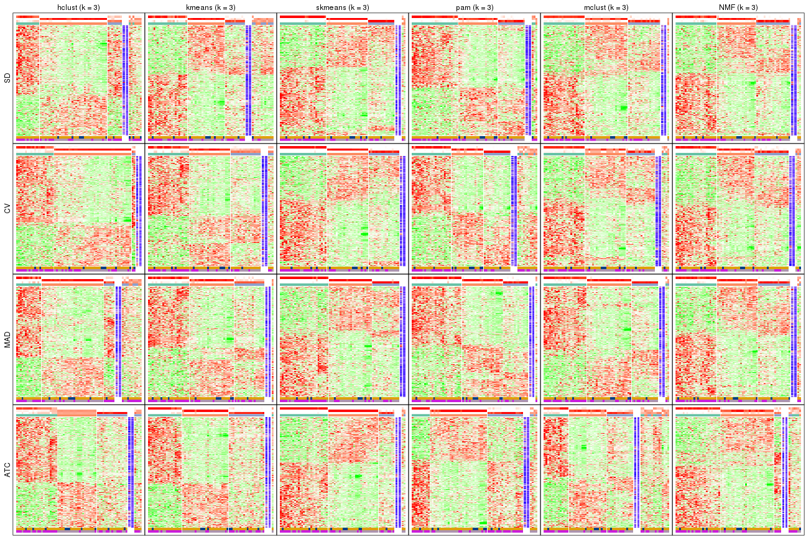
collect_plots(res_list, k = 4, fun = get_signatures, mc.cores = 4)
collect_plots(res_list, k = 5, fun = get_signatures, mc.cores = 4)

collect_plots(res_list, k = 6, fun = get_signatures, mc.cores = 4)
The statistics used for measuring the stability of consensus partitioning. (How are they defined?)
get_stats(res_list, k = 2)
#> k 1-PAC mean_silhouette concordance area_increased Rand Jaccard
#> SD:NMF 2 1.000 0.966 0.985 0.501 0.497 0.497
#> CV:NMF 2 1.000 0.969 0.987 0.500 0.500 0.500
#> MAD:NMF 2 1.000 0.949 0.979 0.501 0.497 0.497
#> ATC:NMF 2 0.845 0.870 0.951 0.496 0.497 0.497
#> SD:skmeans 2 1.000 0.971 0.987 0.504 0.497 0.497
#> CV:skmeans 2 1.000 0.966 0.966 0.506 0.494 0.494
#> MAD:skmeans 2 1.000 0.958 0.984 0.506 0.494 0.494
#> ATC:skmeans 2 1.000 0.982 0.993 0.505 0.497 0.497
#> SD:mclust 2 0.526 0.714 0.867 0.478 0.522 0.522
#> CV:mclust 2 0.461 0.640 0.823 0.484 0.530 0.530
#> MAD:mclust 2 0.507 0.841 0.901 0.461 0.539 0.539
#> ATC:mclust 2 0.685 0.888 0.947 0.389 0.612 0.612
#> SD:kmeans 2 0.999 0.984 0.992 0.483 0.515 0.515
#> CV:kmeans 2 1.000 0.983 0.992 0.488 0.515 0.515
#> MAD:kmeans 2 1.000 0.974 0.989 0.491 0.509 0.509
#> ATC:kmeans 2 1.000 0.993 0.997 0.487 0.515 0.515
#> SD:pam 2 0.490 0.853 0.905 0.501 0.500 0.500
#> CV:pam 2 0.319 0.724 0.853 0.478 0.504 0.504
#> MAD:pam 2 0.935 0.941 0.974 0.505 0.494 0.494
#> ATC:pam 2 0.998 0.940 0.976 0.493 0.509 0.509
#> SD:hclust 2 0.795 0.885 0.945 0.457 0.539 0.539
#> CV:hclust 2 0.957 0.962 0.977 0.456 0.539 0.539
#> MAD:hclust 2 0.741 0.865 0.934 0.464 0.509 0.509
#> ATC:hclust 2 0.645 0.852 0.917 0.468 0.530 0.530
get_stats(res_list, k = 3)
#> k 1-PAC mean_silhouette concordance area_increased Rand Jaccard
#> SD:NMF 3 0.801 0.867 0.933 0.3448 0.719 0.490
#> CV:NMF 3 0.737 0.844 0.915 0.3484 0.730 0.506
#> MAD:NMF 3 0.876 0.883 0.942 0.3432 0.724 0.497
#> ATC:NMF 3 0.607 0.719 0.855 0.2367 0.889 0.782
#> SD:skmeans 3 0.961 0.944 0.977 0.3164 0.788 0.596
#> CV:skmeans 3 1.000 0.972 0.983 0.3183 0.770 0.564
#> MAD:skmeans 3 1.000 0.975 0.989 0.3030 0.806 0.623
#> ATC:skmeans 3 0.965 0.941 0.971 0.2213 0.858 0.719
#> SD:mclust 3 0.641 0.878 0.897 0.3887 0.745 0.538
#> CV:mclust 3 0.736 0.724 0.832 0.3656 0.744 0.542
#> MAD:mclust 3 0.909 0.919 0.949 0.4276 0.754 0.561
#> ATC:mclust 3 0.379 0.621 0.783 0.6344 0.705 0.524
#> SD:kmeans 3 0.662 0.703 0.848 0.3576 0.756 0.551
#> CV:kmeans 3 0.652 0.836 0.839 0.3205 0.762 0.558
#> MAD:kmeans 3 0.689 0.873 0.898 0.3342 0.761 0.558
#> ATC:kmeans 3 0.882 0.917 0.954 0.3662 0.735 0.522
#> SD:pam 3 0.776 0.853 0.902 0.3195 0.761 0.559
#> CV:pam 3 0.707 0.747 0.888 0.3921 0.709 0.483
#> MAD:pam 3 0.898 0.923 0.964 0.2964 0.768 0.568
#> ATC:pam 3 0.851 0.873 0.939 0.2731 0.781 0.606
#> SD:hclust 3 0.687 0.776 0.863 0.1745 0.944 0.896
#> CV:hclust 3 0.880 0.881 0.931 0.0876 0.980 0.964
#> MAD:hclust 3 0.766 0.763 0.887 0.2300 0.915 0.833
#> ATC:hclust 3 0.571 0.750 0.738 0.2591 0.775 0.583
get_stats(res_list, k = 4)
#> k 1-PAC mean_silhouette concordance area_increased Rand Jaccard
#> SD:NMF 4 0.555 0.671 0.805 0.1165 0.831 0.543
#> CV:NMF 4 0.602 0.706 0.827 0.1159 0.824 0.529
#> MAD:NMF 4 0.563 0.483 0.694 0.1128 0.917 0.760
#> ATC:NMF 4 0.584 0.629 0.810 0.1549 0.851 0.654
#> SD:skmeans 4 0.751 0.650 0.821 0.0996 0.938 0.822
#> CV:skmeans 4 0.764 0.702 0.853 0.0922 0.927 0.787
#> MAD:skmeans 4 0.747 0.722 0.815 0.1006 0.948 0.854
#> ATC:skmeans 4 0.885 0.861 0.937 0.0701 0.969 0.918
#> SD:mclust 4 0.969 0.887 0.957 0.0982 0.925 0.778
#> CV:mclust 4 0.987 0.931 0.956 0.1056 0.877 0.659
#> MAD:mclust 4 0.856 0.825 0.912 0.0966 0.926 0.785
#> ATC:mclust 4 0.490 0.592 0.778 0.0741 0.854 0.619
#> SD:kmeans 4 0.672 0.680 0.799 0.1282 0.874 0.645
#> CV:kmeans 4 0.621 0.724 0.811 0.1342 0.944 0.828
#> MAD:kmeans 4 0.732 0.728 0.825 0.1304 0.896 0.700
#> ATC:kmeans 4 0.762 0.766 0.831 0.1008 0.868 0.634
#> SD:pam 4 0.647 0.688 0.834 0.0938 0.935 0.816
#> CV:pam 4 0.711 0.747 0.860 0.1168 0.824 0.532
#> MAD:pam 4 0.787 0.812 0.906 0.0781 0.958 0.880
#> ATC:pam 4 0.757 0.839 0.904 0.1203 0.924 0.804
#> SD:hclust 4 0.620 0.766 0.836 0.0617 0.988 0.975
#> CV:hclust 4 0.846 0.877 0.918 0.0759 0.958 0.919
#> MAD:hclust 4 0.606 0.684 0.782 0.0911 0.989 0.974
#> ATC:hclust 4 0.666 0.764 0.835 0.1855 0.897 0.708
get_stats(res_list, k = 5)
#> k 1-PAC mean_silhouette concordance area_increased Rand Jaccard
#> SD:NMF 5 0.589 0.526 0.728 0.0652 0.898 0.625
#> CV:NMF 5 0.622 0.536 0.738 0.0660 0.940 0.765
#> MAD:NMF 5 0.555 0.366 0.599 0.0688 0.834 0.489
#> ATC:NMF 5 0.644 0.601 0.804 0.1002 0.807 0.452
#> SD:skmeans 5 0.683 0.502 0.727 0.0675 0.930 0.774
#> CV:skmeans 5 0.721 0.741 0.809 0.0664 0.946 0.812
#> MAD:skmeans 5 0.683 0.577 0.743 0.0675 0.942 0.816
#> ATC:skmeans 5 0.842 0.549 0.868 0.0455 0.974 0.926
#> SD:mclust 5 0.843 0.754 0.838 0.0788 0.883 0.603
#> CV:mclust 5 0.786 0.794 0.811 0.0695 0.882 0.601
#> MAD:mclust 5 0.802 0.839 0.871 0.0915 0.882 0.605
#> ATC:mclust 5 0.618 0.646 0.774 0.0806 0.840 0.538
#> SD:kmeans 5 0.677 0.550 0.726 0.0560 0.895 0.638
#> CV:kmeans 5 0.696 0.617 0.783 0.0630 0.945 0.810
#> MAD:kmeans 5 0.663 0.451 0.726 0.0571 0.918 0.727
#> ATC:kmeans 5 0.754 0.605 0.725 0.0496 0.908 0.664
#> SD:pam 5 0.710 0.689 0.839 0.0897 0.838 0.519
#> CV:pam 5 0.874 0.811 0.923 0.0567 0.937 0.755
#> MAD:pam 5 0.711 0.731 0.856 0.1068 0.889 0.654
#> ATC:pam 5 0.850 0.862 0.925 0.0975 0.858 0.580
#> SD:hclust 5 0.529 0.696 0.807 0.0712 0.994 0.988
#> CV:hclust 5 0.657 0.799 0.882 0.0712 0.993 0.986
#> MAD:hclust 5 0.540 0.619 0.750 0.0794 1.000 1.000
#> ATC:hclust 5 0.707 0.816 0.866 0.0311 0.968 0.889
get_stats(res_list, k = 6)
#> k 1-PAC mean_silhouette concordance area_increased Rand Jaccard
#> SD:NMF 6 0.656 0.546 0.754 0.0408 0.938 0.702
#> CV:NMF 6 0.707 0.610 0.786 0.0431 0.891 0.538
#> MAD:NMF 6 0.640 0.480 0.717 0.0432 0.869 0.468
#> ATC:NMF 6 0.619 0.499 0.743 0.0382 0.891 0.582
#> SD:skmeans 6 0.689 0.568 0.754 0.0413 0.901 0.639
#> CV:skmeans 6 0.688 0.574 0.760 0.0484 0.932 0.736
#> MAD:skmeans 6 0.696 0.570 0.740 0.0416 0.921 0.719
#> ATC:skmeans 6 0.790 0.737 0.848 0.0427 0.939 0.819
#> SD:mclust 6 0.963 0.890 0.949 0.0588 0.938 0.713
#> CV:mclust 6 0.965 0.898 0.958 0.0673 0.937 0.710
#> MAD:mclust 6 0.849 0.854 0.901 0.0482 0.939 0.716
#> ATC:mclust 6 0.675 0.576 0.730 0.0658 0.888 0.599
#> SD:kmeans 6 0.722 0.626 0.776 0.0372 0.938 0.739
#> CV:kmeans 6 0.702 0.414 0.706 0.0418 0.924 0.717
#> MAD:kmeans 6 0.725 0.604 0.759 0.0413 0.910 0.663
#> ATC:kmeans 6 0.813 0.818 0.846 0.0385 0.919 0.656
#> SD:pam 6 0.721 0.643 0.829 0.0287 0.948 0.780
#> CV:pam 6 0.857 0.769 0.909 0.0164 0.980 0.906
#> MAD:pam 6 0.795 0.719 0.868 0.0492 0.953 0.793
#> ATC:pam 6 0.855 0.832 0.910 0.0221 0.979 0.908
#> SD:hclust 6 0.508 0.618 0.765 0.0243 0.892 0.774
#> CV:hclust 6 0.619 0.787 0.864 0.0298 1.000 1.000
#> MAD:hclust 6 0.602 0.501 0.705 0.0542 0.853 0.645
#> ATC:hclust 6 0.706 0.782 0.868 0.0404 0.999 0.995
Following heatmap plots the partition for each combination of methods and the lightness correspond to the silhouette scores for samples in each method. On top the consensus subgroup is inferred from all methods by taking the mean silhouette scores as weight.
collect_stats(res_list, k = 2)
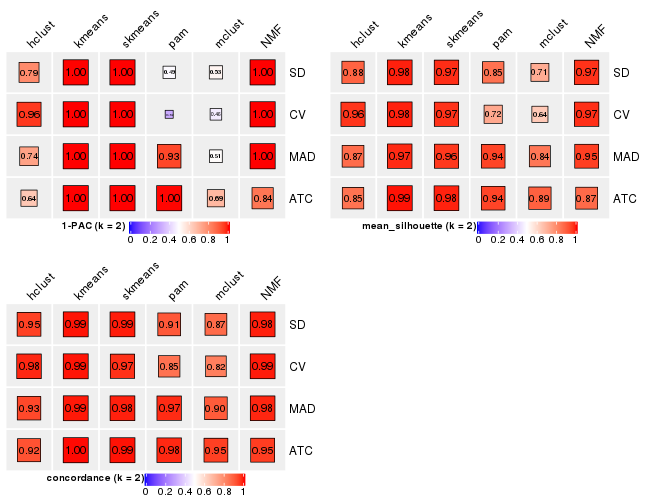
collect_stats(res_list, k = 3)
collect_stats(res_list, k = 4)
collect_stats(res_list, k = 5)
collect_stats(res_list, k = 6)

Collect partitions from all methods:
collect_classes(res_list, k = 2)
collect_classes(res_list, k = 3)
collect_classes(res_list, k = 4)
collect_classes(res_list, k = 5)
collect_classes(res_list, k = 6)
Overlap of top rows from different top-row methods:
top_rows_overlap(res_list, top_n = 1000, method = "euler")
top_rows_overlap(res_list, top_n = 2000, method = "euler")
top_rows_overlap(res_list, top_n = 3000, method = "euler")
top_rows_overlap(res_list, top_n = 4000, method = "euler")
top_rows_overlap(res_list, top_n = 5000, method = "euler")
Also visualize the correspondance of rankings between different top-row methods:
top_rows_overlap(res_list, top_n = 1000, method = "correspondance")
top_rows_overlap(res_list, top_n = 2000, method = "correspondance")
top_rows_overlap(res_list, top_n = 3000, method = "correspondance")
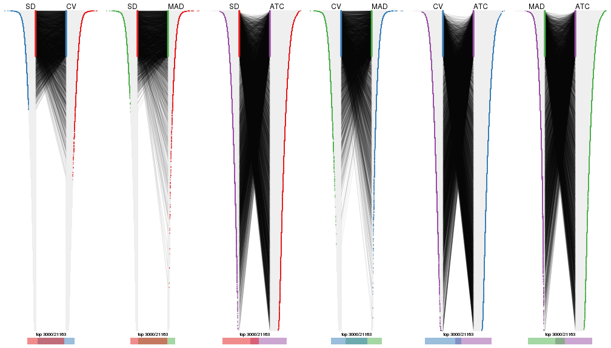
top_rows_overlap(res_list, top_n = 4000, method = "correspondance")
top_rows_overlap(res_list, top_n = 5000, method = "correspondance")
Heatmaps of the top rows:
top_rows_heatmap(res_list, top_n = 1000)
top_rows_heatmap(res_list, top_n = 2000)

top_rows_heatmap(res_list, top_n = 3000)
top_rows_heatmap(res_list, top_n = 4000)
top_rows_heatmap(res_list, top_n = 5000)
Test correlation between subgroups and known annotations. If the known annotation is numeric, one-way ANOVA test is applied, and if the known annotation is discrete, chi-squared contingency table test is applied.
test_to_known_factors(res_list, k = 2)
#> n tissue(p) cell.type(p) k
#> SD:NMF 66 0.4710 2.64e-05 2
#> CV:NMF 64 0.5437 6.28e-05 2
#> MAD:NMF 64 0.5437 1.84e-05 2
#> ATC:NMF 60 0.4921 3.00e-06 2
#> SD:skmeans 66 0.4710 2.64e-05 2
#> CV:skmeans 66 0.4103 9.02e-06 2
#> MAD:skmeans 64 0.4127 6.95e-06 2
#> ATC:skmeans 65 0.4418 3.87e-05 2
#> SD:mclust 62 0.6013 2.72e-04 2
#> CV:mclust 58 0.4186 6.58e-03 2
#> MAD:mclust 65 0.6071 1.96e-04 2
#> ATC:mclust 64 0.4266 6.07e-03 2
#> SD:kmeans 66 0.7575 1.58e-04 2
#> CV:kmeans 66 0.7575 1.58e-04 2
#> MAD:kmeans 66 0.6799 6.18e-05 2
#> ATC:kmeans 66 0.7575 1.58e-04 2
#> SD:pam 64 0.0460 6.28e-05 2
#> CV:pam 58 0.0646 2.41e-04 2
#> MAD:pam 65 0.1446 1.39e-05 2
#> ATC:pam 64 0.6934 1.35e-04 2
#> SD:hclust 65 1.0000 1.96e-04 2
#> CV:hclust 66 1.0000 2.98e-04 2
#> MAD:hclust 61 0.8469 6.27e-05 2
#> ATC:hclust 65 0.9779 1.96e-04 2
test_to_known_factors(res_list, k = 3)
#> n tissue(p) cell.type(p) k
#> SD:NMF 64 0.5136 9.35e-04 3
#> CV:NMF 63 0.2408 6.48e-04 3
#> MAD:NMF 64 0.5926 2.23e-04 3
#> ATC:NMF 59 0.4849 5.72e-05 3
#> SD:skmeans 64 0.2068 2.28e-04 3
#> CV:skmeans 66 0.1704 2.96e-04 3
#> MAD:skmeans 66 0.2238 1.03e-04 3
#> ATC:skmeans 64 0.5295 4.74e-05 3
#> SD:mclust 65 0.2083 6.03e-04 3
#> CV:mclust 62 0.1360 4.19e-04 3
#> MAD:mclust 64 0.2981 1.87e-04 3
#> ATC:mclust 50 0.3966 1.53e-03 3
#> SD:kmeans 54 0.1732 5.51e-04 3
#> CV:kmeans 63 0.2013 3.07e-04 3
#> MAD:kmeans 65 0.2591 5.16e-04 3
#> ATC:kmeans 65 0.3468 9.42e-06 3
#> SD:pam 63 0.0139 5.29e-05 3
#> CV:pam 55 0.0208 1.33e-03 3
#> MAD:pam 65 0.0452 2.26e-05 3
#> ATC:pam 62 0.4462 2.07e-06 3
#> SD:hclust 59 0.3146 2.63e-04 3
#> CV:hclust 66 0.2939 4.81e-04 3
#> MAD:hclust 55 0.5465 1.21e-05 3
#> ATC:hclust 62 0.5743 4.71e-06 3
test_to_known_factors(res_list, k = 4)
#> n tissue(p) cell.type(p) k
#> SD:NMF 54 7.17e-04 1.09e-02 4
#> CV:NMF 56 5.12e-03 4.24e-03 4
#> MAD:NMF 39 2.09e-01 2.58e-03 4
#> ATC:NMF 50 4.93e-01 8.72e-05 4
#> SD:skmeans 48 6.03e-01 1.40e-03 4
#> CV:skmeans 50 6.01e-01 2.58e-03 4
#> MAD:skmeans 53 5.10e-01 7.24e-04 4
#> ATC:skmeans 62 8.32e-01 1.22e-04 4
#> SD:mclust 62 6.91e-05 1.98e-03 4
#> CV:mclust 64 6.91e-05 7.54e-04 4
#> MAD:mclust 61 7.78e-02 2.60e-03 4
#> ATC:mclust 48 4.84e-01 1.58e-03 4
#> SD:kmeans 52 1.27e-01 1.26e-02 4
#> CV:kmeans 58 1.60e-01 6.25e-04 4
#> MAD:kmeans 61 2.14e-01 1.06e-03 4
#> ATC:kmeans 58 4.64e-01 9.80e-06 4
#> SD:pam 56 4.30e-04 3.83e-04 4
#> CV:pam 57 7.80e-07 4.77e-02 4
#> MAD:pam 62 1.17e-02 2.54e-04 4
#> ATC:pam 62 5.07e-01 7.26e-06 4
#> SD:hclust 59 5.10e-01 8.06e-04 4
#> CV:hclust 65 2.73e-01 1.25e-03 4
#> MAD:hclust 46 1.70e-01 3.32e-03 4
#> ATC:hclust 56 8.87e-01 2.77e-04 4
test_to_known_factors(res_list, k = 5)
#> n tissue(p) cell.type(p) k
#> SD:NMF 41 7.12e-04 4.20e-01 5
#> CV:NMF 40 NA 1.63e-01 5
#> MAD:NMF 23 3.31e-03 4.51e-02 5
#> ATC:NMF 51 8.46e-01 4.03e-03 5
#> SD:skmeans 35 7.32e-01 1.00e-02 5
#> CV:skmeans 57 2.25e-07 8.91e-03 5
#> MAD:skmeans 38 7.23e-01 8.08e-03 5
#> ATC:skmeans 34 1.00e+00 1.13e-01 5
#> SD:mclust 61 1.71e-04 3.67e-03 5
#> CV:mclust 60 2.67e-04 2.87e-03 5
#> MAD:mclust 63 1.69e-04 7.28e-03 5
#> ATC:mclust 54 4.07e-01 7.83e-04 5
#> SD:kmeans 45 2.66e-01 1.97e-03 5
#> CV:kmeans 58 1.60e-01 6.25e-04 5
#> MAD:kmeans 43 1.24e-01 1.24e-03 5
#> ATC:kmeans 50 7.11e-01 7.85e-04 5
#> SD:pam 56 1.44e-04 5.78e-03 5
#> CV:pam 58 1.77e-07 3.17e-02 5
#> MAD:pam 59 2.07e-04 2.50e-03 5
#> ATC:pam 64 6.57e-01 1.74e-04 5
#> SD:hclust 53 5.25e-01 1.39e-03 5
#> CV:hclust 60 3.70e-01 1.15e-03 5
#> MAD:hclust 49 1.14e-01 4.95e-04 5
#> ATC:hclust 63 8.93e-01 9.57e-05 5
test_to_known_factors(res_list, k = 6)
#> n tissue(p) cell.type(p) k
#> SD:NMF 44 2.32e-08 1.13e-01 6
#> CV:NMF 48 7.37e-08 5.29e-02 6
#> MAD:NMF 40 1.49e-07 2.99e-01 6
#> ATC:NMF 46 4.64e-01 1.30e-02 6
#> SD:skmeans 50 1.97e-06 7.84e-03 6
#> CV:skmeans 47 5.23e-06 2.16e-02 6
#> MAD:skmeans 48 5.15e-05 2.45e-03 6
#> ATC:skmeans 50 6.13e-01 7.43e-06 6
#> SD:mclust 62 3.43e-04 5.78e-03 6
#> CV:mclust 63 2.98e-04 2.35e-03 6
#> MAD:mclust 64 2.73e-04 6.94e-03 6
#> ATC:mclust 44 5.57e-01 5.61e-03 6
#> SD:kmeans 50 7.96e-02 2.22e-03 6
#> CV:kmeans 42 7.18e-04 4.87e-04 6
#> MAD:kmeans 51 7.70e-02 6.29e-04 6
#> ATC:kmeans 63 7.69e-01 8.26e-05 6
#> SD:pam 52 3.73e-03 1.72e-02 6
#> CV:pam 57 2.44e-07 3.88e-02 6
#> MAD:pam 56 9.02e-04 1.59e-03 6
#> ATC:pam 62 6.85e-01 7.06e-04 6
#> SD:hclust 53 6.09e-01 2.83e-04 6
#> CV:hclust 62 3.32e-01 3.12e-03 6
#> MAD:hclust 41 4.37e-01 3.25e-03 6
#> ATC:hclust 62 8.86e-01 1.54e-04 6
The object with results only for a single top-value method and a single partition method can be extracted as:
res = res_list["SD", "hclust"]
# you can also extract it by
# res = res_list["SD:hclust"]
A summary of res and all the functions that can be applied to it:
res
#> A 'ConsensusPartition' object with k = 2, 3, 4, 5, 6.
#> On a matrix with 21163 rows and 66 columns.
#> Top rows (1000, 2000, 3000, 4000, 5000) are extracted by 'SD' method.
#> Subgroups are detected by 'hclust' method.
#> Performed in total 1250 partitions by row resampling.
#> Best k for subgroups seems to be 2.
#>
#> Following methods can be applied to this 'ConsensusPartition' object:
#> [1] "cola_report" "collect_classes" "collect_plots"
#> [4] "collect_stats" "colnames" "compare_signatures"
#> [7] "consensus_heatmap" "dimension_reduction" "functional_enrichment"
#> [10] "get_anno_col" "get_anno" "get_classes"
#> [13] "get_consensus" "get_matrix" "get_membership"
#> [16] "get_param" "get_signatures" "get_stats"
#> [19] "is_best_k" "is_stable_k" "membership_heatmap"
#> [22] "ncol" "nrow" "plot_ecdf"
#> [25] "rownames" "select_partition_number" "show"
#> [28] "suggest_best_k" "test_to_known_factors"
collect_plots() function collects all the plots made from res for all k (number of partitions)
into one single page to provide an easy and fast comparison between different k.
collect_plots(res)
The plots are:
k and the heatmap of
predicted classes for each k.k.k.k.All the plots in panels can be made by individual functions and they are plotted later in this section.
select_partition_number() produces several plots showing different
statistics for choosing “optimized” k. There are following statistics:
k;k, the area increased is defined as \(A_k - A_{k-1}\).The detailed explanations of these statistics can be found in the cola vignette.
Generally speaking, lower PAC score, higher mean silhouette score or higher
concordance corresponds to better partition. Rand index and Jaccard index
measure how similar the current partition is compared to partition with k-1.
If they are too similar, we won't accept k is better than k-1.
select_partition_number(res)
The numeric values for all these statistics can be obtained by get_stats().
get_stats(res)
#> k 1-PAC mean_silhouette concordance area_increased Rand Jaccard
#> 2 2 0.795 0.885 0.945 0.4565 0.539 0.539
#> 3 3 0.687 0.776 0.863 0.1745 0.944 0.896
#> 4 4 0.620 0.766 0.836 0.0617 0.988 0.975
#> 5 5 0.529 0.696 0.807 0.0712 0.994 0.988
#> 6 6 0.508 0.618 0.765 0.0243 0.892 0.774
suggest_best_k() suggests the best \(k\) based on these statistics. The rules are as follows:
suggest_best_k(res)
#> [1] 2
Following shows the table of the partitions (You need to click the show/hide
code output link to see it). The membership matrix (columns with name p*)
is inferred by
clue::cl_consensus()
function with the SE method. Basically the value in the membership matrix
represents the probability to belong to a certain group. The finall class
label for an item is determined with the group with highest probability it
belongs to.
In get_classes() function, the entropy is calculated from the membership
matrix and the silhouette score is calculated from the consensus matrix.
cbind(get_classes(res, k = 2), get_membership(res, k = 2))
#> class entropy silhouette p1 p2
#> GSM272727 2 0.0000 0.945 0.000 1.000
#> GSM272729 2 0.0000 0.945 0.000 1.000
#> GSM272731 2 0.0000 0.945 0.000 1.000
#> GSM272733 2 0.0000 0.945 0.000 1.000
#> GSM272735 2 0.0000 0.945 0.000 1.000
#> GSM272728 2 0.0000 0.945 0.000 1.000
#> GSM272730 1 0.4161 0.893 0.916 0.084
#> GSM272732 1 0.9323 0.508 0.652 0.348
#> GSM272734 1 0.0000 0.925 1.000 0.000
#> GSM272736 2 0.9209 0.482 0.336 0.664
#> GSM272671 2 0.0000 0.945 0.000 1.000
#> GSM272673 2 0.0000 0.945 0.000 1.000
#> GSM272675 2 0.0000 0.945 0.000 1.000
#> GSM272677 2 0.0000 0.945 0.000 1.000
#> GSM272679 2 0.0000 0.945 0.000 1.000
#> GSM272681 2 0.0000 0.945 0.000 1.000
#> GSM272683 2 0.0000 0.945 0.000 1.000
#> GSM272685 2 0.0000 0.945 0.000 1.000
#> GSM272687 2 0.0000 0.945 0.000 1.000
#> GSM272689 2 0.0000 0.945 0.000 1.000
#> GSM272691 2 0.0000 0.945 0.000 1.000
#> GSM272693 1 0.9170 0.546 0.668 0.332
#> GSM272695 2 0.0000 0.945 0.000 1.000
#> GSM272697 2 0.0000 0.945 0.000 1.000
#> GSM272699 2 0.0000 0.945 0.000 1.000
#> GSM272701 2 0.0000 0.945 0.000 1.000
#> GSM272703 2 0.0000 0.945 0.000 1.000
#> GSM272705 2 0.2948 0.915 0.052 0.948
#> GSM272707 1 0.1633 0.923 0.976 0.024
#> GSM272709 2 0.0000 0.945 0.000 1.000
#> GSM272711 2 0.0000 0.945 0.000 1.000
#> GSM272713 1 0.0000 0.925 1.000 0.000
#> GSM272715 2 0.2948 0.915 0.052 0.948
#> GSM272717 2 0.0000 0.945 0.000 1.000
#> GSM272719 2 0.0000 0.945 0.000 1.000
#> GSM272721 1 0.0376 0.925 0.996 0.004
#> GSM272723 2 0.1633 0.932 0.024 0.976
#> GSM272725 2 0.9087 0.533 0.324 0.676
#> GSM272672 2 0.2948 0.915 0.052 0.948
#> GSM272674 1 0.4161 0.899 0.916 0.084
#> GSM272676 2 0.2423 0.923 0.040 0.960
#> GSM272678 2 0.0000 0.945 0.000 1.000
#> GSM272680 2 0.2423 0.923 0.040 0.960
#> GSM272682 1 0.7056 0.789 0.808 0.192
#> GSM272684 1 0.0000 0.925 1.000 0.000
#> GSM272686 2 0.0000 0.945 0.000 1.000
#> GSM272688 1 0.0000 0.925 1.000 0.000
#> GSM272690 1 0.4298 0.896 0.912 0.088
#> GSM272692 1 0.0000 0.925 1.000 0.000
#> GSM272694 1 0.0000 0.925 1.000 0.000
#> GSM272696 2 0.8955 0.558 0.312 0.688
#> GSM272698 2 0.3431 0.907 0.064 0.936
#> GSM272700 1 0.4161 0.899 0.916 0.084
#> GSM272702 1 0.1184 0.925 0.984 0.016
#> GSM272704 1 0.1184 0.925 0.984 0.016
#> GSM272706 1 0.1184 0.925 0.984 0.016
#> GSM272708 2 0.8955 0.558 0.312 0.688
#> GSM272710 1 0.0000 0.925 1.000 0.000
#> GSM272712 1 0.5946 0.846 0.856 0.144
#> GSM272714 1 0.0000 0.925 1.000 0.000
#> GSM272716 2 0.2948 0.915 0.052 0.948
#> GSM272718 2 0.0000 0.945 0.000 1.000
#> GSM272720 1 0.4161 0.899 0.916 0.084
#> GSM272722 2 0.5294 0.844 0.120 0.880
#> GSM272724 2 0.8955 0.558 0.312 0.688
#> GSM272726 1 0.0000 0.925 1.000 0.000
cbind(get_classes(res, k = 3), get_membership(res, k = 3))
#> class entropy silhouette p1 p2 p3
#> GSM272727 2 0.0237 0.919 0.000 0.996 0.004
#> GSM272729 2 0.0237 0.919 0.000 0.996 0.004
#> GSM272731 2 0.1163 0.909 0.000 0.972 0.028
#> GSM272733 2 0.1163 0.909 0.000 0.972 0.028
#> GSM272735 2 0.1163 0.909 0.000 0.972 0.028
#> GSM272728 2 0.0237 0.919 0.000 0.996 0.004
#> GSM272730 1 0.7246 0.406 0.648 0.052 0.300
#> GSM272732 3 0.8556 0.541 0.164 0.232 0.604
#> GSM272734 1 0.6291 0.382 0.532 0.000 0.468
#> GSM272736 2 0.7250 0.316 0.032 0.572 0.396
#> GSM272671 2 0.0237 0.919 0.000 0.996 0.004
#> GSM272673 2 0.0237 0.918 0.000 0.996 0.004
#> GSM272675 2 0.0000 0.919 0.000 1.000 0.000
#> GSM272677 2 0.0747 0.915 0.000 0.984 0.016
#> GSM272679 2 0.0000 0.919 0.000 1.000 0.000
#> GSM272681 2 0.0237 0.918 0.000 0.996 0.004
#> GSM272683 2 0.0237 0.919 0.000 0.996 0.004
#> GSM272685 2 0.0237 0.919 0.000 0.996 0.004
#> GSM272687 2 0.0424 0.918 0.000 0.992 0.008
#> GSM272689 2 0.0747 0.917 0.000 0.984 0.016
#> GSM272691 2 0.0592 0.917 0.000 0.988 0.012
#> GSM272693 3 0.8595 0.562 0.180 0.216 0.604
#> GSM272695 2 0.0237 0.919 0.000 0.996 0.004
#> GSM272697 2 0.0000 0.919 0.000 1.000 0.000
#> GSM272699 2 0.0000 0.919 0.000 1.000 0.000
#> GSM272701 2 0.0237 0.919 0.000 0.996 0.004
#> GSM272703 2 0.0424 0.918 0.000 0.992 0.008
#> GSM272705 2 0.2625 0.878 0.000 0.916 0.084
#> GSM272707 1 0.4605 0.662 0.796 0.000 0.204
#> GSM272709 2 0.0424 0.918 0.000 0.992 0.008
#> GSM272711 2 0.0000 0.919 0.000 1.000 0.000
#> GSM272713 1 0.1031 0.756 0.976 0.000 0.024
#> GSM272715 2 0.2625 0.878 0.000 0.916 0.084
#> GSM272717 2 0.0237 0.919 0.000 0.996 0.004
#> GSM272719 2 0.0000 0.919 0.000 1.000 0.000
#> GSM272721 1 0.2959 0.749 0.900 0.000 0.100
#> GSM272723 2 0.3129 0.867 0.008 0.904 0.088
#> GSM272725 2 0.7885 0.360 0.072 0.592 0.336
#> GSM272672 2 0.2625 0.878 0.000 0.916 0.084
#> GSM272674 3 0.5926 0.672 0.356 0.000 0.644
#> GSM272676 2 0.3192 0.864 0.000 0.888 0.112
#> GSM272678 2 0.0747 0.915 0.000 0.984 0.016
#> GSM272680 2 0.3192 0.864 0.000 0.888 0.112
#> GSM272682 3 0.7053 0.710 0.244 0.064 0.692
#> GSM272684 1 0.0424 0.750 0.992 0.000 0.008
#> GSM272686 2 0.0237 0.919 0.000 0.996 0.004
#> GSM272688 1 0.2261 0.758 0.932 0.000 0.068
#> GSM272690 3 0.5760 0.717 0.328 0.000 0.672
#> GSM272692 1 0.5363 0.519 0.724 0.000 0.276
#> GSM272694 1 0.2261 0.758 0.932 0.000 0.068
#> GSM272696 2 0.7764 0.391 0.068 0.604 0.328
#> GSM272698 2 0.3896 0.844 0.008 0.864 0.128
#> GSM272700 3 0.5810 0.707 0.336 0.000 0.664
#> GSM272702 1 0.5363 0.580 0.724 0.000 0.276
#> GSM272704 1 0.5363 0.580 0.724 0.000 0.276
#> GSM272706 1 0.5363 0.580 0.724 0.000 0.276
#> GSM272708 2 0.7764 0.391 0.068 0.604 0.328
#> GSM272710 1 0.0892 0.746 0.980 0.000 0.020
#> GSM272712 3 0.5848 0.724 0.268 0.012 0.720
#> GSM272714 1 0.2165 0.747 0.936 0.000 0.064
#> GSM272716 2 0.2625 0.878 0.000 0.916 0.084
#> GSM272718 2 0.0237 0.919 0.000 0.996 0.004
#> GSM272720 3 0.5760 0.715 0.328 0.000 0.672
#> GSM272722 2 0.4136 0.823 0.020 0.864 0.116
#> GSM272724 2 0.7764 0.391 0.068 0.604 0.328
#> GSM272726 1 0.3551 0.697 0.868 0.000 0.132
cbind(get_classes(res, k = 4), get_membership(res, k = 4))
#> class entropy silhouette p1 p2 p3 p4
#> GSM272727 2 0.1488 0.887 0.000 0.956 0.032 0.012
#> GSM272729 2 0.1677 0.887 0.000 0.948 0.040 0.012
#> GSM272731 2 0.1635 0.886 0.000 0.948 0.008 0.044
#> GSM272733 2 0.1635 0.886 0.000 0.948 0.008 0.044
#> GSM272735 2 0.1635 0.886 0.000 0.948 0.008 0.044
#> GSM272728 2 0.1488 0.887 0.000 0.956 0.032 0.012
#> GSM272730 1 0.6241 0.487 0.544 0.048 0.004 0.404
#> GSM272732 4 0.5773 0.535 0.060 0.196 0.020 0.724
#> GSM272734 3 0.6827 0.469 0.128 0.000 0.568 0.304
#> GSM272736 2 0.5576 0.245 0.000 0.536 0.020 0.444
#> GSM272671 2 0.1677 0.887 0.000 0.948 0.040 0.012
#> GSM272673 2 0.1174 0.891 0.000 0.968 0.012 0.020
#> GSM272675 2 0.0927 0.892 0.000 0.976 0.008 0.016
#> GSM272677 2 0.1488 0.890 0.000 0.956 0.012 0.032
#> GSM272679 2 0.0927 0.892 0.000 0.976 0.008 0.016
#> GSM272681 2 0.1174 0.891 0.000 0.968 0.012 0.020
#> GSM272683 2 0.1677 0.887 0.000 0.948 0.040 0.012
#> GSM272685 2 0.1488 0.887 0.000 0.956 0.032 0.012
#> GSM272687 2 0.1545 0.889 0.000 0.952 0.040 0.008
#> GSM272689 2 0.1724 0.891 0.000 0.948 0.032 0.020
#> GSM272691 2 0.1388 0.890 0.000 0.960 0.012 0.028
#> GSM272693 4 0.5890 0.558 0.076 0.180 0.020 0.724
#> GSM272695 2 0.1297 0.893 0.000 0.964 0.016 0.020
#> GSM272697 2 0.1059 0.892 0.000 0.972 0.012 0.016
#> GSM272699 2 0.1059 0.892 0.000 0.972 0.012 0.016
#> GSM272701 2 0.1297 0.893 0.000 0.964 0.016 0.020
#> GSM272703 2 0.1545 0.889 0.000 0.952 0.040 0.008
#> GSM272705 2 0.2730 0.855 0.000 0.896 0.016 0.088
#> GSM272707 1 0.4983 0.716 0.704 0.000 0.024 0.272
#> GSM272709 2 0.1545 0.889 0.000 0.952 0.040 0.008
#> GSM272711 2 0.0927 0.892 0.000 0.976 0.008 0.016
#> GSM272713 1 0.2730 0.740 0.896 0.000 0.016 0.088
#> GSM272715 2 0.2730 0.855 0.000 0.896 0.016 0.088
#> GSM272717 2 0.1488 0.887 0.000 0.956 0.032 0.012
#> GSM272719 2 0.0927 0.892 0.000 0.976 0.008 0.016
#> GSM272721 1 0.3626 0.766 0.812 0.000 0.004 0.184
#> GSM272723 2 0.3182 0.848 0.000 0.876 0.028 0.096
#> GSM272725 2 0.5798 0.321 0.012 0.576 0.016 0.396
#> GSM272672 2 0.2730 0.855 0.000 0.896 0.016 0.088
#> GSM272674 4 0.3587 0.740 0.104 0.000 0.040 0.856
#> GSM272676 2 0.3653 0.837 0.000 0.844 0.028 0.128
#> GSM272678 2 0.1488 0.890 0.000 0.956 0.012 0.032
#> GSM272680 2 0.3653 0.837 0.000 0.844 0.028 0.128
#> GSM272682 4 0.2845 0.733 0.028 0.032 0.028 0.912
#> GSM272684 1 0.2413 0.722 0.916 0.000 0.020 0.064
#> GSM272686 2 0.1677 0.887 0.000 0.948 0.040 0.012
#> GSM272688 1 0.3157 0.768 0.852 0.000 0.004 0.144
#> GSM272690 4 0.2892 0.766 0.068 0.000 0.036 0.896
#> GSM272692 3 0.3351 0.613 0.148 0.000 0.844 0.008
#> GSM272694 1 0.3157 0.768 0.852 0.000 0.004 0.144
#> GSM272696 2 0.5658 0.353 0.008 0.588 0.016 0.388
#> GSM272698 2 0.4010 0.813 0.000 0.816 0.028 0.156
#> GSM272700 4 0.3071 0.761 0.068 0.000 0.044 0.888
#> GSM272702 1 0.4804 0.638 0.616 0.000 0.000 0.384
#> GSM272704 1 0.4817 0.631 0.612 0.000 0.000 0.388
#> GSM272706 1 0.4804 0.638 0.616 0.000 0.000 0.384
#> GSM272708 2 0.5658 0.353 0.008 0.588 0.016 0.388
#> GSM272710 1 0.2256 0.714 0.924 0.000 0.020 0.056
#> GSM272712 4 0.2125 0.757 0.052 0.004 0.012 0.932
#> GSM272714 1 0.3280 0.739 0.860 0.000 0.016 0.124
#> GSM272716 2 0.2730 0.855 0.000 0.896 0.016 0.088
#> GSM272718 2 0.1488 0.887 0.000 0.956 0.032 0.012
#> GSM272720 4 0.3128 0.765 0.076 0.000 0.040 0.884
#> GSM272722 2 0.3948 0.802 0.000 0.828 0.036 0.136
#> GSM272724 2 0.5658 0.353 0.008 0.588 0.016 0.388
#> GSM272726 1 0.3392 0.558 0.856 0.000 0.124 0.020
cbind(get_classes(res, k = 5), get_membership(res, k = 5))
#> class entropy silhouette p1 p2 p3 p4 p5
#> GSM272727 2 0.1851 0.846 0.000 0.912 0.088 0.000 0.000
#> GSM272729 2 0.2648 0.843 0.000 0.848 0.152 0.000 0.000
#> GSM272731 2 0.2511 0.850 0.000 0.892 0.080 0.028 0.000
#> GSM272733 2 0.2511 0.850 0.000 0.892 0.080 0.028 0.000
#> GSM272735 2 0.2511 0.850 0.000 0.892 0.080 0.028 0.000
#> GSM272728 2 0.1851 0.846 0.000 0.912 0.088 0.000 0.000
#> GSM272730 1 0.6097 0.474 0.580 0.008 0.136 0.276 0.000
#> GSM272732 4 0.6741 0.518 0.080 0.120 0.200 0.600 0.000
#> GSM272734 5 0.5261 0.488 0.044 0.000 0.012 0.316 0.628
#> GSM272736 2 0.6051 0.155 0.000 0.476 0.120 0.404 0.000
#> GSM272671 2 0.2648 0.843 0.000 0.848 0.152 0.000 0.000
#> GSM272673 2 0.1043 0.852 0.000 0.960 0.040 0.000 0.000
#> GSM272675 2 0.0880 0.853 0.000 0.968 0.032 0.000 0.000
#> GSM272677 2 0.1364 0.851 0.000 0.952 0.036 0.012 0.000
#> GSM272679 2 0.0880 0.853 0.000 0.968 0.032 0.000 0.000
#> GSM272681 2 0.1043 0.852 0.000 0.960 0.040 0.000 0.000
#> GSM272683 2 0.2648 0.843 0.000 0.848 0.152 0.000 0.000
#> GSM272685 2 0.2424 0.847 0.000 0.868 0.132 0.000 0.000
#> GSM272687 2 0.2561 0.845 0.000 0.856 0.144 0.000 0.000
#> GSM272689 2 0.2286 0.857 0.000 0.888 0.108 0.004 0.000
#> GSM272691 2 0.1281 0.854 0.000 0.956 0.032 0.012 0.000
#> GSM272693 4 0.6765 0.530 0.096 0.104 0.200 0.600 0.000
#> GSM272695 2 0.1478 0.859 0.000 0.936 0.064 0.000 0.000
#> GSM272697 2 0.0963 0.853 0.000 0.964 0.036 0.000 0.000
#> GSM272699 2 0.0963 0.853 0.000 0.964 0.036 0.000 0.000
#> GSM272701 2 0.1478 0.859 0.000 0.936 0.064 0.000 0.000
#> GSM272703 2 0.2561 0.845 0.000 0.856 0.144 0.000 0.000
#> GSM272705 2 0.3590 0.820 0.000 0.828 0.092 0.080 0.000
#> GSM272707 1 0.5576 0.427 0.676 0.000 0.100 0.204 0.020
#> GSM272709 2 0.2561 0.845 0.000 0.856 0.144 0.000 0.000
#> GSM272711 2 0.0880 0.853 0.000 0.968 0.032 0.000 0.000
#> GSM272713 1 0.2644 0.507 0.888 0.000 0.088 0.012 0.012
#> GSM272715 2 0.3697 0.817 0.000 0.820 0.100 0.080 0.000
#> GSM272717 2 0.1851 0.846 0.000 0.912 0.088 0.000 0.000
#> GSM272719 2 0.0880 0.853 0.000 0.968 0.032 0.000 0.000
#> GSM272721 1 0.2329 0.607 0.876 0.000 0.000 0.124 0.000
#> GSM272723 2 0.3888 0.812 0.000 0.796 0.148 0.056 0.000
#> GSM272725 2 0.6532 0.283 0.004 0.496 0.196 0.304 0.000
#> GSM272672 2 0.3697 0.817 0.000 0.820 0.100 0.080 0.000
#> GSM272674 4 0.2482 0.734 0.064 0.000 0.016 0.904 0.016
#> GSM272676 2 0.3664 0.804 0.000 0.828 0.064 0.104 0.004
#> GSM272678 2 0.1364 0.851 0.000 0.952 0.036 0.012 0.000
#> GSM272680 2 0.3664 0.804 0.000 0.828 0.064 0.104 0.004
#> GSM272682 4 0.2569 0.714 0.008 0.028 0.056 0.904 0.004
#> GSM272684 1 0.2573 0.463 0.880 0.000 0.104 0.000 0.016
#> GSM272686 2 0.2648 0.844 0.000 0.848 0.152 0.000 0.000
#> GSM272688 1 0.1732 0.605 0.920 0.000 0.000 0.080 0.000
#> GSM272690 4 0.1605 0.751 0.040 0.000 0.004 0.944 0.012
#> GSM272692 5 0.1651 0.453 0.036 0.000 0.012 0.008 0.944
#> GSM272694 1 0.1732 0.605 0.920 0.000 0.000 0.080 0.000
#> GSM272696 2 0.6361 0.315 0.000 0.508 0.196 0.296 0.000
#> GSM272698 2 0.3937 0.784 0.000 0.804 0.060 0.132 0.004
#> GSM272700 4 0.1869 0.743 0.036 0.000 0.012 0.936 0.016
#> GSM272702 1 0.5171 0.564 0.648 0.000 0.076 0.276 0.000
#> GSM272704 1 0.5192 0.560 0.644 0.000 0.076 0.280 0.000
#> GSM272706 1 0.5171 0.564 0.648 0.000 0.076 0.276 0.000
#> GSM272708 2 0.6361 0.315 0.000 0.508 0.196 0.296 0.000
#> GSM272710 1 0.2722 0.424 0.868 0.000 0.120 0.004 0.008
#> GSM272712 4 0.2994 0.714 0.016 0.004 0.112 0.864 0.004
#> GSM272714 1 0.3203 0.486 0.820 0.000 0.168 0.000 0.012
#> GSM272716 2 0.3697 0.817 0.000 0.820 0.100 0.080 0.000
#> GSM272718 2 0.1851 0.846 0.000 0.912 0.088 0.000 0.000
#> GSM272720 4 0.1862 0.751 0.048 0.000 0.004 0.932 0.016
#> GSM272722 2 0.4698 0.761 0.000 0.732 0.172 0.096 0.000
#> GSM272724 2 0.6361 0.315 0.000 0.508 0.196 0.296 0.000
#> GSM272726 3 0.5333 0.000 0.384 0.000 0.564 0.004 0.048
cbind(get_classes(res, k = 6), get_membership(res, k = 6))
#> class entropy silhouette p1 p2 p3 p4 p5 p6
#> GSM272727 2 0.2482 0.8279 0.000 0.892 0.072 0.020 0.012 0.004
#> GSM272729 2 0.2848 0.8233 0.000 0.816 0.176 0.008 0.000 0.000
#> GSM272731 2 0.2178 0.8341 0.000 0.868 0.132 0.000 0.000 0.000
#> GSM272733 2 0.2178 0.8341 0.000 0.868 0.132 0.000 0.000 0.000
#> GSM272735 2 0.2178 0.8341 0.000 0.868 0.132 0.000 0.000 0.000
#> GSM272728 2 0.2482 0.8279 0.000 0.892 0.072 0.020 0.012 0.004
#> GSM272730 1 0.3942 0.5492 0.624 0.000 0.368 0.004 0.004 0.000
#> GSM272732 3 0.4042 0.0364 0.100 0.096 0.784 0.020 0.000 0.000
#> GSM272734 4 0.5300 -0.5126 0.036 0.000 0.036 0.496 0.000 0.432
#> GSM272736 3 0.4246 0.2194 0.000 0.452 0.532 0.016 0.000 0.000
#> GSM272671 2 0.2848 0.8233 0.000 0.816 0.176 0.008 0.000 0.000
#> GSM272673 2 0.0692 0.8482 0.000 0.976 0.020 0.004 0.000 0.000
#> GSM272675 2 0.0508 0.8502 0.000 0.984 0.012 0.004 0.000 0.000
#> GSM272677 2 0.0922 0.8472 0.000 0.968 0.024 0.004 0.004 0.000
#> GSM272679 2 0.0508 0.8502 0.000 0.984 0.012 0.004 0.000 0.000
#> GSM272681 2 0.0692 0.8482 0.000 0.976 0.020 0.004 0.000 0.000
#> GSM272683 2 0.2848 0.8233 0.000 0.816 0.176 0.008 0.000 0.000
#> GSM272685 2 0.2830 0.8320 0.000 0.836 0.144 0.020 0.000 0.000
#> GSM272687 2 0.2706 0.8279 0.000 0.832 0.160 0.008 0.000 0.000
#> GSM272689 2 0.2462 0.8496 0.000 0.860 0.132 0.004 0.004 0.000
#> GSM272691 2 0.0865 0.8503 0.000 0.964 0.036 0.000 0.000 0.000
#> GSM272693 3 0.4024 -0.0108 0.116 0.080 0.784 0.020 0.000 0.000
#> GSM272695 2 0.1471 0.8580 0.000 0.932 0.064 0.004 0.000 0.000
#> GSM272697 2 0.0603 0.8504 0.000 0.980 0.016 0.004 0.000 0.000
#> GSM272699 2 0.0603 0.8504 0.000 0.980 0.016 0.004 0.000 0.000
#> GSM272701 2 0.1471 0.8580 0.000 0.932 0.064 0.004 0.000 0.000
#> GSM272703 2 0.2706 0.8279 0.000 0.832 0.160 0.008 0.000 0.000
#> GSM272705 2 0.2871 0.7717 0.000 0.804 0.192 0.004 0.000 0.000
#> GSM272707 1 0.5510 0.4140 0.648 0.000 0.140 0.028 0.180 0.004
#> GSM272709 2 0.2706 0.8279 0.000 0.832 0.160 0.008 0.000 0.000
#> GSM272711 2 0.0508 0.8502 0.000 0.984 0.012 0.004 0.000 0.000
#> GSM272713 1 0.4089 0.5856 0.776 0.000 0.012 0.136 0.072 0.004
#> GSM272715 2 0.3043 0.7651 0.000 0.792 0.200 0.008 0.000 0.000
#> GSM272717 2 0.2482 0.8279 0.000 0.892 0.072 0.020 0.012 0.004
#> GSM272719 2 0.0508 0.8502 0.000 0.984 0.012 0.004 0.000 0.000
#> GSM272721 1 0.1562 0.6701 0.940 0.000 0.024 0.032 0.000 0.004
#> GSM272723 2 0.3081 0.7515 0.000 0.776 0.220 0.000 0.004 0.000
#> GSM272725 3 0.4124 0.3171 0.004 0.476 0.516 0.000 0.004 0.000
#> GSM272672 2 0.3043 0.7651 0.000 0.792 0.200 0.008 0.000 0.000
#> GSM272674 4 0.5725 0.7533 0.076 0.000 0.432 0.460 0.032 0.000
#> GSM272676 2 0.2856 0.7598 0.000 0.844 0.136 0.012 0.004 0.004
#> GSM272678 2 0.0922 0.8472 0.000 0.968 0.024 0.004 0.004 0.000
#> GSM272680 2 0.2856 0.7598 0.000 0.844 0.136 0.012 0.004 0.004
#> GSM272682 3 0.5272 -0.6890 0.016 0.036 0.584 0.348 0.008 0.008
#> GSM272684 1 0.4175 0.5802 0.752 0.000 0.000 0.136 0.108 0.004
#> GSM272686 2 0.2912 0.8250 0.000 0.816 0.172 0.012 0.000 0.000
#> GSM272688 1 0.0520 0.6703 0.984 0.000 0.008 0.008 0.000 0.000
#> GSM272690 4 0.4903 0.7654 0.060 0.000 0.468 0.472 0.000 0.000
#> GSM272692 6 0.0964 0.0000 0.012 0.000 0.000 0.004 0.016 0.968
#> GSM272694 1 0.0520 0.6703 0.984 0.000 0.008 0.008 0.000 0.000
#> GSM272696 3 0.3997 0.2943 0.000 0.488 0.508 0.000 0.004 0.000
#> GSM272698 2 0.3227 0.7242 0.000 0.816 0.156 0.020 0.004 0.004
#> GSM272700 4 0.4787 0.7508 0.052 0.000 0.432 0.516 0.000 0.000
#> GSM272702 1 0.4014 0.6250 0.696 0.000 0.276 0.024 0.000 0.004
#> GSM272704 1 0.4094 0.6215 0.692 0.000 0.280 0.020 0.004 0.004
#> GSM272706 1 0.4014 0.6250 0.696 0.000 0.276 0.024 0.000 0.004
#> GSM272708 3 0.3997 0.2943 0.000 0.488 0.508 0.000 0.004 0.000
#> GSM272710 1 0.4602 0.5206 0.708 0.000 0.000 0.140 0.148 0.004
#> GSM272712 3 0.4297 -0.6018 0.020 0.004 0.692 0.272 0.004 0.008
#> GSM272714 1 0.5619 0.5549 0.656 0.000 0.068 0.184 0.088 0.004
#> GSM272716 2 0.3043 0.7651 0.000 0.792 0.200 0.008 0.000 0.000
#> GSM272718 2 0.2482 0.8279 0.000 0.892 0.072 0.020 0.012 0.004
#> GSM272720 4 0.5174 0.7673 0.064 0.000 0.460 0.468 0.008 0.000
#> GSM272722 2 0.3575 0.6500 0.000 0.708 0.284 0.008 0.000 0.000
#> GSM272724 3 0.3997 0.2943 0.000 0.488 0.508 0.000 0.004 0.000
#> GSM272726 5 0.2006 0.0000 0.104 0.000 0.000 0.000 0.892 0.004
Heatmaps for the consensus matrix. It visualizes the probability of two samples to be in a same group.
consensus_heatmap(res, k = 2)
consensus_heatmap(res, k = 3)
consensus_heatmap(res, k = 4)
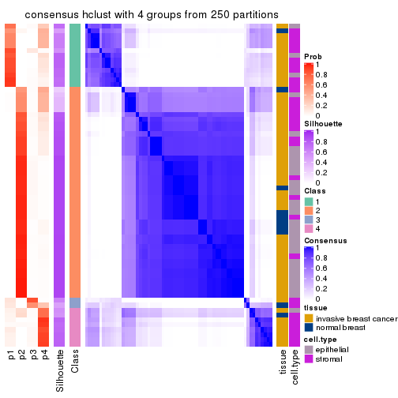
consensus_heatmap(res, k = 5)
consensus_heatmap(res, k = 6)
Heatmaps for the membership of samples in all partitions to see how consistent they are:
membership_heatmap(res, k = 2)
membership_heatmap(res, k = 3)
membership_heatmap(res, k = 4)
membership_heatmap(res, k = 5)
membership_heatmap(res, k = 6)
As soon as we have had the classes for columns, we can look for signatures which are significantly different between classes which can be candidate marks for certain classes. Following are the heatmaps for signatures.
Signature heatmaps where rows are scaled:
get_signatures(res, k = 2)
get_signatures(res, k = 3)
get_signatures(res, k = 4)
get_signatures(res, k = 5)
get_signatures(res, k = 6)
Signature heatmaps where rows are not scaled:
get_signatures(res, k = 2, scale_rows = FALSE)
get_signatures(res, k = 3, scale_rows = FALSE)
get_signatures(res, k = 4, scale_rows = FALSE)
get_signatures(res, k = 5, scale_rows = FALSE)
get_signatures(res, k = 6, scale_rows = FALSE)
Compare the overlap of signatures from different k:
compare_signatures(res)
get_signature() returns a data frame invisibly. TO get the list of signatures, the function
call should be assigned to a variable explicitly. In following code, if plot argument is set
to FALSE, no heatmap is plotted while only the differential analysis is performed.
# code only for demonstration
tb = get_signature(res, k = ..., plot = FALSE)
An example of the output of tb is:
#> which_row fdr mean_1 mean_2 scaled_mean_1 scaled_mean_2 km
#> 1 38 0.042760348 8.373488 9.131774 -0.5533452 0.5164555 1
#> 2 40 0.018707592 7.106213 8.469186 -0.6173731 0.5762149 1
#> 3 55 0.019134737 10.221463 11.207825 -0.6159697 0.5749050 1
#> 4 59 0.006059896 5.921854 7.869574 -0.6899429 0.6439467 1
#> 5 60 0.018055526 8.928898 10.211722 -0.6204761 0.5791110 1
#> 6 98 0.009384629 15.714769 14.887706 0.6635654 -0.6193277 2
...
The columns in tb are:
which_row: row indices corresponding to the input matrix.fdr: FDR for the differential test. mean_x: The mean value in group x.scaled_mean_x: The mean value in group x after rows are scaled.km: Row groups if k-means clustering is applied to rows.UMAP plot which shows how samples are separated.
dimension_reduction(res, k = 2, method = "UMAP")
dimension_reduction(res, k = 3, method = "UMAP")
dimension_reduction(res, k = 4, method = "UMAP")
dimension_reduction(res, k = 5, method = "UMAP")
dimension_reduction(res, k = 6, method = "UMAP")
Following heatmap shows how subgroups are split when increasing k:
collect_classes(res)
Test correlation between subgroups and known annotations. If the known annotation is numeric, one-way ANOVA test is applied, and if the known annotation is discrete, chi-squared contingency table test is applied.
test_to_known_factors(res)
#> n tissue(p) cell.type(p) k
#> SD:hclust 65 1.000 0.000196 2
#> SD:hclust 59 0.315 0.000263 3
#> SD:hclust 59 0.510 0.000806 4
#> SD:hclust 53 0.525 0.001386 5
#> SD:hclust 53 0.609 0.000283 6
If matrix rows can be associated to genes, consider to use functional_enrichment(res,
...) to perform function enrichment for the signature genes. See this vignette for more detailed explanations.
The object with results only for a single top-value method and a single partition method can be extracted as:
res = res_list["SD", "kmeans"]
# you can also extract it by
# res = res_list["SD:kmeans"]
A summary of res and all the functions that can be applied to it:
res
#> A 'ConsensusPartition' object with k = 2, 3, 4, 5, 6.
#> On a matrix with 21163 rows and 66 columns.
#> Top rows (1000, 2000, 3000, 4000, 5000) are extracted by 'SD' method.
#> Subgroups are detected by 'kmeans' method.
#> Performed in total 1250 partitions by row resampling.
#> Best k for subgroups seems to be 2.
#>
#> Following methods can be applied to this 'ConsensusPartition' object:
#> [1] "cola_report" "collect_classes" "collect_plots"
#> [4] "collect_stats" "colnames" "compare_signatures"
#> [7] "consensus_heatmap" "dimension_reduction" "functional_enrichment"
#> [10] "get_anno_col" "get_anno" "get_classes"
#> [13] "get_consensus" "get_matrix" "get_membership"
#> [16] "get_param" "get_signatures" "get_stats"
#> [19] "is_best_k" "is_stable_k" "membership_heatmap"
#> [22] "ncol" "nrow" "plot_ecdf"
#> [25] "rownames" "select_partition_number" "show"
#> [28] "suggest_best_k" "test_to_known_factors"
collect_plots() function collects all the plots made from res for all k (number of partitions)
into one single page to provide an easy and fast comparison between different k.
collect_plots(res)
The plots are:
k and the heatmap of
predicted classes for each k.k.k.k.All the plots in panels can be made by individual functions and they are plotted later in this section.
select_partition_number() produces several plots showing different
statistics for choosing “optimized” k. There are following statistics:
k;k, the area increased is defined as \(A_k - A_{k-1}\).The detailed explanations of these statistics can be found in the cola vignette.
Generally speaking, lower PAC score, higher mean silhouette score or higher
concordance corresponds to better partition. Rand index and Jaccard index
measure how similar the current partition is compared to partition with k-1.
If they are too similar, we won't accept k is better than k-1.
select_partition_number(res)
The numeric values for all these statistics can be obtained by get_stats().
get_stats(res)
#> k 1-PAC mean_silhouette concordance area_increased Rand Jaccard
#> 2 2 0.999 0.984 0.992 0.4832 0.515 0.515
#> 3 3 0.662 0.703 0.848 0.3576 0.756 0.551
#> 4 4 0.672 0.680 0.799 0.1282 0.874 0.645
#> 5 5 0.677 0.550 0.726 0.0560 0.895 0.638
#> 6 6 0.722 0.626 0.776 0.0372 0.938 0.739
suggest_best_k() suggests the best \(k\) based on these statistics. The rules are as follows:
suggest_best_k(res)
#> [1] 2
Following shows the table of the partitions (You need to click the show/hide
code output link to see it). The membership matrix (columns with name p*)
is inferred by
clue::cl_consensus()
function with the SE method. Basically the value in the membership matrix
represents the probability to belong to a certain group. The finall class
label for an item is determined with the group with highest probability it
belongs to.
In get_classes() function, the entropy is calculated from the membership
matrix and the silhouette score is calculated from the consensus matrix.
cbind(get_classes(res, k = 2), get_membership(res, k = 2))
#> class entropy silhouette p1 p2
#> GSM272727 2 0.000 0.996 0.000 1.000
#> GSM272729 2 0.000 0.996 0.000 1.000
#> GSM272731 2 0.000 0.996 0.000 1.000
#> GSM272733 2 0.000 0.996 0.000 1.000
#> GSM272735 2 0.000 0.996 0.000 1.000
#> GSM272728 2 0.000 0.996 0.000 1.000
#> GSM272730 1 0.000 0.985 1.000 0.000
#> GSM272732 1 0.456 0.905 0.904 0.096
#> GSM272734 1 0.000 0.985 1.000 0.000
#> GSM272736 2 0.000 0.996 0.000 1.000
#> GSM272671 2 0.000 0.996 0.000 1.000
#> GSM272673 2 0.000 0.996 0.000 1.000
#> GSM272675 2 0.000 0.996 0.000 1.000
#> GSM272677 2 0.000 0.996 0.000 1.000
#> GSM272679 2 0.000 0.996 0.000 1.000
#> GSM272681 2 0.000 0.996 0.000 1.000
#> GSM272683 2 0.000 0.996 0.000 1.000
#> GSM272685 2 0.000 0.996 0.000 1.000
#> GSM272687 2 0.000 0.996 0.000 1.000
#> GSM272689 2 0.000 0.996 0.000 1.000
#> GSM272691 2 0.000 0.996 0.000 1.000
#> GSM272693 1 0.000 0.985 1.000 0.000
#> GSM272695 2 0.000 0.996 0.000 1.000
#> GSM272697 2 0.000 0.996 0.000 1.000
#> GSM272699 2 0.000 0.996 0.000 1.000
#> GSM272701 2 0.000 0.996 0.000 1.000
#> GSM272703 2 0.000 0.996 0.000 1.000
#> GSM272705 2 0.000 0.996 0.000 1.000
#> GSM272707 1 0.000 0.985 1.000 0.000
#> GSM272709 2 0.000 0.996 0.000 1.000
#> GSM272711 2 0.000 0.996 0.000 1.000
#> GSM272713 1 0.000 0.985 1.000 0.000
#> GSM272715 2 0.000 0.996 0.000 1.000
#> GSM272717 2 0.000 0.996 0.000 1.000
#> GSM272719 2 0.000 0.996 0.000 1.000
#> GSM272721 1 0.000 0.985 1.000 0.000
#> GSM272723 2 0.000 0.996 0.000 1.000
#> GSM272725 1 0.402 0.920 0.920 0.080
#> GSM272672 2 0.000 0.996 0.000 1.000
#> GSM272674 1 0.000 0.985 1.000 0.000
#> GSM272676 2 0.000 0.996 0.000 1.000
#> GSM272678 2 0.000 0.996 0.000 1.000
#> GSM272680 2 0.000 0.996 0.000 1.000
#> GSM272682 1 0.000 0.985 1.000 0.000
#> GSM272684 1 0.000 0.985 1.000 0.000
#> GSM272686 2 0.000 0.996 0.000 1.000
#> GSM272688 1 0.000 0.985 1.000 0.000
#> GSM272690 1 0.000 0.985 1.000 0.000
#> GSM272692 1 0.000 0.985 1.000 0.000
#> GSM272694 1 0.000 0.985 1.000 0.000
#> GSM272696 2 0.000 0.996 0.000 1.000
#> GSM272698 2 0.518 0.866 0.116 0.884
#> GSM272700 1 0.000 0.985 1.000 0.000
#> GSM272702 1 0.000 0.985 1.000 0.000
#> GSM272704 1 0.000 0.985 1.000 0.000
#> GSM272706 1 0.000 0.985 1.000 0.000
#> GSM272708 1 0.456 0.905 0.904 0.096
#> GSM272710 1 0.000 0.985 1.000 0.000
#> GSM272712 1 0.000 0.985 1.000 0.000
#> GSM272714 1 0.000 0.985 1.000 0.000
#> GSM272716 1 0.494 0.891 0.892 0.108
#> GSM272718 2 0.000 0.996 0.000 1.000
#> GSM272720 1 0.000 0.985 1.000 0.000
#> GSM272722 2 0.000 0.996 0.000 1.000
#> GSM272724 2 0.278 0.947 0.048 0.952
#> GSM272726 1 0.000 0.985 1.000 0.000
cbind(get_classes(res, k = 3), get_membership(res, k = 3))
#> class entropy silhouette p1 p2 p3
#> GSM272727 2 0.1643 0.8711 0.000 0.956 0.044
#> GSM272729 3 0.3482 0.6915 0.000 0.128 0.872
#> GSM272731 2 0.1529 0.8725 0.000 0.960 0.040
#> GSM272733 2 0.1529 0.8725 0.000 0.960 0.040
#> GSM272735 2 0.1529 0.8725 0.000 0.960 0.040
#> GSM272728 2 0.1643 0.8711 0.000 0.956 0.044
#> GSM272730 1 0.6095 0.5662 0.608 0.000 0.392
#> GSM272732 3 0.6309 -0.4954 0.500 0.000 0.500
#> GSM272734 1 0.2448 0.8608 0.924 0.000 0.076
#> GSM272736 2 0.1964 0.8669 0.000 0.944 0.056
#> GSM272671 3 0.6235 0.4650 0.000 0.436 0.564
#> GSM272673 2 0.0000 0.8781 0.000 1.000 0.000
#> GSM272675 2 0.0237 0.8775 0.000 0.996 0.004
#> GSM272677 2 0.0000 0.8781 0.000 1.000 0.000
#> GSM272679 2 0.0000 0.8781 0.000 1.000 0.000
#> GSM272681 2 0.1031 0.8662 0.000 0.976 0.024
#> GSM272683 3 0.6235 0.4672 0.000 0.436 0.564
#> GSM272685 3 0.6309 0.3310 0.000 0.496 0.504
#> GSM272687 3 0.3340 0.6960 0.000 0.120 0.880
#> GSM272689 2 0.1289 0.8729 0.000 0.968 0.032
#> GSM272691 2 0.0237 0.8779 0.000 0.996 0.004
#> GSM272693 1 0.4931 0.7674 0.768 0.000 0.232
#> GSM272695 2 0.5882 0.0791 0.000 0.652 0.348
#> GSM272697 2 0.0000 0.8781 0.000 1.000 0.000
#> GSM272699 2 0.0000 0.8781 0.000 1.000 0.000
#> GSM272701 3 0.6295 0.4630 0.000 0.472 0.528
#> GSM272703 3 0.6295 0.4630 0.000 0.472 0.528
#> GSM272705 2 0.6307 -0.3443 0.000 0.512 0.488
#> GSM272707 1 0.1031 0.8720 0.976 0.000 0.024
#> GSM272709 3 0.5948 0.5829 0.000 0.360 0.640
#> GSM272711 2 0.0000 0.8781 0.000 1.000 0.000
#> GSM272713 1 0.0237 0.8757 0.996 0.000 0.004
#> GSM272715 3 0.6244 0.4646 0.000 0.440 0.560
#> GSM272717 2 0.1411 0.8725 0.000 0.964 0.036
#> GSM272719 2 0.0000 0.8781 0.000 1.000 0.000
#> GSM272721 1 0.0237 0.8757 0.996 0.000 0.004
#> GSM272723 3 0.6295 0.4630 0.000 0.472 0.528
#> GSM272725 3 0.3752 0.6175 0.096 0.020 0.884
#> GSM272672 3 0.4452 0.6691 0.000 0.192 0.808
#> GSM272674 1 0.2448 0.8608 0.924 0.000 0.076
#> GSM272676 2 0.1031 0.8667 0.000 0.976 0.024
#> GSM272678 2 0.1163 0.8648 0.000 0.972 0.028
#> GSM272680 2 0.5859 0.3297 0.000 0.656 0.344
#> GSM272682 1 0.5431 0.7662 0.716 0.000 0.284
#> GSM272684 1 0.0237 0.8757 0.996 0.000 0.004
#> GSM272686 3 0.2711 0.6933 0.000 0.088 0.912
#> GSM272688 1 0.0237 0.8757 0.996 0.000 0.004
#> GSM272690 1 0.2448 0.8608 0.924 0.000 0.076
#> GSM272692 1 0.1529 0.8686 0.960 0.000 0.040
#> GSM272694 1 0.0237 0.8757 0.996 0.000 0.004
#> GSM272696 3 0.3340 0.6960 0.000 0.120 0.880
#> GSM272698 2 0.6180 0.2511 0.000 0.584 0.416
#> GSM272700 1 0.2448 0.8608 0.924 0.000 0.076
#> GSM272702 1 0.5785 0.6576 0.668 0.000 0.332
#> GSM272704 1 0.4887 0.7614 0.772 0.000 0.228
#> GSM272706 1 0.5785 0.6576 0.668 0.000 0.332
#> GSM272708 3 0.3850 0.6258 0.088 0.028 0.884
#> GSM272710 1 0.0000 0.8755 1.000 0.000 0.000
#> GSM272712 1 0.6204 0.6216 0.576 0.000 0.424
#> GSM272714 1 0.0237 0.8757 0.996 0.000 0.004
#> GSM272716 3 0.3112 0.6148 0.096 0.004 0.900
#> GSM272718 2 0.1411 0.8725 0.000 0.964 0.036
#> GSM272720 1 0.2448 0.8608 0.924 0.000 0.076
#> GSM272722 3 0.3340 0.6960 0.000 0.120 0.880
#> GSM272724 3 0.3618 0.6923 0.012 0.104 0.884
#> GSM272726 1 0.0000 0.8755 1.000 0.000 0.000
cbind(get_classes(res, k = 4), get_membership(res, k = 4))
#> class entropy silhouette p1 p2 p3 p4
#> GSM272727 2 0.5495 0.794 0.000 0.728 0.096 0.176
#> GSM272729 3 0.0779 0.805 0.000 0.004 0.980 0.016
#> GSM272731 2 0.2983 0.886 0.000 0.892 0.040 0.068
#> GSM272733 2 0.2983 0.886 0.000 0.892 0.040 0.068
#> GSM272735 2 0.2983 0.886 0.000 0.892 0.040 0.068
#> GSM272728 2 0.5495 0.794 0.000 0.728 0.096 0.176
#> GSM272730 1 0.6797 0.237 0.536 0.000 0.108 0.356
#> GSM272732 4 0.5376 0.528 0.176 0.000 0.088 0.736
#> GSM272734 1 0.4877 -0.163 0.592 0.000 0.000 0.408
#> GSM272736 2 0.3399 0.883 0.000 0.868 0.040 0.092
#> GSM272671 3 0.3421 0.778 0.000 0.044 0.868 0.088
#> GSM272673 2 0.0927 0.898 0.000 0.976 0.016 0.008
#> GSM272675 2 0.0779 0.900 0.000 0.980 0.016 0.004
#> GSM272677 2 0.0524 0.899 0.000 0.988 0.008 0.004
#> GSM272679 2 0.1004 0.900 0.000 0.972 0.024 0.004
#> GSM272681 2 0.1510 0.891 0.000 0.956 0.016 0.028
#> GSM272683 3 0.2500 0.800 0.000 0.044 0.916 0.040
#> GSM272685 3 0.5771 0.641 0.000 0.144 0.712 0.144
#> GSM272687 3 0.2983 0.790 0.000 0.040 0.892 0.068
#> GSM272689 2 0.3900 0.870 0.000 0.844 0.072 0.084
#> GSM272691 2 0.0657 0.898 0.000 0.984 0.004 0.012
#> GSM272693 4 0.5599 0.511 0.288 0.000 0.048 0.664
#> GSM272695 3 0.4985 0.262 0.000 0.468 0.532 0.000
#> GSM272697 2 0.1004 0.900 0.000 0.972 0.024 0.004
#> GSM272699 2 0.4095 0.749 0.000 0.792 0.192 0.016
#> GSM272701 3 0.2149 0.810 0.000 0.088 0.912 0.000
#> GSM272703 3 0.2081 0.811 0.000 0.084 0.916 0.000
#> GSM272705 3 0.5772 0.566 0.000 0.260 0.672 0.068
#> GSM272707 1 0.4836 0.363 0.672 0.000 0.008 0.320
#> GSM272709 3 0.1716 0.811 0.000 0.064 0.936 0.000
#> GSM272711 2 0.0592 0.899 0.000 0.984 0.016 0.000
#> GSM272713 1 0.0336 0.723 0.992 0.000 0.000 0.008
#> GSM272715 3 0.2500 0.800 0.000 0.044 0.916 0.040
#> GSM272717 2 0.5484 0.797 0.000 0.732 0.104 0.164
#> GSM272719 2 0.1004 0.900 0.000 0.972 0.024 0.004
#> GSM272721 1 0.0336 0.723 0.992 0.000 0.000 0.008
#> GSM272723 3 0.2081 0.811 0.000 0.084 0.916 0.000
#> GSM272725 3 0.6256 0.485 0.044 0.016 0.616 0.324
#> GSM272672 3 0.2319 0.802 0.000 0.036 0.924 0.040
#> GSM272674 4 0.4985 0.398 0.468 0.000 0.000 0.532
#> GSM272676 2 0.1545 0.887 0.000 0.952 0.008 0.040
#> GSM272678 2 0.1545 0.887 0.000 0.952 0.008 0.040
#> GSM272680 4 0.5203 0.276 0.000 0.416 0.008 0.576
#> GSM272682 4 0.4290 0.603 0.212 0.016 0.000 0.772
#> GSM272684 1 0.0000 0.720 1.000 0.000 0.000 0.000
#> GSM272686 3 0.1305 0.803 0.000 0.004 0.960 0.036
#> GSM272688 1 0.0336 0.723 0.992 0.000 0.000 0.008
#> GSM272690 4 0.4643 0.547 0.344 0.000 0.000 0.656
#> GSM272692 1 0.1302 0.683 0.956 0.000 0.000 0.044
#> GSM272694 1 0.0336 0.723 0.992 0.000 0.000 0.008
#> GSM272696 3 0.4332 0.740 0.000 0.040 0.800 0.160
#> GSM272698 4 0.4584 0.457 0.000 0.300 0.004 0.696
#> GSM272700 4 0.4967 0.430 0.452 0.000 0.000 0.548
#> GSM272702 1 0.6000 0.326 0.592 0.000 0.052 0.356
#> GSM272704 1 0.5929 0.331 0.596 0.000 0.048 0.356
#> GSM272706 1 0.5929 0.331 0.596 0.000 0.048 0.356
#> GSM272708 3 0.6401 0.415 0.044 0.016 0.580 0.360
#> GSM272710 1 0.0469 0.714 0.988 0.000 0.000 0.012
#> GSM272712 4 0.4225 0.590 0.184 0.000 0.024 0.792
#> GSM272714 1 0.0336 0.723 0.992 0.000 0.000 0.008
#> GSM272716 3 0.5673 0.544 0.052 0.000 0.660 0.288
#> GSM272718 2 0.5484 0.797 0.000 0.732 0.104 0.164
#> GSM272720 4 0.4941 0.452 0.436 0.000 0.000 0.564
#> GSM272722 3 0.2983 0.790 0.000 0.040 0.892 0.068
#> GSM272724 3 0.4232 0.749 0.004 0.036 0.816 0.144
#> GSM272726 1 0.0469 0.714 0.988 0.000 0.000 0.012
cbind(get_classes(res, k = 5), get_membership(res, k = 5))
#> class entropy silhouette p1 p2 p3 p4 p5
#> GSM272727 4 0.5856 -0.3824 0.000 0.440 0.096 0.464 0.000
#> GSM272729 3 0.0865 0.7754 0.004 0.000 0.972 0.000 0.024
#> GSM272731 2 0.3759 0.7141 0.004 0.792 0.024 0.180 0.000
#> GSM272733 2 0.3759 0.7141 0.004 0.792 0.024 0.180 0.000
#> GSM272735 2 0.3759 0.7141 0.004 0.792 0.024 0.180 0.000
#> GSM272728 4 0.5737 -0.3935 0.000 0.452 0.084 0.464 0.000
#> GSM272730 5 0.1197 0.5591 0.000 0.000 0.048 0.000 0.952
#> GSM272732 5 0.6321 0.3196 0.176 0.000 0.012 0.236 0.576
#> GSM272734 1 0.5896 -0.2902 0.564 0.000 0.000 0.308 0.128
#> GSM272736 2 0.3880 0.7152 0.004 0.772 0.020 0.204 0.000
#> GSM272671 3 0.4199 0.6929 0.068 0.000 0.772 0.160 0.000
#> GSM272673 2 0.0912 0.7920 0.000 0.972 0.012 0.016 0.000
#> GSM272675 2 0.0290 0.7935 0.000 0.992 0.000 0.008 0.000
#> GSM272677 2 0.0000 0.7930 0.000 1.000 0.000 0.000 0.000
#> GSM272679 2 0.0912 0.7925 0.000 0.972 0.012 0.016 0.000
#> GSM272681 2 0.1522 0.7826 0.000 0.944 0.012 0.044 0.000
#> GSM272683 3 0.2835 0.7586 0.080 0.000 0.880 0.036 0.004
#> GSM272685 3 0.6485 0.5214 0.080 0.072 0.600 0.248 0.000
#> GSM272687 3 0.2699 0.7401 0.000 0.012 0.880 0.008 0.100
#> GSM272689 2 0.4961 0.6735 0.028 0.748 0.080 0.144 0.000
#> GSM272691 2 0.0290 0.7921 0.000 0.992 0.000 0.008 0.000
#> GSM272693 5 0.5342 0.4128 0.156 0.000 0.000 0.172 0.672
#> GSM272695 2 0.4682 0.1845 0.000 0.564 0.420 0.016 0.000
#> GSM272697 2 0.0693 0.7936 0.000 0.980 0.008 0.012 0.000
#> GSM272699 2 0.4684 0.5852 0.020 0.712 0.244 0.024 0.000
#> GSM272701 3 0.1281 0.7747 0.000 0.032 0.956 0.012 0.000
#> GSM272703 3 0.1195 0.7757 0.000 0.028 0.960 0.012 0.000
#> GSM272705 3 0.6718 0.3994 0.080 0.264 0.572 0.084 0.000
#> GSM272707 5 0.3262 0.4833 0.124 0.000 0.000 0.036 0.840
#> GSM272709 3 0.1082 0.7758 0.000 0.028 0.964 0.008 0.000
#> GSM272711 2 0.0693 0.7930 0.000 0.980 0.012 0.008 0.000
#> GSM272713 1 0.4440 0.8179 0.528 0.000 0.000 0.004 0.468
#> GSM272715 3 0.2913 0.7577 0.080 0.000 0.876 0.040 0.004
#> GSM272717 2 0.6421 0.3175 0.020 0.476 0.104 0.400 0.000
#> GSM272719 2 0.0807 0.7929 0.000 0.976 0.012 0.012 0.000
#> GSM272721 1 0.4287 0.8247 0.540 0.000 0.000 0.000 0.460
#> GSM272723 3 0.1195 0.7757 0.000 0.028 0.960 0.012 0.000
#> GSM272725 3 0.4846 0.1532 0.004 0.004 0.512 0.008 0.472
#> GSM272672 3 0.3062 0.7544 0.080 0.000 0.868 0.048 0.004
#> GSM272674 4 0.6593 0.3107 0.368 0.000 0.000 0.420 0.212
#> GSM272676 2 0.1357 0.7823 0.004 0.948 0.000 0.048 0.000
#> GSM272678 2 0.1282 0.7822 0.004 0.952 0.000 0.044 0.000
#> GSM272680 2 0.5817 0.3404 0.008 0.636 0.004 0.240 0.112
#> GSM272682 4 0.6658 0.1209 0.208 0.004 0.000 0.460 0.328
#> GSM272684 1 0.4420 0.8245 0.548 0.000 0.000 0.004 0.448
#> GSM272686 3 0.2778 0.7692 0.060 0.000 0.892 0.016 0.032
#> GSM272688 1 0.4287 0.8247 0.540 0.000 0.000 0.000 0.460
#> GSM272690 4 0.6705 0.2828 0.320 0.000 0.000 0.420 0.260
#> GSM272692 1 0.4302 0.6689 0.720 0.000 0.000 0.032 0.248
#> GSM272694 1 0.4283 0.8250 0.544 0.000 0.000 0.000 0.456
#> GSM272696 3 0.4338 0.5394 0.000 0.008 0.684 0.008 0.300
#> GSM272698 4 0.7410 0.1698 0.092 0.388 0.000 0.412 0.108
#> GSM272700 4 0.6564 0.3137 0.376 0.000 0.000 0.420 0.204
#> GSM272702 5 0.0324 0.5475 0.004 0.000 0.004 0.000 0.992
#> GSM272704 5 0.0510 0.5315 0.016 0.000 0.000 0.000 0.984
#> GSM272706 5 0.0324 0.5475 0.004 0.000 0.004 0.000 0.992
#> GSM272708 5 0.5110 -0.1453 0.004 0.004 0.460 0.020 0.512
#> GSM272710 1 0.4088 0.7939 0.632 0.000 0.000 0.000 0.368
#> GSM272712 5 0.6676 -0.0784 0.200 0.000 0.004 0.364 0.432
#> GSM272714 1 0.4440 0.8179 0.528 0.000 0.000 0.004 0.468
#> GSM272716 3 0.6154 0.2779 0.064 0.000 0.488 0.028 0.420
#> GSM272718 2 0.6421 0.3175 0.020 0.476 0.104 0.400 0.000
#> GSM272720 4 0.6652 0.3085 0.348 0.000 0.000 0.420 0.232
#> GSM272722 3 0.2629 0.7387 0.000 0.012 0.880 0.004 0.104
#> GSM272724 3 0.4178 0.5555 0.000 0.008 0.696 0.004 0.292
#> GSM272726 1 0.4402 0.7822 0.636 0.000 0.000 0.012 0.352
cbind(get_classes(res, k = 6), get_membership(res, k = 6))
#> class entropy silhouette p1 p2 p3 p4 p5 p6
#> GSM272727 6 0.4958 0.874 0.000 0.340 0.028 0.008 0.020 0.604
#> GSM272729 3 0.1088 0.756 0.000 0.000 0.960 0.000 0.024 0.016
#> GSM272731 2 0.4775 0.374 0.000 0.704 0.016 0.036 0.024 0.220
#> GSM272733 2 0.4775 0.374 0.000 0.704 0.016 0.036 0.024 0.220
#> GSM272735 2 0.4775 0.374 0.000 0.704 0.016 0.036 0.024 0.220
#> GSM272728 6 0.4958 0.874 0.000 0.340 0.028 0.008 0.020 0.604
#> GSM272730 5 0.3646 0.663 0.120 0.000 0.036 0.032 0.812 0.000
#> GSM272732 5 0.5007 0.316 0.004 0.008 0.012 0.324 0.616 0.036
#> GSM272734 4 0.5918 0.553 0.148 0.000 0.000 0.604 0.052 0.196
#> GSM272736 2 0.5173 0.418 0.000 0.680 0.016 0.048 0.036 0.220
#> GSM272671 3 0.4732 0.679 0.000 0.008 0.696 0.012 0.060 0.224
#> GSM272673 2 0.1508 0.700 0.000 0.948 0.020 0.012 0.004 0.016
#> GSM272675 2 0.1003 0.695 0.000 0.964 0.004 0.004 0.000 0.028
#> GSM272677 2 0.0146 0.700 0.000 0.996 0.000 0.004 0.000 0.000
#> GSM272679 2 0.1377 0.694 0.000 0.952 0.016 0.004 0.004 0.024
#> GSM272681 2 0.2853 0.671 0.000 0.884 0.012 0.032 0.032 0.040
#> GSM272683 3 0.4385 0.724 0.000 0.004 0.760 0.028 0.064 0.144
#> GSM272685 3 0.6239 0.505 0.000 0.044 0.556 0.032 0.068 0.300
#> GSM272687 3 0.1588 0.725 0.000 0.004 0.924 0.000 0.072 0.000
#> GSM272689 2 0.5334 0.111 0.000 0.644 0.048 0.032 0.016 0.260
#> GSM272691 2 0.0964 0.695 0.000 0.968 0.004 0.012 0.000 0.016
#> GSM272693 5 0.4877 0.504 0.064 0.000 0.008 0.256 0.664 0.008
#> GSM272695 2 0.4305 0.174 0.000 0.560 0.424 0.004 0.004 0.008
#> GSM272697 2 0.1232 0.695 0.000 0.956 0.016 0.004 0.000 0.024
#> GSM272699 2 0.5121 0.294 0.000 0.668 0.224 0.008 0.016 0.084
#> GSM272701 3 0.1003 0.758 0.000 0.028 0.964 0.004 0.004 0.000
#> GSM272703 3 0.1003 0.758 0.000 0.028 0.964 0.004 0.004 0.000
#> GSM272705 3 0.7454 0.331 0.000 0.232 0.472 0.052 0.068 0.176
#> GSM272707 5 0.4585 0.543 0.200 0.000 0.000 0.088 0.704 0.008
#> GSM272709 3 0.1003 0.758 0.000 0.028 0.964 0.004 0.004 0.000
#> GSM272711 2 0.0912 0.700 0.000 0.972 0.012 0.004 0.004 0.008
#> GSM272713 1 0.3073 0.862 0.788 0.000 0.000 0.000 0.204 0.008
#> GSM272715 3 0.4600 0.718 0.000 0.004 0.740 0.032 0.064 0.160
#> GSM272717 6 0.4493 0.872 0.000 0.364 0.040 0.000 0.000 0.596
#> GSM272719 2 0.1015 0.699 0.000 0.968 0.012 0.004 0.004 0.012
#> GSM272721 1 0.3110 0.862 0.792 0.000 0.000 0.012 0.196 0.000
#> GSM272723 3 0.0858 0.758 0.000 0.028 0.968 0.004 0.000 0.000
#> GSM272725 5 0.4109 0.385 0.000 0.000 0.392 0.004 0.596 0.008
#> GSM272672 3 0.4600 0.718 0.000 0.004 0.740 0.032 0.064 0.160
#> GSM272674 4 0.2767 0.781 0.072 0.000 0.000 0.868 0.056 0.004
#> GSM272676 2 0.3121 0.660 0.000 0.864 0.004 0.044 0.036 0.052
#> GSM272678 2 0.3057 0.661 0.000 0.868 0.004 0.044 0.036 0.048
#> GSM272680 2 0.5794 0.368 0.000 0.616 0.004 0.236 0.084 0.060
#> GSM272682 4 0.3392 0.714 0.004 0.008 0.000 0.824 0.124 0.040
#> GSM272684 1 0.2340 0.865 0.852 0.000 0.000 0.000 0.148 0.000
#> GSM272686 3 0.3592 0.742 0.000 0.000 0.824 0.028 0.084 0.064
#> GSM272688 1 0.2697 0.870 0.812 0.000 0.000 0.000 0.188 0.000
#> GSM272690 4 0.2571 0.781 0.060 0.000 0.000 0.876 0.064 0.000
#> GSM272692 1 0.4813 0.560 0.700 0.000 0.000 0.060 0.036 0.204
#> GSM272694 1 0.2697 0.870 0.812 0.000 0.000 0.000 0.188 0.000
#> GSM272696 3 0.3861 0.252 0.000 0.000 0.640 0.000 0.352 0.008
#> GSM272698 4 0.5996 0.246 0.000 0.356 0.004 0.516 0.072 0.052
#> GSM272700 4 0.2753 0.778 0.072 0.000 0.000 0.872 0.048 0.008
#> GSM272702 5 0.3275 0.651 0.144 0.000 0.004 0.036 0.816 0.000
#> GSM272704 5 0.3017 0.634 0.164 0.000 0.000 0.020 0.816 0.000
#> GSM272706 5 0.3275 0.651 0.144 0.000 0.004 0.036 0.816 0.000
#> GSM272708 5 0.4138 0.438 0.000 0.000 0.364 0.008 0.620 0.008
#> GSM272710 1 0.0820 0.801 0.972 0.000 0.000 0.000 0.012 0.016
#> GSM272712 4 0.3703 0.538 0.004 0.000 0.000 0.688 0.304 0.004
#> GSM272714 1 0.3073 0.862 0.788 0.000 0.000 0.000 0.204 0.008
#> GSM272716 5 0.5339 0.281 0.000 0.000 0.312 0.028 0.592 0.068
#> GSM272718 6 0.4493 0.872 0.000 0.364 0.040 0.000 0.000 0.596
#> GSM272720 4 0.2714 0.782 0.064 0.000 0.000 0.872 0.060 0.004
#> GSM272722 3 0.1588 0.725 0.000 0.004 0.924 0.000 0.072 0.000
#> GSM272724 3 0.3847 0.262 0.000 0.000 0.644 0.000 0.348 0.008
#> GSM272726 1 0.1138 0.785 0.960 0.000 0.000 0.004 0.012 0.024
Heatmaps for the consensus matrix. It visualizes the probability of two samples to be in a same group.
consensus_heatmap(res, k = 2)
consensus_heatmap(res, k = 3)
consensus_heatmap(res, k = 4)
consensus_heatmap(res, k = 5)
consensus_heatmap(res, k = 6)
Heatmaps for the membership of samples in all partitions to see how consistent they are:
membership_heatmap(res, k = 2)
membership_heatmap(res, k = 3)
membership_heatmap(res, k = 4)
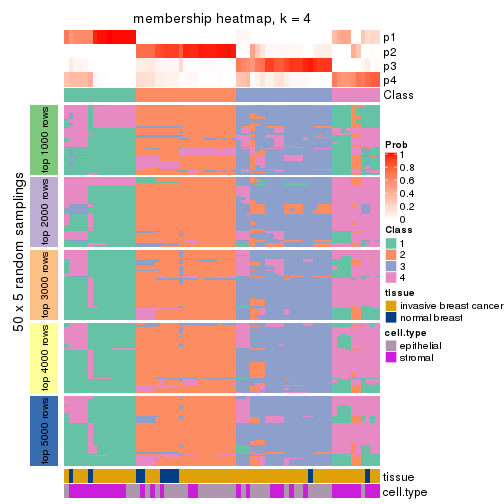
membership_heatmap(res, k = 5)

membership_heatmap(res, k = 6)
As soon as we have had the classes for columns, we can look for signatures which are significantly different between classes which can be candidate marks for certain classes. Following are the heatmaps for signatures.
Signature heatmaps where rows are scaled:
get_signatures(res, k = 2)

get_signatures(res, k = 3)
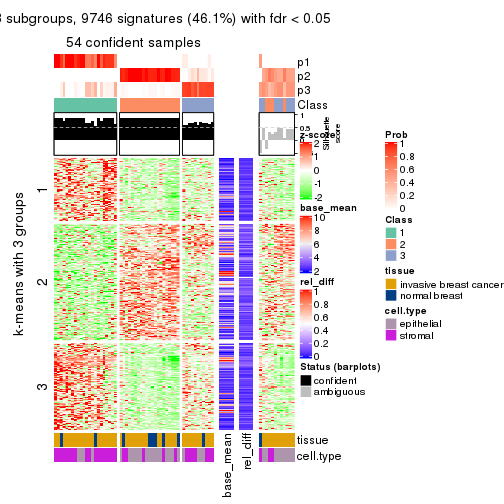
get_signatures(res, k = 4)
get_signatures(res, k = 5)
get_signatures(res, k = 6)
Signature heatmaps where rows are not scaled:
get_signatures(res, k = 2, scale_rows = FALSE)
get_signatures(res, k = 3, scale_rows = FALSE)
get_signatures(res, k = 4, scale_rows = FALSE)
get_signatures(res, k = 5, scale_rows = FALSE)
get_signatures(res, k = 6, scale_rows = FALSE)
Compare the overlap of signatures from different k:
compare_signatures(res)
get_signature() returns a data frame invisibly. TO get the list of signatures, the function
call should be assigned to a variable explicitly. In following code, if plot argument is set
to FALSE, no heatmap is plotted while only the differential analysis is performed.
# code only for demonstration
tb = get_signature(res, k = ..., plot = FALSE)
An example of the output of tb is:
#> which_row fdr mean_1 mean_2 scaled_mean_1 scaled_mean_2 km
#> 1 38 0.042760348 8.373488 9.131774 -0.5533452 0.5164555 1
#> 2 40 0.018707592 7.106213 8.469186 -0.6173731 0.5762149 1
#> 3 55 0.019134737 10.221463 11.207825 -0.6159697 0.5749050 1
#> 4 59 0.006059896 5.921854 7.869574 -0.6899429 0.6439467 1
#> 5 60 0.018055526 8.928898 10.211722 -0.6204761 0.5791110 1
#> 6 98 0.009384629 15.714769 14.887706 0.6635654 -0.6193277 2
...
The columns in tb are:
which_row: row indices corresponding to the input matrix.fdr: FDR for the differential test. mean_x: The mean value in group x.scaled_mean_x: The mean value in group x after rows are scaled.km: Row groups if k-means clustering is applied to rows.UMAP plot which shows how samples are separated.
dimension_reduction(res, k = 2, method = "UMAP")
dimension_reduction(res, k = 3, method = "UMAP")
dimension_reduction(res, k = 4, method = "UMAP")
dimension_reduction(res, k = 5, method = "UMAP")
dimension_reduction(res, k = 6, method = "UMAP")
Following heatmap shows how subgroups are split when increasing k:
collect_classes(res)
Test correlation between subgroups and known annotations. If the known annotation is numeric, one-way ANOVA test is applied, and if the known annotation is discrete, chi-squared contingency table test is applied.
test_to_known_factors(res)
#> n tissue(p) cell.type(p) k
#> SD:kmeans 66 0.7575 0.000158 2
#> SD:kmeans 54 0.1732 0.000551 3
#> SD:kmeans 52 0.1270 0.012647 4
#> SD:kmeans 45 0.2656 0.001966 5
#> SD:kmeans 50 0.0796 0.002216 6
If matrix rows can be associated to genes, consider to use functional_enrichment(res,
...) to perform function enrichment for the signature genes. See this vignette for more detailed explanations.
The object with results only for a single top-value method and a single partition method can be extracted as:
res = res_list["SD", "skmeans"]
# you can also extract it by
# res = res_list["SD:skmeans"]
A summary of res and all the functions that can be applied to it:
res
#> A 'ConsensusPartition' object with k = 2, 3, 4, 5, 6.
#> On a matrix with 21163 rows and 66 columns.
#> Top rows (1000, 2000, 3000, 4000, 5000) are extracted by 'SD' method.
#> Subgroups are detected by 'skmeans' method.
#> Performed in total 1250 partitions by row resampling.
#> Best k for subgroups seems to be 3.
#>
#> Following methods can be applied to this 'ConsensusPartition' object:
#> [1] "cola_report" "collect_classes" "collect_plots"
#> [4] "collect_stats" "colnames" "compare_signatures"
#> [7] "consensus_heatmap" "dimension_reduction" "functional_enrichment"
#> [10] "get_anno_col" "get_anno" "get_classes"
#> [13] "get_consensus" "get_matrix" "get_membership"
#> [16] "get_param" "get_signatures" "get_stats"
#> [19] "is_best_k" "is_stable_k" "membership_heatmap"
#> [22] "ncol" "nrow" "plot_ecdf"
#> [25] "rownames" "select_partition_number" "show"
#> [28] "suggest_best_k" "test_to_known_factors"
collect_plots() function collects all the plots made from res for all k (number of partitions)
into one single page to provide an easy and fast comparison between different k.
collect_plots(res)
The plots are:
k and the heatmap of
predicted classes for each k.k.k.k.All the plots in panels can be made by individual functions and they are plotted later in this section.
select_partition_number() produces several plots showing different
statistics for choosing “optimized” k. There are following statistics:
k;k, the area increased is defined as \(A_k - A_{k-1}\).The detailed explanations of these statistics can be found in the cola vignette.
Generally speaking, lower PAC score, higher mean silhouette score or higher
concordance corresponds to better partition. Rand index and Jaccard index
measure how similar the current partition is compared to partition with k-1.
If they are too similar, we won't accept k is better than k-1.
select_partition_number(res)
The numeric values for all these statistics can be obtained by get_stats().
get_stats(res)
#> k 1-PAC mean_silhouette concordance area_increased Rand Jaccard
#> 2 2 1.000 0.971 0.987 0.5042 0.497 0.497
#> 3 3 0.961 0.944 0.977 0.3164 0.788 0.596
#> 4 4 0.751 0.650 0.821 0.0996 0.938 0.822
#> 5 5 0.683 0.502 0.727 0.0675 0.930 0.774
#> 6 6 0.689 0.568 0.754 0.0413 0.901 0.639
suggest_best_k() suggests the best \(k\) based on these statistics. The rules are as follows:
suggest_best_k(res)
#> [1] 3
#> attr(,"optional")
#> [1] 2
There is also optional best \(k\) = 2 that is worth to check.
Following shows the table of the partitions (You need to click the show/hide
code output link to see it). The membership matrix (columns with name p*)
is inferred by
clue::cl_consensus()
function with the SE method. Basically the value in the membership matrix
represents the probability to belong to a certain group. The finall class
label for an item is determined with the group with highest probability it
belongs to.
In get_classes() function, the entropy is calculated from the membership
matrix and the silhouette score is calculated from the consensus matrix.
cbind(get_classes(res, k = 2), get_membership(res, k = 2))
#> class entropy silhouette p1 p2
#> GSM272727 2 0.000 0.986 0.000 1.000
#> GSM272729 2 0.000 0.986 0.000 1.000
#> GSM272731 2 0.000 0.986 0.000 1.000
#> GSM272733 2 0.000 0.986 0.000 1.000
#> GSM272735 2 0.000 0.986 0.000 1.000
#> GSM272728 2 0.000 0.986 0.000 1.000
#> GSM272730 1 0.000 0.987 1.000 0.000
#> GSM272732 1 0.000 0.987 1.000 0.000
#> GSM272734 1 0.000 0.987 1.000 0.000
#> GSM272736 2 0.000 0.986 0.000 1.000
#> GSM272671 2 0.000 0.986 0.000 1.000
#> GSM272673 2 0.000 0.986 0.000 1.000
#> GSM272675 2 0.000 0.986 0.000 1.000
#> GSM272677 2 0.000 0.986 0.000 1.000
#> GSM272679 2 0.000 0.986 0.000 1.000
#> GSM272681 2 0.000 0.986 0.000 1.000
#> GSM272683 2 0.000 0.986 0.000 1.000
#> GSM272685 2 0.000 0.986 0.000 1.000
#> GSM272687 1 0.767 0.711 0.776 0.224
#> GSM272689 2 0.000 0.986 0.000 1.000
#> GSM272691 2 0.000 0.986 0.000 1.000
#> GSM272693 1 0.000 0.987 1.000 0.000
#> GSM272695 2 0.000 0.986 0.000 1.000
#> GSM272697 2 0.000 0.986 0.000 1.000
#> GSM272699 2 0.000 0.986 0.000 1.000
#> GSM272701 2 0.000 0.986 0.000 1.000
#> GSM272703 2 0.000 0.986 0.000 1.000
#> GSM272705 2 0.000 0.986 0.000 1.000
#> GSM272707 1 0.000 0.987 1.000 0.000
#> GSM272709 2 0.000 0.986 0.000 1.000
#> GSM272711 2 0.000 0.986 0.000 1.000
#> GSM272713 1 0.000 0.987 1.000 0.000
#> GSM272715 2 0.000 0.986 0.000 1.000
#> GSM272717 2 0.000 0.986 0.000 1.000
#> GSM272719 2 0.000 0.986 0.000 1.000
#> GSM272721 1 0.000 0.987 1.000 0.000
#> GSM272723 2 0.000 0.986 0.000 1.000
#> GSM272725 1 0.000 0.987 1.000 0.000
#> GSM272672 2 0.000 0.986 0.000 1.000
#> GSM272674 1 0.000 0.987 1.000 0.000
#> GSM272676 2 0.000 0.986 0.000 1.000
#> GSM272678 2 0.000 0.986 0.000 1.000
#> GSM272680 2 0.802 0.676 0.244 0.756
#> GSM272682 1 0.000 0.987 1.000 0.000
#> GSM272684 1 0.000 0.987 1.000 0.000
#> GSM272686 2 0.714 0.758 0.196 0.804
#> GSM272688 1 0.000 0.987 1.000 0.000
#> GSM272690 1 0.000 0.987 1.000 0.000
#> GSM272692 1 0.000 0.987 1.000 0.000
#> GSM272694 1 0.000 0.987 1.000 0.000
#> GSM272696 1 0.000 0.987 1.000 0.000
#> GSM272698 1 0.605 0.824 0.852 0.148
#> GSM272700 1 0.000 0.987 1.000 0.000
#> GSM272702 1 0.000 0.987 1.000 0.000
#> GSM272704 1 0.000 0.987 1.000 0.000
#> GSM272706 1 0.000 0.987 1.000 0.000
#> GSM272708 1 0.000 0.987 1.000 0.000
#> GSM272710 1 0.000 0.987 1.000 0.000
#> GSM272712 1 0.000 0.987 1.000 0.000
#> GSM272714 1 0.000 0.987 1.000 0.000
#> GSM272716 1 0.000 0.987 1.000 0.000
#> GSM272718 2 0.000 0.986 0.000 1.000
#> GSM272720 1 0.000 0.987 1.000 0.000
#> GSM272722 2 0.224 0.953 0.036 0.964
#> GSM272724 1 0.000 0.987 1.000 0.000
#> GSM272726 1 0.000 0.987 1.000 0.000
cbind(get_classes(res, k = 3), get_membership(res, k = 3))
#> class entropy silhouette p1 p2 p3
#> GSM272727 2 0.000 0.9549 0.000 1.000 0.000
#> GSM272729 3 0.000 0.9960 0.000 0.000 1.000
#> GSM272731 2 0.000 0.9549 0.000 1.000 0.000
#> GSM272733 2 0.000 0.9549 0.000 1.000 0.000
#> GSM272735 2 0.000 0.9549 0.000 1.000 0.000
#> GSM272728 2 0.000 0.9549 0.000 1.000 0.000
#> GSM272730 1 0.000 0.9831 1.000 0.000 0.000
#> GSM272732 1 0.000 0.9831 1.000 0.000 0.000
#> GSM272734 1 0.000 0.9831 1.000 0.000 0.000
#> GSM272736 2 0.000 0.9549 0.000 1.000 0.000
#> GSM272671 3 0.000 0.9960 0.000 0.000 1.000
#> GSM272673 2 0.000 0.9549 0.000 1.000 0.000
#> GSM272675 2 0.000 0.9549 0.000 1.000 0.000
#> GSM272677 2 0.000 0.9549 0.000 1.000 0.000
#> GSM272679 2 0.000 0.9549 0.000 1.000 0.000
#> GSM272681 2 0.000 0.9549 0.000 1.000 0.000
#> GSM272683 3 0.000 0.9960 0.000 0.000 1.000
#> GSM272685 3 0.186 0.9406 0.000 0.052 0.948
#> GSM272687 3 0.000 0.9960 0.000 0.000 1.000
#> GSM272689 2 0.000 0.9549 0.000 1.000 0.000
#> GSM272691 2 0.000 0.9549 0.000 1.000 0.000
#> GSM272693 1 0.000 0.9831 1.000 0.000 0.000
#> GSM272695 2 0.631 0.0607 0.000 0.512 0.488
#> GSM272697 2 0.000 0.9549 0.000 1.000 0.000
#> GSM272699 2 0.000 0.9549 0.000 1.000 0.000
#> GSM272701 3 0.000 0.9960 0.000 0.000 1.000
#> GSM272703 3 0.000 0.9960 0.000 0.000 1.000
#> GSM272705 2 0.412 0.7776 0.000 0.832 0.168
#> GSM272707 1 0.000 0.9831 1.000 0.000 0.000
#> GSM272709 3 0.000 0.9960 0.000 0.000 1.000
#> GSM272711 2 0.000 0.9549 0.000 1.000 0.000
#> GSM272713 1 0.000 0.9831 1.000 0.000 0.000
#> GSM272715 3 0.000 0.9960 0.000 0.000 1.000
#> GSM272717 2 0.000 0.9549 0.000 1.000 0.000
#> GSM272719 2 0.000 0.9549 0.000 1.000 0.000
#> GSM272721 1 0.000 0.9831 1.000 0.000 0.000
#> GSM272723 3 0.000 0.9960 0.000 0.000 1.000
#> GSM272725 1 0.319 0.8810 0.888 0.000 0.112
#> GSM272672 3 0.000 0.9960 0.000 0.000 1.000
#> GSM272674 1 0.000 0.9831 1.000 0.000 0.000
#> GSM272676 2 0.000 0.9549 0.000 1.000 0.000
#> GSM272678 2 0.000 0.9549 0.000 1.000 0.000
#> GSM272680 2 0.000 0.9549 0.000 1.000 0.000
#> GSM272682 1 0.000 0.9831 1.000 0.000 0.000
#> GSM272684 1 0.000 0.9831 1.000 0.000 0.000
#> GSM272686 3 0.000 0.9960 0.000 0.000 1.000
#> GSM272688 1 0.000 0.9831 1.000 0.000 0.000
#> GSM272690 1 0.000 0.9831 1.000 0.000 0.000
#> GSM272692 1 0.000 0.9831 1.000 0.000 0.000
#> GSM272694 1 0.000 0.9831 1.000 0.000 0.000
#> GSM272696 3 0.000 0.9960 0.000 0.000 1.000
#> GSM272698 2 0.595 0.4264 0.360 0.640 0.000
#> GSM272700 1 0.000 0.9831 1.000 0.000 0.000
#> GSM272702 1 0.000 0.9831 1.000 0.000 0.000
#> GSM272704 1 0.000 0.9831 1.000 0.000 0.000
#> GSM272706 1 0.000 0.9831 1.000 0.000 0.000
#> GSM272708 1 0.312 0.8853 0.892 0.000 0.108
#> GSM272710 1 0.000 0.9831 1.000 0.000 0.000
#> GSM272712 1 0.000 0.9831 1.000 0.000 0.000
#> GSM272714 1 0.000 0.9831 1.000 0.000 0.000
#> GSM272716 1 0.460 0.7629 0.796 0.000 0.204
#> GSM272718 2 0.000 0.9549 0.000 1.000 0.000
#> GSM272720 1 0.000 0.9831 1.000 0.000 0.000
#> GSM272722 3 0.000 0.9960 0.000 0.000 1.000
#> GSM272724 3 0.000 0.9960 0.000 0.000 1.000
#> GSM272726 1 0.000 0.9831 1.000 0.000 0.000
cbind(get_classes(res, k = 4), get_membership(res, k = 4))
#> class entropy silhouette p1 p2 p3 p4
#> GSM272727 2 0.4985 -0.1358 0.000 0.532 0.000 0.468
#> GSM272729 3 0.2149 0.8195 0.000 0.000 0.912 0.088
#> GSM272731 2 0.4500 0.3648 0.000 0.684 0.000 0.316
#> GSM272733 2 0.4500 0.3648 0.000 0.684 0.000 0.316
#> GSM272735 2 0.4500 0.3648 0.000 0.684 0.000 0.316
#> GSM272728 2 0.4967 -0.0706 0.000 0.548 0.000 0.452
#> GSM272730 1 0.1151 0.9101 0.968 0.000 0.008 0.024
#> GSM272732 1 0.1867 0.9032 0.928 0.000 0.000 0.072
#> GSM272734 1 0.1302 0.9111 0.956 0.000 0.000 0.044
#> GSM272736 2 0.4730 0.3651 0.000 0.636 0.000 0.364
#> GSM272671 3 0.4761 0.4596 0.000 0.000 0.628 0.372
#> GSM272673 2 0.0188 0.6941 0.000 0.996 0.000 0.004
#> GSM272675 2 0.0469 0.6940 0.000 0.988 0.000 0.012
#> GSM272677 2 0.0000 0.6941 0.000 1.000 0.000 0.000
#> GSM272679 2 0.0592 0.6928 0.000 0.984 0.000 0.016
#> GSM272681 2 0.2408 0.6592 0.000 0.896 0.000 0.104
#> GSM272683 3 0.4996 0.2536 0.000 0.000 0.516 0.484
#> GSM272685 4 0.5369 0.5271 0.000 0.096 0.164 0.740
#> GSM272687 3 0.0469 0.8530 0.000 0.000 0.988 0.012
#> GSM272689 4 0.4985 0.2167 0.000 0.468 0.000 0.532
#> GSM272691 2 0.0469 0.6927 0.000 0.988 0.000 0.012
#> GSM272693 1 0.0188 0.9194 0.996 0.000 0.000 0.004
#> GSM272695 2 0.5999 0.1357 0.000 0.552 0.404 0.044
#> GSM272697 2 0.1302 0.6788 0.000 0.956 0.000 0.044
#> GSM272699 2 0.5353 -0.0940 0.000 0.556 0.012 0.432
#> GSM272701 3 0.0469 0.8588 0.000 0.000 0.988 0.012
#> GSM272703 3 0.0469 0.8588 0.000 0.000 0.988 0.012
#> GSM272705 4 0.5142 0.5384 0.000 0.192 0.064 0.744
#> GSM272707 1 0.0000 0.9192 1.000 0.000 0.000 0.000
#> GSM272709 3 0.0336 0.8585 0.000 0.000 0.992 0.008
#> GSM272711 2 0.0469 0.6940 0.000 0.988 0.000 0.012
#> GSM272713 1 0.0188 0.9192 0.996 0.000 0.000 0.004
#> GSM272715 4 0.5237 0.1392 0.000 0.016 0.356 0.628
#> GSM272717 4 0.4994 0.1906 0.000 0.480 0.000 0.520
#> GSM272719 2 0.0469 0.6940 0.000 0.988 0.000 0.012
#> GSM272721 1 0.0000 0.9192 1.000 0.000 0.000 0.000
#> GSM272723 3 0.0469 0.8588 0.000 0.000 0.988 0.012
#> GSM272725 1 0.6044 0.2423 0.528 0.000 0.428 0.044
#> GSM272672 4 0.4584 0.2889 0.000 0.004 0.300 0.696
#> GSM272674 1 0.1867 0.9017 0.928 0.000 0.000 0.072
#> GSM272676 2 0.2530 0.6558 0.000 0.888 0.000 0.112
#> GSM272678 2 0.2647 0.6507 0.000 0.880 0.000 0.120
#> GSM272680 2 0.3764 0.5750 0.000 0.784 0.000 0.216
#> GSM272682 1 0.3726 0.8023 0.788 0.000 0.000 0.212
#> GSM272684 1 0.0000 0.9192 1.000 0.000 0.000 0.000
#> GSM272686 3 0.4406 0.6272 0.000 0.000 0.700 0.300
#> GSM272688 1 0.0000 0.9192 1.000 0.000 0.000 0.000
#> GSM272690 1 0.2216 0.8925 0.908 0.000 0.000 0.092
#> GSM272692 1 0.0707 0.9170 0.980 0.000 0.000 0.020
#> GSM272694 1 0.0000 0.9192 1.000 0.000 0.000 0.000
#> GSM272696 3 0.1994 0.8218 0.008 0.004 0.936 0.052
#> GSM272698 2 0.6157 0.4290 0.108 0.660 0.000 0.232
#> GSM272700 1 0.2011 0.8979 0.920 0.000 0.000 0.080
#> GSM272702 1 0.1545 0.9037 0.952 0.000 0.008 0.040
#> GSM272704 1 0.0707 0.9144 0.980 0.000 0.000 0.020
#> GSM272706 1 0.1022 0.9108 0.968 0.000 0.000 0.032
#> GSM272708 1 0.6052 0.4830 0.616 0.000 0.320 0.064
#> GSM272710 1 0.0000 0.9192 1.000 0.000 0.000 0.000
#> GSM272712 1 0.2760 0.8793 0.872 0.000 0.000 0.128
#> GSM272714 1 0.0188 0.9192 0.996 0.000 0.000 0.004
#> GSM272716 1 0.6548 0.5044 0.608 0.000 0.116 0.276
#> GSM272718 4 0.4994 0.1906 0.000 0.480 0.000 0.520
#> GSM272720 1 0.2216 0.8925 0.908 0.000 0.000 0.092
#> GSM272722 3 0.0000 0.8573 0.000 0.000 1.000 0.000
#> GSM272724 3 0.1305 0.8373 0.004 0.000 0.960 0.036
#> GSM272726 1 0.0000 0.9192 1.000 0.000 0.000 0.000
cbind(get_classes(res, k = 5), get_membership(res, k = 5))
#> class entropy silhouette p1 p2 p3 p4 p5
#> GSM272727 2 0.6816 -0.1420 0.000 0.352 0.000 0.340 0.308
#> GSM272729 3 0.2694 0.8469 0.000 0.000 0.884 0.040 0.076
#> GSM272731 2 0.6553 -0.1832 0.000 0.432 0.000 0.364 0.204
#> GSM272733 2 0.6553 -0.1832 0.000 0.432 0.000 0.364 0.204
#> GSM272735 2 0.6553 -0.1832 0.000 0.432 0.000 0.364 0.204
#> GSM272728 2 0.6778 -0.1439 0.000 0.380 0.000 0.340 0.280
#> GSM272730 1 0.2838 0.7958 0.884 0.000 0.008 0.072 0.036
#> GSM272732 1 0.4898 0.5257 0.592 0.000 0.000 0.376 0.032
#> GSM272734 1 0.2424 0.8075 0.868 0.000 0.000 0.132 0.000
#> GSM272736 4 0.6536 -0.3450 0.000 0.396 0.000 0.408 0.196
#> GSM272671 5 0.4559 0.1050 0.000 0.008 0.480 0.000 0.512
#> GSM272673 2 0.1911 0.4906 0.000 0.932 0.004 0.036 0.028
#> GSM272675 2 0.1251 0.4963 0.000 0.956 0.000 0.008 0.036
#> GSM272677 2 0.1124 0.4841 0.000 0.960 0.000 0.036 0.004
#> GSM272679 2 0.1569 0.4927 0.000 0.944 0.004 0.008 0.044
#> GSM272681 2 0.2890 0.3821 0.000 0.836 0.000 0.160 0.004
#> GSM272683 5 0.3990 0.4040 0.000 0.004 0.308 0.000 0.688
#> GSM272685 5 0.2853 0.5537 0.000 0.040 0.076 0.004 0.880
#> GSM272687 3 0.0566 0.9260 0.000 0.000 0.984 0.004 0.012
#> GSM272689 5 0.5772 0.2332 0.000 0.296 0.000 0.120 0.584
#> GSM272691 2 0.2189 0.4565 0.000 0.904 0.000 0.084 0.012
#> GSM272693 1 0.1270 0.8319 0.948 0.000 0.000 0.052 0.000
#> GSM272695 2 0.5411 0.1502 0.000 0.632 0.292 0.008 0.068
#> GSM272697 2 0.2130 0.4692 0.000 0.908 0.000 0.012 0.080
#> GSM272699 5 0.5485 0.0892 0.000 0.464 0.016 0.032 0.488
#> GSM272701 3 0.0992 0.9242 0.000 0.008 0.968 0.000 0.024
#> GSM272703 3 0.0771 0.9272 0.000 0.004 0.976 0.000 0.020
#> GSM272705 5 0.2504 0.5309 0.000 0.064 0.032 0.004 0.900
#> GSM272707 1 0.0963 0.8362 0.964 0.000 0.000 0.036 0.000
#> GSM272709 3 0.0671 0.9275 0.000 0.004 0.980 0.000 0.016
#> GSM272711 2 0.0833 0.4989 0.000 0.976 0.004 0.004 0.016
#> GSM272713 1 0.0609 0.8342 0.980 0.000 0.000 0.020 0.000
#> GSM272715 5 0.3243 0.5379 0.000 0.004 0.180 0.004 0.812
#> GSM272717 5 0.5700 0.1928 0.000 0.380 0.000 0.088 0.532
#> GSM272719 2 0.1173 0.4978 0.000 0.964 0.004 0.012 0.020
#> GSM272721 1 0.0290 0.8345 0.992 0.000 0.000 0.008 0.000
#> GSM272723 3 0.0865 0.9255 0.000 0.004 0.972 0.000 0.024
#> GSM272725 1 0.7625 0.0941 0.416 0.000 0.344 0.160 0.080
#> GSM272672 5 0.2763 0.5549 0.000 0.000 0.148 0.004 0.848
#> GSM272674 1 0.3003 0.7813 0.812 0.000 0.000 0.188 0.000
#> GSM272676 2 0.3819 0.3075 0.000 0.756 0.000 0.228 0.016
#> GSM272678 2 0.3491 0.3085 0.000 0.768 0.000 0.228 0.004
#> GSM272680 2 0.4574 -0.0815 0.000 0.576 0.000 0.412 0.012
#> GSM272682 1 0.4658 0.4511 0.504 0.012 0.000 0.484 0.000
#> GSM272684 1 0.0290 0.8344 0.992 0.000 0.000 0.008 0.000
#> GSM272686 5 0.4830 -0.0152 0.000 0.000 0.488 0.020 0.492
#> GSM272688 1 0.0000 0.8339 1.000 0.000 0.000 0.000 0.000
#> GSM272690 1 0.3561 0.7408 0.740 0.000 0.000 0.260 0.000
#> GSM272692 1 0.1671 0.8260 0.924 0.000 0.000 0.076 0.000
#> GSM272694 1 0.0290 0.8347 0.992 0.000 0.000 0.008 0.000
#> GSM272696 3 0.3492 0.8172 0.004 0.004 0.848 0.080 0.064
#> GSM272698 4 0.5976 -0.2175 0.068 0.424 0.000 0.492 0.016
#> GSM272700 1 0.3366 0.7571 0.768 0.000 0.000 0.232 0.000
#> GSM272702 1 0.3787 0.7570 0.820 0.000 0.008 0.120 0.052
#> GSM272704 1 0.2506 0.8053 0.904 0.000 0.008 0.052 0.036
#> GSM272706 1 0.2972 0.7897 0.872 0.000 0.004 0.084 0.040
#> GSM272708 1 0.7581 0.2681 0.460 0.000 0.272 0.196 0.072
#> GSM272710 1 0.0963 0.8336 0.964 0.000 0.000 0.036 0.000
#> GSM272712 1 0.4508 0.6872 0.648 0.000 0.000 0.332 0.020
#> GSM272714 1 0.0771 0.8319 0.976 0.000 0.000 0.020 0.004
#> GSM272716 5 0.6801 -0.0588 0.400 0.000 0.040 0.108 0.452
#> GSM272718 5 0.5641 0.2329 0.000 0.356 0.000 0.088 0.556
#> GSM272720 1 0.3586 0.7384 0.736 0.000 0.000 0.264 0.000
#> GSM272722 3 0.0324 0.9237 0.000 0.000 0.992 0.004 0.004
#> GSM272724 3 0.3120 0.8369 0.012 0.000 0.872 0.064 0.052
#> GSM272726 1 0.0703 0.8347 0.976 0.000 0.000 0.024 0.000
cbind(get_classes(res, k = 6), get_membership(res, k = 6))
#> class entropy silhouette p1 p2 p3 p4 p5 p6
#> GSM272727 6 0.3042 0.7378 0.000 0.088 0.004 0.008 0.044 0.856
#> GSM272729 3 0.3580 0.7463 0.000 0.000 0.808 0.020 0.136 0.036
#> GSM272731 6 0.1141 0.7556 0.000 0.052 0.000 0.000 0.000 0.948
#> GSM272733 6 0.1141 0.7556 0.000 0.052 0.000 0.000 0.000 0.948
#> GSM272735 6 0.1141 0.7556 0.000 0.052 0.000 0.000 0.000 0.948
#> GSM272728 6 0.2653 0.7451 0.000 0.080 0.004 0.008 0.028 0.880
#> GSM272730 1 0.3737 0.6264 0.788 0.000 0.012 0.164 0.032 0.004
#> GSM272732 1 0.6241 0.0960 0.504 0.016 0.000 0.180 0.008 0.292
#> GSM272734 1 0.2809 0.6984 0.824 0.000 0.000 0.168 0.004 0.004
#> GSM272736 6 0.2467 0.6985 0.000 0.088 0.000 0.016 0.012 0.884
#> GSM272671 5 0.4491 0.1425 0.000 0.000 0.476 0.016 0.500 0.008
#> GSM272673 2 0.4145 0.7074 0.000 0.760 0.020 0.016 0.020 0.184
#> GSM272675 2 0.4002 0.6947 0.000 0.740 0.000 0.012 0.032 0.216
#> GSM272677 2 0.4050 0.6980 0.000 0.728 0.000 0.016 0.024 0.232
#> GSM272679 2 0.3975 0.7010 0.000 0.764 0.020 0.000 0.036 0.180
#> GSM272681 2 0.3455 0.6579 0.000 0.816 0.004 0.048 0.004 0.128
#> GSM272683 5 0.3947 0.5334 0.000 0.000 0.256 0.016 0.716 0.012
#> GSM272685 5 0.3761 0.5778 0.000 0.028 0.044 0.004 0.812 0.112
#> GSM272687 3 0.1194 0.8404 0.000 0.000 0.956 0.032 0.008 0.004
#> GSM272689 6 0.5502 0.2167 0.000 0.100 0.000 0.008 0.408 0.484
#> GSM272691 2 0.4056 0.5157 0.000 0.576 0.000 0.004 0.004 0.416
#> GSM272693 1 0.2009 0.7690 0.904 0.000 0.000 0.084 0.008 0.004
#> GSM272695 2 0.5000 0.5842 0.000 0.692 0.196 0.000 0.048 0.064
#> GSM272697 2 0.4102 0.6920 0.000 0.752 0.004 0.008 0.048 0.188
#> GSM272699 2 0.6734 -0.0564 0.000 0.356 0.020 0.008 0.340 0.276
#> GSM272701 3 0.1924 0.8460 0.000 0.028 0.920 0.004 0.048 0.000
#> GSM272703 3 0.1563 0.8498 0.000 0.012 0.932 0.000 0.056 0.000
#> GSM272705 5 0.3479 0.5580 0.000 0.052 0.008 0.012 0.832 0.096
#> GSM272707 1 0.1845 0.7583 0.916 0.000 0.000 0.072 0.008 0.004
#> GSM272709 3 0.1563 0.8498 0.000 0.012 0.932 0.000 0.056 0.000
#> GSM272711 2 0.3888 0.7068 0.000 0.752 0.016 0.000 0.024 0.208
#> GSM272713 1 0.0603 0.7784 0.980 0.000 0.000 0.016 0.004 0.000
#> GSM272715 5 0.3184 0.6320 0.000 0.016 0.084 0.012 0.856 0.032
#> GSM272717 6 0.6516 0.1970 0.000 0.212 0.008 0.016 0.360 0.404
#> GSM272719 2 0.3944 0.7020 0.000 0.744 0.016 0.000 0.024 0.216
#> GSM272721 1 0.0713 0.7829 0.972 0.000 0.000 0.028 0.000 0.000
#> GSM272723 3 0.1850 0.8513 0.000 0.008 0.924 0.016 0.052 0.000
#> GSM272725 4 0.7359 0.2882 0.284 0.000 0.236 0.400 0.052 0.028
#> GSM272672 5 0.3195 0.6297 0.000 0.012 0.076 0.012 0.856 0.044
#> GSM272674 1 0.3276 0.6373 0.764 0.004 0.000 0.228 0.000 0.004
#> GSM272676 2 0.5117 0.5440 0.000 0.692 0.000 0.168 0.044 0.096
#> GSM272678 2 0.5023 0.5311 0.000 0.704 0.000 0.160 0.048 0.088
#> GSM272680 2 0.5078 0.2893 0.000 0.608 0.000 0.316 0.052 0.024
#> GSM272682 4 0.6256 0.2673 0.292 0.164 0.000 0.512 0.028 0.004
#> GSM272684 1 0.0363 0.7800 0.988 0.000 0.000 0.012 0.000 0.000
#> GSM272686 5 0.4795 0.2577 0.000 0.000 0.392 0.040 0.560 0.008
#> GSM272688 1 0.0146 0.7800 0.996 0.000 0.000 0.004 0.000 0.000
#> GSM272690 1 0.4031 0.4898 0.660 0.008 0.000 0.324 0.004 0.004
#> GSM272692 1 0.1556 0.7618 0.920 0.000 0.000 0.080 0.000 0.000
#> GSM272694 1 0.0363 0.7795 0.988 0.000 0.000 0.012 0.000 0.000
#> GSM272696 3 0.4647 0.6087 0.000 0.008 0.672 0.272 0.036 0.012
#> GSM272698 4 0.5656 -0.0976 0.020 0.436 0.000 0.476 0.052 0.016
#> GSM272700 1 0.3586 0.5709 0.712 0.000 0.000 0.280 0.004 0.004
#> GSM272702 1 0.4579 0.4633 0.700 0.000 0.024 0.240 0.028 0.008
#> GSM272704 1 0.3415 0.6604 0.820 0.000 0.016 0.136 0.024 0.004
#> GSM272706 1 0.3613 0.6024 0.776 0.000 0.004 0.192 0.024 0.004
#> GSM272708 4 0.6967 0.3425 0.272 0.000 0.160 0.488 0.056 0.024
#> GSM272710 1 0.0937 0.7785 0.960 0.000 0.000 0.040 0.000 0.000
#> GSM272712 4 0.4894 -0.1895 0.476 0.024 0.004 0.484 0.004 0.008
#> GSM272714 1 0.1285 0.7796 0.944 0.000 0.000 0.052 0.004 0.000
#> GSM272716 5 0.6675 -0.0248 0.276 0.000 0.032 0.188 0.488 0.016
#> GSM272718 5 0.6451 -0.3260 0.000 0.192 0.008 0.016 0.392 0.392
#> GSM272720 1 0.3665 0.5419 0.696 0.000 0.000 0.296 0.004 0.004
#> GSM272722 3 0.1492 0.8410 0.000 0.000 0.940 0.036 0.024 0.000
#> GSM272724 3 0.3690 0.7222 0.004 0.000 0.776 0.188 0.024 0.008
#> GSM272726 1 0.1075 0.7798 0.952 0.000 0.000 0.048 0.000 0.000
Heatmaps for the consensus matrix. It visualizes the probability of two samples to be in a same group.
consensus_heatmap(res, k = 2)
consensus_heatmap(res, k = 3)
consensus_heatmap(res, k = 4)
consensus_heatmap(res, k = 5)
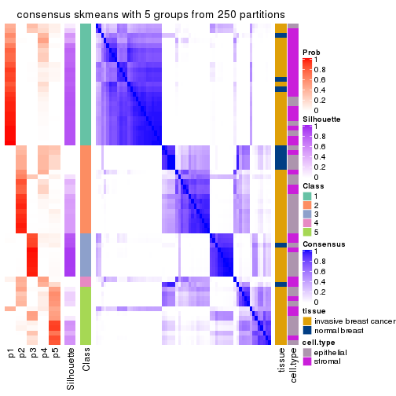
consensus_heatmap(res, k = 6)
Heatmaps for the membership of samples in all partitions to see how consistent they are:
membership_heatmap(res, k = 2)
membership_heatmap(res, k = 3)
membership_heatmap(res, k = 4)
membership_heatmap(res, k = 5)
membership_heatmap(res, k = 6)
As soon as we have had the classes for columns, we can look for signatures which are significantly different between classes which can be candidate marks for certain classes. Following are the heatmaps for signatures.
Signature heatmaps where rows are scaled:
get_signatures(res, k = 2)
get_signatures(res, k = 3)
get_signatures(res, k = 4)
get_signatures(res, k = 5)
get_signatures(res, k = 6)
Signature heatmaps where rows are not scaled:
get_signatures(res, k = 2, scale_rows = FALSE)
get_signatures(res, k = 3, scale_rows = FALSE)
get_signatures(res, k = 4, scale_rows = FALSE)
get_signatures(res, k = 5, scale_rows = FALSE)
get_signatures(res, k = 6, scale_rows = FALSE)
Compare the overlap of signatures from different k:
compare_signatures(res)
get_signature() returns a data frame invisibly. TO get the list of signatures, the function
call should be assigned to a variable explicitly. In following code, if plot argument is set
to FALSE, no heatmap is plotted while only the differential analysis is performed.
# code only for demonstration
tb = get_signature(res, k = ..., plot = FALSE)
An example of the output of tb is:
#> which_row fdr mean_1 mean_2 scaled_mean_1 scaled_mean_2 km
#> 1 38 0.042760348 8.373488 9.131774 -0.5533452 0.5164555 1
#> 2 40 0.018707592 7.106213 8.469186 -0.6173731 0.5762149 1
#> 3 55 0.019134737 10.221463 11.207825 -0.6159697 0.5749050 1
#> 4 59 0.006059896 5.921854 7.869574 -0.6899429 0.6439467 1
#> 5 60 0.018055526 8.928898 10.211722 -0.6204761 0.5791110 1
#> 6 98 0.009384629 15.714769 14.887706 0.6635654 -0.6193277 2
...
The columns in tb are:
which_row: row indices corresponding to the input matrix.fdr: FDR for the differential test. mean_x: The mean value in group x.scaled_mean_x: The mean value in group x after rows are scaled.km: Row groups if k-means clustering is applied to rows.UMAP plot which shows how samples are separated.
dimension_reduction(res, k = 2, method = "UMAP")
dimension_reduction(res, k = 3, method = "UMAP")
dimension_reduction(res, k = 4, method = "UMAP")
dimension_reduction(res, k = 5, method = "UMAP")
dimension_reduction(res, k = 6, method = "UMAP")
Following heatmap shows how subgroups are split when increasing k:
collect_classes(res)
Test correlation between subgroups and known annotations. If the known annotation is numeric, one-way ANOVA test is applied, and if the known annotation is discrete, chi-squared contingency table test is applied.
test_to_known_factors(res)
#> n tissue(p) cell.type(p) k
#> SD:skmeans 66 4.71e-01 2.64e-05 2
#> SD:skmeans 64 2.07e-01 2.28e-04 3
#> SD:skmeans 48 6.03e-01 1.40e-03 4
#> SD:skmeans 35 7.32e-01 1.00e-02 5
#> SD:skmeans 50 1.97e-06 7.84e-03 6
If matrix rows can be associated to genes, consider to use functional_enrichment(res,
...) to perform function enrichment for the signature genes. See this vignette for more detailed explanations.
The object with results only for a single top-value method and a single partition method can be extracted as:
res = res_list["SD", "pam"]
# you can also extract it by
# res = res_list["SD:pam"]
A summary of res and all the functions that can be applied to it:
res
#> A 'ConsensusPartition' object with k = 2, 3, 4, 5, 6.
#> On a matrix with 21163 rows and 66 columns.
#> Top rows (1000, 2000, 3000, 4000, 5000) are extracted by 'SD' method.
#> Subgroups are detected by 'pam' method.
#> Performed in total 1250 partitions by row resampling.
#> Best k for subgroups seems to be 2.
#>
#> Following methods can be applied to this 'ConsensusPartition' object:
#> [1] "cola_report" "collect_classes" "collect_plots"
#> [4] "collect_stats" "colnames" "compare_signatures"
#> [7] "consensus_heatmap" "dimension_reduction" "functional_enrichment"
#> [10] "get_anno_col" "get_anno" "get_classes"
#> [13] "get_consensus" "get_matrix" "get_membership"
#> [16] "get_param" "get_signatures" "get_stats"
#> [19] "is_best_k" "is_stable_k" "membership_heatmap"
#> [22] "ncol" "nrow" "plot_ecdf"
#> [25] "rownames" "select_partition_number" "show"
#> [28] "suggest_best_k" "test_to_known_factors"
collect_plots() function collects all the plots made from res for all k (number of partitions)
into one single page to provide an easy and fast comparison between different k.
collect_plots(res)
The plots are:
k and the heatmap of
predicted classes for each k.k.k.k.All the plots in panels can be made by individual functions and they are plotted later in this section.
select_partition_number() produces several plots showing different
statistics for choosing “optimized” k. There are following statistics:
k;k, the area increased is defined as \(A_k - A_{k-1}\).The detailed explanations of these statistics can be found in the cola vignette.
Generally speaking, lower PAC score, higher mean silhouette score or higher
concordance corresponds to better partition. Rand index and Jaccard index
measure how similar the current partition is compared to partition with k-1.
If they are too similar, we won't accept k is better than k-1.
select_partition_number(res)
The numeric values for all these statistics can be obtained by get_stats().
get_stats(res)
#> k 1-PAC mean_silhouette concordance area_increased Rand Jaccard
#> 2 2 0.490 0.853 0.905 0.5005 0.500 0.500
#> 3 3 0.776 0.853 0.902 0.3195 0.761 0.559
#> 4 4 0.647 0.688 0.834 0.0938 0.935 0.816
#> 5 5 0.710 0.689 0.839 0.0897 0.838 0.519
#> 6 6 0.721 0.643 0.829 0.0287 0.948 0.780
suggest_best_k() suggests the best \(k\) based on these statistics. The rules are as follows:
suggest_best_k(res)
#> [1] 2
Following shows the table of the partitions (You need to click the show/hide
code output link to see it). The membership matrix (columns with name p*)
is inferred by
clue::cl_consensus()
function with the SE method. Basically the value in the membership matrix
represents the probability to belong to a certain group. The finall class
label for an item is determined with the group with highest probability it
belongs to.
In get_classes() function, the entropy is calculated from the membership
matrix and the silhouette score is calculated from the consensus matrix.
cbind(get_classes(res, k = 2), get_membership(res, k = 2))
#> class entropy silhouette p1 p2
#> GSM272727 2 0.6623 0.857 0.172 0.828
#> GSM272729 2 0.6712 0.855 0.176 0.824
#> GSM272731 2 0.0000 0.874 0.000 1.000
#> GSM272733 2 0.0000 0.874 0.000 1.000
#> GSM272735 2 0.0000 0.874 0.000 1.000
#> GSM272728 2 0.0000 0.874 0.000 1.000
#> GSM272730 1 0.0000 0.922 1.000 0.000
#> GSM272732 2 0.7528 0.802 0.216 0.784
#> GSM272734 2 0.7056 0.764 0.192 0.808
#> GSM272736 2 0.0000 0.874 0.000 1.000
#> GSM272671 2 0.6712 0.855 0.176 0.824
#> GSM272673 2 0.0000 0.874 0.000 1.000
#> GSM272675 2 0.0000 0.874 0.000 1.000
#> GSM272677 2 0.0000 0.874 0.000 1.000
#> GSM272679 2 0.0000 0.874 0.000 1.000
#> GSM272681 2 0.0000 0.874 0.000 1.000
#> GSM272683 2 0.6801 0.855 0.180 0.820
#> GSM272685 2 0.6801 0.855 0.180 0.820
#> GSM272687 1 0.0376 0.920 0.996 0.004
#> GSM272689 2 0.6712 0.855 0.176 0.824
#> GSM272691 2 0.0000 0.874 0.000 1.000
#> GSM272693 1 0.2043 0.918 0.968 0.032
#> GSM272695 2 0.2423 0.873 0.040 0.960
#> GSM272697 2 0.0000 0.874 0.000 1.000
#> GSM272699 2 0.6712 0.855 0.176 0.824
#> GSM272701 2 0.7950 0.816 0.240 0.760
#> GSM272703 2 0.7602 0.831 0.220 0.780
#> GSM272705 2 0.6801 0.855 0.180 0.820
#> GSM272707 1 0.3274 0.906 0.940 0.060
#> GSM272709 2 0.8144 0.805 0.252 0.748
#> GSM272711 2 0.0000 0.874 0.000 1.000
#> GSM272713 1 0.0000 0.922 1.000 0.000
#> GSM272715 2 0.6801 0.855 0.180 0.820
#> GSM272717 2 0.4690 0.869 0.100 0.900
#> GSM272719 2 0.0000 0.874 0.000 1.000
#> GSM272721 1 0.5178 0.875 0.884 0.116
#> GSM272723 2 0.8386 0.789 0.268 0.732
#> GSM272725 1 0.0000 0.922 1.000 0.000
#> GSM272672 2 0.8555 0.776 0.280 0.720
#> GSM272674 1 0.6712 0.829 0.824 0.176
#> GSM272676 2 0.1184 0.867 0.016 0.984
#> GSM272678 2 0.0000 0.874 0.000 1.000
#> GSM272680 2 0.9129 0.432 0.328 0.672
#> GSM272682 1 0.6712 0.829 0.824 0.176
#> GSM272684 1 0.0000 0.922 1.000 0.000
#> GSM272686 1 0.1633 0.906 0.976 0.024
#> GSM272688 1 0.1184 0.921 0.984 0.016
#> GSM272690 1 0.6712 0.829 0.824 0.176
#> GSM272692 1 0.1414 0.921 0.980 0.020
#> GSM272694 1 0.0000 0.922 1.000 0.000
#> GSM272696 1 0.0376 0.920 0.996 0.004
#> GSM272698 1 0.9983 0.247 0.524 0.476
#> GSM272700 1 0.6343 0.843 0.840 0.160
#> GSM272702 1 0.0000 0.922 1.000 0.000
#> GSM272704 1 0.0000 0.922 1.000 0.000
#> GSM272706 1 0.0000 0.922 1.000 0.000
#> GSM272708 1 0.5059 0.878 0.888 0.112
#> GSM272710 1 0.1633 0.920 0.976 0.024
#> GSM272712 1 0.6048 0.853 0.852 0.148
#> GSM272714 1 0.0000 0.922 1.000 0.000
#> GSM272716 1 0.0000 0.922 1.000 0.000
#> GSM272718 2 0.6712 0.855 0.176 0.824
#> GSM272720 1 0.6712 0.829 0.824 0.176
#> GSM272722 2 0.9635 0.599 0.388 0.612
#> GSM272724 1 0.0000 0.922 1.000 0.000
#> GSM272726 1 0.1414 0.921 0.980 0.020
cbind(get_classes(res, k = 3), get_membership(res, k = 3))
#> class entropy silhouette p1 p2 p3
#> GSM272727 2 0.2356 0.859 0.000 0.928 0.072
#> GSM272729 3 0.2945 0.872 0.004 0.088 0.908
#> GSM272731 2 0.0000 0.883 0.000 1.000 0.000
#> GSM272733 2 0.0000 0.883 0.000 1.000 0.000
#> GSM272735 2 0.0000 0.883 0.000 1.000 0.000
#> GSM272728 2 0.0000 0.883 0.000 1.000 0.000
#> GSM272730 1 0.3116 0.873 0.892 0.000 0.108
#> GSM272732 2 0.2356 0.859 0.000 0.928 0.072
#> GSM272734 1 0.7036 0.226 0.536 0.444 0.020
#> GSM272736 2 0.0000 0.883 0.000 1.000 0.000
#> GSM272671 3 0.0237 0.920 0.000 0.004 0.996
#> GSM272673 2 0.3129 0.884 0.008 0.904 0.088
#> GSM272675 2 0.3193 0.881 0.004 0.896 0.100
#> GSM272677 2 0.2945 0.884 0.004 0.908 0.088
#> GSM272679 2 0.3644 0.869 0.004 0.872 0.124
#> GSM272681 2 0.3030 0.883 0.004 0.904 0.092
#> GSM272683 3 0.2400 0.891 0.004 0.064 0.932
#> GSM272685 2 0.5058 0.699 0.000 0.756 0.244
#> GSM272687 3 0.3412 0.851 0.124 0.000 0.876
#> GSM272689 2 0.2448 0.856 0.000 0.924 0.076
#> GSM272691 2 0.1163 0.887 0.000 0.972 0.028
#> GSM272693 1 0.2599 0.907 0.932 0.016 0.052
#> GSM272695 3 0.3359 0.850 0.016 0.084 0.900
#> GSM272697 2 0.3425 0.877 0.004 0.884 0.112
#> GSM272699 3 0.0747 0.914 0.000 0.016 0.984
#> GSM272701 3 0.0237 0.921 0.004 0.000 0.996
#> GSM272703 3 0.0237 0.921 0.004 0.000 0.996
#> GSM272705 2 0.5053 0.773 0.024 0.812 0.164
#> GSM272707 1 0.0892 0.922 0.980 0.000 0.020
#> GSM272709 3 0.0237 0.921 0.004 0.000 0.996
#> GSM272711 2 0.3193 0.881 0.004 0.896 0.100
#> GSM272713 1 0.2165 0.894 0.936 0.000 0.064
#> GSM272715 3 0.1529 0.907 0.040 0.000 0.960
#> GSM272717 3 0.4452 0.736 0.000 0.192 0.808
#> GSM272719 2 0.3573 0.872 0.004 0.876 0.120
#> GSM272721 1 0.0000 0.922 1.000 0.000 0.000
#> GSM272723 3 0.0237 0.921 0.004 0.000 0.996
#> GSM272725 1 0.1753 0.913 0.952 0.000 0.048
#> GSM272672 2 0.7400 0.601 0.072 0.664 0.264
#> GSM272674 1 0.0237 0.921 0.996 0.000 0.004
#> GSM272676 2 0.2414 0.878 0.040 0.940 0.020
#> GSM272678 2 0.2860 0.885 0.004 0.912 0.084
#> GSM272680 1 0.6051 0.607 0.696 0.292 0.012
#> GSM272682 1 0.2096 0.902 0.944 0.052 0.004
#> GSM272684 1 0.0424 0.922 0.992 0.000 0.008
#> GSM272686 3 0.2796 0.871 0.092 0.000 0.908
#> GSM272688 1 0.0237 0.922 0.996 0.000 0.004
#> GSM272690 1 0.0829 0.920 0.984 0.012 0.004
#> GSM272692 1 0.0237 0.922 0.996 0.000 0.004
#> GSM272694 1 0.0237 0.922 0.996 0.000 0.004
#> GSM272696 1 0.2711 0.891 0.912 0.000 0.088
#> GSM272698 1 0.6297 0.483 0.640 0.352 0.008
#> GSM272700 1 0.0237 0.921 0.996 0.000 0.004
#> GSM272702 1 0.1163 0.920 0.972 0.000 0.028
#> GSM272704 1 0.1529 0.917 0.960 0.000 0.040
#> GSM272706 1 0.1753 0.913 0.952 0.000 0.048
#> GSM272708 1 0.1643 0.915 0.956 0.000 0.044
#> GSM272710 1 0.0000 0.922 1.000 0.000 0.000
#> GSM272712 1 0.2564 0.910 0.936 0.028 0.036
#> GSM272714 1 0.0237 0.922 0.996 0.000 0.004
#> GSM272716 1 0.4062 0.813 0.836 0.000 0.164
#> GSM272718 2 0.6215 0.291 0.000 0.572 0.428
#> GSM272720 1 0.0661 0.920 0.988 0.008 0.004
#> GSM272722 3 0.0237 0.921 0.004 0.000 0.996
#> GSM272724 3 0.4654 0.756 0.208 0.000 0.792
#> GSM272726 1 0.0000 0.922 1.000 0.000 0.000
cbind(get_classes(res, k = 4), get_membership(res, k = 4))
#> class entropy silhouette p1 p2 p3 p4
#> GSM272727 2 0.0000 0.698 0.000 1.000 0.000 0.000
#> GSM272729 3 0.0000 0.913 0.000 0.000 1.000 0.000
#> GSM272731 2 0.0000 0.698 0.000 1.000 0.000 0.000
#> GSM272733 2 0.0000 0.698 0.000 1.000 0.000 0.000
#> GSM272735 2 0.0000 0.698 0.000 1.000 0.000 0.000
#> GSM272728 2 0.0000 0.698 0.000 1.000 0.000 0.000
#> GSM272730 1 0.3569 0.724 0.804 0.000 0.196 0.000
#> GSM272732 2 0.0000 0.698 0.000 1.000 0.000 0.000
#> GSM272734 2 0.7236 0.201 0.312 0.520 0.000 0.168
#> GSM272736 2 0.0000 0.698 0.000 1.000 0.000 0.000
#> GSM272671 3 0.0000 0.913 0.000 0.000 1.000 0.000
#> GSM272673 2 0.3942 0.634 0.000 0.764 0.000 0.236
#> GSM272675 4 0.0000 0.573 0.000 0.000 0.000 1.000
#> GSM272677 2 0.4981 0.474 0.000 0.536 0.000 0.464
#> GSM272679 2 0.5905 0.428 0.000 0.564 0.040 0.396
#> GSM272681 2 0.4907 0.508 0.000 0.580 0.000 0.420
#> GSM272683 3 0.0000 0.913 0.000 0.000 1.000 0.000
#> GSM272685 4 0.7681 0.462 0.000 0.292 0.252 0.456
#> GSM272687 3 0.1389 0.883 0.048 0.000 0.952 0.000
#> GSM272689 2 0.0188 0.697 0.000 0.996 0.004 0.000
#> GSM272691 2 0.1118 0.690 0.000 0.964 0.000 0.036
#> GSM272693 1 0.3411 0.796 0.880 0.048 0.064 0.008
#> GSM272695 3 0.3498 0.743 0.000 0.008 0.832 0.160
#> GSM272697 4 0.0336 0.572 0.000 0.008 0.000 0.992
#> GSM272699 3 0.1975 0.887 0.000 0.016 0.936 0.048
#> GSM272701 3 0.1792 0.882 0.000 0.000 0.932 0.068
#> GSM272703 3 0.0592 0.912 0.000 0.000 0.984 0.016
#> GSM272705 2 0.5252 0.472 0.040 0.720 0.236 0.004
#> GSM272707 1 0.1510 0.817 0.956 0.000 0.016 0.028
#> GSM272709 3 0.0336 0.914 0.000 0.000 0.992 0.008
#> GSM272711 2 0.5060 0.518 0.000 0.584 0.004 0.412
#> GSM272713 1 0.2281 0.768 0.904 0.000 0.096 0.000
#> GSM272715 3 0.2760 0.755 0.128 0.000 0.872 0.000
#> GSM272717 4 0.5940 0.558 0.000 0.088 0.240 0.672
#> GSM272719 2 0.5723 0.566 0.000 0.684 0.072 0.244
#> GSM272721 1 0.0000 0.815 1.000 0.000 0.000 0.000
#> GSM272723 3 0.0188 0.913 0.000 0.000 0.996 0.004
#> GSM272725 1 0.2408 0.793 0.896 0.000 0.104 0.000
#> GSM272672 2 0.7417 0.259 0.128 0.536 0.320 0.016
#> GSM272674 1 0.3801 0.724 0.780 0.000 0.000 0.220
#> GSM272676 2 0.5750 0.451 0.028 0.532 0.000 0.440
#> GSM272678 2 0.4994 0.453 0.000 0.520 0.000 0.480
#> GSM272680 1 0.7803 0.146 0.404 0.256 0.000 0.340
#> GSM272682 1 0.4741 0.645 0.668 0.004 0.000 0.328
#> GSM272684 1 0.0592 0.812 0.984 0.000 0.016 0.000
#> GSM272686 3 0.0000 0.913 0.000 0.000 1.000 0.000
#> GSM272688 1 0.0000 0.815 1.000 0.000 0.000 0.000
#> GSM272690 1 0.4564 0.649 0.672 0.000 0.000 0.328
#> GSM272692 1 0.0000 0.815 1.000 0.000 0.000 0.000
#> GSM272694 1 0.0000 0.815 1.000 0.000 0.000 0.000
#> GSM272696 1 0.3907 0.702 0.768 0.000 0.232 0.000
#> GSM272698 1 0.7806 0.153 0.408 0.260 0.000 0.332
#> GSM272700 1 0.4331 0.683 0.712 0.000 0.000 0.288
#> GSM272702 1 0.1211 0.814 0.960 0.000 0.040 0.000
#> GSM272704 1 0.2081 0.802 0.916 0.000 0.084 0.000
#> GSM272706 1 0.2408 0.793 0.896 0.000 0.104 0.000
#> GSM272708 1 0.4401 0.774 0.812 0.000 0.076 0.112
#> GSM272710 1 0.0000 0.815 1.000 0.000 0.000 0.000
#> GSM272712 1 0.4122 0.724 0.760 0.004 0.000 0.236
#> GSM272714 1 0.0000 0.815 1.000 0.000 0.000 0.000
#> GSM272716 1 0.4250 0.627 0.724 0.000 0.276 0.000
#> GSM272718 4 0.6854 0.600 0.000 0.196 0.204 0.600
#> GSM272720 1 0.4564 0.649 0.672 0.000 0.000 0.328
#> GSM272722 3 0.1743 0.892 0.004 0.000 0.940 0.056
#> GSM272724 3 0.3311 0.703 0.172 0.000 0.828 0.000
#> GSM272726 1 0.0000 0.815 1.000 0.000 0.000 0.000
cbind(get_classes(res, k = 5), get_membership(res, k = 5))
#> class entropy silhouette p1 p2 p3 p4 p5
#> GSM272727 2 0.0000 0.8372 0.000 1.000 0.000 0.000 0.000
#> GSM272729 3 0.0963 0.7890 0.000 0.000 0.964 0.000 0.036
#> GSM272731 2 0.0000 0.8372 0.000 1.000 0.000 0.000 0.000
#> GSM272733 2 0.0000 0.8372 0.000 1.000 0.000 0.000 0.000
#> GSM272735 2 0.0000 0.8372 0.000 1.000 0.000 0.000 0.000
#> GSM272728 2 0.0000 0.8372 0.000 1.000 0.000 0.000 0.000
#> GSM272730 1 0.4530 0.7352 0.768 0.000 0.164 0.032 0.036
#> GSM272732 2 0.0162 0.8348 0.000 0.996 0.000 0.004 0.000
#> GSM272734 4 0.5795 0.5315 0.132 0.212 0.000 0.644 0.012
#> GSM272736 2 0.0000 0.8372 0.000 1.000 0.000 0.000 0.000
#> GSM272671 3 0.0963 0.7890 0.000 0.000 0.964 0.000 0.036
#> GSM272673 2 0.6240 0.4560 0.000 0.604 0.020 0.224 0.152
#> GSM272675 5 0.2179 0.6956 0.000 0.000 0.000 0.112 0.888
#> GSM272677 4 0.3098 0.7044 0.000 0.016 0.000 0.836 0.148
#> GSM272679 2 0.5924 0.3798 0.000 0.552 0.040 0.040 0.368
#> GSM272681 4 0.3229 0.7078 0.000 0.032 0.000 0.840 0.128
#> GSM272683 3 0.0963 0.7890 0.000 0.000 0.964 0.000 0.036
#> GSM272685 5 0.5334 0.5768 0.000 0.104 0.244 0.000 0.652
#> GSM272687 3 0.2554 0.7682 0.000 0.000 0.892 0.072 0.036
#> GSM272689 2 0.0290 0.8334 0.000 0.992 0.008 0.000 0.000
#> GSM272691 2 0.1197 0.8091 0.000 0.952 0.000 0.000 0.048
#> GSM272693 1 0.4936 0.7855 0.768 0.024 0.044 0.140 0.024
#> GSM272695 3 0.3128 0.7001 0.000 0.004 0.824 0.004 0.168
#> GSM272697 5 0.3983 0.3572 0.000 0.000 0.000 0.340 0.660
#> GSM272699 3 0.2295 0.7870 0.000 0.008 0.900 0.004 0.088
#> GSM272701 3 0.2536 0.7473 0.000 0.000 0.868 0.004 0.128
#> GSM272703 3 0.1430 0.7935 0.000 0.000 0.944 0.004 0.052
#> GSM272705 2 0.6690 0.3249 0.156 0.564 0.244 0.000 0.036
#> GSM272707 1 0.4401 0.7772 0.776 0.000 0.024 0.160 0.040
#> GSM272709 3 0.1124 0.7975 0.000 0.000 0.960 0.004 0.036
#> GSM272711 4 0.6863 0.3286 0.000 0.236 0.032 0.536 0.196
#> GSM272713 1 0.1569 0.8071 0.944 0.000 0.004 0.008 0.044
#> GSM272715 3 0.5000 0.1434 0.388 0.000 0.576 0.000 0.036
#> GSM272717 5 0.2719 0.7133 0.000 0.068 0.048 0.000 0.884
#> GSM272719 2 0.5648 0.5274 0.000 0.648 0.152 0.004 0.196
#> GSM272721 1 0.2448 0.8109 0.892 0.000 0.000 0.088 0.020
#> GSM272723 3 0.0451 0.7997 0.000 0.000 0.988 0.004 0.008
#> GSM272725 1 0.4258 0.7812 0.768 0.000 0.072 0.160 0.000
#> GSM272672 1 0.8732 0.1337 0.380 0.152 0.296 0.136 0.036
#> GSM272674 4 0.3508 0.5927 0.252 0.000 0.000 0.748 0.000
#> GSM272676 4 0.2914 0.7412 0.000 0.052 0.000 0.872 0.076
#> GSM272678 4 0.3276 0.7120 0.000 0.032 0.000 0.836 0.132
#> GSM272680 4 0.0510 0.7837 0.000 0.000 0.000 0.984 0.016
#> GSM272682 4 0.0162 0.7853 0.004 0.000 0.000 0.996 0.000
#> GSM272684 1 0.1121 0.8022 0.956 0.000 0.000 0.000 0.044
#> GSM272686 3 0.0963 0.7890 0.000 0.000 0.964 0.000 0.036
#> GSM272688 1 0.1121 0.8022 0.956 0.000 0.000 0.000 0.044
#> GSM272690 4 0.0162 0.7853 0.004 0.000 0.000 0.996 0.000
#> GSM272692 1 0.1121 0.8022 0.956 0.000 0.000 0.000 0.044
#> GSM272694 1 0.1121 0.8022 0.956 0.000 0.000 0.000 0.044
#> GSM272696 3 0.7131 -0.0426 0.376 0.000 0.424 0.164 0.036
#> GSM272698 4 0.0324 0.7858 0.004 0.000 0.000 0.992 0.004
#> GSM272700 4 0.1121 0.7683 0.044 0.000 0.000 0.956 0.000
#> GSM272702 1 0.3731 0.7904 0.800 0.000 0.040 0.160 0.000
#> GSM272704 1 0.4248 0.7878 0.784 0.000 0.032 0.160 0.024
#> GSM272706 1 0.4569 0.7808 0.768 0.000 0.036 0.160 0.036
#> GSM272708 1 0.5624 0.3216 0.512 0.000 0.064 0.420 0.004
#> GSM272710 1 0.1121 0.8022 0.956 0.000 0.000 0.000 0.044
#> GSM272712 4 0.3913 0.3576 0.324 0.000 0.000 0.676 0.000
#> GSM272714 1 0.1216 0.8112 0.960 0.000 0.000 0.020 0.020
#> GSM272716 1 0.5087 0.6445 0.692 0.000 0.244 0.028 0.036
#> GSM272718 5 0.3445 0.7094 0.000 0.036 0.140 0.000 0.824
#> GSM272720 4 0.0162 0.7853 0.004 0.000 0.000 0.996 0.000
#> GSM272722 3 0.2017 0.7792 0.000 0.000 0.912 0.008 0.080
#> GSM272724 3 0.4858 0.6402 0.076 0.000 0.760 0.132 0.032
#> GSM272726 1 0.1918 0.8116 0.928 0.000 0.000 0.036 0.036
cbind(get_classes(res, k = 6), get_membership(res, k = 6))
#> class entropy silhouette p1 p2 p3 p4 p5 p6
#> GSM272727 2 0.0000 0.852 0.000 1.000 0.000 0.000 0.000 0.000
#> GSM272729 3 0.1668 0.781 0.008 0.000 0.928 0.000 0.060 0.004
#> GSM272731 2 0.0000 0.852 0.000 1.000 0.000 0.000 0.000 0.000
#> GSM272733 2 0.0000 0.852 0.000 1.000 0.000 0.000 0.000 0.000
#> GSM272735 2 0.0000 0.852 0.000 1.000 0.000 0.000 0.000 0.000
#> GSM272728 2 0.0260 0.849 0.000 0.992 0.000 0.000 0.008 0.000
#> GSM272730 1 0.3395 0.594 0.808 0.000 0.132 0.000 0.060 0.000
#> GSM272732 2 0.0146 0.850 0.000 0.996 0.000 0.004 0.000 0.000
#> GSM272734 4 0.5374 0.559 0.036 0.192 0.000 0.656 0.000 0.116
#> GSM272736 2 0.0000 0.852 0.000 1.000 0.000 0.000 0.000 0.000
#> GSM272671 3 0.1668 0.781 0.008 0.000 0.928 0.000 0.060 0.004
#> GSM272673 2 0.5959 0.526 0.000 0.612 0.040 0.216 0.120 0.012
#> GSM272675 5 0.1663 0.652 0.000 0.000 0.000 0.088 0.912 0.000
#> GSM272677 4 0.0363 0.826 0.000 0.012 0.000 0.988 0.000 0.000
#> GSM272679 2 0.5956 0.516 0.000 0.600 0.064 0.068 0.256 0.012
#> GSM272681 4 0.1863 0.745 0.000 0.000 0.000 0.896 0.104 0.000
#> GSM272683 3 0.1668 0.781 0.008 0.000 0.928 0.000 0.060 0.004
#> GSM272685 5 0.4305 0.528 0.008 0.048 0.216 0.000 0.724 0.004
#> GSM272687 3 0.2396 0.783 0.052 0.000 0.904 0.012 0.020 0.012
#> GSM272689 2 0.0291 0.849 0.000 0.992 0.004 0.000 0.004 0.000
#> GSM272691 2 0.1434 0.821 0.000 0.940 0.000 0.012 0.048 0.000
#> GSM272693 1 0.1223 0.681 0.960 0.008 0.012 0.004 0.016 0.000
#> GSM272695 3 0.3234 0.730 0.000 0.004 0.836 0.028 0.120 0.012
#> GSM272697 5 0.4209 0.308 0.000 0.000 0.004 0.396 0.588 0.012
#> GSM272699 3 0.3073 0.786 0.008 0.008 0.856 0.016 0.104 0.008
#> GSM272701 3 0.2933 0.739 0.000 0.000 0.848 0.020 0.120 0.012
#> GSM272703 3 0.1657 0.796 0.000 0.000 0.936 0.012 0.040 0.012
#> GSM272705 2 0.6178 0.418 0.120 0.596 0.216 0.004 0.060 0.004
#> GSM272707 1 0.0260 0.685 0.992 0.000 0.008 0.000 0.000 0.000
#> GSM272709 3 0.1251 0.799 0.000 0.000 0.956 0.012 0.024 0.008
#> GSM272711 4 0.6312 0.337 0.000 0.240 0.056 0.572 0.120 0.012
#> GSM272713 1 0.3601 0.572 0.684 0.000 0.004 0.000 0.000 0.312
#> GSM272715 3 0.4408 0.491 0.244 0.000 0.692 0.000 0.060 0.004
#> GSM272717 5 0.1826 0.647 0.000 0.052 0.004 0.020 0.924 0.000
#> GSM272719 2 0.5510 0.601 0.000 0.676 0.152 0.040 0.120 0.012
#> GSM272721 1 0.2912 0.631 0.784 0.000 0.000 0.000 0.000 0.216
#> GSM272723 3 0.0551 0.799 0.000 0.000 0.984 0.008 0.004 0.004
#> GSM272725 1 0.0260 0.685 0.992 0.000 0.008 0.000 0.000 0.000
#> GSM272672 3 0.8589 -0.126 0.236 0.216 0.292 0.192 0.060 0.004
#> GSM272674 4 0.4904 0.420 0.316 0.000 0.000 0.600 0.000 0.084
#> GSM272676 4 0.0547 0.826 0.000 0.020 0.000 0.980 0.000 0.000
#> GSM272678 4 0.0458 0.826 0.000 0.016 0.000 0.984 0.000 0.000
#> GSM272680 4 0.0458 0.830 0.016 0.000 0.000 0.984 0.000 0.000
#> GSM272682 4 0.0937 0.832 0.040 0.000 0.000 0.960 0.000 0.000
#> GSM272684 1 0.3866 0.363 0.516 0.000 0.000 0.000 0.000 0.484
#> GSM272686 3 0.1668 0.781 0.008 0.000 0.928 0.000 0.060 0.004
#> GSM272688 1 0.3866 0.363 0.516 0.000 0.000 0.000 0.000 0.484
#> GSM272690 4 0.0937 0.832 0.040 0.000 0.000 0.960 0.000 0.000
#> GSM272692 6 0.0458 0.000 0.016 0.000 0.000 0.000 0.000 0.984
#> GSM272694 1 0.3866 0.363 0.516 0.000 0.000 0.000 0.000 0.484
#> GSM272696 1 0.3488 0.410 0.744 0.000 0.244 0.004 0.008 0.000
#> GSM272698 4 0.0790 0.832 0.032 0.000 0.000 0.968 0.000 0.000
#> GSM272700 4 0.3023 0.684 0.232 0.000 0.000 0.768 0.000 0.000
#> GSM272702 1 0.0260 0.685 0.992 0.000 0.008 0.000 0.000 0.000
#> GSM272704 1 0.0146 0.685 0.996 0.000 0.000 0.000 0.000 0.004
#> GSM272706 1 0.0000 0.684 1.000 0.000 0.000 0.000 0.000 0.000
#> GSM272708 1 0.2572 0.564 0.852 0.000 0.012 0.136 0.000 0.000
#> GSM272710 1 0.3866 0.363 0.516 0.000 0.000 0.000 0.000 0.484
#> GSM272712 1 0.3446 0.333 0.692 0.000 0.000 0.308 0.000 0.000
#> GSM272714 1 0.3390 0.587 0.704 0.000 0.000 0.000 0.000 0.296
#> GSM272716 1 0.4233 0.495 0.720 0.000 0.216 0.000 0.060 0.004
#> GSM272718 5 0.2620 0.629 0.000 0.012 0.108 0.012 0.868 0.000
#> GSM272720 4 0.1007 0.830 0.044 0.000 0.000 0.956 0.000 0.000
#> GSM272722 3 0.2094 0.777 0.000 0.000 0.900 0.020 0.080 0.000
#> GSM272724 3 0.3266 0.595 0.272 0.000 0.728 0.000 0.000 0.000
#> GSM272726 1 0.3428 0.582 0.696 0.000 0.000 0.000 0.000 0.304
Heatmaps for the consensus matrix. It visualizes the probability of two samples to be in a same group.
consensus_heatmap(res, k = 2)
consensus_heatmap(res, k = 3)
consensus_heatmap(res, k = 4)
consensus_heatmap(res, k = 5)
consensus_heatmap(res, k = 6)
Heatmaps for the membership of samples in all partitions to see how consistent they are:
membership_heatmap(res, k = 2)
membership_heatmap(res, k = 3)
membership_heatmap(res, k = 4)
membership_heatmap(res, k = 5)
membership_heatmap(res, k = 6)
As soon as we have had the classes for columns, we can look for signatures which are significantly different between classes which can be candidate marks for certain classes. Following are the heatmaps for signatures.
Signature heatmaps where rows are scaled:
get_signatures(res, k = 2)

get_signatures(res, k = 3)
get_signatures(res, k = 4)
get_signatures(res, k = 5)
get_signatures(res, k = 6)
Signature heatmaps where rows are not scaled:
get_signatures(res, k = 2, scale_rows = FALSE)
get_signatures(res, k = 3, scale_rows = FALSE)
get_signatures(res, k = 4, scale_rows = FALSE)
get_signatures(res, k = 5, scale_rows = FALSE)
get_signatures(res, k = 6, scale_rows = FALSE)
Compare the overlap of signatures from different k:
compare_signatures(res)
get_signature() returns a data frame invisibly. TO get the list of signatures, the function
call should be assigned to a variable explicitly. In following code, if plot argument is set
to FALSE, no heatmap is plotted while only the differential analysis is performed.
# code only for demonstration
tb = get_signature(res, k = ..., plot = FALSE)
An example of the output of tb is:
#> which_row fdr mean_1 mean_2 scaled_mean_1 scaled_mean_2 km
#> 1 38 0.042760348 8.373488 9.131774 -0.5533452 0.5164555 1
#> 2 40 0.018707592 7.106213 8.469186 -0.6173731 0.5762149 1
#> 3 55 0.019134737 10.221463 11.207825 -0.6159697 0.5749050 1
#> 4 59 0.006059896 5.921854 7.869574 -0.6899429 0.6439467 1
#> 5 60 0.018055526 8.928898 10.211722 -0.6204761 0.5791110 1
#> 6 98 0.009384629 15.714769 14.887706 0.6635654 -0.6193277 2
...
The columns in tb are:
which_row: row indices corresponding to the input matrix.fdr: FDR for the differential test. mean_x: The mean value in group x.scaled_mean_x: The mean value in group x after rows are scaled.km: Row groups if k-means clustering is applied to rows.UMAP plot which shows how samples are separated.
dimension_reduction(res, k = 2, method = "UMAP")
dimension_reduction(res, k = 3, method = "UMAP")
dimension_reduction(res, k = 4, method = "UMAP")
dimension_reduction(res, k = 5, method = "UMAP")
dimension_reduction(res, k = 6, method = "UMAP")
Following heatmap shows how subgroups are split when increasing k:
collect_classes(res)
Test correlation between subgroups and known annotations. If the known annotation is numeric, one-way ANOVA test is applied, and if the known annotation is discrete, chi-squared contingency table test is applied.
test_to_known_factors(res)
#> n tissue(p) cell.type(p) k
#> SD:pam 64 0.046024 6.28e-05 2
#> SD:pam 63 0.013926 5.29e-05 3
#> SD:pam 56 0.000430 3.83e-04 4
#> SD:pam 56 0.000144 5.78e-03 5
#> SD:pam 52 0.003728 1.72e-02 6
If matrix rows can be associated to genes, consider to use functional_enrichment(res,
...) to perform function enrichment for the signature genes. See this vignette for more detailed explanations.
The object with results only for a single top-value method and a single partition method can be extracted as:
res = res_list["SD", "mclust"]
# you can also extract it by
# res = res_list["SD:mclust"]
A summary of res and all the functions that can be applied to it:
res
#> A 'ConsensusPartition' object with k = 2, 3, 4, 5, 6.
#> On a matrix with 21163 rows and 66 columns.
#> Top rows (1000, 2000, 3000, 4000, 5000) are extracted by 'SD' method.
#> Subgroups are detected by 'mclust' method.
#> Performed in total 1250 partitions by row resampling.
#> Best k for subgroups seems to be 6.
#>
#> Following methods can be applied to this 'ConsensusPartition' object:
#> [1] "cola_report" "collect_classes" "collect_plots"
#> [4] "collect_stats" "colnames" "compare_signatures"
#> [7] "consensus_heatmap" "dimension_reduction" "functional_enrichment"
#> [10] "get_anno_col" "get_anno" "get_classes"
#> [13] "get_consensus" "get_matrix" "get_membership"
#> [16] "get_param" "get_signatures" "get_stats"
#> [19] "is_best_k" "is_stable_k" "membership_heatmap"
#> [22] "ncol" "nrow" "plot_ecdf"
#> [25] "rownames" "select_partition_number" "show"
#> [28] "suggest_best_k" "test_to_known_factors"
collect_plots() function collects all the plots made from res for all k (number of partitions)
into one single page to provide an easy and fast comparison between different k.
collect_plots(res)
The plots are:
k and the heatmap of
predicted classes for each k.k.k.k.All the plots in panels can be made by individual functions and they are plotted later in this section.
select_partition_number() produces several plots showing different
statistics for choosing “optimized” k. There are following statistics:
k;k, the area increased is defined as \(A_k - A_{k-1}\).The detailed explanations of these statistics can be found in the cola vignette.
Generally speaking, lower PAC score, higher mean silhouette score or higher
concordance corresponds to better partition. Rand index and Jaccard index
measure how similar the current partition is compared to partition with k-1.
If they are too similar, we won't accept k is better than k-1.
select_partition_number(res)
The numeric values for all these statistics can be obtained by get_stats().
get_stats(res)
#> k 1-PAC mean_silhouette concordance area_increased Rand Jaccard
#> 2 2 0.526 0.714 0.867 0.4782 0.522 0.522
#> 3 3 0.641 0.878 0.897 0.3887 0.745 0.538
#> 4 4 0.969 0.887 0.957 0.0982 0.925 0.778
#> 5 5 0.843 0.754 0.838 0.0788 0.883 0.603
#> 6 6 0.963 0.890 0.949 0.0588 0.938 0.713
suggest_best_k() suggests the best \(k\) based on these statistics. The rules are as follows:
suggest_best_k(res)
#> [1] 6
#> attr(,"optional")
#> [1] 4
There is also optional best \(k\) = 4 that is worth to check.
Following shows the table of the partitions (You need to click the show/hide
code output link to see it). The membership matrix (columns with name p*)
is inferred by
clue::cl_consensus()
function with the SE method. Basically the value in the membership matrix
represents the probability to belong to a certain group. The finall class
label for an item is determined with the group with highest probability it
belongs to.
In get_classes() function, the entropy is calculated from the membership
matrix and the silhouette score is calculated from the consensus matrix.
cbind(get_classes(res, k = 2), get_membership(res, k = 2))
#> class entropy silhouette p1 p2
#> GSM272727 2 0.0000 0.8177 0.000 1.000
#> GSM272729 2 0.8861 0.6955 0.304 0.696
#> GSM272731 2 0.0000 0.8177 0.000 1.000
#> GSM272733 2 0.0000 0.8177 0.000 1.000
#> GSM272735 2 0.0000 0.8177 0.000 1.000
#> GSM272728 2 0.0000 0.8177 0.000 1.000
#> GSM272730 1 0.0376 0.8115 0.996 0.004
#> GSM272732 2 0.9795 -0.0928 0.416 0.584
#> GSM272734 1 0.8909 0.6281 0.692 0.308
#> GSM272736 2 0.0000 0.8177 0.000 1.000
#> GSM272671 2 0.8861 0.6955 0.304 0.696
#> GSM272673 2 0.0000 0.8177 0.000 1.000
#> GSM272675 2 0.0000 0.8177 0.000 1.000
#> GSM272677 2 0.0000 0.8177 0.000 1.000
#> GSM272679 2 0.0000 0.8177 0.000 1.000
#> GSM272681 2 0.0000 0.8177 0.000 1.000
#> GSM272683 2 0.8861 0.6955 0.304 0.696
#> GSM272685 2 0.8763 0.6996 0.296 0.704
#> GSM272687 2 0.8861 0.6955 0.304 0.696
#> GSM272689 2 0.0000 0.8177 0.000 1.000
#> GSM272691 2 0.0000 0.8177 0.000 1.000
#> GSM272693 1 0.1414 0.8065 0.980 0.020
#> GSM272695 2 0.8763 0.6996 0.296 0.704
#> GSM272697 2 0.0000 0.8177 0.000 1.000
#> GSM272699 2 0.1843 0.8095 0.028 0.972
#> GSM272701 2 0.8861 0.6955 0.304 0.696
#> GSM272703 2 0.8861 0.6955 0.304 0.696
#> GSM272705 2 0.2948 0.8016 0.052 0.948
#> GSM272707 1 0.0376 0.8115 0.996 0.004
#> GSM272709 2 0.8861 0.6955 0.304 0.696
#> GSM272711 2 0.0000 0.8177 0.000 1.000
#> GSM272713 1 0.0000 0.8114 1.000 0.000
#> GSM272715 2 0.8861 0.6955 0.304 0.696
#> GSM272717 2 0.0000 0.8177 0.000 1.000
#> GSM272719 2 0.0000 0.8177 0.000 1.000
#> GSM272721 1 0.0000 0.8114 1.000 0.000
#> GSM272723 2 0.8861 0.6955 0.304 0.696
#> GSM272725 1 0.9970 -0.2104 0.532 0.468
#> GSM272672 2 0.8763 0.6996 0.296 0.704
#> GSM272674 1 0.8909 0.6281 0.692 0.308
#> GSM272676 2 0.0000 0.8177 0.000 1.000
#> GSM272678 2 0.0000 0.8177 0.000 1.000
#> GSM272680 2 0.0000 0.8177 0.000 1.000
#> GSM272682 1 0.9087 0.6132 0.676 0.324
#> GSM272684 1 0.0000 0.8114 1.000 0.000
#> GSM272686 2 0.8861 0.6955 0.304 0.696
#> GSM272688 1 0.0000 0.8114 1.000 0.000
#> GSM272690 1 0.8909 0.6281 0.692 0.308
#> GSM272692 1 0.0938 0.8094 0.988 0.012
#> GSM272694 1 0.0000 0.8114 1.000 0.000
#> GSM272696 2 0.8861 0.6955 0.304 0.696
#> GSM272698 2 0.0000 0.8177 0.000 1.000
#> GSM272700 1 0.8909 0.6281 0.692 0.308
#> GSM272702 1 0.0376 0.8115 0.996 0.004
#> GSM272704 1 0.0376 0.8115 0.996 0.004
#> GSM272706 1 0.0376 0.8115 0.996 0.004
#> GSM272708 1 0.9881 -0.0951 0.564 0.436
#> GSM272710 1 0.0000 0.8114 1.000 0.000
#> GSM272712 1 0.8443 0.6533 0.728 0.272
#> GSM272714 1 0.0376 0.8115 0.996 0.004
#> GSM272716 1 0.9323 0.2264 0.652 0.348
#> GSM272718 2 0.0000 0.8177 0.000 1.000
#> GSM272720 1 0.8909 0.6281 0.692 0.308
#> GSM272722 2 0.8861 0.6955 0.304 0.696
#> GSM272724 2 0.8861 0.6955 0.304 0.696
#> GSM272726 1 0.0000 0.8114 1.000 0.000
cbind(get_classes(res, k = 3), get_membership(res, k = 3))
#> class entropy silhouette p1 p2 p3
#> GSM272727 2 0.0892 0.846 0.000 0.980 0.020
#> GSM272729 3 0.3551 0.875 0.000 0.132 0.868
#> GSM272731 2 0.0747 0.845 0.000 0.984 0.016
#> GSM272733 2 0.0747 0.845 0.000 0.984 0.016
#> GSM272735 2 0.0747 0.845 0.000 0.984 0.016
#> GSM272728 2 0.0747 0.845 0.000 0.984 0.016
#> GSM272730 1 0.3539 0.922 0.888 0.012 0.100
#> GSM272732 1 0.5092 0.789 0.804 0.176 0.020
#> GSM272734 1 0.2486 0.902 0.932 0.060 0.008
#> GSM272736 2 0.0892 0.846 0.000 0.980 0.020
#> GSM272671 3 0.3551 0.875 0.000 0.132 0.868
#> GSM272673 2 0.5538 0.892 0.060 0.808 0.132
#> GSM272675 2 0.5538 0.892 0.060 0.808 0.132
#> GSM272677 2 0.5538 0.892 0.060 0.808 0.132
#> GSM272679 2 0.5538 0.892 0.060 0.808 0.132
#> GSM272681 2 0.5538 0.892 0.060 0.808 0.132
#> GSM272683 3 0.3551 0.875 0.000 0.132 0.868
#> GSM272685 3 0.6141 0.762 0.032 0.232 0.736
#> GSM272687 3 0.0983 0.911 0.016 0.004 0.980
#> GSM272689 2 0.1315 0.848 0.008 0.972 0.020
#> GSM272691 2 0.5538 0.892 0.060 0.808 0.132
#> GSM272693 1 0.3263 0.924 0.912 0.040 0.048
#> GSM272695 2 0.7069 0.334 0.020 0.508 0.472
#> GSM272697 2 0.5538 0.892 0.060 0.808 0.132
#> GSM272699 2 0.5897 0.885 0.076 0.792 0.132
#> GSM272701 3 0.0983 0.911 0.016 0.004 0.980
#> GSM272703 3 0.0983 0.911 0.016 0.004 0.980
#> GSM272705 2 0.6447 0.743 0.060 0.744 0.196
#> GSM272707 1 0.4475 0.891 0.840 0.016 0.144
#> GSM272709 3 0.0983 0.911 0.016 0.004 0.980
#> GSM272711 2 0.5538 0.892 0.060 0.808 0.132
#> GSM272713 1 0.2448 0.931 0.924 0.000 0.076
#> GSM272715 3 0.3112 0.888 0.004 0.096 0.900
#> GSM272717 2 0.0892 0.846 0.000 0.980 0.020
#> GSM272719 2 0.5538 0.892 0.060 0.808 0.132
#> GSM272721 1 0.2537 0.931 0.920 0.000 0.080
#> GSM272723 3 0.0983 0.911 0.016 0.004 0.980
#> GSM272725 3 0.1643 0.902 0.044 0.000 0.956
#> GSM272672 3 0.4195 0.867 0.012 0.136 0.852
#> GSM272674 1 0.1529 0.902 0.960 0.040 0.000
#> GSM272676 2 0.5538 0.892 0.060 0.808 0.132
#> GSM272678 2 0.5538 0.892 0.060 0.808 0.132
#> GSM272680 2 0.5810 0.887 0.072 0.796 0.132
#> GSM272682 1 0.3148 0.878 0.916 0.048 0.036
#> GSM272684 1 0.2625 0.931 0.916 0.000 0.084
#> GSM272686 3 0.3551 0.875 0.000 0.132 0.868
#> GSM272688 1 0.2537 0.931 0.920 0.000 0.080
#> GSM272690 1 0.1529 0.902 0.960 0.040 0.000
#> GSM272692 1 0.3181 0.930 0.912 0.024 0.064
#> GSM272694 1 0.2537 0.931 0.920 0.000 0.080
#> GSM272696 3 0.0983 0.911 0.016 0.004 0.980
#> GSM272698 2 0.5722 0.889 0.068 0.800 0.132
#> GSM272700 1 0.1529 0.902 0.960 0.040 0.000
#> GSM272702 1 0.3267 0.920 0.884 0.000 0.116
#> GSM272704 1 0.2959 0.925 0.900 0.000 0.100
#> GSM272706 1 0.2959 0.925 0.900 0.000 0.100
#> GSM272708 3 0.1163 0.906 0.028 0.000 0.972
#> GSM272710 1 0.2537 0.931 0.920 0.000 0.080
#> GSM272712 1 0.1950 0.907 0.952 0.040 0.008
#> GSM272714 1 0.2959 0.925 0.900 0.000 0.100
#> GSM272716 3 0.5247 0.706 0.224 0.008 0.768
#> GSM272718 2 0.0892 0.846 0.000 0.980 0.020
#> GSM272720 1 0.1529 0.902 0.960 0.040 0.000
#> GSM272722 3 0.0983 0.911 0.016 0.004 0.980
#> GSM272724 3 0.0983 0.911 0.016 0.004 0.980
#> GSM272726 1 0.2537 0.931 0.920 0.000 0.080
cbind(get_classes(res, k = 4), get_membership(res, k = 4))
#> class entropy silhouette p1 p2 p3 p4
#> GSM272727 4 0.0188 0.840 0.000 0.004 0.000 0.996
#> GSM272729 3 0.0336 0.938 0.000 0.000 0.992 0.008
#> GSM272731 4 0.3074 0.777 0.000 0.152 0.000 0.848
#> GSM272733 4 0.4661 0.550 0.000 0.348 0.000 0.652
#> GSM272735 4 0.4661 0.549 0.000 0.348 0.000 0.652
#> GSM272728 4 0.0188 0.840 0.000 0.004 0.000 0.996
#> GSM272730 1 0.0188 0.992 0.996 0.000 0.004 0.000
#> GSM272732 1 0.1109 0.973 0.968 0.000 0.004 0.028
#> GSM272734 1 0.0376 0.992 0.992 0.000 0.004 0.004
#> GSM272736 2 0.4477 0.432 0.000 0.688 0.000 0.312
#> GSM272671 3 0.0336 0.938 0.000 0.000 0.992 0.008
#> GSM272673 2 0.0000 0.932 0.000 1.000 0.000 0.000
#> GSM272675 2 0.0000 0.932 0.000 1.000 0.000 0.000
#> GSM272677 2 0.0000 0.932 0.000 1.000 0.000 0.000
#> GSM272679 2 0.0000 0.932 0.000 1.000 0.000 0.000
#> GSM272681 2 0.0000 0.932 0.000 1.000 0.000 0.000
#> GSM272683 3 0.0336 0.938 0.000 0.000 0.992 0.008
#> GSM272685 3 0.4888 0.278 0.000 0.000 0.588 0.412
#> GSM272687 3 0.0000 0.940 0.000 0.000 1.000 0.000
#> GSM272689 2 0.4999 -0.200 0.000 0.508 0.000 0.492
#> GSM272691 2 0.0000 0.932 0.000 1.000 0.000 0.000
#> GSM272693 1 0.0376 0.992 0.992 0.000 0.004 0.004
#> GSM272695 2 0.0657 0.920 0.000 0.984 0.012 0.004
#> GSM272697 2 0.0000 0.932 0.000 1.000 0.000 0.000
#> GSM272699 2 0.1576 0.877 0.000 0.948 0.048 0.004
#> GSM272701 3 0.0000 0.940 0.000 0.000 1.000 0.000
#> GSM272703 3 0.0000 0.940 0.000 0.000 1.000 0.000
#> GSM272705 3 0.5452 0.179 0.000 0.428 0.556 0.016
#> GSM272707 1 0.0592 0.986 0.984 0.000 0.016 0.000
#> GSM272709 3 0.0000 0.940 0.000 0.000 1.000 0.000
#> GSM272711 2 0.0000 0.932 0.000 1.000 0.000 0.000
#> GSM272713 1 0.0000 0.993 1.000 0.000 0.000 0.000
#> GSM272715 3 0.0336 0.938 0.000 0.000 0.992 0.008
#> GSM272717 4 0.0188 0.840 0.000 0.004 0.000 0.996
#> GSM272719 2 0.0000 0.932 0.000 1.000 0.000 0.000
#> GSM272721 1 0.0000 0.993 1.000 0.000 0.000 0.000
#> GSM272723 3 0.0000 0.940 0.000 0.000 1.000 0.000
#> GSM272725 3 0.0000 0.940 0.000 0.000 1.000 0.000
#> GSM272672 3 0.0469 0.936 0.000 0.000 0.988 0.012
#> GSM272674 1 0.0376 0.992 0.992 0.000 0.004 0.004
#> GSM272676 2 0.0000 0.932 0.000 1.000 0.000 0.000
#> GSM272678 2 0.0000 0.932 0.000 1.000 0.000 0.000
#> GSM272680 2 0.0376 0.926 0.000 0.992 0.004 0.004
#> GSM272682 1 0.1305 0.961 0.960 0.036 0.004 0.000
#> GSM272684 1 0.0000 0.993 1.000 0.000 0.000 0.000
#> GSM272686 3 0.0336 0.938 0.000 0.000 0.992 0.008
#> GSM272688 1 0.0000 0.993 1.000 0.000 0.000 0.000
#> GSM272690 1 0.0376 0.992 0.992 0.000 0.004 0.004
#> GSM272692 1 0.0376 0.992 0.992 0.000 0.004 0.004
#> GSM272694 1 0.0000 0.993 1.000 0.000 0.000 0.000
#> GSM272696 3 0.0000 0.940 0.000 0.000 1.000 0.000
#> GSM272698 2 0.0188 0.929 0.000 0.996 0.004 0.000
#> GSM272700 1 0.0376 0.992 0.992 0.000 0.004 0.004
#> GSM272702 1 0.0469 0.988 0.988 0.000 0.012 0.000
#> GSM272704 1 0.0000 0.993 1.000 0.000 0.000 0.000
#> GSM272706 1 0.0000 0.993 1.000 0.000 0.000 0.000
#> GSM272708 3 0.0000 0.940 0.000 0.000 1.000 0.000
#> GSM272710 1 0.0000 0.993 1.000 0.000 0.000 0.000
#> GSM272712 1 0.0376 0.992 0.992 0.000 0.004 0.004
#> GSM272714 1 0.0000 0.993 1.000 0.000 0.000 0.000
#> GSM272716 3 0.0921 0.915 0.028 0.000 0.972 0.000
#> GSM272718 4 0.0188 0.840 0.000 0.004 0.000 0.996
#> GSM272720 1 0.0376 0.992 0.992 0.000 0.004 0.004
#> GSM272722 3 0.0000 0.940 0.000 0.000 1.000 0.000
#> GSM272724 3 0.0000 0.940 0.000 0.000 1.000 0.000
#> GSM272726 1 0.0000 0.993 1.000 0.000 0.000 0.000
cbind(get_classes(res, k = 5), get_membership(res, k = 5))
#> class entropy silhouette p1 p2 p3 p4 p5
#> GSM272727 5 0.0290 0.966 0.000 0.000 0.000 0.008 0.992
#> GSM272729 3 0.4695 0.647 0.004 0.000 0.524 0.464 0.008
#> GSM272731 5 0.0703 0.970 0.000 0.024 0.000 0.000 0.976
#> GSM272733 5 0.0794 0.970 0.000 0.028 0.000 0.000 0.972
#> GSM272735 5 0.0794 0.970 0.000 0.028 0.000 0.000 0.972
#> GSM272728 5 0.0000 0.966 0.000 0.000 0.000 0.000 1.000
#> GSM272730 1 0.2956 0.675 0.848 0.000 0.004 0.140 0.008
#> GSM272732 4 0.5825 0.543 0.360 0.000 0.000 0.536 0.104
#> GSM272734 4 0.4746 0.628 0.480 0.000 0.000 0.504 0.016
#> GSM272736 5 0.1341 0.952 0.000 0.056 0.000 0.000 0.944
#> GSM272671 3 0.4702 0.640 0.004 0.000 0.512 0.476 0.008
#> GSM272673 2 0.0000 0.952 0.000 1.000 0.000 0.000 0.000
#> GSM272675 2 0.0000 0.952 0.000 1.000 0.000 0.000 0.000
#> GSM272677 2 0.0000 0.952 0.000 1.000 0.000 0.000 0.000
#> GSM272679 2 0.0000 0.952 0.000 1.000 0.000 0.000 0.000
#> GSM272681 2 0.0000 0.952 0.000 1.000 0.000 0.000 0.000
#> GSM272683 3 0.4695 0.647 0.004 0.000 0.524 0.464 0.008
#> GSM272685 4 0.5406 -0.659 0.000 0.000 0.464 0.480 0.056
#> GSM272687 3 0.1043 0.776 0.040 0.000 0.960 0.000 0.000
#> GSM272689 5 0.2068 0.915 0.000 0.092 0.000 0.004 0.904
#> GSM272691 2 0.0000 0.952 0.000 1.000 0.000 0.000 0.000
#> GSM272693 1 0.4913 -0.682 0.496 0.008 0.012 0.484 0.000
#> GSM272695 3 0.4627 0.148 0.000 0.444 0.544 0.012 0.000
#> GSM272697 2 0.0000 0.952 0.000 1.000 0.000 0.000 0.000
#> GSM272699 2 0.1877 0.893 0.000 0.924 0.064 0.012 0.000
#> GSM272701 3 0.1310 0.779 0.024 0.000 0.956 0.020 0.000
#> GSM272703 3 0.1741 0.778 0.040 0.000 0.936 0.024 0.000
#> GSM272705 2 0.6901 0.132 0.004 0.460 0.184 0.340 0.012
#> GSM272707 1 0.1764 0.816 0.928 0.000 0.064 0.008 0.000
#> GSM272709 3 0.1725 0.778 0.044 0.000 0.936 0.020 0.000
#> GSM272711 2 0.0000 0.952 0.000 1.000 0.000 0.000 0.000
#> GSM272713 1 0.0000 0.878 1.000 0.000 0.000 0.000 0.000
#> GSM272715 3 0.4575 0.675 0.004 0.000 0.596 0.392 0.008
#> GSM272717 5 0.0324 0.967 0.000 0.004 0.000 0.004 0.992
#> GSM272719 2 0.0000 0.952 0.000 1.000 0.000 0.000 0.000
#> GSM272721 1 0.0703 0.875 0.976 0.000 0.000 0.024 0.000
#> GSM272723 3 0.1082 0.775 0.008 0.000 0.964 0.028 0.000
#> GSM272725 3 0.1197 0.776 0.048 0.000 0.952 0.000 0.000
#> GSM272672 3 0.4510 0.655 0.000 0.000 0.560 0.432 0.008
#> GSM272674 4 0.4892 0.640 0.484 0.016 0.004 0.496 0.000
#> GSM272676 2 0.0000 0.952 0.000 1.000 0.000 0.000 0.000
#> GSM272678 2 0.0000 0.952 0.000 1.000 0.000 0.000 0.000
#> GSM272680 2 0.0290 0.947 0.000 0.992 0.000 0.008 0.000
#> GSM272682 4 0.6596 0.435 0.308 0.236 0.000 0.456 0.000
#> GSM272684 1 0.0162 0.880 0.996 0.000 0.000 0.004 0.000
#> GSM272686 3 0.4692 0.648 0.004 0.000 0.528 0.460 0.008
#> GSM272688 1 0.0703 0.875 0.976 0.000 0.000 0.024 0.000
#> GSM272690 4 0.4803 0.639 0.484 0.012 0.000 0.500 0.004
#> GSM272692 1 0.0703 0.854 0.976 0.000 0.000 0.024 0.000
#> GSM272694 1 0.0162 0.880 0.996 0.000 0.000 0.004 0.000
#> GSM272696 3 0.1043 0.776 0.040 0.000 0.960 0.000 0.000
#> GSM272698 2 0.1106 0.925 0.012 0.964 0.000 0.024 0.000
#> GSM272700 4 0.4947 0.640 0.484 0.012 0.004 0.496 0.004
#> GSM272702 1 0.2074 0.756 0.896 0.000 0.104 0.000 0.000
#> GSM272704 1 0.0404 0.874 0.988 0.000 0.012 0.000 0.000
#> GSM272706 1 0.0000 0.878 1.000 0.000 0.000 0.000 0.000
#> GSM272708 3 0.1197 0.772 0.048 0.000 0.952 0.000 0.000
#> GSM272710 1 0.0703 0.875 0.976 0.000 0.000 0.024 0.000
#> GSM272712 4 0.5010 0.631 0.488 0.012 0.012 0.488 0.000
#> GSM272714 1 0.0000 0.878 1.000 0.000 0.000 0.000 0.000
#> GSM272716 3 0.6018 0.630 0.172 0.000 0.612 0.208 0.008
#> GSM272718 5 0.0290 0.966 0.000 0.000 0.000 0.008 0.992
#> GSM272720 4 0.4892 0.640 0.484 0.016 0.004 0.496 0.000
#> GSM272722 3 0.2770 0.774 0.044 0.000 0.880 0.076 0.000
#> GSM272724 3 0.1043 0.776 0.040 0.000 0.960 0.000 0.000
#> GSM272726 1 0.0703 0.875 0.976 0.000 0.000 0.024 0.000
cbind(get_classes(res, k = 6), get_membership(res, k = 6))
#> class entropy silhouette p1 p2 p3 p4 p5 p6
#> GSM272727 2 0.0000 0.9934 0.000 1.000 0.000 0.000 0.000 0.000
#> GSM272729 5 0.0937 0.9745 0.000 0.000 0.040 0.000 0.960 0.000
#> GSM272731 2 0.0000 0.9934 0.000 1.000 0.000 0.000 0.000 0.000
#> GSM272733 2 0.0000 0.9934 0.000 1.000 0.000 0.000 0.000 0.000
#> GSM272735 2 0.0000 0.9934 0.000 1.000 0.000 0.000 0.000 0.000
#> GSM272728 2 0.0000 0.9934 0.000 1.000 0.000 0.000 0.000 0.000
#> GSM272730 1 0.2053 0.8306 0.888 0.000 0.000 0.004 0.108 0.000
#> GSM272732 4 0.1682 0.8666 0.000 0.020 0.000 0.928 0.052 0.000
#> GSM272734 4 0.0291 0.9054 0.004 0.000 0.000 0.992 0.004 0.000
#> GSM272736 2 0.0000 0.9934 0.000 1.000 0.000 0.000 0.000 0.000
#> GSM272671 5 0.0937 0.9745 0.000 0.000 0.040 0.000 0.960 0.000
#> GSM272673 6 0.0000 0.9499 0.000 0.000 0.000 0.000 0.000 1.000
#> GSM272675 6 0.0146 0.9512 0.000 0.004 0.000 0.000 0.000 0.996
#> GSM272677 6 0.0146 0.9512 0.000 0.004 0.000 0.000 0.000 0.996
#> GSM272679 6 0.0146 0.9512 0.000 0.004 0.000 0.000 0.000 0.996
#> GSM272681 6 0.0146 0.9490 0.000 0.000 0.000 0.004 0.000 0.996
#> GSM272683 5 0.0937 0.9745 0.000 0.000 0.040 0.000 0.960 0.000
#> GSM272685 5 0.0777 0.9582 0.000 0.000 0.024 0.000 0.972 0.004
#> GSM272687 3 0.0146 0.9488 0.000 0.000 0.996 0.000 0.004 0.000
#> GSM272689 2 0.0458 0.9813 0.000 0.984 0.000 0.000 0.000 0.016
#> GSM272691 6 0.0146 0.9512 0.000 0.004 0.000 0.000 0.000 0.996
#> GSM272693 4 0.2002 0.8658 0.056 0.000 0.008 0.916 0.020 0.000
#> GSM272695 3 0.3758 0.5733 0.000 0.000 0.700 0.000 0.016 0.284
#> GSM272697 6 0.0146 0.9512 0.000 0.004 0.000 0.000 0.000 0.996
#> GSM272699 6 0.1232 0.9196 0.000 0.000 0.004 0.024 0.016 0.956
#> GSM272701 3 0.0146 0.9488 0.000 0.000 0.996 0.000 0.004 0.000
#> GSM272703 3 0.0146 0.9488 0.000 0.000 0.996 0.000 0.004 0.000
#> GSM272705 6 0.6353 -0.0496 0.000 0.004 0.008 0.332 0.248 0.408
#> GSM272707 1 0.4067 0.2391 0.548 0.000 0.444 0.008 0.000 0.000
#> GSM272709 3 0.0146 0.9488 0.000 0.000 0.996 0.000 0.004 0.000
#> GSM272711 6 0.0146 0.9512 0.000 0.004 0.000 0.000 0.000 0.996
#> GSM272713 1 0.0146 0.9221 0.996 0.000 0.000 0.004 0.000 0.000
#> GSM272715 5 0.2442 0.8701 0.000 0.000 0.144 0.004 0.852 0.000
#> GSM272717 2 0.0458 0.9833 0.000 0.984 0.000 0.000 0.000 0.016
#> GSM272719 6 0.0146 0.9512 0.000 0.004 0.000 0.000 0.000 0.996
#> GSM272721 1 0.0000 0.9207 1.000 0.000 0.000 0.000 0.000 0.000
#> GSM272723 3 0.0146 0.9488 0.000 0.000 0.996 0.000 0.004 0.000
#> GSM272725 3 0.1010 0.9119 0.036 0.000 0.960 0.004 0.000 0.000
#> GSM272672 5 0.1010 0.9709 0.000 0.000 0.036 0.004 0.960 0.000
#> GSM272674 4 0.0858 0.9025 0.004 0.000 0.000 0.968 0.028 0.000
#> GSM272676 6 0.0291 0.9503 0.000 0.004 0.000 0.004 0.000 0.992
#> GSM272678 6 0.0291 0.9503 0.000 0.004 0.000 0.004 0.000 0.992
#> GSM272680 6 0.0508 0.9434 0.000 0.000 0.000 0.004 0.012 0.984
#> GSM272682 4 0.4461 0.2697 0.000 0.000 0.000 0.564 0.032 0.404
#> GSM272684 1 0.0146 0.9221 0.996 0.000 0.000 0.004 0.000 0.000
#> GSM272686 5 0.0937 0.9745 0.000 0.000 0.040 0.000 0.960 0.000
#> GSM272688 1 0.0146 0.9221 0.996 0.000 0.000 0.004 0.000 0.000
#> GSM272690 4 0.0291 0.9054 0.004 0.000 0.000 0.992 0.004 0.000
#> GSM272692 1 0.0632 0.9106 0.976 0.000 0.000 0.024 0.000 0.000
#> GSM272694 1 0.0146 0.9221 0.996 0.000 0.000 0.004 0.000 0.000
#> GSM272696 3 0.0000 0.9481 0.000 0.000 1.000 0.000 0.000 0.000
#> GSM272698 6 0.0508 0.9434 0.000 0.000 0.000 0.004 0.012 0.984
#> GSM272700 4 0.0291 0.9054 0.004 0.000 0.000 0.992 0.004 0.000
#> GSM272702 1 0.1010 0.9000 0.960 0.000 0.036 0.004 0.000 0.000
#> GSM272704 1 0.0146 0.9221 0.996 0.000 0.000 0.004 0.000 0.000
#> GSM272706 1 0.0146 0.9221 0.996 0.000 0.000 0.004 0.000 0.000
#> GSM272708 3 0.0000 0.9481 0.000 0.000 1.000 0.000 0.000 0.000
#> GSM272710 1 0.0000 0.9207 1.000 0.000 0.000 0.000 0.000 0.000
#> GSM272712 4 0.0935 0.8918 0.004 0.000 0.032 0.964 0.000 0.000
#> GSM272714 1 0.0146 0.9221 0.996 0.000 0.000 0.004 0.000 0.000
#> GSM272716 1 0.5390 0.4564 0.580 0.000 0.280 0.004 0.136 0.000
#> GSM272718 2 0.0363 0.9869 0.000 0.988 0.000 0.000 0.000 0.012
#> GSM272720 4 0.0858 0.9025 0.004 0.000 0.000 0.968 0.028 0.000
#> GSM272722 3 0.1267 0.9017 0.000 0.000 0.940 0.000 0.060 0.000
#> GSM272724 3 0.0000 0.9481 0.000 0.000 1.000 0.000 0.000 0.000
#> GSM272726 1 0.0000 0.9207 1.000 0.000 0.000 0.000 0.000 0.000
Heatmaps for the consensus matrix. It visualizes the probability of two samples to be in a same group.
consensus_heatmap(res, k = 2)
consensus_heatmap(res, k = 3)
consensus_heatmap(res, k = 4)
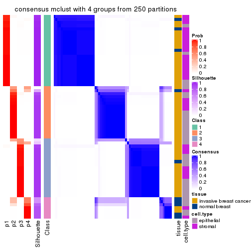
consensus_heatmap(res, k = 5)
consensus_heatmap(res, k = 6)
Heatmaps for the membership of samples in all partitions to see how consistent they are:
membership_heatmap(res, k = 2)
membership_heatmap(res, k = 3)
membership_heatmap(res, k = 4)
membership_heatmap(res, k = 5)
membership_heatmap(res, k = 6)
As soon as we have had the classes for columns, we can look for signatures which are significantly different between classes which can be candidate marks for certain classes. Following are the heatmaps for signatures.
Signature heatmaps where rows are scaled:
get_signatures(res, k = 2)
get_signatures(res, k = 3)
get_signatures(res, k = 4)
get_signatures(res, k = 5)
get_signatures(res, k = 6)
Signature heatmaps where rows are not scaled:
get_signatures(res, k = 2, scale_rows = FALSE)
get_signatures(res, k = 3, scale_rows = FALSE)

get_signatures(res, k = 4, scale_rows = FALSE)
get_signatures(res, k = 5, scale_rows = FALSE)
get_signatures(res, k = 6, scale_rows = FALSE)
Compare the overlap of signatures from different k:
compare_signatures(res)
get_signature() returns a data frame invisibly. TO get the list of signatures, the function
call should be assigned to a variable explicitly. In following code, if plot argument is set
to FALSE, no heatmap is plotted while only the differential analysis is performed.
# code only for demonstration
tb = get_signature(res, k = ..., plot = FALSE)
An example of the output of tb is:
#> which_row fdr mean_1 mean_2 scaled_mean_1 scaled_mean_2 km
#> 1 38 0.042760348 8.373488 9.131774 -0.5533452 0.5164555 1
#> 2 40 0.018707592 7.106213 8.469186 -0.6173731 0.5762149 1
#> 3 55 0.019134737 10.221463 11.207825 -0.6159697 0.5749050 1
#> 4 59 0.006059896 5.921854 7.869574 -0.6899429 0.6439467 1
#> 5 60 0.018055526 8.928898 10.211722 -0.6204761 0.5791110 1
#> 6 98 0.009384629 15.714769 14.887706 0.6635654 -0.6193277 2
...
The columns in tb are:
which_row: row indices corresponding to the input matrix.fdr: FDR for the differential test. mean_x: The mean value in group x.scaled_mean_x: The mean value in group x after rows are scaled.km: Row groups if k-means clustering is applied to rows.UMAP plot which shows how samples are separated.
dimension_reduction(res, k = 2, method = "UMAP")
dimension_reduction(res, k = 3, method = "UMAP")
dimension_reduction(res, k = 4, method = "UMAP")
dimension_reduction(res, k = 5, method = "UMAP")
dimension_reduction(res, k = 6, method = "UMAP")
Following heatmap shows how subgroups are split when increasing k:
collect_classes(res)
Test correlation between subgroups and known annotations. If the known annotation is numeric, one-way ANOVA test is applied, and if the known annotation is discrete, chi-squared contingency table test is applied.
test_to_known_factors(res)
#> n tissue(p) cell.type(p) k
#> SD:mclust 62 6.01e-01 0.000272 2
#> SD:mclust 65 2.08e-01 0.000603 3
#> SD:mclust 62 6.91e-05 0.001981 4
#> SD:mclust 61 1.71e-04 0.003666 5
#> SD:mclust 62 3.43e-04 0.005775 6
If matrix rows can be associated to genes, consider to use functional_enrichment(res,
...) to perform function enrichment for the signature genes. See this vignette for more detailed explanations.
The object with results only for a single top-value method and a single partition method can be extracted as:
res = res_list["SD", "NMF"]
# you can also extract it by
# res = res_list["SD:NMF"]
A summary of res and all the functions that can be applied to it:
res
#> A 'ConsensusPartition' object with k = 2, 3, 4, 5, 6.
#> On a matrix with 21163 rows and 66 columns.
#> Top rows (1000, 2000, 3000, 4000, 5000) are extracted by 'SD' method.
#> Subgroups are detected by 'NMF' method.
#> Performed in total 1250 partitions by row resampling.
#> Best k for subgroups seems to be 2.
#>
#> Following methods can be applied to this 'ConsensusPartition' object:
#> [1] "cola_report" "collect_classes" "collect_plots"
#> [4] "collect_stats" "colnames" "compare_signatures"
#> [7] "consensus_heatmap" "dimension_reduction" "functional_enrichment"
#> [10] "get_anno_col" "get_anno" "get_classes"
#> [13] "get_consensus" "get_matrix" "get_membership"
#> [16] "get_param" "get_signatures" "get_stats"
#> [19] "is_best_k" "is_stable_k" "membership_heatmap"
#> [22] "ncol" "nrow" "plot_ecdf"
#> [25] "rownames" "select_partition_number" "show"
#> [28] "suggest_best_k" "test_to_known_factors"
collect_plots() function collects all the plots made from res for all k (number of partitions)
into one single page to provide an easy and fast comparison between different k.
collect_plots(res)
The plots are:
k and the heatmap of
predicted classes for each k.k.k.k.All the plots in panels can be made by individual functions and they are plotted later in this section.
select_partition_number() produces several plots showing different
statistics for choosing “optimized” k. There are following statistics:
k;k, the area increased is defined as \(A_k - A_{k-1}\).The detailed explanations of these statistics can be found in the cola vignette.
Generally speaking, lower PAC score, higher mean silhouette score or higher
concordance corresponds to better partition. Rand index and Jaccard index
measure how similar the current partition is compared to partition with k-1.
If they are too similar, we won't accept k is better than k-1.
select_partition_number(res)

The numeric values for all these statistics can be obtained by get_stats().
get_stats(res)
#> k 1-PAC mean_silhouette concordance area_increased Rand Jaccard
#> 2 2 1.000 0.966 0.985 0.5010 0.497 0.497
#> 3 3 0.801 0.867 0.933 0.3448 0.719 0.490
#> 4 4 0.555 0.671 0.805 0.1165 0.831 0.543
#> 5 5 0.589 0.526 0.728 0.0652 0.898 0.625
#> 6 6 0.656 0.546 0.754 0.0408 0.938 0.702
suggest_best_k() suggests the best \(k\) based on these statistics. The rules are as follows:
suggest_best_k(res)
#> [1] 2
Following shows the table of the partitions (You need to click the show/hide
code output link to see it). The membership matrix (columns with name p*)
is inferred by
clue::cl_consensus()
function with the SE method. Basically the value in the membership matrix
represents the probability to belong to a certain group. The finall class
label for an item is determined with the group with highest probability it
belongs to.
In get_classes() function, the entropy is calculated from the membership
matrix and the silhouette score is calculated from the consensus matrix.
cbind(get_classes(res, k = 2), get_membership(res, k = 2))
#> class entropy silhouette p1 p2
#> GSM272727 2 0.0000 0.995 0.000 1.000
#> GSM272729 2 0.0000 0.995 0.000 1.000
#> GSM272731 2 0.0000 0.995 0.000 1.000
#> GSM272733 2 0.0000 0.995 0.000 1.000
#> GSM272735 2 0.0000 0.995 0.000 1.000
#> GSM272728 2 0.0000 0.995 0.000 1.000
#> GSM272730 1 0.0000 0.970 1.000 0.000
#> GSM272732 1 0.0938 0.960 0.988 0.012
#> GSM272734 1 0.0000 0.970 1.000 0.000
#> GSM272736 2 0.0000 0.995 0.000 1.000
#> GSM272671 2 0.0000 0.995 0.000 1.000
#> GSM272673 2 0.0000 0.995 0.000 1.000
#> GSM272675 2 0.0000 0.995 0.000 1.000
#> GSM272677 2 0.0000 0.995 0.000 1.000
#> GSM272679 2 0.0000 0.995 0.000 1.000
#> GSM272681 2 0.0000 0.995 0.000 1.000
#> GSM272683 2 0.0000 0.995 0.000 1.000
#> GSM272685 2 0.0000 0.995 0.000 1.000
#> GSM272687 1 0.7950 0.698 0.760 0.240
#> GSM272689 2 0.0000 0.995 0.000 1.000
#> GSM272691 2 0.0000 0.995 0.000 1.000
#> GSM272693 1 0.0000 0.970 1.000 0.000
#> GSM272695 2 0.0000 0.995 0.000 1.000
#> GSM272697 2 0.0000 0.995 0.000 1.000
#> GSM272699 2 0.0000 0.995 0.000 1.000
#> GSM272701 2 0.0000 0.995 0.000 1.000
#> GSM272703 2 0.0000 0.995 0.000 1.000
#> GSM272705 2 0.0000 0.995 0.000 1.000
#> GSM272707 1 0.0000 0.970 1.000 0.000
#> GSM272709 2 0.0000 0.995 0.000 1.000
#> GSM272711 2 0.0000 0.995 0.000 1.000
#> GSM272713 1 0.0000 0.970 1.000 0.000
#> GSM272715 2 0.0000 0.995 0.000 1.000
#> GSM272717 2 0.0000 0.995 0.000 1.000
#> GSM272719 2 0.0000 0.995 0.000 1.000
#> GSM272721 1 0.0000 0.970 1.000 0.000
#> GSM272723 2 0.0000 0.995 0.000 1.000
#> GSM272725 1 0.0000 0.970 1.000 0.000
#> GSM272672 2 0.0000 0.995 0.000 1.000
#> GSM272674 1 0.0000 0.970 1.000 0.000
#> GSM272676 2 0.0000 0.995 0.000 1.000
#> GSM272678 2 0.0000 0.995 0.000 1.000
#> GSM272680 2 0.4022 0.911 0.080 0.920
#> GSM272682 1 0.0000 0.970 1.000 0.000
#> GSM272684 1 0.0000 0.970 1.000 0.000
#> GSM272686 2 0.1843 0.969 0.028 0.972
#> GSM272688 1 0.0000 0.970 1.000 0.000
#> GSM272690 1 0.0000 0.970 1.000 0.000
#> GSM272692 1 0.0000 0.970 1.000 0.000
#> GSM272694 1 0.0000 0.970 1.000 0.000
#> GSM272696 1 0.8763 0.601 0.704 0.296
#> GSM272698 1 0.8955 0.570 0.688 0.312
#> GSM272700 1 0.0000 0.970 1.000 0.000
#> GSM272702 1 0.0000 0.970 1.000 0.000
#> GSM272704 1 0.0000 0.970 1.000 0.000
#> GSM272706 1 0.0000 0.970 1.000 0.000
#> GSM272708 1 0.0000 0.970 1.000 0.000
#> GSM272710 1 0.0000 0.970 1.000 0.000
#> GSM272712 1 0.0000 0.970 1.000 0.000
#> GSM272714 1 0.0000 0.970 1.000 0.000
#> GSM272716 1 0.0000 0.970 1.000 0.000
#> GSM272718 2 0.0000 0.995 0.000 1.000
#> GSM272720 1 0.0000 0.970 1.000 0.000
#> GSM272722 2 0.2603 0.953 0.044 0.956
#> GSM272724 1 0.0000 0.970 1.000 0.000
#> GSM272726 1 0.0000 0.970 1.000 0.000
cbind(get_classes(res, k = 3), get_membership(res, k = 3))
#> class entropy silhouette p1 p2 p3
#> GSM272727 3 0.5733 0.507 0.000 0.324 0.676
#> GSM272729 3 0.0000 0.915 0.000 0.000 1.000
#> GSM272731 2 0.0747 0.927 0.000 0.984 0.016
#> GSM272733 2 0.1289 0.924 0.000 0.968 0.032
#> GSM272735 2 0.0592 0.928 0.000 0.988 0.012
#> GSM272728 2 0.2356 0.904 0.000 0.928 0.072
#> GSM272730 1 0.5397 0.672 0.720 0.000 0.280
#> GSM272732 1 0.4172 0.823 0.840 0.156 0.004
#> GSM272734 1 0.2066 0.914 0.940 0.060 0.000
#> GSM272736 2 0.0424 0.925 0.008 0.992 0.000
#> GSM272671 3 0.0424 0.914 0.000 0.008 0.992
#> GSM272673 2 0.0000 0.927 0.000 1.000 0.000
#> GSM272675 2 0.1643 0.918 0.000 0.956 0.044
#> GSM272677 2 0.0000 0.927 0.000 1.000 0.000
#> GSM272679 2 0.1860 0.915 0.000 0.948 0.052
#> GSM272681 2 0.0424 0.925 0.008 0.992 0.000
#> GSM272683 3 0.0237 0.916 0.000 0.004 0.996
#> GSM272685 3 0.2261 0.871 0.000 0.068 0.932
#> GSM272687 3 0.0237 0.914 0.004 0.000 0.996
#> GSM272689 2 0.2066 0.912 0.000 0.940 0.060
#> GSM272691 2 0.0000 0.927 0.000 1.000 0.000
#> GSM272693 1 0.0592 0.931 0.988 0.012 0.000
#> GSM272695 3 0.4750 0.712 0.000 0.216 0.784
#> GSM272697 2 0.0237 0.928 0.000 0.996 0.004
#> GSM272699 3 0.6244 0.191 0.000 0.440 0.560
#> GSM272701 3 0.0237 0.916 0.000 0.004 0.996
#> GSM272703 3 0.0237 0.916 0.000 0.004 0.996
#> GSM272705 2 0.6192 0.272 0.000 0.580 0.420
#> GSM272707 1 0.0424 0.934 0.992 0.000 0.008
#> GSM272709 3 0.0000 0.915 0.000 0.000 1.000
#> GSM272711 2 0.1031 0.925 0.000 0.976 0.024
#> GSM272713 1 0.1860 0.920 0.948 0.000 0.052
#> GSM272715 3 0.0237 0.916 0.000 0.004 0.996
#> GSM272717 2 0.3192 0.867 0.000 0.888 0.112
#> GSM272719 2 0.2165 0.908 0.000 0.936 0.064
#> GSM272721 1 0.0424 0.934 0.992 0.000 0.008
#> GSM272723 3 0.0424 0.914 0.000 0.008 0.992
#> GSM272725 3 0.3340 0.819 0.120 0.000 0.880
#> GSM272672 3 0.0892 0.908 0.000 0.020 0.980
#> GSM272674 1 0.1529 0.923 0.960 0.040 0.000
#> GSM272676 2 0.0000 0.927 0.000 1.000 0.000
#> GSM272678 2 0.0424 0.925 0.008 0.992 0.000
#> GSM272680 2 0.0424 0.925 0.008 0.992 0.000
#> GSM272682 2 0.5650 0.518 0.312 0.688 0.000
#> GSM272684 1 0.0424 0.934 0.992 0.000 0.008
#> GSM272686 3 0.0000 0.915 0.000 0.000 1.000
#> GSM272688 1 0.0424 0.934 0.992 0.000 0.008
#> GSM272690 1 0.2537 0.901 0.920 0.080 0.000
#> GSM272692 1 0.0000 0.933 1.000 0.000 0.000
#> GSM272694 1 0.0424 0.934 0.992 0.000 0.008
#> GSM272696 3 0.1643 0.892 0.044 0.000 0.956
#> GSM272698 2 0.1643 0.900 0.044 0.956 0.000
#> GSM272700 1 0.1753 0.920 0.952 0.048 0.000
#> GSM272702 1 0.3038 0.888 0.896 0.000 0.104
#> GSM272704 1 0.3116 0.885 0.892 0.000 0.108
#> GSM272706 1 0.3551 0.864 0.868 0.000 0.132
#> GSM272708 1 0.4702 0.773 0.788 0.000 0.212
#> GSM272710 1 0.0424 0.934 0.992 0.000 0.008
#> GSM272712 1 0.1031 0.928 0.976 0.024 0.000
#> GSM272714 1 0.1964 0.918 0.944 0.000 0.056
#> GSM272716 3 0.3752 0.789 0.144 0.000 0.856
#> GSM272718 2 0.4178 0.798 0.000 0.828 0.172
#> GSM272720 1 0.2066 0.914 0.940 0.060 0.000
#> GSM272722 3 0.0000 0.915 0.000 0.000 1.000
#> GSM272724 3 0.1753 0.886 0.048 0.000 0.952
#> GSM272726 1 0.0424 0.934 0.992 0.000 0.008
cbind(get_classes(res, k = 4), get_membership(res, k = 4))
#> class entropy silhouette p1 p2 p3 p4
#> GSM272727 4 0.240 0.6599 0.000 0.004 0.092 0.904
#> GSM272729 3 0.448 0.4961 0.000 0.000 0.688 0.312
#> GSM272731 4 0.401 0.6858 0.000 0.244 0.000 0.756
#> GSM272733 4 0.404 0.6829 0.000 0.248 0.000 0.752
#> GSM272735 4 0.425 0.6628 0.000 0.276 0.000 0.724
#> GSM272728 4 0.396 0.7245 0.000 0.152 0.028 0.820
#> GSM272730 1 0.704 0.4582 0.564 0.000 0.268 0.168
#> GSM272732 4 0.509 0.4016 0.292 0.016 0.004 0.688
#> GSM272734 1 0.410 0.7669 0.816 0.036 0.000 0.148
#> GSM272736 4 0.491 0.6203 0.016 0.292 0.000 0.692
#> GSM272671 4 0.493 0.1483 0.000 0.000 0.432 0.568
#> GSM272673 2 0.331 0.8191 0.000 0.840 0.156 0.004
#> GSM272675 2 0.248 0.8324 0.000 0.916 0.052 0.032
#> GSM272677 2 0.128 0.8253 0.000 0.964 0.012 0.024
#> GSM272679 2 0.367 0.8031 0.000 0.808 0.188 0.004
#> GSM272681 2 0.156 0.8427 0.000 0.944 0.056 0.000
#> GSM272683 3 0.499 0.0965 0.000 0.000 0.528 0.472
#> GSM272685 4 0.384 0.5571 0.000 0.000 0.224 0.776
#> GSM272687 3 0.222 0.7403 0.024 0.020 0.936 0.020
#> GSM272689 4 0.413 0.6884 0.000 0.260 0.000 0.740
#> GSM272691 2 0.102 0.8154 0.000 0.968 0.000 0.032
#> GSM272693 1 0.151 0.8287 0.960 0.012 0.008 0.020
#> GSM272695 2 0.570 0.4847 0.004 0.592 0.380 0.024
#> GSM272697 2 0.227 0.8412 0.000 0.916 0.076 0.008
#> GSM272699 4 0.714 0.5121 0.000 0.288 0.168 0.544
#> GSM272701 3 0.366 0.6591 0.000 0.144 0.836 0.020
#> GSM272703 3 0.191 0.7365 0.000 0.020 0.940 0.040
#> GSM272705 4 0.471 0.6919 0.016 0.144 0.040 0.800
#> GSM272707 1 0.496 0.7449 0.792 0.052 0.136 0.020
#> GSM272709 3 0.193 0.7386 0.000 0.024 0.940 0.036
#> GSM272711 2 0.322 0.8166 0.000 0.836 0.164 0.000
#> GSM272713 1 0.410 0.7608 0.808 0.000 0.164 0.028
#> GSM272715 4 0.517 -0.0779 0.000 0.004 0.488 0.508
#> GSM272717 4 0.443 0.6726 0.000 0.276 0.004 0.720
#> GSM272719 2 0.367 0.8030 0.000 0.808 0.188 0.004
#> GSM272721 1 0.168 0.8289 0.948 0.000 0.040 0.012
#> GSM272723 3 0.202 0.7305 0.000 0.012 0.932 0.056
#> GSM272725 3 0.377 0.6303 0.184 0.000 0.808 0.008
#> GSM272672 4 0.376 0.5661 0.000 0.000 0.216 0.784
#> GSM272674 1 0.267 0.8102 0.908 0.068 0.004 0.020
#> GSM272676 2 0.144 0.8215 0.004 0.960 0.008 0.028
#> GSM272678 2 0.149 0.8058 0.004 0.952 0.000 0.044
#> GSM272680 2 0.310 0.8324 0.020 0.892 0.076 0.012
#> GSM272682 2 0.568 0.4521 0.316 0.648 0.012 0.024
#> GSM272684 1 0.281 0.8156 0.896 0.000 0.080 0.024
#> GSM272686 3 0.484 0.4319 0.004 0.000 0.648 0.348
#> GSM272688 1 0.189 0.8264 0.936 0.000 0.056 0.008
#> GSM272690 1 0.403 0.7827 0.836 0.044 0.004 0.116
#> GSM272692 1 0.172 0.8213 0.936 0.000 0.000 0.064
#> GSM272694 1 0.173 0.8292 0.948 0.000 0.024 0.028
#> GSM272696 3 0.451 0.6779 0.060 0.100 0.824 0.016
#> GSM272698 2 0.314 0.7588 0.072 0.884 0.000 0.044
#> GSM272700 1 0.308 0.8048 0.888 0.048 0.000 0.064
#> GSM272702 1 0.528 0.4237 0.588 0.000 0.400 0.012
#> GSM272704 1 0.502 0.5052 0.632 0.000 0.360 0.008
#> GSM272706 1 0.480 0.6171 0.696 0.000 0.292 0.012
#> GSM272708 3 0.584 0.3436 0.308 0.028 0.648 0.016
#> GSM272710 1 0.172 0.8304 0.948 0.000 0.032 0.020
#> GSM272712 1 0.542 0.7658 0.784 0.100 0.056 0.060
#> GSM272714 1 0.386 0.7849 0.828 0.000 0.144 0.028
#> GSM272716 3 0.758 0.4051 0.256 0.000 0.484 0.260
#> GSM272718 4 0.365 0.7173 0.000 0.128 0.028 0.844
#> GSM272720 1 0.352 0.7917 0.864 0.084 0.000 0.052
#> GSM272722 3 0.151 0.7423 0.016 0.000 0.956 0.028
#> GSM272724 3 0.158 0.7383 0.048 0.000 0.948 0.004
#> GSM272726 1 0.198 0.8266 0.936 0.000 0.048 0.016
cbind(get_classes(res, k = 5), get_membership(res, k = 5))
#> class entropy silhouette p1 p2 p3 p4 p5
#> GSM272727 5 0.4134 0.6368 0.000 0.000 0.032 0.224 0.744
#> GSM272729 3 0.5729 0.4813 0.036 0.000 0.644 0.060 0.260
#> GSM272731 5 0.5887 0.6296 0.000 0.132 0.004 0.264 0.600
#> GSM272733 5 0.6102 0.6146 0.000 0.152 0.004 0.272 0.572
#> GSM272735 5 0.6256 0.6008 0.000 0.188 0.004 0.248 0.560
#> GSM272728 5 0.5092 0.6504 0.000 0.068 0.008 0.236 0.688
#> GSM272730 1 0.7839 0.1634 0.452 0.000 0.256 0.112 0.180
#> GSM272732 5 0.6473 0.4919 0.116 0.012 0.004 0.376 0.492
#> GSM272734 1 0.5406 0.2900 0.604 0.016 0.004 0.344 0.032
#> GSM272736 5 0.6718 0.5415 0.004 0.208 0.004 0.296 0.488
#> GSM272671 3 0.4546 0.1841 0.000 0.000 0.532 0.008 0.460
#> GSM272673 2 0.3317 0.7729 0.004 0.804 0.188 0.004 0.000
#> GSM272675 2 0.1668 0.7979 0.000 0.940 0.028 0.000 0.032
#> GSM272677 2 0.0451 0.7927 0.000 0.988 0.004 0.000 0.008
#> GSM272679 2 0.3700 0.7433 0.000 0.752 0.240 0.000 0.008
#> GSM272681 2 0.2289 0.8061 0.004 0.904 0.080 0.012 0.000
#> GSM272683 5 0.4553 0.1656 0.008 0.000 0.384 0.004 0.604
#> GSM272685 5 0.2329 0.5946 0.000 0.000 0.124 0.000 0.876
#> GSM272687 3 0.1872 0.7612 0.020 0.052 0.928 0.000 0.000
#> GSM272689 5 0.2629 0.6664 0.000 0.136 0.004 0.000 0.860
#> GSM272691 2 0.0854 0.7922 0.000 0.976 0.004 0.012 0.008
#> GSM272693 1 0.1990 0.5687 0.920 0.008 0.004 0.068 0.000
#> GSM272695 2 0.4402 0.5575 0.000 0.620 0.372 0.004 0.004
#> GSM272697 2 0.3800 0.7677 0.000 0.812 0.080 0.000 0.108
#> GSM272699 5 0.5461 0.4745 0.000 0.284 0.096 0.000 0.620
#> GSM272701 3 0.2929 0.6311 0.000 0.180 0.820 0.000 0.000
#> GSM272703 3 0.1410 0.7645 0.000 0.060 0.940 0.000 0.000
#> GSM272705 5 0.4477 0.6282 0.100 0.088 0.008 0.012 0.792
#> GSM272707 1 0.4400 0.4774 0.800 0.064 0.096 0.040 0.000
#> GSM272709 3 0.1410 0.7647 0.000 0.060 0.940 0.000 0.000
#> GSM272711 2 0.3480 0.7375 0.000 0.752 0.248 0.000 0.000
#> GSM272713 1 0.2300 0.5770 0.904 0.000 0.072 0.024 0.000
#> GSM272715 5 0.4854 0.4043 0.044 0.004 0.252 0.004 0.696
#> GSM272717 5 0.3086 0.6435 0.000 0.180 0.004 0.000 0.816
#> GSM272719 2 0.3452 0.7413 0.000 0.756 0.244 0.000 0.000
#> GSM272721 4 0.4617 0.3037 0.436 0.000 0.012 0.552 0.000
#> GSM272723 3 0.1469 0.7673 0.000 0.016 0.948 0.000 0.036
#> GSM272725 3 0.4335 0.5862 0.072 0.000 0.772 0.152 0.004
#> GSM272672 5 0.2462 0.6007 0.008 0.000 0.112 0.000 0.880
#> GSM272674 1 0.4921 -0.0262 0.604 0.036 0.000 0.360 0.000
#> GSM272676 2 0.4045 0.6892 0.000 0.792 0.004 0.148 0.056
#> GSM272678 2 0.1934 0.7736 0.008 0.932 0.000 0.040 0.020
#> GSM272680 2 0.4616 0.6370 0.000 0.720 0.040 0.232 0.008
#> GSM272682 4 0.5541 0.2736 0.076 0.372 0.000 0.552 0.000
#> GSM272684 1 0.1281 0.5944 0.956 0.000 0.032 0.012 0.000
#> GSM272686 3 0.4283 0.4299 0.000 0.000 0.644 0.008 0.348
#> GSM272688 1 0.2997 0.5187 0.840 0.000 0.012 0.148 0.000
#> GSM272690 4 0.6207 0.3481 0.376 0.052 0.004 0.532 0.036
#> GSM272692 1 0.3612 0.3902 0.732 0.000 0.000 0.268 0.000
#> GSM272694 1 0.1124 0.5922 0.960 0.000 0.004 0.036 0.000
#> GSM272696 3 0.4494 0.5993 0.020 0.048 0.768 0.164 0.000
#> GSM272698 2 0.5493 0.5843 0.032 0.704 0.000 0.164 0.100
#> GSM272700 4 0.4865 0.3225 0.428 0.012 0.000 0.552 0.008
#> GSM272702 4 0.6337 0.3785 0.260 0.000 0.216 0.524 0.000
#> GSM272704 1 0.6671 -0.2161 0.412 0.000 0.236 0.352 0.000
#> GSM272706 4 0.6272 0.3254 0.348 0.000 0.160 0.492 0.000
#> GSM272708 4 0.6267 0.2297 0.128 0.004 0.412 0.456 0.000
#> GSM272710 1 0.1410 0.5856 0.940 0.000 0.000 0.060 0.000
#> GSM272712 4 0.5049 0.4716 0.216 0.032 0.032 0.716 0.004
#> GSM272714 1 0.4605 0.4537 0.732 0.000 0.076 0.192 0.000
#> GSM272716 5 0.6806 0.0600 0.300 0.000 0.260 0.004 0.436
#> GSM272718 5 0.1408 0.6622 0.000 0.044 0.008 0.000 0.948
#> GSM272720 4 0.5350 0.2322 0.460 0.052 0.000 0.488 0.000
#> GSM272722 3 0.1016 0.7680 0.012 0.008 0.972 0.004 0.004
#> GSM272724 3 0.2149 0.7472 0.028 0.000 0.924 0.036 0.012
#> GSM272726 1 0.4166 0.1454 0.648 0.000 0.004 0.348 0.000
cbind(get_classes(res, k = 6), get_membership(res, k = 6))
#> class entropy silhouette p1 p2 p3 p4 p5 p6
#> GSM272727 6 0.4235 0.6677 0.000 0.000 0.032 0.004 0.292 0.672
#> GSM272729 3 0.5715 0.4211 0.016 0.000 0.584 0.000 0.196 0.204
#> GSM272731 6 0.4314 0.7506 0.000 0.064 0.000 0.004 0.220 0.712
#> GSM272733 6 0.3718 0.7655 0.000 0.052 0.000 0.004 0.164 0.780
#> GSM272735 6 0.4821 0.7124 0.000 0.148 0.000 0.000 0.184 0.668
#> GSM272728 6 0.4311 0.6939 0.000 0.024 0.000 0.012 0.296 0.668
#> GSM272730 1 0.7788 0.0797 0.308 0.000 0.304 0.016 0.124 0.248
#> GSM272732 6 0.1914 0.6930 0.016 0.008 0.000 0.000 0.056 0.920
#> GSM272734 6 0.5498 -0.0563 0.372 0.016 0.000 0.052 0.016 0.544
#> GSM272736 6 0.3609 0.7246 0.004 0.092 0.000 0.004 0.088 0.812
#> GSM272671 5 0.4757 -0.1402 0.000 0.000 0.472 0.000 0.480 0.048
#> GSM272673 2 0.2805 0.7001 0.000 0.812 0.184 0.000 0.004 0.000
#> GSM272675 2 0.2170 0.7180 0.000 0.916 0.044 0.016 0.016 0.008
#> GSM272677 2 0.0881 0.7088 0.000 0.972 0.008 0.000 0.008 0.012
#> GSM272679 2 0.3409 0.6235 0.000 0.700 0.300 0.000 0.000 0.000
#> GSM272681 2 0.1508 0.7191 0.004 0.940 0.048 0.000 0.004 0.004
#> GSM272683 5 0.2517 0.7141 0.016 0.000 0.100 0.000 0.876 0.008
#> GSM272685 5 0.0964 0.7495 0.000 0.004 0.016 0.000 0.968 0.012
#> GSM272687 3 0.1666 0.8106 0.020 0.036 0.936 0.000 0.008 0.000
#> GSM272689 5 0.3250 0.7138 0.000 0.168 0.004 0.004 0.808 0.016
#> GSM272691 2 0.1757 0.7024 0.000 0.928 0.012 0.000 0.008 0.052
#> GSM272693 1 0.2267 0.6163 0.912 0.036 0.004 0.008 0.004 0.036
#> GSM272695 2 0.3937 0.4411 0.000 0.572 0.424 0.000 0.004 0.000
#> GSM272697 2 0.2896 0.6360 0.000 0.824 0.016 0.000 0.160 0.000
#> GSM272699 5 0.3284 0.7084 0.000 0.196 0.020 0.000 0.784 0.000
#> GSM272701 3 0.2362 0.7160 0.000 0.136 0.860 0.000 0.004 0.000
#> GSM272703 3 0.1549 0.8093 0.000 0.044 0.936 0.000 0.020 0.000
#> GSM272705 5 0.3352 0.7393 0.056 0.120 0.004 0.000 0.820 0.000
#> GSM272707 1 0.3136 0.6148 0.872 0.036 0.044 0.032 0.004 0.012
#> GSM272709 3 0.1528 0.8083 0.000 0.048 0.936 0.000 0.016 0.000
#> GSM272711 2 0.3607 0.5739 0.000 0.652 0.348 0.000 0.000 0.000
#> GSM272713 1 0.2579 0.6320 0.896 0.000 0.040 0.012 0.012 0.040
#> GSM272715 5 0.2078 0.7529 0.040 0.004 0.044 0.000 0.912 0.000
#> GSM272717 5 0.2859 0.7287 0.000 0.156 0.000 0.000 0.828 0.016
#> GSM272719 2 0.3620 0.5687 0.000 0.648 0.352 0.000 0.000 0.000
#> GSM272721 4 0.4516 0.3483 0.292 0.000 0.024 0.664 0.004 0.016
#> GSM272723 3 0.1720 0.8095 0.000 0.032 0.928 0.000 0.040 0.000
#> GSM272725 3 0.4127 0.6420 0.084 0.000 0.784 0.108 0.020 0.004
#> GSM272672 5 0.1168 0.7568 0.028 0.000 0.016 0.000 0.956 0.000
#> GSM272674 1 0.6975 -0.0164 0.452 0.068 0.004 0.320 0.008 0.148
#> GSM272676 2 0.4901 0.1714 0.000 0.528 0.004 0.428 0.024 0.016
#> GSM272678 2 0.2445 0.6718 0.000 0.896 0.000 0.056 0.028 0.020
#> GSM272680 4 0.4080 -0.0397 0.000 0.456 0.008 0.536 0.000 0.000
#> GSM272682 4 0.2845 0.5319 0.008 0.148 0.000 0.836 0.000 0.008
#> GSM272684 1 0.1870 0.6408 0.932 0.000 0.032 0.012 0.012 0.012
#> GSM272686 3 0.4967 0.1536 0.020 0.000 0.528 0.000 0.420 0.032
#> GSM272688 1 0.3178 0.5924 0.832 0.000 0.028 0.128 0.000 0.012
#> GSM272690 4 0.6012 0.4158 0.164 0.028 0.000 0.572 0.004 0.232
#> GSM272692 1 0.5613 0.3085 0.588 0.004 0.000 0.116 0.016 0.276
#> GSM272694 1 0.1873 0.6394 0.924 0.000 0.020 0.048 0.000 0.008
#> GSM272696 3 0.2493 0.7731 0.000 0.036 0.884 0.076 0.000 0.004
#> GSM272698 2 0.5832 0.3057 0.020 0.584 0.004 0.236 0.156 0.000
#> GSM272700 4 0.5485 0.4313 0.144 0.012 0.000 0.600 0.000 0.244
#> GSM272702 4 0.4932 0.4355 0.176 0.000 0.152 0.668 0.004 0.000
#> GSM272704 1 0.6222 -0.0242 0.372 0.000 0.288 0.336 0.004 0.000
#> GSM272706 4 0.5686 0.3421 0.236 0.000 0.136 0.600 0.028 0.000
#> GSM272708 4 0.4733 0.4364 0.088 0.004 0.240 0.668 0.000 0.000
#> GSM272710 1 0.1950 0.6384 0.924 0.000 0.008 0.044 0.004 0.020
#> GSM272712 4 0.1340 0.5497 0.008 0.000 0.004 0.948 0.000 0.040
#> GSM272714 1 0.5867 0.4963 0.644 0.000 0.116 0.164 0.008 0.068
#> GSM272716 5 0.4643 0.4491 0.304 0.000 0.048 0.000 0.640 0.008
#> GSM272718 5 0.2088 0.7464 0.000 0.068 0.000 0.000 0.904 0.028
#> GSM272720 4 0.7181 0.2962 0.252 0.064 0.004 0.436 0.008 0.236
#> GSM272722 3 0.0767 0.8140 0.008 0.012 0.976 0.000 0.000 0.004
#> GSM272724 3 0.1823 0.8009 0.008 0.004 0.932 0.028 0.028 0.000
#> GSM272726 1 0.5406 0.1041 0.500 0.000 0.032 0.428 0.008 0.032
Heatmaps for the consensus matrix. It visualizes the probability of two samples to be in a same group.
consensus_heatmap(res, k = 2)
consensus_heatmap(res, k = 3)
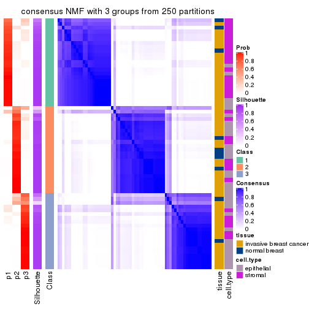
consensus_heatmap(res, k = 4)
consensus_heatmap(res, k = 5)
consensus_heatmap(res, k = 6)
Heatmaps for the membership of samples in all partitions to see how consistent they are:
membership_heatmap(res, k = 2)
membership_heatmap(res, k = 3)
membership_heatmap(res, k = 4)
membership_heatmap(res, k = 5)
membership_heatmap(res, k = 6)
As soon as we have had the classes for columns, we can look for signatures which are significantly different between classes which can be candidate marks for certain classes. Following are the heatmaps for signatures.
Signature heatmaps where rows are scaled:
get_signatures(res, k = 2)

get_signatures(res, k = 3)
get_signatures(res, k = 4)
get_signatures(res, k = 5)
get_signatures(res, k = 6)

Signature heatmaps where rows are not scaled:
get_signatures(res, k = 2, scale_rows = FALSE)
get_signatures(res, k = 3, scale_rows = FALSE)
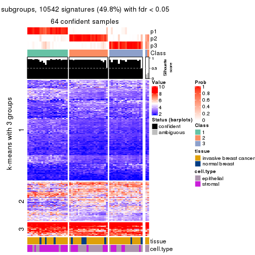
get_signatures(res, k = 4, scale_rows = FALSE)
get_signatures(res, k = 5, scale_rows = FALSE)
get_signatures(res, k = 6, scale_rows = FALSE)
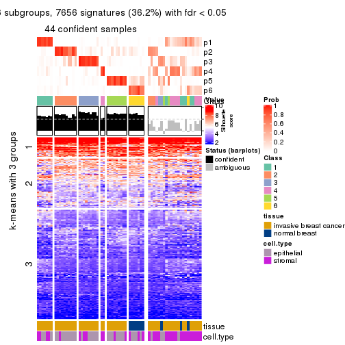
Compare the overlap of signatures from different k:
compare_signatures(res)
get_signature() returns a data frame invisibly. TO get the list of signatures, the function
call should be assigned to a variable explicitly. In following code, if plot argument is set
to FALSE, no heatmap is plotted while only the differential analysis is performed.
# code only for demonstration
tb = get_signature(res, k = ..., plot = FALSE)
An example of the output of tb is:
#> which_row fdr mean_1 mean_2 scaled_mean_1 scaled_mean_2 km
#> 1 38 0.042760348 8.373488 9.131774 -0.5533452 0.5164555 1
#> 2 40 0.018707592 7.106213 8.469186 -0.6173731 0.5762149 1
#> 3 55 0.019134737 10.221463 11.207825 -0.6159697 0.5749050 1
#> 4 59 0.006059896 5.921854 7.869574 -0.6899429 0.6439467 1
#> 5 60 0.018055526 8.928898 10.211722 -0.6204761 0.5791110 1
#> 6 98 0.009384629 15.714769 14.887706 0.6635654 -0.6193277 2
...
The columns in tb are:
which_row: row indices corresponding to the input matrix.fdr: FDR for the differential test. mean_x: The mean value in group x.scaled_mean_x: The mean value in group x after rows are scaled.km: Row groups if k-means clustering is applied to rows.UMAP plot which shows how samples are separated.
dimension_reduction(res, k = 2, method = "UMAP")

dimension_reduction(res, k = 3, method = "UMAP")
dimension_reduction(res, k = 4, method = "UMAP")
dimension_reduction(res, k = 5, method = "UMAP")
dimension_reduction(res, k = 6, method = "UMAP")
Following heatmap shows how subgroups are split when increasing k:
collect_classes(res)
Test correlation between subgroups and known annotations. If the known annotation is numeric, one-way ANOVA test is applied, and if the known annotation is discrete, chi-squared contingency table test is applied.
test_to_known_factors(res)
#> n tissue(p) cell.type(p) k
#> SD:NMF 66 4.71e-01 2.64e-05 2
#> SD:NMF 64 5.14e-01 9.35e-04 3
#> SD:NMF 54 7.17e-04 1.09e-02 4
#> SD:NMF 41 7.12e-04 4.20e-01 5
#> SD:NMF 44 2.32e-08 1.13e-01 6
If matrix rows can be associated to genes, consider to use functional_enrichment(res,
...) to perform function enrichment for the signature genes. See this vignette for more detailed explanations.
The object with results only for a single top-value method and a single partition method can be extracted as:
res = res_list["CV", "hclust"]
# you can also extract it by
# res = res_list["CV:hclust"]
A summary of res and all the functions that can be applied to it:
res
#> A 'ConsensusPartition' object with k = 2, 3, 4, 5, 6.
#> On a matrix with 21163 rows and 66 columns.
#> Top rows (1000, 2000, 3000, 4000, 5000) are extracted by 'CV' method.
#> Subgroups are detected by 'hclust' method.
#> Performed in total 1250 partitions by row resampling.
#> Best k for subgroups seems to be 2.
#>
#> Following methods can be applied to this 'ConsensusPartition' object:
#> [1] "cola_report" "collect_classes" "collect_plots"
#> [4] "collect_stats" "colnames" "compare_signatures"
#> [7] "consensus_heatmap" "dimension_reduction" "functional_enrichment"
#> [10] "get_anno_col" "get_anno" "get_classes"
#> [13] "get_consensus" "get_matrix" "get_membership"
#> [16] "get_param" "get_signatures" "get_stats"
#> [19] "is_best_k" "is_stable_k" "membership_heatmap"
#> [22] "ncol" "nrow" "plot_ecdf"
#> [25] "rownames" "select_partition_number" "show"
#> [28] "suggest_best_k" "test_to_known_factors"
collect_plots() function collects all the plots made from res for all k (number of partitions)
into one single page to provide an easy and fast comparison between different k.
collect_plots(res)
The plots are:
k and the heatmap of
predicted classes for each k.k.k.k.All the plots in panels can be made by individual functions and they are plotted later in this section.
select_partition_number() produces several plots showing different
statistics for choosing “optimized” k. There are following statistics:
k;k, the area increased is defined as \(A_k - A_{k-1}\).The detailed explanations of these statistics can be found in the cola vignette.
Generally speaking, lower PAC score, higher mean silhouette score or higher
concordance corresponds to better partition. Rand index and Jaccard index
measure how similar the current partition is compared to partition with k-1.
If they are too similar, we won't accept k is better than k-1.
select_partition_number(res)
The numeric values for all these statistics can be obtained by get_stats().
get_stats(res)
#> k 1-PAC mean_silhouette concordance area_increased Rand Jaccard
#> 2 2 0.957 0.962 0.977 0.4559 0.539 0.539
#> 3 3 0.880 0.881 0.931 0.0876 0.980 0.964
#> 4 4 0.846 0.877 0.918 0.0759 0.958 0.919
#> 5 5 0.657 0.799 0.882 0.0712 0.993 0.986
#> 6 6 0.619 0.787 0.864 0.0298 1.000 1.000
suggest_best_k() suggests the best \(k\) based on these statistics. The rules are as follows:
suggest_best_k(res)
#> [1] 2
Following shows the table of the partitions (You need to click the show/hide
code output link to see it). The membership matrix (columns with name p*)
is inferred by
clue::cl_consensus()
function with the SE method. Basically the value in the membership matrix
represents the probability to belong to a certain group. The finall class
label for an item is determined with the group with highest probability it
belongs to.
In get_classes() function, the entropy is calculated from the membership
matrix and the silhouette score is calculated from the consensus matrix.
cbind(get_classes(res, k = 2), get_membership(res, k = 2))
#> class entropy silhouette p1 p2
#> GSM272727 2 0.0000 0.984 0.000 1.000
#> GSM272729 2 0.0000 0.984 0.000 1.000
#> GSM272731 2 0.0000 0.984 0.000 1.000
#> GSM272733 2 0.0000 0.984 0.000 1.000
#> GSM272735 2 0.0000 0.984 0.000 1.000
#> GSM272728 2 0.0000 0.984 0.000 1.000
#> GSM272730 1 0.4298 0.917 0.912 0.088
#> GSM272732 1 0.6801 0.816 0.820 0.180
#> GSM272734 1 0.0000 0.960 1.000 0.000
#> GSM272736 2 0.5946 0.829 0.144 0.856
#> GSM272671 2 0.0000 0.984 0.000 1.000
#> GSM272673 2 0.0000 0.984 0.000 1.000
#> GSM272675 2 0.0000 0.984 0.000 1.000
#> GSM272677 2 0.0000 0.984 0.000 1.000
#> GSM272679 2 0.0000 0.984 0.000 1.000
#> GSM272681 2 0.0000 0.984 0.000 1.000
#> GSM272683 2 0.0000 0.984 0.000 1.000
#> GSM272685 2 0.0000 0.984 0.000 1.000
#> GSM272687 2 0.0938 0.980 0.012 0.988
#> GSM272689 2 0.0000 0.984 0.000 1.000
#> GSM272691 2 0.0000 0.984 0.000 1.000
#> GSM272693 1 0.3879 0.927 0.924 0.076
#> GSM272695 2 0.0376 0.983 0.004 0.996
#> GSM272697 2 0.0000 0.984 0.000 1.000
#> GSM272699 2 0.0000 0.984 0.000 1.000
#> GSM272701 2 0.0938 0.980 0.012 0.988
#> GSM272703 2 0.0938 0.980 0.012 0.988
#> GSM272705 2 0.1843 0.969 0.028 0.972
#> GSM272707 1 0.1843 0.959 0.972 0.028
#> GSM272709 2 0.0938 0.980 0.012 0.988
#> GSM272711 2 0.0000 0.984 0.000 1.000
#> GSM272713 1 0.0672 0.962 0.992 0.008
#> GSM272715 2 0.1843 0.969 0.028 0.972
#> GSM272717 2 0.0000 0.984 0.000 1.000
#> GSM272719 2 0.0000 0.984 0.000 1.000
#> GSM272721 1 0.0000 0.960 1.000 0.000
#> GSM272723 2 0.1184 0.977 0.016 0.984
#> GSM272725 2 0.5294 0.874 0.120 0.880
#> GSM272672 2 0.1843 0.969 0.028 0.972
#> GSM272674 1 0.2043 0.958 0.968 0.032
#> GSM272676 2 0.0000 0.984 0.000 1.000
#> GSM272678 2 0.0000 0.984 0.000 1.000
#> GSM272680 2 0.0000 0.984 0.000 1.000
#> GSM272682 1 0.6801 0.820 0.820 0.180
#> GSM272684 1 0.0000 0.960 1.000 0.000
#> GSM272686 2 0.0000 0.984 0.000 1.000
#> GSM272688 1 0.0000 0.960 1.000 0.000
#> GSM272690 1 0.2043 0.958 0.968 0.032
#> GSM272692 1 0.0000 0.960 1.000 0.000
#> GSM272694 1 0.0000 0.960 1.000 0.000
#> GSM272696 2 0.2948 0.948 0.052 0.948
#> GSM272698 2 0.1184 0.976 0.016 0.984
#> GSM272700 1 0.2603 0.951 0.956 0.044
#> GSM272702 1 0.0938 0.962 0.988 0.012
#> GSM272704 1 0.0938 0.962 0.988 0.012
#> GSM272706 1 0.1184 0.961 0.984 0.016
#> GSM272708 2 0.2948 0.948 0.052 0.948
#> GSM272710 1 0.0000 0.960 1.000 0.000
#> GSM272712 1 0.5519 0.881 0.872 0.128
#> GSM272714 1 0.0672 0.962 0.992 0.008
#> GSM272716 2 0.1843 0.969 0.028 0.972
#> GSM272718 2 0.0000 0.984 0.000 1.000
#> GSM272720 1 0.2236 0.956 0.964 0.036
#> GSM272722 2 0.0938 0.980 0.012 0.988
#> GSM272724 2 0.2948 0.948 0.052 0.948
#> GSM272726 1 0.0000 0.960 1.000 0.000
cbind(get_classes(res, k = 3), get_membership(res, k = 3))
#> class entropy silhouette p1 p2 p3
#> GSM272727 2 0.0747 0.968 0.000 0.984 0.016
#> GSM272729 2 0.1031 0.968 0.000 0.976 0.024
#> GSM272731 2 0.0747 0.969 0.000 0.984 0.016
#> GSM272733 2 0.0747 0.969 0.000 0.984 0.016
#> GSM272735 2 0.0747 0.969 0.000 0.984 0.016
#> GSM272728 2 0.0747 0.968 0.000 0.984 0.016
#> GSM272730 1 0.3856 0.742 0.888 0.072 0.040
#> GSM272732 1 0.6699 0.554 0.744 0.164 0.092
#> GSM272734 3 0.6168 0.546 0.412 0.000 0.588
#> GSM272736 2 0.4887 0.821 0.096 0.844 0.060
#> GSM272671 2 0.1031 0.968 0.000 0.976 0.024
#> GSM272673 2 0.0892 0.968 0.000 0.980 0.020
#> GSM272675 2 0.0892 0.968 0.000 0.980 0.020
#> GSM272677 2 0.0747 0.969 0.000 0.984 0.016
#> GSM272679 2 0.0892 0.968 0.000 0.980 0.020
#> GSM272681 2 0.0892 0.968 0.000 0.980 0.020
#> GSM272683 2 0.1031 0.968 0.000 0.976 0.024
#> GSM272685 2 0.0747 0.968 0.000 0.984 0.016
#> GSM272687 2 0.1315 0.965 0.008 0.972 0.020
#> GSM272689 2 0.0747 0.968 0.000 0.984 0.016
#> GSM272691 2 0.0892 0.969 0.000 0.980 0.020
#> GSM272693 1 0.4749 0.749 0.852 0.072 0.076
#> GSM272695 2 0.0829 0.969 0.004 0.984 0.012
#> GSM272697 2 0.0747 0.968 0.000 0.984 0.016
#> GSM272699 2 0.0747 0.968 0.000 0.984 0.016
#> GSM272701 2 0.1315 0.965 0.008 0.972 0.020
#> GSM272703 2 0.1315 0.965 0.008 0.972 0.020
#> GSM272705 2 0.1919 0.959 0.024 0.956 0.020
#> GSM272707 1 0.3129 0.804 0.904 0.008 0.088
#> GSM272709 2 0.1315 0.965 0.008 0.972 0.020
#> GSM272711 2 0.0892 0.968 0.000 0.980 0.020
#> GSM272713 1 0.1031 0.816 0.976 0.000 0.024
#> GSM272715 2 0.1919 0.959 0.024 0.956 0.020
#> GSM272717 2 0.0747 0.968 0.000 0.984 0.016
#> GSM272719 2 0.0892 0.968 0.000 0.980 0.020
#> GSM272721 1 0.0424 0.817 0.992 0.000 0.008
#> GSM272723 2 0.1482 0.964 0.012 0.968 0.020
#> GSM272725 2 0.4489 0.856 0.108 0.856 0.036
#> GSM272672 2 0.1919 0.959 0.024 0.956 0.020
#> GSM272674 1 0.5450 0.705 0.760 0.012 0.228
#> GSM272676 2 0.1399 0.963 0.004 0.968 0.028
#> GSM272678 2 0.0747 0.969 0.000 0.984 0.016
#> GSM272680 2 0.1399 0.963 0.004 0.968 0.028
#> GSM272682 1 0.8126 0.502 0.644 0.148 0.208
#> GSM272684 1 0.1289 0.810 0.968 0.000 0.032
#> GSM272686 2 0.1267 0.968 0.004 0.972 0.024
#> GSM272688 1 0.0237 0.815 0.996 0.000 0.004
#> GSM272690 1 0.5450 0.705 0.760 0.012 0.228
#> GSM272692 3 0.4750 0.675 0.216 0.000 0.784
#> GSM272694 1 0.0892 0.811 0.980 0.000 0.020
#> GSM272696 2 0.2903 0.933 0.048 0.924 0.028
#> GSM272698 2 0.2050 0.955 0.020 0.952 0.028
#> GSM272700 1 0.5578 0.693 0.748 0.012 0.240
#> GSM272702 1 0.0892 0.819 0.980 0.000 0.020
#> GSM272704 1 0.0424 0.818 0.992 0.000 0.008
#> GSM272706 1 0.0892 0.818 0.980 0.000 0.020
#> GSM272708 2 0.2903 0.933 0.048 0.924 0.028
#> GSM272710 1 0.1163 0.813 0.972 0.000 0.028
#> GSM272712 1 0.7372 0.605 0.688 0.092 0.220
#> GSM272714 1 0.1289 0.816 0.968 0.000 0.032
#> GSM272716 2 0.1919 0.959 0.024 0.956 0.020
#> GSM272718 2 0.0747 0.968 0.000 0.984 0.016
#> GSM272720 1 0.5493 0.702 0.756 0.012 0.232
#> GSM272722 2 0.1315 0.965 0.008 0.972 0.020
#> GSM272724 2 0.2903 0.933 0.048 0.924 0.028
#> GSM272726 1 0.1964 0.790 0.944 0.000 0.056
cbind(get_classes(res, k = 4), get_membership(res, k = 4))
#> class entropy silhouette p1 p2 p3 p4
#> GSM272727 2 0.0000 0.963 0.000 1.000 0.000 0.000
#> GSM272729 2 0.0707 0.960 0.000 0.980 0.000 0.020
#> GSM272731 2 0.0817 0.963 0.000 0.976 0.000 0.024
#> GSM272733 2 0.0817 0.963 0.000 0.976 0.000 0.024
#> GSM272735 2 0.0817 0.963 0.000 0.976 0.000 0.024
#> GSM272728 2 0.0000 0.963 0.000 1.000 0.000 0.000
#> GSM272730 1 0.5327 0.686 0.732 0.056 0.004 0.208
#> GSM272732 1 0.7346 0.129 0.476 0.140 0.004 0.380
#> GSM272734 3 0.5664 0.595 0.076 0.000 0.696 0.228
#> GSM272736 2 0.3479 0.821 0.012 0.840 0.000 0.148
#> GSM272671 2 0.0707 0.960 0.000 0.980 0.000 0.020
#> GSM272673 2 0.1302 0.961 0.000 0.956 0.000 0.044
#> GSM272675 2 0.1302 0.961 0.000 0.956 0.000 0.044
#> GSM272677 2 0.1022 0.963 0.000 0.968 0.000 0.032
#> GSM272679 2 0.1302 0.961 0.000 0.956 0.000 0.044
#> GSM272681 2 0.1302 0.961 0.000 0.956 0.000 0.044
#> GSM272683 2 0.0707 0.960 0.000 0.980 0.000 0.020
#> GSM272685 2 0.0000 0.963 0.000 1.000 0.000 0.000
#> GSM272687 2 0.1396 0.957 0.004 0.960 0.004 0.032
#> GSM272689 2 0.0000 0.963 0.000 1.000 0.000 0.000
#> GSM272691 2 0.0921 0.962 0.000 0.972 0.000 0.028
#> GSM272693 1 0.5839 0.511 0.648 0.060 0.000 0.292
#> GSM272695 2 0.1109 0.962 0.000 0.968 0.004 0.028
#> GSM272697 2 0.1118 0.962 0.000 0.964 0.000 0.036
#> GSM272699 2 0.1118 0.962 0.000 0.964 0.000 0.036
#> GSM272701 2 0.1296 0.958 0.004 0.964 0.004 0.028
#> GSM272703 2 0.1396 0.957 0.004 0.960 0.004 0.032
#> GSM272705 2 0.1576 0.954 0.004 0.948 0.000 0.048
#> GSM272707 1 0.4155 0.704 0.756 0.000 0.004 0.240
#> GSM272709 2 0.1396 0.957 0.004 0.960 0.004 0.032
#> GSM272711 2 0.1302 0.961 0.000 0.956 0.000 0.044
#> GSM272713 1 0.1305 0.827 0.960 0.000 0.004 0.036
#> GSM272715 2 0.1661 0.954 0.004 0.944 0.000 0.052
#> GSM272717 2 0.0000 0.963 0.000 1.000 0.000 0.000
#> GSM272719 2 0.1302 0.961 0.000 0.956 0.000 0.044
#> GSM272721 1 0.1792 0.828 0.932 0.000 0.000 0.068
#> GSM272723 2 0.1543 0.955 0.008 0.956 0.004 0.032
#> GSM272725 2 0.3941 0.859 0.048 0.844 0.004 0.104
#> GSM272672 2 0.1576 0.954 0.004 0.948 0.000 0.048
#> GSM272674 4 0.3852 0.819 0.180 0.000 0.012 0.808
#> GSM272676 2 0.1557 0.956 0.000 0.944 0.000 0.056
#> GSM272678 2 0.1022 0.963 0.000 0.968 0.000 0.032
#> GSM272680 2 0.1557 0.956 0.000 0.944 0.000 0.056
#> GSM272682 4 0.4282 0.646 0.060 0.124 0.000 0.816
#> GSM272684 1 0.1388 0.821 0.960 0.000 0.012 0.028
#> GSM272686 2 0.0817 0.960 0.000 0.976 0.000 0.024
#> GSM272688 1 0.1302 0.830 0.956 0.000 0.000 0.044
#> GSM272690 4 0.3577 0.841 0.156 0.000 0.012 0.832
#> GSM272692 3 0.0592 0.690 0.000 0.000 0.984 0.016
#> GSM272694 1 0.1022 0.829 0.968 0.000 0.000 0.032
#> GSM272696 2 0.2515 0.928 0.012 0.912 0.004 0.072
#> GSM272698 2 0.1867 0.949 0.000 0.928 0.000 0.072
#> GSM272700 4 0.3217 0.834 0.128 0.000 0.012 0.860
#> GSM272702 1 0.2814 0.810 0.868 0.000 0.000 0.132
#> GSM272704 1 0.2760 0.811 0.872 0.000 0.000 0.128
#> GSM272706 1 0.3219 0.791 0.836 0.000 0.000 0.164
#> GSM272708 2 0.2515 0.928 0.012 0.912 0.004 0.072
#> GSM272710 1 0.1109 0.819 0.968 0.000 0.004 0.028
#> GSM272712 4 0.3761 0.760 0.080 0.068 0.000 0.852
#> GSM272714 1 0.2021 0.816 0.932 0.000 0.012 0.056
#> GSM272716 2 0.1661 0.954 0.004 0.944 0.000 0.052
#> GSM272718 2 0.0000 0.963 0.000 1.000 0.000 0.000
#> GSM272720 4 0.3529 0.844 0.152 0.000 0.012 0.836
#> GSM272722 2 0.1396 0.957 0.004 0.960 0.004 0.032
#> GSM272724 2 0.2515 0.928 0.012 0.912 0.004 0.072
#> GSM272726 1 0.2647 0.737 0.880 0.000 0.000 0.120
cbind(get_classes(res, k = 5), get_membership(res, k = 5))
#> class entropy silhouette p1 p2 p3 p4 p5
#> GSM272727 2 0.0404 0.922 0.000 0.988 0.012 0.000 0.000
#> GSM272729 2 0.1981 0.911 0.000 0.920 0.064 0.016 0.000
#> GSM272731 2 0.1117 0.919 0.000 0.964 0.016 0.020 0.000
#> GSM272733 2 0.1117 0.919 0.000 0.964 0.016 0.020 0.000
#> GSM272735 2 0.1117 0.919 0.000 0.964 0.016 0.020 0.000
#> GSM272728 2 0.0404 0.922 0.000 0.988 0.012 0.000 0.000
#> GSM272730 1 0.4661 0.591 0.744 0.008 0.068 0.180 0.000
#> GSM272732 1 0.6965 0.232 0.488 0.088 0.072 0.352 0.000
#> GSM272734 5 0.5361 0.616 0.044 0.000 0.044 0.220 0.692
#> GSM272736 2 0.3044 0.808 0.008 0.840 0.004 0.148 0.000
#> GSM272671 2 0.1981 0.911 0.000 0.920 0.064 0.016 0.000
#> GSM272673 2 0.2438 0.904 0.000 0.900 0.040 0.060 0.000
#> GSM272675 2 0.2438 0.904 0.000 0.900 0.040 0.060 0.000
#> GSM272677 2 0.1992 0.911 0.000 0.924 0.032 0.044 0.000
#> GSM272679 2 0.2438 0.904 0.000 0.900 0.040 0.060 0.000
#> GSM272681 2 0.2438 0.904 0.000 0.900 0.040 0.060 0.000
#> GSM272683 2 0.1981 0.911 0.000 0.920 0.064 0.016 0.000
#> GSM272685 2 0.0898 0.921 0.000 0.972 0.020 0.008 0.000
#> GSM272687 2 0.2390 0.904 0.000 0.896 0.084 0.020 0.000
#> GSM272689 2 0.0404 0.922 0.000 0.988 0.012 0.000 0.000
#> GSM272691 2 0.1830 0.913 0.000 0.932 0.028 0.040 0.000
#> GSM272693 1 0.5336 0.461 0.668 0.044 0.020 0.264 0.004
#> GSM272695 2 0.2426 0.919 0.000 0.900 0.064 0.036 0.000
#> GSM272697 2 0.2300 0.906 0.000 0.908 0.040 0.052 0.000
#> GSM272699 2 0.2300 0.906 0.000 0.908 0.040 0.052 0.000
#> GSM272701 2 0.2362 0.911 0.000 0.900 0.076 0.024 0.000
#> GSM272703 2 0.2390 0.904 0.000 0.896 0.084 0.020 0.000
#> GSM272705 2 0.1818 0.917 0.000 0.932 0.024 0.044 0.000
#> GSM272707 1 0.4852 0.487 0.716 0.000 0.100 0.184 0.000
#> GSM272709 2 0.2390 0.904 0.000 0.896 0.084 0.020 0.000
#> GSM272711 2 0.2438 0.904 0.000 0.900 0.040 0.060 0.000
#> GSM272713 1 0.2017 0.645 0.912 0.000 0.080 0.008 0.000
#> GSM272715 2 0.1992 0.916 0.000 0.924 0.032 0.044 0.000
#> GSM272717 2 0.0404 0.922 0.000 0.988 0.012 0.000 0.000
#> GSM272719 2 0.2438 0.904 0.000 0.900 0.040 0.060 0.000
#> GSM272721 1 0.1205 0.693 0.956 0.000 0.004 0.040 0.000
#> GSM272723 2 0.2550 0.903 0.004 0.892 0.084 0.020 0.000
#> GSM272725 2 0.4659 0.822 0.044 0.784 0.080 0.092 0.000
#> GSM272672 2 0.1818 0.917 0.000 0.932 0.024 0.044 0.000
#> GSM272674 4 0.3264 0.832 0.140 0.000 0.004 0.836 0.020
#> GSM272676 2 0.2632 0.899 0.000 0.888 0.040 0.072 0.000
#> GSM272678 2 0.1992 0.911 0.000 0.924 0.032 0.044 0.000
#> GSM272680 2 0.2632 0.899 0.000 0.888 0.040 0.072 0.000
#> GSM272682 4 0.3255 0.687 0.024 0.068 0.040 0.868 0.000
#> GSM272684 1 0.3247 0.577 0.840 0.000 0.136 0.016 0.008
#> GSM272686 2 0.1942 0.912 0.000 0.920 0.068 0.012 0.000
#> GSM272688 1 0.0693 0.683 0.980 0.000 0.008 0.012 0.000
#> GSM272690 4 0.2873 0.853 0.120 0.000 0.000 0.860 0.020
#> GSM272692 5 0.0162 0.624 0.000 0.000 0.000 0.004 0.996
#> GSM272694 1 0.0566 0.677 0.984 0.000 0.012 0.000 0.004
#> GSM272696 2 0.3392 0.880 0.008 0.852 0.080 0.060 0.000
#> GSM272698 2 0.2793 0.895 0.000 0.876 0.036 0.088 0.000
#> GSM272700 4 0.2172 0.847 0.076 0.000 0.000 0.908 0.016
#> GSM272702 1 0.2179 0.697 0.896 0.000 0.004 0.100 0.000
#> GSM272704 1 0.2304 0.697 0.892 0.000 0.008 0.100 0.000
#> GSM272706 1 0.2873 0.685 0.856 0.000 0.016 0.128 0.000
#> GSM272708 2 0.3392 0.880 0.008 0.852 0.080 0.060 0.000
#> GSM272710 1 0.4339 0.176 0.652 0.000 0.336 0.012 0.000
#> GSM272712 4 0.2499 0.786 0.036 0.040 0.016 0.908 0.000
#> GSM272714 1 0.4096 0.475 0.744 0.000 0.232 0.020 0.004
#> GSM272716 2 0.1992 0.916 0.000 0.924 0.032 0.044 0.000
#> GSM272718 2 0.0404 0.922 0.000 0.988 0.012 0.000 0.000
#> GSM272720 4 0.2773 0.857 0.112 0.000 0.000 0.868 0.020
#> GSM272722 2 0.2390 0.904 0.000 0.896 0.084 0.020 0.000
#> GSM272724 2 0.3392 0.880 0.008 0.852 0.080 0.060 0.000
#> GSM272726 3 0.4608 0.000 0.336 0.000 0.640 0.024 0.000
cbind(get_classes(res, k = 6), get_membership(res, k = 6))
#> class entropy silhouette p1 p2 p3 p4 p5 p6
#> GSM272727 2 0.0291 0.905 0.000 0.992 NA 0.000 0.000 0.004
#> GSM272729 2 0.1501 0.893 0.000 0.924 NA 0.000 0.000 0.076
#> GSM272731 2 0.1152 0.902 0.000 0.952 NA 0.000 0.000 0.044
#> GSM272733 2 0.1152 0.902 0.000 0.952 NA 0.000 0.000 0.044
#> GSM272735 2 0.1152 0.902 0.000 0.952 NA 0.000 0.000 0.044
#> GSM272728 2 0.0291 0.905 0.000 0.992 NA 0.000 0.000 0.004
#> GSM272730 1 0.4593 0.649 0.748 0.004 NA 0.140 0.004 0.084
#> GSM272732 1 0.6956 0.300 0.476 0.068 NA 0.320 0.004 0.112
#> GSM272734 5 0.7330 0.502 0.016 0.000 NA 0.144 0.480 0.164
#> GSM272736 2 0.3233 0.800 0.000 0.828 NA 0.132 0.000 0.024
#> GSM272671 2 0.1501 0.893 0.000 0.924 NA 0.000 0.000 0.076
#> GSM272673 2 0.2667 0.874 0.000 0.852 NA 0.020 0.000 0.128
#> GSM272675 2 0.2667 0.874 0.000 0.852 NA 0.020 0.000 0.128
#> GSM272677 2 0.2311 0.885 0.000 0.880 NA 0.016 0.000 0.104
#> GSM272679 2 0.2667 0.874 0.000 0.852 NA 0.020 0.000 0.128
#> GSM272681 2 0.2667 0.874 0.000 0.852 NA 0.020 0.000 0.128
#> GSM272683 2 0.1501 0.893 0.000 0.924 NA 0.000 0.000 0.076
#> GSM272685 2 0.0692 0.905 0.000 0.976 NA 0.000 0.000 0.020
#> GSM272687 2 0.2062 0.887 0.000 0.900 NA 0.000 0.004 0.088
#> GSM272689 2 0.0291 0.905 0.000 0.992 NA 0.000 0.000 0.004
#> GSM272691 2 0.2070 0.890 0.000 0.896 NA 0.012 0.000 0.092
#> GSM272693 1 0.5360 0.533 0.652 0.028 NA 0.252 0.004 0.048
#> GSM272695 2 0.2149 0.902 0.000 0.888 NA 0.004 0.004 0.104
#> GSM272697 2 0.2581 0.877 0.000 0.860 NA 0.020 0.000 0.120
#> GSM272699 2 0.2581 0.877 0.000 0.860 NA 0.020 0.000 0.120
#> GSM272701 2 0.2062 0.895 0.000 0.900 NA 0.000 0.004 0.088
#> GSM272703 2 0.2062 0.887 0.000 0.900 NA 0.000 0.004 0.088
#> GSM272705 2 0.1850 0.902 0.000 0.924 NA 0.016 0.000 0.052
#> GSM272707 1 0.5251 0.524 0.676 0.000 NA 0.136 0.004 0.024
#> GSM272709 2 0.2062 0.887 0.000 0.900 NA 0.000 0.004 0.088
#> GSM272711 2 0.2667 0.874 0.000 0.852 NA 0.020 0.000 0.128
#> GSM272713 1 0.3023 0.630 0.808 0.004 NA 0.008 0.000 0.000
#> GSM272715 2 0.2036 0.901 0.000 0.912 NA 0.016 0.000 0.064
#> GSM272717 2 0.0291 0.905 0.000 0.992 NA 0.000 0.000 0.004
#> GSM272719 2 0.2667 0.874 0.000 0.852 NA 0.020 0.000 0.128
#> GSM272721 1 0.1578 0.717 0.936 0.000 NA 0.048 0.000 0.004
#> GSM272723 2 0.2205 0.886 0.004 0.896 NA 0.000 0.004 0.088
#> GSM272725 2 0.4408 0.808 0.052 0.788 NA 0.052 0.004 0.092
#> GSM272672 2 0.1850 0.902 0.000 0.924 NA 0.016 0.000 0.052
#> GSM272674 4 0.2001 0.843 0.092 0.000 NA 0.900 0.004 0.004
#> GSM272676 2 0.2901 0.870 0.000 0.840 NA 0.032 0.000 0.128
#> GSM272678 2 0.2311 0.885 0.000 0.880 NA 0.016 0.000 0.104
#> GSM272680 2 0.2901 0.870 0.000 0.840 NA 0.032 0.000 0.128
#> GSM272682 4 0.2740 0.705 0.000 0.028 NA 0.852 0.000 0.120
#> GSM272684 1 0.3979 0.596 0.772 0.000 NA 0.016 0.000 0.052
#> GSM272686 2 0.1588 0.895 0.000 0.924 NA 0.000 0.000 0.072
#> GSM272688 1 0.1053 0.709 0.964 0.000 NA 0.020 0.000 0.004
#> GSM272690 4 0.1588 0.862 0.072 0.000 NA 0.924 0.004 0.000
#> GSM272692 5 0.0260 0.501 0.000 0.000 NA 0.008 0.992 0.000
#> GSM272694 1 0.0982 0.703 0.968 0.000 NA 0.004 0.004 0.004
#> GSM272696 2 0.3203 0.864 0.016 0.856 NA 0.028 0.004 0.088
#> GSM272698 2 0.3108 0.864 0.000 0.828 NA 0.044 0.000 0.128
#> GSM272700 4 0.0777 0.854 0.024 0.000 NA 0.972 0.000 0.004
#> GSM272702 1 0.2121 0.720 0.892 0.000 NA 0.096 0.000 0.012
#> GSM272704 1 0.2275 0.720 0.888 0.000 NA 0.096 0.000 0.008
#> GSM272706 1 0.2932 0.713 0.852 0.004 NA 0.116 0.000 0.008
#> GSM272708 2 0.3203 0.864 0.016 0.856 NA 0.028 0.004 0.088
#> GSM272710 1 0.4921 0.115 0.508 0.000 NA 0.004 0.000 0.052
#> GSM272712 4 0.2291 0.803 0.008 0.016 NA 0.904 0.000 0.064
#> GSM272714 1 0.4277 0.386 0.576 0.004 NA 0.008 0.000 0.004
#> GSM272716 2 0.2036 0.901 0.000 0.912 NA 0.016 0.000 0.064
#> GSM272718 2 0.0291 0.905 0.000 0.992 NA 0.000 0.000 0.004
#> GSM272720 4 0.1471 0.866 0.064 0.000 NA 0.932 0.004 0.000
#> GSM272722 2 0.2062 0.887 0.000 0.900 NA 0.000 0.004 0.088
#> GSM272724 2 0.3203 0.864 0.016 0.856 NA 0.028 0.004 0.088
#> GSM272726 6 0.5437 0.000 0.136 0.000 NA 0.004 0.004 0.596
Heatmaps for the consensus matrix. It visualizes the probability of two samples to be in a same group.
consensus_heatmap(res, k = 2)

consensus_heatmap(res, k = 3)
consensus_heatmap(res, k = 4)
consensus_heatmap(res, k = 5)
consensus_heatmap(res, k = 6)
Heatmaps for the membership of samples in all partitions to see how consistent they are:
membership_heatmap(res, k = 2)
membership_heatmap(res, k = 3)
membership_heatmap(res, k = 4)
membership_heatmap(res, k = 5)
membership_heatmap(res, k = 6)
As soon as we have had the classes for columns, we can look for signatures which are significantly different between classes which can be candidate marks for certain classes. Following are the heatmaps for signatures.
Signature heatmaps where rows are scaled:
get_signatures(res, k = 2)
get_signatures(res, k = 3)
get_signatures(res, k = 4)
get_signatures(res, k = 5)
get_signatures(res, k = 6)
Signature heatmaps where rows are not scaled:
get_signatures(res, k = 2, scale_rows = FALSE)
get_signatures(res, k = 3, scale_rows = FALSE)
get_signatures(res, k = 4, scale_rows = FALSE)
get_signatures(res, k = 5, scale_rows = FALSE)
get_signatures(res, k = 6, scale_rows = FALSE)
Compare the overlap of signatures from different k:
compare_signatures(res)
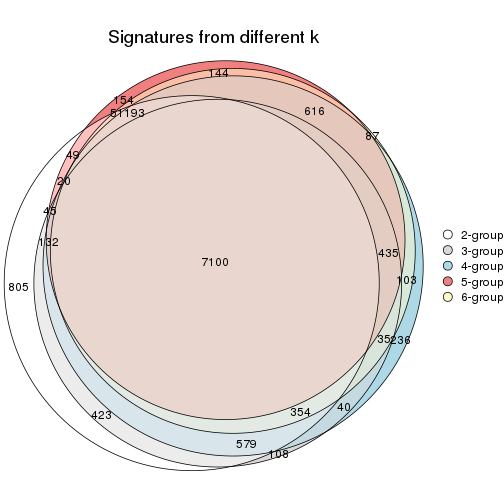
get_signature() returns a data frame invisibly. TO get the list of signatures, the function
call should be assigned to a variable explicitly. In following code, if plot argument is set
to FALSE, no heatmap is plotted while only the differential analysis is performed.
# code only for demonstration
tb = get_signature(res, k = ..., plot = FALSE)
An example of the output of tb is:
#> which_row fdr mean_1 mean_2 scaled_mean_1 scaled_mean_2 km
#> 1 38 0.042760348 8.373488 9.131774 -0.5533452 0.5164555 1
#> 2 40 0.018707592 7.106213 8.469186 -0.6173731 0.5762149 1
#> 3 55 0.019134737 10.221463 11.207825 -0.6159697 0.5749050 1
#> 4 59 0.006059896 5.921854 7.869574 -0.6899429 0.6439467 1
#> 5 60 0.018055526 8.928898 10.211722 -0.6204761 0.5791110 1
#> 6 98 0.009384629 15.714769 14.887706 0.6635654 -0.6193277 2
...
The columns in tb are:
which_row: row indices corresponding to the input matrix.fdr: FDR for the differential test. mean_x: The mean value in group x.scaled_mean_x: The mean value in group x after rows are scaled.km: Row groups if k-means clustering is applied to rows.UMAP plot which shows how samples are separated.
dimension_reduction(res, k = 2, method = "UMAP")
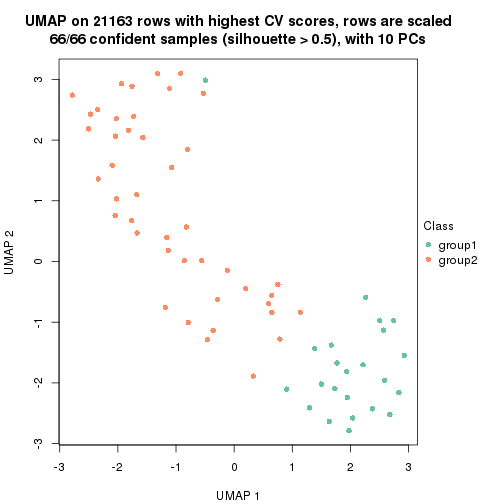
dimension_reduction(res, k = 3, method = "UMAP")
dimension_reduction(res, k = 4, method = "UMAP")
dimension_reduction(res, k = 5, method = "UMAP")
dimension_reduction(res, k = 6, method = "UMAP")

Following heatmap shows how subgroups are split when increasing k:
collect_classes(res)
Test correlation between subgroups and known annotations. If the known annotation is numeric, one-way ANOVA test is applied, and if the known annotation is discrete, chi-squared contingency table test is applied.
test_to_known_factors(res)
#> n tissue(p) cell.type(p) k
#> CV:hclust 66 1.000 0.000298 2
#> CV:hclust 66 0.294 0.000481 3
#> CV:hclust 65 0.273 0.001251 4
#> CV:hclust 60 0.370 0.001155 5
#> CV:hclust 62 0.332 0.003116 6
If matrix rows can be associated to genes, consider to use functional_enrichment(res,
...) to perform function enrichment for the signature genes. See this vignette for more detailed explanations.
The object with results only for a single top-value method and a single partition method can be extracted as:
res = res_list["CV", "kmeans"]
# you can also extract it by
# res = res_list["CV:kmeans"]
A summary of res and all the functions that can be applied to it:
res
#> A 'ConsensusPartition' object with k = 2, 3, 4, 5, 6.
#> On a matrix with 21163 rows and 66 columns.
#> Top rows (1000, 2000, 3000, 4000, 5000) are extracted by 'CV' method.
#> Subgroups are detected by 'kmeans' method.
#> Performed in total 1250 partitions by row resampling.
#> Best k for subgroups seems to be 2.
#>
#> Following methods can be applied to this 'ConsensusPartition' object:
#> [1] "cola_report" "collect_classes" "collect_plots"
#> [4] "collect_stats" "colnames" "compare_signatures"
#> [7] "consensus_heatmap" "dimension_reduction" "functional_enrichment"
#> [10] "get_anno_col" "get_anno" "get_classes"
#> [13] "get_consensus" "get_matrix" "get_membership"
#> [16] "get_param" "get_signatures" "get_stats"
#> [19] "is_best_k" "is_stable_k" "membership_heatmap"
#> [22] "ncol" "nrow" "plot_ecdf"
#> [25] "rownames" "select_partition_number" "show"
#> [28] "suggest_best_k" "test_to_known_factors"
collect_plots() function collects all the plots made from res for all k (number of partitions)
into one single page to provide an easy and fast comparison between different k.
collect_plots(res)
The plots are:
k and the heatmap of
predicted classes for each k.k.k.k.All the plots in panels can be made by individual functions and they are plotted later in this section.
select_partition_number() produces several plots showing different
statistics for choosing “optimized” k. There are following statistics:
k;k, the area increased is defined as \(A_k - A_{k-1}\).The detailed explanations of these statistics can be found in the cola vignette.
Generally speaking, lower PAC score, higher mean silhouette score or higher
concordance corresponds to better partition. Rand index and Jaccard index
measure how similar the current partition is compared to partition with k-1.
If they are too similar, we won't accept k is better than k-1.
select_partition_number(res)
The numeric values for all these statistics can be obtained by get_stats().
get_stats(res)
#> k 1-PAC mean_silhouette concordance area_increased Rand Jaccard
#> 2 2 1.000 0.983 0.992 0.4882 0.515 0.515
#> 3 3 0.652 0.836 0.839 0.3205 0.762 0.558
#> 4 4 0.621 0.724 0.811 0.1342 0.944 0.828
#> 5 5 0.696 0.617 0.783 0.0630 0.945 0.810
#> 6 6 0.702 0.414 0.706 0.0418 0.924 0.717
suggest_best_k() suggests the best \(k\) based on these statistics. The rules are as follows:
suggest_best_k(res)
#> [1] 2
Following shows the table of the partitions (You need to click the show/hide
code output link to see it). The membership matrix (columns with name p*)
is inferred by
clue::cl_consensus()
function with the SE method. Basically the value in the membership matrix
represents the probability to belong to a certain group. The finall class
label for an item is determined with the group with highest probability it
belongs to.
In get_classes() function, the entropy is calculated from the membership
matrix and the silhouette score is calculated from the consensus matrix.
cbind(get_classes(res, k = 2), get_membership(res, k = 2))
#> class entropy silhouette p1 p2
#> GSM272727 2 0.0000 0.987 0.000 1.000
#> GSM272729 2 0.0000 0.987 0.000 1.000
#> GSM272731 2 0.0000 0.987 0.000 1.000
#> GSM272733 2 0.0000 0.987 0.000 1.000
#> GSM272735 2 0.0000 0.987 0.000 1.000
#> GSM272728 2 0.0000 0.987 0.000 1.000
#> GSM272730 1 0.0000 1.000 1.000 0.000
#> GSM272732 1 0.0000 1.000 1.000 0.000
#> GSM272734 1 0.0000 1.000 1.000 0.000
#> GSM272736 2 0.0000 0.987 0.000 1.000
#> GSM272671 2 0.0000 0.987 0.000 1.000
#> GSM272673 2 0.0000 0.987 0.000 1.000
#> GSM272675 2 0.0000 0.987 0.000 1.000
#> GSM272677 2 0.0000 0.987 0.000 1.000
#> GSM272679 2 0.0000 0.987 0.000 1.000
#> GSM272681 2 0.0000 0.987 0.000 1.000
#> GSM272683 2 0.0000 0.987 0.000 1.000
#> GSM272685 2 0.0000 0.987 0.000 1.000
#> GSM272687 2 0.5737 0.847 0.136 0.864
#> GSM272689 2 0.0000 0.987 0.000 1.000
#> GSM272691 2 0.0000 0.987 0.000 1.000
#> GSM272693 1 0.0000 1.000 1.000 0.000
#> GSM272695 2 0.0000 0.987 0.000 1.000
#> GSM272697 2 0.0000 0.987 0.000 1.000
#> GSM272699 2 0.0000 0.987 0.000 1.000
#> GSM272701 2 0.0000 0.987 0.000 1.000
#> GSM272703 2 0.0000 0.987 0.000 1.000
#> GSM272705 2 0.0000 0.987 0.000 1.000
#> GSM272707 1 0.0000 1.000 1.000 0.000
#> GSM272709 2 0.0000 0.987 0.000 1.000
#> GSM272711 2 0.0000 0.987 0.000 1.000
#> GSM272713 1 0.0000 1.000 1.000 0.000
#> GSM272715 2 0.0000 0.987 0.000 1.000
#> GSM272717 2 0.0000 0.987 0.000 1.000
#> GSM272719 2 0.0000 0.987 0.000 1.000
#> GSM272721 1 0.0000 1.000 1.000 0.000
#> GSM272723 2 0.0000 0.987 0.000 1.000
#> GSM272725 1 0.0000 1.000 1.000 0.000
#> GSM272672 2 0.0000 0.987 0.000 1.000
#> GSM272674 1 0.0000 1.000 1.000 0.000
#> GSM272676 2 0.0000 0.987 0.000 1.000
#> GSM272678 2 0.0000 0.987 0.000 1.000
#> GSM272680 2 0.0000 0.987 0.000 1.000
#> GSM272682 1 0.0000 1.000 1.000 0.000
#> GSM272684 1 0.0000 1.000 1.000 0.000
#> GSM272686 2 0.1184 0.974 0.016 0.984
#> GSM272688 1 0.0000 1.000 1.000 0.000
#> GSM272690 1 0.0000 1.000 1.000 0.000
#> GSM272692 1 0.0000 1.000 1.000 0.000
#> GSM272694 1 0.0000 1.000 1.000 0.000
#> GSM272696 2 0.3879 0.915 0.076 0.924
#> GSM272698 2 0.0000 0.987 0.000 1.000
#> GSM272700 1 0.0000 1.000 1.000 0.000
#> GSM272702 1 0.0000 1.000 1.000 0.000
#> GSM272704 1 0.0000 1.000 1.000 0.000
#> GSM272706 1 0.0000 1.000 1.000 0.000
#> GSM272708 1 0.0000 1.000 1.000 0.000
#> GSM272710 1 0.0000 1.000 1.000 0.000
#> GSM272712 1 0.0000 1.000 1.000 0.000
#> GSM272714 1 0.0000 1.000 1.000 0.000
#> GSM272716 1 0.0000 1.000 1.000 0.000
#> GSM272718 2 0.0000 0.987 0.000 1.000
#> GSM272720 1 0.0000 1.000 1.000 0.000
#> GSM272722 2 0.0938 0.977 0.012 0.988
#> GSM272724 2 0.8608 0.618 0.284 0.716
#> GSM272726 1 0.0000 1.000 1.000 0.000
cbind(get_classes(res, k = 3), get_membership(res, k = 3))
#> class entropy silhouette p1 p2 p3
#> GSM272727 2 0.2625 0.908 0.000 0.916 0.084
#> GSM272729 3 0.5291 0.780 0.000 0.268 0.732
#> GSM272731 2 0.2625 0.908 0.000 0.916 0.084
#> GSM272733 2 0.2625 0.908 0.000 0.916 0.084
#> GSM272735 2 0.2625 0.908 0.000 0.916 0.084
#> GSM272728 2 0.2625 0.908 0.000 0.916 0.084
#> GSM272730 1 0.2448 0.885 0.924 0.000 0.076
#> GSM272732 1 0.5560 0.830 0.700 0.000 0.300
#> GSM272734 1 0.4796 0.855 0.780 0.000 0.220
#> GSM272736 2 0.2878 0.903 0.000 0.904 0.096
#> GSM272671 3 0.5810 0.772 0.000 0.336 0.664
#> GSM272673 2 0.0000 0.923 0.000 1.000 0.000
#> GSM272675 2 0.0000 0.923 0.000 1.000 0.000
#> GSM272677 2 0.0000 0.923 0.000 1.000 0.000
#> GSM272679 2 0.0000 0.923 0.000 1.000 0.000
#> GSM272681 2 0.0892 0.917 0.000 0.980 0.020
#> GSM272683 3 0.5810 0.772 0.000 0.336 0.664
#> GSM272685 3 0.6008 0.734 0.000 0.372 0.628
#> GSM272687 3 0.7057 0.757 0.056 0.264 0.680
#> GSM272689 2 0.2448 0.909 0.000 0.924 0.076
#> GSM272691 2 0.0592 0.922 0.000 0.988 0.012
#> GSM272693 1 0.1289 0.906 0.968 0.000 0.032
#> GSM272695 3 0.6252 0.722 0.000 0.444 0.556
#> GSM272697 2 0.0000 0.923 0.000 1.000 0.000
#> GSM272699 2 0.2796 0.814 0.000 0.908 0.092
#> GSM272701 3 0.6154 0.765 0.000 0.408 0.592
#> GSM272703 3 0.6154 0.765 0.000 0.408 0.592
#> GSM272705 3 0.6008 0.734 0.000 0.372 0.628
#> GSM272707 1 0.0237 0.911 0.996 0.000 0.004
#> GSM272709 3 0.6079 0.774 0.000 0.388 0.612
#> GSM272711 2 0.0000 0.923 0.000 1.000 0.000
#> GSM272713 1 0.0000 0.911 1.000 0.000 0.000
#> GSM272715 3 0.5810 0.772 0.000 0.336 0.664
#> GSM272717 2 0.2356 0.910 0.000 0.928 0.072
#> GSM272719 2 0.0000 0.923 0.000 1.000 0.000
#> GSM272721 1 0.0000 0.911 1.000 0.000 0.000
#> GSM272723 3 0.6154 0.765 0.000 0.408 0.592
#> GSM272725 3 0.5948 0.392 0.360 0.000 0.640
#> GSM272672 3 0.5785 0.774 0.000 0.332 0.668
#> GSM272674 1 0.4346 0.872 0.816 0.000 0.184
#> GSM272676 2 0.1031 0.914 0.000 0.976 0.024
#> GSM272678 2 0.1031 0.914 0.000 0.976 0.024
#> GSM272680 2 0.3038 0.826 0.000 0.896 0.104
#> GSM272682 1 0.5404 0.852 0.740 0.004 0.256
#> GSM272684 1 0.0000 0.911 1.000 0.000 0.000
#> GSM272686 3 0.5731 0.772 0.020 0.228 0.752
#> GSM272688 1 0.0000 0.911 1.000 0.000 0.000
#> GSM272690 1 0.4702 0.866 0.788 0.000 0.212
#> GSM272692 1 0.4504 0.867 0.804 0.000 0.196
#> GSM272694 1 0.0000 0.911 1.000 0.000 0.000
#> GSM272696 3 0.6964 0.757 0.052 0.264 0.684
#> GSM272698 2 0.4002 0.753 0.000 0.840 0.160
#> GSM272700 1 0.4654 0.868 0.792 0.000 0.208
#> GSM272702 1 0.2537 0.884 0.920 0.000 0.080
#> GSM272704 1 0.1163 0.904 0.972 0.000 0.028
#> GSM272706 1 0.2448 0.885 0.924 0.000 0.076
#> GSM272708 3 0.6264 0.342 0.380 0.004 0.616
#> GSM272710 1 0.0237 0.911 0.996 0.000 0.004
#> GSM272712 1 0.5431 0.842 0.716 0.000 0.284
#> GSM272714 1 0.0000 0.911 1.000 0.000 0.000
#> GSM272716 3 0.5785 0.444 0.332 0.000 0.668
#> GSM272718 2 0.2356 0.910 0.000 0.928 0.072
#> GSM272720 1 0.4702 0.866 0.788 0.000 0.212
#> GSM272722 3 0.6172 0.771 0.012 0.308 0.680
#> GSM272724 3 0.7588 0.721 0.120 0.196 0.684
#> GSM272726 1 0.0237 0.911 0.996 0.000 0.004
cbind(get_classes(res, k = 4), get_membership(res, k = 4))
#> class entropy silhouette p1 p2 p3 p4
#> GSM272727 2 0.5815 0.75327 0.000 0.708 0.140 0.152
#> GSM272729 3 0.2174 0.82542 0.000 0.052 0.928 0.020
#> GSM272731 2 0.4458 0.80644 0.000 0.808 0.076 0.116
#> GSM272733 2 0.4458 0.80644 0.000 0.808 0.076 0.116
#> GSM272735 2 0.4458 0.80644 0.000 0.808 0.076 0.116
#> GSM272728 2 0.4919 0.79294 0.000 0.772 0.076 0.152
#> GSM272730 1 0.4158 0.63799 0.768 0.000 0.008 0.224
#> GSM272732 4 0.4917 0.76005 0.248 0.008 0.016 0.728
#> GSM272734 4 0.6080 0.45261 0.468 0.000 0.044 0.488
#> GSM272736 2 0.4389 0.80595 0.000 0.812 0.072 0.116
#> GSM272671 3 0.3398 0.81138 0.000 0.060 0.872 0.068
#> GSM272673 2 0.0804 0.83730 0.000 0.980 0.012 0.008
#> GSM272675 2 0.0804 0.83791 0.000 0.980 0.008 0.012
#> GSM272677 2 0.0336 0.83743 0.000 0.992 0.008 0.000
#> GSM272679 2 0.0937 0.83729 0.000 0.976 0.012 0.012
#> GSM272681 2 0.1059 0.83155 0.000 0.972 0.012 0.016
#> GSM272683 3 0.3168 0.81579 0.000 0.060 0.884 0.056
#> GSM272685 3 0.4411 0.77130 0.000 0.080 0.812 0.108
#> GSM272687 3 0.4744 0.79999 0.012 0.100 0.808 0.080
#> GSM272689 2 0.5722 0.75640 0.000 0.716 0.148 0.136
#> GSM272691 2 0.0524 0.83736 0.000 0.988 0.004 0.008
#> GSM272693 1 0.4313 0.53607 0.736 0.000 0.004 0.260
#> GSM272695 3 0.4535 0.67393 0.000 0.292 0.704 0.004
#> GSM272697 2 0.0937 0.83729 0.000 0.976 0.012 0.012
#> GSM272699 2 0.5750 0.00254 0.000 0.532 0.440 0.028
#> GSM272701 3 0.2921 0.81873 0.000 0.140 0.860 0.000
#> GSM272703 3 0.2921 0.81873 0.000 0.140 0.860 0.000
#> GSM272705 3 0.3833 0.79681 0.000 0.080 0.848 0.072
#> GSM272707 1 0.3870 0.62506 0.788 0.000 0.004 0.208
#> GSM272709 3 0.2921 0.81873 0.000 0.140 0.860 0.000
#> GSM272711 2 0.0524 0.83756 0.000 0.988 0.008 0.004
#> GSM272713 1 0.0000 0.79989 1.000 0.000 0.000 0.000
#> GSM272715 3 0.3168 0.81579 0.000 0.060 0.884 0.056
#> GSM272717 2 0.5714 0.75217 0.000 0.716 0.156 0.128
#> GSM272719 2 0.0804 0.83791 0.000 0.980 0.008 0.012
#> GSM272721 1 0.0000 0.79989 1.000 0.000 0.000 0.000
#> GSM272723 3 0.2921 0.81873 0.000 0.140 0.860 0.000
#> GSM272725 3 0.7198 0.36106 0.196 0.000 0.548 0.256
#> GSM272672 3 0.3247 0.81420 0.000 0.060 0.880 0.060
#> GSM272674 4 0.4817 0.83170 0.388 0.000 0.000 0.612
#> GSM272676 2 0.0937 0.83177 0.000 0.976 0.012 0.012
#> GSM272678 2 0.1059 0.83155 0.000 0.972 0.012 0.016
#> GSM272680 2 0.5167 0.43453 0.000 0.644 0.016 0.340
#> GSM272682 4 0.5271 0.81785 0.300 0.016 0.008 0.676
#> GSM272684 1 0.0000 0.79989 1.000 0.000 0.000 0.000
#> GSM272686 3 0.2855 0.82320 0.004 0.040 0.904 0.052
#> GSM272688 1 0.0000 0.79989 1.000 0.000 0.000 0.000
#> GSM272690 4 0.4761 0.84400 0.372 0.000 0.000 0.628
#> GSM272692 1 0.5365 0.22305 0.692 0.000 0.044 0.264
#> GSM272694 1 0.0000 0.79989 1.000 0.000 0.000 0.000
#> GSM272696 3 0.4874 0.79358 0.012 0.100 0.800 0.088
#> GSM272698 2 0.5506 0.12196 0.000 0.512 0.016 0.472
#> GSM272700 4 0.4761 0.84363 0.372 0.000 0.000 0.628
#> GSM272702 1 0.4621 0.52815 0.708 0.000 0.008 0.284
#> GSM272704 1 0.3088 0.72739 0.864 0.000 0.008 0.128
#> GSM272706 1 0.4123 0.64356 0.772 0.000 0.008 0.220
#> GSM272708 3 0.7626 0.15860 0.232 0.000 0.464 0.304
#> GSM272710 1 0.0188 0.79681 0.996 0.000 0.000 0.004
#> GSM272712 4 0.4841 0.78605 0.272 0.004 0.012 0.712
#> GSM272714 1 0.0000 0.79989 1.000 0.000 0.000 0.000
#> GSM272716 3 0.7297 0.39745 0.220 0.000 0.536 0.244
#> GSM272718 2 0.5714 0.75217 0.000 0.716 0.156 0.128
#> GSM272720 4 0.4776 0.84359 0.376 0.000 0.000 0.624
#> GSM272722 3 0.4411 0.80531 0.000 0.108 0.812 0.080
#> GSM272724 3 0.5222 0.76689 0.056 0.056 0.796 0.092
#> GSM272726 1 0.0188 0.79681 0.996 0.000 0.000 0.004
cbind(get_classes(res, k = 5), get_membership(res, k = 5))
#> class entropy silhouette p1 p2 p3 p4 p5
#> GSM272727 2 0.5545 0.7008 0.000 0.648 0.060 0.024 0.268
#> GSM272729 3 0.1412 0.7693 0.004 0.008 0.952 0.000 0.036
#> GSM272731 2 0.4314 0.7649 0.000 0.760 0.028 0.016 0.196
#> GSM272733 2 0.4314 0.7649 0.000 0.760 0.028 0.016 0.196
#> GSM272735 2 0.4314 0.7649 0.000 0.760 0.028 0.016 0.196
#> GSM272728 2 0.5000 0.7222 0.000 0.680 0.028 0.024 0.268
#> GSM272730 1 0.3007 0.5706 0.864 0.000 0.004 0.104 0.028
#> GSM272732 4 0.4754 0.5224 0.184 0.000 0.008 0.736 0.072
#> GSM272734 4 0.5707 -0.2705 0.092 0.000 0.000 0.544 0.364
#> GSM272736 2 0.4412 0.7635 0.000 0.748 0.028 0.016 0.208
#> GSM272671 3 0.3381 0.7388 0.000 0.016 0.808 0.000 0.176
#> GSM272673 2 0.0566 0.8128 0.000 0.984 0.012 0.000 0.004
#> GSM272675 2 0.0162 0.8143 0.000 0.996 0.000 0.000 0.004
#> GSM272677 2 0.0162 0.8143 0.000 0.996 0.000 0.000 0.004
#> GSM272679 2 0.0566 0.8128 0.000 0.984 0.012 0.000 0.004
#> GSM272681 2 0.1815 0.7928 0.000 0.940 0.016 0.020 0.024
#> GSM272683 3 0.3183 0.7460 0.000 0.016 0.828 0.000 0.156
#> GSM272685 3 0.4527 0.6559 0.000 0.036 0.692 0.000 0.272
#> GSM272687 3 0.3657 0.7422 0.052 0.044 0.860 0.024 0.020
#> GSM272689 2 0.5778 0.6317 0.000 0.592 0.128 0.000 0.280
#> GSM272691 2 0.0404 0.8140 0.000 0.988 0.000 0.000 0.012
#> GSM272693 1 0.3652 0.5016 0.784 0.000 0.004 0.200 0.012
#> GSM272695 3 0.3928 0.5929 0.000 0.296 0.700 0.000 0.004
#> GSM272697 2 0.0324 0.8141 0.000 0.992 0.004 0.000 0.004
#> GSM272699 3 0.5760 0.3561 0.000 0.368 0.536 0.000 0.096
#> GSM272701 3 0.1608 0.7693 0.000 0.072 0.928 0.000 0.000
#> GSM272703 3 0.1544 0.7703 0.000 0.068 0.932 0.000 0.000
#> GSM272705 3 0.4134 0.7131 0.000 0.044 0.760 0.000 0.196
#> GSM272707 1 0.2513 0.5686 0.876 0.000 0.000 0.116 0.008
#> GSM272709 3 0.1544 0.7703 0.000 0.068 0.932 0.000 0.000
#> GSM272711 2 0.0566 0.8128 0.000 0.984 0.012 0.000 0.004
#> GSM272713 1 0.3810 0.6158 0.792 0.000 0.000 0.040 0.168
#> GSM272715 3 0.3264 0.7437 0.000 0.016 0.820 0.000 0.164
#> GSM272717 2 0.5796 0.6292 0.000 0.588 0.128 0.000 0.284
#> GSM272719 2 0.0566 0.8128 0.000 0.984 0.012 0.000 0.004
#> GSM272721 1 0.3804 0.6170 0.796 0.000 0.000 0.044 0.160
#> GSM272723 3 0.1544 0.7703 0.000 0.068 0.932 0.000 0.000
#> GSM272725 3 0.6797 0.2391 0.340 0.000 0.484 0.152 0.024
#> GSM272672 3 0.3304 0.7421 0.000 0.016 0.816 0.000 0.168
#> GSM272674 4 0.2879 0.6634 0.100 0.000 0.000 0.868 0.032
#> GSM272676 2 0.1653 0.7946 0.000 0.944 0.004 0.024 0.028
#> GSM272678 2 0.1653 0.7974 0.000 0.944 0.004 0.024 0.028
#> GSM272680 2 0.5442 -0.1521 0.008 0.496 0.004 0.460 0.032
#> GSM272682 4 0.2972 0.6641 0.084 0.004 0.004 0.876 0.032
#> GSM272684 1 0.4100 0.5929 0.764 0.000 0.000 0.044 0.192
#> GSM272686 3 0.2818 0.7584 0.000 0.008 0.860 0.004 0.128
#> GSM272688 1 0.3804 0.6175 0.796 0.000 0.000 0.044 0.160
#> GSM272690 4 0.2570 0.6829 0.084 0.000 0.000 0.888 0.028
#> GSM272692 5 0.6417 0.0000 0.216 0.000 0.000 0.280 0.504
#> GSM272694 1 0.3921 0.6127 0.784 0.000 0.000 0.044 0.172
#> GSM272696 3 0.4518 0.7135 0.080 0.032 0.812 0.048 0.028
#> GSM272698 4 0.5367 0.2510 0.008 0.400 0.004 0.556 0.032
#> GSM272700 4 0.2754 0.6728 0.080 0.000 0.000 0.880 0.040
#> GSM272702 1 0.3484 0.5317 0.820 0.000 0.004 0.152 0.024
#> GSM272704 1 0.1591 0.5989 0.940 0.000 0.004 0.052 0.004
#> GSM272706 1 0.2972 0.5687 0.864 0.000 0.004 0.108 0.024
#> GSM272708 3 0.7209 0.0926 0.356 0.000 0.408 0.208 0.028
#> GSM272710 1 0.4457 0.5595 0.740 0.000 0.004 0.048 0.208
#> GSM272712 4 0.2623 0.6597 0.096 0.000 0.004 0.884 0.016
#> GSM272714 1 0.3848 0.6133 0.788 0.000 0.000 0.040 0.172
#> GSM272716 1 0.7448 -0.2176 0.408 0.000 0.388 0.104 0.100
#> GSM272718 2 0.5796 0.6292 0.000 0.588 0.128 0.000 0.284
#> GSM272720 4 0.2570 0.6829 0.084 0.000 0.000 0.888 0.028
#> GSM272722 3 0.3657 0.7422 0.052 0.044 0.860 0.024 0.020
#> GSM272724 3 0.4193 0.7200 0.080 0.024 0.828 0.044 0.024
#> GSM272726 1 0.4450 0.5588 0.736 0.000 0.004 0.044 0.216
cbind(get_classes(res, k = 6), get_membership(res, k = 6))
#> class entropy silhouette p1 p2 p3 p4 p5 p6
#> GSM272727 5 0.5077 0.8419 0.000 0.404 0.068 0.000 0.524 0.004
#> GSM272729 3 0.2445 0.6547 0.000 0.000 0.872 0.000 0.020 0.108
#> GSM272731 2 0.4256 -0.6003 0.000 0.564 0.012 0.004 0.420 0.000
#> GSM272733 2 0.4256 -0.6003 0.000 0.564 0.012 0.004 0.420 0.000
#> GSM272735 2 0.4256 -0.6003 0.000 0.564 0.012 0.004 0.420 0.000
#> GSM272728 5 0.4456 0.8322 0.000 0.456 0.020 0.000 0.520 0.004
#> GSM272730 6 0.4772 0.4138 0.444 0.000 0.012 0.028 0.000 0.516
#> GSM272732 4 0.6243 0.1899 0.020 0.000 0.012 0.464 0.128 0.376
#> GSM272734 4 0.6483 0.5246 0.080 0.000 0.000 0.544 0.192 0.184
#> GSM272736 2 0.4256 -0.5889 0.000 0.564 0.012 0.004 0.420 0.000
#> GSM272671 3 0.5287 0.6468 0.000 0.004 0.644 0.008 0.152 0.192
#> GSM272673 2 0.0717 0.5284 0.000 0.976 0.016 0.000 0.008 0.000
#> GSM272675 2 0.0291 0.5258 0.000 0.992 0.000 0.004 0.004 0.000
#> GSM272677 2 0.0146 0.5245 0.000 0.996 0.000 0.000 0.004 0.000
#> GSM272679 2 0.0820 0.5283 0.000 0.972 0.016 0.000 0.012 0.000
#> GSM272681 2 0.2245 0.5069 0.000 0.904 0.012 0.012 0.068 0.004
#> GSM272683 3 0.5300 0.6474 0.000 0.004 0.640 0.008 0.144 0.204
#> GSM272685 3 0.6042 0.5914 0.000 0.016 0.560 0.008 0.212 0.204
#> GSM272687 3 0.3380 0.5329 0.004 0.024 0.804 0.000 0.004 0.164
#> GSM272689 2 0.7427 -0.3617 0.000 0.420 0.152 0.016 0.292 0.120
#> GSM272691 2 0.0458 0.5179 0.000 0.984 0.000 0.000 0.016 0.000
#> GSM272693 1 0.5200 -0.3559 0.476 0.000 0.004 0.076 0.000 0.444
#> GSM272695 3 0.3993 0.3429 0.000 0.400 0.592 0.000 0.008 0.000
#> GSM272697 2 0.0767 0.5279 0.000 0.976 0.008 0.004 0.012 0.000
#> GSM272699 3 0.6818 0.2863 0.000 0.340 0.460 0.012 0.096 0.092
#> GSM272701 3 0.1267 0.6707 0.000 0.060 0.940 0.000 0.000 0.000
#> GSM272703 3 0.1267 0.6707 0.000 0.060 0.940 0.000 0.000 0.000
#> GSM272705 3 0.5919 0.6292 0.000 0.024 0.596 0.008 0.168 0.204
#> GSM272707 1 0.4726 -0.2774 0.528 0.000 0.000 0.048 0.000 0.424
#> GSM272709 3 0.1267 0.6707 0.000 0.060 0.940 0.000 0.000 0.000
#> GSM272711 2 0.0363 0.5280 0.000 0.988 0.012 0.000 0.000 0.000
#> GSM272713 1 0.1245 0.6603 0.952 0.000 0.000 0.000 0.032 0.016
#> GSM272715 3 0.5397 0.6453 0.000 0.004 0.628 0.008 0.156 0.204
#> GSM272717 2 0.7436 -0.3787 0.000 0.412 0.164 0.020 0.304 0.100
#> GSM272719 2 0.0363 0.5280 0.000 0.988 0.012 0.000 0.000 0.000
#> GSM272721 1 0.1657 0.6513 0.928 0.000 0.000 0.016 0.000 0.056
#> GSM272723 3 0.1267 0.6707 0.000 0.060 0.940 0.000 0.000 0.000
#> GSM272725 6 0.5933 0.5048 0.084 0.000 0.372 0.036 0.004 0.504
#> GSM272672 3 0.5428 0.6438 0.000 0.004 0.624 0.008 0.160 0.204
#> GSM272674 4 0.1531 0.8312 0.068 0.000 0.000 0.928 0.000 0.004
#> GSM272676 2 0.2458 0.4981 0.000 0.892 0.000 0.024 0.068 0.016
#> GSM272678 2 0.2317 0.4987 0.000 0.900 0.000 0.020 0.064 0.016
#> GSM272680 2 0.5386 0.2882 0.000 0.640 0.004 0.248 0.068 0.040
#> GSM272682 4 0.3147 0.7871 0.024 0.004 0.000 0.860 0.060 0.052
#> GSM272684 1 0.0951 0.6652 0.968 0.000 0.000 0.004 0.020 0.008
#> GSM272686 3 0.4264 0.6527 0.000 0.000 0.732 0.004 0.080 0.184
#> GSM272688 1 0.1434 0.6579 0.940 0.000 0.000 0.012 0.000 0.048
#> GSM272690 4 0.1204 0.8353 0.056 0.000 0.000 0.944 0.000 0.000
#> GSM272692 1 0.7561 -0.0415 0.360 0.000 0.000 0.204 0.200 0.236
#> GSM272694 1 0.1434 0.6579 0.940 0.000 0.000 0.012 0.000 0.048
#> GSM272696 3 0.3946 0.4458 0.000 0.028 0.736 0.004 0.004 0.228
#> GSM272698 2 0.5795 0.0441 0.000 0.480 0.000 0.408 0.068 0.044
#> GSM272700 4 0.1327 0.8342 0.064 0.000 0.000 0.936 0.000 0.000
#> GSM272702 6 0.5046 0.4413 0.424 0.000 0.012 0.048 0.000 0.516
#> GSM272704 1 0.4374 -0.3016 0.532 0.000 0.004 0.016 0.000 0.448
#> GSM272706 6 0.4832 0.4240 0.440 0.000 0.012 0.032 0.000 0.516
#> GSM272708 6 0.6409 0.5485 0.104 0.004 0.320 0.056 0.004 0.512
#> GSM272710 1 0.2290 0.6372 0.892 0.000 0.000 0.004 0.084 0.020
#> GSM272712 4 0.2487 0.7992 0.024 0.000 0.000 0.892 0.020 0.064
#> GSM272714 1 0.1765 0.6579 0.924 0.000 0.000 0.000 0.052 0.024
#> GSM272716 6 0.5762 0.4951 0.184 0.000 0.164 0.008 0.024 0.620
#> GSM272718 2 0.7436 -0.3787 0.000 0.412 0.164 0.020 0.304 0.100
#> GSM272720 4 0.1267 0.8349 0.060 0.000 0.000 0.940 0.000 0.000
#> GSM272722 3 0.3280 0.5411 0.000 0.028 0.808 0.000 0.004 0.160
#> GSM272724 3 0.4045 0.4324 0.012 0.012 0.740 0.008 0.004 0.224
#> GSM272726 1 0.2452 0.6333 0.884 0.000 0.000 0.004 0.084 0.028
Heatmaps for the consensus matrix. It visualizes the probability of two samples to be in a same group.
consensus_heatmap(res, k = 2)
consensus_heatmap(res, k = 3)
consensus_heatmap(res, k = 4)
consensus_heatmap(res, k = 5)
consensus_heatmap(res, k = 6)

Heatmaps for the membership of samples in all partitions to see how consistent they are:
membership_heatmap(res, k = 2)
membership_heatmap(res, k = 3)
membership_heatmap(res, k = 4)
membership_heatmap(res, k = 5)
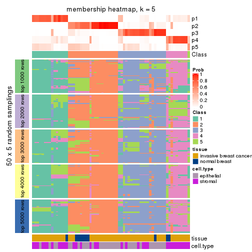
membership_heatmap(res, k = 6)
As soon as we have had the classes for columns, we can look for signatures which are significantly different between classes which can be candidate marks for certain classes. Following are the heatmaps for signatures.
Signature heatmaps where rows are scaled:
get_signatures(res, k = 2)
get_signatures(res, k = 3)
get_signatures(res, k = 4)
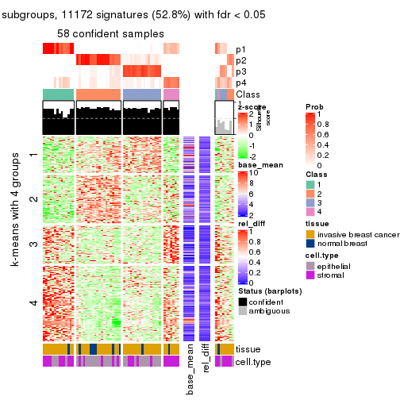
get_signatures(res, k = 5)
get_signatures(res, k = 6)
Signature heatmaps where rows are not scaled:
get_signatures(res, k = 2, scale_rows = FALSE)
get_signatures(res, k = 3, scale_rows = FALSE)
get_signatures(res, k = 4, scale_rows = FALSE)
get_signatures(res, k = 5, scale_rows = FALSE)
get_signatures(res, k = 6, scale_rows = FALSE)
Compare the overlap of signatures from different k:
compare_signatures(res)
get_signature() returns a data frame invisibly. TO get the list of signatures, the function
call should be assigned to a variable explicitly. In following code, if plot argument is set
to FALSE, no heatmap is plotted while only the differential analysis is performed.
# code only for demonstration
tb = get_signature(res, k = ..., plot = FALSE)
An example of the output of tb is:
#> which_row fdr mean_1 mean_2 scaled_mean_1 scaled_mean_2 km
#> 1 38 0.042760348 8.373488 9.131774 -0.5533452 0.5164555 1
#> 2 40 0.018707592 7.106213 8.469186 -0.6173731 0.5762149 1
#> 3 55 0.019134737 10.221463 11.207825 -0.6159697 0.5749050 1
#> 4 59 0.006059896 5.921854 7.869574 -0.6899429 0.6439467 1
#> 5 60 0.018055526 8.928898 10.211722 -0.6204761 0.5791110 1
#> 6 98 0.009384629 15.714769 14.887706 0.6635654 -0.6193277 2
...
The columns in tb are:
which_row: row indices corresponding to the input matrix.fdr: FDR for the differential test. mean_x: The mean value in group x.scaled_mean_x: The mean value in group x after rows are scaled.km: Row groups if k-means clustering is applied to rows.UMAP plot which shows how samples are separated.
dimension_reduction(res, k = 2, method = "UMAP")
dimension_reduction(res, k = 3, method = "UMAP")
dimension_reduction(res, k = 4, method = "UMAP")
dimension_reduction(res, k = 5, method = "UMAP")
dimension_reduction(res, k = 6, method = "UMAP")
Following heatmap shows how subgroups are split when increasing k:
collect_classes(res)
Test correlation between subgroups and known annotations. If the known annotation is numeric, one-way ANOVA test is applied, and if the known annotation is discrete, chi-squared contingency table test is applied.
test_to_known_factors(res)
#> n tissue(p) cell.type(p) k
#> CV:kmeans 66 0.757537 0.000158 2
#> CV:kmeans 63 0.201344 0.000307 3
#> CV:kmeans 58 0.160390 0.000625 4
#> CV:kmeans 58 0.160390 0.000625 5
#> CV:kmeans 42 0.000718 0.000487 6
If matrix rows can be associated to genes, consider to use functional_enrichment(res,
...) to perform function enrichment for the signature genes. See this vignette for more detailed explanations.
The object with results only for a single top-value method and a single partition method can be extracted as:
res = res_list["CV", "skmeans"]
# you can also extract it by
# res = res_list["CV:skmeans"]
A summary of res and all the functions that can be applied to it:
res
#> A 'ConsensusPartition' object with k = 2, 3, 4, 5, 6.
#> On a matrix with 21163 rows and 66 columns.
#> Top rows (1000, 2000, 3000, 4000, 5000) are extracted by 'CV' method.
#> Subgroups are detected by 'skmeans' method.
#> Performed in total 1250 partitions by row resampling.
#> Best k for subgroups seems to be 3.
#>
#> Following methods can be applied to this 'ConsensusPartition' object:
#> [1] "cola_report" "collect_classes" "collect_plots"
#> [4] "collect_stats" "colnames" "compare_signatures"
#> [7] "consensus_heatmap" "dimension_reduction" "functional_enrichment"
#> [10] "get_anno_col" "get_anno" "get_classes"
#> [13] "get_consensus" "get_matrix" "get_membership"
#> [16] "get_param" "get_signatures" "get_stats"
#> [19] "is_best_k" "is_stable_k" "membership_heatmap"
#> [22] "ncol" "nrow" "plot_ecdf"
#> [25] "rownames" "select_partition_number" "show"
#> [28] "suggest_best_k" "test_to_known_factors"
collect_plots() function collects all the plots made from res for all k (number of partitions)
into one single page to provide an easy and fast comparison between different k.
collect_plots(res)
The plots are:
k and the heatmap of
predicted classes for each k.k.k.k.All the plots in panels can be made by individual functions and they are plotted later in this section.
select_partition_number() produces several plots showing different
statistics for choosing “optimized” k. There are following statistics:
k;k, the area increased is defined as \(A_k - A_{k-1}\).The detailed explanations of these statistics can be found in the cola vignette.
Generally speaking, lower PAC score, higher mean silhouette score or higher
concordance corresponds to better partition. Rand index and Jaccard index
measure how similar the current partition is compared to partition with k-1.
If they are too similar, we won't accept k is better than k-1.
select_partition_number(res)
The numeric values for all these statistics can be obtained by get_stats().
get_stats(res)
#> k 1-PAC mean_silhouette concordance area_increased Rand Jaccard
#> 2 2 1.000 0.966 0.966 0.5058 0.494 0.494
#> 3 3 1.000 0.972 0.983 0.3183 0.770 0.564
#> 4 4 0.764 0.702 0.853 0.0922 0.927 0.787
#> 5 5 0.721 0.741 0.809 0.0664 0.946 0.812
#> 6 6 0.688 0.574 0.760 0.0484 0.932 0.736
suggest_best_k() suggests the best \(k\) based on these statistics. The rules are as follows:
suggest_best_k(res)
#> [1] 3
#> attr(,"optional")
#> [1] 2
There is also optional best \(k\) = 2 that is worth to check.
Following shows the table of the partitions (You need to click the show/hide
code output link to see it). The membership matrix (columns with name p*)
is inferred by
clue::cl_consensus()
function with the SE method. Basically the value in the membership matrix
represents the probability to belong to a certain group. The finall class
label for an item is determined with the group with highest probability it
belongs to.
In get_classes() function, the entropy is calculated from the membership
matrix and the silhouette score is calculated from the consensus matrix.
cbind(get_classes(res, k = 2), get_membership(res, k = 2))
#> class entropy silhouette p1 p2
#> GSM272727 2 0.000 0.988 0.000 1.000
#> GSM272729 2 0.000 0.988 0.000 1.000
#> GSM272731 2 0.000 0.988 0.000 1.000
#> GSM272733 2 0.000 0.988 0.000 1.000
#> GSM272735 2 0.000 0.988 0.000 1.000
#> GSM272728 2 0.000 0.988 0.000 1.000
#> GSM272730 1 0.000 0.981 1.000 0.000
#> GSM272732 1 0.000 0.981 1.000 0.000
#> GSM272734 1 0.000 0.981 1.000 0.000
#> GSM272736 2 0.000 0.988 0.000 1.000
#> GSM272671 2 0.000 0.988 0.000 1.000
#> GSM272673 2 0.000 0.988 0.000 1.000
#> GSM272675 2 0.000 0.988 0.000 1.000
#> GSM272677 2 0.000 0.988 0.000 1.000
#> GSM272679 2 0.000 0.988 0.000 1.000
#> GSM272681 2 0.000 0.988 0.000 1.000
#> GSM272683 2 0.000 0.988 0.000 1.000
#> GSM272685 2 0.000 0.988 0.000 1.000
#> GSM272687 1 0.000 0.981 1.000 0.000
#> GSM272689 2 0.000 0.988 0.000 1.000
#> GSM272691 2 0.000 0.988 0.000 1.000
#> GSM272693 1 0.000 0.981 1.000 0.000
#> GSM272695 2 0.000 0.988 0.000 1.000
#> GSM272697 2 0.000 0.988 0.000 1.000
#> GSM272699 2 0.000 0.988 0.000 1.000
#> GSM272701 2 0.000 0.988 0.000 1.000
#> GSM272703 2 0.000 0.988 0.000 1.000
#> GSM272705 2 0.000 0.988 0.000 1.000
#> GSM272707 1 0.000 0.981 1.000 0.000
#> GSM272709 2 0.000 0.988 0.000 1.000
#> GSM272711 2 0.000 0.988 0.000 1.000
#> GSM272713 1 0.000 0.981 1.000 0.000
#> GSM272715 2 0.000 0.988 0.000 1.000
#> GSM272717 2 0.000 0.988 0.000 1.000
#> GSM272719 2 0.000 0.988 0.000 1.000
#> GSM272721 1 0.000 0.981 1.000 0.000
#> GSM272723 2 0.000 0.988 0.000 1.000
#> GSM272725 1 0.000 0.981 1.000 0.000
#> GSM272672 2 0.000 0.988 0.000 1.000
#> GSM272674 1 0.000 0.981 1.000 0.000
#> GSM272676 2 0.000 0.988 0.000 1.000
#> GSM272678 2 0.000 0.988 0.000 1.000
#> GSM272680 2 0.358 0.919 0.068 0.932
#> GSM272682 1 0.000 0.981 1.000 0.000
#> GSM272684 1 0.000 0.981 1.000 0.000
#> GSM272686 2 0.895 0.537 0.312 0.688
#> GSM272688 1 0.000 0.981 1.000 0.000
#> GSM272690 1 0.000 0.981 1.000 0.000
#> GSM272692 1 0.000 0.981 1.000 0.000
#> GSM272694 1 0.000 0.981 1.000 0.000
#> GSM272696 1 0.000 0.981 1.000 0.000
#> GSM272698 1 0.802 0.674 0.756 0.244
#> GSM272700 1 0.000 0.981 1.000 0.000
#> GSM272702 1 0.000 0.981 1.000 0.000
#> GSM272704 1 0.000 0.981 1.000 0.000
#> GSM272706 1 0.000 0.981 1.000 0.000
#> GSM272708 1 0.000 0.981 1.000 0.000
#> GSM272710 1 0.000 0.981 1.000 0.000
#> GSM272712 1 0.000 0.981 1.000 0.000
#> GSM272714 1 0.000 0.981 1.000 0.000
#> GSM272716 1 0.000 0.981 1.000 0.000
#> GSM272718 2 0.000 0.988 0.000 1.000
#> GSM272720 1 0.000 0.981 1.000 0.000
#> GSM272722 1 0.895 0.545 0.688 0.312
#> GSM272724 1 0.000 0.981 1.000 0.000
#> GSM272726 1 0.000 0.981 1.000 0.000
cbind(get_classes(res, k = 3), get_membership(res, k = 3))
#> class entropy silhouette p1 p2 p3
#> GSM272727 2 0.1163 0.981 0.000 0.972 0.028
#> GSM272729 3 0.0000 0.961 0.000 0.000 1.000
#> GSM272731 2 0.1163 0.981 0.000 0.972 0.028
#> GSM272733 2 0.1163 0.981 0.000 0.972 0.028
#> GSM272735 2 0.1163 0.981 0.000 0.972 0.028
#> GSM272728 2 0.1163 0.981 0.000 0.972 0.028
#> GSM272730 1 0.0000 0.994 1.000 0.000 0.000
#> GSM272732 1 0.0747 0.979 0.984 0.000 0.016
#> GSM272734 1 0.0000 0.994 1.000 0.000 0.000
#> GSM272736 2 0.1163 0.981 0.000 0.972 0.028
#> GSM272671 3 0.0000 0.961 0.000 0.000 1.000
#> GSM272673 2 0.0000 0.985 0.000 1.000 0.000
#> GSM272675 2 0.0000 0.985 0.000 1.000 0.000
#> GSM272677 2 0.0000 0.985 0.000 1.000 0.000
#> GSM272679 2 0.0000 0.985 0.000 1.000 0.000
#> GSM272681 2 0.0000 0.985 0.000 1.000 0.000
#> GSM272683 3 0.0000 0.961 0.000 0.000 1.000
#> GSM272685 3 0.0747 0.954 0.000 0.016 0.984
#> GSM272687 3 0.1163 0.962 0.000 0.028 0.972
#> GSM272689 2 0.1163 0.981 0.000 0.972 0.028
#> GSM272691 2 0.0000 0.985 0.000 1.000 0.000
#> GSM272693 1 0.0000 0.994 1.000 0.000 0.000
#> GSM272695 3 0.3412 0.880 0.000 0.124 0.876
#> GSM272697 2 0.0000 0.985 0.000 1.000 0.000
#> GSM272699 2 0.1753 0.964 0.000 0.952 0.048
#> GSM272701 3 0.1163 0.962 0.000 0.028 0.972
#> GSM272703 3 0.1163 0.962 0.000 0.028 0.972
#> GSM272705 3 0.5254 0.635 0.000 0.264 0.736
#> GSM272707 1 0.0000 0.994 1.000 0.000 0.000
#> GSM272709 3 0.1163 0.962 0.000 0.028 0.972
#> GSM272711 2 0.0000 0.985 0.000 1.000 0.000
#> GSM272713 1 0.0000 0.994 1.000 0.000 0.000
#> GSM272715 3 0.0000 0.961 0.000 0.000 1.000
#> GSM272717 2 0.1163 0.981 0.000 0.972 0.028
#> GSM272719 2 0.0000 0.985 0.000 1.000 0.000
#> GSM272721 1 0.0000 0.994 1.000 0.000 0.000
#> GSM272723 3 0.1163 0.962 0.000 0.028 0.972
#> GSM272725 1 0.0237 0.990 0.996 0.000 0.004
#> GSM272672 3 0.0000 0.961 0.000 0.000 1.000
#> GSM272674 1 0.0000 0.994 1.000 0.000 0.000
#> GSM272676 2 0.0000 0.985 0.000 1.000 0.000
#> GSM272678 2 0.0000 0.985 0.000 1.000 0.000
#> GSM272680 2 0.0000 0.985 0.000 1.000 0.000
#> GSM272682 1 0.0000 0.994 1.000 0.000 0.000
#> GSM272684 1 0.0000 0.994 1.000 0.000 0.000
#> GSM272686 3 0.0000 0.961 0.000 0.000 1.000
#> GSM272688 1 0.0000 0.994 1.000 0.000 0.000
#> GSM272690 1 0.0000 0.994 1.000 0.000 0.000
#> GSM272692 1 0.0000 0.994 1.000 0.000 0.000
#> GSM272694 1 0.0000 0.994 1.000 0.000 0.000
#> GSM272696 3 0.1163 0.962 0.000 0.028 0.972
#> GSM272698 2 0.0747 0.974 0.016 0.984 0.000
#> GSM272700 1 0.0000 0.994 1.000 0.000 0.000
#> GSM272702 1 0.0000 0.994 1.000 0.000 0.000
#> GSM272704 1 0.0000 0.994 1.000 0.000 0.000
#> GSM272706 1 0.0000 0.994 1.000 0.000 0.000
#> GSM272708 1 0.0000 0.994 1.000 0.000 0.000
#> GSM272710 1 0.0000 0.994 1.000 0.000 0.000
#> GSM272712 1 0.0000 0.994 1.000 0.000 0.000
#> GSM272714 1 0.0000 0.994 1.000 0.000 0.000
#> GSM272716 1 0.3619 0.841 0.864 0.000 0.136
#> GSM272718 2 0.1163 0.981 0.000 0.972 0.028
#> GSM272720 1 0.0000 0.994 1.000 0.000 0.000
#> GSM272722 3 0.1163 0.962 0.000 0.028 0.972
#> GSM272724 3 0.1163 0.948 0.028 0.000 0.972
#> GSM272726 1 0.0000 0.994 1.000 0.000 0.000
cbind(get_classes(res, k = 4), get_membership(res, k = 4))
#> class entropy silhouette p1 p2 p3 p4
#> GSM272727 2 0.4994 0.0948 0.000 0.520 0.000 0.480
#> GSM272729 3 0.3486 0.6671 0.000 0.000 0.812 0.188
#> GSM272731 2 0.4761 0.4220 0.000 0.628 0.000 0.372
#> GSM272733 2 0.4761 0.4220 0.000 0.628 0.000 0.372
#> GSM272735 2 0.4761 0.4220 0.000 0.628 0.000 0.372
#> GSM272728 2 0.4925 0.2787 0.000 0.572 0.000 0.428
#> GSM272730 1 0.0592 0.9371 0.984 0.000 0.000 0.016
#> GSM272732 1 0.3300 0.8659 0.848 0.008 0.000 0.144
#> GSM272734 1 0.1716 0.9267 0.936 0.000 0.000 0.064
#> GSM272736 2 0.4804 0.4243 0.000 0.616 0.000 0.384
#> GSM272671 3 0.4994 0.0479 0.000 0.000 0.520 0.480
#> GSM272673 2 0.1406 0.7651 0.000 0.960 0.016 0.024
#> GSM272675 2 0.0779 0.7667 0.000 0.980 0.004 0.016
#> GSM272677 2 0.0000 0.7675 0.000 1.000 0.000 0.000
#> GSM272679 2 0.1297 0.7646 0.000 0.964 0.020 0.016
#> GSM272681 2 0.2142 0.7491 0.000 0.928 0.016 0.056
#> GSM272683 4 0.4977 -0.0531 0.000 0.000 0.460 0.540
#> GSM272685 4 0.5096 0.5764 0.000 0.084 0.156 0.760
#> GSM272687 3 0.0524 0.8139 0.004 0.000 0.988 0.008
#> GSM272689 4 0.4889 0.3995 0.000 0.360 0.004 0.636
#> GSM272691 2 0.0707 0.7649 0.000 0.980 0.000 0.020
#> GSM272693 1 0.0469 0.9394 0.988 0.000 0.000 0.012
#> GSM272695 3 0.5371 0.3236 0.000 0.364 0.616 0.020
#> GSM272697 2 0.1545 0.7555 0.000 0.952 0.008 0.040
#> GSM272699 4 0.6319 0.3086 0.000 0.436 0.060 0.504
#> GSM272701 3 0.0376 0.8157 0.000 0.004 0.992 0.004
#> GSM272703 3 0.0188 0.8165 0.000 0.000 0.996 0.004
#> GSM272705 4 0.4931 0.6128 0.000 0.132 0.092 0.776
#> GSM272707 1 0.0336 0.9393 0.992 0.000 0.000 0.008
#> GSM272709 3 0.0188 0.8165 0.000 0.000 0.996 0.004
#> GSM272711 2 0.1174 0.7656 0.000 0.968 0.020 0.012
#> GSM272713 1 0.0000 0.9400 1.000 0.000 0.000 0.000
#> GSM272715 4 0.5057 0.3014 0.000 0.012 0.340 0.648
#> GSM272717 4 0.5193 0.3422 0.000 0.412 0.008 0.580
#> GSM272719 2 0.1182 0.7665 0.000 0.968 0.016 0.016
#> GSM272721 1 0.0000 0.9400 1.000 0.000 0.000 0.000
#> GSM272723 3 0.0188 0.8165 0.000 0.000 0.996 0.004
#> GSM272725 1 0.4644 0.7003 0.748 0.000 0.228 0.024
#> GSM272672 4 0.4767 0.4595 0.000 0.020 0.256 0.724
#> GSM272674 1 0.1867 0.9243 0.928 0.000 0.000 0.072
#> GSM272676 2 0.1824 0.7531 0.000 0.936 0.004 0.060
#> GSM272678 2 0.1557 0.7528 0.000 0.944 0.000 0.056
#> GSM272680 2 0.2773 0.7042 0.000 0.880 0.004 0.116
#> GSM272682 1 0.3501 0.8756 0.848 0.020 0.000 0.132
#> GSM272684 1 0.0000 0.9400 1.000 0.000 0.000 0.000
#> GSM272686 3 0.4948 0.2049 0.000 0.000 0.560 0.440
#> GSM272688 1 0.0188 0.9394 0.996 0.000 0.000 0.004
#> GSM272690 1 0.2216 0.9159 0.908 0.000 0.000 0.092
#> GSM272692 1 0.1118 0.9347 0.964 0.000 0.000 0.036
#> GSM272694 1 0.0000 0.9400 1.000 0.000 0.000 0.000
#> GSM272696 3 0.1059 0.8054 0.012 0.000 0.972 0.016
#> GSM272698 2 0.4140 0.6462 0.024 0.812 0.004 0.160
#> GSM272700 1 0.2081 0.9199 0.916 0.000 0.000 0.084
#> GSM272702 1 0.0817 0.9346 0.976 0.000 0.000 0.024
#> GSM272704 1 0.0336 0.9389 0.992 0.000 0.000 0.008
#> GSM272706 1 0.0895 0.9345 0.976 0.000 0.004 0.020
#> GSM272708 1 0.4149 0.7985 0.812 0.000 0.152 0.036
#> GSM272710 1 0.0469 0.9401 0.988 0.000 0.000 0.012
#> GSM272712 1 0.2773 0.9050 0.880 0.000 0.004 0.116
#> GSM272714 1 0.0000 0.9400 1.000 0.000 0.000 0.000
#> GSM272716 1 0.5188 0.6665 0.716 0.000 0.044 0.240
#> GSM272718 4 0.5193 0.3422 0.000 0.412 0.008 0.580
#> GSM272720 1 0.2081 0.9195 0.916 0.000 0.000 0.084
#> GSM272722 3 0.0188 0.8159 0.004 0.000 0.996 0.000
#> GSM272724 3 0.1520 0.7932 0.024 0.000 0.956 0.020
#> GSM272726 1 0.0000 0.9400 1.000 0.000 0.000 0.000
cbind(get_classes(res, k = 5), get_membership(res, k = 5))
#> class entropy silhouette p1 p2 p3 p4 p5
#> GSM272727 4 0.6365 0.9103 0.000 0.252 0.000 0.520 0.228
#> GSM272729 3 0.4162 0.6529 0.000 0.000 0.768 0.056 0.176
#> GSM272731 4 0.6262 0.9635 0.000 0.304 0.000 0.520 0.176
#> GSM272733 4 0.6262 0.9635 0.000 0.304 0.000 0.520 0.176
#> GSM272735 4 0.6262 0.9635 0.000 0.304 0.000 0.520 0.176
#> GSM272728 4 0.6349 0.9386 0.000 0.268 0.000 0.520 0.212
#> GSM272730 1 0.1251 0.8551 0.956 0.000 0.000 0.036 0.008
#> GSM272732 1 0.4779 0.4463 0.536 0.004 0.000 0.448 0.012
#> GSM272734 1 0.2964 0.8328 0.840 0.000 0.004 0.152 0.004
#> GSM272736 4 0.6273 0.9564 0.000 0.292 0.000 0.524 0.184
#> GSM272671 5 0.4182 0.4588 0.000 0.000 0.352 0.004 0.644
#> GSM272673 2 0.1949 0.8205 0.000 0.932 0.016 0.012 0.040
#> GSM272675 2 0.1412 0.8206 0.000 0.952 0.008 0.004 0.036
#> GSM272677 2 0.0992 0.8158 0.000 0.968 0.000 0.024 0.008
#> GSM272679 2 0.1549 0.8193 0.000 0.944 0.016 0.000 0.040
#> GSM272681 2 0.2332 0.8040 0.000 0.904 0.004 0.076 0.016
#> GSM272683 5 0.3607 0.5859 0.000 0.000 0.244 0.004 0.752
#> GSM272685 5 0.1836 0.6510 0.000 0.016 0.040 0.008 0.936
#> GSM272687 3 0.0290 0.8639 0.008 0.000 0.992 0.000 0.000
#> GSM272689 5 0.5367 0.3231 0.000 0.184 0.000 0.148 0.668
#> GSM272691 2 0.3318 0.5840 0.000 0.808 0.000 0.180 0.012
#> GSM272693 1 0.1341 0.8637 0.944 0.000 0.000 0.056 0.000
#> GSM272695 3 0.5492 0.0699 0.000 0.432 0.504 0.000 0.064
#> GSM272697 2 0.2077 0.7946 0.000 0.908 0.008 0.000 0.084
#> GSM272699 5 0.6365 0.3456 0.000 0.352 0.052 0.060 0.536
#> GSM272701 3 0.1168 0.8659 0.000 0.008 0.960 0.000 0.032
#> GSM272703 3 0.1124 0.8655 0.000 0.004 0.960 0.000 0.036
#> GSM272705 5 0.1988 0.6378 0.000 0.048 0.008 0.016 0.928
#> GSM272707 1 0.1412 0.8631 0.952 0.000 0.004 0.036 0.008
#> GSM272709 3 0.1041 0.8664 0.000 0.004 0.964 0.000 0.032
#> GSM272711 2 0.1997 0.8101 0.000 0.932 0.016 0.028 0.024
#> GSM272713 1 0.0451 0.8633 0.988 0.000 0.000 0.008 0.004
#> GSM272715 5 0.2997 0.6542 0.000 0.000 0.148 0.012 0.840
#> GSM272717 5 0.5316 0.3612 0.000 0.284 0.000 0.084 0.632
#> GSM272719 2 0.2082 0.8067 0.000 0.928 0.016 0.032 0.024
#> GSM272721 1 0.0703 0.8639 0.976 0.000 0.000 0.024 0.000
#> GSM272723 3 0.1124 0.8655 0.000 0.004 0.960 0.000 0.036
#> GSM272725 1 0.6116 0.5853 0.640 0.000 0.216 0.100 0.044
#> GSM272672 5 0.1965 0.6672 0.000 0.000 0.096 0.000 0.904
#> GSM272674 1 0.3123 0.8228 0.812 0.000 0.004 0.184 0.000
#> GSM272676 2 0.3236 0.7596 0.000 0.828 0.000 0.152 0.020
#> GSM272678 2 0.2824 0.7795 0.000 0.864 0.000 0.116 0.020
#> GSM272680 2 0.4375 0.6712 0.000 0.728 0.004 0.236 0.032
#> GSM272682 1 0.5997 0.6088 0.544 0.056 0.008 0.376 0.016
#> GSM272684 1 0.0880 0.8633 0.968 0.000 0.000 0.032 0.000
#> GSM272686 5 0.4626 0.3981 0.000 0.000 0.364 0.020 0.616
#> GSM272688 1 0.0000 0.8617 1.000 0.000 0.000 0.000 0.000
#> GSM272690 1 0.3809 0.7851 0.736 0.000 0.008 0.256 0.000
#> GSM272692 1 0.2230 0.8454 0.884 0.000 0.000 0.116 0.000
#> GSM272694 1 0.0510 0.8624 0.984 0.000 0.000 0.016 0.000
#> GSM272696 3 0.1924 0.8301 0.008 0.004 0.924 0.064 0.000
#> GSM272698 2 0.5639 0.5247 0.028 0.596 0.004 0.340 0.032
#> GSM272700 1 0.3366 0.8120 0.784 0.000 0.004 0.212 0.000
#> GSM272702 1 0.2378 0.8418 0.908 0.000 0.012 0.064 0.016
#> GSM272704 1 0.1285 0.8538 0.956 0.000 0.004 0.036 0.004
#> GSM272706 1 0.1901 0.8474 0.928 0.000 0.004 0.056 0.012
#> GSM272708 1 0.6149 0.6428 0.648 0.004 0.156 0.164 0.028
#> GSM272710 1 0.0880 0.8640 0.968 0.000 0.000 0.032 0.000
#> GSM272712 1 0.4739 0.7310 0.652 0.012 0.016 0.320 0.000
#> GSM272714 1 0.0671 0.8639 0.980 0.000 0.000 0.016 0.004
#> GSM272716 1 0.5695 0.3964 0.568 0.000 0.016 0.056 0.360
#> GSM272718 5 0.5275 0.3760 0.000 0.276 0.000 0.084 0.640
#> GSM272720 1 0.3728 0.7921 0.748 0.000 0.008 0.244 0.000
#> GSM272722 3 0.0854 0.8623 0.008 0.000 0.976 0.012 0.004
#> GSM272724 3 0.1651 0.8465 0.012 0.000 0.944 0.036 0.008
#> GSM272726 1 0.1043 0.8646 0.960 0.000 0.000 0.040 0.000
cbind(get_classes(res, k = 6), get_membership(res, k = 6))
#> class entropy silhouette p1 p2 p3 p4 p5 p6
#> GSM272727 6 0.3631 0.7910 0.000 0.156 0.008 0.000 0.044 0.792
#> GSM272729 3 0.4750 0.6323 0.000 0.000 0.712 0.024 0.176 0.088
#> GSM272731 6 0.3110 0.8234 0.000 0.196 0.000 0.000 0.012 0.792
#> GSM272733 6 0.3110 0.8234 0.000 0.196 0.000 0.000 0.012 0.792
#> GSM272735 6 0.3110 0.8234 0.000 0.196 0.000 0.000 0.012 0.792
#> GSM272728 6 0.3352 0.8123 0.000 0.176 0.000 0.000 0.032 0.792
#> GSM272730 1 0.3605 0.6748 0.816 0.000 0.000 0.108 0.020 0.056
#> GSM272732 6 0.6484 -0.2479 0.344 0.000 0.000 0.256 0.020 0.380
#> GSM272734 1 0.3947 0.5630 0.716 0.000 0.000 0.256 0.016 0.012
#> GSM272736 6 0.3023 0.8044 0.000 0.180 0.000 0.004 0.008 0.808
#> GSM272671 5 0.4069 0.3066 0.000 0.000 0.376 0.004 0.612 0.008
#> GSM272673 2 0.1957 0.7808 0.000 0.928 0.012 0.008 0.028 0.024
#> GSM272675 2 0.1819 0.7752 0.000 0.932 0.004 0.008 0.024 0.032
#> GSM272677 2 0.2214 0.7579 0.000 0.888 0.000 0.016 0.000 0.096
#> GSM272679 2 0.2006 0.7740 0.000 0.924 0.008 0.008 0.036 0.024
#> GSM272681 2 0.3148 0.7345 0.000 0.840 0.000 0.092 0.004 0.064
#> GSM272683 5 0.3421 0.4706 0.000 0.000 0.256 0.008 0.736 0.000
#> GSM272685 5 0.3078 0.6135 0.000 0.048 0.028 0.000 0.860 0.064
#> GSM272687 3 0.0767 0.8861 0.000 0.000 0.976 0.008 0.012 0.004
#> GSM272689 5 0.6058 0.3177 0.000 0.228 0.000 0.008 0.480 0.284
#> GSM272691 2 0.3136 0.6060 0.000 0.768 0.000 0.000 0.004 0.228
#> GSM272693 1 0.2265 0.7269 0.900 0.000 0.000 0.068 0.008 0.024
#> GSM272695 2 0.5088 0.2007 0.000 0.516 0.424 0.008 0.048 0.004
#> GSM272697 2 0.2685 0.7451 0.000 0.880 0.004 0.020 0.080 0.016
#> GSM272699 5 0.6241 0.2210 0.000 0.400 0.016 0.016 0.444 0.124
#> GSM272701 3 0.1218 0.8859 0.000 0.012 0.956 0.004 0.028 0.000
#> GSM272703 3 0.1003 0.8884 0.000 0.004 0.964 0.004 0.028 0.000
#> GSM272705 5 0.2943 0.6105 0.000 0.052 0.020 0.004 0.872 0.052
#> GSM272707 1 0.3528 0.6895 0.832 0.000 0.004 0.092 0.028 0.044
#> GSM272709 3 0.1067 0.8890 0.000 0.004 0.964 0.004 0.024 0.004
#> GSM272711 2 0.1836 0.7752 0.000 0.928 0.008 0.004 0.012 0.048
#> GSM272713 1 0.1410 0.7330 0.944 0.000 0.000 0.044 0.008 0.004
#> GSM272715 5 0.2915 0.5976 0.000 0.016 0.096 0.008 0.864 0.016
#> GSM272717 5 0.6172 0.3430 0.000 0.288 0.000 0.012 0.468 0.232
#> GSM272719 2 0.2119 0.7716 0.000 0.912 0.008 0.004 0.016 0.060
#> GSM272721 1 0.1196 0.7326 0.952 0.000 0.000 0.040 0.008 0.000
#> GSM272723 3 0.0858 0.8889 0.000 0.004 0.968 0.000 0.028 0.000
#> GSM272725 1 0.7957 0.1704 0.432 0.000 0.132 0.240 0.084 0.112
#> GSM272672 5 0.3268 0.6076 0.000 0.008 0.068 0.016 0.852 0.056
#> GSM272674 1 0.3828 0.5097 0.696 0.000 0.000 0.288 0.012 0.004
#> GSM272676 2 0.4448 0.6292 0.000 0.724 0.000 0.188 0.012 0.076
#> GSM272678 2 0.4277 0.6495 0.000 0.740 0.000 0.172 0.008 0.080
#> GSM272680 2 0.5243 0.2997 0.000 0.552 0.004 0.368 0.008 0.068
#> GSM272682 4 0.5104 0.3408 0.296 0.036 0.000 0.632 0.016 0.020
#> GSM272684 1 0.1194 0.7326 0.956 0.000 0.000 0.032 0.004 0.008
#> GSM272686 5 0.5014 0.2096 0.000 0.000 0.372 0.036 0.568 0.024
#> GSM272688 1 0.0909 0.7297 0.968 0.000 0.000 0.020 0.000 0.012
#> GSM272690 1 0.4116 0.2238 0.572 0.000 0.000 0.416 0.012 0.000
#> GSM272692 1 0.2848 0.6587 0.828 0.000 0.000 0.160 0.008 0.004
#> GSM272694 1 0.0748 0.7301 0.976 0.000 0.000 0.016 0.004 0.004
#> GSM272696 3 0.4334 0.7396 0.000 0.000 0.764 0.136 0.048 0.052
#> GSM272698 4 0.5718 -0.2631 0.008 0.412 0.000 0.492 0.032 0.056
#> GSM272700 1 0.4074 0.4017 0.640 0.000 0.000 0.344 0.008 0.008
#> GSM272702 1 0.5077 0.5766 0.720 0.000 0.012 0.148 0.056 0.064
#> GSM272704 1 0.3150 0.6901 0.860 0.000 0.004 0.068 0.036 0.032
#> GSM272706 1 0.4950 0.5996 0.744 0.000 0.016 0.104 0.064 0.072
#> GSM272708 1 0.7755 0.1122 0.416 0.000 0.112 0.300 0.068 0.104
#> GSM272710 1 0.1728 0.7242 0.924 0.000 0.000 0.064 0.008 0.004
#> GSM272712 4 0.4771 -0.0114 0.392 0.004 0.000 0.568 0.016 0.020
#> GSM272714 1 0.1781 0.7300 0.924 0.000 0.000 0.060 0.008 0.008
#> GSM272716 5 0.7128 -0.1708 0.384 0.000 0.024 0.112 0.396 0.084
#> GSM272718 5 0.6108 0.3671 0.000 0.272 0.000 0.012 0.488 0.228
#> GSM272720 1 0.4010 0.2596 0.584 0.000 0.000 0.408 0.008 0.000
#> GSM272722 3 0.1562 0.8773 0.000 0.000 0.940 0.024 0.004 0.032
#> GSM272724 3 0.3580 0.7948 0.000 0.000 0.828 0.080 0.048 0.044
#> GSM272726 1 0.1964 0.7296 0.920 0.000 0.004 0.056 0.008 0.012
Heatmaps for the consensus matrix. It visualizes the probability of two samples to be in a same group.
consensus_heatmap(res, k = 2)
consensus_heatmap(res, k = 3)
consensus_heatmap(res, k = 4)
consensus_heatmap(res, k = 5)

consensus_heatmap(res, k = 6)
Heatmaps for the membership of samples in all partitions to see how consistent they are:
membership_heatmap(res, k = 2)
membership_heatmap(res, k = 3)
membership_heatmap(res, k = 4)

membership_heatmap(res, k = 5)
membership_heatmap(res, k = 6)
As soon as we have had the classes for columns, we can look for signatures which are significantly different between classes which can be candidate marks for certain classes. Following are the heatmaps for signatures.
Signature heatmaps where rows are scaled:
get_signatures(res, k = 2)
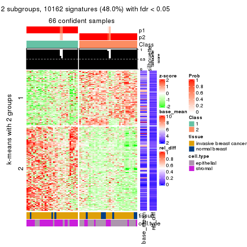
get_signatures(res, k = 3)
get_signatures(res, k = 4)
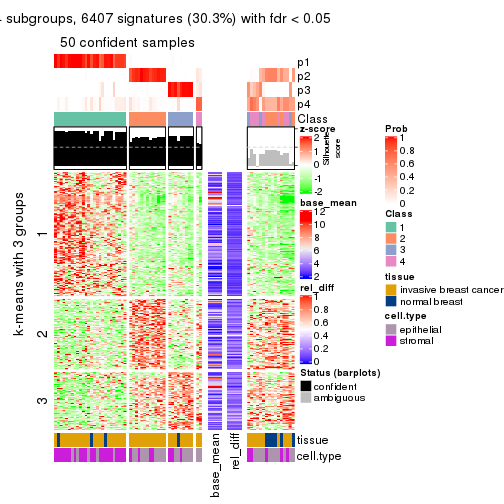
get_signatures(res, k = 5)
get_signatures(res, k = 6)
Signature heatmaps where rows are not scaled:
get_signatures(res, k = 2, scale_rows = FALSE)
get_signatures(res, k = 3, scale_rows = FALSE)
get_signatures(res, k = 4, scale_rows = FALSE)
get_signatures(res, k = 5, scale_rows = FALSE)
get_signatures(res, k = 6, scale_rows = FALSE)

Compare the overlap of signatures from different k:
compare_signatures(res)
get_signature() returns a data frame invisibly. TO get the list of signatures, the function
call should be assigned to a variable explicitly. In following code, if plot argument is set
to FALSE, no heatmap is plotted while only the differential analysis is performed.
# code only for demonstration
tb = get_signature(res, k = ..., plot = FALSE)
An example of the output of tb is:
#> which_row fdr mean_1 mean_2 scaled_mean_1 scaled_mean_2 km
#> 1 38 0.042760348 8.373488 9.131774 -0.5533452 0.5164555 1
#> 2 40 0.018707592 7.106213 8.469186 -0.6173731 0.5762149 1
#> 3 55 0.019134737 10.221463 11.207825 -0.6159697 0.5749050 1
#> 4 59 0.006059896 5.921854 7.869574 -0.6899429 0.6439467 1
#> 5 60 0.018055526 8.928898 10.211722 -0.6204761 0.5791110 1
#> 6 98 0.009384629 15.714769 14.887706 0.6635654 -0.6193277 2
...
The columns in tb are:
which_row: row indices corresponding to the input matrix.fdr: FDR for the differential test. mean_x: The mean value in group x.scaled_mean_x: The mean value in group x after rows are scaled.km: Row groups if k-means clustering is applied to rows.UMAP plot which shows how samples are separated.
dimension_reduction(res, k = 2, method = "UMAP")
dimension_reduction(res, k = 3, method = "UMAP")
dimension_reduction(res, k = 4, method = "UMAP")
dimension_reduction(res, k = 5, method = "UMAP")
dimension_reduction(res, k = 6, method = "UMAP")
Following heatmap shows how subgroups are split when increasing k:
collect_classes(res)
Test correlation between subgroups and known annotations. If the known annotation is numeric, one-way ANOVA test is applied, and if the known annotation is discrete, chi-squared contingency table test is applied.
test_to_known_factors(res)
#> n tissue(p) cell.type(p) k
#> CV:skmeans 66 4.10e-01 9.02e-06 2
#> CV:skmeans 66 1.70e-01 2.96e-04 3
#> CV:skmeans 50 6.01e-01 2.58e-03 4
#> CV:skmeans 57 2.25e-07 8.91e-03 5
#> CV:skmeans 47 5.23e-06 2.16e-02 6
If matrix rows can be associated to genes, consider to use functional_enrichment(res,
...) to perform function enrichment for the signature genes. See this vignette for more detailed explanations.
The object with results only for a single top-value method and a single partition method can be extracted as:
res = res_list["CV", "pam"]
# you can also extract it by
# res = res_list["CV:pam"]
A summary of res and all the functions that can be applied to it:
res
#> A 'ConsensusPartition' object with k = 2, 3, 4, 5, 6.
#> On a matrix with 21163 rows and 66 columns.
#> Top rows (1000, 2000, 3000, 4000, 5000) are extracted by 'CV' method.
#> Subgroups are detected by 'pam' method.
#> Performed in total 1250 partitions by row resampling.
#> Best k for subgroups seems to be 5.
#>
#> Following methods can be applied to this 'ConsensusPartition' object:
#> [1] "cola_report" "collect_classes" "collect_plots"
#> [4] "collect_stats" "colnames" "compare_signatures"
#> [7] "consensus_heatmap" "dimension_reduction" "functional_enrichment"
#> [10] "get_anno_col" "get_anno" "get_classes"
#> [13] "get_consensus" "get_matrix" "get_membership"
#> [16] "get_param" "get_signatures" "get_stats"
#> [19] "is_best_k" "is_stable_k" "membership_heatmap"
#> [22] "ncol" "nrow" "plot_ecdf"
#> [25] "rownames" "select_partition_number" "show"
#> [28] "suggest_best_k" "test_to_known_factors"
collect_plots() function collects all the plots made from res for all k (number of partitions)
into one single page to provide an easy and fast comparison between different k.
collect_plots(res)
The plots are:
k and the heatmap of
predicted classes for each k.k.k.k.All the plots in panels can be made by individual functions and they are plotted later in this section.
select_partition_number() produces several plots showing different
statistics for choosing “optimized” k. There are following statistics:
k;k, the area increased is defined as \(A_k - A_{k-1}\).The detailed explanations of these statistics can be found in the cola vignette.
Generally speaking, lower PAC score, higher mean silhouette score or higher
concordance corresponds to better partition. Rand index and Jaccard index
measure how similar the current partition is compared to partition with k-1.
If they are too similar, we won't accept k is better than k-1.
select_partition_number(res)
The numeric values for all these statistics can be obtained by get_stats().
get_stats(res)
#> k 1-PAC mean_silhouette concordance area_increased Rand Jaccard
#> 2 2 0.319 0.724 0.853 0.4784 0.504 0.504
#> 3 3 0.707 0.747 0.888 0.3921 0.709 0.483
#> 4 4 0.711 0.747 0.860 0.1168 0.824 0.532
#> 5 5 0.874 0.811 0.923 0.0567 0.937 0.755
#> 6 6 0.857 0.769 0.909 0.0164 0.980 0.906
suggest_best_k() suggests the best \(k\) based on these statistics. The rules are as follows:
suggest_best_k(res)
#> [1] 5
Following shows the table of the partitions (You need to click the show/hide
code output link to see it). The membership matrix (columns with name p*)
is inferred by
clue::cl_consensus()
function with the SE method. Basically the value in the membership matrix
represents the probability to belong to a certain group. The finall class
label for an item is determined with the group with highest probability it
belongs to.
In get_classes() function, the entropy is calculated from the membership
matrix and the silhouette score is calculated from the consensus matrix.
cbind(get_classes(res, k = 2), get_membership(res, k = 2))
#> class entropy silhouette p1 p2
#> GSM272727 2 0.1843 0.763 0.028 0.972
#> GSM272729 2 0.9661 0.589 0.392 0.608
#> GSM272731 2 0.0000 0.762 0.000 1.000
#> GSM272733 2 0.0000 0.762 0.000 1.000
#> GSM272735 2 0.0000 0.762 0.000 1.000
#> GSM272728 2 0.0000 0.762 0.000 1.000
#> GSM272730 1 0.0000 0.899 1.000 0.000
#> GSM272732 2 0.8144 0.562 0.252 0.748
#> GSM272734 2 0.9170 0.444 0.332 0.668
#> GSM272736 2 0.0000 0.762 0.000 1.000
#> GSM272671 2 0.7139 0.769 0.196 0.804
#> GSM272673 2 0.6531 0.775 0.168 0.832
#> GSM272675 2 0.5629 0.780 0.132 0.868
#> GSM272677 2 0.0000 0.762 0.000 1.000
#> GSM272679 2 0.6887 0.772 0.184 0.816
#> GSM272681 2 0.2423 0.772 0.040 0.960
#> GSM272683 2 0.9993 0.383 0.484 0.516
#> GSM272685 2 0.6438 0.779 0.164 0.836
#> GSM272687 1 0.0000 0.899 1.000 0.000
#> GSM272689 2 0.0000 0.762 0.000 1.000
#> GSM272691 2 0.0000 0.762 0.000 1.000
#> GSM272693 1 0.4815 0.812 0.896 0.104
#> GSM272695 2 0.8763 0.694 0.296 0.704
#> GSM272697 2 0.6438 0.775 0.164 0.836
#> GSM272699 2 0.7056 0.771 0.192 0.808
#> GSM272701 2 0.9427 0.626 0.360 0.640
#> GSM272703 2 0.9552 0.604 0.376 0.624
#> GSM272705 2 0.9881 0.408 0.436 0.564
#> GSM272707 1 0.1184 0.898 0.984 0.016
#> GSM272709 2 0.9635 0.585 0.388 0.612
#> GSM272711 2 0.6531 0.775 0.168 0.832
#> GSM272713 1 0.0376 0.900 0.996 0.004
#> GSM272715 1 0.9358 0.186 0.648 0.352
#> GSM272717 2 0.7056 0.771 0.192 0.808
#> GSM272719 2 0.7056 0.771 0.192 0.808
#> GSM272721 1 0.1843 0.890 0.972 0.028
#> GSM272723 2 0.9635 0.585 0.388 0.612
#> GSM272725 1 0.0000 0.899 1.000 0.000
#> GSM272672 2 0.9977 0.392 0.472 0.528
#> GSM272674 1 0.2423 0.883 0.960 0.040
#> GSM272676 2 0.4161 0.779 0.084 0.916
#> GSM272678 2 0.0000 0.762 0.000 1.000
#> GSM272680 2 0.8661 0.690 0.288 0.712
#> GSM272682 1 0.8763 0.503 0.704 0.296
#> GSM272684 1 0.0376 0.900 0.996 0.004
#> GSM272686 1 0.5737 0.748 0.864 0.136
#> GSM272688 1 0.1184 0.898 0.984 0.016
#> GSM272690 2 0.9963 0.052 0.464 0.536
#> GSM272692 1 0.1184 0.898 0.984 0.016
#> GSM272694 1 0.1184 0.898 0.984 0.016
#> GSM272696 1 0.9358 0.242 0.648 0.352
#> GSM272698 2 0.9850 0.451 0.428 0.572
#> GSM272700 1 0.5408 0.809 0.876 0.124
#> GSM272702 1 0.0376 0.900 0.996 0.004
#> GSM272704 1 0.0000 0.899 1.000 0.000
#> GSM272706 1 0.0000 0.899 1.000 0.000
#> GSM272708 1 0.0376 0.900 0.996 0.004
#> GSM272710 1 0.1184 0.898 0.984 0.016
#> GSM272712 1 0.8499 0.538 0.724 0.276
#> GSM272714 1 0.0376 0.900 0.996 0.004
#> GSM272716 1 0.0000 0.899 1.000 0.000
#> GSM272718 2 0.1184 0.761 0.016 0.984
#> GSM272720 1 0.7219 0.717 0.800 0.200
#> GSM272722 2 0.9686 0.571 0.396 0.604
#> GSM272724 1 0.1414 0.887 0.980 0.020
#> GSM272726 1 0.1184 0.898 0.984 0.016
cbind(get_classes(res, k = 3), get_membership(res, k = 3))
#> class entropy silhouette p1 p2 p3
#> GSM272727 2 0.1860 0.80374 0.000 0.948 0.052
#> GSM272729 3 0.0237 0.92077 0.004 0.000 0.996
#> GSM272731 2 0.0000 0.82455 0.000 1.000 0.000
#> GSM272733 2 0.0000 0.82455 0.000 1.000 0.000
#> GSM272735 2 0.0000 0.82455 0.000 1.000 0.000
#> GSM272728 2 0.0000 0.82455 0.000 1.000 0.000
#> GSM272730 1 0.0000 0.88404 1.000 0.000 0.000
#> GSM272732 2 0.0000 0.82455 0.000 1.000 0.000
#> GSM272734 1 0.5926 0.51034 0.644 0.356 0.000
#> GSM272736 2 0.0000 0.82455 0.000 1.000 0.000
#> GSM272671 3 0.0000 0.92108 0.000 0.000 1.000
#> GSM272673 2 0.4750 0.73150 0.000 0.784 0.216
#> GSM272675 2 0.4555 0.74748 0.000 0.800 0.200
#> GSM272677 2 0.0000 0.82455 0.000 1.000 0.000
#> GSM272679 2 0.6140 0.48860 0.000 0.596 0.404
#> GSM272681 2 0.2066 0.81392 0.000 0.940 0.060
#> GSM272683 3 0.0000 0.92108 0.000 0.000 1.000
#> GSM272685 3 0.6280 -0.14256 0.000 0.460 0.540
#> GSM272687 3 0.0237 0.92077 0.004 0.000 0.996
#> GSM272689 2 0.0000 0.82455 0.000 1.000 0.000
#> GSM272691 2 0.0000 0.82455 0.000 1.000 0.000
#> GSM272693 1 0.0000 0.88404 1.000 0.000 0.000
#> GSM272695 3 0.0000 0.92108 0.000 0.000 1.000
#> GSM272697 2 0.6126 0.49345 0.000 0.600 0.400
#> GSM272699 3 0.0000 0.92108 0.000 0.000 1.000
#> GSM272701 3 0.0237 0.92077 0.004 0.000 0.996
#> GSM272703 3 0.0237 0.92077 0.004 0.000 0.996
#> GSM272705 2 0.6808 0.69758 0.184 0.732 0.084
#> GSM272707 1 0.0000 0.88404 1.000 0.000 0.000
#> GSM272709 3 0.0237 0.92077 0.004 0.000 0.996
#> GSM272711 2 0.4842 0.72513 0.000 0.776 0.224
#> GSM272713 1 0.0000 0.88404 1.000 0.000 0.000
#> GSM272715 1 0.5882 0.44835 0.652 0.000 0.348
#> GSM272717 3 0.0592 0.91050 0.000 0.012 0.988
#> GSM272719 2 0.6095 0.51260 0.000 0.608 0.392
#> GSM272721 1 0.0000 0.88404 1.000 0.000 0.000
#> GSM272723 3 0.0000 0.92108 0.000 0.000 1.000
#> GSM272725 1 0.3412 0.78739 0.876 0.000 0.124
#> GSM272672 1 0.9842 -0.18831 0.384 0.368 0.248
#> GSM272674 1 0.1989 0.85882 0.948 0.048 0.004
#> GSM272676 2 0.3619 0.78560 0.000 0.864 0.136
#> GSM272678 2 0.0237 0.82398 0.000 0.996 0.004
#> GSM272680 2 0.9698 0.34595 0.288 0.456 0.256
#> GSM272682 1 0.8054 0.30589 0.568 0.356 0.076
#> GSM272684 1 0.0000 0.88404 1.000 0.000 0.000
#> GSM272686 3 0.0000 0.92108 0.000 0.000 1.000
#> GSM272688 1 0.0000 0.88404 1.000 0.000 0.000
#> GSM272690 1 0.2590 0.84448 0.924 0.072 0.004
#> GSM272692 1 0.0000 0.88404 1.000 0.000 0.000
#> GSM272694 1 0.0000 0.88404 1.000 0.000 0.000
#> GSM272696 3 0.1031 0.90215 0.024 0.000 0.976
#> GSM272698 2 0.6490 0.43431 0.360 0.628 0.012
#> GSM272700 1 0.2400 0.84991 0.932 0.064 0.004
#> GSM272702 1 0.0000 0.88404 1.000 0.000 0.000
#> GSM272704 1 0.0000 0.88404 1.000 0.000 0.000
#> GSM272706 1 0.0000 0.88404 1.000 0.000 0.000
#> GSM272708 1 0.6952 0.04822 0.504 0.016 0.480
#> GSM272710 1 0.0000 0.88404 1.000 0.000 0.000
#> GSM272712 3 0.8190 0.00545 0.432 0.072 0.496
#> GSM272714 1 0.0000 0.88404 1.000 0.000 0.000
#> GSM272716 1 0.2796 0.81588 0.908 0.000 0.092
#> GSM272718 2 0.5988 0.44311 0.000 0.632 0.368
#> GSM272720 1 0.2496 0.84707 0.928 0.068 0.004
#> GSM272722 3 0.0237 0.92077 0.004 0.000 0.996
#> GSM272724 3 0.0000 0.92108 0.000 0.000 1.000
#> GSM272726 1 0.0000 0.88404 1.000 0.000 0.000
cbind(get_classes(res, k = 4), get_membership(res, k = 4))
#> class entropy silhouette p1 p2 p3 p4
#> GSM272727 2 0.0000 0.806 0.000 1.000 0.000 0.000
#> GSM272729 3 0.0000 0.912 0.000 0.000 1.000 0.000
#> GSM272731 2 0.0000 0.806 0.000 1.000 0.000 0.000
#> GSM272733 2 0.0000 0.806 0.000 1.000 0.000 0.000
#> GSM272735 2 0.0000 0.806 0.000 1.000 0.000 0.000
#> GSM272728 2 0.0000 0.806 0.000 1.000 0.000 0.000
#> GSM272730 1 0.0188 0.936 0.996 0.000 0.004 0.000
#> GSM272732 2 0.0000 0.806 0.000 1.000 0.000 0.000
#> GSM272734 4 0.7504 0.464 0.192 0.344 0.000 0.464
#> GSM272736 2 0.0000 0.806 0.000 1.000 0.000 0.000
#> GSM272671 3 0.0000 0.912 0.000 0.000 1.000 0.000
#> GSM272673 2 0.5923 0.134 0.000 0.580 0.044 0.376
#> GSM272675 4 0.0000 0.648 0.000 0.000 0.000 1.000
#> GSM272677 4 0.3764 0.711 0.000 0.216 0.000 0.784
#> GSM272679 4 0.7916 -0.289 0.000 0.324 0.320 0.356
#> GSM272681 4 0.3801 0.710 0.000 0.220 0.000 0.780
#> GSM272683 3 0.0000 0.912 0.000 0.000 1.000 0.000
#> GSM272685 3 0.7450 0.227 0.000 0.280 0.504 0.216
#> GSM272687 3 0.0336 0.910 0.008 0.000 0.992 0.000
#> GSM272689 2 0.2412 0.746 0.000 0.908 0.008 0.084
#> GSM272691 2 0.1474 0.773 0.000 0.948 0.000 0.052
#> GSM272693 1 0.0188 0.936 0.996 0.000 0.004 0.000
#> GSM272695 3 0.1302 0.884 0.000 0.000 0.956 0.044
#> GSM272697 4 0.3266 0.541 0.000 0.108 0.024 0.868
#> GSM272699 3 0.0000 0.912 0.000 0.000 1.000 0.000
#> GSM272701 3 0.0336 0.912 0.000 0.000 0.992 0.008
#> GSM272703 3 0.0336 0.912 0.000 0.000 0.992 0.008
#> GSM272705 2 0.6000 0.365 0.356 0.592 0.052 0.000
#> GSM272707 1 0.0000 0.938 1.000 0.000 0.000 0.000
#> GSM272709 3 0.0000 0.912 0.000 0.000 1.000 0.000
#> GSM272711 4 0.5900 0.620 0.000 0.260 0.076 0.664
#> GSM272713 1 0.0336 0.933 0.992 0.000 0.008 0.000
#> GSM272715 1 0.3400 0.754 0.820 0.000 0.180 0.000
#> GSM272717 3 0.4072 0.709 0.000 0.000 0.748 0.252
#> GSM272719 2 0.6306 0.262 0.000 0.544 0.392 0.064
#> GSM272721 1 0.0000 0.938 1.000 0.000 0.000 0.000
#> GSM272723 3 0.0336 0.912 0.000 0.000 0.992 0.008
#> GSM272725 1 0.3356 0.737 0.824 0.000 0.176 0.000
#> GSM272672 1 0.7590 0.056 0.472 0.344 0.180 0.004
#> GSM272674 4 0.4697 0.554 0.356 0.000 0.000 0.644
#> GSM272676 4 0.3688 0.714 0.000 0.208 0.000 0.792
#> GSM272678 4 0.3764 0.711 0.000 0.216 0.000 0.784
#> GSM272680 4 0.5680 0.754 0.112 0.124 0.016 0.748
#> GSM272682 4 0.5553 0.748 0.176 0.100 0.000 0.724
#> GSM272684 1 0.0188 0.936 0.996 0.000 0.004 0.000
#> GSM272686 3 0.0000 0.912 0.000 0.000 1.000 0.000
#> GSM272688 1 0.0000 0.938 1.000 0.000 0.000 0.000
#> GSM272690 4 0.5582 0.750 0.168 0.108 0.000 0.724
#> GSM272692 1 0.0000 0.938 1.000 0.000 0.000 0.000
#> GSM272694 1 0.0000 0.938 1.000 0.000 0.000 0.000
#> GSM272696 3 0.0469 0.908 0.012 0.000 0.988 0.000
#> GSM272698 4 0.5288 0.736 0.068 0.200 0.000 0.732
#> GSM272700 4 0.5489 0.706 0.240 0.060 0.000 0.700
#> GSM272702 1 0.0000 0.938 1.000 0.000 0.000 0.000
#> GSM272704 1 0.0000 0.938 1.000 0.000 0.000 0.000
#> GSM272706 1 0.0000 0.938 1.000 0.000 0.000 0.000
#> GSM272708 3 0.7483 0.176 0.288 0.000 0.496 0.216
#> GSM272710 1 0.0000 0.938 1.000 0.000 0.000 0.000
#> GSM272712 4 0.5853 0.746 0.180 0.096 0.008 0.716
#> GSM272714 1 0.0000 0.938 1.000 0.000 0.000 0.000
#> GSM272716 1 0.1557 0.891 0.944 0.000 0.056 0.000
#> GSM272718 2 0.7110 0.451 0.000 0.564 0.200 0.236
#> GSM272720 4 0.5536 0.746 0.180 0.096 0.000 0.724
#> GSM272722 3 0.0336 0.912 0.000 0.000 0.992 0.008
#> GSM272724 3 0.0336 0.910 0.008 0.000 0.992 0.000
#> GSM272726 1 0.0000 0.938 1.000 0.000 0.000 0.000
cbind(get_classes(res, k = 5), get_membership(res, k = 5))
#> class entropy silhouette p1 p2 p3 p4 p5
#> GSM272727 2 0.0000 0.8390 0.000 1.000 0.000 0.000 0.000
#> GSM272729 3 0.0794 0.9031 0.000 0.000 0.972 0.000 0.028
#> GSM272731 2 0.0000 0.8390 0.000 1.000 0.000 0.000 0.000
#> GSM272733 2 0.0000 0.8390 0.000 1.000 0.000 0.000 0.000
#> GSM272735 2 0.0000 0.8390 0.000 1.000 0.000 0.000 0.000
#> GSM272728 2 0.0000 0.8390 0.000 1.000 0.000 0.000 0.000
#> GSM272730 1 0.0609 0.9436 0.980 0.000 0.000 0.000 0.020
#> GSM272732 2 0.0000 0.8390 0.000 1.000 0.000 0.000 0.000
#> GSM272734 4 0.5811 0.4793 0.140 0.264 0.000 0.596 0.000
#> GSM272736 2 0.0000 0.8390 0.000 1.000 0.000 0.000 0.000
#> GSM272671 3 0.0794 0.9031 0.000 0.000 0.972 0.000 0.028
#> GSM272673 2 0.5352 0.0805 0.000 0.480 0.052 0.468 0.000
#> GSM272675 5 0.2127 0.7686 0.000 0.000 0.000 0.108 0.892
#> GSM272677 4 0.0000 0.9077 0.000 0.000 0.000 1.000 0.000
#> GSM272679 5 0.6815 0.4791 0.000 0.192 0.208 0.040 0.560
#> GSM272681 4 0.0000 0.9077 0.000 0.000 0.000 1.000 0.000
#> GSM272683 3 0.0794 0.9031 0.000 0.000 0.972 0.000 0.028
#> GSM272685 5 0.0000 0.8023 0.000 0.000 0.000 0.000 1.000
#> GSM272687 3 0.0000 0.9142 0.000 0.000 1.000 0.000 0.000
#> GSM272689 5 0.4307 -0.0178 0.000 0.496 0.000 0.000 0.504
#> GSM272691 2 0.1043 0.8062 0.000 0.960 0.000 0.040 0.000
#> GSM272693 1 0.0290 0.9499 0.992 0.000 0.000 0.000 0.008
#> GSM272695 3 0.0703 0.8978 0.000 0.000 0.976 0.024 0.000
#> GSM272697 5 0.1043 0.8042 0.000 0.000 0.000 0.040 0.960
#> GSM272699 3 0.0000 0.9142 0.000 0.000 1.000 0.000 0.000
#> GSM272701 3 0.0000 0.9142 0.000 0.000 1.000 0.000 0.000
#> GSM272703 3 0.0000 0.9142 0.000 0.000 1.000 0.000 0.000
#> GSM272705 2 0.5622 0.1586 0.428 0.516 0.028 0.000 0.028
#> GSM272707 1 0.0000 0.9521 1.000 0.000 0.000 0.000 0.000
#> GSM272709 3 0.0000 0.9142 0.000 0.000 1.000 0.000 0.000
#> GSM272711 4 0.3704 0.7520 0.000 0.088 0.092 0.820 0.000
#> GSM272713 1 0.0703 0.9402 0.976 0.000 0.000 0.000 0.024
#> GSM272715 1 0.1493 0.9194 0.948 0.000 0.024 0.000 0.028
#> GSM272717 5 0.0898 0.8046 0.000 0.000 0.020 0.008 0.972
#> GSM272719 3 0.5112 0.0125 0.000 0.468 0.496 0.036 0.000
#> GSM272721 1 0.0000 0.9521 1.000 0.000 0.000 0.000 0.000
#> GSM272723 3 0.0000 0.9142 0.000 0.000 1.000 0.000 0.000
#> GSM272725 1 0.3003 0.7287 0.812 0.000 0.188 0.000 0.000
#> GSM272672 1 0.7023 0.3463 0.564 0.244 0.128 0.008 0.056
#> GSM272674 4 0.3177 0.7277 0.208 0.000 0.000 0.792 0.000
#> GSM272676 4 0.0000 0.9077 0.000 0.000 0.000 1.000 0.000
#> GSM272678 4 0.0000 0.9077 0.000 0.000 0.000 1.000 0.000
#> GSM272680 4 0.0579 0.9104 0.008 0.000 0.008 0.984 0.000
#> GSM272682 4 0.0880 0.9128 0.032 0.000 0.000 0.968 0.000
#> GSM272684 1 0.0290 0.9493 0.992 0.000 0.000 0.000 0.008
#> GSM272686 3 0.0794 0.9031 0.000 0.000 0.972 0.000 0.028
#> GSM272688 1 0.0000 0.9521 1.000 0.000 0.000 0.000 0.000
#> GSM272690 4 0.0880 0.9128 0.032 0.000 0.000 0.968 0.000
#> GSM272692 1 0.0000 0.9521 1.000 0.000 0.000 0.000 0.000
#> GSM272694 1 0.0000 0.9521 1.000 0.000 0.000 0.000 0.000
#> GSM272696 3 0.0000 0.9142 0.000 0.000 1.000 0.000 0.000
#> GSM272698 4 0.0703 0.9132 0.024 0.000 0.000 0.976 0.000
#> GSM272700 4 0.1410 0.8973 0.060 0.000 0.000 0.940 0.000
#> GSM272702 1 0.0000 0.9521 1.000 0.000 0.000 0.000 0.000
#> GSM272704 1 0.0000 0.9521 1.000 0.000 0.000 0.000 0.000
#> GSM272706 1 0.0162 0.9504 0.996 0.000 0.004 0.000 0.000
#> GSM272708 3 0.6158 0.2598 0.156 0.000 0.528 0.316 0.000
#> GSM272710 1 0.0000 0.9521 1.000 0.000 0.000 0.000 0.000
#> GSM272712 4 0.1357 0.9049 0.048 0.000 0.004 0.948 0.000
#> GSM272714 1 0.0000 0.9521 1.000 0.000 0.000 0.000 0.000
#> GSM272716 1 0.1493 0.9194 0.948 0.000 0.024 0.000 0.028
#> GSM272718 5 0.0290 0.8061 0.000 0.000 0.000 0.008 0.992
#> GSM272720 4 0.0880 0.9128 0.032 0.000 0.000 0.968 0.000
#> GSM272722 3 0.0000 0.9142 0.000 0.000 1.000 0.000 0.000
#> GSM272724 3 0.0000 0.9142 0.000 0.000 1.000 0.000 0.000
#> GSM272726 1 0.0000 0.9521 1.000 0.000 0.000 0.000 0.000
cbind(get_classes(res, k = 6), get_membership(res, k = 6))
#> class entropy silhouette p1 p2 p3 p4 p5 p6
#> GSM272727 2 0.0000 0.7784 0.000 1.000 0.000 0.000 0.000 0.000
#> GSM272729 3 0.1124 0.9141 0.000 0.000 0.956 0.000 0.008 0.036
#> GSM272731 2 0.0000 0.7784 0.000 1.000 0.000 0.000 0.000 0.000
#> GSM272733 2 0.0000 0.7784 0.000 1.000 0.000 0.000 0.000 0.000
#> GSM272735 2 0.0000 0.7784 0.000 1.000 0.000 0.000 0.000 0.000
#> GSM272728 2 0.0000 0.7784 0.000 1.000 0.000 0.000 0.000 0.000
#> GSM272730 1 0.0972 0.9166 0.964 0.000 0.000 0.000 0.008 0.028
#> GSM272732 2 0.0000 0.7784 0.000 1.000 0.000 0.000 0.000 0.000
#> GSM272734 4 0.5187 0.4233 0.136 0.264 0.000 0.600 0.000 0.000
#> GSM272736 2 0.0000 0.7784 0.000 1.000 0.000 0.000 0.000 0.000
#> GSM272671 3 0.1124 0.9141 0.000 0.000 0.956 0.000 0.008 0.036
#> GSM272673 2 0.5918 0.2118 0.000 0.480 0.028 0.384 0.000 0.108
#> GSM272675 5 0.2954 0.6763 0.000 0.000 0.000 0.048 0.844 0.108
#> GSM272677 4 0.0000 0.8934 0.000 0.000 0.000 1.000 0.000 0.000
#> GSM272679 5 0.6878 0.4490 0.000 0.192 0.108 0.032 0.560 0.108
#> GSM272681 4 0.1910 0.8179 0.000 0.000 0.000 0.892 0.000 0.108
#> GSM272683 3 0.1124 0.9141 0.000 0.000 0.956 0.000 0.008 0.036
#> GSM272685 5 0.0865 0.6984 0.000 0.000 0.000 0.000 0.964 0.036
#> GSM272687 3 0.0000 0.9334 0.000 0.000 1.000 0.000 0.000 0.000
#> GSM272689 5 0.3999 -0.0302 0.000 0.496 0.000 0.000 0.500 0.004
#> GSM272691 2 0.2147 0.7052 0.000 0.896 0.000 0.020 0.000 0.084
#> GSM272693 1 0.0508 0.9272 0.984 0.000 0.000 0.000 0.004 0.012
#> GSM272695 3 0.2358 0.8081 0.000 0.000 0.876 0.016 0.000 0.108
#> GSM272697 5 0.1779 0.7148 0.000 0.000 0.000 0.016 0.920 0.064
#> GSM272699 3 0.0000 0.9334 0.000 0.000 1.000 0.000 0.000 0.000
#> GSM272701 3 0.0000 0.9334 0.000 0.000 1.000 0.000 0.000 0.000
#> GSM272703 3 0.0000 0.9334 0.000 0.000 1.000 0.000 0.000 0.000
#> GSM272705 2 0.5263 0.0650 0.424 0.512 0.020 0.000 0.008 0.036
#> GSM272707 1 0.0000 0.9287 1.000 0.000 0.000 0.000 0.000 0.000
#> GSM272709 3 0.0000 0.9334 0.000 0.000 1.000 0.000 0.000 0.000
#> GSM272711 4 0.4402 0.6876 0.000 0.088 0.040 0.764 0.000 0.108
#> GSM272713 1 0.0935 0.9187 0.964 0.000 0.000 0.000 0.004 0.032
#> GSM272715 1 0.1577 0.8973 0.940 0.000 0.016 0.000 0.008 0.036
#> GSM272717 5 0.0260 0.7173 0.000 0.000 0.000 0.008 0.992 0.000
#> GSM272719 2 0.5931 0.2031 0.000 0.468 0.396 0.028 0.000 0.108
#> GSM272721 1 0.0000 0.9287 1.000 0.000 0.000 0.000 0.000 0.000
#> GSM272723 3 0.0000 0.9334 0.000 0.000 1.000 0.000 0.000 0.000
#> GSM272725 1 0.2631 0.6647 0.820 0.000 0.180 0.000 0.000 0.000
#> GSM272672 1 0.6651 0.2009 0.560 0.244 0.120 0.008 0.032 0.036
#> GSM272674 4 0.2823 0.6772 0.204 0.000 0.000 0.796 0.000 0.000
#> GSM272676 4 0.0000 0.8934 0.000 0.000 0.000 1.000 0.000 0.000
#> GSM272678 4 0.0000 0.8934 0.000 0.000 0.000 1.000 0.000 0.000
#> GSM272680 4 0.0405 0.8941 0.004 0.000 0.008 0.988 0.000 0.000
#> GSM272682 4 0.0632 0.8958 0.024 0.000 0.000 0.976 0.000 0.000
#> GSM272684 1 0.0632 0.9258 0.976 0.000 0.000 0.000 0.000 0.024
#> GSM272686 3 0.1124 0.9141 0.000 0.000 0.956 0.000 0.008 0.036
#> GSM272688 1 0.0458 0.9270 0.984 0.000 0.000 0.000 0.000 0.016
#> GSM272690 4 0.0632 0.8958 0.024 0.000 0.000 0.976 0.000 0.000
#> GSM272692 6 0.2300 0.0000 0.144 0.000 0.000 0.000 0.000 0.856
#> GSM272694 1 0.0458 0.9270 0.984 0.000 0.000 0.000 0.000 0.016
#> GSM272696 3 0.0000 0.9334 0.000 0.000 1.000 0.000 0.000 0.000
#> GSM272698 4 0.0458 0.8964 0.016 0.000 0.000 0.984 0.000 0.000
#> GSM272700 4 0.1204 0.8787 0.056 0.000 0.000 0.944 0.000 0.000
#> GSM272702 1 0.0000 0.9287 1.000 0.000 0.000 0.000 0.000 0.000
#> GSM272704 1 0.0146 0.9280 0.996 0.000 0.004 0.000 0.000 0.000
#> GSM272706 1 0.0260 0.9263 0.992 0.000 0.008 0.000 0.000 0.000
#> GSM272708 3 0.5547 0.1803 0.160 0.000 0.528 0.312 0.000 0.000
#> GSM272710 1 0.0458 0.9270 0.984 0.000 0.000 0.000 0.000 0.016
#> GSM272712 4 0.1219 0.8831 0.048 0.000 0.004 0.948 0.000 0.000
#> GSM272714 1 0.0260 0.9296 0.992 0.000 0.000 0.000 0.000 0.008
#> GSM272716 1 0.1483 0.9009 0.944 0.000 0.012 0.000 0.008 0.036
#> GSM272718 5 0.0260 0.7173 0.000 0.000 0.000 0.008 0.992 0.000
#> GSM272720 4 0.0632 0.8958 0.024 0.000 0.000 0.976 0.000 0.000
#> GSM272722 3 0.0000 0.9334 0.000 0.000 1.000 0.000 0.000 0.000
#> GSM272724 3 0.0000 0.9334 0.000 0.000 1.000 0.000 0.000 0.000
#> GSM272726 1 0.0000 0.9287 1.000 0.000 0.000 0.000 0.000 0.000
Heatmaps for the consensus matrix. It visualizes the probability of two samples to be in a same group.
consensus_heatmap(res, k = 2)
consensus_heatmap(res, k = 3)
consensus_heatmap(res, k = 4)
consensus_heatmap(res, k = 5)
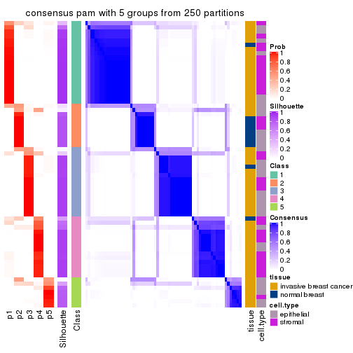
consensus_heatmap(res, k = 6)
Heatmaps for the membership of samples in all partitions to see how consistent they are:
membership_heatmap(res, k = 2)
membership_heatmap(res, k = 3)
membership_heatmap(res, k = 4)
membership_heatmap(res, k = 5)
membership_heatmap(res, k = 6)
As soon as we have had the classes for columns, we can look for signatures which are significantly different between classes which can be candidate marks for certain classes. Following are the heatmaps for signatures.
Signature heatmaps where rows are scaled:
get_signatures(res, k = 2)
get_signatures(res, k = 3)
get_signatures(res, k = 4)
get_signatures(res, k = 5)
get_signatures(res, k = 6)
Signature heatmaps where rows are not scaled:
get_signatures(res, k = 2, scale_rows = FALSE)
get_signatures(res, k = 3, scale_rows = FALSE)
get_signatures(res, k = 4, scale_rows = FALSE)
get_signatures(res, k = 5, scale_rows = FALSE)
get_signatures(res, k = 6, scale_rows = FALSE)
Compare the overlap of signatures from different k:
compare_signatures(res)
get_signature() returns a data frame invisibly. TO get the list of signatures, the function
call should be assigned to a variable explicitly. In following code, if plot argument is set
to FALSE, no heatmap is plotted while only the differential analysis is performed.
# code only for demonstration
tb = get_signature(res, k = ..., plot = FALSE)
An example of the output of tb is:
#> which_row fdr mean_1 mean_2 scaled_mean_1 scaled_mean_2 km
#> 1 38 0.042760348 8.373488 9.131774 -0.5533452 0.5164555 1
#> 2 40 0.018707592 7.106213 8.469186 -0.6173731 0.5762149 1
#> 3 55 0.019134737 10.221463 11.207825 -0.6159697 0.5749050 1
#> 4 59 0.006059896 5.921854 7.869574 -0.6899429 0.6439467 1
#> 5 60 0.018055526 8.928898 10.211722 -0.6204761 0.5791110 1
#> 6 98 0.009384629 15.714769 14.887706 0.6635654 -0.6193277 2
...
The columns in tb are:
which_row: row indices corresponding to the input matrix.fdr: FDR for the differential test. mean_x: The mean value in group x.scaled_mean_x: The mean value in group x after rows are scaled.km: Row groups if k-means clustering is applied to rows.UMAP plot which shows how samples are separated.
dimension_reduction(res, k = 2, method = "UMAP")
dimension_reduction(res, k = 3, method = "UMAP")
dimension_reduction(res, k = 4, method = "UMAP")
dimension_reduction(res, k = 5, method = "UMAP")
dimension_reduction(res, k = 6, method = "UMAP")
Following heatmap shows how subgroups are split when increasing k:
collect_classes(res)
Test correlation between subgroups and known annotations. If the known annotation is numeric, one-way ANOVA test is applied, and if the known annotation is discrete, chi-squared contingency table test is applied.
test_to_known_factors(res)
#> n tissue(p) cell.type(p) k
#> CV:pam 58 6.46e-02 0.000241 2
#> CV:pam 55 2.08e-02 0.001331 3
#> CV:pam 57 7.80e-07 0.047732 4
#> CV:pam 58 1.77e-07 0.031656 5
#> CV:pam 57 2.44e-07 0.038828 6
If matrix rows can be associated to genes, consider to use functional_enrichment(res,
...) to perform function enrichment for the signature genes. See this vignette for more detailed explanations.
The object with results only for a single top-value method and a single partition method can be extracted as:
res = res_list["CV", "mclust"]
# you can also extract it by
# res = res_list["CV:mclust"]
A summary of res and all the functions that can be applied to it:
res
#> A 'ConsensusPartition' object with k = 2, 3, 4, 5, 6.
#> On a matrix with 21163 rows and 66 columns.
#> Top rows (1000, 2000, 3000, 4000, 5000) are extracted by 'CV' method.
#> Subgroups are detected by 'mclust' method.
#> Performed in total 1250 partitions by row resampling.
#> Best k for subgroups seems to be 6.
#>
#> Following methods can be applied to this 'ConsensusPartition' object:
#> [1] "cola_report" "collect_classes" "collect_plots"
#> [4] "collect_stats" "colnames" "compare_signatures"
#> [7] "consensus_heatmap" "dimension_reduction" "functional_enrichment"
#> [10] "get_anno_col" "get_anno" "get_classes"
#> [13] "get_consensus" "get_matrix" "get_membership"
#> [16] "get_param" "get_signatures" "get_stats"
#> [19] "is_best_k" "is_stable_k" "membership_heatmap"
#> [22] "ncol" "nrow" "plot_ecdf"
#> [25] "rownames" "select_partition_number" "show"
#> [28] "suggest_best_k" "test_to_known_factors"
collect_plots() function collects all the plots made from res for all k (number of partitions)
into one single page to provide an easy and fast comparison between different k.
collect_plots(res)
The plots are:
k and the heatmap of
predicted classes for each k.k.k.k.All the plots in panels can be made by individual functions and they are plotted later in this section.
select_partition_number() produces several plots showing different
statistics for choosing “optimized” k. There are following statistics:
k;k, the area increased is defined as \(A_k - A_{k-1}\).The detailed explanations of these statistics can be found in the cola vignette.
Generally speaking, lower PAC score, higher mean silhouette score or higher
concordance corresponds to better partition. Rand index and Jaccard index
measure how similar the current partition is compared to partition with k-1.
If they are too similar, we won't accept k is better than k-1.
select_partition_number(res)
The numeric values for all these statistics can be obtained by get_stats().
get_stats(res)
#> k 1-PAC mean_silhouette concordance area_increased Rand Jaccard
#> 2 2 0.461 0.640 0.823 0.4839 0.530 0.530
#> 3 3 0.736 0.724 0.832 0.3656 0.744 0.542
#> 4 4 0.987 0.931 0.956 0.1056 0.877 0.659
#> 5 5 0.786 0.794 0.811 0.0695 0.882 0.601
#> 6 6 0.965 0.898 0.958 0.0673 0.937 0.710
suggest_best_k() suggests the best \(k\) based on these statistics. The rules are as follows:
suggest_best_k(res)
#> [1] 6
#> attr(,"optional")
#> [1] 4
There is also optional best \(k\) = 4 that is worth to check.
Following shows the table of the partitions (You need to click the show/hide
code output link to see it). The membership matrix (columns with name p*)
is inferred by
clue::cl_consensus()
function with the SE method. Basically the value in the membership matrix
represents the probability to belong to a certain group. The finall class
label for an item is determined with the group with highest probability it
belongs to.
In get_classes() function, the entropy is calculated from the membership
matrix and the silhouette score is calculated from the consensus matrix.
cbind(get_classes(res, k = 2), get_membership(res, k = 2))
#> class entropy silhouette p1 p2
#> GSM272727 2 0.0000 0.714 0.000 1.000
#> GSM272729 2 0.9580 0.562 0.380 0.620
#> GSM272731 2 0.0000 0.714 0.000 1.000
#> GSM272733 2 0.0000 0.714 0.000 1.000
#> GSM272735 2 0.0000 0.714 0.000 1.000
#> GSM272728 2 0.0000 0.714 0.000 1.000
#> GSM272730 1 0.2948 0.776 0.948 0.052
#> GSM272732 2 0.9754 -0.152 0.408 0.592
#> GSM272734 1 0.9881 0.437 0.564 0.436
#> GSM272736 2 0.0000 0.714 0.000 1.000
#> GSM272671 2 0.9580 0.562 0.380 0.620
#> GSM272673 2 0.2778 0.721 0.048 0.952
#> GSM272675 2 0.2778 0.721 0.048 0.952
#> GSM272677 2 0.2778 0.721 0.048 0.952
#> GSM272679 2 0.2778 0.721 0.048 0.952
#> GSM272681 2 0.2778 0.721 0.048 0.952
#> GSM272683 2 0.9580 0.562 0.380 0.620
#> GSM272685 2 0.9491 0.572 0.368 0.632
#> GSM272687 2 0.9850 0.557 0.428 0.572
#> GSM272689 2 0.0000 0.714 0.000 1.000
#> GSM272691 2 0.2778 0.721 0.048 0.952
#> GSM272693 1 0.1184 0.802 0.984 0.016
#> GSM272695 2 0.9795 0.566 0.416 0.584
#> GSM272697 2 0.2778 0.721 0.048 0.952
#> GSM272699 2 0.8081 0.653 0.248 0.752
#> GSM272701 2 0.9850 0.557 0.428 0.572
#> GSM272703 2 0.9850 0.557 0.428 0.572
#> GSM272705 2 0.9044 0.602 0.320 0.680
#> GSM272707 1 0.0376 0.805 0.996 0.004
#> GSM272709 2 0.9850 0.557 0.428 0.572
#> GSM272711 2 0.2778 0.721 0.048 0.952
#> GSM272713 1 0.0000 0.806 1.000 0.000
#> GSM272715 2 0.9580 0.562 0.380 0.620
#> GSM272717 2 0.0000 0.714 0.000 1.000
#> GSM272719 2 0.2778 0.721 0.048 0.952
#> GSM272721 1 0.0000 0.806 1.000 0.000
#> GSM272723 2 0.9850 0.557 0.428 0.572
#> GSM272725 1 0.6048 0.637 0.852 0.148
#> GSM272672 2 0.9491 0.572 0.368 0.632
#> GSM272674 1 0.9608 0.465 0.616 0.384
#> GSM272676 2 0.2778 0.721 0.048 0.952
#> GSM272678 2 0.2778 0.721 0.048 0.952
#> GSM272680 2 0.2778 0.721 0.048 0.952
#> GSM272682 2 0.9963 -0.200 0.464 0.536
#> GSM272684 1 0.0376 0.805 0.996 0.004
#> GSM272686 2 0.9580 0.562 0.380 0.620
#> GSM272688 1 0.0000 0.806 1.000 0.000
#> GSM272690 1 0.9732 0.460 0.596 0.404
#> GSM272692 1 0.3879 0.774 0.924 0.076
#> GSM272694 1 0.0000 0.806 1.000 0.000
#> GSM272696 2 0.9850 0.557 0.428 0.572
#> GSM272698 2 0.2778 0.721 0.048 0.952
#> GSM272700 1 0.9635 0.465 0.612 0.388
#> GSM272702 1 0.0000 0.806 1.000 0.000
#> GSM272704 1 0.0000 0.806 1.000 0.000
#> GSM272706 1 0.0938 0.802 0.988 0.012
#> GSM272708 1 0.6438 0.608 0.836 0.164
#> GSM272710 1 0.0000 0.806 1.000 0.000
#> GSM272712 1 0.9686 0.450 0.604 0.396
#> GSM272714 1 0.2043 0.789 0.968 0.032
#> GSM272716 1 0.7139 0.614 0.804 0.196
#> GSM272718 2 0.0000 0.714 0.000 1.000
#> GSM272720 1 0.9608 0.465 0.616 0.384
#> GSM272722 2 0.9850 0.557 0.428 0.572
#> GSM272724 2 0.9909 0.533 0.444 0.556
#> GSM272726 1 0.0000 0.806 1.000 0.000
cbind(get_classes(res, k = 3), get_membership(res, k = 3))
#> class entropy silhouette p1 p2 p3
#> GSM272727 2 0.3375 0.612 0.048 0.908 0.044
#> GSM272729 3 0.6008 0.674 0.004 0.332 0.664
#> GSM272731 2 0.1643 0.599 0.044 0.956 0.000
#> GSM272733 2 0.1643 0.599 0.044 0.956 0.000
#> GSM272735 2 0.1643 0.599 0.044 0.956 0.000
#> GSM272728 2 0.1643 0.599 0.044 0.956 0.000
#> GSM272730 1 0.4914 0.842 0.844 0.088 0.068
#> GSM272732 1 0.7388 0.410 0.600 0.356 0.044
#> GSM272734 1 0.1453 0.890 0.968 0.024 0.008
#> GSM272736 2 0.3267 0.613 0.044 0.912 0.044
#> GSM272671 3 0.6008 0.674 0.004 0.332 0.664
#> GSM272673 2 0.6045 0.740 0.000 0.620 0.380
#> GSM272675 2 0.6045 0.740 0.000 0.620 0.380
#> GSM272677 2 0.6045 0.740 0.000 0.620 0.380
#> GSM272679 2 0.6045 0.740 0.000 0.620 0.380
#> GSM272681 2 0.6045 0.740 0.000 0.620 0.380
#> GSM272683 3 0.6008 0.674 0.004 0.332 0.664
#> GSM272685 3 0.6081 0.660 0.004 0.344 0.652
#> GSM272687 3 0.0592 0.718 0.012 0.000 0.988
#> GSM272689 2 0.3267 0.613 0.044 0.912 0.044
#> GSM272691 2 0.6045 0.740 0.000 0.620 0.380
#> GSM272693 1 0.2879 0.904 0.924 0.024 0.052
#> GSM272695 3 0.3213 0.572 0.008 0.092 0.900
#> GSM272697 2 0.6045 0.740 0.000 0.620 0.380
#> GSM272699 2 0.6688 0.699 0.012 0.580 0.408
#> GSM272701 3 0.0592 0.718 0.012 0.000 0.988
#> GSM272703 3 0.0592 0.718 0.012 0.000 0.988
#> GSM272705 2 0.6647 -0.364 0.008 0.540 0.452
#> GSM272707 1 0.2066 0.907 0.940 0.000 0.060
#> GSM272709 3 0.0592 0.718 0.012 0.000 0.988
#> GSM272711 2 0.6045 0.740 0.000 0.620 0.380
#> GSM272713 1 0.1753 0.910 0.952 0.000 0.048
#> GSM272715 3 0.5810 0.671 0.000 0.336 0.664
#> GSM272717 2 0.2636 0.621 0.020 0.932 0.048
#> GSM272719 2 0.6045 0.740 0.000 0.620 0.380
#> GSM272721 1 0.1753 0.910 0.952 0.000 0.048
#> GSM272723 3 0.0592 0.718 0.012 0.000 0.988
#> GSM272725 3 0.5948 0.357 0.360 0.000 0.640
#> GSM272672 3 0.5810 0.671 0.000 0.336 0.664
#> GSM272674 1 0.2173 0.889 0.944 0.048 0.008
#> GSM272676 2 0.6045 0.740 0.000 0.620 0.380
#> GSM272678 2 0.6045 0.740 0.000 0.620 0.380
#> GSM272680 2 0.6264 0.737 0.004 0.616 0.380
#> GSM272682 1 0.5229 0.803 0.828 0.068 0.104
#> GSM272684 1 0.1753 0.910 0.952 0.000 0.048
#> GSM272686 3 0.6008 0.674 0.004 0.332 0.664
#> GSM272688 1 0.1753 0.910 0.952 0.000 0.048
#> GSM272690 1 0.1453 0.890 0.968 0.024 0.008
#> GSM272692 1 0.1620 0.895 0.964 0.024 0.012
#> GSM272694 1 0.1753 0.910 0.952 0.000 0.048
#> GSM272696 3 0.0592 0.718 0.012 0.000 0.988
#> GSM272698 2 0.6045 0.740 0.000 0.620 0.380
#> GSM272700 1 0.1453 0.890 0.968 0.024 0.008
#> GSM272702 1 0.1860 0.909 0.948 0.000 0.052
#> GSM272704 1 0.1860 0.909 0.948 0.000 0.052
#> GSM272706 1 0.1860 0.909 0.948 0.000 0.052
#> GSM272708 1 0.6307 0.208 0.512 0.000 0.488
#> GSM272710 1 0.1753 0.910 0.952 0.000 0.048
#> GSM272712 1 0.2056 0.886 0.952 0.024 0.024
#> GSM272714 1 0.1860 0.909 0.948 0.000 0.052
#> GSM272716 1 0.6541 0.693 0.732 0.056 0.212
#> GSM272718 2 0.3155 0.615 0.040 0.916 0.044
#> GSM272720 1 0.2173 0.889 0.944 0.048 0.008
#> GSM272722 3 0.0592 0.718 0.012 0.000 0.988
#> GSM272724 3 0.0592 0.718 0.012 0.000 0.988
#> GSM272726 1 0.1753 0.910 0.952 0.000 0.048
cbind(get_classes(res, k = 4), get_membership(res, k = 4))
#> class entropy silhouette p1 p2 p3 p4
#> GSM272727 4 0.0000 0.974 0.000 0.000 0.000 1.000
#> GSM272729 3 0.1610 0.925 0.016 0.000 0.952 0.032
#> GSM272731 4 0.0000 0.974 0.000 0.000 0.000 1.000
#> GSM272733 4 0.0000 0.974 0.000 0.000 0.000 1.000
#> GSM272735 4 0.0000 0.974 0.000 0.000 0.000 1.000
#> GSM272728 4 0.0000 0.974 0.000 0.000 0.000 1.000
#> GSM272730 1 0.1576 0.954 0.948 0.000 0.048 0.004
#> GSM272732 1 0.1938 0.932 0.936 0.000 0.012 0.052
#> GSM272734 1 0.1488 0.944 0.956 0.000 0.012 0.032
#> GSM272736 4 0.3172 0.811 0.000 0.160 0.000 0.840
#> GSM272671 3 0.1706 0.924 0.016 0.000 0.948 0.036
#> GSM272673 2 0.0000 0.994 0.000 1.000 0.000 0.000
#> GSM272675 2 0.0000 0.994 0.000 1.000 0.000 0.000
#> GSM272677 2 0.0000 0.994 0.000 1.000 0.000 0.000
#> GSM272679 2 0.0000 0.994 0.000 1.000 0.000 0.000
#> GSM272681 2 0.0000 0.994 0.000 1.000 0.000 0.000
#> GSM272683 3 0.1706 0.924 0.016 0.000 0.948 0.036
#> GSM272685 3 0.3806 0.817 0.020 0.000 0.824 0.156
#> GSM272687 3 0.0524 0.927 0.004 0.008 0.988 0.000
#> GSM272689 4 0.0188 0.973 0.000 0.004 0.000 0.996
#> GSM272691 2 0.0000 0.994 0.000 1.000 0.000 0.000
#> GSM272693 1 0.0707 0.953 0.980 0.000 0.020 0.000
#> GSM272695 2 0.1576 0.943 0.004 0.948 0.048 0.000
#> GSM272697 2 0.0000 0.994 0.000 1.000 0.000 0.000
#> GSM272699 3 0.3159 0.893 0.016 0.052 0.896 0.036
#> GSM272701 3 0.0524 0.927 0.004 0.008 0.988 0.000
#> GSM272703 3 0.0524 0.927 0.004 0.008 0.988 0.000
#> GSM272705 3 0.2174 0.914 0.020 0.000 0.928 0.052
#> GSM272707 1 0.1637 0.953 0.940 0.000 0.060 0.000
#> GSM272709 3 0.0524 0.927 0.004 0.008 0.988 0.000
#> GSM272711 2 0.0000 0.994 0.000 1.000 0.000 0.000
#> GSM272713 1 0.0921 0.956 0.972 0.000 0.028 0.000
#> GSM272715 3 0.1888 0.921 0.016 0.000 0.940 0.044
#> GSM272717 4 0.0592 0.967 0.000 0.016 0.000 0.984
#> GSM272719 2 0.0000 0.994 0.000 1.000 0.000 0.000
#> GSM272721 1 0.0921 0.956 0.972 0.000 0.028 0.000
#> GSM272723 3 0.0524 0.927 0.004 0.008 0.988 0.000
#> GSM272725 3 0.3172 0.791 0.160 0.000 0.840 0.000
#> GSM272672 3 0.2002 0.919 0.020 0.000 0.936 0.044
#> GSM272674 1 0.1640 0.944 0.956 0.020 0.012 0.012
#> GSM272676 2 0.0000 0.994 0.000 1.000 0.000 0.000
#> GSM272678 2 0.0000 0.994 0.000 1.000 0.000 0.000
#> GSM272680 2 0.0336 0.986 0.000 0.992 0.008 0.000
#> GSM272682 1 0.2365 0.920 0.920 0.064 0.012 0.004
#> GSM272684 1 0.1211 0.956 0.960 0.000 0.040 0.000
#> GSM272686 3 0.1610 0.925 0.016 0.000 0.952 0.032
#> GSM272688 1 0.0921 0.956 0.972 0.000 0.028 0.000
#> GSM272690 1 0.1488 0.944 0.956 0.000 0.012 0.032
#> GSM272692 1 0.1256 0.947 0.964 0.000 0.008 0.028
#> GSM272694 1 0.1118 0.956 0.964 0.000 0.036 0.000
#> GSM272696 3 0.0524 0.927 0.004 0.008 0.988 0.000
#> GSM272698 2 0.0336 0.986 0.000 0.992 0.008 0.000
#> GSM272700 1 0.1356 0.945 0.960 0.000 0.008 0.032
#> GSM272702 1 0.1302 0.956 0.956 0.000 0.044 0.000
#> GSM272704 1 0.1211 0.956 0.960 0.000 0.040 0.000
#> GSM272706 1 0.1211 0.956 0.960 0.000 0.040 0.000
#> GSM272708 1 0.4936 0.499 0.652 0.008 0.340 0.000
#> GSM272710 1 0.0921 0.956 0.972 0.000 0.028 0.000
#> GSM272712 1 0.1575 0.946 0.956 0.004 0.012 0.028
#> GSM272714 1 0.1302 0.956 0.956 0.000 0.044 0.000
#> GSM272716 3 0.5028 0.300 0.400 0.000 0.596 0.004
#> GSM272718 4 0.0592 0.967 0.000 0.016 0.000 0.984
#> GSM272720 1 0.1617 0.945 0.956 0.008 0.012 0.024
#> GSM272722 3 0.1151 0.923 0.024 0.008 0.968 0.000
#> GSM272724 3 0.0524 0.927 0.004 0.008 0.988 0.000
#> GSM272726 1 0.1022 0.956 0.968 0.000 0.032 0.000
cbind(get_classes(res, k = 5), get_membership(res, k = 5))
#> class entropy silhouette p1 p2 p3 p4 p5
#> GSM272727 5 0.0510 0.9839 0.000 0.000 0.000 0.016 0.984
#> GSM272729 3 0.4371 0.6730 0.000 0.000 0.644 0.344 0.012
#> GSM272731 5 0.0000 0.9863 0.000 0.000 0.000 0.000 1.000
#> GSM272733 5 0.0000 0.9863 0.000 0.000 0.000 0.000 1.000
#> GSM272735 5 0.0000 0.9863 0.000 0.000 0.000 0.000 1.000
#> GSM272728 5 0.0000 0.9863 0.000 0.000 0.000 0.000 1.000
#> GSM272730 1 0.0566 0.8665 0.984 0.000 0.004 0.012 0.000
#> GSM272732 4 0.5260 0.8011 0.264 0.000 0.000 0.648 0.088
#> GSM272734 4 0.4298 0.9078 0.352 0.000 0.000 0.640 0.008
#> GSM272736 5 0.0404 0.9807 0.000 0.012 0.000 0.000 0.988
#> GSM272671 3 0.4387 0.6714 0.000 0.000 0.640 0.348 0.012
#> GSM272673 2 0.0000 0.9643 0.000 1.000 0.000 0.000 0.000
#> GSM272675 2 0.0000 0.9643 0.000 1.000 0.000 0.000 0.000
#> GSM272677 2 0.0000 0.9643 0.000 1.000 0.000 0.000 0.000
#> GSM272679 2 0.0000 0.9643 0.000 1.000 0.000 0.000 0.000
#> GSM272681 2 0.0000 0.9643 0.000 1.000 0.000 0.000 0.000
#> GSM272683 3 0.4371 0.6730 0.000 0.000 0.644 0.344 0.012
#> GSM272685 3 0.4950 0.6481 0.000 0.000 0.612 0.348 0.040
#> GSM272687 3 0.2970 0.7126 0.168 0.000 0.828 0.004 0.000
#> GSM272689 5 0.0798 0.9829 0.000 0.008 0.000 0.016 0.976
#> GSM272691 2 0.0000 0.9643 0.000 1.000 0.000 0.000 0.000
#> GSM272693 1 0.4252 -0.0900 0.652 0.000 0.008 0.340 0.000
#> GSM272695 3 0.4015 0.3568 0.000 0.348 0.652 0.000 0.000
#> GSM272697 2 0.0000 0.9643 0.000 1.000 0.000 0.000 0.000
#> GSM272699 2 0.5538 0.3075 0.004 0.572 0.372 0.040 0.012
#> GSM272701 3 0.2930 0.7159 0.164 0.000 0.832 0.004 0.000
#> GSM272703 3 0.3093 0.7145 0.168 0.000 0.824 0.008 0.000
#> GSM272705 3 0.4820 0.6751 0.000 0.024 0.664 0.300 0.012
#> GSM272707 1 0.0566 0.8663 0.984 0.000 0.012 0.004 0.000
#> GSM272709 3 0.2970 0.7143 0.168 0.000 0.828 0.004 0.000
#> GSM272711 2 0.0000 0.9643 0.000 1.000 0.000 0.000 0.000
#> GSM272713 1 0.0000 0.8721 1.000 0.000 0.000 0.000 0.000
#> GSM272715 3 0.4213 0.6825 0.000 0.000 0.680 0.308 0.012
#> GSM272717 5 0.1117 0.9763 0.000 0.016 0.000 0.020 0.964
#> GSM272719 2 0.0000 0.9643 0.000 1.000 0.000 0.000 0.000
#> GSM272721 1 0.0290 0.8696 0.992 0.000 0.000 0.008 0.000
#> GSM272723 3 0.3163 0.7153 0.164 0.000 0.824 0.012 0.000
#> GSM272725 3 0.4528 0.3263 0.444 0.000 0.548 0.008 0.000
#> GSM272672 3 0.4193 0.6825 0.000 0.000 0.684 0.304 0.012
#> GSM272674 4 0.4449 0.9123 0.352 0.008 0.004 0.636 0.000
#> GSM272676 2 0.0000 0.9643 0.000 1.000 0.000 0.000 0.000
#> GSM272678 2 0.0000 0.9643 0.000 1.000 0.000 0.000 0.000
#> GSM272680 2 0.0000 0.9643 0.000 1.000 0.000 0.000 0.000
#> GSM272682 4 0.6562 0.6250 0.308 0.228 0.000 0.464 0.000
#> GSM272684 1 0.0000 0.8721 1.000 0.000 0.000 0.000 0.000
#> GSM272686 3 0.4371 0.6730 0.000 0.000 0.644 0.344 0.012
#> GSM272688 1 0.0290 0.8696 0.992 0.000 0.000 0.008 0.000
#> GSM272690 4 0.4333 0.9115 0.352 0.004 0.000 0.640 0.004
#> GSM272692 1 0.4029 0.0371 0.680 0.000 0.004 0.316 0.000
#> GSM272694 1 0.0000 0.8721 1.000 0.000 0.000 0.000 0.000
#> GSM272696 3 0.2970 0.7126 0.168 0.000 0.828 0.004 0.000
#> GSM272698 2 0.0324 0.9560 0.004 0.992 0.000 0.004 0.000
#> GSM272700 4 0.4196 0.9096 0.356 0.004 0.000 0.640 0.000
#> GSM272702 1 0.0451 0.8686 0.988 0.000 0.008 0.004 0.000
#> GSM272704 1 0.0162 0.8709 0.996 0.000 0.000 0.004 0.000
#> GSM272706 1 0.0324 0.8701 0.992 0.000 0.004 0.004 0.000
#> GSM272708 3 0.3980 0.6061 0.284 0.000 0.708 0.008 0.000
#> GSM272710 1 0.0290 0.8696 0.992 0.000 0.000 0.008 0.000
#> GSM272712 4 0.4449 0.9123 0.352 0.008 0.004 0.636 0.000
#> GSM272714 1 0.0324 0.8701 0.992 0.000 0.004 0.004 0.000
#> GSM272716 1 0.5568 0.1712 0.596 0.000 0.308 0.096 0.000
#> GSM272718 5 0.0992 0.9789 0.000 0.008 0.000 0.024 0.968
#> GSM272720 4 0.4402 0.9107 0.352 0.012 0.000 0.636 0.000
#> GSM272722 3 0.3419 0.7104 0.180 0.000 0.804 0.016 0.000
#> GSM272724 3 0.2970 0.7126 0.168 0.000 0.828 0.004 0.000
#> GSM272726 1 0.0290 0.8696 0.992 0.000 0.000 0.008 0.000
cbind(get_classes(res, k = 6), get_membership(res, k = 6))
#> class entropy silhouette p1 p2 p3 p4 p5 p6
#> GSM272727 2 0.0000 0.9953 0.000 1.000 0.000 0.000 0.000 0.000
#> GSM272729 5 0.0000 0.9659 0.000 0.000 0.000 0.000 1.000 0.000
#> GSM272731 2 0.0000 0.9953 0.000 1.000 0.000 0.000 0.000 0.000
#> GSM272733 2 0.0000 0.9953 0.000 1.000 0.000 0.000 0.000 0.000
#> GSM272735 2 0.0000 0.9953 0.000 1.000 0.000 0.000 0.000 0.000
#> GSM272728 2 0.0000 0.9953 0.000 1.000 0.000 0.000 0.000 0.000
#> GSM272730 1 0.0363 0.9146 0.988 0.000 0.000 0.000 0.012 0.000
#> GSM272732 4 0.1982 0.8321 0.004 0.016 0.000 0.912 0.068 0.000
#> GSM272734 4 0.0146 0.8917 0.004 0.000 0.000 0.996 0.000 0.000
#> GSM272736 2 0.0000 0.9953 0.000 1.000 0.000 0.000 0.000 0.000
#> GSM272671 5 0.0000 0.9659 0.000 0.000 0.000 0.000 1.000 0.000
#> GSM272673 6 0.0000 0.9714 0.000 0.000 0.000 0.000 0.000 1.000
#> GSM272675 6 0.0000 0.9714 0.000 0.000 0.000 0.000 0.000 1.000
#> GSM272677 6 0.0000 0.9714 0.000 0.000 0.000 0.000 0.000 1.000
#> GSM272679 6 0.0000 0.9714 0.000 0.000 0.000 0.000 0.000 1.000
#> GSM272681 6 0.0146 0.9709 0.000 0.000 0.000 0.004 0.000 0.996
#> GSM272683 5 0.0458 0.9696 0.000 0.000 0.016 0.000 0.984 0.000
#> GSM272685 5 0.0937 0.9677 0.000 0.000 0.040 0.000 0.960 0.000
#> GSM272687 3 0.0000 0.9580 0.000 0.000 1.000 0.000 0.000 0.000
#> GSM272689 2 0.0260 0.9916 0.000 0.992 0.000 0.000 0.000 0.008
#> GSM272691 6 0.0146 0.9709 0.000 0.000 0.000 0.004 0.000 0.996
#> GSM272693 4 0.3828 0.1837 0.440 0.000 0.000 0.560 0.000 0.000
#> GSM272695 3 0.1267 0.9042 0.000 0.000 0.940 0.000 0.000 0.060
#> GSM272697 6 0.0000 0.9714 0.000 0.000 0.000 0.000 0.000 1.000
#> GSM272699 6 0.4283 0.5158 0.000 0.000 0.036 0.004 0.288 0.672
#> GSM272701 3 0.0000 0.9580 0.000 0.000 1.000 0.000 0.000 0.000
#> GSM272703 3 0.0000 0.9580 0.000 0.000 1.000 0.000 0.000 0.000
#> GSM272705 5 0.1933 0.9444 0.000 0.000 0.044 0.004 0.920 0.032
#> GSM272707 1 0.0363 0.9142 0.988 0.000 0.012 0.000 0.000 0.000
#> GSM272709 3 0.0000 0.9580 0.000 0.000 1.000 0.000 0.000 0.000
#> GSM272711 6 0.0000 0.9714 0.000 0.000 0.000 0.000 0.000 1.000
#> GSM272713 1 0.0000 0.9224 1.000 0.000 0.000 0.000 0.000 0.000
#> GSM272715 5 0.1204 0.9590 0.000 0.000 0.056 0.000 0.944 0.000
#> GSM272717 2 0.0363 0.9888 0.000 0.988 0.000 0.000 0.000 0.012
#> GSM272719 6 0.0000 0.9714 0.000 0.000 0.000 0.000 0.000 1.000
#> GSM272721 1 0.0000 0.9224 1.000 0.000 0.000 0.000 0.000 0.000
#> GSM272723 3 0.0000 0.9580 0.000 0.000 1.000 0.000 0.000 0.000
#> GSM272725 1 0.3864 0.0439 0.520 0.000 0.480 0.000 0.000 0.000
#> GSM272672 5 0.1007 0.9661 0.000 0.000 0.044 0.000 0.956 0.000
#> GSM272674 4 0.0291 0.8899 0.004 0.000 0.000 0.992 0.000 0.004
#> GSM272676 6 0.0146 0.9709 0.000 0.000 0.000 0.004 0.000 0.996
#> GSM272678 6 0.0146 0.9709 0.000 0.000 0.000 0.004 0.000 0.996
#> GSM272680 6 0.0146 0.9709 0.000 0.000 0.000 0.004 0.000 0.996
#> GSM272682 4 0.2823 0.6996 0.000 0.000 0.000 0.796 0.000 0.204
#> GSM272684 1 0.0000 0.9224 1.000 0.000 0.000 0.000 0.000 0.000
#> GSM272686 5 0.0000 0.9659 0.000 0.000 0.000 0.000 1.000 0.000
#> GSM272688 1 0.0000 0.9224 1.000 0.000 0.000 0.000 0.000 0.000
#> GSM272690 4 0.0146 0.8917 0.004 0.000 0.000 0.996 0.000 0.000
#> GSM272692 1 0.3607 0.4093 0.652 0.000 0.000 0.348 0.000 0.000
#> GSM272694 1 0.0000 0.9224 1.000 0.000 0.000 0.000 0.000 0.000
#> GSM272696 3 0.0000 0.9580 0.000 0.000 1.000 0.000 0.000 0.000
#> GSM272698 6 0.0458 0.9613 0.000 0.000 0.000 0.016 0.000 0.984
#> GSM272700 4 0.0146 0.8917 0.004 0.000 0.000 0.996 0.000 0.000
#> GSM272702 1 0.0000 0.9224 1.000 0.000 0.000 0.000 0.000 0.000
#> GSM272704 1 0.0000 0.9224 1.000 0.000 0.000 0.000 0.000 0.000
#> GSM272706 1 0.0000 0.9224 1.000 0.000 0.000 0.000 0.000 0.000
#> GSM272708 3 0.2854 0.7149 0.208 0.000 0.792 0.000 0.000 0.000
#> GSM272710 1 0.0000 0.9224 1.000 0.000 0.000 0.000 0.000 0.000
#> GSM272712 4 0.0146 0.8917 0.004 0.000 0.000 0.996 0.000 0.000
#> GSM272714 1 0.0000 0.9224 1.000 0.000 0.000 0.000 0.000 0.000
#> GSM272716 1 0.3455 0.7466 0.800 0.000 0.056 0.000 0.144 0.000
#> GSM272718 2 0.0363 0.9888 0.000 0.988 0.000 0.000 0.000 0.012
#> GSM272720 4 0.0146 0.8917 0.004 0.000 0.000 0.996 0.000 0.000
#> GSM272722 3 0.1007 0.9262 0.000 0.000 0.956 0.000 0.044 0.000
#> GSM272724 3 0.0000 0.9580 0.000 0.000 1.000 0.000 0.000 0.000
#> GSM272726 1 0.0000 0.9224 1.000 0.000 0.000 0.000 0.000 0.000
Heatmaps for the consensus matrix. It visualizes the probability of two samples to be in a same group.
consensus_heatmap(res, k = 2)
consensus_heatmap(res, k = 3)
consensus_heatmap(res, k = 4)
consensus_heatmap(res, k = 5)
consensus_heatmap(res, k = 6)
Heatmaps for the membership of samples in all partitions to see how consistent they are:
membership_heatmap(res, k = 2)
membership_heatmap(res, k = 3)
membership_heatmap(res, k = 4)
membership_heatmap(res, k = 5)
membership_heatmap(res, k = 6)
As soon as we have had the classes for columns, we can look for signatures which are significantly different between classes which can be candidate marks for certain classes. Following are the heatmaps for signatures.
Signature heatmaps where rows are scaled:
get_signatures(res, k = 2)
get_signatures(res, k = 3)
get_signatures(res, k = 4)
get_signatures(res, k = 5)
get_signatures(res, k = 6)
Signature heatmaps where rows are not scaled:
get_signatures(res, k = 2, scale_rows = FALSE)
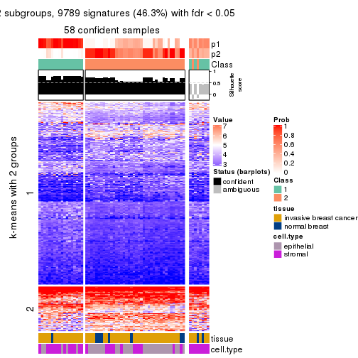
get_signatures(res, k = 3, scale_rows = FALSE)
get_signatures(res, k = 4, scale_rows = FALSE)
get_signatures(res, k = 5, scale_rows = FALSE)
get_signatures(res, k = 6, scale_rows = FALSE)
Compare the overlap of signatures from different k:
compare_signatures(res)
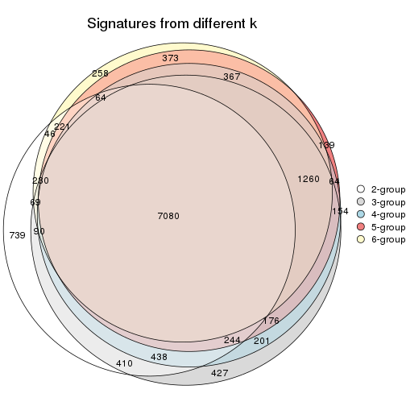
get_signature() returns a data frame invisibly. TO get the list of signatures, the function
call should be assigned to a variable explicitly. In following code, if plot argument is set
to FALSE, no heatmap is plotted while only the differential analysis is performed.
# code only for demonstration
tb = get_signature(res, k = ..., plot = FALSE)
An example of the output of tb is:
#> which_row fdr mean_1 mean_2 scaled_mean_1 scaled_mean_2 km
#> 1 38 0.042760348 8.373488 9.131774 -0.5533452 0.5164555 1
#> 2 40 0.018707592 7.106213 8.469186 -0.6173731 0.5762149 1
#> 3 55 0.019134737 10.221463 11.207825 -0.6159697 0.5749050 1
#> 4 59 0.006059896 5.921854 7.869574 -0.6899429 0.6439467 1
#> 5 60 0.018055526 8.928898 10.211722 -0.6204761 0.5791110 1
#> 6 98 0.009384629 15.714769 14.887706 0.6635654 -0.6193277 2
...
The columns in tb are:
which_row: row indices corresponding to the input matrix.fdr: FDR for the differential test. mean_x: The mean value in group x.scaled_mean_x: The mean value in group x after rows are scaled.km: Row groups if k-means clustering is applied to rows.UMAP plot which shows how samples are separated.
dimension_reduction(res, k = 2, method = "UMAP")
dimension_reduction(res, k = 3, method = "UMAP")
dimension_reduction(res, k = 4, method = "UMAP")
dimension_reduction(res, k = 5, method = "UMAP")

dimension_reduction(res, k = 6, method = "UMAP")
Following heatmap shows how subgroups are split when increasing k:
collect_classes(res)
Test correlation between subgroups and known annotations. If the known annotation is numeric, one-way ANOVA test is applied, and if the known annotation is discrete, chi-squared contingency table test is applied.
test_to_known_factors(res)
#> n tissue(p) cell.type(p) k
#> CV:mclust 58 4.19e-01 0.006580 2
#> CV:mclust 62 1.36e-01 0.000419 3
#> CV:mclust 64 6.91e-05 0.000754 4
#> CV:mclust 60 2.67e-04 0.002870 5
#> CV:mclust 63 2.98e-04 0.002349 6
If matrix rows can be associated to genes, consider to use functional_enrichment(res,
...) to perform function enrichment for the signature genes. See this vignette for more detailed explanations.
The object with results only for a single top-value method and a single partition method can be extracted as:
res = res_list["CV", "NMF"]
# you can also extract it by
# res = res_list["CV:NMF"]
A summary of res and all the functions that can be applied to it:
res
#> A 'ConsensusPartition' object with k = 2, 3, 4, 5, 6.
#> On a matrix with 21163 rows and 66 columns.
#> Top rows (1000, 2000, 3000, 4000, 5000) are extracted by 'CV' method.
#> Subgroups are detected by 'NMF' method.
#> Performed in total 1250 partitions by row resampling.
#> Best k for subgroups seems to be 2.
#>
#> Following methods can be applied to this 'ConsensusPartition' object:
#> [1] "cola_report" "collect_classes" "collect_plots"
#> [4] "collect_stats" "colnames" "compare_signatures"
#> [7] "consensus_heatmap" "dimension_reduction" "functional_enrichment"
#> [10] "get_anno_col" "get_anno" "get_classes"
#> [13] "get_consensus" "get_matrix" "get_membership"
#> [16] "get_param" "get_signatures" "get_stats"
#> [19] "is_best_k" "is_stable_k" "membership_heatmap"
#> [22] "ncol" "nrow" "plot_ecdf"
#> [25] "rownames" "select_partition_number" "show"
#> [28] "suggest_best_k" "test_to_known_factors"
collect_plots() function collects all the plots made from res for all k (number of partitions)
into one single page to provide an easy and fast comparison between different k.
collect_plots(res)
The plots are:
k and the heatmap of
predicted classes for each k.k.k.k.All the plots in panels can be made by individual functions and they are plotted later in this section.
select_partition_number() produces several plots showing different
statistics for choosing “optimized” k. There are following statistics:
k;k, the area increased is defined as \(A_k - A_{k-1}\).The detailed explanations of these statistics can be found in the cola vignette.
Generally speaking, lower PAC score, higher mean silhouette score or higher
concordance corresponds to better partition. Rand index and Jaccard index
measure how similar the current partition is compared to partition with k-1.
If they are too similar, we won't accept k is better than k-1.
select_partition_number(res)
The numeric values for all these statistics can be obtained by get_stats().
get_stats(res)
#> k 1-PAC mean_silhouette concordance area_increased Rand Jaccard
#> 2 2 1.000 0.969 0.987 0.5001 0.500 0.500
#> 3 3 0.737 0.844 0.915 0.3484 0.730 0.506
#> 4 4 0.602 0.706 0.827 0.1159 0.824 0.529
#> 5 5 0.622 0.536 0.738 0.0660 0.940 0.765
#> 6 6 0.707 0.610 0.786 0.0431 0.891 0.538
suggest_best_k() suggests the best \(k\) based on these statistics. The rules are as follows:
suggest_best_k(res)
#> [1] 2
Following shows the table of the partitions (You need to click the show/hide
code output link to see it). The membership matrix (columns with name p*)
is inferred by
clue::cl_consensus()
function with the SE method. Basically the value in the membership matrix
represents the probability to belong to a certain group. The finall class
label for an item is determined with the group with highest probability it
belongs to.
In get_classes() function, the entropy is calculated from the membership
matrix and the silhouette score is calculated from the consensus matrix.
cbind(get_classes(res, k = 2), get_membership(res, k = 2))
#> class entropy silhouette p1 p2
#> GSM272727 2 0.0000 0.989 0.000 1.000
#> GSM272729 2 0.0000 0.989 0.000 1.000
#> GSM272731 2 0.0000 0.989 0.000 1.000
#> GSM272733 2 0.0000 0.989 0.000 1.000
#> GSM272735 2 0.0000 0.989 0.000 1.000
#> GSM272728 2 0.0000 0.989 0.000 1.000
#> GSM272730 1 0.0000 0.984 1.000 0.000
#> GSM272732 1 0.2043 0.956 0.968 0.032
#> GSM272734 1 0.0000 0.984 1.000 0.000
#> GSM272736 2 0.0000 0.989 0.000 1.000
#> GSM272671 2 0.0000 0.989 0.000 1.000
#> GSM272673 2 0.0000 0.989 0.000 1.000
#> GSM272675 2 0.0000 0.989 0.000 1.000
#> GSM272677 2 0.0000 0.989 0.000 1.000
#> GSM272679 2 0.0000 0.989 0.000 1.000
#> GSM272681 2 0.0000 0.989 0.000 1.000
#> GSM272683 2 0.0000 0.989 0.000 1.000
#> GSM272685 2 0.0000 0.989 0.000 1.000
#> GSM272687 1 0.3114 0.932 0.944 0.056
#> GSM272689 2 0.0000 0.989 0.000 1.000
#> GSM272691 2 0.0000 0.989 0.000 1.000
#> GSM272693 1 0.0000 0.984 1.000 0.000
#> GSM272695 2 0.0000 0.989 0.000 1.000
#> GSM272697 2 0.0000 0.989 0.000 1.000
#> GSM272699 2 0.0000 0.989 0.000 1.000
#> GSM272701 2 0.0000 0.989 0.000 1.000
#> GSM272703 2 0.0000 0.989 0.000 1.000
#> GSM272705 2 0.0000 0.989 0.000 1.000
#> GSM272707 1 0.0000 0.984 1.000 0.000
#> GSM272709 2 0.0000 0.989 0.000 1.000
#> GSM272711 2 0.0000 0.989 0.000 1.000
#> GSM272713 1 0.0000 0.984 1.000 0.000
#> GSM272715 2 0.0000 0.989 0.000 1.000
#> GSM272717 2 0.0000 0.989 0.000 1.000
#> GSM272719 2 0.0000 0.989 0.000 1.000
#> GSM272721 1 0.0000 0.984 1.000 0.000
#> GSM272723 2 0.0000 0.989 0.000 1.000
#> GSM272725 1 0.0000 0.984 1.000 0.000
#> GSM272672 2 0.0000 0.989 0.000 1.000
#> GSM272674 1 0.0000 0.984 1.000 0.000
#> GSM272676 2 0.0000 0.989 0.000 1.000
#> GSM272678 2 0.0000 0.989 0.000 1.000
#> GSM272680 2 0.0376 0.985 0.004 0.996
#> GSM272682 1 0.0000 0.984 1.000 0.000
#> GSM272684 1 0.0000 0.984 1.000 0.000
#> GSM272686 2 0.1414 0.971 0.020 0.980
#> GSM272688 1 0.0000 0.984 1.000 0.000
#> GSM272690 1 0.0000 0.984 1.000 0.000
#> GSM272692 1 0.0000 0.984 1.000 0.000
#> GSM272694 1 0.0000 0.984 1.000 0.000
#> GSM272696 1 0.9248 0.480 0.660 0.340
#> GSM272698 2 0.9248 0.472 0.340 0.660
#> GSM272700 1 0.0000 0.984 1.000 0.000
#> GSM272702 1 0.0000 0.984 1.000 0.000
#> GSM272704 1 0.0000 0.984 1.000 0.000
#> GSM272706 1 0.0000 0.984 1.000 0.000
#> GSM272708 1 0.0000 0.984 1.000 0.000
#> GSM272710 1 0.0000 0.984 1.000 0.000
#> GSM272712 1 0.0000 0.984 1.000 0.000
#> GSM272714 1 0.0000 0.984 1.000 0.000
#> GSM272716 1 0.0000 0.984 1.000 0.000
#> GSM272718 2 0.0000 0.989 0.000 1.000
#> GSM272720 1 0.0000 0.984 1.000 0.000
#> GSM272722 2 0.2043 0.959 0.032 0.968
#> GSM272724 1 0.0672 0.978 0.992 0.008
#> GSM272726 1 0.0000 0.984 1.000 0.000
cbind(get_classes(res, k = 3), get_membership(res, k = 3))
#> class entropy silhouette p1 p2 p3
#> GSM272727 3 0.6192 0.147 0.000 0.420 0.580
#> GSM272729 3 0.0237 0.858 0.004 0.000 0.996
#> GSM272731 2 0.3340 0.863 0.000 0.880 0.120
#> GSM272733 2 0.3340 0.863 0.000 0.880 0.120
#> GSM272735 2 0.3412 0.861 0.000 0.876 0.124
#> GSM272728 2 0.3551 0.857 0.000 0.868 0.132
#> GSM272730 1 0.2711 0.900 0.912 0.000 0.088
#> GSM272732 1 0.6808 0.686 0.732 0.184 0.084
#> GSM272734 1 0.1878 0.935 0.952 0.044 0.004
#> GSM272736 2 0.2796 0.873 0.000 0.908 0.092
#> GSM272671 3 0.0000 0.858 0.000 0.000 1.000
#> GSM272673 2 0.0424 0.901 0.000 0.992 0.008
#> GSM272675 2 0.0592 0.901 0.000 0.988 0.012
#> GSM272677 2 0.0237 0.901 0.000 0.996 0.004
#> GSM272679 2 0.2356 0.871 0.000 0.928 0.072
#> GSM272681 2 0.0237 0.900 0.000 0.996 0.004
#> GSM272683 3 0.0000 0.858 0.000 0.000 1.000
#> GSM272685 3 0.0747 0.853 0.000 0.016 0.984
#> GSM272687 3 0.4269 0.835 0.076 0.052 0.872
#> GSM272689 2 0.4235 0.823 0.000 0.824 0.176
#> GSM272691 2 0.0237 0.901 0.000 0.996 0.004
#> GSM272693 1 0.0237 0.951 0.996 0.004 0.000
#> GSM272695 3 0.4235 0.793 0.000 0.176 0.824
#> GSM272697 2 0.0592 0.901 0.000 0.988 0.012
#> GSM272699 3 0.5785 0.479 0.000 0.332 0.668
#> GSM272701 3 0.2959 0.840 0.000 0.100 0.900
#> GSM272703 3 0.2356 0.854 0.000 0.072 0.928
#> GSM272705 3 0.5327 0.553 0.000 0.272 0.728
#> GSM272707 1 0.0000 0.952 1.000 0.000 0.000
#> GSM272709 3 0.2165 0.857 0.000 0.064 0.936
#> GSM272711 2 0.0892 0.899 0.000 0.980 0.020
#> GSM272713 1 0.0747 0.948 0.984 0.000 0.016
#> GSM272715 3 0.0000 0.858 0.000 0.000 1.000
#> GSM272717 2 0.5835 0.579 0.000 0.660 0.340
#> GSM272719 2 0.1289 0.895 0.000 0.968 0.032
#> GSM272721 1 0.0000 0.952 1.000 0.000 0.000
#> GSM272723 3 0.2165 0.857 0.000 0.064 0.936
#> GSM272725 3 0.5216 0.654 0.260 0.000 0.740
#> GSM272672 3 0.0237 0.857 0.000 0.004 0.996
#> GSM272674 1 0.1163 0.945 0.972 0.028 0.000
#> GSM272676 2 0.0237 0.901 0.000 0.996 0.004
#> GSM272678 2 0.0000 0.900 0.000 1.000 0.000
#> GSM272680 2 0.0237 0.900 0.000 0.996 0.004
#> GSM272682 2 0.4931 0.651 0.232 0.768 0.000
#> GSM272684 1 0.0000 0.952 1.000 0.000 0.000
#> GSM272686 3 0.0424 0.857 0.008 0.000 0.992
#> GSM272688 1 0.0000 0.952 1.000 0.000 0.000
#> GSM272690 1 0.1860 0.932 0.948 0.052 0.000
#> GSM272692 1 0.0237 0.951 0.996 0.004 0.000
#> GSM272694 1 0.0000 0.952 1.000 0.000 0.000
#> GSM272696 3 0.4527 0.832 0.052 0.088 0.860
#> GSM272698 2 0.1031 0.888 0.024 0.976 0.000
#> GSM272700 1 0.1031 0.946 0.976 0.024 0.000
#> GSM272702 1 0.1753 0.932 0.952 0.000 0.048
#> GSM272704 1 0.1860 0.929 0.948 0.000 0.052
#> GSM272706 1 0.2448 0.911 0.924 0.000 0.076
#> GSM272708 1 0.3826 0.855 0.868 0.008 0.124
#> GSM272710 1 0.0000 0.952 1.000 0.000 0.000
#> GSM272712 1 0.3267 0.878 0.884 0.116 0.000
#> GSM272714 1 0.0892 0.947 0.980 0.000 0.020
#> GSM272716 3 0.5138 0.651 0.252 0.000 0.748
#> GSM272718 2 0.6180 0.397 0.000 0.584 0.416
#> GSM272720 1 0.1860 0.932 0.948 0.052 0.000
#> GSM272722 3 0.2651 0.858 0.012 0.060 0.928
#> GSM272724 3 0.4411 0.798 0.140 0.016 0.844
#> GSM272726 1 0.0000 0.952 1.000 0.000 0.000
cbind(get_classes(res, k = 4), get_membership(res, k = 4))
#> class entropy silhouette p1 p2 p3 p4
#> GSM272727 4 0.2149 0.7247 0.000 0.000 0.088 0.912
#> GSM272729 3 0.4936 0.2807 0.004 0.000 0.624 0.372
#> GSM272731 4 0.3688 0.6839 0.000 0.208 0.000 0.792
#> GSM272733 4 0.3907 0.6601 0.000 0.232 0.000 0.768
#> GSM272735 4 0.4134 0.6344 0.000 0.260 0.000 0.740
#> GSM272728 4 0.3216 0.7415 0.000 0.076 0.044 0.880
#> GSM272730 1 0.4462 0.7950 0.804 0.000 0.132 0.064
#> GSM272732 4 0.5636 0.4467 0.248 0.036 0.016 0.700
#> GSM272734 1 0.5025 0.7872 0.792 0.076 0.016 0.116
#> GSM272736 4 0.5165 0.4681 0.008 0.352 0.004 0.636
#> GSM272671 4 0.4661 0.4736 0.000 0.000 0.348 0.652
#> GSM272673 2 0.3074 0.8283 0.000 0.848 0.152 0.000
#> GSM272675 2 0.2635 0.8542 0.000 0.904 0.076 0.020
#> GSM272677 2 0.1256 0.8508 0.000 0.964 0.008 0.028
#> GSM272679 2 0.4188 0.7531 0.000 0.752 0.244 0.004
#> GSM272681 2 0.0592 0.8598 0.000 0.984 0.016 0.000
#> GSM272683 4 0.4961 0.2295 0.000 0.000 0.448 0.552
#> GSM272685 4 0.3266 0.6902 0.000 0.000 0.168 0.832
#> GSM272687 3 0.2402 0.7585 0.076 0.012 0.912 0.000
#> GSM272689 4 0.3032 0.7372 0.000 0.124 0.008 0.868
#> GSM272691 2 0.1022 0.8464 0.000 0.968 0.000 0.032
#> GSM272693 1 0.0779 0.8515 0.980 0.000 0.016 0.004
#> GSM272695 2 0.5161 0.3344 0.000 0.520 0.476 0.004
#> GSM272697 2 0.2402 0.8547 0.000 0.912 0.076 0.012
#> GSM272699 4 0.6482 0.5806 0.000 0.152 0.208 0.640
#> GSM272701 3 0.2652 0.7393 0.004 0.056 0.912 0.028
#> GSM272703 3 0.1706 0.7546 0.000 0.016 0.948 0.036
#> GSM272705 4 0.3798 0.7367 0.008 0.072 0.060 0.860
#> GSM272707 1 0.2891 0.8260 0.896 0.020 0.080 0.004
#> GSM272709 3 0.1488 0.7567 0.000 0.012 0.956 0.032
#> GSM272711 2 0.3751 0.7990 0.000 0.800 0.196 0.004
#> GSM272713 1 0.2737 0.8195 0.888 0.000 0.104 0.008
#> GSM272715 4 0.5060 0.3212 0.004 0.000 0.412 0.584
#> GSM272717 4 0.3324 0.7362 0.000 0.136 0.012 0.852
#> GSM272719 2 0.4175 0.7852 0.000 0.776 0.212 0.012
#> GSM272721 1 0.0657 0.8520 0.984 0.000 0.012 0.004
#> GSM272723 3 0.2002 0.7474 0.000 0.020 0.936 0.044
#> GSM272725 3 0.4155 0.6425 0.240 0.000 0.756 0.004
#> GSM272672 4 0.3583 0.6808 0.004 0.000 0.180 0.816
#> GSM272674 1 0.4327 0.8068 0.836 0.084 0.016 0.064
#> GSM272676 2 0.0672 0.8567 0.000 0.984 0.008 0.008
#> GSM272678 2 0.0817 0.8492 0.000 0.976 0.000 0.024
#> GSM272680 2 0.0707 0.8608 0.000 0.980 0.020 0.000
#> GSM272682 2 0.4199 0.6950 0.164 0.804 0.000 0.032
#> GSM272684 1 0.1452 0.8505 0.956 0.000 0.036 0.008
#> GSM272686 3 0.5132 0.0423 0.004 0.000 0.548 0.448
#> GSM272688 1 0.1109 0.8502 0.968 0.000 0.028 0.004
#> GSM272690 1 0.5348 0.7744 0.772 0.100 0.016 0.112
#> GSM272692 1 0.2781 0.8314 0.904 0.008 0.016 0.072
#> GSM272694 1 0.0469 0.8519 0.988 0.000 0.012 0.000
#> GSM272696 3 0.3001 0.7484 0.064 0.036 0.896 0.004
#> GSM272698 2 0.2521 0.8094 0.064 0.912 0.000 0.024
#> GSM272700 1 0.4733 0.7976 0.812 0.076 0.016 0.096
#> GSM272702 1 0.4509 0.5902 0.708 0.000 0.288 0.004
#> GSM272704 1 0.3837 0.6926 0.776 0.000 0.224 0.000
#> GSM272706 1 0.4122 0.6728 0.760 0.000 0.236 0.004
#> GSM272708 3 0.5608 0.4712 0.316 0.032 0.648 0.004
#> GSM272710 1 0.1305 0.8498 0.960 0.000 0.036 0.004
#> GSM272712 1 0.6519 0.6680 0.668 0.216 0.020 0.096
#> GSM272714 1 0.3612 0.8250 0.856 0.000 0.100 0.044
#> GSM272716 3 0.7609 0.3969 0.272 0.000 0.476 0.252
#> GSM272718 4 0.2892 0.7371 0.000 0.036 0.068 0.896
#> GSM272720 1 0.5288 0.7698 0.772 0.136 0.016 0.076
#> GSM272722 3 0.1920 0.7616 0.024 0.004 0.944 0.028
#> GSM272724 3 0.2334 0.7571 0.088 0.004 0.908 0.000
#> GSM272726 1 0.1209 0.8498 0.964 0.000 0.032 0.004
cbind(get_classes(res, k = 5), get_membership(res, k = 5))
#> class entropy silhouette p1 p2 p3 p4 p5
#> GSM272727 5 0.4706 0.4908 0.000 0.008 0.020 0.316 0.656
#> GSM272729 3 0.5316 0.3626 0.000 0.000 0.632 0.084 0.284
#> GSM272731 5 0.6361 0.3836 0.000 0.156 0.004 0.336 0.504
#> GSM272733 5 0.6389 0.3737 0.000 0.160 0.004 0.336 0.500
#> GSM272735 5 0.6723 0.3417 0.000 0.224 0.004 0.324 0.448
#> GSM272728 5 0.5334 0.4632 0.000 0.052 0.008 0.328 0.612
#> GSM272730 1 0.6353 0.4288 0.644 0.000 0.176 0.088 0.092
#> GSM272732 4 0.6475 -0.1564 0.080 0.032 0.004 0.520 0.364
#> GSM272734 4 0.6149 0.2671 0.400 0.024 0.004 0.512 0.060
#> GSM272736 5 0.6874 0.2578 0.000 0.264 0.004 0.332 0.400
#> GSM272671 5 0.4497 0.1832 0.000 0.000 0.424 0.008 0.568
#> GSM272673 2 0.3231 0.7435 0.000 0.800 0.196 0.000 0.004
#> GSM272675 2 0.1626 0.7874 0.000 0.940 0.044 0.000 0.016
#> GSM272677 2 0.0981 0.7794 0.000 0.972 0.008 0.008 0.012
#> GSM272679 2 0.3957 0.6754 0.000 0.712 0.280 0.000 0.008
#> GSM272681 2 0.1281 0.7868 0.000 0.956 0.032 0.012 0.000
#> GSM272683 5 0.3990 0.4208 0.000 0.000 0.308 0.004 0.688
#> GSM272685 5 0.2329 0.6170 0.000 0.000 0.124 0.000 0.876
#> GSM272687 3 0.1549 0.7944 0.040 0.016 0.944 0.000 0.000
#> GSM272689 5 0.1956 0.6350 0.000 0.076 0.008 0.000 0.916
#> GSM272691 2 0.1843 0.7679 0.000 0.932 0.008 0.052 0.008
#> GSM272693 1 0.0671 0.6755 0.980 0.004 0.000 0.016 0.000
#> GSM272695 2 0.4546 0.3496 0.000 0.532 0.460 0.000 0.008
#> GSM272697 2 0.3779 0.7119 0.000 0.804 0.052 0.000 0.144
#> GSM272699 5 0.4936 0.5491 0.000 0.116 0.172 0.000 0.712
#> GSM272701 3 0.2124 0.7433 0.000 0.096 0.900 0.000 0.004
#> GSM272703 3 0.0771 0.7944 0.000 0.020 0.976 0.000 0.004
#> GSM272705 5 0.3343 0.6366 0.028 0.068 0.040 0.000 0.864
#> GSM272707 1 0.1612 0.6773 0.948 0.012 0.024 0.016 0.000
#> GSM272709 3 0.0771 0.7943 0.000 0.020 0.976 0.000 0.004
#> GSM272711 2 0.3534 0.7016 0.000 0.744 0.256 0.000 0.000
#> GSM272713 1 0.2291 0.6605 0.908 0.000 0.056 0.036 0.000
#> GSM272715 5 0.3659 0.5312 0.012 0.000 0.220 0.000 0.768
#> GSM272717 5 0.3192 0.6333 0.000 0.112 0.040 0.000 0.848
#> GSM272719 2 0.3661 0.6834 0.000 0.724 0.276 0.000 0.000
#> GSM272721 1 0.4260 0.4843 0.680 0.004 0.008 0.308 0.000
#> GSM272723 3 0.0912 0.7915 0.000 0.016 0.972 0.000 0.012
#> GSM272725 3 0.4288 0.6772 0.136 0.000 0.784 0.072 0.008
#> GSM272672 5 0.2358 0.6246 0.008 0.000 0.104 0.000 0.888
#> GSM272674 1 0.5286 -0.2606 0.504 0.048 0.000 0.448 0.000
#> GSM272676 2 0.2249 0.7485 0.000 0.896 0.000 0.096 0.008
#> GSM272678 2 0.0968 0.7750 0.000 0.972 0.004 0.012 0.012
#> GSM272680 2 0.3318 0.6942 0.000 0.808 0.012 0.180 0.000
#> GSM272682 2 0.5540 0.2312 0.060 0.536 0.000 0.400 0.004
#> GSM272684 1 0.0955 0.6698 0.968 0.000 0.004 0.028 0.000
#> GSM272686 3 0.4907 -0.0237 0.008 0.000 0.512 0.012 0.468
#> GSM272688 1 0.1041 0.6823 0.964 0.000 0.004 0.032 0.000
#> GSM272690 4 0.5415 0.4705 0.308 0.056 0.000 0.624 0.012
#> GSM272692 1 0.4449 0.0779 0.636 0.004 0.000 0.352 0.008
#> GSM272694 1 0.0404 0.6789 0.988 0.000 0.000 0.012 0.000
#> GSM272696 3 0.2983 0.7622 0.012 0.048 0.880 0.060 0.000
#> GSM272698 2 0.4360 0.6832 0.040 0.804 0.000 0.084 0.072
#> GSM272700 4 0.4851 0.4274 0.352 0.020 0.000 0.620 0.008
#> GSM272702 1 0.6022 0.3803 0.540 0.000 0.136 0.324 0.000
#> GSM272704 1 0.4989 0.5685 0.708 0.000 0.124 0.168 0.000
#> GSM272706 1 0.6171 0.4034 0.552 0.000 0.128 0.312 0.008
#> GSM272708 3 0.6968 0.2573 0.168 0.032 0.492 0.308 0.000
#> GSM272710 1 0.0510 0.6799 0.984 0.000 0.000 0.016 0.000
#> GSM272712 4 0.5032 0.4605 0.160 0.088 0.008 0.736 0.008
#> GSM272714 1 0.5237 0.5009 0.664 0.000 0.100 0.236 0.000
#> GSM272716 5 0.6253 0.1240 0.388 0.000 0.148 0.000 0.464
#> GSM272718 5 0.2228 0.6447 0.000 0.040 0.048 0.000 0.912
#> GSM272720 4 0.5627 0.4128 0.368 0.084 0.000 0.548 0.000
#> GSM272722 3 0.1117 0.7973 0.020 0.016 0.964 0.000 0.000
#> GSM272724 3 0.1605 0.7853 0.040 0.000 0.944 0.012 0.004
#> GSM272726 1 0.2629 0.6485 0.860 0.000 0.004 0.136 0.000
cbind(get_classes(res, k = 6), get_membership(res, k = 6))
#> class entropy silhouette p1 p2 p3 p4 p5 p6
#> GSM272727 6 0.3323 0.7775 0.000 0.000 0.008 0.000 0.240 0.752
#> GSM272729 3 0.5062 0.5259 0.008 0.000 0.652 0.004 0.096 0.240
#> GSM272731 6 0.3683 0.8171 0.000 0.048 0.000 0.000 0.184 0.768
#> GSM272733 6 0.3555 0.8206 0.000 0.044 0.000 0.000 0.176 0.780
#> GSM272735 6 0.4059 0.8027 0.000 0.100 0.000 0.000 0.148 0.752
#> GSM272728 6 0.3420 0.7850 0.000 0.012 0.000 0.000 0.240 0.748
#> GSM272730 1 0.6612 0.3923 0.540 0.000 0.220 0.028 0.032 0.180
#> GSM272732 6 0.1781 0.7292 0.004 0.004 0.004 0.004 0.056 0.928
#> GSM272734 6 0.6089 -0.1096 0.324 0.000 0.008 0.168 0.008 0.492
#> GSM272736 6 0.3458 0.7961 0.000 0.080 0.000 0.000 0.112 0.808
#> GSM272671 5 0.3769 0.4830 0.000 0.000 0.356 0.000 0.640 0.004
#> GSM272673 2 0.1462 0.7611 0.000 0.936 0.056 0.000 0.008 0.000
#> GSM272675 2 0.1036 0.7638 0.000 0.964 0.024 0.004 0.008 0.000
#> GSM272677 2 0.0551 0.7581 0.000 0.984 0.000 0.004 0.004 0.008
#> GSM272679 2 0.3043 0.7112 0.000 0.792 0.200 0.000 0.008 0.000
#> GSM272681 2 0.0291 0.7589 0.000 0.992 0.000 0.004 0.000 0.004
#> GSM272683 5 0.1958 0.7951 0.000 0.000 0.100 0.000 0.896 0.004
#> GSM272685 5 0.0547 0.8228 0.000 0.000 0.020 0.000 0.980 0.000
#> GSM272687 3 0.0951 0.8912 0.004 0.020 0.968 0.000 0.008 0.000
#> GSM272689 5 0.1644 0.8002 0.000 0.040 0.000 0.000 0.932 0.028
#> GSM272691 2 0.1285 0.7499 0.000 0.944 0.004 0.000 0.000 0.052
#> GSM272693 1 0.0696 0.7180 0.980 0.004 0.004 0.008 0.000 0.004
#> GSM272695 2 0.3996 0.1762 0.000 0.512 0.484 0.000 0.004 0.000
#> GSM272697 2 0.3697 0.5906 0.000 0.732 0.016 0.004 0.248 0.000
#> GSM272699 5 0.2389 0.8079 0.000 0.052 0.060 0.000 0.888 0.000
#> GSM272701 3 0.2178 0.8000 0.000 0.132 0.868 0.000 0.000 0.000
#> GSM272703 3 0.1297 0.8869 0.000 0.040 0.948 0.000 0.012 0.000
#> GSM272705 5 0.1552 0.8120 0.036 0.020 0.000 0.000 0.940 0.004
#> GSM272707 1 0.1325 0.7164 0.956 0.004 0.012 0.016 0.000 0.012
#> GSM272709 3 0.1225 0.8885 0.000 0.036 0.952 0.000 0.012 0.000
#> GSM272711 2 0.2941 0.6979 0.000 0.780 0.220 0.000 0.000 0.000
#> GSM272713 1 0.3179 0.6964 0.864 0.000 0.040 0.056 0.012 0.028
#> GSM272715 5 0.1268 0.8236 0.008 0.004 0.036 0.000 0.952 0.000
#> GSM272717 5 0.1605 0.8059 0.000 0.044 0.004 0.000 0.936 0.016
#> GSM272719 2 0.3240 0.6718 0.000 0.752 0.244 0.000 0.004 0.000
#> GSM272721 4 0.5107 -0.0104 0.444 0.000 0.036 0.500 0.004 0.016
#> GSM272723 3 0.1245 0.8892 0.000 0.032 0.952 0.000 0.016 0.000
#> GSM272725 3 0.3392 0.7698 0.080 0.000 0.844 0.048 0.008 0.020
#> GSM272672 5 0.0665 0.8210 0.008 0.000 0.008 0.000 0.980 0.004
#> GSM272674 4 0.5685 -0.0188 0.428 0.024 0.000 0.472 0.004 0.072
#> GSM272676 2 0.3954 0.3603 0.000 0.620 0.004 0.372 0.000 0.004
#> GSM272678 2 0.2214 0.7066 0.000 0.888 0.000 0.096 0.000 0.016
#> GSM272680 4 0.4129 -0.1763 0.000 0.496 0.004 0.496 0.000 0.004
#> GSM272682 4 0.3403 0.4877 0.020 0.176 0.000 0.796 0.004 0.004
#> GSM272684 1 0.1692 0.7151 0.940 0.000 0.008 0.020 0.008 0.024
#> GSM272686 5 0.4448 0.1731 0.008 0.000 0.464 0.004 0.516 0.008
#> GSM272688 1 0.2017 0.7025 0.920 0.000 0.020 0.048 0.004 0.008
#> GSM272690 4 0.3234 0.5391 0.044 0.016 0.000 0.848 0.004 0.088
#> GSM272692 1 0.6034 0.1959 0.516 0.000 0.004 0.260 0.008 0.212
#> GSM272694 1 0.0767 0.7189 0.976 0.000 0.004 0.012 0.000 0.008
#> GSM272696 3 0.1367 0.8688 0.000 0.012 0.944 0.044 0.000 0.000
#> GSM272698 2 0.4820 0.4604 0.004 0.652 0.000 0.276 0.060 0.008
#> GSM272700 4 0.4317 0.5075 0.072 0.004 0.004 0.756 0.008 0.156
#> GSM272702 4 0.5796 0.3112 0.244 0.004 0.168 0.572 0.000 0.012
#> GSM272704 1 0.6367 0.2282 0.484 0.000 0.260 0.232 0.004 0.020
#> GSM272706 4 0.6305 0.2066 0.272 0.000 0.204 0.500 0.016 0.008
#> GSM272708 4 0.5949 0.2631 0.108 0.012 0.360 0.508 0.004 0.008
#> GSM272710 1 0.3020 0.6955 0.860 0.000 0.012 0.092 0.008 0.028
#> GSM272712 4 0.1644 0.5493 0.000 0.004 0.000 0.920 0.000 0.076
#> GSM272714 1 0.7027 0.3940 0.524 0.000 0.176 0.184 0.020 0.096
#> GSM272716 5 0.4140 0.5438 0.280 0.000 0.024 0.000 0.688 0.008
#> GSM272718 5 0.1138 0.8120 0.000 0.012 0.004 0.000 0.960 0.024
#> GSM272720 4 0.5607 0.4709 0.112 0.056 0.000 0.668 0.008 0.156
#> GSM272722 3 0.1096 0.8859 0.004 0.008 0.964 0.000 0.004 0.020
#> GSM272724 3 0.1138 0.8779 0.004 0.000 0.960 0.024 0.012 0.000
#> GSM272726 1 0.4513 0.5556 0.728 0.000 0.028 0.204 0.012 0.028
Heatmaps for the consensus matrix. It visualizes the probability of two samples to be in a same group.
consensus_heatmap(res, k = 2)
consensus_heatmap(res, k = 3)
consensus_heatmap(res, k = 4)
consensus_heatmap(res, k = 5)
consensus_heatmap(res, k = 6)
Heatmaps for the membership of samples in all partitions to see how consistent they are:
membership_heatmap(res, k = 2)
membership_heatmap(res, k = 3)
membership_heatmap(res, k = 4)
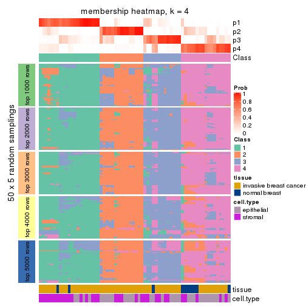
membership_heatmap(res, k = 5)
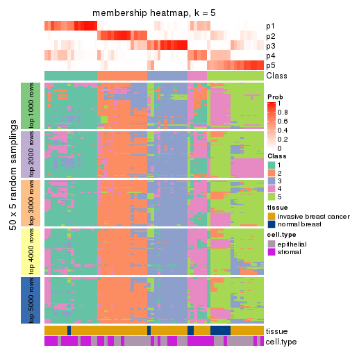
membership_heatmap(res, k = 6)
As soon as we have had the classes for columns, we can look for signatures which are significantly different between classes which can be candidate marks for certain classes. Following are the heatmaps for signatures.
Signature heatmaps where rows are scaled:
get_signatures(res, k = 2)
get_signatures(res, k = 3)
get_signatures(res, k = 4)
get_signatures(res, k = 5)
get_signatures(res, k = 6)
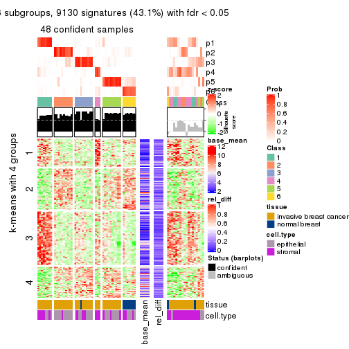
Signature heatmaps where rows are not scaled:
get_signatures(res, k = 2, scale_rows = FALSE)
get_signatures(res, k = 3, scale_rows = FALSE)
get_signatures(res, k = 4, scale_rows = FALSE)
get_signatures(res, k = 5, scale_rows = FALSE)
get_signatures(res, k = 6, scale_rows = FALSE)
Compare the overlap of signatures from different k:
compare_signatures(res)
get_signature() returns a data frame invisibly. TO get the list of signatures, the function
call should be assigned to a variable explicitly. In following code, if plot argument is set
to FALSE, no heatmap is plotted while only the differential analysis is performed.
# code only for demonstration
tb = get_signature(res, k = ..., plot = FALSE)
An example of the output of tb is:
#> which_row fdr mean_1 mean_2 scaled_mean_1 scaled_mean_2 km
#> 1 38 0.042760348 8.373488 9.131774 -0.5533452 0.5164555 1
#> 2 40 0.018707592 7.106213 8.469186 -0.6173731 0.5762149 1
#> 3 55 0.019134737 10.221463 11.207825 -0.6159697 0.5749050 1
#> 4 59 0.006059896 5.921854 7.869574 -0.6899429 0.6439467 1
#> 5 60 0.018055526 8.928898 10.211722 -0.6204761 0.5791110 1
#> 6 98 0.009384629 15.714769 14.887706 0.6635654 -0.6193277 2
...
The columns in tb are:
which_row: row indices corresponding to the input matrix.fdr: FDR for the differential test. mean_x: The mean value in group x.scaled_mean_x: The mean value in group x after rows are scaled.km: Row groups if k-means clustering is applied to rows.UMAP plot which shows how samples are separated.
dimension_reduction(res, k = 2, method = "UMAP")
dimension_reduction(res, k = 3, method = "UMAP")
dimension_reduction(res, k = 4, method = "UMAP")
dimension_reduction(res, k = 5, method = "UMAP")
dimension_reduction(res, k = 6, method = "UMAP")
Following heatmap shows how subgroups are split when increasing k:
collect_classes(res)
Test correlation between subgroups and known annotations. If the known annotation is numeric, one-way ANOVA test is applied, and if the known annotation is discrete, chi-squared contingency table test is applied.
test_to_known_factors(res)
#> n tissue(p) cell.type(p) k
#> CV:NMF 64 5.44e-01 6.28e-05 2
#> CV:NMF 63 2.41e-01 6.48e-04 3
#> CV:NMF 56 5.12e-03 4.24e-03 4
#> CV:NMF 40 NA 1.63e-01 5
#> CV:NMF 48 7.37e-08 5.29e-02 6
If matrix rows can be associated to genes, consider to use functional_enrichment(res,
...) to perform function enrichment for the signature genes. See this vignette for more detailed explanations.
The object with results only for a single top-value method and a single partition method can be extracted as:
res = res_list["MAD", "hclust"]
# you can also extract it by
# res = res_list["MAD:hclust"]
A summary of res and all the functions that can be applied to it:
res
#> A 'ConsensusPartition' object with k = 2, 3, 4, 5, 6.
#> On a matrix with 21163 rows and 66 columns.
#> Top rows (1000, 2000, 3000, 4000, 5000) are extracted by 'MAD' method.
#> Subgroups are detected by 'hclust' method.
#> Performed in total 1250 partitions by row resampling.
#> Best k for subgroups seems to be 2.
#>
#> Following methods can be applied to this 'ConsensusPartition' object:
#> [1] "cola_report" "collect_classes" "collect_plots"
#> [4] "collect_stats" "colnames" "compare_signatures"
#> [7] "consensus_heatmap" "dimension_reduction" "functional_enrichment"
#> [10] "get_anno_col" "get_anno" "get_classes"
#> [13] "get_consensus" "get_matrix" "get_membership"
#> [16] "get_param" "get_signatures" "get_stats"
#> [19] "is_best_k" "is_stable_k" "membership_heatmap"
#> [22] "ncol" "nrow" "plot_ecdf"
#> [25] "rownames" "select_partition_number" "show"
#> [28] "suggest_best_k" "test_to_known_factors"
collect_plots() function collects all the plots made from res for all k (number of partitions)
into one single page to provide an easy and fast comparison between different k.
collect_plots(res)
The plots are:
k and the heatmap of
predicted classes for each k.k.k.k.All the plots in panels can be made by individual functions and they are plotted later in this section.
select_partition_number() produces several plots showing different
statistics for choosing “optimized” k. There are following statistics:
k;k, the area increased is defined as \(A_k - A_{k-1}\).The detailed explanations of these statistics can be found in the cola vignette.
Generally speaking, lower PAC score, higher mean silhouette score or higher
concordance corresponds to better partition. Rand index and Jaccard index
measure how similar the current partition is compared to partition with k-1.
If they are too similar, we won't accept k is better than k-1.
select_partition_number(res)
The numeric values for all these statistics can be obtained by get_stats().
get_stats(res)
#> k 1-PAC mean_silhouette concordance area_increased Rand Jaccard
#> 2 2 0.741 0.865 0.934 0.4638 0.509 0.509
#> 3 3 0.766 0.763 0.887 0.2300 0.915 0.833
#> 4 4 0.606 0.684 0.782 0.0911 0.989 0.974
#> 5 5 0.540 0.619 0.750 0.0794 1.000 1.000
#> 6 6 0.602 0.501 0.705 0.0542 0.853 0.645
suggest_best_k() suggests the best \(k\) based on these statistics. The rules are as follows:
suggest_best_k(res)
#> [1] 2
Following shows the table of the partitions (You need to click the show/hide
code output link to see it). The membership matrix (columns with name p*)
is inferred by
clue::cl_consensus()
function with the SE method. Basically the value in the membership matrix
represents the probability to belong to a certain group. The finall class
label for an item is determined with the group with highest probability it
belongs to.
In get_classes() function, the entropy is calculated from the membership
matrix and the silhouette score is calculated from the consensus matrix.
cbind(get_classes(res, k = 2), get_membership(res, k = 2))
#> class entropy silhouette p1 p2
#> GSM272727 2 0.0000 0.968 0.000 1.000
#> GSM272729 2 0.0000 0.968 0.000 1.000
#> GSM272731 2 0.0376 0.967 0.004 0.996
#> GSM272733 2 0.0376 0.967 0.004 0.996
#> GSM272735 2 0.0376 0.967 0.004 0.996
#> GSM272728 2 0.0000 0.968 0.000 1.000
#> GSM272730 1 0.3879 0.858 0.924 0.076
#> GSM272732 1 0.6973 0.787 0.812 0.188
#> GSM272734 1 0.1843 0.866 0.972 0.028
#> GSM272736 2 0.3114 0.923 0.056 0.944
#> GSM272671 2 0.0000 0.968 0.000 1.000
#> GSM272673 2 0.0376 0.967 0.004 0.996
#> GSM272675 2 0.0000 0.968 0.000 1.000
#> GSM272677 2 0.0376 0.967 0.004 0.996
#> GSM272679 2 0.0000 0.968 0.000 1.000
#> GSM272681 2 0.1184 0.959 0.016 0.984
#> GSM272683 2 0.0000 0.968 0.000 1.000
#> GSM272685 2 0.0000 0.968 0.000 1.000
#> GSM272687 2 0.0000 0.968 0.000 1.000
#> GSM272689 2 0.0000 0.968 0.000 1.000
#> GSM272691 2 0.0376 0.967 0.004 0.996
#> GSM272693 1 0.6973 0.787 0.812 0.188
#> GSM272695 2 0.0000 0.968 0.000 1.000
#> GSM272697 2 0.0000 0.968 0.000 1.000
#> GSM272699 2 0.0000 0.968 0.000 1.000
#> GSM272701 2 0.0000 0.968 0.000 1.000
#> GSM272703 2 0.0000 0.968 0.000 1.000
#> GSM272705 2 0.0938 0.961 0.012 0.988
#> GSM272707 1 0.3274 0.862 0.940 0.060
#> GSM272709 2 0.0000 0.968 0.000 1.000
#> GSM272711 2 0.0000 0.968 0.000 1.000
#> GSM272713 1 0.0000 0.864 1.000 0.000
#> GSM272715 2 0.2236 0.943 0.036 0.964
#> GSM272717 2 0.0000 0.968 0.000 1.000
#> GSM272719 2 0.0000 0.968 0.000 1.000
#> GSM272721 1 0.0672 0.866 0.992 0.008
#> GSM272723 2 0.0376 0.967 0.004 0.996
#> GSM272725 1 0.9954 0.340 0.540 0.460
#> GSM272672 2 0.2236 0.943 0.036 0.964
#> GSM272674 1 0.4431 0.854 0.908 0.092
#> GSM272676 2 0.6247 0.795 0.156 0.844
#> GSM272678 2 0.0376 0.967 0.004 0.996
#> GSM272680 2 0.6531 0.778 0.168 0.832
#> GSM272682 1 0.8207 0.713 0.744 0.256
#> GSM272684 1 0.0000 0.864 1.000 0.000
#> GSM272686 2 0.0000 0.968 0.000 1.000
#> GSM272688 1 0.0000 0.864 1.000 0.000
#> GSM272690 1 0.4431 0.854 0.908 0.092
#> GSM272692 1 0.0000 0.864 1.000 0.000
#> GSM272694 1 0.0000 0.864 1.000 0.000
#> GSM272696 1 0.9993 0.272 0.516 0.484
#> GSM272698 2 0.6973 0.748 0.188 0.812
#> GSM272700 1 0.4431 0.854 0.908 0.092
#> GSM272702 1 0.0938 0.866 0.988 0.012
#> GSM272704 1 0.0938 0.866 0.988 0.012
#> GSM272706 1 0.0938 0.866 0.988 0.012
#> GSM272708 1 0.9993 0.272 0.516 0.484
#> GSM272710 1 0.0000 0.864 1.000 0.000
#> GSM272712 1 0.7950 0.732 0.760 0.240
#> GSM272714 1 0.0000 0.864 1.000 0.000
#> GSM272716 2 0.2236 0.943 0.036 0.964
#> GSM272718 2 0.0000 0.968 0.000 1.000
#> GSM272720 1 0.4562 0.852 0.904 0.096
#> GSM272722 2 0.8661 0.493 0.288 0.712
#> GSM272724 1 0.9993 0.272 0.516 0.484
#> GSM272726 1 0.0000 0.864 1.000 0.000
cbind(get_classes(res, k = 3), get_membership(res, k = 3))
#> class entropy silhouette p1 p2 p3
#> GSM272727 2 0.0000 0.935 0.000 1.000 0.000
#> GSM272729 2 0.0424 0.934 0.000 0.992 0.008
#> GSM272731 2 0.1411 0.921 0.000 0.964 0.036
#> GSM272733 2 0.1411 0.921 0.000 0.964 0.036
#> GSM272735 2 0.1411 0.921 0.000 0.964 0.036
#> GSM272728 2 0.0000 0.935 0.000 1.000 0.000
#> GSM272730 3 0.6298 0.219 0.388 0.004 0.608
#> GSM272732 3 0.5982 0.506 0.228 0.028 0.744
#> GSM272734 1 0.4605 0.721 0.796 0.000 0.204
#> GSM272736 2 0.3412 0.835 0.000 0.876 0.124
#> GSM272671 2 0.0424 0.934 0.000 0.992 0.008
#> GSM272673 2 0.0747 0.931 0.000 0.984 0.016
#> GSM272675 2 0.0000 0.935 0.000 1.000 0.000
#> GSM272677 2 0.0747 0.931 0.000 0.984 0.016
#> GSM272679 2 0.0000 0.935 0.000 1.000 0.000
#> GSM272681 2 0.1753 0.911 0.000 0.952 0.048
#> GSM272683 2 0.0424 0.934 0.000 0.992 0.008
#> GSM272685 2 0.0000 0.935 0.000 1.000 0.000
#> GSM272687 2 0.0424 0.934 0.000 0.992 0.008
#> GSM272689 2 0.0237 0.934 0.000 0.996 0.004
#> GSM272691 2 0.0747 0.931 0.000 0.984 0.016
#> GSM272693 3 0.6067 0.497 0.236 0.028 0.736
#> GSM272695 2 0.0000 0.935 0.000 1.000 0.000
#> GSM272697 2 0.0000 0.935 0.000 1.000 0.000
#> GSM272699 2 0.0000 0.935 0.000 1.000 0.000
#> GSM272701 2 0.0000 0.935 0.000 1.000 0.000
#> GSM272703 2 0.0424 0.934 0.000 0.992 0.008
#> GSM272705 2 0.0747 0.930 0.000 0.984 0.016
#> GSM272707 1 0.4654 0.724 0.792 0.000 0.208
#> GSM272709 2 0.0424 0.934 0.000 0.992 0.008
#> GSM272711 2 0.0424 0.934 0.000 0.992 0.008
#> GSM272713 1 0.1289 0.853 0.968 0.000 0.032
#> GSM272715 2 0.1753 0.909 0.000 0.952 0.048
#> GSM272717 2 0.0000 0.935 0.000 1.000 0.000
#> GSM272719 2 0.0237 0.935 0.000 0.996 0.004
#> GSM272721 1 0.1411 0.850 0.964 0.000 0.036
#> GSM272723 2 0.1031 0.930 0.000 0.976 0.024
#> GSM272725 3 0.7276 0.422 0.032 0.404 0.564
#> GSM272672 2 0.1753 0.909 0.000 0.952 0.048
#> GSM272674 3 0.5016 0.490 0.240 0.000 0.760
#> GSM272676 2 0.6168 0.352 0.000 0.588 0.412
#> GSM272678 2 0.0747 0.931 0.000 0.984 0.016
#> GSM272680 2 0.6204 0.324 0.000 0.576 0.424
#> GSM272682 3 0.1031 0.544 0.024 0.000 0.976
#> GSM272684 1 0.0237 0.850 0.996 0.000 0.004
#> GSM272686 2 0.0424 0.934 0.000 0.992 0.008
#> GSM272688 1 0.1031 0.853 0.976 0.000 0.024
#> GSM272690 3 0.4796 0.514 0.220 0.000 0.780
#> GSM272692 1 0.0424 0.844 0.992 0.000 0.008
#> GSM272694 1 0.1031 0.853 0.976 0.000 0.024
#> GSM272696 3 0.6745 0.375 0.012 0.428 0.560
#> GSM272698 2 0.6252 0.277 0.000 0.556 0.444
#> GSM272700 3 0.4796 0.514 0.220 0.000 0.780
#> GSM272702 1 0.5882 0.515 0.652 0.000 0.348
#> GSM272704 1 0.5882 0.515 0.652 0.000 0.348
#> GSM272706 1 0.5882 0.515 0.652 0.000 0.348
#> GSM272708 3 0.6745 0.375 0.012 0.428 0.560
#> GSM272710 1 0.0000 0.848 1.000 0.000 0.000
#> GSM272712 3 0.1411 0.548 0.036 0.000 0.964
#> GSM272714 1 0.1289 0.850 0.968 0.000 0.032
#> GSM272716 2 0.1753 0.909 0.000 0.952 0.048
#> GSM272718 2 0.0000 0.935 0.000 1.000 0.000
#> GSM272720 3 0.4750 0.516 0.216 0.000 0.784
#> GSM272722 2 0.5650 0.430 0.000 0.688 0.312
#> GSM272724 3 0.6745 0.375 0.012 0.428 0.560
#> GSM272726 1 0.0237 0.850 0.996 0.000 0.004
cbind(get_classes(res, k = 4), get_membership(res, k = 4))
#> class entropy silhouette p1 p2 p3 p4
#> GSM272727 2 0.0469 0.871 0.000 0.988 0.000 0.012
#> GSM272729 2 0.3626 0.826 0.000 0.812 0.004 0.184
#> GSM272731 2 0.1837 0.862 0.000 0.944 0.028 0.028
#> GSM272733 2 0.1837 0.862 0.000 0.944 0.028 0.028
#> GSM272735 2 0.1837 0.862 0.000 0.944 0.028 0.028
#> GSM272728 2 0.0469 0.871 0.000 0.988 0.000 0.012
#> GSM272730 3 0.5565 0.149 0.344 0.000 0.624 0.032
#> GSM272732 3 0.5283 0.432 0.200 0.012 0.744 0.044
#> GSM272734 4 0.6139 0.683 0.244 0.000 0.100 0.656
#> GSM272736 2 0.3485 0.803 0.000 0.856 0.116 0.028
#> GSM272671 2 0.3626 0.826 0.000 0.812 0.004 0.184
#> GSM272673 2 0.0937 0.867 0.000 0.976 0.012 0.012
#> GSM272675 2 0.0188 0.870 0.000 0.996 0.000 0.004
#> GSM272677 2 0.0937 0.867 0.000 0.976 0.012 0.012
#> GSM272679 2 0.0188 0.870 0.000 0.996 0.000 0.004
#> GSM272681 2 0.1767 0.853 0.000 0.944 0.044 0.012
#> GSM272683 2 0.3626 0.826 0.000 0.812 0.004 0.184
#> GSM272685 2 0.1557 0.868 0.000 0.944 0.000 0.056
#> GSM272687 2 0.3539 0.827 0.000 0.820 0.004 0.176
#> GSM272689 2 0.0707 0.872 0.000 0.980 0.000 0.020
#> GSM272691 2 0.0937 0.867 0.000 0.976 0.012 0.012
#> GSM272693 3 0.5358 0.426 0.208 0.012 0.736 0.044
#> GSM272695 2 0.2704 0.850 0.000 0.876 0.000 0.124
#> GSM272697 2 0.0188 0.870 0.000 0.996 0.000 0.004
#> GSM272699 2 0.0188 0.871 0.000 0.996 0.000 0.004
#> GSM272701 2 0.3157 0.842 0.000 0.852 0.004 0.144
#> GSM272703 2 0.3539 0.827 0.000 0.820 0.004 0.176
#> GSM272705 2 0.2101 0.866 0.000 0.928 0.012 0.060
#> GSM272707 1 0.4799 0.563 0.744 0.000 0.224 0.032
#> GSM272709 2 0.3539 0.827 0.000 0.820 0.004 0.176
#> GSM272711 2 0.0657 0.868 0.000 0.984 0.004 0.012
#> GSM272713 1 0.1624 0.712 0.952 0.000 0.028 0.020
#> GSM272715 2 0.4332 0.816 0.000 0.792 0.032 0.176
#> GSM272717 2 0.0469 0.871 0.000 0.988 0.000 0.012
#> GSM272719 2 0.0524 0.868 0.000 0.988 0.004 0.008
#> GSM272721 1 0.2048 0.715 0.928 0.000 0.064 0.008
#> GSM272723 2 0.4035 0.823 0.000 0.804 0.020 0.176
#> GSM272725 3 0.7800 0.427 0.028 0.232 0.552 0.188
#> GSM272672 2 0.4289 0.819 0.000 0.796 0.032 0.172
#> GSM272674 3 0.5968 0.354 0.092 0.000 0.672 0.236
#> GSM272676 2 0.5781 0.420 0.000 0.584 0.380 0.036
#> GSM272678 2 0.0937 0.867 0.000 0.976 0.012 0.012
#> GSM272680 2 0.5816 0.402 0.000 0.572 0.392 0.036
#> GSM272682 3 0.3577 0.405 0.012 0.000 0.832 0.156
#> GSM272684 1 0.1398 0.680 0.956 0.000 0.004 0.040
#> GSM272686 2 0.3626 0.826 0.000 0.812 0.004 0.184
#> GSM272688 1 0.1576 0.721 0.948 0.000 0.048 0.004
#> GSM272690 3 0.5723 0.375 0.072 0.000 0.684 0.244
#> GSM272692 4 0.5060 0.614 0.412 0.000 0.004 0.584
#> GSM272694 1 0.1576 0.721 0.948 0.000 0.048 0.004
#> GSM272696 3 0.7439 0.424 0.008 0.256 0.548 0.188
#> GSM272698 2 0.5933 0.364 0.000 0.552 0.408 0.040
#> GSM272700 3 0.5723 0.375 0.072 0.000 0.684 0.244
#> GSM272702 1 0.5204 0.468 0.612 0.000 0.376 0.012
#> GSM272704 1 0.5204 0.468 0.612 0.000 0.376 0.012
#> GSM272706 1 0.5204 0.468 0.612 0.000 0.376 0.012
#> GSM272708 3 0.7439 0.424 0.008 0.256 0.548 0.188
#> GSM272710 1 0.1637 0.665 0.940 0.000 0.000 0.060
#> GSM272712 3 0.2282 0.450 0.024 0.000 0.924 0.052
#> GSM272714 1 0.1833 0.702 0.944 0.000 0.032 0.024
#> GSM272716 2 0.4332 0.816 0.000 0.792 0.032 0.176
#> GSM272718 2 0.0469 0.871 0.000 0.988 0.000 0.012
#> GSM272720 3 0.5657 0.377 0.068 0.000 0.688 0.244
#> GSM272722 2 0.7285 0.271 0.000 0.516 0.308 0.176
#> GSM272724 3 0.7439 0.424 0.008 0.256 0.548 0.188
#> GSM272726 1 0.2053 0.679 0.924 0.000 0.004 0.072
cbind(get_classes(res, k = 5), get_membership(res, k = 5))
#> class entropy silhouette p1 p2 p3 p4 p5
#> GSM272727 2 0.3586 0.7938 0.000 0.736 NA 0.000 0.000
#> GSM272729 2 0.2153 0.6779 0.000 0.916 NA 0.044 0.000
#> GSM272731 2 0.4658 0.7892 0.000 0.672 NA 0.028 0.004
#> GSM272733 2 0.4658 0.7892 0.000 0.672 NA 0.028 0.004
#> GSM272735 2 0.4658 0.7892 0.000 0.672 NA 0.028 0.004
#> GSM272728 2 0.3586 0.7938 0.000 0.736 NA 0.000 0.000
#> GSM272730 4 0.4759 0.0538 0.388 0.004 NA 0.592 0.016
#> GSM272732 4 0.5255 0.3775 0.220 0.024 NA 0.704 0.044
#> GSM272734 5 0.4491 0.7466 0.036 0.000 NA 0.032 0.772
#> GSM272736 2 0.5621 0.7481 0.000 0.632 NA 0.112 0.004
#> GSM272671 2 0.2153 0.6779 0.000 0.916 NA 0.044 0.000
#> GSM272673 2 0.4306 0.7878 0.000 0.660 NA 0.012 0.000
#> GSM272675 2 0.3857 0.7929 0.000 0.688 NA 0.000 0.000
#> GSM272677 2 0.4306 0.7878 0.000 0.660 NA 0.012 0.000
#> GSM272679 2 0.3857 0.7929 0.000 0.688 NA 0.000 0.000
#> GSM272681 2 0.4874 0.7758 0.000 0.632 NA 0.040 0.000
#> GSM272683 2 0.2153 0.6779 0.000 0.916 NA 0.044 0.000
#> GSM272685 2 0.3424 0.7932 0.000 0.760 NA 0.000 0.000
#> GSM272687 2 0.1818 0.6807 0.000 0.932 NA 0.044 0.000
#> GSM272689 2 0.3534 0.7975 0.000 0.744 NA 0.000 0.000
#> GSM272691 2 0.4306 0.7878 0.000 0.660 NA 0.012 0.000
#> GSM272693 4 0.5312 0.3669 0.228 0.024 NA 0.696 0.044
#> GSM272695 2 0.2660 0.7656 0.000 0.864 NA 0.008 0.000
#> GSM272697 2 0.3857 0.7929 0.000 0.688 NA 0.000 0.000
#> GSM272699 2 0.3837 0.7945 0.000 0.692 NA 0.000 0.000
#> GSM272701 2 0.2411 0.7547 0.000 0.884 NA 0.008 0.000
#> GSM272703 2 0.1818 0.6807 0.000 0.932 NA 0.044 0.000
#> GSM272705 2 0.3462 0.7860 0.000 0.792 NA 0.012 0.000
#> GSM272707 1 0.4014 0.6404 0.776 0.000 NA 0.192 0.016
#> GSM272709 2 0.1818 0.6807 0.000 0.932 NA 0.044 0.000
#> GSM272711 2 0.4047 0.7904 0.000 0.676 NA 0.004 0.000
#> GSM272713 1 0.3145 0.7191 0.868 0.000 NA 0.008 0.064
#> GSM272715 2 0.2054 0.6911 0.000 0.920 NA 0.052 0.000
#> GSM272717 2 0.3774 0.7932 0.000 0.704 NA 0.000 0.000
#> GSM272719 2 0.4029 0.7914 0.000 0.680 NA 0.004 0.000
#> GSM272721 1 0.0703 0.7334 0.976 0.000 NA 0.024 0.000
#> GSM272723 2 0.2104 0.6735 0.000 0.916 NA 0.060 0.000
#> GSM272725 4 0.5129 0.4098 0.028 0.356 NA 0.604 0.000
#> GSM272672 2 0.2067 0.6968 0.000 0.920 NA 0.048 0.000
#> GSM272674 4 0.7587 0.2313 0.096 0.000 NA 0.456 0.140
#> GSM272676 2 0.6328 0.4471 0.000 0.476 NA 0.380 0.004
#> GSM272678 2 0.4306 0.7878 0.000 0.660 NA 0.012 0.000
#> GSM272680 2 0.6249 0.4303 0.000 0.476 NA 0.392 0.004
#> GSM272682 4 0.4524 0.2881 0.020 0.000 NA 0.692 0.008
#> GSM272684 1 0.3758 0.6819 0.816 0.000 NA 0.000 0.088
#> GSM272686 2 0.2153 0.6779 0.000 0.916 NA 0.044 0.000
#> GSM272688 1 0.1168 0.7349 0.960 0.000 NA 0.008 0.032
#> GSM272690 4 0.7330 0.2388 0.056 0.000 NA 0.460 0.164
#> GSM272692 5 0.1792 0.7524 0.084 0.000 NA 0.000 0.916
#> GSM272694 1 0.1168 0.7349 0.960 0.000 NA 0.008 0.032
#> GSM272696 4 0.4759 0.4074 0.008 0.380 NA 0.600 0.000
#> GSM272698 2 0.6264 0.3970 0.000 0.460 NA 0.408 0.004
#> GSM272700 4 0.7339 0.2334 0.056 0.000 NA 0.456 0.164
#> GSM272702 1 0.4118 0.5193 0.660 0.000 NA 0.336 0.004
#> GSM272704 1 0.4118 0.5193 0.660 0.000 NA 0.336 0.004
#> GSM272706 1 0.4118 0.5193 0.660 0.000 NA 0.336 0.004
#> GSM272708 4 0.4759 0.4074 0.008 0.380 NA 0.600 0.000
#> GSM272710 1 0.5169 0.5660 0.688 0.000 NA 0.000 0.128
#> GSM272712 4 0.3023 0.3960 0.044 0.004 NA 0.880 0.008
#> GSM272714 1 0.3810 0.7093 0.832 0.000 NA 0.024 0.048
#> GSM272716 2 0.2054 0.6911 0.000 0.920 NA 0.052 0.000
#> GSM272718 2 0.3774 0.7932 0.000 0.704 NA 0.000 0.000
#> GSM272720 4 0.7329 0.2437 0.060 0.000 NA 0.464 0.156
#> GSM272722 2 0.4654 0.0138 0.000 0.628 NA 0.348 0.000
#> GSM272724 4 0.4759 0.4074 0.008 0.380 NA 0.600 0.000
#> GSM272726 1 0.5039 0.5384 0.676 0.000 NA 0.000 0.080
cbind(get_classes(res, k = 6), get_membership(res, k = 6))
#> class entropy silhouette p1 p2 p3 p4 p5 p6
#> GSM272727 2 0.3287 0.4473 0.000 0.768 0.220 0.000 0.012 0.000
#> GSM272729 3 0.3843 0.8649 0.000 0.452 0.548 0.000 0.000 0.000
#> GSM272731 2 0.1503 0.6773 0.000 0.944 0.016 0.000 0.032 0.008
#> GSM272733 2 0.1503 0.6773 0.000 0.944 0.016 0.000 0.032 0.008
#> GSM272735 2 0.1503 0.6773 0.000 0.944 0.016 0.000 0.032 0.008
#> GSM272728 2 0.3287 0.4473 0.000 0.768 0.220 0.000 0.012 0.000
#> GSM272730 5 0.5214 0.1186 0.288 0.000 0.004 0.112 0.596 0.000
#> GSM272732 5 0.5692 0.4135 0.136 0.012 0.016 0.168 0.656 0.012
#> GSM272734 4 0.6729 -0.5413 0.024 0.000 0.308 0.348 0.004 0.316
#> GSM272736 2 0.3253 0.6077 0.000 0.852 0.016 0.028 0.088 0.016
#> GSM272671 3 0.3843 0.8649 0.000 0.452 0.548 0.000 0.000 0.000
#> GSM272673 2 0.0547 0.6831 0.000 0.980 0.000 0.000 0.020 0.000
#> GSM272675 2 0.0935 0.6777 0.000 0.964 0.032 0.000 0.004 0.000
#> GSM272677 2 0.0458 0.6832 0.000 0.984 0.000 0.000 0.016 0.000
#> GSM272679 2 0.0935 0.6777 0.000 0.964 0.032 0.000 0.004 0.000
#> GSM272681 2 0.1219 0.6669 0.000 0.948 0.000 0.000 0.048 0.004
#> GSM272683 3 0.3843 0.8649 0.000 0.452 0.548 0.000 0.000 0.000
#> GSM272685 2 0.3230 0.4753 0.000 0.776 0.212 0.000 0.012 0.000
#> GSM272687 3 0.3857 0.8621 0.000 0.468 0.532 0.000 0.000 0.000
#> GSM272689 2 0.2631 0.5673 0.000 0.840 0.152 0.000 0.008 0.000
#> GSM272691 2 0.0547 0.6834 0.000 0.980 0.000 0.000 0.020 0.000
#> GSM272693 5 0.5699 0.4079 0.144 0.012 0.016 0.160 0.656 0.012
#> GSM272695 2 0.3265 0.2718 0.000 0.748 0.248 0.000 0.004 0.000
#> GSM272697 2 0.0935 0.6777 0.000 0.964 0.032 0.000 0.004 0.000
#> GSM272699 2 0.1285 0.6708 0.000 0.944 0.052 0.000 0.004 0.000
#> GSM272701 2 0.3426 0.1506 0.000 0.720 0.276 0.000 0.004 0.000
#> GSM272703 3 0.3857 0.8621 0.000 0.468 0.532 0.000 0.000 0.000
#> GSM272705 2 0.3168 0.4505 0.000 0.792 0.192 0.000 0.016 0.000
#> GSM272707 1 0.5224 0.5817 0.640 0.000 0.000 0.112 0.232 0.016
#> GSM272709 3 0.3857 0.8621 0.000 0.468 0.532 0.000 0.000 0.000
#> GSM272711 2 0.0909 0.6825 0.000 0.968 0.020 0.000 0.012 0.000
#> GSM272713 1 0.3069 0.6528 0.852 0.000 0.000 0.032 0.020 0.096
#> GSM272715 2 0.4731 -0.5997 0.000 0.524 0.428 0.000 0.048 0.000
#> GSM272717 2 0.2768 0.5663 0.000 0.832 0.156 0.000 0.012 0.000
#> GSM272719 2 0.0891 0.6810 0.000 0.968 0.024 0.000 0.008 0.000
#> GSM272721 1 0.2499 0.6816 0.880 0.000 0.000 0.072 0.048 0.000
#> GSM272723 3 0.4253 0.8413 0.000 0.460 0.524 0.000 0.016 0.000
#> GSM272725 5 0.5244 0.6202 0.028 0.024 0.388 0.012 0.548 0.000
#> GSM272672 2 0.4721 -0.5799 0.000 0.532 0.420 0.000 0.048 0.000
#> GSM272674 4 0.1644 0.7274 0.040 0.000 0.000 0.932 0.028 0.000
#> GSM272676 2 0.6041 0.2950 0.000 0.584 0.008 0.080 0.264 0.064
#> GSM272678 2 0.0458 0.6832 0.000 0.984 0.000 0.000 0.016 0.000
#> GSM272680 2 0.6168 0.2810 0.000 0.572 0.008 0.092 0.264 0.064
#> GSM272682 4 0.4978 0.4647 0.004 0.000 0.008 0.632 0.288 0.068
#> GSM272684 1 0.3352 0.6006 0.812 0.000 0.000 0.008 0.032 0.148
#> GSM272686 3 0.3843 0.8649 0.000 0.452 0.548 0.000 0.000 0.000
#> GSM272688 1 0.2103 0.6813 0.912 0.000 0.000 0.056 0.012 0.020
#> GSM272690 4 0.0603 0.7480 0.004 0.000 0.000 0.980 0.016 0.000
#> GSM272692 6 0.5743 0.0000 0.052 0.000 0.432 0.036 0.008 0.472
#> GSM272694 1 0.2103 0.6813 0.912 0.000 0.000 0.056 0.012 0.020
#> GSM272696 5 0.5087 0.6157 0.008 0.044 0.392 0.008 0.548 0.000
#> GSM272698 2 0.6296 0.2567 0.000 0.552 0.008 0.100 0.276 0.064
#> GSM272700 4 0.0508 0.7466 0.004 0.000 0.000 0.984 0.012 0.000
#> GSM272702 1 0.4983 0.4592 0.564 0.000 0.000 0.080 0.356 0.000
#> GSM272704 1 0.4983 0.4592 0.564 0.000 0.000 0.080 0.356 0.000
#> GSM272706 1 0.4983 0.4592 0.564 0.000 0.000 0.080 0.356 0.000
#> GSM272708 5 0.5087 0.6157 0.008 0.044 0.392 0.008 0.548 0.000
#> GSM272710 1 0.4570 0.3803 0.620 0.000 0.000 0.016 0.024 0.340
#> GSM272712 5 0.4697 0.1798 0.004 0.000 0.020 0.236 0.692 0.048
#> GSM272714 1 0.3186 0.6338 0.836 0.000 0.000 0.004 0.060 0.100
#> GSM272716 2 0.4731 -0.5997 0.000 0.524 0.428 0.000 0.048 0.000
#> GSM272718 2 0.2768 0.5663 0.000 0.832 0.156 0.000 0.012 0.000
#> GSM272720 4 0.0806 0.7481 0.008 0.000 0.000 0.972 0.020 0.000
#> GSM272722 3 0.5672 0.0985 0.000 0.184 0.512 0.000 0.304 0.000
#> GSM272724 5 0.5087 0.6157 0.008 0.044 0.392 0.008 0.548 0.000
#> GSM272726 1 0.5650 0.2378 0.484 0.000 0.004 0.004 0.116 0.392
Heatmaps for the consensus matrix. It visualizes the probability of two samples to be in a same group.
consensus_heatmap(res, k = 2)
consensus_heatmap(res, k = 3)
consensus_heatmap(res, k = 4)
consensus_heatmap(res, k = 5)

consensus_heatmap(res, k = 6)

Heatmaps for the membership of samples in all partitions to see how consistent they are:
membership_heatmap(res, k = 2)
membership_heatmap(res, k = 3)
membership_heatmap(res, k = 4)
membership_heatmap(res, k = 5)
membership_heatmap(res, k = 6)
As soon as we have had the classes for columns, we can look for signatures which are significantly different between classes which can be candidate marks for certain classes. Following are the heatmaps for signatures.
Signature heatmaps where rows are scaled:
get_signatures(res, k = 2)

get_signatures(res, k = 3)
get_signatures(res, k = 4)
get_signatures(res, k = 5)
get_signatures(res, k = 6)
Signature heatmaps where rows are not scaled:
get_signatures(res, k = 2, scale_rows = FALSE)
get_signatures(res, k = 3, scale_rows = FALSE)
get_signatures(res, k = 4, scale_rows = FALSE)
get_signatures(res, k = 5, scale_rows = FALSE)
get_signatures(res, k = 6, scale_rows = FALSE)
Compare the overlap of signatures from different k:
compare_signatures(res)
get_signature() returns a data frame invisibly. TO get the list of signatures, the function
call should be assigned to a variable explicitly. In following code, if plot argument is set
to FALSE, no heatmap is plotted while only the differential analysis is performed.
# code only for demonstration
tb = get_signature(res, k = ..., plot = FALSE)
An example of the output of tb is:
#> which_row fdr mean_1 mean_2 scaled_mean_1 scaled_mean_2 km
#> 1 38 0.042760348 8.373488 9.131774 -0.5533452 0.5164555 1
#> 2 40 0.018707592 7.106213 8.469186 -0.6173731 0.5762149 1
#> 3 55 0.019134737 10.221463 11.207825 -0.6159697 0.5749050 1
#> 4 59 0.006059896 5.921854 7.869574 -0.6899429 0.6439467 1
#> 5 60 0.018055526 8.928898 10.211722 -0.6204761 0.5791110 1
#> 6 98 0.009384629 15.714769 14.887706 0.6635654 -0.6193277 2
...
The columns in tb are:
which_row: row indices corresponding to the input matrix.fdr: FDR for the differential test. mean_x: The mean value in group x.scaled_mean_x: The mean value in group x after rows are scaled.km: Row groups if k-means clustering is applied to rows.UMAP plot which shows how samples are separated.
dimension_reduction(res, k = 2, method = "UMAP")
dimension_reduction(res, k = 3, method = "UMAP")
dimension_reduction(res, k = 4, method = "UMAP")
dimension_reduction(res, k = 5, method = "UMAP")
dimension_reduction(res, k = 6, method = "UMAP")
Following heatmap shows how subgroups are split when increasing k:
collect_classes(res)
Test correlation between subgroups and known annotations. If the known annotation is numeric, one-way ANOVA test is applied, and if the known annotation is discrete, chi-squared contingency table test is applied.
test_to_known_factors(res)
#> n tissue(p) cell.type(p) k
#> MAD:hclust 61 0.847 6.27e-05 2
#> MAD:hclust 55 0.547 1.21e-05 3
#> MAD:hclust 46 0.170 3.32e-03 4
#> MAD:hclust 49 0.114 4.95e-04 5
#> MAD:hclust 41 0.437 3.25e-03 6
If matrix rows can be associated to genes, consider to use functional_enrichment(res,
...) to perform function enrichment for the signature genes. See this vignette for more detailed explanations.
The object with results only for a single top-value method and a single partition method can be extracted as:
res = res_list["MAD", "kmeans"]
# you can also extract it by
# res = res_list["MAD:kmeans"]
A summary of res and all the functions that can be applied to it:
res
#> A 'ConsensusPartition' object with k = 2, 3, 4, 5, 6.
#> On a matrix with 21163 rows and 66 columns.
#> Top rows (1000, 2000, 3000, 4000, 5000) are extracted by 'MAD' method.
#> Subgroups are detected by 'kmeans' method.
#> Performed in total 1250 partitions by row resampling.
#> Best k for subgroups seems to be 2.
#>
#> Following methods can be applied to this 'ConsensusPartition' object:
#> [1] "cola_report" "collect_classes" "collect_plots"
#> [4] "collect_stats" "colnames" "compare_signatures"
#> [7] "consensus_heatmap" "dimension_reduction" "functional_enrichment"
#> [10] "get_anno_col" "get_anno" "get_classes"
#> [13] "get_consensus" "get_matrix" "get_membership"
#> [16] "get_param" "get_signatures" "get_stats"
#> [19] "is_best_k" "is_stable_k" "membership_heatmap"
#> [22] "ncol" "nrow" "plot_ecdf"
#> [25] "rownames" "select_partition_number" "show"
#> [28] "suggest_best_k" "test_to_known_factors"
collect_plots() function collects all the plots made from res for all k (number of partitions)
into one single page to provide an easy and fast comparison between different k.
collect_plots(res)
The plots are:
k and the heatmap of
predicted classes for each k.k.k.k.All the plots in panels can be made by individual functions and they are plotted later in this section.
select_partition_number() produces several plots showing different
statistics for choosing “optimized” k. There are following statistics:
k;k, the area increased is defined as \(A_k - A_{k-1}\).The detailed explanations of these statistics can be found in the cola vignette.
Generally speaking, lower PAC score, higher mean silhouette score or higher
concordance corresponds to better partition. Rand index and Jaccard index
measure how similar the current partition is compared to partition with k-1.
If they are too similar, we won't accept k is better than k-1.
select_partition_number(res)
The numeric values for all these statistics can be obtained by get_stats().
get_stats(res)
#> k 1-PAC mean_silhouette concordance area_increased Rand Jaccard
#> 2 2 1.000 0.974 0.989 0.4915 0.509 0.509
#> 3 3 0.689 0.873 0.898 0.3342 0.761 0.558
#> 4 4 0.732 0.728 0.825 0.1304 0.896 0.700
#> 5 5 0.663 0.451 0.726 0.0571 0.918 0.727
#> 6 6 0.725 0.604 0.759 0.0413 0.910 0.663
suggest_best_k() suggests the best \(k\) based on these statistics. The rules are as follows:
suggest_best_k(res)
#> [1] 2
Following shows the table of the partitions (You need to click the show/hide
code output link to see it). The membership matrix (columns with name p*)
is inferred by
clue::cl_consensus()
function with the SE method. Basically the value in the membership matrix
represents the probability to belong to a certain group. The finall class
label for an item is determined with the group with highest probability it
belongs to.
In get_classes() function, the entropy is calculated from the membership
matrix and the silhouette score is calculated from the consensus matrix.
cbind(get_classes(res, k = 2), get_membership(res, k = 2))
#> class entropy silhouette p1 p2
#> GSM272727 2 0.000 0.990 0.000 1.000
#> GSM272729 2 0.000 0.990 0.000 1.000
#> GSM272731 2 0.000 0.990 0.000 1.000
#> GSM272733 2 0.000 0.990 0.000 1.000
#> GSM272735 2 0.000 0.990 0.000 1.000
#> GSM272728 2 0.000 0.990 0.000 1.000
#> GSM272730 1 0.000 0.987 1.000 0.000
#> GSM272732 1 0.000 0.987 1.000 0.000
#> GSM272734 1 0.000 0.987 1.000 0.000
#> GSM272736 2 0.000 0.990 0.000 1.000
#> GSM272671 2 0.000 0.990 0.000 1.000
#> GSM272673 2 0.000 0.990 0.000 1.000
#> GSM272675 2 0.000 0.990 0.000 1.000
#> GSM272677 2 0.000 0.990 0.000 1.000
#> GSM272679 2 0.000 0.990 0.000 1.000
#> GSM272681 2 0.000 0.990 0.000 1.000
#> GSM272683 2 0.000 0.990 0.000 1.000
#> GSM272685 2 0.000 0.990 0.000 1.000
#> GSM272687 2 0.118 0.977 0.016 0.984
#> GSM272689 2 0.000 0.990 0.000 1.000
#> GSM272691 2 0.000 0.990 0.000 1.000
#> GSM272693 1 0.000 0.987 1.000 0.000
#> GSM272695 2 0.000 0.990 0.000 1.000
#> GSM272697 2 0.000 0.990 0.000 1.000
#> GSM272699 2 0.000 0.990 0.000 1.000
#> GSM272701 2 0.000 0.990 0.000 1.000
#> GSM272703 2 0.000 0.990 0.000 1.000
#> GSM272705 2 0.000 0.990 0.000 1.000
#> GSM272707 1 0.000 0.987 1.000 0.000
#> GSM272709 2 0.000 0.990 0.000 1.000
#> GSM272711 2 0.000 0.990 0.000 1.000
#> GSM272713 1 0.000 0.987 1.000 0.000
#> GSM272715 2 0.000 0.990 0.000 1.000
#> GSM272717 2 0.000 0.990 0.000 1.000
#> GSM272719 2 0.000 0.990 0.000 1.000
#> GSM272721 1 0.000 0.987 1.000 0.000
#> GSM272723 2 0.000 0.990 0.000 1.000
#> GSM272725 1 0.000 0.987 1.000 0.000
#> GSM272672 2 0.000 0.990 0.000 1.000
#> GSM272674 1 0.000 0.987 1.000 0.000
#> GSM272676 2 0.000 0.990 0.000 1.000
#> GSM272678 2 0.000 0.990 0.000 1.000
#> GSM272680 2 0.000 0.990 0.000 1.000
#> GSM272682 1 0.000 0.987 1.000 0.000
#> GSM272684 1 0.000 0.987 1.000 0.000
#> GSM272686 2 0.278 0.945 0.048 0.952
#> GSM272688 1 0.000 0.987 1.000 0.000
#> GSM272690 1 0.000 0.987 1.000 0.000
#> GSM272692 1 0.000 0.987 1.000 0.000
#> GSM272694 1 0.000 0.987 1.000 0.000
#> GSM272696 2 0.141 0.973 0.020 0.980
#> GSM272698 1 0.917 0.502 0.668 0.332
#> GSM272700 1 0.000 0.987 1.000 0.000
#> GSM272702 1 0.000 0.987 1.000 0.000
#> GSM272704 1 0.000 0.987 1.000 0.000
#> GSM272706 1 0.000 0.987 1.000 0.000
#> GSM272708 1 0.000 0.987 1.000 0.000
#> GSM272710 1 0.000 0.987 1.000 0.000
#> GSM272712 1 0.000 0.987 1.000 0.000
#> GSM272714 1 0.000 0.987 1.000 0.000
#> GSM272716 1 0.000 0.987 1.000 0.000
#> GSM272718 2 0.000 0.990 0.000 1.000
#> GSM272720 1 0.000 0.987 1.000 0.000
#> GSM272722 2 0.118 0.977 0.016 0.984
#> GSM272724 2 0.866 0.597 0.288 0.712
#> GSM272726 1 0.000 0.987 1.000 0.000
cbind(get_classes(res, k = 3), get_membership(res, k = 3))
#> class entropy silhouette p1 p2 p3
#> GSM272727 2 0.1529 0.915 0.000 0.960 0.040
#> GSM272729 3 0.4235 0.881 0.000 0.176 0.824
#> GSM272731 2 0.1163 0.921 0.000 0.972 0.028
#> GSM272733 2 0.1163 0.921 0.000 0.972 0.028
#> GSM272735 2 0.1163 0.921 0.000 0.972 0.028
#> GSM272728 2 0.1529 0.915 0.000 0.960 0.040
#> GSM272730 1 0.2356 0.907 0.928 0.000 0.072
#> GSM272732 1 0.4178 0.891 0.828 0.000 0.172
#> GSM272734 1 0.3551 0.911 0.868 0.000 0.132
#> GSM272736 2 0.1289 0.921 0.000 0.968 0.032
#> GSM272671 3 0.4887 0.842 0.000 0.228 0.772
#> GSM272673 2 0.0237 0.923 0.000 0.996 0.004
#> GSM272675 2 0.0747 0.920 0.000 0.984 0.016
#> GSM272677 2 0.0237 0.923 0.000 0.996 0.004
#> GSM272679 2 0.0000 0.923 0.000 1.000 0.000
#> GSM272681 2 0.0747 0.920 0.000 0.984 0.016
#> GSM272683 3 0.4931 0.855 0.000 0.232 0.768
#> GSM272685 2 0.6192 0.104 0.000 0.580 0.420
#> GSM272687 3 0.4782 0.881 0.016 0.164 0.820
#> GSM272689 2 0.1031 0.920 0.000 0.976 0.024
#> GSM272691 2 0.0237 0.923 0.000 0.996 0.004
#> GSM272693 1 0.2356 0.929 0.928 0.000 0.072
#> GSM272695 2 0.3752 0.764 0.000 0.856 0.144
#> GSM272697 2 0.0000 0.923 0.000 1.000 0.000
#> GSM272699 2 0.0000 0.923 0.000 1.000 0.000
#> GSM272701 3 0.5291 0.844 0.000 0.268 0.732
#> GSM272703 3 0.5291 0.844 0.000 0.268 0.732
#> GSM272705 2 0.5465 0.533 0.000 0.712 0.288
#> GSM272707 1 0.0237 0.937 0.996 0.000 0.004
#> GSM272709 3 0.4555 0.881 0.000 0.200 0.800
#> GSM272711 2 0.0000 0.923 0.000 1.000 0.000
#> GSM272713 1 0.0000 0.937 1.000 0.000 0.000
#> GSM272715 3 0.4931 0.855 0.000 0.232 0.768
#> GSM272717 2 0.1529 0.915 0.000 0.960 0.040
#> GSM272719 2 0.0000 0.923 0.000 1.000 0.000
#> GSM272721 1 0.0000 0.937 1.000 0.000 0.000
#> GSM272723 3 0.5291 0.844 0.000 0.268 0.732
#> GSM272725 3 0.4504 0.744 0.196 0.000 0.804
#> GSM272672 3 0.4062 0.882 0.000 0.164 0.836
#> GSM272674 1 0.3752 0.907 0.856 0.000 0.144
#> GSM272676 2 0.0892 0.917 0.000 0.980 0.020
#> GSM272678 2 0.1031 0.915 0.000 0.976 0.024
#> GSM272680 2 0.3686 0.804 0.000 0.860 0.140
#> GSM272682 1 0.3941 0.903 0.844 0.000 0.156
#> GSM272684 1 0.0000 0.937 1.000 0.000 0.000
#> GSM272686 3 0.4821 0.874 0.040 0.120 0.840
#> GSM272688 1 0.0000 0.937 1.000 0.000 0.000
#> GSM272690 1 0.3752 0.907 0.856 0.000 0.144
#> GSM272692 1 0.1860 0.931 0.948 0.000 0.052
#> GSM272694 1 0.0000 0.937 1.000 0.000 0.000
#> GSM272696 3 0.5058 0.877 0.032 0.148 0.820
#> GSM272698 2 0.6437 0.654 0.048 0.732 0.220
#> GSM272700 1 0.3752 0.907 0.856 0.000 0.144
#> GSM272702 1 0.2356 0.907 0.928 0.000 0.072
#> GSM272704 1 0.1529 0.923 0.960 0.000 0.040
#> GSM272706 1 0.2356 0.907 0.928 0.000 0.072
#> GSM272708 3 0.4504 0.744 0.196 0.000 0.804
#> GSM272710 1 0.0237 0.937 0.996 0.000 0.004
#> GSM272712 1 0.4796 0.876 0.780 0.000 0.220
#> GSM272714 1 0.0000 0.937 1.000 0.000 0.000
#> GSM272716 3 0.4555 0.740 0.200 0.000 0.800
#> GSM272718 2 0.1529 0.915 0.000 0.960 0.040
#> GSM272720 1 0.3752 0.907 0.856 0.000 0.144
#> GSM272722 3 0.4589 0.882 0.008 0.172 0.820
#> GSM272724 3 0.5416 0.851 0.080 0.100 0.820
#> GSM272726 1 0.0237 0.937 0.996 0.000 0.004
cbind(get_classes(res, k = 4), get_membership(res, k = 4))
#> class entropy silhouette p1 p2 p3 p4
#> GSM272727 2 0.5174 0.7946 0.000 0.756 0.092 0.152
#> GSM272729 3 0.0376 0.8586 0.000 0.004 0.992 0.004
#> GSM272731 2 0.2924 0.8747 0.000 0.884 0.016 0.100
#> GSM272733 2 0.2924 0.8747 0.000 0.884 0.016 0.100
#> GSM272735 2 0.2924 0.8747 0.000 0.884 0.016 0.100
#> GSM272728 2 0.5174 0.7946 0.000 0.756 0.092 0.152
#> GSM272730 1 0.4690 0.5960 0.724 0.000 0.016 0.260
#> GSM272732 4 0.4770 0.5602 0.288 0.000 0.012 0.700
#> GSM272734 1 0.4999 -0.4905 0.508 0.000 0.000 0.492
#> GSM272736 2 0.3166 0.8731 0.000 0.868 0.016 0.116
#> GSM272671 3 0.2021 0.8301 0.000 0.012 0.932 0.056
#> GSM272673 2 0.1398 0.8820 0.000 0.956 0.004 0.040
#> GSM272675 2 0.0672 0.8874 0.000 0.984 0.008 0.008
#> GSM272677 2 0.1109 0.8840 0.000 0.968 0.004 0.028
#> GSM272679 2 0.0657 0.8873 0.000 0.984 0.004 0.012
#> GSM272681 2 0.2053 0.8693 0.000 0.924 0.004 0.072
#> GSM272683 3 0.0927 0.8550 0.000 0.016 0.976 0.008
#> GSM272685 3 0.7301 -0.0242 0.000 0.356 0.484 0.160
#> GSM272687 3 0.2635 0.8404 0.000 0.020 0.904 0.076
#> GSM272689 2 0.3080 0.8702 0.000 0.880 0.024 0.096
#> GSM272691 2 0.0921 0.8840 0.000 0.972 0.000 0.028
#> GSM272693 4 0.4804 0.5878 0.384 0.000 0.000 0.616
#> GSM272695 2 0.4353 0.6646 0.000 0.756 0.232 0.012
#> GSM272697 2 0.0524 0.8874 0.000 0.988 0.004 0.008
#> GSM272699 2 0.1411 0.8851 0.000 0.960 0.020 0.020
#> GSM272701 3 0.1209 0.8573 0.000 0.032 0.964 0.004
#> GSM272703 3 0.1209 0.8573 0.000 0.032 0.964 0.004
#> GSM272705 2 0.6750 0.4044 0.000 0.540 0.356 0.104
#> GSM272707 1 0.2814 0.6974 0.868 0.000 0.000 0.132
#> GSM272709 3 0.0817 0.8586 0.000 0.024 0.976 0.000
#> GSM272711 2 0.0188 0.8877 0.000 0.996 0.004 0.000
#> GSM272713 1 0.0000 0.7973 1.000 0.000 0.000 0.000
#> GSM272715 3 0.1182 0.8531 0.000 0.016 0.968 0.016
#> GSM272717 2 0.5280 0.7926 0.000 0.748 0.096 0.156
#> GSM272719 2 0.0524 0.8875 0.000 0.988 0.004 0.008
#> GSM272721 1 0.0592 0.7922 0.984 0.000 0.000 0.016
#> GSM272723 3 0.1209 0.8573 0.000 0.032 0.964 0.004
#> GSM272725 3 0.6015 0.6168 0.080 0.000 0.652 0.268
#> GSM272672 3 0.1042 0.8568 0.000 0.008 0.972 0.020
#> GSM272674 4 0.4948 0.5599 0.440 0.000 0.000 0.560
#> GSM272676 2 0.1902 0.8724 0.000 0.932 0.004 0.064
#> GSM272678 2 0.1978 0.8701 0.000 0.928 0.004 0.068
#> GSM272680 4 0.4898 0.1945 0.000 0.416 0.000 0.584
#> GSM272682 4 0.4250 0.6579 0.276 0.000 0.000 0.724
#> GSM272684 1 0.0188 0.7972 0.996 0.000 0.000 0.004
#> GSM272686 3 0.0895 0.8575 0.000 0.004 0.976 0.020
#> GSM272688 1 0.0000 0.7973 1.000 0.000 0.000 0.000
#> GSM272690 4 0.4730 0.6408 0.364 0.000 0.000 0.636
#> GSM272692 1 0.1637 0.7392 0.940 0.000 0.000 0.060
#> GSM272694 1 0.0000 0.7973 1.000 0.000 0.000 0.000
#> GSM272696 3 0.3806 0.8007 0.000 0.020 0.824 0.156
#> GSM272698 4 0.4164 0.4770 0.000 0.264 0.000 0.736
#> GSM272700 4 0.4898 0.6006 0.416 0.000 0.000 0.584
#> GSM272702 1 0.4635 0.5899 0.720 0.000 0.012 0.268
#> GSM272704 1 0.4576 0.5997 0.728 0.000 0.012 0.260
#> GSM272706 1 0.4606 0.5957 0.724 0.000 0.012 0.264
#> GSM272708 3 0.6113 0.5929 0.080 0.000 0.636 0.284
#> GSM272710 1 0.0336 0.7932 0.992 0.000 0.000 0.008
#> GSM272712 4 0.4018 0.6130 0.224 0.000 0.004 0.772
#> GSM272714 1 0.0188 0.7972 0.996 0.000 0.000 0.004
#> GSM272716 3 0.5962 0.6307 0.080 0.000 0.660 0.260
#> GSM272718 2 0.5280 0.7926 0.000 0.748 0.096 0.156
#> GSM272720 4 0.4898 0.6006 0.416 0.000 0.000 0.584
#> GSM272722 3 0.2635 0.8404 0.000 0.020 0.904 0.076
#> GSM272724 3 0.3829 0.8022 0.004 0.016 0.828 0.152
#> GSM272726 1 0.0336 0.7932 0.992 0.000 0.000 0.008
cbind(get_classes(res, k = 5), get_membership(res, k = 5))
#> class entropy silhouette p1 p2 p3 p4 p5
#> GSM272727 2 0.5737 0.6267 0.000 0.552 0.056 0.016 0.376
#> GSM272729 3 0.0404 0.8417 0.012 0.000 0.988 0.000 0.000
#> GSM272731 2 0.3538 0.7859 0.000 0.832 0.012 0.028 0.128
#> GSM272733 2 0.3538 0.7859 0.000 0.832 0.012 0.028 0.128
#> GSM272735 2 0.3538 0.7859 0.000 0.832 0.012 0.028 0.128
#> GSM272728 2 0.5737 0.6267 0.000 0.552 0.056 0.016 0.376
#> GSM272730 1 0.1830 0.2745 0.932 0.000 0.028 0.040 0.000
#> GSM272732 1 0.5794 -0.3569 0.504 0.000 0.020 0.428 0.048
#> GSM272734 4 0.5211 0.4338 0.112 0.000 0.000 0.676 0.212
#> GSM272736 2 0.3920 0.7831 0.000 0.804 0.012 0.036 0.148
#> GSM272671 3 0.3544 0.7666 0.000 0.004 0.788 0.008 0.200
#> GSM272673 2 0.0955 0.8058 0.000 0.968 0.000 0.004 0.028
#> GSM272675 2 0.1251 0.8103 0.000 0.956 0.000 0.008 0.036
#> GSM272677 2 0.0290 0.8080 0.000 0.992 0.000 0.000 0.008
#> GSM272679 2 0.1331 0.8097 0.000 0.952 0.000 0.008 0.040
#> GSM272681 2 0.1942 0.7884 0.000 0.920 0.000 0.012 0.068
#> GSM272683 3 0.3218 0.8106 0.000 0.004 0.844 0.024 0.128
#> GSM272685 3 0.6530 0.4323 0.000 0.116 0.508 0.024 0.352
#> GSM272687 3 0.1704 0.8181 0.068 0.004 0.928 0.000 0.000
#> GSM272689 2 0.4334 0.7601 0.000 0.744 0.020 0.016 0.220
#> GSM272691 2 0.0807 0.8081 0.000 0.976 0.000 0.012 0.012
#> GSM272693 4 0.4961 0.4199 0.448 0.000 0.000 0.524 0.028
#> GSM272695 2 0.4741 0.5938 0.000 0.708 0.240 0.008 0.044
#> GSM272697 2 0.1444 0.8100 0.000 0.948 0.000 0.012 0.040
#> GSM272699 2 0.2912 0.7988 0.000 0.876 0.028 0.008 0.088
#> GSM272701 3 0.1372 0.8440 0.000 0.016 0.956 0.004 0.024
#> GSM272703 3 0.1372 0.8440 0.000 0.016 0.956 0.004 0.024
#> GSM272705 2 0.7492 0.0898 0.004 0.408 0.348 0.040 0.200
#> GSM272707 1 0.5482 -0.0880 0.652 0.000 0.000 0.204 0.144
#> GSM272709 3 0.0854 0.8431 0.000 0.012 0.976 0.004 0.008
#> GSM272711 2 0.1082 0.8101 0.000 0.964 0.000 0.008 0.028
#> GSM272713 1 0.5666 -0.4824 0.592 0.000 0.000 0.108 0.300
#> GSM272715 3 0.3422 0.8065 0.004 0.004 0.836 0.024 0.132
#> GSM272717 2 0.5394 0.6107 0.000 0.540 0.060 0.000 0.400
#> GSM272719 2 0.1331 0.8097 0.000 0.952 0.000 0.008 0.040
#> GSM272721 1 0.5888 -0.4970 0.576 0.000 0.000 0.136 0.288
#> GSM272723 3 0.1372 0.8440 0.000 0.016 0.956 0.004 0.024
#> GSM272725 1 0.5533 -0.1141 0.512 0.000 0.436 0.036 0.016
#> GSM272672 3 0.3543 0.8081 0.012 0.000 0.828 0.024 0.136
#> GSM272674 4 0.2011 0.7478 0.088 0.000 0.000 0.908 0.004
#> GSM272676 2 0.2171 0.7883 0.000 0.912 0.000 0.024 0.064
#> GSM272678 2 0.2236 0.7862 0.000 0.908 0.000 0.024 0.068
#> GSM272680 2 0.6884 0.2466 0.088 0.548 0.000 0.280 0.084
#> GSM272682 4 0.3752 0.7354 0.124 0.000 0.000 0.812 0.064
#> GSM272684 1 0.5889 -0.6013 0.544 0.000 0.000 0.116 0.340
#> GSM272686 3 0.2607 0.8339 0.032 0.000 0.904 0.024 0.040
#> GSM272688 1 0.5901 -0.5299 0.568 0.000 0.000 0.132 0.300
#> GSM272690 4 0.2074 0.7550 0.104 0.000 0.000 0.896 0.000
#> GSM272692 5 0.6527 0.0000 0.376 0.000 0.000 0.196 0.428
#> GSM272694 1 0.5901 -0.5299 0.568 0.000 0.000 0.132 0.300
#> GSM272696 3 0.4240 0.5835 0.284 0.004 0.700 0.000 0.012
#> GSM272698 4 0.5499 0.5493 0.020 0.200 0.004 0.692 0.084
#> GSM272700 4 0.1952 0.7516 0.084 0.000 0.000 0.912 0.004
#> GSM272702 1 0.1522 0.2717 0.944 0.000 0.012 0.044 0.000
#> GSM272704 1 0.1443 0.2631 0.948 0.000 0.004 0.044 0.004
#> GSM272706 1 0.1522 0.2717 0.944 0.000 0.012 0.044 0.000
#> GSM272708 1 0.5603 -0.0871 0.520 0.000 0.424 0.036 0.020
#> GSM272710 1 0.6233 -0.7924 0.460 0.000 0.000 0.144 0.396
#> GSM272712 4 0.5243 0.5529 0.352 0.000 0.004 0.596 0.048
#> GSM272714 1 0.5666 -0.4824 0.592 0.000 0.000 0.108 0.300
#> GSM272716 1 0.6379 -0.0910 0.524 0.000 0.364 0.044 0.068
#> GSM272718 2 0.5394 0.6107 0.000 0.540 0.060 0.000 0.400
#> GSM272720 4 0.1952 0.7516 0.084 0.000 0.000 0.912 0.004
#> GSM272722 3 0.1704 0.8181 0.068 0.004 0.928 0.000 0.000
#> GSM272724 3 0.4063 0.5908 0.280 0.000 0.708 0.000 0.012
#> GSM272726 1 0.6236 -0.8022 0.456 0.000 0.000 0.144 0.400
cbind(get_classes(res, k = 6), get_membership(res, k = 6))
#> class entropy silhouette p1 p2 p3 p4 p5 p6
#> GSM272727 5 0.5424 0.6667 0.000 0.404 0.044 0.008 0.520 0.024
#> GSM272729 3 0.0935 0.7800 0.000 0.000 0.964 0.000 0.004 0.032
#> GSM272731 2 0.4269 0.3606 0.000 0.724 0.000 0.020 0.220 0.036
#> GSM272733 2 0.4269 0.3606 0.000 0.724 0.000 0.020 0.220 0.036
#> GSM272735 2 0.4269 0.3606 0.000 0.724 0.000 0.020 0.220 0.036
#> GSM272728 5 0.5424 0.6667 0.000 0.404 0.044 0.008 0.520 0.024
#> GSM272730 6 0.4056 0.6435 0.276 0.000 0.000 0.016 0.012 0.696
#> GSM272732 6 0.4653 0.3762 0.024 0.000 0.000 0.320 0.024 0.632
#> GSM272734 4 0.5563 0.6120 0.180 0.000 0.000 0.644 0.132 0.044
#> GSM272736 2 0.5397 0.4019 0.000 0.632 0.004 0.040 0.260 0.064
#> GSM272671 3 0.2740 0.7525 0.000 0.000 0.852 0.000 0.120 0.028
#> GSM272673 2 0.2208 0.6585 0.000 0.912 0.012 0.008 0.052 0.016
#> GSM272675 2 0.1895 0.6419 0.000 0.912 0.016 0.000 0.072 0.000
#> GSM272677 2 0.1321 0.6644 0.000 0.952 0.000 0.004 0.024 0.020
#> GSM272679 2 0.1889 0.6427 0.000 0.920 0.020 0.004 0.056 0.000
#> GSM272681 2 0.3812 0.5992 0.000 0.816 0.004 0.036 0.088 0.056
#> GSM272683 3 0.4332 0.7151 0.000 0.004 0.744 0.008 0.168 0.076
#> GSM272685 3 0.6542 0.1921 0.000 0.080 0.428 0.008 0.404 0.080
#> GSM272687 3 0.1765 0.7519 0.000 0.000 0.904 0.000 0.000 0.096
#> GSM272689 2 0.4309 0.1876 0.000 0.668 0.004 0.016 0.300 0.012
#> GSM272691 2 0.1710 0.6623 0.000 0.936 0.000 0.016 0.028 0.020
#> GSM272693 6 0.5441 0.1117 0.068 0.000 0.000 0.424 0.020 0.488
#> GSM272695 2 0.4283 0.3322 0.000 0.696 0.252 0.004 0.048 0.000
#> GSM272697 2 0.1657 0.6502 0.000 0.928 0.016 0.000 0.056 0.000
#> GSM272699 2 0.2913 0.5776 0.000 0.848 0.032 0.004 0.116 0.000
#> GSM272701 3 0.0508 0.7831 0.000 0.012 0.984 0.004 0.000 0.000
#> GSM272703 3 0.0508 0.7831 0.000 0.012 0.984 0.004 0.000 0.000
#> GSM272705 5 0.7638 0.0960 0.000 0.328 0.192 0.020 0.352 0.108
#> GSM272707 1 0.5322 0.2436 0.572 0.000 0.000 0.072 0.020 0.336
#> GSM272709 3 0.0508 0.7831 0.000 0.012 0.984 0.004 0.000 0.000
#> GSM272711 2 0.1624 0.6489 0.000 0.936 0.020 0.004 0.040 0.000
#> GSM272713 1 0.2420 0.8410 0.892 0.000 0.000 0.008 0.032 0.068
#> GSM272715 3 0.4900 0.6745 0.000 0.004 0.676 0.008 0.220 0.092
#> GSM272717 5 0.4634 0.6812 0.000 0.400 0.044 0.000 0.556 0.000
#> GSM272719 2 0.1693 0.6463 0.000 0.932 0.020 0.004 0.044 0.000
#> GSM272721 1 0.1913 0.8364 0.908 0.000 0.000 0.012 0.000 0.080
#> GSM272723 3 0.0508 0.7831 0.000 0.012 0.984 0.004 0.000 0.000
#> GSM272725 6 0.3560 0.5636 0.004 0.000 0.256 0.008 0.000 0.732
#> GSM272672 3 0.4958 0.6707 0.000 0.000 0.660 0.008 0.224 0.108
#> GSM272674 4 0.1866 0.7956 0.084 0.000 0.000 0.908 0.000 0.008
#> GSM272676 2 0.4664 0.5679 0.000 0.756 0.004 0.064 0.100 0.076
#> GSM272678 2 0.4664 0.5679 0.000 0.756 0.004 0.064 0.100 0.076
#> GSM272680 2 0.6398 0.3182 0.000 0.576 0.004 0.200 0.100 0.120
#> GSM272682 4 0.3649 0.7182 0.024 0.000 0.004 0.824 0.060 0.088
#> GSM272684 1 0.1151 0.8535 0.956 0.000 0.000 0.000 0.012 0.032
#> GSM272686 3 0.3842 0.7447 0.000 0.000 0.784 0.004 0.112 0.100
#> GSM272688 1 0.1219 0.8544 0.948 0.000 0.000 0.004 0.000 0.048
#> GSM272690 4 0.1913 0.7964 0.080 0.000 0.000 0.908 0.000 0.012
#> GSM272692 1 0.4644 0.6738 0.744 0.000 0.000 0.060 0.132 0.064
#> GSM272694 1 0.1219 0.8544 0.948 0.000 0.000 0.004 0.000 0.048
#> GSM272696 3 0.3765 0.2719 0.000 0.000 0.596 0.000 0.000 0.404
#> GSM272698 4 0.5290 0.5966 0.000 0.084 0.004 0.704 0.100 0.108
#> GSM272700 4 0.2002 0.7953 0.076 0.000 0.000 0.908 0.004 0.012
#> GSM272702 6 0.3915 0.6364 0.288 0.000 0.000 0.016 0.004 0.692
#> GSM272704 6 0.4060 0.6277 0.296 0.000 0.000 0.016 0.008 0.680
#> GSM272706 6 0.4060 0.6277 0.296 0.000 0.000 0.016 0.008 0.680
#> GSM272708 6 0.3801 0.5972 0.012 0.000 0.232 0.016 0.000 0.740
#> GSM272710 1 0.2240 0.8085 0.908 0.000 0.000 0.016 0.032 0.044
#> GSM272712 4 0.4400 0.0885 0.008 0.000 0.000 0.524 0.012 0.456
#> GSM272714 1 0.2420 0.8410 0.892 0.000 0.000 0.008 0.032 0.068
#> GSM272716 6 0.4891 0.5145 0.020 0.000 0.140 0.004 0.124 0.712
#> GSM272718 5 0.4634 0.6812 0.000 0.400 0.044 0.000 0.556 0.000
#> GSM272720 4 0.1913 0.7964 0.080 0.000 0.000 0.908 0.000 0.012
#> GSM272722 3 0.1714 0.7530 0.000 0.000 0.908 0.000 0.000 0.092
#> GSM272724 3 0.3756 0.2826 0.000 0.000 0.600 0.000 0.000 0.400
#> GSM272726 1 0.2475 0.8019 0.892 0.000 0.000 0.012 0.036 0.060
Heatmaps for the consensus matrix. It visualizes the probability of two samples to be in a same group.
consensus_heatmap(res, k = 2)
consensus_heatmap(res, k = 3)
consensus_heatmap(res, k = 4)
consensus_heatmap(res, k = 5)
consensus_heatmap(res, k = 6)
Heatmaps for the membership of samples in all partitions to see how consistent they are:
membership_heatmap(res, k = 2)
membership_heatmap(res, k = 3)
membership_heatmap(res, k = 4)
membership_heatmap(res, k = 5)

membership_heatmap(res, k = 6)
As soon as we have had the classes for columns, we can look for signatures which are significantly different between classes which can be candidate marks for certain classes. Following are the heatmaps for signatures.
Signature heatmaps where rows are scaled:
get_signatures(res, k = 2)
get_signatures(res, k = 3)
get_signatures(res, k = 4)
get_signatures(res, k = 5)
get_signatures(res, k = 6)
Signature heatmaps where rows are not scaled:
get_signatures(res, k = 2, scale_rows = FALSE)
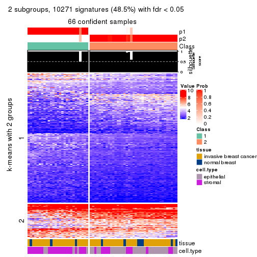
get_signatures(res, k = 3, scale_rows = FALSE)
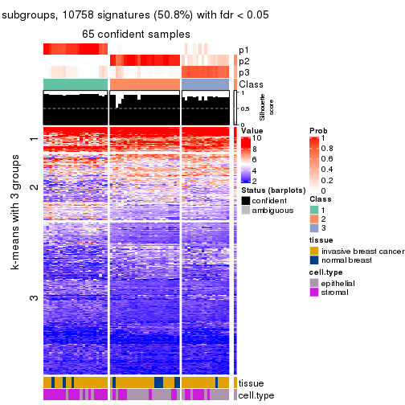
get_signatures(res, k = 4, scale_rows = FALSE)
get_signatures(res, k = 5, scale_rows = FALSE)
get_signatures(res, k = 6, scale_rows = FALSE)
Compare the overlap of signatures from different k:
compare_signatures(res)
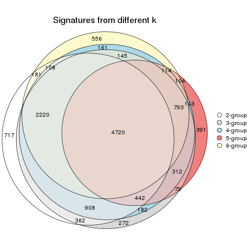
get_signature() returns a data frame invisibly. TO get the list of signatures, the function
call should be assigned to a variable explicitly. In following code, if plot argument is set
to FALSE, no heatmap is plotted while only the differential analysis is performed.
# code only for demonstration
tb = get_signature(res, k = ..., plot = FALSE)
An example of the output of tb is:
#> which_row fdr mean_1 mean_2 scaled_mean_1 scaled_mean_2 km
#> 1 38 0.042760348 8.373488 9.131774 -0.5533452 0.5164555 1
#> 2 40 0.018707592 7.106213 8.469186 -0.6173731 0.5762149 1
#> 3 55 0.019134737 10.221463 11.207825 -0.6159697 0.5749050 1
#> 4 59 0.006059896 5.921854 7.869574 -0.6899429 0.6439467 1
#> 5 60 0.018055526 8.928898 10.211722 -0.6204761 0.5791110 1
#> 6 98 0.009384629 15.714769 14.887706 0.6635654 -0.6193277 2
...
The columns in tb are:
which_row: row indices corresponding to the input matrix.fdr: FDR for the differential test. mean_x: The mean value in group x.scaled_mean_x: The mean value in group x after rows are scaled.km: Row groups if k-means clustering is applied to rows.UMAP plot which shows how samples are separated.
dimension_reduction(res, k = 2, method = "UMAP")
dimension_reduction(res, k = 3, method = "UMAP")

dimension_reduction(res, k = 4, method = "UMAP")

dimension_reduction(res, k = 5, method = "UMAP")
dimension_reduction(res, k = 6, method = "UMAP")
Following heatmap shows how subgroups are split when increasing k:
collect_classes(res)
Test correlation between subgroups and known annotations. If the known annotation is numeric, one-way ANOVA test is applied, and if the known annotation is discrete, chi-squared contingency table test is applied.
test_to_known_factors(res)
#> n tissue(p) cell.type(p) k
#> MAD:kmeans 66 0.680 6.18e-05 2
#> MAD:kmeans 65 0.259 5.16e-04 3
#> MAD:kmeans 61 0.214 1.06e-03 4
#> MAD:kmeans 43 0.124 1.24e-03 5
#> MAD:kmeans 51 0.077 6.29e-04 6
If matrix rows can be associated to genes, consider to use functional_enrichment(res,
...) to perform function enrichment for the signature genes. See this vignette for more detailed explanations.
The object with results only for a single top-value method and a single partition method can be extracted as:
res = res_list["MAD", "skmeans"]
# you can also extract it by
# res = res_list["MAD:skmeans"]
A summary of res and all the functions that can be applied to it:
res
#> A 'ConsensusPartition' object with k = 2, 3, 4, 5, 6.
#> On a matrix with 21163 rows and 66 columns.
#> Top rows (1000, 2000, 3000, 4000, 5000) are extracted by 'MAD' method.
#> Subgroups are detected by 'skmeans' method.
#> Performed in total 1250 partitions by row resampling.
#> Best k for subgroups seems to be 3.
#>
#> Following methods can be applied to this 'ConsensusPartition' object:
#> [1] "cola_report" "collect_classes" "collect_plots"
#> [4] "collect_stats" "colnames" "compare_signatures"
#> [7] "consensus_heatmap" "dimension_reduction" "functional_enrichment"
#> [10] "get_anno_col" "get_anno" "get_classes"
#> [13] "get_consensus" "get_matrix" "get_membership"
#> [16] "get_param" "get_signatures" "get_stats"
#> [19] "is_best_k" "is_stable_k" "membership_heatmap"
#> [22] "ncol" "nrow" "plot_ecdf"
#> [25] "rownames" "select_partition_number" "show"
#> [28] "suggest_best_k" "test_to_known_factors"
collect_plots() function collects all the plots made from res for all k (number of partitions)
into one single page to provide an easy and fast comparison between different k.
collect_plots(res)
The plots are:
k and the heatmap of
predicted classes for each k.k.k.k.All the plots in panels can be made by individual functions and they are plotted later in this section.
select_partition_number() produces several plots showing different
statistics for choosing “optimized” k. There are following statistics:
k;k, the area increased is defined as \(A_k - A_{k-1}\).The detailed explanations of these statistics can be found in the cola vignette.
Generally speaking, lower PAC score, higher mean silhouette score or higher
concordance corresponds to better partition. Rand index and Jaccard index
measure how similar the current partition is compared to partition with k-1.
If they are too similar, we won't accept k is better than k-1.
select_partition_number(res)
The numeric values for all these statistics can be obtained by get_stats().
get_stats(res)
#> k 1-PAC mean_silhouette concordance area_increased Rand Jaccard
#> 2 2 1.000 0.958 0.984 0.5060 0.494 0.494
#> 3 3 1.000 0.975 0.989 0.3030 0.806 0.623
#> 4 4 0.747 0.722 0.815 0.1006 0.948 0.854
#> 5 5 0.683 0.577 0.743 0.0675 0.942 0.816
#> 6 6 0.696 0.570 0.740 0.0416 0.921 0.719
suggest_best_k() suggests the best \(k\) based on these statistics. The rules are as follows:
suggest_best_k(res)
#> [1] 3
#> attr(,"optional")
#> [1] 2
There is also optional best \(k\) = 2 that is worth to check.
Following shows the table of the partitions (You need to click the show/hide
code output link to see it). The membership matrix (columns with name p*)
is inferred by
clue::cl_consensus()
function with the SE method. Basically the value in the membership matrix
represents the probability to belong to a certain group. The finall class
label for an item is determined with the group with highest probability it
belongs to.
In get_classes() function, the entropy is calculated from the membership
matrix and the silhouette score is calculated from the consensus matrix.
cbind(get_classes(res, k = 2), get_membership(res, k = 2))
#> class entropy silhouette p1 p2
#> GSM272727 2 0.000 0.984 0.000 1.000
#> GSM272729 2 0.000 0.984 0.000 1.000
#> GSM272731 2 0.000 0.984 0.000 1.000
#> GSM272733 2 0.000 0.984 0.000 1.000
#> GSM272735 2 0.000 0.984 0.000 1.000
#> GSM272728 2 0.000 0.984 0.000 1.000
#> GSM272730 1 0.000 0.981 1.000 0.000
#> GSM272732 1 0.000 0.981 1.000 0.000
#> GSM272734 1 0.000 0.981 1.000 0.000
#> GSM272736 2 0.000 0.984 0.000 1.000
#> GSM272671 2 0.000 0.984 0.000 1.000
#> GSM272673 2 0.000 0.984 0.000 1.000
#> GSM272675 2 0.000 0.984 0.000 1.000
#> GSM272677 2 0.000 0.984 0.000 1.000
#> GSM272679 2 0.000 0.984 0.000 1.000
#> GSM272681 2 0.000 0.984 0.000 1.000
#> GSM272683 2 0.000 0.984 0.000 1.000
#> GSM272685 2 0.000 0.984 0.000 1.000
#> GSM272687 1 0.311 0.929 0.944 0.056
#> GSM272689 2 0.000 0.984 0.000 1.000
#> GSM272691 2 0.000 0.984 0.000 1.000
#> GSM272693 1 0.000 0.981 1.000 0.000
#> GSM272695 2 0.000 0.984 0.000 1.000
#> GSM272697 2 0.000 0.984 0.000 1.000
#> GSM272699 2 0.000 0.984 0.000 1.000
#> GSM272701 2 0.000 0.984 0.000 1.000
#> GSM272703 2 0.000 0.984 0.000 1.000
#> GSM272705 2 0.000 0.984 0.000 1.000
#> GSM272707 1 0.000 0.981 1.000 0.000
#> GSM272709 2 0.000 0.984 0.000 1.000
#> GSM272711 2 0.000 0.984 0.000 1.000
#> GSM272713 1 0.000 0.981 1.000 0.000
#> GSM272715 2 0.000 0.984 0.000 1.000
#> GSM272717 2 0.000 0.984 0.000 1.000
#> GSM272719 2 0.000 0.984 0.000 1.000
#> GSM272721 1 0.000 0.981 1.000 0.000
#> GSM272723 2 0.000 0.984 0.000 1.000
#> GSM272725 1 0.000 0.981 1.000 0.000
#> GSM272672 2 0.000 0.984 0.000 1.000
#> GSM272674 1 0.000 0.981 1.000 0.000
#> GSM272676 2 0.000 0.984 0.000 1.000
#> GSM272678 2 0.000 0.984 0.000 1.000
#> GSM272680 2 0.311 0.927 0.056 0.944
#> GSM272682 1 0.000 0.981 1.000 0.000
#> GSM272684 1 0.000 0.981 1.000 0.000
#> GSM272686 2 0.995 0.118 0.460 0.540
#> GSM272688 1 0.000 0.981 1.000 0.000
#> GSM272690 1 0.000 0.981 1.000 0.000
#> GSM272692 1 0.000 0.981 1.000 0.000
#> GSM272694 1 0.000 0.981 1.000 0.000
#> GSM272696 1 0.000 0.981 1.000 0.000
#> GSM272698 1 0.595 0.825 0.856 0.144
#> GSM272700 1 0.000 0.981 1.000 0.000
#> GSM272702 1 0.000 0.981 1.000 0.000
#> GSM272704 1 0.000 0.981 1.000 0.000
#> GSM272706 1 0.000 0.981 1.000 0.000
#> GSM272708 1 0.000 0.981 1.000 0.000
#> GSM272710 1 0.000 0.981 1.000 0.000
#> GSM272712 1 0.000 0.981 1.000 0.000
#> GSM272714 1 0.000 0.981 1.000 0.000
#> GSM272716 1 0.000 0.981 1.000 0.000
#> GSM272718 2 0.000 0.984 0.000 1.000
#> GSM272720 1 0.000 0.981 1.000 0.000
#> GSM272722 1 0.925 0.481 0.660 0.340
#> GSM272724 1 0.000 0.981 1.000 0.000
#> GSM272726 1 0.000 0.981 1.000 0.000
cbind(get_classes(res, k = 3), get_membership(res, k = 3))
#> class entropy silhouette p1 p2 p3
#> GSM272727 2 0.0000 0.996 0.000 1.000 0.000
#> GSM272729 3 0.0000 0.985 0.000 0.000 1.000
#> GSM272731 2 0.0000 0.996 0.000 1.000 0.000
#> GSM272733 2 0.0000 0.996 0.000 1.000 0.000
#> GSM272735 2 0.0000 0.996 0.000 1.000 0.000
#> GSM272728 2 0.0000 0.996 0.000 1.000 0.000
#> GSM272730 1 0.0000 0.983 1.000 0.000 0.000
#> GSM272732 1 0.0000 0.983 1.000 0.000 0.000
#> GSM272734 1 0.0000 0.983 1.000 0.000 0.000
#> GSM272736 2 0.0000 0.996 0.000 1.000 0.000
#> GSM272671 3 0.0000 0.985 0.000 0.000 1.000
#> GSM272673 2 0.0000 0.996 0.000 1.000 0.000
#> GSM272675 2 0.0000 0.996 0.000 1.000 0.000
#> GSM272677 2 0.0000 0.996 0.000 1.000 0.000
#> GSM272679 2 0.0000 0.996 0.000 1.000 0.000
#> GSM272681 2 0.0000 0.996 0.000 1.000 0.000
#> GSM272683 3 0.0000 0.985 0.000 0.000 1.000
#> GSM272685 3 0.4654 0.735 0.000 0.208 0.792
#> GSM272687 3 0.0000 0.985 0.000 0.000 1.000
#> GSM272689 2 0.0000 0.996 0.000 1.000 0.000
#> GSM272691 2 0.0000 0.996 0.000 1.000 0.000
#> GSM272693 1 0.0000 0.983 1.000 0.000 0.000
#> GSM272695 2 0.2711 0.902 0.000 0.912 0.088
#> GSM272697 2 0.0000 0.996 0.000 1.000 0.000
#> GSM272699 2 0.0000 0.996 0.000 1.000 0.000
#> GSM272701 3 0.0000 0.985 0.000 0.000 1.000
#> GSM272703 3 0.0000 0.985 0.000 0.000 1.000
#> GSM272705 2 0.0592 0.985 0.000 0.988 0.012
#> GSM272707 1 0.0000 0.983 1.000 0.000 0.000
#> GSM272709 3 0.0000 0.985 0.000 0.000 1.000
#> GSM272711 2 0.0000 0.996 0.000 1.000 0.000
#> GSM272713 1 0.0000 0.983 1.000 0.000 0.000
#> GSM272715 3 0.0000 0.985 0.000 0.000 1.000
#> GSM272717 2 0.0000 0.996 0.000 1.000 0.000
#> GSM272719 2 0.0000 0.996 0.000 1.000 0.000
#> GSM272721 1 0.0000 0.983 1.000 0.000 0.000
#> GSM272723 3 0.0000 0.985 0.000 0.000 1.000
#> GSM272725 1 0.1411 0.952 0.964 0.000 0.036
#> GSM272672 3 0.0000 0.985 0.000 0.000 1.000
#> GSM272674 1 0.0000 0.983 1.000 0.000 0.000
#> GSM272676 2 0.0000 0.996 0.000 1.000 0.000
#> GSM272678 2 0.0000 0.996 0.000 1.000 0.000
#> GSM272680 2 0.0000 0.996 0.000 1.000 0.000
#> GSM272682 1 0.0000 0.983 1.000 0.000 0.000
#> GSM272684 1 0.0000 0.983 1.000 0.000 0.000
#> GSM272686 3 0.0000 0.985 0.000 0.000 1.000
#> GSM272688 1 0.0000 0.983 1.000 0.000 0.000
#> GSM272690 1 0.0000 0.983 1.000 0.000 0.000
#> GSM272692 1 0.0000 0.983 1.000 0.000 0.000
#> GSM272694 1 0.0000 0.983 1.000 0.000 0.000
#> GSM272696 3 0.0000 0.985 0.000 0.000 1.000
#> GSM272698 1 0.5465 0.599 0.712 0.288 0.000
#> GSM272700 1 0.0000 0.983 1.000 0.000 0.000
#> GSM272702 1 0.0000 0.983 1.000 0.000 0.000
#> GSM272704 1 0.0000 0.983 1.000 0.000 0.000
#> GSM272706 1 0.0000 0.983 1.000 0.000 0.000
#> GSM272708 1 0.0237 0.980 0.996 0.000 0.004
#> GSM272710 1 0.0000 0.983 1.000 0.000 0.000
#> GSM272712 1 0.0000 0.983 1.000 0.000 0.000
#> GSM272714 1 0.0000 0.983 1.000 0.000 0.000
#> GSM272716 1 0.2625 0.902 0.916 0.000 0.084
#> GSM272718 2 0.0000 0.996 0.000 1.000 0.000
#> GSM272720 1 0.0000 0.983 1.000 0.000 0.000
#> GSM272722 3 0.0000 0.985 0.000 0.000 1.000
#> GSM272724 3 0.0000 0.985 0.000 0.000 1.000
#> GSM272726 1 0.0000 0.983 1.000 0.000 0.000
cbind(get_classes(res, k = 4), get_membership(res, k = 4))
#> class entropy silhouette p1 p2 p3 p4
#> GSM272727 2 0.4977 0.329 0.000 0.540 0.000 0.460
#> GSM272729 3 0.1022 0.889 0.000 0.000 0.968 0.032
#> GSM272731 2 0.4277 0.552 0.000 0.720 0.000 0.280
#> GSM272733 2 0.4277 0.552 0.000 0.720 0.000 0.280
#> GSM272735 2 0.4277 0.552 0.000 0.720 0.000 0.280
#> GSM272728 2 0.4961 0.352 0.000 0.552 0.000 0.448
#> GSM272730 1 0.1474 0.919 0.948 0.000 0.000 0.052
#> GSM272732 1 0.1557 0.926 0.944 0.000 0.000 0.056
#> GSM272734 1 0.1474 0.923 0.948 0.000 0.000 0.052
#> GSM272736 2 0.4679 0.532 0.000 0.648 0.000 0.352
#> GSM272671 3 0.3486 0.703 0.000 0.000 0.812 0.188
#> GSM272673 2 0.0469 0.677 0.000 0.988 0.000 0.012
#> GSM272675 2 0.1302 0.678 0.000 0.956 0.000 0.044
#> GSM272677 2 0.0336 0.675 0.000 0.992 0.000 0.008
#> GSM272679 2 0.1389 0.678 0.000 0.952 0.000 0.048
#> GSM272681 2 0.3219 0.600 0.000 0.836 0.000 0.164
#> GSM272683 3 0.4477 0.477 0.000 0.000 0.688 0.312
#> GSM272685 4 0.6295 0.559 0.000 0.196 0.144 0.660
#> GSM272687 3 0.0336 0.899 0.000 0.000 0.992 0.008
#> GSM272689 2 0.4996 0.270 0.000 0.516 0.000 0.484
#> GSM272691 2 0.0000 0.677 0.000 1.000 0.000 0.000
#> GSM272693 1 0.0707 0.932 0.980 0.000 0.000 0.020
#> GSM272695 2 0.5352 0.479 0.000 0.740 0.168 0.092
#> GSM272697 2 0.1557 0.676 0.000 0.944 0.000 0.056
#> GSM272699 2 0.4925 0.357 0.000 0.572 0.000 0.428
#> GSM272701 3 0.0336 0.901 0.000 0.000 0.992 0.008
#> GSM272703 3 0.0188 0.902 0.000 0.000 0.996 0.004
#> GSM272705 4 0.5453 0.303 0.000 0.304 0.036 0.660
#> GSM272707 1 0.0000 0.934 1.000 0.000 0.000 0.000
#> GSM272709 3 0.0188 0.902 0.000 0.000 0.996 0.004
#> GSM272711 2 0.1022 0.679 0.000 0.968 0.000 0.032
#> GSM272713 1 0.0000 0.934 1.000 0.000 0.000 0.000
#> GSM272715 4 0.5279 0.480 0.000 0.012 0.400 0.588
#> GSM272717 2 0.4994 0.280 0.000 0.520 0.000 0.480
#> GSM272719 2 0.1389 0.678 0.000 0.952 0.000 0.048
#> GSM272721 1 0.0000 0.934 1.000 0.000 0.000 0.000
#> GSM272723 3 0.0188 0.902 0.000 0.000 0.996 0.004
#> GSM272725 1 0.5397 0.681 0.716 0.000 0.220 0.064
#> GSM272672 4 0.5203 0.439 0.000 0.008 0.416 0.576
#> GSM272674 1 0.2281 0.904 0.904 0.000 0.000 0.096
#> GSM272676 2 0.2973 0.612 0.000 0.856 0.000 0.144
#> GSM272678 2 0.3123 0.604 0.000 0.844 0.000 0.156
#> GSM272680 2 0.4222 0.499 0.000 0.728 0.000 0.272
#> GSM272682 1 0.4164 0.753 0.736 0.000 0.000 0.264
#> GSM272684 1 0.0000 0.934 1.000 0.000 0.000 0.000
#> GSM272686 3 0.2921 0.790 0.000 0.000 0.860 0.140
#> GSM272688 1 0.0000 0.934 1.000 0.000 0.000 0.000
#> GSM272690 1 0.2469 0.898 0.892 0.000 0.000 0.108
#> GSM272692 1 0.0188 0.934 0.996 0.000 0.000 0.004
#> GSM272694 1 0.0000 0.934 1.000 0.000 0.000 0.000
#> GSM272696 3 0.1557 0.866 0.000 0.000 0.944 0.056
#> GSM272698 2 0.7220 0.254 0.176 0.532 0.000 0.292
#> GSM272700 1 0.2469 0.898 0.892 0.000 0.000 0.108
#> GSM272702 1 0.1637 0.916 0.940 0.000 0.000 0.060
#> GSM272704 1 0.1474 0.920 0.948 0.000 0.000 0.052
#> GSM272706 1 0.1557 0.918 0.944 0.000 0.000 0.056
#> GSM272708 1 0.3398 0.873 0.872 0.000 0.060 0.068
#> GSM272710 1 0.0000 0.934 1.000 0.000 0.000 0.000
#> GSM272712 1 0.3052 0.894 0.860 0.000 0.004 0.136
#> GSM272714 1 0.0188 0.934 0.996 0.000 0.000 0.004
#> GSM272716 1 0.4088 0.757 0.764 0.000 0.004 0.232
#> GSM272718 2 0.4994 0.280 0.000 0.520 0.000 0.480
#> GSM272720 1 0.2469 0.898 0.892 0.000 0.000 0.108
#> GSM272722 3 0.0469 0.898 0.000 0.000 0.988 0.012
#> GSM272724 3 0.1557 0.865 0.000 0.000 0.944 0.056
#> GSM272726 1 0.0000 0.934 1.000 0.000 0.000 0.000
cbind(get_classes(res, k = 5), get_membership(res, k = 5))
#> class entropy silhouette p1 p2 p3 p4 p5
#> GSM272727 2 0.3551 0.4613 0.000 0.772 0.008 0.000 0.220
#> GSM272729 3 0.0794 0.8154 0.000 0.000 0.972 0.000 0.028
#> GSM272731 2 0.3309 0.4949 0.000 0.836 0.000 0.036 0.128
#> GSM272733 2 0.3229 0.4962 0.000 0.840 0.000 0.032 0.128
#> GSM272735 2 0.3309 0.4949 0.000 0.836 0.000 0.036 0.128
#> GSM272728 2 0.3398 0.4745 0.000 0.780 0.000 0.004 0.216
#> GSM272730 1 0.2685 0.7917 0.880 0.000 0.000 0.028 0.092
#> GSM272732 1 0.4660 0.7502 0.772 0.068 0.000 0.132 0.028
#> GSM272734 1 0.3246 0.7590 0.808 0.000 0.000 0.184 0.008
#> GSM272736 2 0.4989 0.3604 0.000 0.708 0.000 0.168 0.124
#> GSM272671 3 0.3336 0.5957 0.000 0.000 0.772 0.000 0.228
#> GSM272673 2 0.4655 0.3754 0.000 0.644 0.000 0.328 0.028
#> GSM272675 2 0.4967 0.4184 0.000 0.660 0.000 0.280 0.060
#> GSM272677 2 0.4384 0.3606 0.000 0.660 0.000 0.324 0.016
#> GSM272679 2 0.5252 0.4108 0.000 0.632 0.000 0.292 0.076
#> GSM272681 4 0.4517 0.1499 0.000 0.436 0.000 0.556 0.008
#> GSM272683 3 0.4278 -0.0446 0.000 0.000 0.548 0.000 0.452
#> GSM272685 5 0.4503 0.7735 0.000 0.124 0.120 0.000 0.756
#> GSM272687 3 0.1341 0.8094 0.000 0.000 0.944 0.000 0.056
#> GSM272689 2 0.5019 0.2297 0.000 0.532 0.000 0.032 0.436
#> GSM272691 2 0.3814 0.3704 0.000 0.720 0.000 0.276 0.004
#> GSM272693 1 0.1892 0.8173 0.916 0.000 0.000 0.080 0.004
#> GSM272695 2 0.7721 0.2346 0.000 0.456 0.132 0.288 0.124
#> GSM272697 2 0.5452 0.4077 0.000 0.616 0.000 0.292 0.092
#> GSM272699 2 0.6269 0.3610 0.000 0.512 0.012 0.112 0.364
#> GSM272701 3 0.0290 0.8248 0.000 0.000 0.992 0.000 0.008
#> GSM272703 3 0.0290 0.8248 0.000 0.000 0.992 0.000 0.008
#> GSM272705 5 0.5246 0.6944 0.000 0.152 0.052 0.064 0.732
#> GSM272707 1 0.0671 0.8306 0.980 0.000 0.000 0.016 0.004
#> GSM272709 3 0.0290 0.8248 0.000 0.000 0.992 0.000 0.008
#> GSM272711 2 0.4562 0.4059 0.000 0.676 0.000 0.292 0.032
#> GSM272713 1 0.0000 0.8317 1.000 0.000 0.000 0.000 0.000
#> GSM272715 5 0.4468 0.7230 0.000 0.024 0.276 0.004 0.696
#> GSM272717 2 0.5261 0.2901 0.000 0.528 0.000 0.048 0.424
#> GSM272719 2 0.4666 0.4130 0.000 0.676 0.000 0.284 0.040
#> GSM272721 1 0.0000 0.8317 1.000 0.000 0.000 0.000 0.000
#> GSM272723 3 0.0290 0.8248 0.000 0.000 0.992 0.000 0.008
#> GSM272725 1 0.7180 0.4624 0.544 0.000 0.168 0.076 0.212
#> GSM272672 5 0.5025 0.7239 0.000 0.040 0.264 0.016 0.680
#> GSM272674 1 0.3783 0.7117 0.740 0.000 0.000 0.252 0.008
#> GSM272676 4 0.4497 0.2084 0.000 0.424 0.000 0.568 0.008
#> GSM272678 4 0.4182 0.2638 0.000 0.400 0.000 0.600 0.000
#> GSM272680 4 0.3461 0.3850 0.000 0.224 0.000 0.772 0.004
#> GSM272682 4 0.4546 -0.3779 0.460 0.000 0.000 0.532 0.008
#> GSM272684 1 0.0290 0.8306 0.992 0.000 0.000 0.008 0.000
#> GSM272686 3 0.3690 0.6356 0.000 0.000 0.764 0.012 0.224
#> GSM272688 1 0.0000 0.8317 1.000 0.000 0.000 0.000 0.000
#> GSM272690 1 0.3980 0.6837 0.708 0.000 0.000 0.284 0.008
#> GSM272692 1 0.1357 0.8232 0.948 0.000 0.000 0.048 0.004
#> GSM272694 1 0.0000 0.8317 1.000 0.000 0.000 0.000 0.000
#> GSM272696 3 0.4065 0.6913 0.000 0.000 0.772 0.048 0.180
#> GSM272698 4 0.3174 0.3667 0.080 0.036 0.000 0.868 0.016
#> GSM272700 1 0.3910 0.6920 0.720 0.000 0.000 0.272 0.008
#> GSM272702 1 0.3825 0.7446 0.804 0.000 0.000 0.060 0.136
#> GSM272704 1 0.2535 0.7983 0.892 0.000 0.000 0.032 0.076
#> GSM272706 1 0.3242 0.7729 0.844 0.000 0.000 0.040 0.116
#> GSM272708 1 0.6466 0.5732 0.620 0.000 0.076 0.092 0.212
#> GSM272710 1 0.0000 0.8317 1.000 0.000 0.000 0.000 0.000
#> GSM272712 1 0.4823 0.6831 0.672 0.000 0.000 0.276 0.052
#> GSM272714 1 0.0162 0.8312 0.996 0.000 0.000 0.004 0.000
#> GSM272716 1 0.5488 0.2996 0.496 0.000 0.004 0.052 0.448
#> GSM272718 2 0.5267 0.2800 0.000 0.524 0.000 0.048 0.428
#> GSM272720 1 0.4040 0.6886 0.712 0.000 0.000 0.276 0.012
#> GSM272722 3 0.1478 0.8064 0.000 0.000 0.936 0.000 0.064
#> GSM272724 3 0.3883 0.6967 0.000 0.000 0.780 0.036 0.184
#> GSM272726 1 0.0000 0.8317 1.000 0.000 0.000 0.000 0.000
cbind(get_classes(res, k = 6), get_membership(res, k = 6))
#> class entropy silhouette p1 p2 p3 p4 p5 p6
#> GSM272727 6 0.5782 0.7452 0.000 0.312 0.004 0.004 0.156 0.524
#> GSM272729 3 0.1788 0.8091 0.000 0.000 0.916 0.004 0.076 0.004
#> GSM272731 6 0.4660 0.8579 0.000 0.344 0.000 0.000 0.056 0.600
#> GSM272733 6 0.4660 0.8579 0.000 0.344 0.000 0.000 0.056 0.600
#> GSM272735 6 0.4660 0.8579 0.000 0.344 0.000 0.000 0.056 0.600
#> GSM272728 6 0.5552 0.7726 0.000 0.328 0.000 0.004 0.136 0.532
#> GSM272730 1 0.3827 0.6922 0.808 0.000 0.004 0.068 0.020 0.100
#> GSM272732 1 0.5038 0.5906 0.664 0.000 0.000 0.152 0.008 0.176
#> GSM272734 1 0.3558 0.6645 0.780 0.000 0.000 0.184 0.004 0.032
#> GSM272736 6 0.5328 0.7634 0.000 0.272 0.000 0.060 0.044 0.624
#> GSM272671 3 0.3541 0.5974 0.000 0.000 0.728 0.000 0.260 0.012
#> GSM272673 2 0.2034 0.5656 0.000 0.912 0.000 0.024 0.004 0.060
#> GSM272675 2 0.1088 0.5808 0.000 0.960 0.000 0.000 0.016 0.024
#> GSM272677 2 0.2555 0.5375 0.000 0.876 0.000 0.020 0.008 0.096
#> GSM272679 2 0.0837 0.5856 0.000 0.972 0.000 0.004 0.020 0.004
#> GSM272681 2 0.4911 0.4117 0.000 0.680 0.000 0.208 0.016 0.096
#> GSM272683 5 0.4064 0.2812 0.000 0.000 0.360 0.000 0.624 0.016
#> GSM272685 5 0.3125 0.6549 0.000 0.076 0.016 0.000 0.852 0.056
#> GSM272687 3 0.0603 0.8309 0.000 0.000 0.980 0.004 0.000 0.016
#> GSM272689 2 0.6217 -0.2284 0.000 0.408 0.000 0.008 0.344 0.240
#> GSM272691 2 0.3189 0.3412 0.000 0.760 0.000 0.004 0.000 0.236
#> GSM272693 1 0.2405 0.7294 0.880 0.000 0.000 0.100 0.004 0.016
#> GSM272695 2 0.3314 0.5116 0.000 0.820 0.128 0.004 0.048 0.000
#> GSM272697 2 0.1226 0.5830 0.000 0.952 0.000 0.004 0.040 0.004
#> GSM272699 2 0.5035 0.2233 0.000 0.620 0.004 0.004 0.292 0.080
#> GSM272701 3 0.0806 0.8369 0.000 0.008 0.972 0.000 0.020 0.000
#> GSM272703 3 0.0806 0.8369 0.000 0.008 0.972 0.000 0.020 0.000
#> GSM272705 5 0.3175 0.6561 0.000 0.076 0.004 0.012 0.852 0.056
#> GSM272707 1 0.2000 0.7556 0.916 0.000 0.000 0.048 0.004 0.032
#> GSM272709 3 0.0806 0.8369 0.000 0.008 0.972 0.000 0.020 0.000
#> GSM272711 2 0.0865 0.5761 0.000 0.964 0.000 0.000 0.000 0.036
#> GSM272713 1 0.1168 0.7587 0.956 0.000 0.000 0.016 0.000 0.028
#> GSM272715 5 0.2965 0.7019 0.000 0.024 0.080 0.008 0.868 0.020
#> GSM272717 2 0.5828 -0.0648 0.000 0.480 0.000 0.004 0.344 0.172
#> GSM272719 2 0.0858 0.5812 0.000 0.968 0.000 0.000 0.004 0.028
#> GSM272721 1 0.1176 0.7574 0.956 0.000 0.000 0.024 0.000 0.020
#> GSM272723 3 0.1065 0.8363 0.000 0.008 0.964 0.000 0.020 0.008
#> GSM272725 1 0.7933 0.2270 0.408 0.000 0.096 0.196 0.060 0.240
#> GSM272672 5 0.2577 0.7050 0.000 0.012 0.052 0.020 0.896 0.020
#> GSM272674 1 0.3875 0.5874 0.700 0.000 0.000 0.280 0.004 0.016
#> GSM272676 2 0.5407 0.1803 0.000 0.560 0.000 0.332 0.012 0.096
#> GSM272678 2 0.5678 0.1253 0.000 0.524 0.000 0.340 0.012 0.124
#> GSM272680 4 0.5528 0.2620 0.000 0.336 0.000 0.556 0.024 0.084
#> GSM272682 4 0.3615 0.2757 0.292 0.000 0.000 0.700 0.000 0.008
#> GSM272684 1 0.0603 0.7584 0.980 0.000 0.000 0.004 0.000 0.016
#> GSM272686 3 0.5451 0.3878 0.000 0.000 0.572 0.044 0.332 0.052
#> GSM272688 1 0.0291 0.7578 0.992 0.000 0.000 0.004 0.000 0.004
#> GSM272690 1 0.4646 0.4313 0.580 0.000 0.000 0.380 0.008 0.032
#> GSM272692 1 0.1745 0.7461 0.924 0.000 0.000 0.056 0.000 0.020
#> GSM272694 1 0.0914 0.7587 0.968 0.000 0.000 0.016 0.000 0.016
#> GSM272696 3 0.5505 0.5827 0.000 0.000 0.652 0.132 0.044 0.172
#> GSM272698 4 0.5038 0.5774 0.060 0.140 0.000 0.728 0.016 0.056
#> GSM272700 1 0.4241 0.4979 0.628 0.000 0.000 0.348 0.004 0.020
#> GSM272702 1 0.5113 0.6018 0.700 0.000 0.008 0.128 0.024 0.140
#> GSM272704 1 0.3541 0.6978 0.824 0.000 0.000 0.068 0.020 0.088
#> GSM272706 1 0.4737 0.6297 0.732 0.000 0.004 0.120 0.024 0.120
#> GSM272708 1 0.7318 0.2691 0.432 0.000 0.032 0.220 0.052 0.264
#> GSM272710 1 0.1082 0.7571 0.956 0.000 0.000 0.040 0.000 0.004
#> GSM272712 1 0.5686 0.3800 0.508 0.000 0.004 0.388 0.024 0.076
#> GSM272714 1 0.0993 0.7572 0.964 0.000 0.000 0.024 0.000 0.012
#> GSM272716 5 0.7000 0.1463 0.312 0.000 0.004 0.112 0.444 0.128
#> GSM272718 2 0.5902 -0.1049 0.000 0.452 0.000 0.004 0.364 0.180
#> GSM272720 1 0.4302 0.5019 0.628 0.000 0.000 0.344 0.004 0.024
#> GSM272722 3 0.0622 0.8286 0.000 0.000 0.980 0.000 0.008 0.012
#> GSM272724 3 0.4661 0.6687 0.000 0.000 0.732 0.088 0.032 0.148
#> GSM272726 1 0.1176 0.7596 0.956 0.000 0.000 0.024 0.000 0.020
Heatmaps for the consensus matrix. It visualizes the probability of two samples to be in a same group.
consensus_heatmap(res, k = 2)
consensus_heatmap(res, k = 3)
consensus_heatmap(res, k = 4)
consensus_heatmap(res, k = 5)
consensus_heatmap(res, k = 6)
Heatmaps for the membership of samples in all partitions to see how consistent they are:
membership_heatmap(res, k = 2)
membership_heatmap(res, k = 3)
membership_heatmap(res, k = 4)
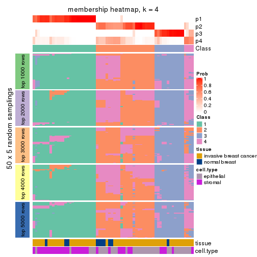
membership_heatmap(res, k = 5)
membership_heatmap(res, k = 6)
As soon as we have had the classes for columns, we can look for signatures which are significantly different between classes which can be candidate marks for certain classes. Following are the heatmaps for signatures.
Signature heatmaps where rows are scaled:
get_signatures(res, k = 2)
get_signatures(res, k = 3)
get_signatures(res, k = 4)
get_signatures(res, k = 5)
get_signatures(res, k = 6)
Signature heatmaps where rows are not scaled:
get_signatures(res, k = 2, scale_rows = FALSE)
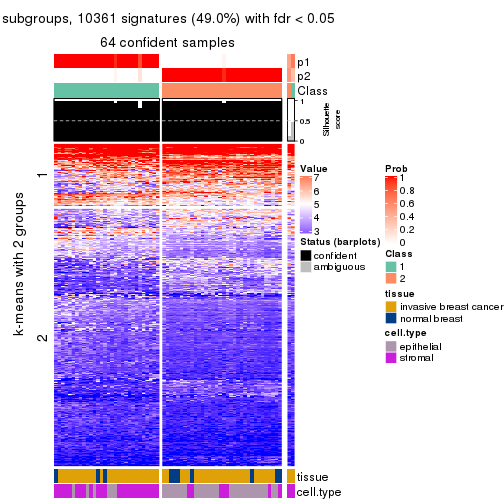
get_signatures(res, k = 3, scale_rows = FALSE)
get_signatures(res, k = 4, scale_rows = FALSE)
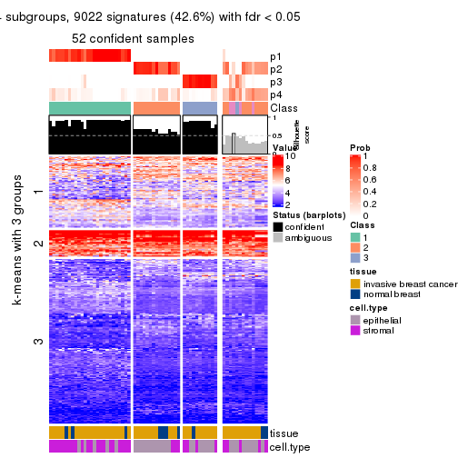
get_signatures(res, k = 5, scale_rows = FALSE)
get_signatures(res, k = 6, scale_rows = FALSE)
Compare the overlap of signatures from different k:
compare_signatures(res)
get_signature() returns a data frame invisibly. TO get the list of signatures, the function
call should be assigned to a variable explicitly. In following code, if plot argument is set
to FALSE, no heatmap is plotted while only the differential analysis is performed.
# code only for demonstration
tb = get_signature(res, k = ..., plot = FALSE)
An example of the output of tb is:
#> which_row fdr mean_1 mean_2 scaled_mean_1 scaled_mean_2 km
#> 1 38 0.042760348 8.373488 9.131774 -0.5533452 0.5164555 1
#> 2 40 0.018707592 7.106213 8.469186 -0.6173731 0.5762149 1
#> 3 55 0.019134737 10.221463 11.207825 -0.6159697 0.5749050 1
#> 4 59 0.006059896 5.921854 7.869574 -0.6899429 0.6439467 1
#> 5 60 0.018055526 8.928898 10.211722 -0.6204761 0.5791110 1
#> 6 98 0.009384629 15.714769 14.887706 0.6635654 -0.6193277 2
...
The columns in tb are:
which_row: row indices corresponding to the input matrix.fdr: FDR for the differential test. mean_x: The mean value in group x.scaled_mean_x: The mean value in group x after rows are scaled.km: Row groups if k-means clustering is applied to rows.UMAP plot which shows how samples are separated.
dimension_reduction(res, k = 2, method = "UMAP")
dimension_reduction(res, k = 3, method = "UMAP")
dimension_reduction(res, k = 4, method = "UMAP")
dimension_reduction(res, k = 5, method = "UMAP")
dimension_reduction(res, k = 6, method = "UMAP")
Following heatmap shows how subgroups are split when increasing k:
collect_classes(res)
Test correlation between subgroups and known annotations. If the known annotation is numeric, one-way ANOVA test is applied, and if the known annotation is discrete, chi-squared contingency table test is applied.
test_to_known_factors(res)
#> n tissue(p) cell.type(p) k
#> MAD:skmeans 64 4.13e-01 6.95e-06 2
#> MAD:skmeans 66 2.24e-01 1.03e-04 3
#> MAD:skmeans 53 5.10e-01 7.24e-04 4
#> MAD:skmeans 38 7.23e-01 8.08e-03 5
#> MAD:skmeans 48 5.15e-05 2.45e-03 6
If matrix rows can be associated to genes, consider to use functional_enrichment(res,
...) to perform function enrichment for the signature genes. See this vignette for more detailed explanations.
The object with results only for a single top-value method and a single partition method can be extracted as:
res = res_list["MAD", "pam"]
# you can also extract it by
# res = res_list["MAD:pam"]
A summary of res and all the functions that can be applied to it:
res
#> A 'ConsensusPartition' object with k = 2, 3, 4, 5, 6.
#> On a matrix with 21163 rows and 66 columns.
#> Top rows (1000, 2000, 3000, 4000, 5000) are extracted by 'MAD' method.
#> Subgroups are detected by 'pam' method.
#> Performed in total 1250 partitions by row resampling.
#> Best k for subgroups seems to be 2.
#>
#> Following methods can be applied to this 'ConsensusPartition' object:
#> [1] "cola_report" "collect_classes" "collect_plots"
#> [4] "collect_stats" "colnames" "compare_signatures"
#> [7] "consensus_heatmap" "dimension_reduction" "functional_enrichment"
#> [10] "get_anno_col" "get_anno" "get_classes"
#> [13] "get_consensus" "get_matrix" "get_membership"
#> [16] "get_param" "get_signatures" "get_stats"
#> [19] "is_best_k" "is_stable_k" "membership_heatmap"
#> [22] "ncol" "nrow" "plot_ecdf"
#> [25] "rownames" "select_partition_number" "show"
#> [28] "suggest_best_k" "test_to_known_factors"
collect_plots() function collects all the plots made from res for all k (number of partitions)
into one single page to provide an easy and fast comparison between different k.
collect_plots(res)
The plots are:
k and the heatmap of
predicted classes for each k.k.k.k.All the plots in panels can be made by individual functions and they are plotted later in this section.
select_partition_number() produces several plots showing different
statistics for choosing “optimized” k. There are following statistics:
k;k, the area increased is defined as \(A_k - A_{k-1}\).The detailed explanations of these statistics can be found in the cola vignette.
Generally speaking, lower PAC score, higher mean silhouette score or higher
concordance corresponds to better partition. Rand index and Jaccard index
measure how similar the current partition is compared to partition with k-1.
If they are too similar, we won't accept k is better than k-1.
select_partition_number(res)
The numeric values for all these statistics can be obtained by get_stats().
get_stats(res)
#> k 1-PAC mean_silhouette concordance area_increased Rand Jaccard
#> 2 2 0.935 0.941 0.974 0.5048 0.494 0.494
#> 3 3 0.898 0.923 0.964 0.2964 0.768 0.568
#> 4 4 0.787 0.812 0.906 0.0781 0.958 0.880
#> 5 5 0.711 0.731 0.856 0.1068 0.889 0.654
#> 6 6 0.795 0.719 0.868 0.0492 0.953 0.793
suggest_best_k() suggests the best \(k\) based on these statistics. The rules are as follows:
suggest_best_k(res)
#> [1] 2
Following shows the table of the partitions (You need to click the show/hide
code output link to see it). The membership matrix (columns with name p*)
is inferred by
clue::cl_consensus()
function with the SE method. Basically the value in the membership matrix
represents the probability to belong to a certain group. The finall class
label for an item is determined with the group with highest probability it
belongs to.
In get_classes() function, the entropy is calculated from the membership
matrix and the silhouette score is calculated from the consensus matrix.
cbind(get_classes(res, k = 2), get_membership(res, k = 2))
#> class entropy silhouette p1 p2
#> GSM272727 2 0.0000 0.972 0.000 1.000
#> GSM272729 2 0.0000 0.972 0.000 1.000
#> GSM272731 2 0.0000 0.972 0.000 1.000
#> GSM272733 2 0.0000 0.972 0.000 1.000
#> GSM272735 2 0.0000 0.972 0.000 1.000
#> GSM272728 2 0.0000 0.972 0.000 1.000
#> GSM272730 1 0.0000 0.972 1.000 0.000
#> GSM272732 2 0.0000 0.972 0.000 1.000
#> GSM272734 1 0.8861 0.566 0.696 0.304
#> GSM272736 2 0.0000 0.972 0.000 1.000
#> GSM272671 2 0.0000 0.972 0.000 1.000
#> GSM272673 2 0.0000 0.972 0.000 1.000
#> GSM272675 2 0.0000 0.972 0.000 1.000
#> GSM272677 2 0.0000 0.972 0.000 1.000
#> GSM272679 2 0.0000 0.972 0.000 1.000
#> GSM272681 2 0.0000 0.972 0.000 1.000
#> GSM272683 2 0.1414 0.958 0.020 0.980
#> GSM272685 2 0.0000 0.972 0.000 1.000
#> GSM272687 1 0.0000 0.972 1.000 0.000
#> GSM272689 2 0.0000 0.972 0.000 1.000
#> GSM272691 2 0.0000 0.972 0.000 1.000
#> GSM272693 1 0.2778 0.929 0.952 0.048
#> GSM272695 2 0.0376 0.969 0.004 0.996
#> GSM272697 2 0.0000 0.972 0.000 1.000
#> GSM272699 2 0.0000 0.972 0.000 1.000
#> GSM272701 2 0.4298 0.899 0.088 0.912
#> GSM272703 2 0.1184 0.961 0.016 0.984
#> GSM272705 2 0.0000 0.972 0.000 1.000
#> GSM272707 1 0.0000 0.972 1.000 0.000
#> GSM272709 2 0.4431 0.895 0.092 0.908
#> GSM272711 2 0.0000 0.972 0.000 1.000
#> GSM272713 1 0.0000 0.972 1.000 0.000
#> GSM272715 2 0.0000 0.972 0.000 1.000
#> GSM272717 2 0.0000 0.972 0.000 1.000
#> GSM272719 2 0.0000 0.972 0.000 1.000
#> GSM272721 1 0.0000 0.972 1.000 0.000
#> GSM272723 2 0.7299 0.759 0.204 0.796
#> GSM272725 1 0.0000 0.972 1.000 0.000
#> GSM272672 2 0.7528 0.739 0.216 0.784
#> GSM272674 1 0.0000 0.972 1.000 0.000
#> GSM272676 2 0.0672 0.967 0.008 0.992
#> GSM272678 2 0.0000 0.972 0.000 1.000
#> GSM272680 2 0.8713 0.609 0.292 0.708
#> GSM272682 1 0.0000 0.972 1.000 0.000
#> GSM272684 1 0.0000 0.972 1.000 0.000
#> GSM272686 1 0.0000 0.972 1.000 0.000
#> GSM272688 1 0.0000 0.972 1.000 0.000
#> GSM272690 1 0.0000 0.972 1.000 0.000
#> GSM272692 1 0.0000 0.972 1.000 0.000
#> GSM272694 1 0.0000 0.972 1.000 0.000
#> GSM272696 1 0.0000 0.972 1.000 0.000
#> GSM272698 1 0.9209 0.478 0.664 0.336
#> GSM272700 1 0.0000 0.972 1.000 0.000
#> GSM272702 1 0.0000 0.972 1.000 0.000
#> GSM272704 1 0.0000 0.972 1.000 0.000
#> GSM272706 1 0.0000 0.972 1.000 0.000
#> GSM272708 1 0.0000 0.972 1.000 0.000
#> GSM272710 1 0.0000 0.972 1.000 0.000
#> GSM272712 1 0.0000 0.972 1.000 0.000
#> GSM272714 1 0.0000 0.972 1.000 0.000
#> GSM272716 1 0.0000 0.972 1.000 0.000
#> GSM272718 2 0.0000 0.972 0.000 1.000
#> GSM272720 1 0.0000 0.972 1.000 0.000
#> GSM272722 1 0.5294 0.850 0.880 0.120
#> GSM272724 1 0.0000 0.972 1.000 0.000
#> GSM272726 1 0.0000 0.972 1.000 0.000
cbind(get_classes(res, k = 3), get_membership(res, k = 3))
#> class entropy silhouette p1 p2 p3
#> GSM272727 2 0.0000 0.964 0.000 1.000 0.000
#> GSM272729 3 0.0237 0.966 0.000 0.004 0.996
#> GSM272731 2 0.0000 0.964 0.000 1.000 0.000
#> GSM272733 2 0.0000 0.964 0.000 1.000 0.000
#> GSM272735 2 0.0000 0.964 0.000 1.000 0.000
#> GSM272728 2 0.0000 0.964 0.000 1.000 0.000
#> GSM272730 1 0.0892 0.942 0.980 0.000 0.020
#> GSM272732 2 0.3340 0.845 0.120 0.880 0.000
#> GSM272734 1 0.2261 0.903 0.932 0.068 0.000
#> GSM272736 2 0.0000 0.964 0.000 1.000 0.000
#> GSM272671 3 0.0000 0.967 0.000 0.000 1.000
#> GSM272673 2 0.0237 0.964 0.000 0.996 0.004
#> GSM272675 2 0.0237 0.964 0.000 0.996 0.004
#> GSM272677 2 0.0000 0.964 0.000 1.000 0.000
#> GSM272679 2 0.0592 0.960 0.000 0.988 0.012
#> GSM272681 2 0.0237 0.964 0.000 0.996 0.004
#> GSM272683 3 0.0000 0.967 0.000 0.000 1.000
#> GSM272685 2 0.3941 0.834 0.000 0.844 0.156
#> GSM272687 3 0.0747 0.961 0.016 0.000 0.984
#> GSM272689 2 0.0000 0.964 0.000 1.000 0.000
#> GSM272691 2 0.0000 0.964 0.000 1.000 0.000
#> GSM272693 1 0.1411 0.930 0.964 0.036 0.000
#> GSM272695 3 0.1964 0.931 0.000 0.056 0.944
#> GSM272697 2 0.0424 0.962 0.000 0.992 0.008
#> GSM272699 3 0.2796 0.896 0.000 0.092 0.908
#> GSM272701 3 0.0000 0.967 0.000 0.000 1.000
#> GSM272703 3 0.0000 0.967 0.000 0.000 1.000
#> GSM272705 2 0.3879 0.840 0.000 0.848 0.152
#> GSM272707 1 0.0000 0.953 1.000 0.000 0.000
#> GSM272709 3 0.0000 0.967 0.000 0.000 1.000
#> GSM272711 2 0.0237 0.964 0.000 0.996 0.004
#> GSM272713 1 0.1289 0.933 0.968 0.000 0.032
#> GSM272715 3 0.0848 0.962 0.008 0.008 0.984
#> GSM272717 2 0.1753 0.933 0.000 0.952 0.048
#> GSM272719 2 0.0237 0.964 0.000 0.996 0.004
#> GSM272721 1 0.0000 0.953 1.000 0.000 0.000
#> GSM272723 3 0.0000 0.967 0.000 0.000 1.000
#> GSM272725 1 0.0000 0.953 1.000 0.000 0.000
#> GSM272672 1 0.7424 0.511 0.640 0.060 0.300
#> GSM272674 1 0.0000 0.953 1.000 0.000 0.000
#> GSM272676 2 0.3116 0.860 0.108 0.892 0.000
#> GSM272678 2 0.0000 0.964 0.000 1.000 0.000
#> GSM272680 1 0.2448 0.893 0.924 0.076 0.000
#> GSM272682 1 0.0000 0.953 1.000 0.000 0.000
#> GSM272684 1 0.0000 0.953 1.000 0.000 0.000
#> GSM272686 3 0.0237 0.966 0.004 0.000 0.996
#> GSM272688 1 0.0000 0.953 1.000 0.000 0.000
#> GSM272690 1 0.0000 0.953 1.000 0.000 0.000
#> GSM272692 1 0.0000 0.953 1.000 0.000 0.000
#> GSM272694 1 0.0000 0.953 1.000 0.000 0.000
#> GSM272696 1 0.1753 0.919 0.952 0.000 0.048
#> GSM272698 1 0.6260 0.159 0.552 0.448 0.000
#> GSM272700 1 0.0000 0.953 1.000 0.000 0.000
#> GSM272702 1 0.0000 0.953 1.000 0.000 0.000
#> GSM272704 1 0.0000 0.953 1.000 0.000 0.000
#> GSM272706 1 0.0000 0.953 1.000 0.000 0.000
#> GSM272708 1 0.0000 0.953 1.000 0.000 0.000
#> GSM272710 1 0.0000 0.953 1.000 0.000 0.000
#> GSM272712 1 0.0000 0.953 1.000 0.000 0.000
#> GSM272714 1 0.0000 0.953 1.000 0.000 0.000
#> GSM272716 1 0.3686 0.827 0.860 0.000 0.140
#> GSM272718 2 0.2959 0.892 0.000 0.900 0.100
#> GSM272720 1 0.0000 0.953 1.000 0.000 0.000
#> GSM272722 3 0.1860 0.936 0.052 0.000 0.948
#> GSM272724 3 0.3941 0.821 0.156 0.000 0.844
#> GSM272726 1 0.0000 0.953 1.000 0.000 0.000
cbind(get_classes(res, k = 4), get_membership(res, k = 4))
#> class entropy silhouette p1 p2 p3 p4
#> GSM272727 2 0.0000 0.8512 0.000 1.000 0.000 0.000
#> GSM272729 3 0.0188 0.9195 0.000 0.004 0.996 0.000
#> GSM272731 2 0.0000 0.8512 0.000 1.000 0.000 0.000
#> GSM272733 2 0.0000 0.8512 0.000 1.000 0.000 0.000
#> GSM272735 2 0.0000 0.8512 0.000 1.000 0.000 0.000
#> GSM272728 2 0.1474 0.8219 0.000 0.948 0.000 0.052
#> GSM272730 1 0.1389 0.8957 0.952 0.000 0.048 0.000
#> GSM272732 2 0.2530 0.7287 0.100 0.896 0.000 0.004
#> GSM272734 1 0.4106 0.8343 0.832 0.084 0.000 0.084
#> GSM272736 2 0.0000 0.8512 0.000 1.000 0.000 0.000
#> GSM272671 3 0.0000 0.9211 0.000 0.000 1.000 0.000
#> GSM272673 2 0.1489 0.8439 0.000 0.952 0.004 0.044
#> GSM272675 4 0.1576 0.7670 0.000 0.048 0.004 0.948
#> GSM272677 2 0.3764 0.7654 0.000 0.784 0.000 0.216
#> GSM272679 2 0.5004 0.3877 0.000 0.604 0.004 0.392
#> GSM272681 2 0.2654 0.8243 0.000 0.888 0.004 0.108
#> GSM272683 3 0.0000 0.9211 0.000 0.000 1.000 0.000
#> GSM272685 4 0.6492 0.5652 0.000 0.144 0.220 0.636
#> GSM272687 3 0.1211 0.8964 0.040 0.000 0.960 0.000
#> GSM272689 2 0.0000 0.8512 0.000 1.000 0.000 0.000
#> GSM272691 2 0.0000 0.8512 0.000 1.000 0.000 0.000
#> GSM272693 1 0.0707 0.9120 0.980 0.020 0.000 0.000
#> GSM272695 3 0.4872 0.6860 0.000 0.076 0.776 0.148
#> GSM272697 4 0.4950 0.2374 0.000 0.376 0.004 0.620
#> GSM272699 3 0.3497 0.7829 0.000 0.124 0.852 0.024
#> GSM272701 3 0.0188 0.9198 0.000 0.000 0.996 0.004
#> GSM272703 3 0.0000 0.9211 0.000 0.000 1.000 0.000
#> GSM272705 2 0.4284 0.5893 0.012 0.764 0.224 0.000
#> GSM272707 1 0.0000 0.9126 1.000 0.000 0.000 0.000
#> GSM272709 3 0.0000 0.9211 0.000 0.000 1.000 0.000
#> GSM272711 2 0.3751 0.7615 0.000 0.800 0.004 0.196
#> GSM272713 1 0.2926 0.8774 0.896 0.000 0.056 0.048
#> GSM272715 3 0.0927 0.9080 0.016 0.008 0.976 0.000
#> GSM272717 4 0.2345 0.7711 0.000 0.100 0.000 0.900
#> GSM272719 2 0.3710 0.7636 0.000 0.804 0.004 0.192
#> GSM272721 1 0.0336 0.9134 0.992 0.000 0.000 0.008
#> GSM272723 3 0.0000 0.9211 0.000 0.000 1.000 0.000
#> GSM272725 1 0.0188 0.9126 0.996 0.000 0.004 0.000
#> GSM272672 1 0.7158 0.3067 0.512 0.148 0.340 0.000
#> GSM272674 1 0.0817 0.9127 0.976 0.000 0.000 0.024
#> GSM272676 2 0.4295 0.7350 0.008 0.752 0.000 0.240
#> GSM272678 2 0.3649 0.7737 0.000 0.796 0.000 0.204
#> GSM272680 1 0.5226 0.6733 0.744 0.180 0.000 0.076
#> GSM272682 1 0.1661 0.8946 0.944 0.004 0.000 0.052
#> GSM272684 1 0.1389 0.9085 0.952 0.000 0.000 0.048
#> GSM272686 3 0.0188 0.9198 0.004 0.000 0.996 0.000
#> GSM272688 1 0.1389 0.9085 0.952 0.000 0.000 0.048
#> GSM272690 1 0.1792 0.8975 0.932 0.000 0.000 0.068
#> GSM272692 1 0.1389 0.9085 0.952 0.000 0.000 0.048
#> GSM272694 1 0.1389 0.9085 0.952 0.000 0.000 0.048
#> GSM272696 1 0.1557 0.8893 0.944 0.000 0.056 0.000
#> GSM272698 1 0.6187 0.0845 0.516 0.432 0.000 0.052
#> GSM272700 1 0.1118 0.9088 0.964 0.000 0.000 0.036
#> GSM272702 1 0.0188 0.9126 0.996 0.000 0.004 0.000
#> GSM272704 1 0.0000 0.9126 1.000 0.000 0.000 0.000
#> GSM272706 1 0.0000 0.9126 1.000 0.000 0.000 0.000
#> GSM272708 1 0.0188 0.9126 0.996 0.000 0.004 0.000
#> GSM272710 1 0.1389 0.9085 0.952 0.000 0.000 0.048
#> GSM272712 1 0.0804 0.9099 0.980 0.012 0.000 0.008
#> GSM272714 1 0.1389 0.9085 0.952 0.000 0.000 0.048
#> GSM272716 1 0.3688 0.7292 0.792 0.000 0.208 0.000
#> GSM272718 4 0.2797 0.7790 0.000 0.068 0.032 0.900
#> GSM272720 1 0.1637 0.8973 0.940 0.000 0.000 0.060
#> GSM272722 3 0.1940 0.8643 0.076 0.000 0.924 0.000
#> GSM272724 3 0.3837 0.6531 0.224 0.000 0.776 0.000
#> GSM272726 1 0.0336 0.9134 0.992 0.000 0.000 0.008
cbind(get_classes(res, k = 5), get_membership(res, k = 5))
#> class entropy silhouette p1 p2 p3 p4 p5
#> GSM272727 2 0.0000 0.8490 0.000 1.000 0.000 0.000 0.000
#> GSM272729 3 0.0000 0.8995 0.000 0.000 1.000 0.000 0.000
#> GSM272731 2 0.0000 0.8490 0.000 1.000 0.000 0.000 0.000
#> GSM272733 2 0.0000 0.8490 0.000 1.000 0.000 0.000 0.000
#> GSM272735 2 0.0000 0.8490 0.000 1.000 0.000 0.000 0.000
#> GSM272728 2 0.1478 0.8132 0.000 0.936 0.000 0.000 0.064
#> GSM272730 1 0.1197 0.8009 0.952 0.000 0.048 0.000 0.000
#> GSM272732 2 0.2570 0.7476 0.084 0.888 0.000 0.028 0.000
#> GSM272734 4 0.4083 0.2700 0.256 0.008 0.000 0.728 0.008
#> GSM272736 2 0.0000 0.8490 0.000 1.000 0.000 0.000 0.000
#> GSM272671 3 0.0000 0.8995 0.000 0.000 1.000 0.000 0.000
#> GSM272673 2 0.2592 0.7892 0.000 0.892 0.000 0.056 0.052
#> GSM272675 5 0.0290 0.7737 0.000 0.000 0.000 0.008 0.992
#> GSM272677 4 0.4479 0.6475 0.000 0.072 0.000 0.744 0.184
#> GSM272679 2 0.4307 0.0282 0.000 0.500 0.000 0.000 0.500
#> GSM272681 4 0.4455 0.6173 0.000 0.188 0.000 0.744 0.068
#> GSM272683 3 0.0000 0.8995 0.000 0.000 1.000 0.000 0.000
#> GSM272685 5 0.5462 0.5327 0.000 0.136 0.212 0.000 0.652
#> GSM272687 3 0.1121 0.8770 0.044 0.000 0.956 0.000 0.000
#> GSM272689 2 0.0000 0.8490 0.000 1.000 0.000 0.000 0.000
#> GSM272691 2 0.0162 0.8477 0.000 0.996 0.000 0.000 0.004
#> GSM272693 1 0.0566 0.8074 0.984 0.012 0.000 0.004 0.000
#> GSM272695 3 0.3868 0.7186 0.000 0.060 0.800 0.000 0.140
#> GSM272697 5 0.4298 0.2709 0.000 0.352 0.000 0.008 0.640
#> GSM272699 3 0.3134 0.7737 0.000 0.120 0.848 0.000 0.032
#> GSM272701 3 0.0290 0.8961 0.000 0.000 0.992 0.000 0.008
#> GSM272703 3 0.0000 0.8995 0.000 0.000 1.000 0.000 0.000
#> GSM272705 2 0.5448 0.4709 0.100 0.676 0.212 0.012 0.000
#> GSM272707 1 0.0000 0.8061 1.000 0.000 0.000 0.000 0.000
#> GSM272709 3 0.0000 0.8995 0.000 0.000 1.000 0.000 0.000
#> GSM272711 2 0.3242 0.6708 0.000 0.784 0.000 0.000 0.216
#> GSM272713 1 0.3809 0.7653 0.736 0.000 0.000 0.256 0.008
#> GSM272715 3 0.3790 0.5351 0.272 0.004 0.724 0.000 0.000
#> GSM272717 5 0.0290 0.7784 0.000 0.008 0.000 0.000 0.992
#> GSM272719 2 0.3242 0.6708 0.000 0.784 0.000 0.000 0.216
#> GSM272721 1 0.1205 0.8117 0.956 0.000 0.000 0.040 0.004
#> GSM272723 3 0.0000 0.8995 0.000 0.000 1.000 0.000 0.000
#> GSM272725 1 0.0000 0.8061 1.000 0.000 0.000 0.000 0.000
#> GSM272672 1 0.6644 0.3466 0.512 0.024 0.328 0.136 0.000
#> GSM272674 1 0.2690 0.7906 0.844 0.000 0.000 0.156 0.000
#> GSM272676 4 0.4302 0.6380 0.000 0.048 0.000 0.744 0.208
#> GSM272678 4 0.4400 0.6451 0.000 0.060 0.000 0.744 0.196
#> GSM272680 4 0.4453 0.7647 0.212 0.020 0.000 0.744 0.024
#> GSM272682 4 0.3534 0.7575 0.256 0.000 0.000 0.744 0.000
#> GSM272684 1 0.3809 0.7653 0.736 0.000 0.000 0.256 0.008
#> GSM272686 3 0.0000 0.8995 0.000 0.000 1.000 0.000 0.000
#> GSM272688 1 0.3809 0.7653 0.736 0.000 0.000 0.256 0.008
#> GSM272690 4 0.3039 0.7601 0.192 0.000 0.000 0.808 0.000
#> GSM272692 1 0.3809 0.7653 0.736 0.000 0.000 0.256 0.008
#> GSM272694 1 0.3809 0.7653 0.736 0.000 0.000 0.256 0.008
#> GSM272696 1 0.3816 0.4736 0.696 0.000 0.304 0.000 0.000
#> GSM272698 4 0.3662 0.7597 0.252 0.004 0.000 0.744 0.000
#> GSM272700 4 0.4074 0.6400 0.364 0.000 0.000 0.636 0.000
#> GSM272702 1 0.0000 0.8061 1.000 0.000 0.000 0.000 0.000
#> GSM272704 1 0.0000 0.8061 1.000 0.000 0.000 0.000 0.000
#> GSM272706 1 0.0000 0.8061 1.000 0.000 0.000 0.000 0.000
#> GSM272708 1 0.0000 0.8061 1.000 0.000 0.000 0.000 0.000
#> GSM272710 1 0.3809 0.7653 0.736 0.000 0.000 0.256 0.008
#> GSM272712 1 0.3636 0.3654 0.728 0.000 0.000 0.272 0.000
#> GSM272714 1 0.3642 0.7729 0.760 0.000 0.000 0.232 0.008
#> GSM272716 1 0.3109 0.6842 0.800 0.000 0.200 0.000 0.000
#> GSM272718 5 0.0579 0.7784 0.000 0.008 0.008 0.000 0.984
#> GSM272720 4 0.3366 0.7647 0.232 0.000 0.000 0.768 0.000
#> GSM272722 3 0.1608 0.8568 0.072 0.000 0.928 0.000 0.000
#> GSM272724 3 0.3210 0.6940 0.212 0.000 0.788 0.000 0.000
#> GSM272726 1 0.1331 0.8116 0.952 0.000 0.000 0.040 0.008
cbind(get_classes(res, k = 6), get_membership(res, k = 6))
#> class entropy silhouette p1 p2 p3 p4 p5 p6
#> GSM272727 2 0.0000 0.8714 0.000 1.000 0.000 0.000 0.000 0.000
#> GSM272729 3 0.1765 0.8967 0.000 0.000 0.904 0.000 0.096 0.000
#> GSM272731 2 0.0000 0.8714 0.000 1.000 0.000 0.000 0.000 0.000
#> GSM272733 2 0.0000 0.8714 0.000 1.000 0.000 0.000 0.000 0.000
#> GSM272735 2 0.0000 0.8714 0.000 1.000 0.000 0.000 0.000 0.000
#> GSM272728 2 0.1387 0.8405 0.000 0.932 0.000 0.000 0.068 0.000
#> GSM272730 1 0.1267 0.7143 0.940 0.000 0.000 0.000 0.060 0.000
#> GSM272732 2 0.2510 0.7641 0.100 0.872 0.000 0.028 0.000 0.000
#> GSM272734 6 0.5330 0.2101 0.108 0.000 0.000 0.396 0.000 0.496
#> GSM272736 2 0.0000 0.8714 0.000 1.000 0.000 0.000 0.000 0.000
#> GSM272671 3 0.1765 0.8967 0.000 0.000 0.904 0.000 0.096 0.000
#> GSM272673 2 0.2302 0.8116 0.000 0.872 0.008 0.120 0.000 0.000
#> GSM272675 5 0.1858 0.8027 0.000 0.000 0.004 0.092 0.904 0.000
#> GSM272677 4 0.0000 0.8756 0.000 0.000 0.000 1.000 0.000 0.000
#> GSM272679 2 0.5336 0.1581 0.000 0.532 0.008 0.088 0.372 0.000
#> GSM272681 4 0.0260 0.8756 0.000 0.008 0.000 0.992 0.000 0.000
#> GSM272683 3 0.1765 0.8967 0.000 0.000 0.904 0.000 0.096 0.000
#> GSM272685 5 0.2473 0.6268 0.000 0.008 0.136 0.000 0.856 0.000
#> GSM272687 3 0.0000 0.9166 0.000 0.000 1.000 0.000 0.000 0.000
#> GSM272689 2 0.1141 0.8523 0.000 0.948 0.000 0.000 0.052 0.000
#> GSM272691 2 0.0000 0.8714 0.000 1.000 0.000 0.000 0.000 0.000
#> GSM272693 1 0.0603 0.7356 0.980 0.016 0.000 0.000 0.000 0.004
#> GSM272695 3 0.2451 0.8511 0.000 0.060 0.884 0.056 0.000 0.000
#> GSM272697 5 0.5310 0.2615 0.000 0.360 0.008 0.088 0.544 0.000
#> GSM272699 3 0.2048 0.8143 0.000 0.120 0.880 0.000 0.000 0.000
#> GSM272701 3 0.0000 0.9166 0.000 0.000 1.000 0.000 0.000 0.000
#> GSM272703 3 0.0000 0.9166 0.000 0.000 1.000 0.000 0.000 0.000
#> GSM272705 2 0.6101 0.4795 0.044 0.636 0.136 0.032 0.152 0.000
#> GSM272707 1 0.0000 0.7414 1.000 0.000 0.000 0.000 0.000 0.000
#> GSM272709 3 0.0000 0.9166 0.000 0.000 1.000 0.000 0.000 0.000
#> GSM272711 2 0.2302 0.8115 0.000 0.872 0.008 0.120 0.000 0.000
#> GSM272713 1 0.3864 -0.1275 0.520 0.000 0.000 0.000 0.000 0.480
#> GSM272715 3 0.3308 0.8230 0.072 0.004 0.828 0.000 0.096 0.000
#> GSM272717 5 0.1918 0.8034 0.000 0.008 0.000 0.088 0.904 0.000
#> GSM272719 2 0.1918 0.8299 0.000 0.904 0.008 0.088 0.000 0.000
#> GSM272721 1 0.3684 0.2507 0.628 0.000 0.000 0.000 0.000 0.372
#> GSM272723 3 0.0000 0.9166 0.000 0.000 1.000 0.000 0.000 0.000
#> GSM272725 1 0.0000 0.7414 1.000 0.000 0.000 0.000 0.000 0.000
#> GSM272672 1 0.7738 0.0854 0.368 0.028 0.228 0.280 0.096 0.000
#> GSM272674 1 0.3489 0.4631 0.708 0.000 0.000 0.004 0.000 0.288
#> GSM272676 4 0.0000 0.8756 0.000 0.000 0.000 1.000 0.000 0.000
#> GSM272678 4 0.0000 0.8756 0.000 0.000 0.000 1.000 0.000 0.000
#> GSM272680 4 0.1444 0.8942 0.072 0.000 0.000 0.928 0.000 0.000
#> GSM272682 4 0.1663 0.8902 0.088 0.000 0.000 0.912 0.000 0.000
#> GSM272684 6 0.3151 0.7405 0.252 0.000 0.000 0.000 0.000 0.748
#> GSM272686 3 0.1765 0.8967 0.000 0.000 0.904 0.000 0.096 0.000
#> GSM272688 6 0.2941 0.7762 0.220 0.000 0.000 0.000 0.000 0.780
#> GSM272690 4 0.1984 0.8856 0.056 0.000 0.000 0.912 0.000 0.032
#> GSM272692 6 0.0000 0.6179 0.000 0.000 0.000 0.000 0.000 1.000
#> GSM272694 6 0.2941 0.7762 0.220 0.000 0.000 0.000 0.000 0.780
#> GSM272696 1 0.2048 0.6619 0.880 0.000 0.120 0.000 0.000 0.000
#> GSM272698 4 0.1663 0.8902 0.088 0.000 0.000 0.912 0.000 0.000
#> GSM272700 4 0.4105 0.5346 0.348 0.000 0.000 0.632 0.000 0.020
#> GSM272702 1 0.0000 0.7414 1.000 0.000 0.000 0.000 0.000 0.000
#> GSM272704 1 0.0000 0.7414 1.000 0.000 0.000 0.000 0.000 0.000
#> GSM272706 1 0.0000 0.7414 1.000 0.000 0.000 0.000 0.000 0.000
#> GSM272708 1 0.0000 0.7414 1.000 0.000 0.000 0.000 0.000 0.000
#> GSM272710 6 0.2941 0.7762 0.220 0.000 0.000 0.000 0.000 0.780
#> GSM272712 1 0.1444 0.6886 0.928 0.000 0.000 0.072 0.000 0.000
#> GSM272714 1 0.3647 0.2906 0.640 0.000 0.000 0.000 0.000 0.360
#> GSM272716 1 0.3782 0.5673 0.780 0.000 0.124 0.000 0.096 0.000
#> GSM272718 5 0.1663 0.8034 0.000 0.000 0.000 0.088 0.912 0.000
#> GSM272720 4 0.2494 0.8601 0.120 0.000 0.000 0.864 0.000 0.016
#> GSM272722 3 0.0632 0.9077 0.024 0.000 0.976 0.000 0.000 0.000
#> GSM272724 3 0.2300 0.7850 0.144 0.000 0.856 0.000 0.000 0.000
#> GSM272726 1 0.3862 -0.1030 0.524 0.000 0.000 0.000 0.000 0.476
Heatmaps for the consensus matrix. It visualizes the probability of two samples to be in a same group.
consensus_heatmap(res, k = 2)
consensus_heatmap(res, k = 3)
consensus_heatmap(res, k = 4)
consensus_heatmap(res, k = 5)
consensus_heatmap(res, k = 6)
Heatmaps for the membership of samples in all partitions to see how consistent they are:
membership_heatmap(res, k = 2)

membership_heatmap(res, k = 3)
membership_heatmap(res, k = 4)
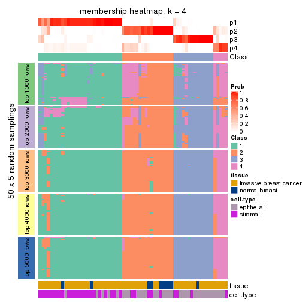
membership_heatmap(res, k = 5)
membership_heatmap(res, k = 6)
As soon as we have had the classes for columns, we can look for signatures which are significantly different between classes which can be candidate marks for certain classes. Following are the heatmaps for signatures.
Signature heatmaps where rows are scaled:
get_signatures(res, k = 2)
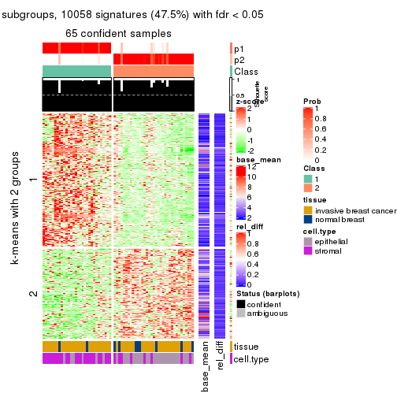
get_signatures(res, k = 3)
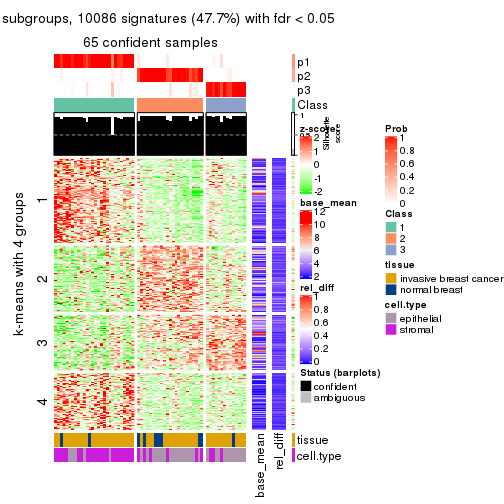
get_signatures(res, k = 4)

get_signatures(res, k = 5)
get_signatures(res, k = 6)
Signature heatmaps where rows are not scaled:
get_signatures(res, k = 2, scale_rows = FALSE)
get_signatures(res, k = 3, scale_rows = FALSE)
get_signatures(res, k = 4, scale_rows = FALSE)
get_signatures(res, k = 5, scale_rows = FALSE)
get_signatures(res, k = 6, scale_rows = FALSE)
Compare the overlap of signatures from different k:
compare_signatures(res)

get_signature() returns a data frame invisibly. TO get the list of signatures, the function
call should be assigned to a variable explicitly. In following code, if plot argument is set
to FALSE, no heatmap is plotted while only the differential analysis is performed.
# code only for demonstration
tb = get_signature(res, k = ..., plot = FALSE)
An example of the output of tb is:
#> which_row fdr mean_1 mean_2 scaled_mean_1 scaled_mean_2 km
#> 1 38 0.042760348 8.373488 9.131774 -0.5533452 0.5164555 1
#> 2 40 0.018707592 7.106213 8.469186 -0.6173731 0.5762149 1
#> 3 55 0.019134737 10.221463 11.207825 -0.6159697 0.5749050 1
#> 4 59 0.006059896 5.921854 7.869574 -0.6899429 0.6439467 1
#> 5 60 0.018055526 8.928898 10.211722 -0.6204761 0.5791110 1
#> 6 98 0.009384629 15.714769 14.887706 0.6635654 -0.6193277 2
...
The columns in tb are:
which_row: row indices corresponding to the input matrix.fdr: FDR for the differential test. mean_x: The mean value in group x.scaled_mean_x: The mean value in group x after rows are scaled.km: Row groups if k-means clustering is applied to rows.UMAP plot which shows how samples are separated.
dimension_reduction(res, k = 2, method = "UMAP")
dimension_reduction(res, k = 3, method = "UMAP")
dimension_reduction(res, k = 4, method = "UMAP")
dimension_reduction(res, k = 5, method = "UMAP")
dimension_reduction(res, k = 6, method = "UMAP")
Following heatmap shows how subgroups are split when increasing k:
collect_classes(res)
Test correlation between subgroups and known annotations. If the known annotation is numeric, one-way ANOVA test is applied, and if the known annotation is discrete, chi-squared contingency table test is applied.
test_to_known_factors(res)
#> n tissue(p) cell.type(p) k
#> MAD:pam 65 0.144632 1.39e-05 2
#> MAD:pam 65 0.045195 2.26e-05 3
#> MAD:pam 62 0.011686 2.54e-04 4
#> MAD:pam 59 0.000207 2.50e-03 5
#> MAD:pam 56 0.000902 1.59e-03 6
If matrix rows can be associated to genes, consider to use functional_enrichment(res,
...) to perform function enrichment for the signature genes. See this vignette for more detailed explanations.
The object with results only for a single top-value method and a single partition method can be extracted as:
res = res_list["MAD", "mclust"]
# you can also extract it by
# res = res_list["MAD:mclust"]
A summary of res and all the functions that can be applied to it:
res
#> A 'ConsensusPartition' object with k = 2, 3, 4, 5, 6.
#> On a matrix with 21163 rows and 66 columns.
#> Top rows (1000, 2000, 3000, 4000, 5000) are extracted by 'MAD' method.
#> Subgroups are detected by 'mclust' method.
#> Performed in total 1250 partitions by row resampling.
#> Best k for subgroups seems to be 3.
#>
#> Following methods can be applied to this 'ConsensusPartition' object:
#> [1] "cola_report" "collect_classes" "collect_plots"
#> [4] "collect_stats" "colnames" "compare_signatures"
#> [7] "consensus_heatmap" "dimension_reduction" "functional_enrichment"
#> [10] "get_anno_col" "get_anno" "get_classes"
#> [13] "get_consensus" "get_matrix" "get_membership"
#> [16] "get_param" "get_signatures" "get_stats"
#> [19] "is_best_k" "is_stable_k" "membership_heatmap"
#> [22] "ncol" "nrow" "plot_ecdf"
#> [25] "rownames" "select_partition_number" "show"
#> [28] "suggest_best_k" "test_to_known_factors"
collect_plots() function collects all the plots made from res for all k (number of partitions)
into one single page to provide an easy and fast comparison between different k.
collect_plots(res)
The plots are:
k and the heatmap of
predicted classes for each k.k.k.k.All the plots in panels can be made by individual functions and they are plotted later in this section.
select_partition_number() produces several plots showing different
statistics for choosing “optimized” k. There are following statistics:
k;k, the area increased is defined as \(A_k - A_{k-1}\).The detailed explanations of these statistics can be found in the cola vignette.
Generally speaking, lower PAC score, higher mean silhouette score or higher
concordance corresponds to better partition. Rand index and Jaccard index
measure how similar the current partition is compared to partition with k-1.
If they are too similar, we won't accept k is better than k-1.
select_partition_number(res)
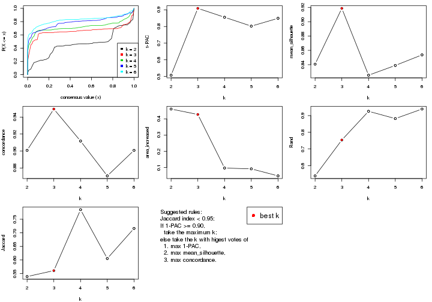
The numeric values for all these statistics can be obtained by get_stats().
get_stats(res)
#> k 1-PAC mean_silhouette concordance area_increased Rand Jaccard
#> 2 2 0.507 0.841 0.901 0.4611 0.539 0.539
#> 3 3 0.909 0.919 0.949 0.4276 0.754 0.561
#> 4 4 0.856 0.825 0.912 0.0966 0.926 0.785
#> 5 5 0.802 0.839 0.871 0.0915 0.882 0.605
#> 6 6 0.849 0.854 0.901 0.0482 0.939 0.716
suggest_best_k() suggests the best \(k\) based on these statistics. The rules are as follows:
suggest_best_k(res)
#> [1] 3
Following shows the table of the partitions (You need to click the show/hide
code output link to see it). The membership matrix (columns with name p*)
is inferred by
clue::cl_consensus()
function with the SE method. Basically the value in the membership matrix
represents the probability to belong to a certain group. The finall class
label for an item is determined with the group with highest probability it
belongs to.
In get_classes() function, the entropy is calculated from the membership
matrix and the silhouette score is calculated from the consensus matrix.
cbind(get_classes(res, k = 2), get_membership(res, k = 2))
#> class entropy silhouette p1 p2
#> GSM272727 2 0.0672 0.881 0.008 0.992
#> GSM272729 2 0.7299 0.832 0.204 0.796
#> GSM272731 2 0.0672 0.881 0.008 0.992
#> GSM272733 2 0.0672 0.881 0.008 0.992
#> GSM272735 2 0.0672 0.881 0.008 0.992
#> GSM272728 2 0.0672 0.881 0.008 0.992
#> GSM272730 1 0.2603 0.881 0.956 0.044
#> GSM272732 2 0.9661 0.089 0.392 0.608
#> GSM272734 1 0.7950 0.790 0.760 0.240
#> GSM272736 2 0.0672 0.881 0.008 0.992
#> GSM272671 2 0.7299 0.832 0.204 0.796
#> GSM272673 2 0.0000 0.882 0.000 1.000
#> GSM272675 2 0.0000 0.882 0.000 1.000
#> GSM272677 2 0.0000 0.882 0.000 1.000
#> GSM272679 2 0.0000 0.882 0.000 1.000
#> GSM272681 2 0.0000 0.882 0.000 1.000
#> GSM272683 2 0.7299 0.832 0.204 0.796
#> GSM272685 2 0.6148 0.852 0.152 0.848
#> GSM272687 2 0.7139 0.833 0.196 0.804
#> GSM272689 2 0.0672 0.881 0.008 0.992
#> GSM272691 2 0.0000 0.882 0.000 1.000
#> GSM272693 1 0.5178 0.866 0.884 0.116
#> GSM272695 2 0.6438 0.846 0.164 0.836
#> GSM272697 2 0.0000 0.882 0.000 1.000
#> GSM272699 2 0.0000 0.882 0.000 1.000
#> GSM272701 2 0.7139 0.833 0.196 0.804
#> GSM272703 2 0.7139 0.833 0.196 0.804
#> GSM272705 2 0.3274 0.874 0.060 0.940
#> GSM272707 1 0.2948 0.881 0.948 0.052
#> GSM272709 2 0.7139 0.833 0.196 0.804
#> GSM272711 2 0.0000 0.882 0.000 1.000
#> GSM272713 1 0.0672 0.885 0.992 0.008
#> GSM272715 2 0.7299 0.832 0.204 0.796
#> GSM272717 2 0.0672 0.881 0.008 0.992
#> GSM272719 2 0.0000 0.882 0.000 1.000
#> GSM272721 1 0.0672 0.883 0.992 0.008
#> GSM272723 2 0.7139 0.833 0.196 0.804
#> GSM272725 2 0.7745 0.805 0.228 0.772
#> GSM272672 2 0.6973 0.840 0.188 0.812
#> GSM272674 1 0.8081 0.790 0.752 0.248
#> GSM272676 2 0.0000 0.882 0.000 1.000
#> GSM272678 2 0.0000 0.882 0.000 1.000
#> GSM272680 2 0.0000 0.882 0.000 1.000
#> GSM272682 1 0.9323 0.673 0.652 0.348
#> GSM272684 1 0.0672 0.885 0.992 0.008
#> GSM272686 2 0.7299 0.832 0.204 0.796
#> GSM272688 1 0.0672 0.883 0.992 0.008
#> GSM272690 1 0.8016 0.790 0.756 0.244
#> GSM272692 1 0.2043 0.888 0.968 0.032
#> GSM272694 1 0.0000 0.881 1.000 0.000
#> GSM272696 2 0.7139 0.833 0.196 0.804
#> GSM272698 2 0.0000 0.882 0.000 1.000
#> GSM272700 1 0.8081 0.790 0.752 0.248
#> GSM272702 1 0.2603 0.884 0.956 0.044
#> GSM272704 1 0.2043 0.887 0.968 0.032
#> GSM272706 1 0.2043 0.887 0.968 0.032
#> GSM272708 2 0.7602 0.813 0.220 0.780
#> GSM272710 1 0.0672 0.883 0.992 0.008
#> GSM272712 1 0.7528 0.813 0.784 0.216
#> GSM272714 1 0.1633 0.887 0.976 0.024
#> GSM272716 1 0.8327 0.578 0.736 0.264
#> GSM272718 2 0.0672 0.881 0.008 0.992
#> GSM272720 1 0.8081 0.790 0.752 0.248
#> GSM272722 2 0.7139 0.833 0.196 0.804
#> GSM272724 2 0.7219 0.831 0.200 0.800
#> GSM272726 1 0.0672 0.883 0.992 0.008
cbind(get_classes(res, k = 3), get_membership(res, k = 3))
#> class entropy silhouette p1 p2 p3
#> GSM272727 2 0.1267 0.975 0.004 0.972 0.024
#> GSM272729 3 0.0237 0.947 0.000 0.004 0.996
#> GSM272731 2 0.1031 0.976 0.000 0.976 0.024
#> GSM272733 2 0.1031 0.976 0.000 0.976 0.024
#> GSM272735 2 0.1031 0.976 0.000 0.976 0.024
#> GSM272728 2 0.1031 0.976 0.000 0.976 0.024
#> GSM272730 1 0.2625 0.901 0.916 0.000 0.084
#> GSM272732 1 0.3752 0.896 0.884 0.096 0.020
#> GSM272734 1 0.2878 0.907 0.904 0.096 0.000
#> GSM272736 2 0.1031 0.976 0.000 0.976 0.024
#> GSM272671 3 0.0237 0.947 0.000 0.004 0.996
#> GSM272673 2 0.0000 0.979 0.000 1.000 0.000
#> GSM272675 2 0.0000 0.979 0.000 1.000 0.000
#> GSM272677 2 0.0000 0.979 0.000 1.000 0.000
#> GSM272679 2 0.0000 0.979 0.000 1.000 0.000
#> GSM272681 2 0.0000 0.979 0.000 1.000 0.000
#> GSM272683 3 0.0237 0.947 0.000 0.004 0.996
#> GSM272685 3 0.6654 0.114 0.008 0.456 0.536
#> GSM272687 3 0.1163 0.952 0.000 0.028 0.972
#> GSM272689 2 0.1031 0.976 0.000 0.976 0.024
#> GSM272691 2 0.0000 0.979 0.000 1.000 0.000
#> GSM272693 1 0.2878 0.907 0.904 0.096 0.000
#> GSM272695 2 0.1832 0.944 0.008 0.956 0.036
#> GSM272697 2 0.0000 0.979 0.000 1.000 0.000
#> GSM272699 2 0.0424 0.977 0.008 0.992 0.000
#> GSM272701 3 0.1163 0.952 0.000 0.028 0.972
#> GSM272703 3 0.1163 0.952 0.000 0.028 0.972
#> GSM272705 2 0.1453 0.973 0.008 0.968 0.024
#> GSM272707 1 0.2846 0.915 0.924 0.020 0.056
#> GSM272709 3 0.1163 0.952 0.000 0.028 0.972
#> GSM272711 2 0.0000 0.979 0.000 1.000 0.000
#> GSM272713 1 0.0592 0.917 0.988 0.000 0.012
#> GSM272715 3 0.0475 0.946 0.004 0.004 0.992
#> GSM272717 2 0.1031 0.976 0.000 0.976 0.024
#> GSM272719 2 0.0000 0.979 0.000 1.000 0.000
#> GSM272721 1 0.0747 0.916 0.984 0.000 0.016
#> GSM272723 3 0.1163 0.952 0.000 0.028 0.972
#> GSM272725 3 0.2414 0.921 0.040 0.020 0.940
#> GSM272672 3 0.0661 0.944 0.008 0.004 0.988
#> GSM272674 1 0.2878 0.907 0.904 0.096 0.000
#> GSM272676 2 0.0000 0.979 0.000 1.000 0.000
#> GSM272678 2 0.0000 0.979 0.000 1.000 0.000
#> GSM272680 2 0.0424 0.977 0.008 0.992 0.000
#> GSM272682 1 0.2959 0.905 0.900 0.100 0.000
#> GSM272684 1 0.0592 0.917 0.988 0.000 0.012
#> GSM272686 3 0.0237 0.947 0.000 0.004 0.996
#> GSM272688 1 0.0747 0.916 0.984 0.000 0.016
#> GSM272690 1 0.2878 0.907 0.904 0.096 0.000
#> GSM272692 1 0.2173 0.918 0.944 0.048 0.008
#> GSM272694 1 0.0747 0.916 0.984 0.000 0.016
#> GSM272696 3 0.1163 0.952 0.000 0.028 0.972
#> GSM272698 2 0.3816 0.822 0.148 0.852 0.000
#> GSM272700 1 0.2878 0.907 0.904 0.096 0.000
#> GSM272702 1 0.1753 0.914 0.952 0.000 0.048
#> GSM272704 1 0.1753 0.914 0.952 0.000 0.048
#> GSM272706 1 0.1753 0.914 0.952 0.000 0.048
#> GSM272708 1 0.6832 0.442 0.604 0.020 0.376
#> GSM272710 1 0.0747 0.916 0.984 0.000 0.016
#> GSM272712 1 0.2878 0.907 0.904 0.096 0.000
#> GSM272714 1 0.1753 0.914 0.952 0.000 0.048
#> GSM272716 1 0.5529 0.657 0.704 0.000 0.296
#> GSM272718 2 0.1031 0.976 0.000 0.976 0.024
#> GSM272720 1 0.2878 0.907 0.904 0.096 0.000
#> GSM272722 3 0.1163 0.952 0.000 0.028 0.972
#> GSM272724 3 0.1163 0.952 0.000 0.028 0.972
#> GSM272726 1 0.0747 0.916 0.984 0.000 0.016
cbind(get_classes(res, k = 4), get_membership(res, k = 4))
#> class entropy silhouette p1 p2 p3 p4
#> GSM272727 4 0.1716 0.7668 0.000 0.064 0.000 0.936
#> GSM272729 3 0.1302 0.9353 0.000 0.000 0.956 0.044
#> GSM272731 4 0.4989 -0.0820 0.000 0.472 0.000 0.528
#> GSM272733 2 0.4989 0.0945 0.000 0.528 0.000 0.472
#> GSM272735 2 0.4977 0.1387 0.000 0.540 0.000 0.460
#> GSM272728 4 0.1716 0.7668 0.000 0.064 0.000 0.936
#> GSM272730 1 0.1940 0.9363 0.924 0.000 0.076 0.000
#> GSM272732 1 0.1902 0.9079 0.932 0.000 0.004 0.064
#> GSM272734 1 0.1305 0.9212 0.960 0.000 0.004 0.036
#> GSM272736 2 0.4134 0.6163 0.000 0.740 0.000 0.260
#> GSM272671 3 0.1302 0.9353 0.000 0.000 0.956 0.044
#> GSM272673 2 0.0000 0.8596 0.000 1.000 0.000 0.000
#> GSM272675 2 0.1118 0.8503 0.000 0.964 0.000 0.036
#> GSM272677 2 0.0817 0.8556 0.000 0.976 0.000 0.024
#> GSM272679 2 0.0000 0.8596 0.000 1.000 0.000 0.000
#> GSM272681 2 0.0000 0.8596 0.000 1.000 0.000 0.000
#> GSM272683 3 0.1389 0.9325 0.000 0.000 0.952 0.048
#> GSM272685 4 0.6591 0.1672 0.000 0.080 0.424 0.496
#> GSM272687 3 0.0000 0.9490 0.000 0.000 1.000 0.000
#> GSM272689 2 0.4855 0.2694 0.000 0.600 0.000 0.400
#> GSM272691 2 0.1022 0.8524 0.000 0.968 0.000 0.032
#> GSM272693 1 0.1356 0.9225 0.960 0.000 0.008 0.032
#> GSM272695 2 0.1733 0.8356 0.000 0.948 0.028 0.024
#> GSM272697 2 0.0000 0.8596 0.000 1.000 0.000 0.000
#> GSM272699 2 0.1004 0.8460 0.000 0.972 0.004 0.024
#> GSM272701 3 0.0000 0.9490 0.000 0.000 1.000 0.000
#> GSM272703 3 0.0000 0.9490 0.000 0.000 1.000 0.000
#> GSM272705 2 0.4574 0.6477 0.000 0.756 0.024 0.220
#> GSM272707 1 0.2081 0.9265 0.916 0.000 0.084 0.000
#> GSM272709 3 0.0000 0.9490 0.000 0.000 1.000 0.000
#> GSM272711 2 0.0000 0.8596 0.000 1.000 0.000 0.000
#> GSM272713 1 0.1716 0.9378 0.936 0.000 0.064 0.000
#> GSM272715 3 0.1661 0.9264 0.000 0.004 0.944 0.052
#> GSM272717 4 0.2345 0.7513 0.000 0.100 0.000 0.900
#> GSM272719 2 0.0000 0.8596 0.000 1.000 0.000 0.000
#> GSM272721 1 0.2722 0.9319 0.904 0.000 0.064 0.032
#> GSM272723 3 0.0000 0.9490 0.000 0.000 1.000 0.000
#> GSM272725 3 0.1118 0.9196 0.036 0.000 0.964 0.000
#> GSM272672 3 0.2413 0.8995 0.000 0.020 0.916 0.064
#> GSM272674 1 0.1305 0.9212 0.960 0.000 0.004 0.036
#> GSM272676 2 0.0707 0.8576 0.000 0.980 0.000 0.020
#> GSM272678 2 0.1022 0.8536 0.000 0.968 0.000 0.032
#> GSM272680 2 0.1004 0.8460 0.000 0.972 0.004 0.024
#> GSM272682 1 0.1593 0.9172 0.956 0.016 0.004 0.024
#> GSM272684 1 0.2623 0.9330 0.908 0.000 0.064 0.028
#> GSM272686 3 0.1302 0.9353 0.000 0.000 0.956 0.044
#> GSM272688 1 0.2722 0.9319 0.904 0.000 0.064 0.032
#> GSM272690 1 0.1305 0.9212 0.960 0.000 0.004 0.036
#> GSM272692 1 0.1970 0.9390 0.932 0.000 0.060 0.008
#> GSM272694 1 0.2722 0.9319 0.904 0.000 0.064 0.032
#> GSM272696 3 0.0000 0.9490 0.000 0.000 1.000 0.000
#> GSM272698 2 0.2002 0.8220 0.044 0.936 0.000 0.020
#> GSM272700 1 0.1305 0.9212 0.960 0.000 0.004 0.036
#> GSM272702 1 0.1867 0.9368 0.928 0.000 0.072 0.000
#> GSM272704 1 0.1792 0.9376 0.932 0.000 0.068 0.000
#> GSM272706 1 0.1867 0.9368 0.928 0.000 0.072 0.000
#> GSM272708 3 0.3801 0.6487 0.220 0.000 0.780 0.000
#> GSM272710 1 0.2722 0.9319 0.904 0.000 0.064 0.032
#> GSM272712 1 0.1305 0.9212 0.960 0.000 0.004 0.036
#> GSM272714 1 0.1792 0.9380 0.932 0.000 0.068 0.000
#> GSM272716 1 0.4250 0.7121 0.724 0.000 0.276 0.000
#> GSM272718 4 0.2011 0.7651 0.000 0.080 0.000 0.920
#> GSM272720 1 0.1305 0.9212 0.960 0.000 0.004 0.036
#> GSM272722 3 0.0000 0.9490 0.000 0.000 1.000 0.000
#> GSM272724 3 0.0000 0.9490 0.000 0.000 1.000 0.000
#> GSM272726 1 0.2722 0.9319 0.904 0.000 0.064 0.032
cbind(get_classes(res, k = 5), get_membership(res, k = 5))
#> class entropy silhouette p1 p2 p3 p4 p5
#> GSM272727 5 0.0510 0.8107 0.000 0.016 0.000 0.000 0.984
#> GSM272729 3 0.3855 0.8136 0.240 0.000 0.748 0.008 0.004
#> GSM272731 5 0.1608 0.8264 0.000 0.072 0.000 0.000 0.928
#> GSM272733 5 0.1671 0.8262 0.000 0.076 0.000 0.000 0.924
#> GSM272735 5 0.1851 0.8241 0.000 0.088 0.000 0.000 0.912
#> GSM272728 5 0.0290 0.8073 0.000 0.008 0.000 0.000 0.992
#> GSM272730 1 0.4028 0.7903 0.768 0.000 0.040 0.192 0.000
#> GSM272732 4 0.2390 0.8474 0.020 0.000 0.000 0.896 0.084
#> GSM272734 4 0.0000 0.9680 0.000 0.000 0.000 1.000 0.000
#> GSM272736 5 0.2648 0.7795 0.000 0.152 0.000 0.000 0.848
#> GSM272671 3 0.4064 0.8051 0.272 0.000 0.716 0.008 0.004
#> GSM272673 2 0.0162 0.8690 0.000 0.996 0.000 0.000 0.004
#> GSM272675 2 0.1965 0.8375 0.000 0.904 0.000 0.000 0.096
#> GSM272677 2 0.1965 0.8375 0.000 0.904 0.000 0.000 0.096
#> GSM272679 2 0.0162 0.8690 0.000 0.996 0.000 0.000 0.004
#> GSM272681 2 0.0162 0.8690 0.000 0.996 0.000 0.000 0.004
#> GSM272683 3 0.4134 0.8064 0.264 0.000 0.720 0.008 0.008
#> GSM272685 5 0.8169 -0.0554 0.128 0.128 0.356 0.012 0.376
#> GSM272687 3 0.0963 0.8753 0.036 0.000 0.964 0.000 0.000
#> GSM272689 5 0.4015 0.5093 0.000 0.348 0.000 0.000 0.652
#> GSM272691 2 0.1965 0.8375 0.000 0.904 0.000 0.000 0.096
#> GSM272693 4 0.0324 0.9639 0.004 0.000 0.004 0.992 0.000
#> GSM272695 2 0.4751 0.2082 0.000 0.564 0.420 0.008 0.008
#> GSM272697 2 0.0162 0.8690 0.000 0.996 0.000 0.000 0.004
#> GSM272699 2 0.1651 0.8414 0.000 0.944 0.036 0.012 0.008
#> GSM272701 3 0.2011 0.8722 0.088 0.000 0.908 0.004 0.000
#> GSM272703 3 0.2011 0.8722 0.088 0.000 0.908 0.004 0.000
#> GSM272705 2 0.6401 0.3781 0.012 0.608 0.168 0.012 0.200
#> GSM272707 1 0.4972 0.8582 0.620 0.000 0.044 0.336 0.000
#> GSM272709 3 0.1851 0.8713 0.088 0.000 0.912 0.000 0.000
#> GSM272711 2 0.0162 0.8690 0.000 0.996 0.000 0.000 0.004
#> GSM272713 1 0.3661 0.9661 0.724 0.000 0.000 0.276 0.000
#> GSM272715 3 0.3807 0.8219 0.204 0.000 0.776 0.012 0.008
#> GSM272717 5 0.2813 0.7571 0.000 0.168 0.000 0.000 0.832
#> GSM272719 2 0.0451 0.8673 0.000 0.988 0.008 0.000 0.004
#> GSM272721 1 0.3766 0.9658 0.728 0.000 0.000 0.268 0.004
#> GSM272723 3 0.2249 0.8704 0.096 0.000 0.896 0.008 0.000
#> GSM272725 3 0.1282 0.8739 0.044 0.000 0.952 0.004 0.000
#> GSM272672 3 0.3874 0.8153 0.200 0.000 0.776 0.016 0.008
#> GSM272674 4 0.0000 0.9680 0.000 0.000 0.000 1.000 0.000
#> GSM272676 2 0.1965 0.8375 0.000 0.904 0.000 0.000 0.096
#> GSM272678 2 0.1965 0.8375 0.000 0.904 0.000 0.000 0.096
#> GSM272680 2 0.0324 0.8649 0.000 0.992 0.000 0.004 0.004
#> GSM272682 4 0.1518 0.9174 0.000 0.048 0.004 0.944 0.004
#> GSM272684 1 0.3814 0.9663 0.720 0.000 0.000 0.276 0.004
#> GSM272686 3 0.3675 0.8156 0.216 0.000 0.772 0.008 0.004
#> GSM272688 1 0.3766 0.9658 0.728 0.000 0.000 0.268 0.004
#> GSM272690 4 0.0000 0.9680 0.000 0.000 0.000 1.000 0.000
#> GSM272692 1 0.3730 0.9605 0.712 0.000 0.000 0.288 0.000
#> GSM272694 1 0.3766 0.9658 0.728 0.000 0.000 0.268 0.004
#> GSM272696 3 0.0963 0.8753 0.036 0.000 0.964 0.000 0.000
#> GSM272698 2 0.2964 0.7321 0.000 0.840 0.004 0.152 0.004
#> GSM272700 4 0.0000 0.9680 0.000 0.000 0.000 1.000 0.000
#> GSM272702 1 0.3885 0.9615 0.724 0.000 0.008 0.268 0.000
#> GSM272704 1 0.3661 0.9661 0.724 0.000 0.000 0.276 0.000
#> GSM272706 1 0.3661 0.9661 0.724 0.000 0.000 0.276 0.000
#> GSM272708 3 0.1408 0.8724 0.044 0.000 0.948 0.008 0.000
#> GSM272710 1 0.3766 0.9658 0.728 0.000 0.000 0.268 0.004
#> GSM272712 4 0.0579 0.9597 0.008 0.000 0.008 0.984 0.000
#> GSM272714 1 0.3684 0.9638 0.720 0.000 0.000 0.280 0.000
#> GSM272716 3 0.5293 0.6981 0.236 0.000 0.668 0.092 0.004
#> GSM272718 5 0.2280 0.7949 0.000 0.120 0.000 0.000 0.880
#> GSM272720 4 0.0000 0.9680 0.000 0.000 0.000 1.000 0.000
#> GSM272722 3 0.1043 0.8755 0.040 0.000 0.960 0.000 0.000
#> GSM272724 3 0.0963 0.8753 0.036 0.000 0.964 0.000 0.000
#> GSM272726 1 0.3766 0.9658 0.728 0.000 0.000 0.268 0.004
cbind(get_classes(res, k = 6), get_membership(res, k = 6))
#> class entropy silhouette p1 p2 p3 p4 p5 p6
#> GSM272727 2 0.0622 0.880 0.000 0.980 0.000 0.000 0.008 0.012
#> GSM272729 5 0.3126 0.841 0.000 0.000 0.248 0.000 0.752 0.000
#> GSM272731 2 0.1007 0.900 0.000 0.956 0.000 0.000 0.000 0.044
#> GSM272733 2 0.1152 0.900 0.000 0.952 0.000 0.000 0.004 0.044
#> GSM272735 2 0.1531 0.899 0.000 0.928 0.000 0.000 0.004 0.068
#> GSM272728 2 0.0146 0.872 0.000 0.996 0.000 0.000 0.004 0.000
#> GSM272730 1 0.2775 0.848 0.856 0.000 0.000 0.040 0.104 0.000
#> GSM272732 4 0.2485 0.898 0.012 0.040 0.000 0.892 0.056 0.000
#> GSM272734 4 0.0260 0.958 0.008 0.000 0.000 0.992 0.000 0.000
#> GSM272736 2 0.1364 0.900 0.000 0.944 0.000 0.004 0.004 0.048
#> GSM272671 5 0.2854 0.860 0.000 0.000 0.208 0.000 0.792 0.000
#> GSM272673 6 0.0790 0.920 0.000 0.032 0.000 0.000 0.000 0.968
#> GSM272675 6 0.1701 0.910 0.000 0.072 0.000 0.000 0.008 0.920
#> GSM272677 6 0.1701 0.910 0.000 0.072 0.000 0.000 0.008 0.920
#> GSM272679 6 0.0790 0.920 0.000 0.032 0.000 0.000 0.000 0.968
#> GSM272681 6 0.0858 0.918 0.000 0.028 0.000 0.004 0.000 0.968
#> GSM272683 5 0.3109 0.858 0.000 0.004 0.224 0.000 0.772 0.000
#> GSM272685 5 0.5028 0.582 0.000 0.132 0.056 0.000 0.712 0.100
#> GSM272687 3 0.0146 0.859 0.000 0.000 0.996 0.000 0.004 0.000
#> GSM272689 2 0.3421 0.730 0.000 0.736 0.000 0.000 0.008 0.256
#> GSM272691 6 0.1701 0.910 0.000 0.072 0.000 0.000 0.008 0.920
#> GSM272693 4 0.1642 0.943 0.032 0.004 0.000 0.936 0.028 0.000
#> GSM272695 3 0.5469 0.353 0.000 0.008 0.568 0.000 0.124 0.300
#> GSM272697 6 0.0790 0.920 0.000 0.032 0.000 0.000 0.000 0.968
#> GSM272699 6 0.2170 0.844 0.000 0.012 0.000 0.000 0.100 0.888
#> GSM272701 3 0.1714 0.833 0.000 0.000 0.908 0.000 0.092 0.000
#> GSM272703 3 0.1610 0.838 0.000 0.000 0.916 0.000 0.084 0.000
#> GSM272705 6 0.5369 0.556 0.000 0.180 0.012 0.008 0.148 0.652
#> GSM272707 1 0.4131 0.724 0.744 0.000 0.156 0.100 0.000 0.000
#> GSM272709 3 0.1007 0.854 0.000 0.000 0.956 0.000 0.044 0.000
#> GSM272711 6 0.0790 0.920 0.000 0.032 0.000 0.000 0.000 0.968
#> GSM272713 1 0.0937 0.921 0.960 0.000 0.000 0.040 0.000 0.000
#> GSM272715 5 0.3508 0.791 0.000 0.004 0.292 0.000 0.704 0.000
#> GSM272717 2 0.2738 0.828 0.000 0.820 0.000 0.000 0.004 0.176
#> GSM272719 6 0.0790 0.920 0.000 0.032 0.000 0.000 0.000 0.968
#> GSM272721 1 0.0000 0.918 1.000 0.000 0.000 0.000 0.000 0.000
#> GSM272723 3 0.1714 0.833 0.000 0.000 0.908 0.000 0.092 0.000
#> GSM272725 3 0.3236 0.671 0.140 0.000 0.820 0.004 0.036 0.000
#> GSM272672 5 0.3023 0.854 0.000 0.004 0.212 0.000 0.784 0.000
#> GSM272674 4 0.0777 0.956 0.004 0.000 0.000 0.972 0.024 0.000
#> GSM272676 6 0.1901 0.909 0.000 0.076 0.000 0.004 0.008 0.912
#> GSM272678 6 0.1845 0.910 0.000 0.072 0.000 0.004 0.008 0.916
#> GSM272680 6 0.1820 0.865 0.000 0.008 0.000 0.012 0.056 0.924
#> GSM272682 4 0.2317 0.881 0.004 0.008 0.000 0.892 0.008 0.088
#> GSM272684 1 0.0363 0.920 0.988 0.000 0.000 0.012 0.000 0.000
#> GSM272686 5 0.3151 0.839 0.000 0.000 0.252 0.000 0.748 0.000
#> GSM272688 1 0.0000 0.918 1.000 0.000 0.000 0.000 0.000 0.000
#> GSM272690 4 0.0146 0.958 0.004 0.000 0.000 0.996 0.000 0.000
#> GSM272692 1 0.0937 0.921 0.960 0.000 0.000 0.040 0.000 0.000
#> GSM272694 1 0.0146 0.919 0.996 0.000 0.000 0.004 0.000 0.000
#> GSM272696 3 0.0000 0.859 0.000 0.000 1.000 0.000 0.000 0.000
#> GSM272698 6 0.3424 0.768 0.000 0.008 0.000 0.128 0.048 0.816
#> GSM272700 4 0.0146 0.958 0.004 0.000 0.000 0.996 0.000 0.000
#> GSM272702 1 0.1226 0.919 0.952 0.000 0.004 0.040 0.004 0.000
#> GSM272704 1 0.0937 0.921 0.960 0.000 0.000 0.040 0.000 0.000
#> GSM272706 1 0.1082 0.920 0.956 0.000 0.000 0.040 0.004 0.000
#> GSM272708 3 0.1938 0.807 0.040 0.000 0.920 0.004 0.036 0.000
#> GSM272710 1 0.0000 0.918 1.000 0.000 0.000 0.000 0.000 0.000
#> GSM272712 4 0.1155 0.943 0.036 0.000 0.004 0.956 0.004 0.000
#> GSM272714 1 0.0937 0.921 0.960 0.000 0.000 0.040 0.000 0.000
#> GSM272716 1 0.5967 0.182 0.484 0.004 0.348 0.008 0.156 0.000
#> GSM272718 2 0.2593 0.847 0.000 0.844 0.000 0.000 0.008 0.148
#> GSM272720 4 0.0603 0.957 0.004 0.000 0.000 0.980 0.016 0.000
#> GSM272722 3 0.0363 0.857 0.000 0.000 0.988 0.000 0.012 0.000
#> GSM272724 3 0.0000 0.859 0.000 0.000 1.000 0.000 0.000 0.000
#> GSM272726 1 0.0000 0.918 1.000 0.000 0.000 0.000 0.000 0.000
Heatmaps for the consensus matrix. It visualizes the probability of two samples to be in a same group.
consensus_heatmap(res, k = 2)
consensus_heatmap(res, k = 3)
consensus_heatmap(res, k = 4)
consensus_heatmap(res, k = 5)
consensus_heatmap(res, k = 6)
Heatmaps for the membership of samples in all partitions to see how consistent they are:
membership_heatmap(res, k = 2)
membership_heatmap(res, k = 3)
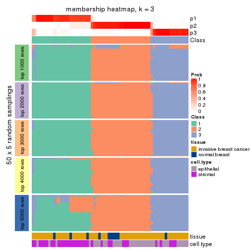
membership_heatmap(res, k = 4)
membership_heatmap(res, k = 5)
membership_heatmap(res, k = 6)
As soon as we have had the classes for columns, we can look for signatures which are significantly different between classes which can be candidate marks for certain classes. Following are the heatmaps for signatures.
Signature heatmaps where rows are scaled:
get_signatures(res, k = 2)
get_signatures(res, k = 3)

get_signatures(res, k = 4)
get_signatures(res, k = 5)
get_signatures(res, k = 6)
Signature heatmaps where rows are not scaled:
get_signatures(res, k = 2, scale_rows = FALSE)
get_signatures(res, k = 3, scale_rows = FALSE)
get_signatures(res, k = 4, scale_rows = FALSE)
get_signatures(res, k = 5, scale_rows = FALSE)
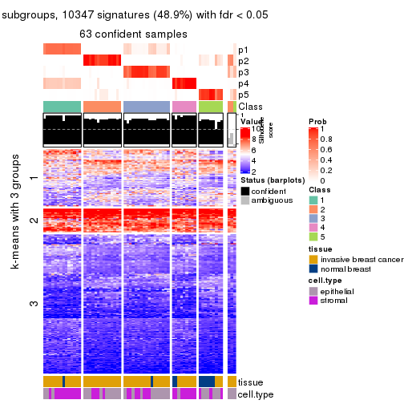
get_signatures(res, k = 6, scale_rows = FALSE)
Compare the overlap of signatures from different k:
compare_signatures(res)
get_signature() returns a data frame invisibly. TO get the list of signatures, the function
call should be assigned to a variable explicitly. In following code, if plot argument is set
to FALSE, no heatmap is plotted while only the differential analysis is performed.
# code only for demonstration
tb = get_signature(res, k = ..., plot = FALSE)
An example of the output of tb is:
#> which_row fdr mean_1 mean_2 scaled_mean_1 scaled_mean_2 km
#> 1 38 0.042760348 8.373488 9.131774 -0.5533452 0.5164555 1
#> 2 40 0.018707592 7.106213 8.469186 -0.6173731 0.5762149 1
#> 3 55 0.019134737 10.221463 11.207825 -0.6159697 0.5749050 1
#> 4 59 0.006059896 5.921854 7.869574 -0.6899429 0.6439467 1
#> 5 60 0.018055526 8.928898 10.211722 -0.6204761 0.5791110 1
#> 6 98 0.009384629 15.714769 14.887706 0.6635654 -0.6193277 2
...
The columns in tb are:
which_row: row indices corresponding to the input matrix.fdr: FDR for the differential test. mean_x: The mean value in group x.scaled_mean_x: The mean value in group x after rows are scaled.km: Row groups if k-means clustering is applied to rows.UMAP plot which shows how samples are separated.
dimension_reduction(res, k = 2, method = "UMAP")
dimension_reduction(res, k = 3, method = "UMAP")
dimension_reduction(res, k = 4, method = "UMAP")
dimension_reduction(res, k = 5, method = "UMAP")
dimension_reduction(res, k = 6, method = "UMAP")
Following heatmap shows how subgroups are split when increasing k:
collect_classes(res)
Test correlation between subgroups and known annotations. If the known annotation is numeric, one-way ANOVA test is applied, and if the known annotation is discrete, chi-squared contingency table test is applied.
test_to_known_factors(res)
#> n tissue(p) cell.type(p) k
#> MAD:mclust 65 0.607128 0.000196 2
#> MAD:mclust 64 0.298057 0.000187 3
#> MAD:mclust 61 0.077783 0.002602 4
#> MAD:mclust 63 0.000169 0.007277 5
#> MAD:mclust 64 0.000273 0.006935 6
If matrix rows can be associated to genes, consider to use functional_enrichment(res,
...) to perform function enrichment for the signature genes. See this vignette for more detailed explanations.
The object with results only for a single top-value method and a single partition method can be extracted as:
res = res_list["MAD", "NMF"]
# you can also extract it by
# res = res_list["MAD:NMF"]
A summary of res and all the functions that can be applied to it:
res
#> A 'ConsensusPartition' object with k = 2, 3, 4, 5, 6.
#> On a matrix with 21163 rows and 66 columns.
#> Top rows (1000, 2000, 3000, 4000, 5000) are extracted by 'MAD' method.
#> Subgroups are detected by 'NMF' method.
#> Performed in total 1250 partitions by row resampling.
#> Best k for subgroups seems to be 2.
#>
#> Following methods can be applied to this 'ConsensusPartition' object:
#> [1] "cola_report" "collect_classes" "collect_plots"
#> [4] "collect_stats" "colnames" "compare_signatures"
#> [7] "consensus_heatmap" "dimension_reduction" "functional_enrichment"
#> [10] "get_anno_col" "get_anno" "get_classes"
#> [13] "get_consensus" "get_matrix" "get_membership"
#> [16] "get_param" "get_signatures" "get_stats"
#> [19] "is_best_k" "is_stable_k" "membership_heatmap"
#> [22] "ncol" "nrow" "plot_ecdf"
#> [25] "rownames" "select_partition_number" "show"
#> [28] "suggest_best_k" "test_to_known_factors"
collect_plots() function collects all the plots made from res for all k (number of partitions)
into one single page to provide an easy and fast comparison between different k.
collect_plots(res)
The plots are:
k and the heatmap of
predicted classes for each k.k.k.k.All the plots in panels can be made by individual functions and they are plotted later in this section.
select_partition_number() produces several plots showing different
statistics for choosing “optimized” k. There are following statistics:
k;k, the area increased is defined as \(A_k - A_{k-1}\).The detailed explanations of these statistics can be found in the cola vignette.
Generally speaking, lower PAC score, higher mean silhouette score or higher
concordance corresponds to better partition. Rand index and Jaccard index
measure how similar the current partition is compared to partition with k-1.
If they are too similar, we won't accept k is better than k-1.
select_partition_number(res)
The numeric values for all these statistics can be obtained by get_stats().
get_stats(res)
#> k 1-PAC mean_silhouette concordance area_increased Rand Jaccard
#> 2 2 1.000 0.949 0.979 0.5007 0.497 0.497
#> 3 3 0.876 0.883 0.942 0.3432 0.724 0.497
#> 4 4 0.563 0.483 0.694 0.1128 0.917 0.760
#> 5 5 0.555 0.366 0.599 0.0688 0.834 0.489
#> 6 6 0.640 0.480 0.717 0.0432 0.869 0.468
suggest_best_k() suggests the best \(k\) based on these statistics. The rules are as follows:
suggest_best_k(res)
#> [1] 2
Following shows the table of the partitions (You need to click the show/hide
code output link to see it). The membership matrix (columns with name p*)
is inferred by
clue::cl_consensus()
function with the SE method. Basically the value in the membership matrix
represents the probability to belong to a certain group. The finall class
label for an item is determined with the group with highest probability it
belongs to.
In get_classes() function, the entropy is calculated from the membership
matrix and the silhouette score is calculated from the consensus matrix.
cbind(get_classes(res, k = 2), get_membership(res, k = 2))
#> class entropy silhouette p1 p2
#> GSM272727 2 0.0000 0.991 0.000 1.000
#> GSM272729 2 0.0000 0.991 0.000 1.000
#> GSM272731 2 0.0000 0.991 0.000 1.000
#> GSM272733 2 0.0000 0.991 0.000 1.000
#> GSM272735 2 0.0000 0.991 0.000 1.000
#> GSM272728 2 0.0000 0.991 0.000 1.000
#> GSM272730 1 0.0000 0.962 1.000 0.000
#> GSM272732 1 0.0376 0.959 0.996 0.004
#> GSM272734 1 0.0000 0.962 1.000 0.000
#> GSM272736 2 0.0000 0.991 0.000 1.000
#> GSM272671 2 0.0000 0.991 0.000 1.000
#> GSM272673 2 0.0000 0.991 0.000 1.000
#> GSM272675 2 0.0000 0.991 0.000 1.000
#> GSM272677 2 0.0000 0.991 0.000 1.000
#> GSM272679 2 0.0000 0.991 0.000 1.000
#> GSM272681 2 0.0000 0.991 0.000 1.000
#> GSM272683 2 0.0000 0.991 0.000 1.000
#> GSM272685 2 0.0000 0.991 0.000 1.000
#> GSM272687 1 0.9944 0.185 0.544 0.456
#> GSM272689 2 0.0000 0.991 0.000 1.000
#> GSM272691 2 0.0000 0.991 0.000 1.000
#> GSM272693 1 0.0000 0.962 1.000 0.000
#> GSM272695 2 0.0000 0.991 0.000 1.000
#> GSM272697 2 0.0000 0.991 0.000 1.000
#> GSM272699 2 0.0000 0.991 0.000 1.000
#> GSM272701 2 0.0000 0.991 0.000 1.000
#> GSM272703 2 0.0000 0.991 0.000 1.000
#> GSM272705 2 0.0000 0.991 0.000 1.000
#> GSM272707 1 0.0000 0.962 1.000 0.000
#> GSM272709 2 0.0000 0.991 0.000 1.000
#> GSM272711 2 0.0000 0.991 0.000 1.000
#> GSM272713 1 0.0000 0.962 1.000 0.000
#> GSM272715 2 0.0000 0.991 0.000 1.000
#> GSM272717 2 0.0000 0.991 0.000 1.000
#> GSM272719 2 0.0000 0.991 0.000 1.000
#> GSM272721 1 0.0000 0.962 1.000 0.000
#> GSM272723 2 0.0000 0.991 0.000 1.000
#> GSM272725 1 0.0000 0.962 1.000 0.000
#> GSM272672 2 0.0000 0.991 0.000 1.000
#> GSM272674 1 0.0000 0.962 1.000 0.000
#> GSM272676 2 0.0000 0.991 0.000 1.000
#> GSM272678 2 0.0000 0.991 0.000 1.000
#> GSM272680 2 0.4022 0.910 0.080 0.920
#> GSM272682 1 0.0000 0.962 1.000 0.000
#> GSM272684 1 0.0000 0.962 1.000 0.000
#> GSM272686 2 0.6247 0.811 0.156 0.844
#> GSM272688 1 0.0000 0.962 1.000 0.000
#> GSM272690 1 0.0000 0.962 1.000 0.000
#> GSM272692 1 0.0000 0.962 1.000 0.000
#> GSM272694 1 0.0000 0.962 1.000 0.000
#> GSM272696 1 0.9248 0.497 0.660 0.340
#> GSM272698 1 0.8327 0.649 0.736 0.264
#> GSM272700 1 0.0000 0.962 1.000 0.000
#> GSM272702 1 0.0000 0.962 1.000 0.000
#> GSM272704 1 0.0000 0.962 1.000 0.000
#> GSM272706 1 0.0000 0.962 1.000 0.000
#> GSM272708 1 0.0000 0.962 1.000 0.000
#> GSM272710 1 0.0000 0.962 1.000 0.000
#> GSM272712 1 0.0000 0.962 1.000 0.000
#> GSM272714 1 0.0000 0.962 1.000 0.000
#> GSM272716 1 0.0000 0.962 1.000 0.000
#> GSM272718 2 0.0000 0.991 0.000 1.000
#> GSM272720 1 0.0000 0.962 1.000 0.000
#> GSM272722 2 0.4022 0.911 0.080 0.920
#> GSM272724 1 0.1184 0.949 0.984 0.016
#> GSM272726 1 0.0000 0.962 1.000 0.000
cbind(get_classes(res, k = 3), get_membership(res, k = 3))
#> class entropy silhouette p1 p2 p3
#> GSM272727 3 0.4504 0.7259 0.000 0.196 0.804
#> GSM272729 3 0.0000 0.9252 0.000 0.000 1.000
#> GSM272731 2 0.0424 0.9335 0.000 0.992 0.008
#> GSM272733 2 0.0892 0.9332 0.000 0.980 0.020
#> GSM272735 2 0.0424 0.9335 0.000 0.992 0.008
#> GSM272728 2 0.1964 0.9200 0.000 0.944 0.056
#> GSM272730 1 0.5058 0.7151 0.756 0.000 0.244
#> GSM272732 1 0.1529 0.9394 0.960 0.040 0.000
#> GSM272734 1 0.1529 0.9395 0.960 0.040 0.000
#> GSM272736 2 0.0237 0.9303 0.004 0.996 0.000
#> GSM272671 3 0.0592 0.9222 0.000 0.012 0.988
#> GSM272673 2 0.0237 0.9328 0.000 0.996 0.004
#> GSM272675 2 0.1529 0.9282 0.000 0.960 0.040
#> GSM272677 2 0.0424 0.9335 0.000 0.992 0.008
#> GSM272679 2 0.1643 0.9263 0.000 0.956 0.044
#> GSM272681 2 0.0237 0.9303 0.004 0.996 0.000
#> GSM272683 3 0.0237 0.9253 0.000 0.004 0.996
#> GSM272685 3 0.2356 0.8744 0.000 0.072 0.928
#> GSM272687 3 0.0592 0.9204 0.012 0.000 0.988
#> GSM272689 2 0.1529 0.9281 0.000 0.960 0.040
#> GSM272691 2 0.0000 0.9318 0.000 1.000 0.000
#> GSM272693 1 0.0892 0.9462 0.980 0.020 0.000
#> GSM272695 3 0.5327 0.5999 0.000 0.272 0.728
#> GSM272697 2 0.0892 0.9332 0.000 0.980 0.020
#> GSM272699 2 0.5760 0.5383 0.000 0.672 0.328
#> GSM272701 3 0.0424 0.9241 0.000 0.008 0.992
#> GSM272703 3 0.0237 0.9253 0.000 0.004 0.996
#> GSM272705 2 0.4002 0.8201 0.000 0.840 0.160
#> GSM272707 1 0.0000 0.9497 1.000 0.000 0.000
#> GSM272709 3 0.0000 0.9252 0.000 0.000 1.000
#> GSM272711 2 0.1289 0.9306 0.000 0.968 0.032
#> GSM272713 1 0.1964 0.9332 0.944 0.000 0.056
#> GSM272715 3 0.0237 0.9253 0.000 0.004 0.996
#> GSM272717 2 0.2261 0.9118 0.000 0.932 0.068
#> GSM272719 2 0.1753 0.9245 0.000 0.952 0.048
#> GSM272721 1 0.0424 0.9499 0.992 0.000 0.008
#> GSM272723 3 0.0424 0.9241 0.000 0.008 0.992
#> GSM272725 3 0.2711 0.8579 0.088 0.000 0.912
#> GSM272672 3 0.1163 0.9124 0.000 0.028 0.972
#> GSM272674 1 0.1643 0.9377 0.956 0.044 0.000
#> GSM272676 2 0.0000 0.9318 0.000 1.000 0.000
#> GSM272678 2 0.0237 0.9303 0.004 0.996 0.000
#> GSM272680 2 0.0237 0.9303 0.004 0.996 0.000
#> GSM272682 2 0.6235 0.1928 0.436 0.564 0.000
#> GSM272684 1 0.1031 0.9464 0.976 0.000 0.024
#> GSM272686 3 0.0237 0.9243 0.004 0.000 0.996
#> GSM272688 1 0.0424 0.9499 0.992 0.000 0.008
#> GSM272690 1 0.1860 0.9326 0.948 0.052 0.000
#> GSM272692 1 0.0000 0.9497 1.000 0.000 0.000
#> GSM272694 1 0.0424 0.9499 0.992 0.000 0.008
#> GSM272696 3 0.0424 0.9227 0.008 0.000 0.992
#> GSM272698 2 0.1289 0.9118 0.032 0.968 0.000
#> GSM272700 1 0.1643 0.9377 0.956 0.044 0.000
#> GSM272702 1 0.2356 0.9220 0.928 0.000 0.072
#> GSM272704 1 0.2165 0.9278 0.936 0.000 0.064
#> GSM272706 1 0.3192 0.8872 0.888 0.000 0.112
#> GSM272708 1 0.4121 0.8259 0.832 0.000 0.168
#> GSM272710 1 0.0000 0.9497 1.000 0.000 0.000
#> GSM272712 1 0.0592 0.9481 0.988 0.012 0.000
#> GSM272714 1 0.1529 0.9404 0.960 0.000 0.040
#> GSM272716 3 0.6280 0.0579 0.460 0.000 0.540
#> GSM272718 2 0.3192 0.8738 0.000 0.888 0.112
#> GSM272720 1 0.1643 0.9377 0.956 0.044 0.000
#> GSM272722 3 0.0237 0.9243 0.004 0.000 0.996
#> GSM272724 3 0.1529 0.8993 0.040 0.000 0.960
#> GSM272726 1 0.0424 0.9499 0.992 0.000 0.008
cbind(get_classes(res, k = 4), get_membership(res, k = 4))
#> class entropy silhouette p1 p2 p3 p4
#> GSM272727 3 0.616 0.35394 0.000 0.240 0.656 0.104
#> GSM272729 3 0.215 0.47335 0.000 0.000 0.912 0.088
#> GSM272731 2 0.599 0.54007 0.000 0.692 0.140 0.168
#> GSM272733 2 0.615 0.52365 0.000 0.676 0.148 0.176
#> GSM272735 2 0.459 0.59688 0.000 0.800 0.084 0.116
#> GSM272728 2 0.704 0.19512 0.000 0.488 0.388 0.124
#> GSM272730 3 0.689 -0.10255 0.440 0.000 0.456 0.104
#> GSM272732 1 0.865 0.42812 0.516 0.156 0.100 0.228
#> GSM272734 1 0.385 0.76693 0.808 0.012 0.000 0.180
#> GSM272736 2 0.547 0.56172 0.012 0.740 0.060 0.188
#> GSM272671 3 0.117 0.50509 0.000 0.012 0.968 0.020
#> GSM272673 2 0.497 0.33754 0.000 0.544 0.000 0.456
#> GSM272675 2 0.416 0.60348 0.000 0.756 0.004 0.240
#> GSM272677 2 0.344 0.62741 0.000 0.816 0.000 0.184
#> GSM272679 4 0.530 -0.38518 0.000 0.492 0.008 0.500
#> GSM272681 2 0.456 0.53284 0.000 0.672 0.000 0.328
#> GSM272683 3 0.117 0.50750 0.000 0.012 0.968 0.020
#> GSM272685 3 0.464 0.44250 0.000 0.180 0.776 0.044
#> GSM272687 4 0.586 0.14537 0.032 0.000 0.464 0.504
#> GSM272689 2 0.441 0.60543 0.000 0.808 0.128 0.064
#> GSM272691 2 0.336 0.62870 0.000 0.824 0.000 0.176
#> GSM272693 1 0.149 0.82385 0.952 0.004 0.000 0.044
#> GSM272695 4 0.608 0.06920 0.000 0.288 0.076 0.636
#> GSM272697 2 0.464 0.52689 0.000 0.656 0.000 0.344
#> GSM272699 2 0.557 0.54220 0.000 0.716 0.196 0.088
#> GSM272701 4 0.550 0.15194 0.000 0.016 0.460 0.524
#> GSM272703 3 0.499 -0.00443 0.000 0.004 0.608 0.388
#> GSM272705 2 0.593 0.50126 0.008 0.668 0.268 0.056
#> GSM272707 1 0.456 0.57308 0.672 0.000 0.000 0.328
#> GSM272709 3 0.515 -0.19330 0.004 0.000 0.532 0.464
#> GSM272711 2 0.499 0.28788 0.000 0.520 0.000 0.480
#> GSM272713 1 0.315 0.81056 0.880 0.000 0.032 0.088
#> GSM272715 3 0.443 0.47382 0.012 0.080 0.828 0.080
#> GSM272717 2 0.431 0.60508 0.000 0.812 0.132 0.056
#> GSM272719 2 0.540 0.26147 0.000 0.512 0.012 0.476
#> GSM272721 1 0.130 0.82290 0.956 0.000 0.000 0.044
#> GSM272723 3 0.464 0.11081 0.000 0.000 0.656 0.344
#> GSM272725 4 0.731 0.08577 0.152 0.000 0.412 0.436
#> GSM272672 3 0.456 0.45086 0.004 0.172 0.788 0.036
#> GSM272674 1 0.241 0.81513 0.908 0.008 0.000 0.084
#> GSM272676 2 0.270 0.64158 0.000 0.876 0.000 0.124
#> GSM272678 2 0.312 0.63708 0.000 0.844 0.000 0.156
#> GSM272680 2 0.478 0.58017 0.016 0.712 0.000 0.272
#> GSM272682 1 0.731 0.23068 0.504 0.324 0.000 0.172
#> GSM272684 1 0.252 0.81535 0.912 0.000 0.024 0.064
#> GSM272686 3 0.172 0.48663 0.000 0.000 0.936 0.064
#> GSM272688 1 0.194 0.81618 0.924 0.000 0.000 0.076
#> GSM272690 1 0.446 0.74908 0.780 0.032 0.000 0.188
#> GSM272692 1 0.228 0.80986 0.904 0.000 0.000 0.096
#> GSM272694 1 0.102 0.82336 0.968 0.000 0.000 0.032
#> GSM272696 4 0.641 0.24061 0.060 0.004 0.392 0.544
#> GSM272698 2 0.441 0.62443 0.064 0.808 0.000 0.128
#> GSM272700 1 0.311 0.80058 0.872 0.016 0.000 0.112
#> GSM272702 1 0.492 0.71118 0.752 0.000 0.048 0.200
#> GSM272704 1 0.442 0.74857 0.796 0.000 0.044 0.160
#> GSM272706 1 0.434 0.76683 0.816 0.000 0.076 0.108
#> GSM272708 1 0.713 0.21859 0.492 0.000 0.136 0.372
#> GSM272710 1 0.121 0.82313 0.960 0.000 0.000 0.040
#> GSM272712 1 0.414 0.79651 0.812 0.024 0.004 0.160
#> GSM272714 1 0.274 0.81563 0.900 0.000 0.024 0.076
#> GSM272716 3 0.665 0.22127 0.356 0.000 0.548 0.096
#> GSM272718 2 0.662 0.36225 0.000 0.568 0.332 0.100
#> GSM272720 1 0.299 0.80827 0.876 0.012 0.000 0.112
#> GSM272722 3 0.490 0.06268 0.004 0.000 0.632 0.364
#> GSM272724 3 0.586 -0.10446 0.036 0.000 0.556 0.408
#> GSM272726 1 0.222 0.81327 0.908 0.000 0.000 0.092
cbind(get_classes(res, k = 5), get_membership(res, k = 5))
#> class entropy silhouette p1 p2 p3 p4 p5
#> GSM272727 3 0.541 -0.19725 0.056 0.000 0.472 0.000 0.472
#> GSM272729 3 0.171 0.48524 0.016 0.000 0.940 0.004 0.040
#> GSM272731 5 0.358 0.55970 0.084 0.028 0.040 0.000 0.848
#> GSM272733 5 0.342 0.55426 0.084 0.024 0.036 0.000 0.856
#> GSM272735 5 0.375 0.51269 0.052 0.108 0.012 0.000 0.828
#> GSM272728 5 0.517 0.47270 0.068 0.012 0.232 0.000 0.688
#> GSM272730 3 0.653 0.19772 0.216 0.000 0.600 0.140 0.044
#> GSM272732 5 0.645 0.11895 0.428 0.000 0.072 0.040 0.460
#> GSM272734 1 0.517 0.45051 0.704 0.008 0.000 0.184 0.104
#> GSM272736 5 0.368 0.50569 0.108 0.072 0.000 0.000 0.820
#> GSM272671 3 0.264 0.46625 0.032 0.016 0.900 0.000 0.052
#> GSM272673 2 0.225 0.60468 0.008 0.896 0.000 0.000 0.096
#> GSM272675 2 0.465 0.51384 0.016 0.580 0.000 0.000 0.404
#> GSM272677 2 0.440 0.49051 0.004 0.564 0.000 0.000 0.432
#> GSM272679 2 0.174 0.57139 0.000 0.936 0.024 0.000 0.040
#> GSM272681 2 0.396 0.60180 0.008 0.732 0.000 0.004 0.256
#> GSM272683 3 0.548 0.34547 0.148 0.016 0.716 0.012 0.108
#> GSM272685 3 0.693 -0.02179 0.152 0.036 0.500 0.000 0.312
#> GSM272687 3 0.588 0.46441 0.016 0.432 0.492 0.060 0.000
#> GSM272689 5 0.613 0.51319 0.152 0.124 0.060 0.000 0.664
#> GSM272691 2 0.477 0.48631 0.020 0.560 0.000 0.000 0.420
#> GSM272693 1 0.469 0.68197 0.644 0.012 0.000 0.332 0.012
#> GSM272695 2 0.284 0.39999 0.000 0.876 0.092 0.028 0.004
#> GSM272697 2 0.455 0.57815 0.036 0.688 0.000 0.000 0.276
#> GSM272699 5 0.767 0.26791 0.152 0.268 0.108 0.000 0.472
#> GSM272701 3 0.512 0.43224 0.004 0.476 0.492 0.028 0.000
#> GSM272703 3 0.461 0.50167 0.000 0.388 0.596 0.016 0.000
#> GSM272705 5 0.801 0.45604 0.212 0.152 0.188 0.000 0.448
#> GSM272707 4 0.655 -0.05635 0.312 0.224 0.000 0.464 0.000
#> GSM272709 3 0.502 0.47323 0.004 0.436 0.536 0.024 0.000
#> GSM272711 2 0.133 0.58852 0.000 0.952 0.008 0.000 0.040
#> GSM272713 1 0.469 0.67429 0.616 0.004 0.016 0.364 0.000
#> GSM272715 3 0.714 0.22904 0.176 0.040 0.580 0.024 0.180
#> GSM272717 5 0.647 0.50446 0.160 0.140 0.068 0.000 0.632
#> GSM272719 2 0.121 0.57618 0.000 0.960 0.016 0.000 0.024
#> GSM272721 4 0.195 0.41417 0.084 0.000 0.000 0.912 0.004
#> GSM272723 3 0.443 0.52171 0.004 0.348 0.640 0.008 0.000
#> GSM272725 3 0.635 0.12671 0.008 0.124 0.448 0.420 0.000
#> GSM272672 3 0.723 0.00693 0.156 0.016 0.500 0.028 0.300
#> GSM272674 4 0.509 -0.28850 0.464 0.012 0.000 0.508 0.016
#> GSM272676 5 0.714 -0.34603 0.056 0.356 0.000 0.128 0.460
#> GSM272678 2 0.578 0.40999 0.036 0.480 0.000 0.028 0.456
#> GSM272680 2 0.761 0.28315 0.060 0.396 0.000 0.344 0.200
#> GSM272682 4 0.702 0.29477 0.128 0.136 0.000 0.588 0.148
#> GSM272684 1 0.452 0.67180 0.600 0.000 0.012 0.388 0.000
#> GSM272686 3 0.168 0.47877 0.012 0.000 0.940 0.004 0.044
#> GSM272688 4 0.415 -0.08188 0.344 0.004 0.000 0.652 0.000
#> GSM272690 4 0.644 -0.06646 0.412 0.004 0.000 0.432 0.152
#> GSM272692 1 0.417 0.62319 0.672 0.000 0.000 0.320 0.008
#> GSM272694 1 0.426 0.63063 0.560 0.000 0.000 0.440 0.000
#> GSM272696 3 0.663 0.39373 0.000 0.376 0.404 0.220 0.000
#> GSM272698 2 0.744 0.34702 0.080 0.412 0.000 0.128 0.380
#> GSM272700 4 0.537 -0.06624 0.448 0.004 0.000 0.504 0.044
#> GSM272702 4 0.207 0.45056 0.000 0.012 0.076 0.912 0.000
#> GSM272704 4 0.376 0.37960 0.136 0.000 0.056 0.808 0.000
#> GSM272706 4 0.265 0.44085 0.032 0.000 0.084 0.884 0.000
#> GSM272708 4 0.462 0.37440 0.012 0.056 0.184 0.748 0.000
#> GSM272710 1 0.462 0.60504 0.548 0.012 0.000 0.440 0.000
#> GSM272712 4 0.563 0.35649 0.192 0.004 0.012 0.676 0.116
#> GSM272714 4 0.457 -0.04235 0.328 0.000 0.024 0.648 0.000
#> GSM272716 3 0.724 0.22269 0.240 0.004 0.488 0.236 0.032
#> GSM272718 5 0.708 0.45278 0.164 0.060 0.236 0.000 0.540
#> GSM272720 1 0.534 0.15568 0.496 0.016 0.000 0.464 0.024
#> GSM272722 3 0.466 0.52441 0.004 0.332 0.644 0.020 0.000
#> GSM272724 3 0.566 0.51630 0.000 0.308 0.588 0.104 0.000
#> GSM272726 4 0.297 0.35500 0.156 0.008 0.000 0.836 0.000
cbind(get_classes(res, k = 6), get_membership(res, k = 6))
#> class entropy silhouette p1 p2 p3 p4 p5 p6
#> GSM272727 6 0.465 0.6630 0.000 0.000 0.112 0.000 0.208 0.680
#> GSM272729 3 0.583 0.3412 0.012 0.000 0.552 0.000 0.228 0.208
#> GSM272731 6 0.435 0.7975 0.000 0.104 0.000 0.008 0.148 0.740
#> GSM272733 6 0.418 0.8039 0.000 0.088 0.008 0.008 0.124 0.772
#> GSM272735 6 0.530 0.6748 0.000 0.240 0.000 0.004 0.148 0.608
#> GSM272728 6 0.438 0.7578 0.000 0.032 0.012 0.016 0.208 0.732
#> GSM272730 3 0.846 -0.0485 0.248 0.000 0.256 0.052 0.208 0.236
#> GSM272732 6 0.234 0.6627 0.076 0.004 0.000 0.000 0.028 0.892
#> GSM272734 1 0.554 0.2275 0.488 0.004 0.000 0.044 0.036 0.428
#> GSM272736 6 0.476 0.7189 0.036 0.152 0.000 0.000 0.088 0.724
#> GSM272671 3 0.472 0.2403 0.000 0.000 0.560 0.000 0.388 0.052
#> GSM272673 2 0.322 0.6402 0.004 0.792 0.192 0.000 0.012 0.000
#> GSM272675 2 0.236 0.6776 0.000 0.904 0.016 0.004 0.052 0.024
#> GSM272677 2 0.127 0.6803 0.000 0.948 0.000 0.000 0.008 0.044
#> GSM272679 2 0.377 0.4624 0.000 0.640 0.356 0.000 0.004 0.000
#> GSM272681 2 0.211 0.6957 0.016 0.896 0.088 0.000 0.000 0.000
#> GSM272683 5 0.279 0.5723 0.004 0.000 0.144 0.000 0.840 0.012
#> GSM272685 5 0.248 0.6552 0.000 0.056 0.040 0.000 0.892 0.012
#> GSM272687 3 0.248 0.6877 0.016 0.060 0.900 0.008 0.012 0.004
#> GSM272689 5 0.390 0.5980 0.000 0.336 0.000 0.000 0.652 0.012
#> GSM272691 2 0.284 0.6353 0.000 0.848 0.012 0.000 0.012 0.128
#> GSM272693 1 0.333 0.5680 0.844 0.012 0.000 0.032 0.016 0.096
#> GSM272695 3 0.412 -0.1712 0.000 0.464 0.528 0.000 0.004 0.004
#> GSM272697 2 0.235 0.6448 0.000 0.880 0.020 0.000 0.100 0.000
#> GSM272699 5 0.425 0.5644 0.000 0.348 0.028 0.000 0.624 0.000
#> GSM272701 3 0.229 0.6575 0.004 0.104 0.884 0.000 0.004 0.004
#> GSM272703 3 0.139 0.6982 0.000 0.040 0.944 0.000 0.016 0.000
#> GSM272705 5 0.409 0.6360 0.028 0.276 0.000 0.000 0.692 0.004
#> GSM272707 1 0.670 0.2930 0.580 0.076 0.092 0.216 0.028 0.008
#> GSM272709 3 0.155 0.6890 0.004 0.060 0.932 0.000 0.004 0.000
#> GSM272711 2 0.377 0.3740 0.000 0.592 0.408 0.000 0.000 0.000
#> GSM272713 1 0.186 0.5869 0.928 0.000 0.000 0.012 0.028 0.032
#> GSM272715 5 0.240 0.6520 0.048 0.028 0.024 0.000 0.900 0.000
#> GSM272717 5 0.388 0.6006 0.000 0.332 0.000 0.000 0.656 0.012
#> GSM272719 2 0.382 0.3242 0.000 0.568 0.432 0.000 0.000 0.000
#> GSM272721 4 0.307 0.5080 0.200 0.000 0.004 0.792 0.004 0.000
#> GSM272723 3 0.134 0.6990 0.000 0.008 0.948 0.004 0.040 0.000
#> GSM272725 3 0.616 0.1518 0.092 0.000 0.516 0.340 0.044 0.008
#> GSM272672 5 0.211 0.6486 0.028 0.020 0.028 0.000 0.920 0.004
#> GSM272674 4 0.687 -0.0752 0.388 0.024 0.000 0.392 0.032 0.164
#> GSM272676 2 0.585 0.3785 0.000 0.548 0.000 0.316 0.040 0.096
#> GSM272678 2 0.348 0.6248 0.000 0.832 0.000 0.060 0.028 0.080
#> GSM272680 4 0.453 0.1747 0.000 0.376 0.004 0.592 0.004 0.024
#> GSM272682 4 0.365 0.4774 0.012 0.148 0.000 0.796 0.000 0.044
#> GSM272684 1 0.248 0.5852 0.896 0.000 0.000 0.048 0.032 0.024
#> GSM272686 5 0.532 -0.1230 0.008 0.000 0.448 0.016 0.484 0.044
#> GSM272688 1 0.462 0.1769 0.592 0.000 0.008 0.372 0.024 0.004
#> GSM272690 4 0.654 0.1277 0.228 0.004 0.000 0.440 0.024 0.304
#> GSM272692 1 0.526 0.4071 0.660 0.000 0.000 0.092 0.036 0.212
#> GSM272694 1 0.300 0.5499 0.832 0.000 0.000 0.144 0.012 0.012
#> GSM272696 3 0.275 0.6729 0.004 0.028 0.868 0.096 0.000 0.004
#> GSM272698 2 0.530 0.4889 0.012 0.688 0.000 0.176 0.088 0.036
#> GSM272700 4 0.672 0.1308 0.232 0.008 0.000 0.448 0.032 0.280
#> GSM272702 4 0.334 0.5176 0.172 0.000 0.020 0.800 0.008 0.000
#> GSM272704 4 0.524 0.3534 0.308 0.000 0.044 0.612 0.028 0.008
#> GSM272706 4 0.487 0.4547 0.212 0.000 0.020 0.692 0.072 0.004
#> GSM272708 4 0.410 0.5031 0.100 0.004 0.100 0.784 0.008 0.004
#> GSM272710 1 0.258 0.5713 0.880 0.000 0.000 0.084 0.024 0.012
#> GSM272712 4 0.204 0.5051 0.004 0.008 0.004 0.908 0.000 0.076
#> GSM272714 1 0.556 0.2740 0.592 0.000 0.016 0.312 0.036 0.044
#> GSM272716 5 0.518 0.3893 0.244 0.000 0.032 0.064 0.656 0.004
#> GSM272718 5 0.375 0.6453 0.000 0.200 0.004 0.000 0.760 0.036
#> GSM272720 1 0.730 -0.0268 0.368 0.040 0.000 0.336 0.032 0.224
#> GSM272722 3 0.127 0.7023 0.008 0.008 0.960 0.004 0.004 0.016
#> GSM272724 3 0.202 0.6973 0.008 0.000 0.920 0.048 0.020 0.004
#> GSM272726 4 0.456 0.2581 0.396 0.000 0.000 0.572 0.012 0.020
Heatmaps for the consensus matrix. It visualizes the probability of two samples to be in a same group.
consensus_heatmap(res, k = 2)
consensus_heatmap(res, k = 3)
consensus_heatmap(res, k = 4)
consensus_heatmap(res, k = 5)
consensus_heatmap(res, k = 6)
Heatmaps for the membership of samples in all partitions to see how consistent they are:
membership_heatmap(res, k = 2)
membership_heatmap(res, k = 3)
membership_heatmap(res, k = 4)
membership_heatmap(res, k = 5)
membership_heatmap(res, k = 6)
As soon as we have had the classes for columns, we can look for signatures which are significantly different between classes which can be candidate marks for certain classes. Following are the heatmaps for signatures.
Signature heatmaps where rows are scaled:
get_signatures(res, k = 2)
get_signatures(res, k = 3)
get_signatures(res, k = 4)
get_signatures(res, k = 5)
get_signatures(res, k = 6)
Signature heatmaps where rows are not scaled:
get_signatures(res, k = 2, scale_rows = FALSE)

get_signatures(res, k = 3, scale_rows = FALSE)
get_signatures(res, k = 4, scale_rows = FALSE)
get_signatures(res, k = 5, scale_rows = FALSE)

get_signatures(res, k = 6, scale_rows = FALSE)
Compare the overlap of signatures from different k:
compare_signatures(res)
get_signature() returns a data frame invisibly. TO get the list of signatures, the function
call should be assigned to a variable explicitly. In following code, if plot argument is set
to FALSE, no heatmap is plotted while only the differential analysis is performed.
# code only for demonstration
tb = get_signature(res, k = ..., plot = FALSE)
An example of the output of tb is:
#> which_row fdr mean_1 mean_2 scaled_mean_1 scaled_mean_2 km
#> 1 38 0.042760348 8.373488 9.131774 -0.5533452 0.5164555 1
#> 2 40 0.018707592 7.106213 8.469186 -0.6173731 0.5762149 1
#> 3 55 0.019134737 10.221463 11.207825 -0.6159697 0.5749050 1
#> 4 59 0.006059896 5.921854 7.869574 -0.6899429 0.6439467 1
#> 5 60 0.018055526 8.928898 10.211722 -0.6204761 0.5791110 1
#> 6 98 0.009384629 15.714769 14.887706 0.6635654 -0.6193277 2
...
The columns in tb are:
which_row: row indices corresponding to the input matrix.fdr: FDR for the differential test. mean_x: The mean value in group x.scaled_mean_x: The mean value in group x after rows are scaled.km: Row groups if k-means clustering is applied to rows.UMAP plot which shows how samples are separated.
dimension_reduction(res, k = 2, method = "UMAP")
dimension_reduction(res, k = 3, method = "UMAP")
dimension_reduction(res, k = 4, method = "UMAP")
dimension_reduction(res, k = 5, method = "UMAP")
dimension_reduction(res, k = 6, method = "UMAP")
Following heatmap shows how subgroups are split when increasing k:
collect_classes(res)
Test correlation between subgroups and known annotations. If the known annotation is numeric, one-way ANOVA test is applied, and if the known annotation is discrete, chi-squared contingency table test is applied.
test_to_known_factors(res)
#> n tissue(p) cell.type(p) k
#> MAD:NMF 64 5.44e-01 1.84e-05 2
#> MAD:NMF 64 5.93e-01 2.23e-04 3
#> MAD:NMF 39 2.09e-01 2.58e-03 4
#> MAD:NMF 23 3.31e-03 4.51e-02 5
#> MAD:NMF 40 1.49e-07 2.99e-01 6
If matrix rows can be associated to genes, consider to use functional_enrichment(res,
...) to perform function enrichment for the signature genes. See this vignette for more detailed explanations.
The object with results only for a single top-value method and a single partition method can be extracted as:
res = res_list["ATC", "hclust"]
# you can also extract it by
# res = res_list["ATC:hclust"]
A summary of res and all the functions that can be applied to it:
res
#> A 'ConsensusPartition' object with k = 2, 3, 4, 5, 6.
#> On a matrix with 21163 rows and 66 columns.
#> Top rows (1000, 2000, 3000, 4000, 5000) are extracted by 'ATC' method.
#> Subgroups are detected by 'hclust' method.
#> Performed in total 1250 partitions by row resampling.
#> Best k for subgroups seems to be 2.
#>
#> Following methods can be applied to this 'ConsensusPartition' object:
#> [1] "cola_report" "collect_classes" "collect_plots"
#> [4] "collect_stats" "colnames" "compare_signatures"
#> [7] "consensus_heatmap" "dimension_reduction" "functional_enrichment"
#> [10] "get_anno_col" "get_anno" "get_classes"
#> [13] "get_consensus" "get_matrix" "get_membership"
#> [16] "get_param" "get_signatures" "get_stats"
#> [19] "is_best_k" "is_stable_k" "membership_heatmap"
#> [22] "ncol" "nrow" "plot_ecdf"
#> [25] "rownames" "select_partition_number" "show"
#> [28] "suggest_best_k" "test_to_known_factors"
collect_plots() function collects all the plots made from res for all k (number of partitions)
into one single page to provide an easy and fast comparison between different k.
collect_plots(res)
The plots are:
k and the heatmap of
predicted classes for each k.k.k.k.All the plots in panels can be made by individual functions and they are plotted later in this section.
select_partition_number() produces several plots showing different
statistics for choosing “optimized” k. There are following statistics:
k;k, the area increased is defined as \(A_k - A_{k-1}\).The detailed explanations of these statistics can be found in the cola vignette.
Generally speaking, lower PAC score, higher mean silhouette score or higher
concordance corresponds to better partition. Rand index and Jaccard index
measure how similar the current partition is compared to partition with k-1.
If they are too similar, we won't accept k is better than k-1.
select_partition_number(res)
The numeric values for all these statistics can be obtained by get_stats().
get_stats(res)
#> k 1-PAC mean_silhouette concordance area_increased Rand Jaccard
#> 2 2 0.645 0.852 0.917 0.4682 0.530 0.530
#> 3 3 0.571 0.750 0.738 0.2591 0.775 0.583
#> 4 4 0.666 0.764 0.835 0.1855 0.897 0.708
#> 5 5 0.707 0.816 0.866 0.0311 0.968 0.889
#> 6 6 0.706 0.782 0.868 0.0404 0.999 0.995
suggest_best_k() suggests the best \(k\) based on these statistics. The rules are as follows:
suggest_best_k(res)
#> [1] 2
Following shows the table of the partitions (You need to click the show/hide
code output link to see it). The membership matrix (columns with name p*)
is inferred by
clue::cl_consensus()
function with the SE method. Basically the value in the membership matrix
represents the probability to belong to a certain group. The finall class
label for an item is determined with the group with highest probability it
belongs to.
In get_classes() function, the entropy is calculated from the membership
matrix and the silhouette score is calculated from the consensus matrix.
cbind(get_classes(res, k = 2), get_membership(res, k = 2))
#> class entropy silhouette p1 p2
#> GSM272727 2 0.0000 0.8637 0.000 1.000
#> GSM272729 2 0.8555 0.7417 0.280 0.720
#> GSM272731 2 0.0000 0.8637 0.000 1.000
#> GSM272733 2 0.0000 0.8637 0.000 1.000
#> GSM272735 2 0.0000 0.8637 0.000 1.000
#> GSM272728 2 0.0000 0.8637 0.000 1.000
#> GSM272730 1 0.1633 0.9597 0.976 0.024
#> GSM272732 1 0.1633 0.9597 0.976 0.024
#> GSM272734 1 0.0000 0.9672 1.000 0.000
#> GSM272736 2 0.8555 0.7408 0.280 0.720
#> GSM272671 2 0.0000 0.8637 0.000 1.000
#> GSM272673 2 0.7883 0.7677 0.236 0.764
#> GSM272675 2 0.0000 0.8637 0.000 1.000
#> GSM272677 2 0.0000 0.8637 0.000 1.000
#> GSM272679 2 0.0000 0.8637 0.000 1.000
#> GSM272681 2 0.8763 0.7226 0.296 0.704
#> GSM272683 2 0.0000 0.8637 0.000 1.000
#> GSM272685 2 0.0000 0.8637 0.000 1.000
#> GSM272687 2 0.8608 0.7380 0.284 0.716
#> GSM272689 2 0.0000 0.8637 0.000 1.000
#> GSM272691 2 0.0000 0.8637 0.000 1.000
#> GSM272693 1 0.1633 0.9597 0.976 0.024
#> GSM272695 2 0.0000 0.8637 0.000 1.000
#> GSM272697 2 0.0000 0.8637 0.000 1.000
#> GSM272699 2 0.0000 0.8637 0.000 1.000
#> GSM272701 2 0.0000 0.8637 0.000 1.000
#> GSM272703 2 0.0000 0.8637 0.000 1.000
#> GSM272705 2 0.8555 0.7417 0.280 0.720
#> GSM272707 1 0.0000 0.9672 1.000 0.000
#> GSM272709 2 0.8555 0.7417 0.280 0.720
#> GSM272711 2 0.0000 0.8637 0.000 1.000
#> GSM272713 1 0.0000 0.9672 1.000 0.000
#> GSM272715 2 0.8555 0.7417 0.280 0.720
#> GSM272717 2 0.0000 0.8637 0.000 1.000
#> GSM272719 2 0.0000 0.8637 0.000 1.000
#> GSM272721 1 0.0000 0.9672 1.000 0.000
#> GSM272723 2 0.0000 0.8637 0.000 1.000
#> GSM272725 2 0.9732 0.5253 0.404 0.596
#> GSM272672 2 0.8555 0.7417 0.280 0.720
#> GSM272674 1 0.0000 0.9672 1.000 0.000
#> GSM272676 2 0.0000 0.8637 0.000 1.000
#> GSM272678 2 0.0000 0.8637 0.000 1.000
#> GSM272680 2 0.8081 0.7614 0.248 0.752
#> GSM272682 1 0.1633 0.9597 0.976 0.024
#> GSM272684 1 0.0000 0.9672 1.000 0.000
#> GSM272686 2 0.8608 0.7380 0.284 0.716
#> GSM272688 1 0.0000 0.9672 1.000 0.000
#> GSM272690 1 0.1184 0.9647 0.984 0.016
#> GSM272692 1 0.0000 0.9672 1.000 0.000
#> GSM272694 1 0.0000 0.9672 1.000 0.000
#> GSM272696 2 0.8608 0.7380 0.284 0.716
#> GSM272698 2 0.8763 0.7226 0.296 0.704
#> GSM272700 1 0.1184 0.9647 0.984 0.016
#> GSM272702 1 0.0938 0.9662 0.988 0.012
#> GSM272704 1 0.0938 0.9662 0.988 0.012
#> GSM272706 1 0.0938 0.9662 0.988 0.012
#> GSM272708 2 0.8608 0.7380 0.284 0.716
#> GSM272710 1 0.0000 0.9672 1.000 0.000
#> GSM272712 1 0.9795 0.0335 0.584 0.416
#> GSM272714 1 0.0000 0.9672 1.000 0.000
#> GSM272716 1 0.1633 0.9597 0.976 0.024
#> GSM272718 2 0.0000 0.8637 0.000 1.000
#> GSM272720 1 0.1184 0.9647 0.984 0.016
#> GSM272722 2 0.8608 0.7380 0.284 0.716
#> GSM272724 2 0.8608 0.7380 0.284 0.716
#> GSM272726 1 0.0000 0.9672 1.000 0.000
cbind(get_classes(res, k = 3), get_membership(res, k = 3))
#> class entropy silhouette p1 p2 p3
#> GSM272727 2 0.6244 0.969 0.000 0.560 0.440
#> GSM272729 3 0.0237 0.804 0.000 0.004 0.996
#> GSM272731 2 0.6295 0.965 0.000 0.528 0.472
#> GSM272733 2 0.6295 0.965 0.000 0.528 0.472
#> GSM272735 2 0.6295 0.965 0.000 0.528 0.472
#> GSM272728 2 0.6244 0.969 0.000 0.560 0.440
#> GSM272730 1 0.7739 0.760 0.644 0.088 0.268
#> GSM272732 1 0.7739 0.760 0.644 0.088 0.268
#> GSM272734 1 0.3375 0.746 0.892 0.100 0.008
#> GSM272736 3 0.1411 0.787 0.000 0.036 0.964
#> GSM272671 2 0.6244 0.969 0.000 0.560 0.440
#> GSM272673 3 0.2448 0.694 0.000 0.076 0.924
#> GSM272675 2 0.6244 0.969 0.000 0.560 0.440
#> GSM272677 3 0.6299 -0.857 0.000 0.476 0.524
#> GSM272679 2 0.6252 0.973 0.000 0.556 0.444
#> GSM272681 3 0.0592 0.795 0.000 0.012 0.988
#> GSM272683 2 0.6295 0.964 0.000 0.528 0.472
#> GSM272685 2 0.6274 0.979 0.000 0.544 0.456
#> GSM272687 3 0.0000 0.805 0.000 0.000 1.000
#> GSM272689 2 0.6274 0.979 0.000 0.544 0.456
#> GSM272691 2 0.6295 0.965 0.000 0.528 0.472
#> GSM272693 1 0.7739 0.760 0.644 0.088 0.268
#> GSM272695 2 0.6274 0.979 0.000 0.544 0.456
#> GSM272697 2 0.6274 0.979 0.000 0.544 0.456
#> GSM272699 2 0.6291 0.970 0.000 0.532 0.468
#> GSM272701 2 0.6274 0.979 0.000 0.544 0.456
#> GSM272703 2 0.6274 0.979 0.000 0.544 0.456
#> GSM272705 3 0.0237 0.804 0.000 0.004 0.996
#> GSM272707 1 0.4558 0.795 0.856 0.044 0.100
#> GSM272709 3 0.0237 0.804 0.000 0.004 0.996
#> GSM272711 2 0.6291 0.970 0.000 0.532 0.468
#> GSM272713 1 0.5734 0.792 0.788 0.048 0.164
#> GSM272715 3 0.0237 0.804 0.000 0.004 0.996
#> GSM272717 2 0.6244 0.969 0.000 0.560 0.440
#> GSM272719 2 0.6274 0.979 0.000 0.544 0.456
#> GSM272721 1 0.3207 0.790 0.904 0.012 0.084
#> GSM272723 2 0.6274 0.979 0.000 0.544 0.456
#> GSM272725 3 0.3973 0.669 0.032 0.088 0.880
#> GSM272672 3 0.0237 0.804 0.000 0.004 0.996
#> GSM272674 1 0.2711 0.792 0.912 0.000 0.088
#> GSM272676 3 0.6299 -0.857 0.000 0.476 0.524
#> GSM272678 3 0.6299 -0.857 0.000 0.476 0.524
#> GSM272680 3 0.1860 0.738 0.000 0.052 0.948
#> GSM272682 1 0.7739 0.760 0.644 0.088 0.268
#> GSM272684 1 0.2878 0.744 0.904 0.096 0.000
#> GSM272686 3 0.0000 0.805 0.000 0.000 1.000
#> GSM272688 1 0.2878 0.744 0.904 0.096 0.000
#> GSM272690 1 0.9930 0.594 0.380 0.340 0.280
#> GSM272692 1 0.5650 0.663 0.688 0.312 0.000
#> GSM272694 1 0.2796 0.793 0.908 0.000 0.092
#> GSM272696 3 0.0000 0.805 0.000 0.000 1.000
#> GSM272698 3 0.0592 0.795 0.000 0.012 0.988
#> GSM272700 1 0.9930 0.594 0.380 0.340 0.280
#> GSM272702 1 0.7139 0.775 0.688 0.068 0.244
#> GSM272704 1 0.7366 0.768 0.668 0.072 0.260
#> GSM272706 1 0.7331 0.770 0.672 0.072 0.256
#> GSM272708 3 0.0000 0.805 0.000 0.000 1.000
#> GSM272710 1 0.2959 0.743 0.900 0.100 0.000
#> GSM272712 3 0.7323 0.322 0.104 0.196 0.700
#> GSM272714 1 0.3528 0.770 0.892 0.092 0.016
#> GSM272716 1 0.7739 0.760 0.644 0.088 0.268
#> GSM272718 2 0.6244 0.969 0.000 0.560 0.440
#> GSM272720 1 0.9930 0.594 0.380 0.340 0.280
#> GSM272722 3 0.0000 0.805 0.000 0.000 1.000
#> GSM272724 3 0.0000 0.805 0.000 0.000 1.000
#> GSM272726 1 0.2959 0.743 0.900 0.100 0.000
cbind(get_classes(res, k = 4), get_membership(res, k = 4))
#> class entropy silhouette p1 p2 p3 p4
#> GSM272727 2 0.0000 0.904 0.000 1.000 0.000 0.000
#> GSM272729 3 0.2345 0.932 0.000 0.100 0.900 0.000
#> GSM272731 2 0.3219 0.864 0.000 0.836 0.164 0.000
#> GSM272733 2 0.3219 0.864 0.000 0.836 0.164 0.000
#> GSM272735 2 0.3219 0.864 0.000 0.836 0.164 0.000
#> GSM272728 2 0.0000 0.904 0.000 1.000 0.000 0.000
#> GSM272730 1 0.2011 0.682 0.920 0.000 0.080 0.000
#> GSM272732 1 0.2011 0.682 0.920 0.000 0.080 0.000
#> GSM272734 4 0.4898 0.801 0.416 0.000 0.000 0.584
#> GSM272736 3 0.2216 0.931 0.000 0.092 0.908 0.000
#> GSM272671 2 0.0000 0.904 0.000 1.000 0.000 0.000
#> GSM272673 3 0.3975 0.745 0.000 0.240 0.760 0.000
#> GSM272675 2 0.0000 0.904 0.000 1.000 0.000 0.000
#> GSM272677 2 0.3801 0.804 0.000 0.780 0.220 0.000
#> GSM272679 2 0.0188 0.906 0.000 0.996 0.004 0.000
#> GSM272681 3 0.1792 0.932 0.000 0.068 0.932 0.000
#> GSM272683 2 0.3764 0.795 0.000 0.784 0.216 0.000
#> GSM272685 2 0.0592 0.909 0.000 0.984 0.016 0.000
#> GSM272687 3 0.2011 0.941 0.000 0.080 0.920 0.000
#> GSM272689 2 0.0707 0.910 0.000 0.980 0.020 0.000
#> GSM272691 2 0.3219 0.864 0.000 0.836 0.164 0.000
#> GSM272693 1 0.2011 0.682 0.920 0.000 0.080 0.000
#> GSM272695 2 0.2011 0.904 0.000 0.920 0.080 0.000
#> GSM272697 2 0.0707 0.910 0.000 0.980 0.020 0.000
#> GSM272699 2 0.2011 0.904 0.000 0.920 0.080 0.000
#> GSM272701 2 0.2011 0.904 0.000 0.920 0.080 0.000
#> GSM272703 2 0.1118 0.911 0.000 0.964 0.036 0.000
#> GSM272705 3 0.2149 0.939 0.000 0.088 0.912 0.000
#> GSM272707 1 0.2973 0.484 0.856 0.000 0.000 0.144
#> GSM272709 3 0.2081 0.940 0.000 0.084 0.916 0.000
#> GSM272711 2 0.3172 0.866 0.000 0.840 0.160 0.000
#> GSM272713 1 0.1792 0.584 0.932 0.000 0.000 0.068
#> GSM272715 3 0.2149 0.939 0.000 0.088 0.912 0.000
#> GSM272717 2 0.0000 0.904 0.000 1.000 0.000 0.000
#> GSM272719 2 0.0707 0.911 0.000 0.980 0.020 0.000
#> GSM272721 1 0.3873 0.308 0.772 0.000 0.000 0.228
#> GSM272723 2 0.1118 0.911 0.000 0.964 0.036 0.000
#> GSM272725 3 0.1978 0.805 0.068 0.000 0.928 0.004
#> GSM272672 3 0.2149 0.939 0.000 0.088 0.912 0.000
#> GSM272674 1 0.3649 0.375 0.796 0.000 0.000 0.204
#> GSM272676 2 0.3873 0.793 0.000 0.772 0.228 0.000
#> GSM272678 2 0.3801 0.804 0.000 0.780 0.220 0.000
#> GSM272680 3 0.3172 0.865 0.000 0.160 0.840 0.000
#> GSM272682 1 0.1940 0.682 0.924 0.000 0.076 0.000
#> GSM272684 4 0.4967 0.775 0.452 0.000 0.000 0.548
#> GSM272686 3 0.2011 0.941 0.000 0.080 0.920 0.000
#> GSM272688 4 0.4967 0.775 0.452 0.000 0.000 0.548
#> GSM272690 1 0.6778 0.361 0.552 0.000 0.112 0.336
#> GSM272692 4 0.3219 0.360 0.112 0.000 0.020 0.868
#> GSM272694 1 0.3610 0.385 0.800 0.000 0.000 0.200
#> GSM272696 3 0.2011 0.941 0.000 0.080 0.920 0.000
#> GSM272698 3 0.1792 0.932 0.000 0.068 0.932 0.000
#> GSM272700 1 0.6778 0.361 0.552 0.000 0.112 0.336
#> GSM272702 1 0.2174 0.671 0.928 0.000 0.052 0.020
#> GSM272704 1 0.1824 0.679 0.936 0.000 0.060 0.004
#> GSM272706 1 0.1661 0.678 0.944 0.000 0.052 0.004
#> GSM272708 3 0.2011 0.941 0.000 0.080 0.920 0.000
#> GSM272710 4 0.4830 0.807 0.392 0.000 0.000 0.608
#> GSM272712 3 0.6296 0.399 0.244 0.000 0.644 0.112
#> GSM272714 1 0.4888 -0.490 0.588 0.000 0.000 0.412
#> GSM272716 1 0.2011 0.682 0.920 0.000 0.080 0.000
#> GSM272718 2 0.0000 0.904 0.000 1.000 0.000 0.000
#> GSM272720 1 0.6778 0.361 0.552 0.000 0.112 0.336
#> GSM272722 3 0.2011 0.941 0.000 0.080 0.920 0.000
#> GSM272724 3 0.2011 0.941 0.000 0.080 0.920 0.000
#> GSM272726 4 0.4830 0.807 0.392 0.000 0.000 0.608
cbind(get_classes(res, k = 5), get_membership(res, k = 5))
#> class entropy silhouette p1 p2 p3 p4 p5
#> GSM272727 2 0.0162 0.890 0.000 0.996 0.000 0.004 0.000
#> GSM272729 3 0.1732 0.924 0.000 0.080 0.920 0.000 0.000
#> GSM272731 2 0.2891 0.855 0.000 0.824 0.176 0.000 0.000
#> GSM272733 2 0.2891 0.855 0.000 0.824 0.176 0.000 0.000
#> GSM272735 2 0.2891 0.855 0.000 0.824 0.176 0.000 0.000
#> GSM272728 2 0.0162 0.890 0.000 0.996 0.000 0.004 0.000
#> GSM272730 1 0.1608 0.796 0.928 0.000 0.072 0.000 0.000
#> GSM272732 1 0.1608 0.796 0.928 0.000 0.072 0.000 0.000
#> GSM272734 5 0.2230 0.869 0.116 0.000 0.000 0.000 0.884
#> GSM272736 3 0.1892 0.919 0.004 0.080 0.916 0.000 0.000
#> GSM272671 2 0.0162 0.890 0.000 0.996 0.000 0.004 0.000
#> GSM272673 3 0.3305 0.745 0.000 0.224 0.776 0.000 0.000
#> GSM272675 2 0.0162 0.890 0.000 0.996 0.000 0.004 0.000
#> GSM272677 2 0.3395 0.790 0.000 0.764 0.236 0.000 0.000
#> GSM272679 2 0.0000 0.891 0.000 1.000 0.000 0.000 0.000
#> GSM272681 3 0.1430 0.925 0.004 0.052 0.944 0.000 0.000
#> GSM272683 2 0.3336 0.787 0.000 0.772 0.228 0.000 0.000
#> GSM272685 2 0.0404 0.896 0.000 0.988 0.012 0.000 0.000
#> GSM272687 3 0.1410 0.934 0.000 0.060 0.940 0.000 0.000
#> GSM272689 2 0.0510 0.897 0.000 0.984 0.016 0.000 0.000
#> GSM272691 2 0.2891 0.855 0.000 0.824 0.176 0.000 0.000
#> GSM272693 1 0.1608 0.796 0.928 0.000 0.072 0.000 0.000
#> GSM272695 2 0.1908 0.894 0.000 0.908 0.092 0.000 0.000
#> GSM272697 2 0.0510 0.897 0.000 0.984 0.016 0.000 0.000
#> GSM272699 2 0.1732 0.897 0.000 0.920 0.080 0.000 0.000
#> GSM272701 2 0.1908 0.894 0.000 0.908 0.092 0.000 0.000
#> GSM272703 2 0.1121 0.900 0.000 0.956 0.044 0.000 0.000
#> GSM272705 3 0.1544 0.932 0.000 0.068 0.932 0.000 0.000
#> GSM272707 1 0.3318 0.674 0.800 0.000 0.000 0.008 0.192
#> GSM272709 3 0.1478 0.933 0.000 0.064 0.936 0.000 0.000
#> GSM272711 2 0.2852 0.857 0.000 0.828 0.172 0.000 0.000
#> GSM272713 1 0.2179 0.754 0.888 0.000 0.000 0.000 0.112
#> GSM272715 3 0.1544 0.932 0.000 0.068 0.932 0.000 0.000
#> GSM272717 2 0.0162 0.890 0.000 0.996 0.000 0.004 0.000
#> GSM272719 2 0.0510 0.897 0.000 0.984 0.016 0.000 0.000
#> GSM272721 1 0.4341 0.372 0.628 0.000 0.000 0.008 0.364
#> GSM272723 2 0.1121 0.900 0.000 0.956 0.044 0.000 0.000
#> GSM272725 3 0.2922 0.782 0.056 0.000 0.872 0.072 0.000
#> GSM272672 3 0.1544 0.932 0.000 0.068 0.932 0.000 0.000
#> GSM272674 1 0.4127 0.502 0.680 0.000 0.000 0.008 0.312
#> GSM272676 2 0.3452 0.780 0.000 0.756 0.244 0.000 0.000
#> GSM272678 2 0.3395 0.790 0.000 0.764 0.236 0.000 0.000
#> GSM272680 3 0.2561 0.856 0.000 0.144 0.856 0.000 0.000
#> GSM272682 1 0.1544 0.796 0.932 0.000 0.068 0.000 0.000
#> GSM272684 5 0.3246 0.863 0.184 0.000 0.000 0.008 0.808
#> GSM272686 3 0.1410 0.934 0.000 0.060 0.940 0.000 0.000
#> GSM272688 5 0.2966 0.866 0.184 0.000 0.000 0.000 0.816
#> GSM272690 4 0.4252 0.753 0.340 0.000 0.008 0.652 0.000
#> GSM272692 4 0.5843 0.184 0.040 0.000 0.052 0.616 0.292
#> GSM272694 1 0.4088 0.518 0.688 0.000 0.000 0.008 0.304
#> GSM272696 3 0.1410 0.934 0.000 0.060 0.940 0.000 0.000
#> GSM272698 3 0.1430 0.925 0.004 0.052 0.944 0.000 0.000
#> GSM272700 4 0.4252 0.753 0.340 0.000 0.008 0.652 0.000
#> GSM272702 1 0.1893 0.802 0.928 0.000 0.048 0.000 0.024
#> GSM272704 1 0.2086 0.794 0.924 0.000 0.048 0.020 0.008
#> GSM272706 1 0.1484 0.802 0.944 0.000 0.048 0.000 0.008
#> GSM272708 3 0.1410 0.934 0.000 0.060 0.940 0.000 0.000
#> GSM272710 5 0.2193 0.858 0.092 0.000 0.000 0.008 0.900
#> GSM272712 3 0.6036 0.211 0.144 0.000 0.548 0.308 0.000
#> GSM272714 5 0.4482 0.540 0.376 0.000 0.000 0.012 0.612
#> GSM272716 1 0.1608 0.796 0.928 0.000 0.072 0.000 0.000
#> GSM272718 2 0.0162 0.890 0.000 0.996 0.000 0.004 0.000
#> GSM272720 4 0.4252 0.753 0.340 0.000 0.008 0.652 0.000
#> GSM272722 3 0.1410 0.934 0.000 0.060 0.940 0.000 0.000
#> GSM272724 3 0.1410 0.934 0.000 0.060 0.940 0.000 0.000
#> GSM272726 5 0.2193 0.858 0.092 0.000 0.000 0.008 0.900
cbind(get_classes(res, k = 6), get_membership(res, k = 6))
#> class entropy silhouette p1 p2 p3 p4 p5 p6
#> GSM272727 2 0.3193 0.715 0.000 0.824 0.000 0.124 0.052 0.000
#> GSM272729 3 0.0632 0.922 0.000 0.024 0.976 0.000 0.000 0.000
#> GSM272731 2 0.2996 0.781 0.000 0.772 0.228 0.000 0.000 0.000
#> GSM272733 2 0.2996 0.781 0.000 0.772 0.228 0.000 0.000 0.000
#> GSM272735 2 0.2996 0.781 0.000 0.772 0.228 0.000 0.000 0.000
#> GSM272728 2 0.3193 0.715 0.000 0.824 0.000 0.124 0.052 0.000
#> GSM272730 1 0.1616 0.818 0.932 0.000 0.048 0.020 0.000 0.000
#> GSM272732 1 0.1616 0.818 0.932 0.000 0.048 0.020 0.000 0.000
#> GSM272734 6 0.1737 0.798 0.040 0.000 0.000 0.008 0.020 0.932
#> GSM272736 3 0.1151 0.915 0.000 0.032 0.956 0.012 0.000 0.000
#> GSM272671 2 0.3193 0.715 0.000 0.824 0.000 0.124 0.052 0.000
#> GSM272673 3 0.2527 0.738 0.000 0.168 0.832 0.000 0.000 0.000
#> GSM272675 2 0.2318 0.757 0.000 0.892 0.000 0.064 0.044 0.000
#> GSM272677 2 0.3351 0.723 0.000 0.712 0.288 0.000 0.000 0.000
#> GSM272679 2 0.1780 0.772 0.000 0.924 0.000 0.048 0.028 0.000
#> GSM272681 3 0.0653 0.921 0.004 0.004 0.980 0.012 0.000 0.000
#> GSM272683 2 0.3266 0.726 0.000 0.728 0.272 0.000 0.000 0.000
#> GSM272685 2 0.0405 0.800 0.000 0.988 0.008 0.000 0.004 0.000
#> GSM272687 3 0.0146 0.931 0.000 0.004 0.996 0.000 0.000 0.000
#> GSM272689 2 0.0363 0.803 0.000 0.988 0.012 0.000 0.000 0.000
#> GSM272691 2 0.2996 0.781 0.000 0.772 0.228 0.000 0.000 0.000
#> GSM272693 1 0.1616 0.818 0.932 0.000 0.048 0.020 0.000 0.000
#> GSM272695 2 0.2178 0.814 0.000 0.868 0.132 0.000 0.000 0.000
#> GSM272697 2 0.0363 0.803 0.000 0.988 0.012 0.000 0.000 0.000
#> GSM272699 2 0.1663 0.817 0.000 0.912 0.088 0.000 0.000 0.000
#> GSM272701 2 0.2178 0.814 0.000 0.868 0.132 0.000 0.000 0.000
#> GSM272703 2 0.1444 0.817 0.000 0.928 0.072 0.000 0.000 0.000
#> GSM272705 3 0.0363 0.930 0.000 0.012 0.988 0.000 0.000 0.000
#> GSM272707 1 0.2994 0.703 0.820 0.000 0.000 0.008 0.008 0.164
#> GSM272709 3 0.0260 0.931 0.000 0.008 0.992 0.000 0.000 0.000
#> GSM272711 2 0.2969 0.783 0.000 0.776 0.224 0.000 0.000 0.000
#> GSM272713 1 0.1663 0.775 0.912 0.000 0.000 0.000 0.000 0.088
#> GSM272715 3 0.0363 0.930 0.000 0.012 0.988 0.000 0.000 0.000
#> GSM272717 2 0.3193 0.715 0.000 0.824 0.000 0.124 0.052 0.000
#> GSM272719 2 0.0692 0.806 0.000 0.976 0.020 0.000 0.004 0.000
#> GSM272721 1 0.4150 0.398 0.616 0.000 0.000 0.008 0.008 0.368
#> GSM272723 2 0.1444 0.817 0.000 0.928 0.072 0.000 0.000 0.000
#> GSM272725 3 0.2726 0.786 0.032 0.000 0.856 0.112 0.000 0.000
#> GSM272672 3 0.0363 0.930 0.000 0.012 0.988 0.000 0.000 0.000
#> GSM272674 1 0.3967 0.513 0.668 0.000 0.000 0.008 0.008 0.316
#> GSM272676 2 0.3390 0.712 0.000 0.704 0.296 0.000 0.000 0.000
#> GSM272678 2 0.3351 0.723 0.000 0.712 0.288 0.000 0.000 0.000
#> GSM272680 3 0.1663 0.851 0.000 0.088 0.912 0.000 0.000 0.000
#> GSM272682 1 0.1549 0.819 0.936 0.000 0.044 0.020 0.000 0.000
#> GSM272684 6 0.2346 0.790 0.124 0.000 0.000 0.000 0.008 0.868
#> GSM272686 3 0.0146 0.931 0.000 0.004 0.996 0.000 0.000 0.000
#> GSM272688 6 0.2048 0.795 0.120 0.000 0.000 0.000 0.000 0.880
#> GSM272690 4 0.2219 1.000 0.136 0.000 0.000 0.864 0.000 0.000
#> GSM272692 5 0.3968 0.000 0.004 0.000 0.000 0.180 0.756 0.060
#> GSM272694 1 0.3915 0.534 0.680 0.000 0.000 0.008 0.008 0.304
#> GSM272696 3 0.0146 0.931 0.000 0.004 0.996 0.000 0.000 0.000
#> GSM272698 3 0.0653 0.921 0.004 0.004 0.980 0.012 0.000 0.000
#> GSM272700 4 0.2219 1.000 0.136 0.000 0.000 0.864 0.000 0.000
#> GSM272702 1 0.1382 0.820 0.948 0.000 0.036 0.008 0.000 0.008
#> GSM272704 1 0.2138 0.795 0.908 0.000 0.036 0.052 0.000 0.004
#> GSM272706 1 0.1155 0.820 0.956 0.000 0.036 0.004 0.000 0.004
#> GSM272708 3 0.0146 0.931 0.000 0.004 0.996 0.000 0.000 0.000
#> GSM272710 6 0.0790 0.772 0.000 0.000 0.000 0.000 0.032 0.968
#> GSM272712 3 0.4444 0.197 0.028 0.000 0.536 0.436 0.000 0.000
#> GSM272714 6 0.6000 0.466 0.288 0.000 0.004 0.012 0.172 0.524
#> GSM272716 1 0.1616 0.818 0.932 0.000 0.048 0.020 0.000 0.000
#> GSM272718 2 0.3193 0.715 0.000 0.824 0.000 0.124 0.052 0.000
#> GSM272720 4 0.2219 1.000 0.136 0.000 0.000 0.864 0.000 0.000
#> GSM272722 3 0.0146 0.931 0.000 0.004 0.996 0.000 0.000 0.000
#> GSM272724 3 0.0146 0.931 0.000 0.004 0.996 0.000 0.000 0.000
#> GSM272726 6 0.0790 0.772 0.000 0.000 0.000 0.000 0.032 0.968
Heatmaps for the consensus matrix. It visualizes the probability of two samples to be in a same group.
consensus_heatmap(res, k = 2)
consensus_heatmap(res, k = 3)
consensus_heatmap(res, k = 4)
consensus_heatmap(res, k = 5)
consensus_heatmap(res, k = 6)
Heatmaps for the membership of samples in all partitions to see how consistent they are:
membership_heatmap(res, k = 2)

membership_heatmap(res, k = 3)
membership_heatmap(res, k = 4)
membership_heatmap(res, k = 5)
membership_heatmap(res, k = 6)
As soon as we have had the classes for columns, we can look for signatures which are significantly different between classes which can be candidate marks for certain classes. Following are the heatmaps for signatures.
Signature heatmaps where rows are scaled:
get_signatures(res, k = 2)
get_signatures(res, k = 3)

get_signatures(res, k = 4)
get_signatures(res, k = 5)
get_signatures(res, k = 6)
Signature heatmaps where rows are not scaled:
get_signatures(res, k = 2, scale_rows = FALSE)
get_signatures(res, k = 3, scale_rows = FALSE)
get_signatures(res, k = 4, scale_rows = FALSE)
get_signatures(res, k = 5, scale_rows = FALSE)

get_signatures(res, k = 6, scale_rows = FALSE)
Compare the overlap of signatures from different k:
compare_signatures(res)
get_signature() returns a data frame invisibly. TO get the list of signatures, the function
call should be assigned to a variable explicitly. In following code, if plot argument is set
to FALSE, no heatmap is plotted while only the differential analysis is performed.
# code only for demonstration
tb = get_signature(res, k = ..., plot = FALSE)
An example of the output of tb is:
#> which_row fdr mean_1 mean_2 scaled_mean_1 scaled_mean_2 km
#> 1 38 0.042760348 8.373488 9.131774 -0.5533452 0.5164555 1
#> 2 40 0.018707592 7.106213 8.469186 -0.6173731 0.5762149 1
#> 3 55 0.019134737 10.221463 11.207825 -0.6159697 0.5749050 1
#> 4 59 0.006059896 5.921854 7.869574 -0.6899429 0.6439467 1
#> 5 60 0.018055526 8.928898 10.211722 -0.6204761 0.5791110 1
#> 6 98 0.009384629 15.714769 14.887706 0.6635654 -0.6193277 2
...
The columns in tb are:
which_row: row indices corresponding to the input matrix.fdr: FDR for the differential test. mean_x: The mean value in group x.scaled_mean_x: The mean value in group x after rows are scaled.km: Row groups if k-means clustering is applied to rows.UMAP plot which shows how samples are separated.
dimension_reduction(res, k = 2, method = "UMAP")
dimension_reduction(res, k = 3, method = "UMAP")
dimension_reduction(res, k = 4, method = "UMAP")
dimension_reduction(res, k = 5, method = "UMAP")
dimension_reduction(res, k = 6, method = "UMAP")
Following heatmap shows how subgroups are split when increasing k:
collect_classes(res)

Test correlation between subgroups and known annotations. If the known annotation is numeric, one-way ANOVA test is applied, and if the known annotation is discrete, chi-squared contingency table test is applied.
test_to_known_factors(res)
#> n tissue(p) cell.type(p) k
#> ATC:hclust 65 0.978 1.96e-04 2
#> ATC:hclust 62 0.574 4.71e-06 3
#> ATC:hclust 56 0.887 2.77e-04 4
#> ATC:hclust 63 0.893 9.57e-05 5
#> ATC:hclust 62 0.886 1.54e-04 6
If matrix rows can be associated to genes, consider to use functional_enrichment(res,
...) to perform function enrichment for the signature genes. See this vignette for more detailed explanations.
The object with results only for a single top-value method and a single partition method can be extracted as:
res = res_list["ATC", "kmeans"]
# you can also extract it by
# res = res_list["ATC:kmeans"]
A summary of res and all the functions that can be applied to it:
res
#> A 'ConsensusPartition' object with k = 2, 3, 4, 5, 6.
#> On a matrix with 21163 rows and 66 columns.
#> Top rows (1000, 2000, 3000, 4000, 5000) are extracted by 'ATC' method.
#> Subgroups are detected by 'kmeans' method.
#> Performed in total 1250 partitions by row resampling.
#> Best k for subgroups seems to be 2.
#>
#> Following methods can be applied to this 'ConsensusPartition' object:
#> [1] "cola_report" "collect_classes" "collect_plots"
#> [4] "collect_stats" "colnames" "compare_signatures"
#> [7] "consensus_heatmap" "dimension_reduction" "functional_enrichment"
#> [10] "get_anno_col" "get_anno" "get_classes"
#> [13] "get_consensus" "get_matrix" "get_membership"
#> [16] "get_param" "get_signatures" "get_stats"
#> [19] "is_best_k" "is_stable_k" "membership_heatmap"
#> [22] "ncol" "nrow" "plot_ecdf"
#> [25] "rownames" "select_partition_number" "show"
#> [28] "suggest_best_k" "test_to_known_factors"
collect_plots() function collects all the plots made from res for all k (number of partitions)
into one single page to provide an easy and fast comparison between different k.
collect_plots(res)
The plots are:
k and the heatmap of
predicted classes for each k.k.k.k.All the plots in panels can be made by individual functions and they are plotted later in this section.
select_partition_number() produces several plots showing different
statistics for choosing “optimized” k. There are following statistics:
k;k, the area increased is defined as \(A_k - A_{k-1}\).The detailed explanations of these statistics can be found in the cola vignette.
Generally speaking, lower PAC score, higher mean silhouette score or higher
concordance corresponds to better partition. Rand index and Jaccard index
measure how similar the current partition is compared to partition with k-1.
If they are too similar, we won't accept k is better than k-1.
select_partition_number(res)
The numeric values for all these statistics can be obtained by get_stats().
get_stats(res)
#> k 1-PAC mean_silhouette concordance area_increased Rand Jaccard
#> 2 2 1.000 0.993 0.997 0.4866 0.515 0.515
#> 3 3 0.882 0.917 0.954 0.3662 0.735 0.522
#> 4 4 0.762 0.766 0.831 0.1008 0.868 0.634
#> 5 5 0.754 0.605 0.725 0.0496 0.908 0.664
#> 6 6 0.813 0.818 0.846 0.0385 0.919 0.656
suggest_best_k() suggests the best \(k\) based on these statistics. The rules are as follows:
suggest_best_k(res)
#> [1] 2
Following shows the table of the partitions (You need to click the show/hide
code output link to see it). The membership matrix (columns with name p*)
is inferred by
clue::cl_consensus()
function with the SE method. Basically the value in the membership matrix
represents the probability to belong to a certain group. The finall class
label for an item is determined with the group with highest probability it
belongs to.
In get_classes() function, the entropy is calculated from the membership
matrix and the silhouette score is calculated from the consensus matrix.
cbind(get_classes(res, k = 2), get_membership(res, k = 2))
#> class entropy silhouette p1 p2
#> GSM272727 2 0.000 0.995 0.0 1.0
#> GSM272729 2 0.000 0.995 0.0 1.0
#> GSM272731 2 0.000 0.995 0.0 1.0
#> GSM272733 2 0.000 0.995 0.0 1.0
#> GSM272735 2 0.000 0.995 0.0 1.0
#> GSM272728 2 0.000 0.995 0.0 1.0
#> GSM272730 1 0.000 1.000 1.0 0.0
#> GSM272732 1 0.000 1.000 1.0 0.0
#> GSM272734 1 0.000 1.000 1.0 0.0
#> GSM272736 2 0.000 0.995 0.0 1.0
#> GSM272671 2 0.000 0.995 0.0 1.0
#> GSM272673 2 0.000 0.995 0.0 1.0
#> GSM272675 2 0.000 0.995 0.0 1.0
#> GSM272677 2 0.000 0.995 0.0 1.0
#> GSM272679 2 0.000 0.995 0.0 1.0
#> GSM272681 2 0.000 0.995 0.0 1.0
#> GSM272683 2 0.000 0.995 0.0 1.0
#> GSM272685 2 0.000 0.995 0.0 1.0
#> GSM272687 2 0.000 0.995 0.0 1.0
#> GSM272689 2 0.000 0.995 0.0 1.0
#> GSM272691 2 0.000 0.995 0.0 1.0
#> GSM272693 1 0.000 1.000 1.0 0.0
#> GSM272695 2 0.000 0.995 0.0 1.0
#> GSM272697 2 0.000 0.995 0.0 1.0
#> GSM272699 2 0.000 0.995 0.0 1.0
#> GSM272701 2 0.000 0.995 0.0 1.0
#> GSM272703 2 0.000 0.995 0.0 1.0
#> GSM272705 2 0.000 0.995 0.0 1.0
#> GSM272707 1 0.000 1.000 1.0 0.0
#> GSM272709 2 0.000 0.995 0.0 1.0
#> GSM272711 2 0.000 0.995 0.0 1.0
#> GSM272713 1 0.000 1.000 1.0 0.0
#> GSM272715 2 0.000 0.995 0.0 1.0
#> GSM272717 2 0.000 0.995 0.0 1.0
#> GSM272719 2 0.000 0.995 0.0 1.0
#> GSM272721 1 0.000 1.000 1.0 0.0
#> GSM272723 2 0.000 0.995 0.0 1.0
#> GSM272725 1 0.000 1.000 1.0 0.0
#> GSM272672 2 0.000 0.995 0.0 1.0
#> GSM272674 1 0.000 1.000 1.0 0.0
#> GSM272676 2 0.000 0.995 0.0 1.0
#> GSM272678 2 0.000 0.995 0.0 1.0
#> GSM272680 2 0.000 0.995 0.0 1.0
#> GSM272682 1 0.000 1.000 1.0 0.0
#> GSM272684 1 0.000 1.000 1.0 0.0
#> GSM272686 2 0.000 0.995 0.0 1.0
#> GSM272688 1 0.000 1.000 1.0 0.0
#> GSM272690 1 0.000 1.000 1.0 0.0
#> GSM272692 1 0.000 1.000 1.0 0.0
#> GSM272694 1 0.000 1.000 1.0 0.0
#> GSM272696 2 0.000 0.995 0.0 1.0
#> GSM272698 2 0.722 0.750 0.2 0.8
#> GSM272700 1 0.000 1.000 1.0 0.0
#> GSM272702 1 0.000 1.000 1.0 0.0
#> GSM272704 1 0.000 1.000 1.0 0.0
#> GSM272706 1 0.000 1.000 1.0 0.0
#> GSM272708 1 0.000 1.000 1.0 0.0
#> GSM272710 1 0.000 1.000 1.0 0.0
#> GSM272712 1 0.000 1.000 1.0 0.0
#> GSM272714 1 0.000 1.000 1.0 0.0
#> GSM272716 1 0.000 1.000 1.0 0.0
#> GSM272718 2 0.000 0.995 0.0 1.0
#> GSM272720 1 0.000 1.000 1.0 0.0
#> GSM272722 2 0.000 0.995 0.0 1.0
#> GSM272724 2 0.000 0.995 0.0 1.0
#> GSM272726 1 0.000 1.000 1.0 0.0
cbind(get_classes(res, k = 3), get_membership(res, k = 3))
#> class entropy silhouette p1 p2 p3
#> GSM272727 2 0.000 0.978 0.000 1.000 0.000
#> GSM272729 3 0.141 0.963 0.000 0.036 0.964
#> GSM272731 2 0.000 0.978 0.000 1.000 0.000
#> GSM272733 2 0.000 0.978 0.000 1.000 0.000
#> GSM272735 2 0.000 0.978 0.000 1.000 0.000
#> GSM272728 2 0.000 0.978 0.000 1.000 0.000
#> GSM272730 3 0.382 0.823 0.148 0.000 0.852
#> GSM272732 3 0.341 0.853 0.124 0.000 0.876
#> GSM272734 1 0.000 0.921 1.000 0.000 0.000
#> GSM272736 3 0.141 0.963 0.000 0.036 0.964
#> GSM272671 2 0.000 0.978 0.000 1.000 0.000
#> GSM272673 2 0.556 0.583 0.000 0.700 0.300
#> GSM272675 2 0.000 0.978 0.000 1.000 0.000
#> GSM272677 2 0.000 0.978 0.000 1.000 0.000
#> GSM272679 2 0.000 0.978 0.000 1.000 0.000
#> GSM272681 3 0.141 0.963 0.000 0.036 0.964
#> GSM272683 2 0.141 0.947 0.000 0.964 0.036
#> GSM272685 2 0.000 0.978 0.000 1.000 0.000
#> GSM272687 3 0.141 0.963 0.000 0.036 0.964
#> GSM272689 2 0.000 0.978 0.000 1.000 0.000
#> GSM272691 2 0.000 0.978 0.000 1.000 0.000
#> GSM272693 1 0.630 0.161 0.528 0.000 0.472
#> GSM272695 2 0.000 0.978 0.000 1.000 0.000
#> GSM272697 2 0.000 0.978 0.000 1.000 0.000
#> GSM272699 2 0.000 0.978 0.000 1.000 0.000
#> GSM272701 2 0.000 0.978 0.000 1.000 0.000
#> GSM272703 2 0.000 0.978 0.000 1.000 0.000
#> GSM272705 3 0.141 0.963 0.000 0.036 0.964
#> GSM272707 1 0.000 0.921 1.000 0.000 0.000
#> GSM272709 3 0.141 0.963 0.000 0.036 0.964
#> GSM272711 2 0.000 0.978 0.000 1.000 0.000
#> GSM272713 1 0.000 0.921 1.000 0.000 0.000
#> GSM272715 3 0.141 0.963 0.000 0.036 0.964
#> GSM272717 2 0.000 0.978 0.000 1.000 0.000
#> GSM272719 2 0.000 0.978 0.000 1.000 0.000
#> GSM272721 1 0.000 0.921 1.000 0.000 0.000
#> GSM272723 2 0.000 0.978 0.000 1.000 0.000
#> GSM272725 3 0.141 0.935 0.036 0.000 0.964
#> GSM272672 3 0.141 0.963 0.000 0.036 0.964
#> GSM272674 1 0.000 0.921 1.000 0.000 0.000
#> GSM272676 2 0.000 0.978 0.000 1.000 0.000
#> GSM272678 2 0.450 0.761 0.000 0.804 0.196
#> GSM272680 3 0.141 0.963 0.000 0.036 0.964
#> GSM272682 1 0.418 0.809 0.828 0.000 0.172
#> GSM272684 1 0.000 0.921 1.000 0.000 0.000
#> GSM272686 3 0.141 0.963 0.000 0.036 0.964
#> GSM272688 1 0.000 0.921 1.000 0.000 0.000
#> GSM272690 1 0.465 0.801 0.792 0.000 0.208
#> GSM272692 1 0.141 0.902 0.964 0.000 0.036
#> GSM272694 1 0.000 0.921 1.000 0.000 0.000
#> GSM272696 3 0.141 0.963 0.000 0.036 0.964
#> GSM272698 3 0.141 0.963 0.000 0.036 0.964
#> GSM272700 1 0.465 0.801 0.792 0.000 0.208
#> GSM272702 1 0.000 0.921 1.000 0.000 0.000
#> GSM272704 1 0.412 0.813 0.832 0.000 0.168
#> GSM272706 1 0.000 0.921 1.000 0.000 0.000
#> GSM272708 3 0.141 0.935 0.036 0.000 0.964
#> GSM272710 1 0.000 0.921 1.000 0.000 0.000
#> GSM272712 3 0.000 0.937 0.000 0.000 1.000
#> GSM272714 1 0.000 0.921 1.000 0.000 0.000
#> GSM272716 3 0.475 0.717 0.216 0.000 0.784
#> GSM272718 2 0.000 0.978 0.000 1.000 0.000
#> GSM272720 1 0.465 0.801 0.792 0.000 0.208
#> GSM272722 3 0.141 0.963 0.000 0.036 0.964
#> GSM272724 3 0.141 0.963 0.000 0.036 0.964
#> GSM272726 1 0.000 0.921 1.000 0.000 0.000
cbind(get_classes(res, k = 4), get_membership(res, k = 4))
#> class entropy silhouette p1 p2 p3 p4
#> GSM272727 2 0.5350 0.741 0.016 0.704 0.020 0.260
#> GSM272729 3 0.1305 0.843 0.000 0.036 0.960 0.004
#> GSM272731 2 0.1978 0.883 0.000 0.928 0.068 0.004
#> GSM272733 2 0.1978 0.883 0.000 0.928 0.068 0.004
#> GSM272735 2 0.1978 0.883 0.000 0.928 0.068 0.004
#> GSM272728 2 0.5350 0.741 0.016 0.704 0.020 0.260
#> GSM272730 1 0.4746 0.469 0.632 0.000 0.368 0.000
#> GSM272732 1 0.4746 0.469 0.632 0.000 0.368 0.000
#> GSM272734 4 0.4250 0.988 0.276 0.000 0.000 0.724
#> GSM272736 3 0.1938 0.831 0.000 0.052 0.936 0.012
#> GSM272671 2 0.5379 0.739 0.016 0.700 0.020 0.264
#> GSM272673 3 0.5366 0.189 0.000 0.440 0.548 0.012
#> GSM272675 2 0.5350 0.741 0.016 0.704 0.020 0.260
#> GSM272677 2 0.1978 0.883 0.000 0.928 0.068 0.004
#> GSM272679 2 0.1762 0.864 0.012 0.952 0.020 0.016
#> GSM272681 3 0.1807 0.828 0.052 0.000 0.940 0.008
#> GSM272683 2 0.2944 0.836 0.000 0.868 0.128 0.004
#> GSM272685 2 0.0592 0.876 0.000 0.984 0.000 0.016
#> GSM272687 3 0.1940 0.811 0.076 0.000 0.924 0.000
#> GSM272689 2 0.1211 0.885 0.000 0.960 0.040 0.000
#> GSM272691 2 0.2480 0.870 0.000 0.904 0.088 0.008
#> GSM272693 1 0.3791 0.665 0.796 0.000 0.200 0.004
#> GSM272695 2 0.1978 0.884 0.000 0.928 0.068 0.004
#> GSM272697 2 0.1211 0.885 0.000 0.960 0.040 0.000
#> GSM272699 2 0.2081 0.877 0.000 0.916 0.084 0.000
#> GSM272701 2 0.2266 0.876 0.000 0.912 0.084 0.004
#> GSM272703 2 0.1624 0.883 0.000 0.952 0.028 0.020
#> GSM272705 3 0.1256 0.845 0.000 0.028 0.964 0.008
#> GSM272707 1 0.4304 0.265 0.716 0.000 0.000 0.284
#> GSM272709 3 0.1305 0.843 0.000 0.036 0.960 0.004
#> GSM272711 2 0.1824 0.885 0.000 0.936 0.060 0.004
#> GSM272713 1 0.4564 0.108 0.672 0.000 0.000 0.328
#> GSM272715 3 0.0967 0.843 0.016 0.004 0.976 0.004
#> GSM272717 2 0.5350 0.741 0.016 0.704 0.020 0.260
#> GSM272719 2 0.0779 0.877 0.000 0.980 0.004 0.016
#> GSM272721 4 0.4250 0.988 0.276 0.000 0.000 0.724
#> GSM272723 2 0.0895 0.877 0.000 0.976 0.004 0.020
#> GSM272725 3 0.4866 0.157 0.404 0.000 0.596 0.000
#> GSM272672 3 0.1452 0.842 0.000 0.036 0.956 0.008
#> GSM272674 4 0.4277 0.984 0.280 0.000 0.000 0.720
#> GSM272676 2 0.2255 0.881 0.000 0.920 0.068 0.012
#> GSM272678 3 0.5378 0.166 0.000 0.448 0.540 0.012
#> GSM272680 3 0.1938 0.831 0.000 0.052 0.936 0.012
#> GSM272682 1 0.2593 0.668 0.904 0.000 0.016 0.080
#> GSM272684 4 0.4250 0.988 0.276 0.000 0.000 0.724
#> GSM272686 3 0.0779 0.845 0.004 0.016 0.980 0.000
#> GSM272688 4 0.4250 0.988 0.276 0.000 0.000 0.724
#> GSM272690 1 0.0592 0.686 0.984 0.000 0.016 0.000
#> GSM272692 4 0.4643 0.904 0.344 0.000 0.000 0.656
#> GSM272694 4 0.4304 0.980 0.284 0.000 0.000 0.716
#> GSM272696 3 0.1004 0.846 0.004 0.024 0.972 0.000
#> GSM272698 3 0.2737 0.786 0.104 0.000 0.888 0.008
#> GSM272700 1 0.0592 0.686 0.984 0.000 0.016 0.000
#> GSM272702 1 0.2921 0.590 0.860 0.000 0.000 0.140
#> GSM272704 1 0.2593 0.668 0.904 0.000 0.016 0.080
#> GSM272706 1 0.2542 0.665 0.904 0.000 0.012 0.084
#> GSM272708 3 0.2408 0.783 0.104 0.000 0.896 0.000
#> GSM272710 4 0.4250 0.988 0.276 0.000 0.000 0.724
#> GSM272712 1 0.4431 0.519 0.696 0.000 0.304 0.000
#> GSM272714 4 0.4250 0.988 0.276 0.000 0.000 0.724
#> GSM272716 1 0.4730 0.477 0.636 0.000 0.364 0.000
#> GSM272718 2 0.5350 0.741 0.016 0.704 0.020 0.260
#> GSM272720 1 0.0592 0.686 0.984 0.000 0.016 0.000
#> GSM272722 3 0.1792 0.818 0.068 0.000 0.932 0.000
#> GSM272724 3 0.1792 0.818 0.068 0.000 0.932 0.000
#> GSM272726 4 0.4250 0.988 0.276 0.000 0.000 0.724
cbind(get_classes(res, k = 5), get_membership(res, k = 5))
#> class entropy silhouette p1 p2 p3 p4 p5
#> GSM272727 5 0.0290 0.4650 0.000 0.000 0.000 0.008 0.992
#> GSM272729 3 0.1168 0.9500 0.000 0.032 0.960 0.008 0.000
#> GSM272731 2 0.4580 0.6266 0.000 0.532 0.004 0.004 0.460
#> GSM272733 2 0.4580 0.6266 0.000 0.532 0.004 0.004 0.460
#> GSM272735 2 0.4580 0.6266 0.000 0.532 0.004 0.004 0.460
#> GSM272728 5 0.0703 0.4624 0.000 0.000 0.000 0.024 0.976
#> GSM272730 4 0.3039 0.7170 0.000 0.000 0.192 0.808 0.000
#> GSM272732 4 0.3074 0.7161 0.000 0.000 0.196 0.804 0.000
#> GSM272734 1 0.0609 0.9242 0.980 0.020 0.000 0.000 0.000
#> GSM272736 3 0.2338 0.9119 0.000 0.112 0.884 0.004 0.000
#> GSM272671 5 0.0162 0.4637 0.000 0.004 0.000 0.000 0.996
#> GSM272673 2 0.6362 0.0884 0.000 0.448 0.432 0.016 0.104
#> GSM272675 5 0.0703 0.4584 0.000 0.000 0.000 0.024 0.976
#> GSM272677 2 0.4580 0.6266 0.000 0.532 0.004 0.004 0.460
#> GSM272679 5 0.5425 -0.3332 0.000 0.420 0.000 0.060 0.520
#> GSM272681 3 0.1697 0.9451 0.000 0.060 0.932 0.008 0.000
#> GSM272683 2 0.5853 0.5819 0.000 0.516 0.048 0.024 0.412
#> GSM272685 5 0.5271 -0.3408 0.000 0.432 0.000 0.048 0.520
#> GSM272687 3 0.0162 0.9488 0.000 0.000 0.996 0.004 0.000
#> GSM272689 5 0.5115 -0.5180 0.000 0.480 0.000 0.036 0.484
#> GSM272691 2 0.5002 0.6201 0.000 0.548 0.024 0.004 0.424
#> GSM272693 4 0.3667 0.7346 0.048 0.000 0.140 0.812 0.000
#> GSM272695 2 0.5042 0.5790 0.000 0.512 0.004 0.024 0.460
#> GSM272697 5 0.5115 -0.5180 0.000 0.480 0.000 0.036 0.484
#> GSM272699 2 0.5560 0.6040 0.000 0.508 0.024 0.028 0.440
#> GSM272701 2 0.5694 0.5963 0.000 0.504 0.024 0.036 0.436
#> GSM272703 5 0.5334 -0.3526 0.000 0.436 0.000 0.052 0.512
#> GSM272705 3 0.1768 0.9413 0.000 0.072 0.924 0.004 0.000
#> GSM272707 4 0.4213 0.5961 0.308 0.012 0.000 0.680 0.000
#> GSM272709 3 0.1557 0.9394 0.000 0.052 0.940 0.008 0.000
#> GSM272711 2 0.5116 0.5617 0.000 0.508 0.004 0.028 0.460
#> GSM272713 4 0.4339 0.5546 0.336 0.012 0.000 0.652 0.000
#> GSM272715 3 0.0794 0.9534 0.000 0.028 0.972 0.000 0.000
#> GSM272717 5 0.0290 0.4650 0.000 0.000 0.000 0.008 0.992
#> GSM272719 5 0.5220 -0.3607 0.000 0.440 0.000 0.044 0.516
#> GSM272721 1 0.0404 0.9202 0.988 0.012 0.000 0.000 0.000
#> GSM272723 5 0.5334 -0.3526 0.000 0.436 0.000 0.052 0.512
#> GSM272725 3 0.1851 0.8734 0.000 0.000 0.912 0.088 0.000
#> GSM272672 3 0.1205 0.9504 0.000 0.040 0.956 0.004 0.000
#> GSM272674 1 0.1300 0.9021 0.956 0.016 0.000 0.028 0.000
#> GSM272676 2 0.4567 0.6245 0.000 0.544 0.004 0.004 0.448
#> GSM272678 2 0.5959 0.2314 0.000 0.576 0.296 0.004 0.124
#> GSM272680 3 0.2629 0.8877 0.000 0.136 0.860 0.004 0.000
#> GSM272682 4 0.3343 0.7319 0.172 0.000 0.016 0.812 0.000
#> GSM272684 1 0.0510 0.9239 0.984 0.016 0.000 0.000 0.000
#> GSM272686 3 0.0510 0.9533 0.000 0.016 0.984 0.000 0.000
#> GSM272688 1 0.0290 0.9245 0.992 0.008 0.000 0.000 0.000
#> GSM272690 4 0.5887 0.6108 0.092 0.308 0.012 0.588 0.000
#> GSM272692 1 0.2983 0.8336 0.868 0.076 0.000 0.056 0.000
#> GSM272694 1 0.4366 0.4085 0.664 0.016 0.000 0.320 0.000
#> GSM272696 3 0.0404 0.9531 0.000 0.012 0.988 0.000 0.000
#> GSM272698 3 0.1444 0.9419 0.000 0.040 0.948 0.012 0.000
#> GSM272700 4 0.5887 0.6108 0.092 0.308 0.012 0.588 0.000
#> GSM272702 4 0.3879 0.7210 0.188 0.012 0.016 0.784 0.000
#> GSM272704 4 0.3343 0.7319 0.172 0.000 0.016 0.812 0.000
#> GSM272706 4 0.3697 0.7269 0.180 0.008 0.016 0.796 0.000
#> GSM272708 3 0.0703 0.9362 0.000 0.000 0.976 0.024 0.000
#> GSM272710 1 0.0703 0.9235 0.976 0.024 0.000 0.000 0.000
#> GSM272712 4 0.6275 0.5363 0.000 0.308 0.176 0.516 0.000
#> GSM272714 1 0.0880 0.9183 0.968 0.032 0.000 0.000 0.000
#> GSM272716 4 0.3003 0.7173 0.000 0.000 0.188 0.812 0.000
#> GSM272718 5 0.0290 0.4650 0.000 0.000 0.000 0.008 0.992
#> GSM272720 4 0.5887 0.6108 0.092 0.308 0.012 0.588 0.000
#> GSM272722 3 0.0162 0.9488 0.000 0.000 0.996 0.004 0.000
#> GSM272724 3 0.0162 0.9488 0.000 0.000 0.996 0.004 0.000
#> GSM272726 1 0.0703 0.9235 0.976 0.024 0.000 0.000 0.000
cbind(get_classes(res, k = 6), get_membership(res, k = 6))
#> class entropy silhouette p1 p2 p3 p4 p5 p6
#> GSM272727 6 0.3515 0.9755 0.000 0.324 0.000 0.000 0.000 0.676
#> GSM272729 3 0.0508 0.9247 0.012 0.000 0.984 0.004 0.000 0.000
#> GSM272731 2 0.2263 0.8113 0.000 0.884 0.000 0.100 0.000 0.016
#> GSM272733 2 0.2263 0.8113 0.000 0.884 0.000 0.100 0.000 0.016
#> GSM272735 2 0.2263 0.8113 0.000 0.884 0.000 0.100 0.000 0.016
#> GSM272728 6 0.4230 0.9654 0.004 0.324 0.000 0.024 0.000 0.648
#> GSM272730 1 0.1124 0.8097 0.956 0.000 0.036 0.008 0.000 0.000
#> GSM272732 1 0.1225 0.8075 0.952 0.000 0.036 0.012 0.000 0.000
#> GSM272734 5 0.2066 0.8400 0.000 0.000 0.000 0.024 0.904 0.072
#> GSM272736 3 0.3716 0.8166 0.000 0.004 0.792 0.128 0.000 0.076
#> GSM272671 6 0.4161 0.9236 0.008 0.372 0.000 0.008 0.000 0.612
#> GSM272673 2 0.6790 0.1876 0.000 0.436 0.328 0.160 0.000 0.076
#> GSM272675 6 0.4094 0.9656 0.000 0.324 0.000 0.024 0.000 0.652
#> GSM272677 2 0.2358 0.8087 0.000 0.876 0.000 0.108 0.000 0.016
#> GSM272679 2 0.1194 0.8236 0.004 0.956 0.000 0.032 0.000 0.008
#> GSM272681 3 0.3268 0.8718 0.000 0.000 0.824 0.100 0.000 0.076
#> GSM272683 2 0.1599 0.8081 0.008 0.940 0.028 0.024 0.000 0.000
#> GSM272685 2 0.1523 0.8130 0.008 0.940 0.000 0.044 0.000 0.008
#> GSM272687 3 0.1151 0.9202 0.012 0.000 0.956 0.032 0.000 0.000
#> GSM272689 2 0.0508 0.8292 0.004 0.984 0.000 0.012 0.000 0.000
#> GSM272691 2 0.2740 0.7904 0.000 0.852 0.000 0.120 0.000 0.028
#> GSM272693 1 0.0972 0.8195 0.964 0.000 0.028 0.000 0.008 0.000
#> GSM272695 2 0.0806 0.8221 0.008 0.972 0.000 0.020 0.000 0.000
#> GSM272697 2 0.0508 0.8292 0.004 0.984 0.000 0.012 0.000 0.000
#> GSM272699 2 0.0363 0.8293 0.000 0.988 0.000 0.012 0.000 0.000
#> GSM272701 2 0.0972 0.8203 0.008 0.964 0.000 0.028 0.000 0.000
#> GSM272703 2 0.1196 0.8139 0.008 0.952 0.000 0.040 0.000 0.000
#> GSM272705 3 0.2499 0.8862 0.000 0.000 0.880 0.048 0.000 0.072
#> GSM272707 1 0.4530 0.6538 0.740 0.000 0.000 0.064 0.160 0.036
#> GSM272709 3 0.0508 0.9247 0.012 0.000 0.984 0.004 0.000 0.000
#> GSM272711 2 0.2404 0.8113 0.000 0.872 0.000 0.112 0.000 0.016
#> GSM272713 1 0.5086 0.5528 0.668 0.000 0.000 0.064 0.228 0.040
#> GSM272715 3 0.0405 0.9237 0.000 0.000 0.988 0.004 0.000 0.008
#> GSM272717 6 0.3515 0.9755 0.000 0.324 0.000 0.000 0.000 0.676
#> GSM272719 2 0.1196 0.8269 0.000 0.952 0.000 0.040 0.000 0.008
#> GSM272721 5 0.1780 0.8351 0.000 0.000 0.000 0.048 0.924 0.028
#> GSM272723 2 0.1196 0.8139 0.008 0.952 0.000 0.040 0.000 0.000
#> GSM272725 3 0.3149 0.8446 0.076 0.000 0.852 0.052 0.000 0.020
#> GSM272672 3 0.0993 0.9193 0.000 0.000 0.964 0.012 0.000 0.024
#> GSM272674 5 0.4273 0.7236 0.132 0.000 0.000 0.064 0.768 0.036
#> GSM272676 2 0.2912 0.7851 0.000 0.844 0.000 0.116 0.000 0.040
#> GSM272678 2 0.6396 0.3748 0.000 0.556 0.212 0.148 0.000 0.084
#> GSM272680 3 0.3221 0.8534 0.000 0.000 0.828 0.096 0.000 0.076
#> GSM272682 1 0.1075 0.8269 0.952 0.000 0.000 0.000 0.048 0.000
#> GSM272684 5 0.0717 0.8442 0.000 0.000 0.000 0.008 0.976 0.016
#> GSM272686 3 0.0508 0.9247 0.012 0.000 0.984 0.004 0.000 0.000
#> GSM272688 5 0.0260 0.8453 0.000 0.000 0.000 0.008 0.992 0.000
#> GSM272690 4 0.4129 0.9207 0.424 0.000 0.000 0.564 0.012 0.000
#> GSM272692 5 0.4426 0.7105 0.020 0.000 0.000 0.100 0.748 0.132
#> GSM272694 5 0.5657 0.0203 0.432 0.000 0.000 0.064 0.468 0.036
#> GSM272696 3 0.0622 0.9244 0.012 0.000 0.980 0.008 0.000 0.000
#> GSM272698 3 0.3068 0.8868 0.000 0.000 0.840 0.088 0.000 0.072
#> GSM272700 4 0.4226 0.9125 0.404 0.000 0.000 0.580 0.012 0.004
#> GSM272702 1 0.2649 0.7947 0.876 0.000 0.000 0.052 0.068 0.004
#> GSM272704 1 0.1296 0.8273 0.948 0.000 0.000 0.004 0.044 0.004
#> GSM272706 1 0.1826 0.8240 0.924 0.000 0.000 0.020 0.052 0.004
#> GSM272708 3 0.1989 0.9010 0.028 0.000 0.916 0.052 0.000 0.004
#> GSM272710 5 0.1807 0.8326 0.000 0.000 0.000 0.020 0.920 0.060
#> GSM272712 4 0.4949 0.8190 0.352 0.000 0.040 0.588 0.000 0.020
#> GSM272714 5 0.2442 0.8353 0.000 0.000 0.000 0.068 0.884 0.048
#> GSM272716 1 0.1340 0.8064 0.948 0.000 0.040 0.008 0.000 0.004
#> GSM272718 6 0.3515 0.9755 0.000 0.324 0.000 0.000 0.000 0.676
#> GSM272720 4 0.4129 0.9207 0.424 0.000 0.000 0.564 0.012 0.000
#> GSM272722 3 0.1151 0.9202 0.012 0.000 0.956 0.032 0.000 0.000
#> GSM272724 3 0.1074 0.9212 0.012 0.000 0.960 0.028 0.000 0.000
#> GSM272726 5 0.1807 0.8326 0.000 0.000 0.000 0.020 0.920 0.060
Heatmaps for the consensus matrix. It visualizes the probability of two samples to be in a same group.
consensus_heatmap(res, k = 2)
consensus_heatmap(res, k = 3)
consensus_heatmap(res, k = 4)
consensus_heatmap(res, k = 5)
consensus_heatmap(res, k = 6)
Heatmaps for the membership of samples in all partitions to see how consistent they are:
membership_heatmap(res, k = 2)
membership_heatmap(res, k = 3)
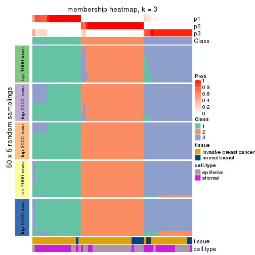
membership_heatmap(res, k = 4)
membership_heatmap(res, k = 5)
membership_heatmap(res, k = 6)
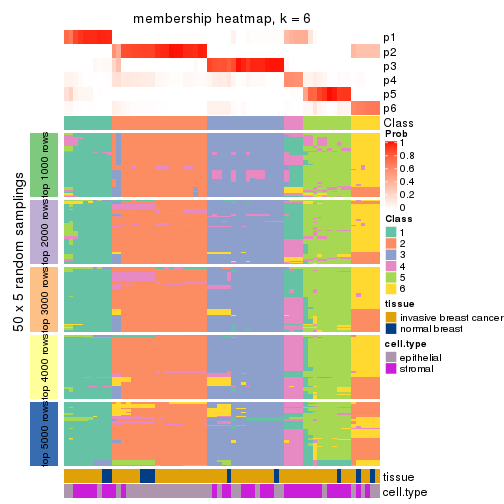
As soon as we have had the classes for columns, we can look for signatures which are significantly different between classes which can be candidate marks for certain classes. Following are the heatmaps for signatures.
Signature heatmaps where rows are scaled:
get_signatures(res, k = 2)
get_signatures(res, k = 3)
get_signatures(res, k = 4)

get_signatures(res, k = 5)
get_signatures(res, k = 6)
Signature heatmaps where rows are not scaled:
get_signatures(res, k = 2, scale_rows = FALSE)
get_signatures(res, k = 3, scale_rows = FALSE)
get_signatures(res, k = 4, scale_rows = FALSE)
get_signatures(res, k = 5, scale_rows = FALSE)
get_signatures(res, k = 6, scale_rows = FALSE)
Compare the overlap of signatures from different k:
compare_signatures(res)
get_signature() returns a data frame invisibly. TO get the list of signatures, the function
call should be assigned to a variable explicitly. In following code, if plot argument is set
to FALSE, no heatmap is plotted while only the differential analysis is performed.
# code only for demonstration
tb = get_signature(res, k = ..., plot = FALSE)
An example of the output of tb is:
#> which_row fdr mean_1 mean_2 scaled_mean_1 scaled_mean_2 km
#> 1 38 0.042760348 8.373488 9.131774 -0.5533452 0.5164555 1
#> 2 40 0.018707592 7.106213 8.469186 -0.6173731 0.5762149 1
#> 3 55 0.019134737 10.221463 11.207825 -0.6159697 0.5749050 1
#> 4 59 0.006059896 5.921854 7.869574 -0.6899429 0.6439467 1
#> 5 60 0.018055526 8.928898 10.211722 -0.6204761 0.5791110 1
#> 6 98 0.009384629 15.714769 14.887706 0.6635654 -0.6193277 2
...
The columns in tb are:
which_row: row indices corresponding to the input matrix.fdr: FDR for the differential test. mean_x: The mean value in group x.scaled_mean_x: The mean value in group x after rows are scaled.km: Row groups if k-means clustering is applied to rows.UMAP plot which shows how samples are separated.
dimension_reduction(res, k = 2, method = "UMAP")
dimension_reduction(res, k = 3, method = "UMAP")
dimension_reduction(res, k = 4, method = "UMAP")
dimension_reduction(res, k = 5, method = "UMAP")
dimension_reduction(res, k = 6, method = "UMAP")
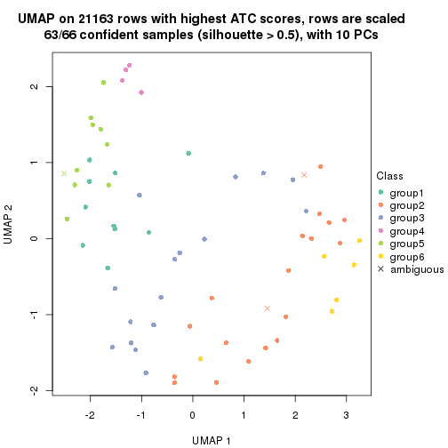
Following heatmap shows how subgroups are split when increasing k:
collect_classes(res)
Test correlation between subgroups and known annotations. If the known annotation is numeric, one-way ANOVA test is applied, and if the known annotation is discrete, chi-squared contingency table test is applied.
test_to_known_factors(res)
#> n tissue(p) cell.type(p) k
#> ATC:kmeans 66 0.758 1.58e-04 2
#> ATC:kmeans 65 0.347 9.42e-06 3
#> ATC:kmeans 58 0.464 9.80e-06 4
#> ATC:kmeans 50 0.711 7.85e-04 5
#> ATC:kmeans 63 0.769 8.26e-05 6
If matrix rows can be associated to genes, consider to use functional_enrichment(res,
...) to perform function enrichment for the signature genes. See this vignette for more detailed explanations.
The object with results only for a single top-value method and a single partition method can be extracted as:
res = res_list["ATC", "skmeans"]
# you can also extract it by
# res = res_list["ATC:skmeans"]
A summary of res and all the functions that can be applied to it:
res
#> A 'ConsensusPartition' object with k = 2, 3, 4, 5, 6.
#> On a matrix with 21163 rows and 66 columns.
#> Top rows (1000, 2000, 3000, 4000, 5000) are extracted by 'ATC' method.
#> Subgroups are detected by 'skmeans' method.
#> Performed in total 1250 partitions by row resampling.
#> Best k for subgroups seems to be 3.
#>
#> Following methods can be applied to this 'ConsensusPartition' object:
#> [1] "cola_report" "collect_classes" "collect_plots"
#> [4] "collect_stats" "colnames" "compare_signatures"
#> [7] "consensus_heatmap" "dimension_reduction" "functional_enrichment"
#> [10] "get_anno_col" "get_anno" "get_classes"
#> [13] "get_consensus" "get_matrix" "get_membership"
#> [16] "get_param" "get_signatures" "get_stats"
#> [19] "is_best_k" "is_stable_k" "membership_heatmap"
#> [22] "ncol" "nrow" "plot_ecdf"
#> [25] "rownames" "select_partition_number" "show"
#> [28] "suggest_best_k" "test_to_known_factors"
collect_plots() function collects all the plots made from res for all k (number of partitions)
into one single page to provide an easy and fast comparison between different k.
collect_plots(res)
The plots are:
k and the heatmap of
predicted classes for each k.k.k.k.All the plots in panels can be made by individual functions and they are plotted later in this section.
select_partition_number() produces several plots showing different
statistics for choosing “optimized” k. There are following statistics:
k;k, the area increased is defined as \(A_k - A_{k-1}\).The detailed explanations of these statistics can be found in the cola vignette.
Generally speaking, lower PAC score, higher mean silhouette score or higher
concordance corresponds to better partition. Rand index and Jaccard index
measure how similar the current partition is compared to partition with k-1.
If they are too similar, we won't accept k is better than k-1.
select_partition_number(res)
The numeric values for all these statistics can be obtained by get_stats().
get_stats(res)
#> k 1-PAC mean_silhouette concordance area_increased Rand Jaccard
#> 2 2 1.000 0.982 0.993 0.5048 0.497 0.497
#> 3 3 0.965 0.941 0.971 0.2213 0.858 0.719
#> 4 4 0.885 0.861 0.937 0.0701 0.969 0.918
#> 5 5 0.842 0.549 0.868 0.0455 0.974 0.926
#> 6 6 0.790 0.737 0.848 0.0427 0.939 0.819
suggest_best_k() suggests the best \(k\) based on these statistics. The rules are as follows:
suggest_best_k(res)
#> [1] 3
#> attr(,"optional")
#> [1] 2
There is also optional best \(k\) = 2 that is worth to check.
Following shows the table of the partitions (You need to click the show/hide
code output link to see it). The membership matrix (columns with name p*)
is inferred by
clue::cl_consensus()
function with the SE method. Basically the value in the membership matrix
represents the probability to belong to a certain group. The finall class
label for an item is determined with the group with highest probability it
belongs to.
In get_classes() function, the entropy is calculated from the membership
matrix and the silhouette score is calculated from the consensus matrix.
cbind(get_classes(res, k = 2), get_membership(res, k = 2))
#> class entropy silhouette p1 p2
#> GSM272727 2 0.0000 0.989 0.000 1.000
#> GSM272729 2 0.0000 0.989 0.000 1.000
#> GSM272731 2 0.0000 0.989 0.000 1.000
#> GSM272733 2 0.0000 0.989 0.000 1.000
#> GSM272735 2 0.0000 0.989 0.000 1.000
#> GSM272728 2 0.0000 0.989 0.000 1.000
#> GSM272730 1 0.0000 0.998 1.000 0.000
#> GSM272732 1 0.0000 0.998 1.000 0.000
#> GSM272734 1 0.0000 0.998 1.000 0.000
#> GSM272736 2 0.0000 0.989 0.000 1.000
#> GSM272671 2 0.0000 0.989 0.000 1.000
#> GSM272673 2 0.0000 0.989 0.000 1.000
#> GSM272675 2 0.0000 0.989 0.000 1.000
#> GSM272677 2 0.0000 0.989 0.000 1.000
#> GSM272679 2 0.0000 0.989 0.000 1.000
#> GSM272681 2 0.9686 0.341 0.396 0.604
#> GSM272683 2 0.0000 0.989 0.000 1.000
#> GSM272685 2 0.0000 0.989 0.000 1.000
#> GSM272687 1 0.0938 0.987 0.988 0.012
#> GSM272689 2 0.0000 0.989 0.000 1.000
#> GSM272691 2 0.0000 0.989 0.000 1.000
#> GSM272693 1 0.0000 0.998 1.000 0.000
#> GSM272695 2 0.0000 0.989 0.000 1.000
#> GSM272697 2 0.0000 0.989 0.000 1.000
#> GSM272699 2 0.0000 0.989 0.000 1.000
#> GSM272701 2 0.0000 0.989 0.000 1.000
#> GSM272703 2 0.0000 0.989 0.000 1.000
#> GSM272705 2 0.0000 0.989 0.000 1.000
#> GSM272707 1 0.0000 0.998 1.000 0.000
#> GSM272709 2 0.0000 0.989 0.000 1.000
#> GSM272711 2 0.0000 0.989 0.000 1.000
#> GSM272713 1 0.0000 0.998 1.000 0.000
#> GSM272715 2 0.0000 0.989 0.000 1.000
#> GSM272717 2 0.0000 0.989 0.000 1.000
#> GSM272719 2 0.0000 0.989 0.000 1.000
#> GSM272721 1 0.0000 0.998 1.000 0.000
#> GSM272723 2 0.0000 0.989 0.000 1.000
#> GSM272725 1 0.0000 0.998 1.000 0.000
#> GSM272672 2 0.0000 0.989 0.000 1.000
#> GSM272674 1 0.0000 0.998 1.000 0.000
#> GSM272676 2 0.0000 0.989 0.000 1.000
#> GSM272678 2 0.0000 0.989 0.000 1.000
#> GSM272680 2 0.0000 0.989 0.000 1.000
#> GSM272682 1 0.0000 0.998 1.000 0.000
#> GSM272684 1 0.0000 0.998 1.000 0.000
#> GSM272686 2 0.0000 0.989 0.000 1.000
#> GSM272688 1 0.0000 0.998 1.000 0.000
#> GSM272690 1 0.0000 0.998 1.000 0.000
#> GSM272692 1 0.0000 0.998 1.000 0.000
#> GSM272694 1 0.0000 0.998 1.000 0.000
#> GSM272696 2 0.0000 0.989 0.000 1.000
#> GSM272698 1 0.0000 0.998 1.000 0.000
#> GSM272700 1 0.0000 0.998 1.000 0.000
#> GSM272702 1 0.0000 0.998 1.000 0.000
#> GSM272704 1 0.0000 0.998 1.000 0.000
#> GSM272706 1 0.0000 0.998 1.000 0.000
#> GSM272708 1 0.0000 0.998 1.000 0.000
#> GSM272710 1 0.0000 0.998 1.000 0.000
#> GSM272712 1 0.0000 0.998 1.000 0.000
#> GSM272714 1 0.0000 0.998 1.000 0.000
#> GSM272716 1 0.0000 0.998 1.000 0.000
#> GSM272718 2 0.0000 0.989 0.000 1.000
#> GSM272720 1 0.0000 0.998 1.000 0.000
#> GSM272722 1 0.0000 0.998 1.000 0.000
#> GSM272724 1 0.2423 0.958 0.960 0.040
#> GSM272726 1 0.0000 0.998 1.000 0.000
cbind(get_classes(res, k = 3), get_membership(res, k = 3))
#> class entropy silhouette p1 p2 p3
#> GSM272727 2 0.0000 0.982 0.000 1.000 0.000
#> GSM272729 3 0.3686 0.835 0.000 0.140 0.860
#> GSM272731 2 0.0000 0.982 0.000 1.000 0.000
#> GSM272733 2 0.0000 0.982 0.000 1.000 0.000
#> GSM272735 2 0.0000 0.982 0.000 1.000 0.000
#> GSM272728 2 0.0000 0.982 0.000 1.000 0.000
#> GSM272730 1 0.0000 0.997 1.000 0.000 0.000
#> GSM272732 1 0.0000 0.997 1.000 0.000 0.000
#> GSM272734 1 0.0000 0.997 1.000 0.000 0.000
#> GSM272736 2 0.0000 0.982 0.000 1.000 0.000
#> GSM272671 2 0.0000 0.982 0.000 1.000 0.000
#> GSM272673 2 0.0000 0.982 0.000 1.000 0.000
#> GSM272675 2 0.0000 0.982 0.000 1.000 0.000
#> GSM272677 2 0.0000 0.982 0.000 1.000 0.000
#> GSM272679 2 0.0000 0.982 0.000 1.000 0.000
#> GSM272681 2 0.8883 0.222 0.176 0.568 0.256
#> GSM272683 2 0.0000 0.982 0.000 1.000 0.000
#> GSM272685 2 0.0000 0.982 0.000 1.000 0.000
#> GSM272687 3 0.1163 0.837 0.028 0.000 0.972
#> GSM272689 2 0.0000 0.982 0.000 1.000 0.000
#> GSM272691 2 0.0000 0.982 0.000 1.000 0.000
#> GSM272693 1 0.0000 0.997 1.000 0.000 0.000
#> GSM272695 2 0.0000 0.982 0.000 1.000 0.000
#> GSM272697 2 0.0000 0.982 0.000 1.000 0.000
#> GSM272699 2 0.0000 0.982 0.000 1.000 0.000
#> GSM272701 2 0.0000 0.982 0.000 1.000 0.000
#> GSM272703 2 0.0000 0.982 0.000 1.000 0.000
#> GSM272705 3 0.6280 0.229 0.000 0.460 0.540
#> GSM272707 1 0.0000 0.997 1.000 0.000 0.000
#> GSM272709 3 0.4796 0.773 0.000 0.220 0.780
#> GSM272711 2 0.0000 0.982 0.000 1.000 0.000
#> GSM272713 1 0.0000 0.997 1.000 0.000 0.000
#> GSM272715 3 0.0424 0.847 0.000 0.008 0.992
#> GSM272717 2 0.0000 0.982 0.000 1.000 0.000
#> GSM272719 2 0.0000 0.982 0.000 1.000 0.000
#> GSM272721 1 0.0000 0.997 1.000 0.000 0.000
#> GSM272723 2 0.0000 0.982 0.000 1.000 0.000
#> GSM272725 1 0.0237 0.993 0.996 0.000 0.004
#> GSM272672 3 0.5560 0.674 0.000 0.300 0.700
#> GSM272674 1 0.0000 0.997 1.000 0.000 0.000
#> GSM272676 2 0.0000 0.982 0.000 1.000 0.000
#> GSM272678 2 0.0000 0.982 0.000 1.000 0.000
#> GSM272680 2 0.0000 0.982 0.000 1.000 0.000
#> GSM272682 1 0.0000 0.997 1.000 0.000 0.000
#> GSM272684 1 0.0000 0.997 1.000 0.000 0.000
#> GSM272686 3 0.3116 0.848 0.000 0.108 0.892
#> GSM272688 1 0.0000 0.997 1.000 0.000 0.000
#> GSM272690 1 0.0000 0.997 1.000 0.000 0.000
#> GSM272692 1 0.0000 0.997 1.000 0.000 0.000
#> GSM272694 1 0.0000 0.997 1.000 0.000 0.000
#> GSM272696 3 0.2537 0.854 0.000 0.080 0.920
#> GSM272698 1 0.2448 0.922 0.924 0.000 0.076
#> GSM272700 1 0.0000 0.997 1.000 0.000 0.000
#> GSM272702 1 0.0000 0.997 1.000 0.000 0.000
#> GSM272704 1 0.0000 0.997 1.000 0.000 0.000
#> GSM272706 1 0.0000 0.997 1.000 0.000 0.000
#> GSM272708 1 0.0424 0.990 0.992 0.000 0.008
#> GSM272710 1 0.0000 0.997 1.000 0.000 0.000
#> GSM272712 1 0.0000 0.997 1.000 0.000 0.000
#> GSM272714 1 0.0000 0.997 1.000 0.000 0.000
#> GSM272716 1 0.0000 0.997 1.000 0.000 0.000
#> GSM272718 2 0.0000 0.982 0.000 1.000 0.000
#> GSM272720 1 0.0000 0.997 1.000 0.000 0.000
#> GSM272722 3 0.0892 0.842 0.020 0.000 0.980
#> GSM272724 3 0.0000 0.844 0.000 0.000 1.000
#> GSM272726 1 0.0000 0.997 1.000 0.000 0.000
cbind(get_classes(res, k = 4), get_membership(res, k = 4))
#> class entropy silhouette p1 p2 p3 p4
#> GSM272727 2 0.0000 0.973 0.000 1.000 0.000 0.000
#> GSM272729 3 0.2480 0.695 0.000 0.088 0.904 0.008
#> GSM272731 2 0.0000 0.973 0.000 1.000 0.000 0.000
#> GSM272733 2 0.0000 0.973 0.000 1.000 0.000 0.000
#> GSM272735 2 0.0188 0.971 0.000 0.996 0.000 0.004
#> GSM272728 2 0.0000 0.973 0.000 1.000 0.000 0.000
#> GSM272730 1 0.0000 0.961 1.000 0.000 0.000 0.000
#> GSM272732 1 0.0000 0.961 1.000 0.000 0.000 0.000
#> GSM272734 1 0.0000 0.961 1.000 0.000 0.000 0.000
#> GSM272736 2 0.5466 0.065 0.000 0.548 0.016 0.436
#> GSM272671 2 0.0000 0.973 0.000 1.000 0.000 0.000
#> GSM272673 2 0.0817 0.953 0.000 0.976 0.000 0.024
#> GSM272675 2 0.0000 0.973 0.000 1.000 0.000 0.000
#> GSM272677 2 0.0188 0.971 0.000 0.996 0.000 0.004
#> GSM272679 2 0.0000 0.973 0.000 1.000 0.000 0.000
#> GSM272681 4 0.3746 0.584 0.040 0.072 0.020 0.868
#> GSM272683 2 0.0000 0.973 0.000 1.000 0.000 0.000
#> GSM272685 2 0.0000 0.973 0.000 1.000 0.000 0.000
#> GSM272687 3 0.4228 0.639 0.008 0.000 0.760 0.232
#> GSM272689 2 0.0000 0.973 0.000 1.000 0.000 0.000
#> GSM272691 2 0.0188 0.971 0.000 0.996 0.000 0.004
#> GSM272693 1 0.0000 0.961 1.000 0.000 0.000 0.000
#> GSM272695 2 0.0000 0.973 0.000 1.000 0.000 0.000
#> GSM272697 2 0.0000 0.973 0.000 1.000 0.000 0.000
#> GSM272699 2 0.0000 0.973 0.000 1.000 0.000 0.000
#> GSM272701 2 0.0000 0.973 0.000 1.000 0.000 0.000
#> GSM272703 2 0.0000 0.973 0.000 1.000 0.000 0.000
#> GSM272705 4 0.7439 0.299 0.000 0.204 0.296 0.500
#> GSM272707 1 0.0000 0.961 1.000 0.000 0.000 0.000
#> GSM272709 3 0.3172 0.612 0.000 0.160 0.840 0.000
#> GSM272711 2 0.0000 0.973 0.000 1.000 0.000 0.000
#> GSM272713 1 0.0000 0.961 1.000 0.000 0.000 0.000
#> GSM272715 3 0.4482 0.459 0.000 0.008 0.728 0.264
#> GSM272717 2 0.0000 0.973 0.000 1.000 0.000 0.000
#> GSM272719 2 0.0000 0.973 0.000 1.000 0.000 0.000
#> GSM272721 1 0.0000 0.961 1.000 0.000 0.000 0.000
#> GSM272723 2 0.0000 0.973 0.000 1.000 0.000 0.000
#> GSM272725 1 0.2530 0.889 0.896 0.000 0.004 0.100
#> GSM272672 3 0.7647 -0.063 0.000 0.336 0.444 0.220
#> GSM272674 1 0.0000 0.961 1.000 0.000 0.000 0.000
#> GSM272676 2 0.0000 0.973 0.000 1.000 0.000 0.000
#> GSM272678 2 0.1022 0.945 0.000 0.968 0.000 0.032
#> GSM272680 2 0.2760 0.833 0.000 0.872 0.000 0.128
#> GSM272682 1 0.0000 0.961 1.000 0.000 0.000 0.000
#> GSM272684 1 0.0000 0.961 1.000 0.000 0.000 0.000
#> GSM272686 3 0.1635 0.714 0.000 0.044 0.948 0.008
#> GSM272688 1 0.0000 0.961 1.000 0.000 0.000 0.000
#> GSM272690 1 0.3569 0.797 0.804 0.000 0.000 0.196
#> GSM272692 1 0.0592 0.951 0.984 0.000 0.000 0.016
#> GSM272694 1 0.0000 0.961 1.000 0.000 0.000 0.000
#> GSM272696 3 0.2408 0.716 0.000 0.044 0.920 0.036
#> GSM272698 4 0.2589 0.508 0.116 0.000 0.000 0.884
#> GSM272700 1 0.3610 0.793 0.800 0.000 0.000 0.200
#> GSM272702 1 0.0000 0.961 1.000 0.000 0.000 0.000
#> GSM272704 1 0.0000 0.961 1.000 0.000 0.000 0.000
#> GSM272706 1 0.0000 0.961 1.000 0.000 0.000 0.000
#> GSM272708 1 0.1042 0.939 0.972 0.000 0.020 0.008
#> GSM272710 1 0.0000 0.961 1.000 0.000 0.000 0.000
#> GSM272712 1 0.3688 0.783 0.792 0.000 0.000 0.208
#> GSM272714 1 0.0000 0.961 1.000 0.000 0.000 0.000
#> GSM272716 1 0.0000 0.961 1.000 0.000 0.000 0.000
#> GSM272718 2 0.0000 0.973 0.000 1.000 0.000 0.000
#> GSM272720 1 0.3610 0.793 0.800 0.000 0.000 0.200
#> GSM272722 3 0.3108 0.682 0.016 0.000 0.872 0.112
#> GSM272724 3 0.3688 0.647 0.000 0.000 0.792 0.208
#> GSM272726 1 0.0000 0.961 1.000 0.000 0.000 0.000
cbind(get_classes(res, k = 5), get_membership(res, k = 5))
#> class entropy silhouette p1 p2 p3 p4 p5
#> GSM272727 2 0.0324 0.9661 0.000 0.992 0.004 0.004 0.000
#> GSM272729 3 0.4071 0.5694 0.000 0.128 0.808 0.036 0.028
#> GSM272731 2 0.1018 0.9609 0.000 0.968 0.000 0.016 0.016
#> GSM272733 2 0.0912 0.9615 0.000 0.972 0.000 0.012 0.016
#> GSM272735 2 0.1018 0.9609 0.000 0.968 0.000 0.016 0.016
#> GSM272728 2 0.0324 0.9661 0.000 0.992 0.004 0.004 0.000
#> GSM272730 1 0.4304 0.3334 0.516 0.000 0.000 0.484 0.000
#> GSM272732 1 0.4549 0.3176 0.528 0.000 0.000 0.464 0.008
#> GSM272734 1 0.4300 0.3617 0.524 0.000 0.000 0.476 0.000
#> GSM272736 5 0.5841 0.1959 0.000 0.400 0.016 0.060 0.524
#> GSM272671 2 0.0486 0.9629 0.000 0.988 0.004 0.004 0.004
#> GSM272673 2 0.2451 0.8985 0.000 0.904 0.004 0.036 0.056
#> GSM272675 2 0.0579 0.9653 0.000 0.984 0.000 0.008 0.008
#> GSM272677 2 0.1117 0.9591 0.000 0.964 0.000 0.016 0.020
#> GSM272679 2 0.0290 0.9665 0.000 0.992 0.000 0.000 0.008
#> GSM272681 5 0.2115 0.3026 0.004 0.028 0.008 0.032 0.928
#> GSM272683 2 0.0981 0.9558 0.000 0.972 0.012 0.008 0.008
#> GSM272685 2 0.0162 0.9655 0.000 0.996 0.004 0.000 0.000
#> GSM272687 3 0.5639 0.5745 0.012 0.000 0.664 0.128 0.196
#> GSM272689 2 0.0162 0.9665 0.000 0.996 0.000 0.004 0.000
#> GSM272691 2 0.0912 0.9616 0.000 0.972 0.000 0.012 0.016
#> GSM272693 1 0.4302 0.3523 0.520 0.000 0.000 0.480 0.000
#> GSM272695 2 0.0324 0.9658 0.000 0.992 0.004 0.004 0.000
#> GSM272697 2 0.0324 0.9665 0.000 0.992 0.000 0.004 0.004
#> GSM272699 2 0.0162 0.9665 0.000 0.996 0.000 0.004 0.000
#> GSM272701 2 0.0613 0.9631 0.000 0.984 0.004 0.008 0.004
#> GSM272703 2 0.0486 0.9629 0.000 0.988 0.004 0.004 0.004
#> GSM272705 5 0.7823 0.1107 0.004 0.104 0.224 0.188 0.480
#> GSM272707 1 0.4300 0.3617 0.524 0.000 0.000 0.476 0.000
#> GSM272709 3 0.3928 0.5248 0.000 0.176 0.788 0.028 0.008
#> GSM272711 2 0.0693 0.9642 0.000 0.980 0.000 0.008 0.012
#> GSM272713 1 0.4287 0.2980 0.540 0.000 0.000 0.460 0.000
#> GSM272715 3 0.6587 0.2324 0.000 0.012 0.496 0.160 0.332
#> GSM272717 2 0.0324 0.9661 0.000 0.992 0.004 0.004 0.000
#> GSM272719 2 0.0579 0.9653 0.000 0.984 0.000 0.008 0.008
#> GSM272721 1 0.4300 0.3617 0.524 0.000 0.000 0.476 0.000
#> GSM272723 2 0.0486 0.9629 0.000 0.988 0.004 0.004 0.004
#> GSM272725 1 0.5270 -0.4125 0.556 0.000 0.024 0.404 0.016
#> GSM272672 3 0.8366 -0.0600 0.000 0.240 0.348 0.152 0.260
#> GSM272674 1 0.4300 0.3617 0.524 0.000 0.000 0.476 0.000
#> GSM272676 2 0.1106 0.9579 0.000 0.964 0.000 0.012 0.024
#> GSM272678 2 0.2300 0.9051 0.000 0.904 0.000 0.024 0.072
#> GSM272680 2 0.5183 0.5748 0.000 0.708 0.024 0.064 0.204
#> GSM272682 1 0.4552 0.3344 0.524 0.000 0.000 0.468 0.008
#> GSM272684 1 0.4294 0.3362 0.532 0.000 0.000 0.468 0.000
#> GSM272686 3 0.2196 0.6294 0.000 0.024 0.916 0.056 0.004
#> GSM272688 1 0.4300 0.3617 0.524 0.000 0.000 0.476 0.000
#> GSM272690 1 0.0963 -0.0952 0.964 0.000 0.000 0.036 0.000
#> GSM272692 1 0.4161 -0.1531 0.608 0.000 0.000 0.392 0.000
#> GSM272694 1 0.4302 0.3523 0.520 0.000 0.000 0.480 0.000
#> GSM272696 3 0.4241 0.6238 0.000 0.020 0.800 0.116 0.064
#> GSM272698 5 0.5834 0.2327 0.348 0.000 0.000 0.108 0.544
#> GSM272700 1 0.0404 -0.0797 0.988 0.000 0.000 0.012 0.000
#> GSM272702 1 0.4302 0.3523 0.520 0.000 0.000 0.480 0.000
#> GSM272704 1 0.4294 0.3051 0.532 0.000 0.000 0.468 0.000
#> GSM272706 1 0.4302 0.3523 0.520 0.000 0.000 0.480 0.000
#> GSM272708 4 0.5173 0.0000 0.460 0.000 0.020 0.508 0.012
#> GSM272710 1 0.4300 0.3617 0.524 0.000 0.000 0.476 0.000
#> GSM272712 1 0.0880 -0.0843 0.968 0.000 0.000 0.032 0.000
#> GSM272714 1 0.4297 0.3524 0.528 0.000 0.000 0.472 0.000
#> GSM272716 1 0.4305 0.3073 0.512 0.000 0.000 0.488 0.000
#> GSM272718 2 0.0324 0.9661 0.000 0.992 0.004 0.004 0.000
#> GSM272720 1 0.0000 -0.0803 1.000 0.000 0.000 0.000 0.000
#> GSM272722 3 0.5235 0.5931 0.024 0.000 0.716 0.176 0.084
#> GSM272724 3 0.5906 0.5706 0.004 0.000 0.616 0.204 0.176
#> GSM272726 1 0.4300 0.3617 0.524 0.000 0.000 0.476 0.000
cbind(get_classes(res, k = 6), get_membership(res, k = 6))
#> class entropy silhouette p1 p2 p3 p4 p5 p6
#> GSM272727 2 0.0291 0.91137 0.000 0.992 0.000 0.000 0.004 0.004
#> GSM272729 3 0.6401 0.27365 0.000 0.136 0.520 0.008 0.292 0.044
#> GSM272731 2 0.1700 0.89313 0.000 0.916 0.000 0.000 0.004 0.080
#> GSM272733 2 0.1471 0.90108 0.000 0.932 0.000 0.000 0.004 0.064
#> GSM272735 2 0.2020 0.88248 0.000 0.896 0.000 0.000 0.008 0.096
#> GSM272728 2 0.0291 0.91137 0.000 0.992 0.000 0.000 0.004 0.004
#> GSM272730 1 0.0717 0.92479 0.976 0.000 0.000 0.008 0.000 0.016
#> GSM272732 1 0.0858 0.91857 0.968 0.000 0.000 0.028 0.000 0.004
#> GSM272734 1 0.0146 0.92934 0.996 0.000 0.000 0.000 0.000 0.004
#> GSM272736 6 0.5387 0.08071 0.000 0.340 0.000 0.004 0.112 0.544
#> GSM272671 2 0.1168 0.89752 0.000 0.956 0.000 0.000 0.028 0.016
#> GSM272673 2 0.3695 0.73854 0.000 0.772 0.000 0.004 0.040 0.184
#> GSM272675 2 0.0458 0.91239 0.000 0.984 0.000 0.000 0.000 0.016
#> GSM272677 2 0.1812 0.89057 0.000 0.912 0.000 0.000 0.008 0.080
#> GSM272679 2 0.0458 0.91318 0.000 0.984 0.000 0.000 0.000 0.016
#> GSM272681 6 0.4630 -0.25579 0.008 0.004 0.024 0.052 0.172 0.740
#> GSM272683 2 0.2401 0.86873 0.000 0.892 0.004 0.000 0.060 0.044
#> GSM272685 2 0.0291 0.91137 0.000 0.992 0.000 0.000 0.004 0.004
#> GSM272687 3 0.6483 0.39780 0.004 0.000 0.572 0.100 0.164 0.160
#> GSM272689 2 0.1082 0.91060 0.000 0.956 0.000 0.000 0.004 0.040
#> GSM272691 2 0.2311 0.87228 0.000 0.880 0.000 0.000 0.016 0.104
#> GSM272693 1 0.0692 0.92484 0.976 0.000 0.000 0.004 0.000 0.020
#> GSM272695 2 0.0713 0.91196 0.000 0.972 0.000 0.000 0.000 0.028
#> GSM272697 2 0.1007 0.91009 0.000 0.956 0.000 0.000 0.000 0.044
#> GSM272699 2 0.1196 0.91054 0.000 0.952 0.000 0.000 0.008 0.040
#> GSM272701 2 0.1708 0.89601 0.000 0.932 0.004 0.000 0.024 0.040
#> GSM272703 2 0.1478 0.88975 0.000 0.944 0.004 0.000 0.032 0.020
#> GSM272705 5 0.4497 0.46346 0.000 0.052 0.016 0.020 0.752 0.160
#> GSM272707 1 0.0000 0.92936 1.000 0.000 0.000 0.000 0.000 0.000
#> GSM272709 3 0.5686 0.30311 0.000 0.200 0.608 0.012 0.172 0.008
#> GSM272711 2 0.0972 0.91075 0.000 0.964 0.000 0.000 0.008 0.028
#> GSM272713 1 0.0508 0.92676 0.984 0.000 0.000 0.012 0.000 0.004
#> GSM272715 5 0.4732 0.29129 0.000 0.004 0.224 0.012 0.692 0.068
#> GSM272717 2 0.0291 0.91137 0.000 0.992 0.000 0.000 0.004 0.004
#> GSM272719 2 0.0547 0.91229 0.000 0.980 0.000 0.000 0.000 0.020
#> GSM272721 1 0.0405 0.92920 0.988 0.000 0.000 0.008 0.000 0.004
#> GSM272723 2 0.1478 0.88975 0.000 0.944 0.004 0.000 0.032 0.020
#> GSM272725 1 0.6305 -0.02359 0.544 0.000 0.060 0.304 0.020 0.072
#> GSM272672 5 0.6061 0.30515 0.000 0.172 0.120 0.008 0.624 0.076
#> GSM272674 1 0.0146 0.92934 0.996 0.000 0.000 0.000 0.000 0.004
#> GSM272676 2 0.2121 0.86873 0.000 0.892 0.000 0.000 0.012 0.096
#> GSM272678 2 0.3320 0.73713 0.000 0.772 0.000 0.000 0.016 0.212
#> GSM272680 2 0.6413 0.07862 0.000 0.528 0.028 0.040 0.092 0.312
#> GSM272682 1 0.0891 0.91848 0.968 0.000 0.000 0.024 0.000 0.008
#> GSM272684 1 0.0603 0.92442 0.980 0.000 0.000 0.016 0.000 0.004
#> GSM272686 3 0.4469 0.45108 0.000 0.028 0.736 0.024 0.196 0.016
#> GSM272688 1 0.0260 0.92831 0.992 0.000 0.000 0.008 0.000 0.000
#> GSM272690 4 0.3659 0.73388 0.364 0.000 0.000 0.636 0.000 0.000
#> GSM272692 1 0.2234 0.78904 0.872 0.000 0.000 0.124 0.000 0.004
#> GSM272694 1 0.0363 0.92881 0.988 0.000 0.000 0.000 0.000 0.012
#> GSM272696 3 0.5530 0.42585 0.000 0.020 0.628 0.028 0.264 0.060
#> GSM272698 4 0.6935 0.00335 0.064 0.000 0.020 0.472 0.136 0.308
#> GSM272700 4 0.3409 0.79229 0.300 0.000 0.000 0.700 0.000 0.000
#> GSM272702 1 0.0405 0.92814 0.988 0.000 0.000 0.004 0.000 0.008
#> GSM272704 1 0.1049 0.90938 0.960 0.000 0.000 0.032 0.000 0.008
#> GSM272706 1 0.0405 0.92814 0.988 0.000 0.000 0.004 0.000 0.008
#> GSM272708 1 0.5565 0.47014 0.688 0.000 0.092 0.148 0.028 0.044
#> GSM272710 1 0.0146 0.92910 0.996 0.000 0.000 0.004 0.000 0.000
#> GSM272712 4 0.3101 0.74835 0.244 0.000 0.000 0.756 0.000 0.000
#> GSM272714 1 0.0458 0.92627 0.984 0.000 0.000 0.016 0.000 0.000
#> GSM272716 1 0.0881 0.91857 0.972 0.000 0.000 0.012 0.008 0.008
#> GSM272718 2 0.0291 0.91137 0.000 0.992 0.000 0.000 0.004 0.004
#> GSM272720 4 0.3428 0.79182 0.304 0.000 0.000 0.696 0.000 0.000
#> GSM272722 3 0.4544 0.45027 0.008 0.000 0.768 0.096 0.048 0.080
#> GSM272724 3 0.5605 0.39732 0.000 0.000 0.652 0.072 0.176 0.100
#> GSM272726 1 0.0146 0.92934 0.996 0.000 0.000 0.000 0.000 0.004
Heatmaps for the consensus matrix. It visualizes the probability of two samples to be in a same group.
consensus_heatmap(res, k = 2)
consensus_heatmap(res, k = 3)
consensus_heatmap(res, k = 4)
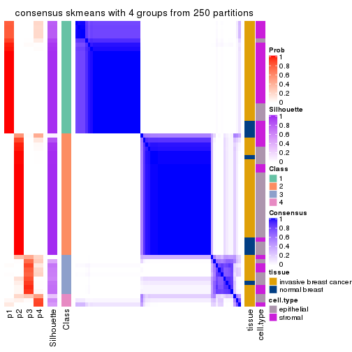
consensus_heatmap(res, k = 5)
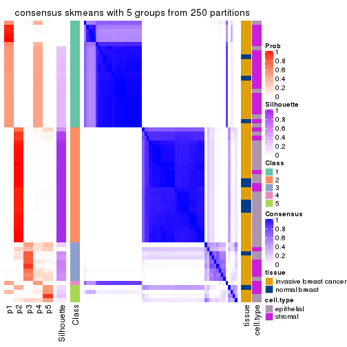
consensus_heatmap(res, k = 6)
Heatmaps for the membership of samples in all partitions to see how consistent they are:
membership_heatmap(res, k = 2)
membership_heatmap(res, k = 3)
membership_heatmap(res, k = 4)
membership_heatmap(res, k = 5)
membership_heatmap(res, k = 6)
As soon as we have had the classes for columns, we can look for signatures which are significantly different between classes which can be candidate marks for certain classes. Following are the heatmaps for signatures.
Signature heatmaps where rows are scaled:
get_signatures(res, k = 2)
get_signatures(res, k = 3)
get_signatures(res, k = 4)
get_signatures(res, k = 5)
get_signatures(res, k = 6)
Signature heatmaps where rows are not scaled:
get_signatures(res, k = 2, scale_rows = FALSE)
get_signatures(res, k = 3, scale_rows = FALSE)

get_signatures(res, k = 4, scale_rows = FALSE)
get_signatures(res, k = 5, scale_rows = FALSE)
get_signatures(res, k = 6, scale_rows = FALSE)
Compare the overlap of signatures from different k:
compare_signatures(res)
get_signature() returns a data frame invisibly. TO get the list of signatures, the function
call should be assigned to a variable explicitly. In following code, if plot argument is set
to FALSE, no heatmap is plotted while only the differential analysis is performed.
# code only for demonstration
tb = get_signature(res, k = ..., plot = FALSE)
An example of the output of tb is:
#> which_row fdr mean_1 mean_2 scaled_mean_1 scaled_mean_2 km
#> 1 38 0.042760348 8.373488 9.131774 -0.5533452 0.5164555 1
#> 2 40 0.018707592 7.106213 8.469186 -0.6173731 0.5762149 1
#> 3 55 0.019134737 10.221463 11.207825 -0.6159697 0.5749050 1
#> 4 59 0.006059896 5.921854 7.869574 -0.6899429 0.6439467 1
#> 5 60 0.018055526 8.928898 10.211722 -0.6204761 0.5791110 1
#> 6 98 0.009384629 15.714769 14.887706 0.6635654 -0.6193277 2
...
The columns in tb are:
which_row: row indices corresponding to the input matrix.fdr: FDR for the differential test. mean_x: The mean value in group x.scaled_mean_x: The mean value in group x after rows are scaled.km: Row groups if k-means clustering is applied to rows.UMAP plot which shows how samples are separated.
dimension_reduction(res, k = 2, method = "UMAP")
dimension_reduction(res, k = 3, method = "UMAP")
dimension_reduction(res, k = 4, method = "UMAP")
dimension_reduction(res, k = 5, method = "UMAP")
dimension_reduction(res, k = 6, method = "UMAP")
Following heatmap shows how subgroups are split when increasing k:
collect_classes(res)
Test correlation between subgroups and known annotations. If the known annotation is numeric, one-way ANOVA test is applied, and if the known annotation is discrete, chi-squared contingency table test is applied.
test_to_known_factors(res)
#> n tissue(p) cell.type(p) k
#> ATC:skmeans 65 0.442 3.87e-05 2
#> ATC:skmeans 64 0.529 4.74e-05 3
#> ATC:skmeans 62 0.832 1.22e-04 4
#> ATC:skmeans 34 1.000 1.13e-01 5
#> ATC:skmeans 50 0.613 7.43e-06 6
If matrix rows can be associated to genes, consider to use functional_enrichment(res,
...) to perform function enrichment for the signature genes. See this vignette for more detailed explanations.
The object with results only for a single top-value method and a single partition method can be extracted as:
res = res_list["ATC", "pam"]
# you can also extract it by
# res = res_list["ATC:pam"]
A summary of res and all the functions that can be applied to it:
res
#> A 'ConsensusPartition' object with k = 2, 3, 4, 5, 6.
#> On a matrix with 21163 rows and 66 columns.
#> Top rows (1000, 2000, 3000, 4000, 5000) are extracted by 'ATC' method.
#> Subgroups are detected by 'pam' method.
#> Performed in total 1250 partitions by row resampling.
#> Best k for subgroups seems to be 2.
#>
#> Following methods can be applied to this 'ConsensusPartition' object:
#> [1] "cola_report" "collect_classes" "collect_plots"
#> [4] "collect_stats" "colnames" "compare_signatures"
#> [7] "consensus_heatmap" "dimension_reduction" "functional_enrichment"
#> [10] "get_anno_col" "get_anno" "get_classes"
#> [13] "get_consensus" "get_matrix" "get_membership"
#> [16] "get_param" "get_signatures" "get_stats"
#> [19] "is_best_k" "is_stable_k" "membership_heatmap"
#> [22] "ncol" "nrow" "plot_ecdf"
#> [25] "rownames" "select_partition_number" "show"
#> [28] "suggest_best_k" "test_to_known_factors"
collect_plots() function collects all the plots made from res for all k (number of partitions)
into one single page to provide an easy and fast comparison between different k.
collect_plots(res)
The plots are:
k and the heatmap of
predicted classes for each k.k.k.k.All the plots in panels can be made by individual functions and they are plotted later in this section.
select_partition_number() produces several plots showing different
statistics for choosing “optimized” k. There are following statistics:
k;k, the area increased is defined as \(A_k - A_{k-1}\).The detailed explanations of these statistics can be found in the cola vignette.
Generally speaking, lower PAC score, higher mean silhouette score or higher
concordance corresponds to better partition. Rand index and Jaccard index
measure how similar the current partition is compared to partition with k-1.
If they are too similar, we won't accept k is better than k-1.
select_partition_number(res)
The numeric values for all these statistics can be obtained by get_stats().
get_stats(res)
#> k 1-PAC mean_silhouette concordance area_increased Rand Jaccard
#> 2 2 0.998 0.940 0.976 0.4926 0.509 0.509
#> 3 3 0.851 0.873 0.939 0.2731 0.781 0.606
#> 4 4 0.757 0.839 0.904 0.1203 0.924 0.804
#> 5 5 0.850 0.862 0.925 0.0975 0.858 0.580
#> 6 6 0.855 0.832 0.910 0.0221 0.979 0.908
suggest_best_k() suggests the best \(k\) based on these statistics. The rules are as follows:
suggest_best_k(res)
#> [1] 2
Following shows the table of the partitions (You need to click the show/hide
code output link to see it). The membership matrix (columns with name p*)
is inferred by
clue::cl_consensus()
function with the SE method. Basically the value in the membership matrix
represents the probability to belong to a certain group. The finall class
label for an item is determined with the group with highest probability it
belongs to.
In get_classes() function, the entropy is calculated from the membership
matrix and the silhouette score is calculated from the consensus matrix.
cbind(get_classes(res, k = 2), get_membership(res, k = 2))
#> class entropy silhouette p1 p2
#> GSM272727 2 0.0000 0.972 0.000 1.000
#> GSM272729 2 0.0000 0.972 0.000 1.000
#> GSM272731 2 0.0000 0.972 0.000 1.000
#> GSM272733 2 0.0000 0.972 0.000 1.000
#> GSM272735 2 0.0000 0.972 0.000 1.000
#> GSM272728 2 0.0000 0.972 0.000 1.000
#> GSM272730 1 0.0000 0.979 1.000 0.000
#> GSM272732 1 0.0000 0.979 1.000 0.000
#> GSM272734 1 0.0000 0.979 1.000 0.000
#> GSM272736 2 0.0000 0.972 0.000 1.000
#> GSM272671 2 0.0000 0.972 0.000 1.000
#> GSM272673 2 0.0000 0.972 0.000 1.000
#> GSM272675 2 0.0000 0.972 0.000 1.000
#> GSM272677 2 0.0000 0.972 0.000 1.000
#> GSM272679 2 0.0000 0.972 0.000 1.000
#> GSM272681 2 0.4298 0.890 0.088 0.912
#> GSM272683 2 0.0000 0.972 0.000 1.000
#> GSM272685 2 0.0000 0.972 0.000 1.000
#> GSM272687 2 0.9795 0.302 0.416 0.584
#> GSM272689 2 0.0000 0.972 0.000 1.000
#> GSM272691 2 0.0000 0.972 0.000 1.000
#> GSM272693 1 0.0000 0.979 1.000 0.000
#> GSM272695 2 0.0000 0.972 0.000 1.000
#> GSM272697 2 0.0000 0.972 0.000 1.000
#> GSM272699 2 0.0000 0.972 0.000 1.000
#> GSM272701 2 0.0000 0.972 0.000 1.000
#> GSM272703 2 0.0000 0.972 0.000 1.000
#> GSM272705 2 0.0000 0.972 0.000 1.000
#> GSM272707 1 0.0000 0.979 1.000 0.000
#> GSM272709 2 0.0000 0.972 0.000 1.000
#> GSM272711 2 0.0000 0.972 0.000 1.000
#> GSM272713 1 0.0000 0.979 1.000 0.000
#> GSM272715 2 0.0000 0.972 0.000 1.000
#> GSM272717 2 0.0000 0.972 0.000 1.000
#> GSM272719 2 0.0000 0.972 0.000 1.000
#> GSM272721 1 0.0000 0.979 1.000 0.000
#> GSM272723 2 0.0000 0.972 0.000 1.000
#> GSM272725 1 0.0376 0.976 0.996 0.004
#> GSM272672 2 0.0000 0.972 0.000 1.000
#> GSM272674 1 0.0000 0.979 1.000 0.000
#> GSM272676 2 0.0000 0.972 0.000 1.000
#> GSM272678 2 0.0000 0.972 0.000 1.000
#> GSM272680 2 0.0000 0.972 0.000 1.000
#> GSM272682 1 0.0000 0.979 1.000 0.000
#> GSM272684 1 0.0000 0.979 1.000 0.000
#> GSM272686 2 0.1633 0.953 0.024 0.976
#> GSM272688 1 0.0000 0.979 1.000 0.000
#> GSM272690 1 0.0000 0.979 1.000 0.000
#> GSM272692 1 0.0000 0.979 1.000 0.000
#> GSM272694 1 0.0000 0.979 1.000 0.000
#> GSM272696 2 0.1633 0.953 0.024 0.976
#> GSM272698 1 0.9944 0.104 0.544 0.456
#> GSM272700 1 0.0000 0.979 1.000 0.000
#> GSM272702 1 0.0000 0.979 1.000 0.000
#> GSM272704 1 0.0000 0.979 1.000 0.000
#> GSM272706 1 0.0000 0.979 1.000 0.000
#> GSM272708 1 0.0376 0.976 0.996 0.004
#> GSM272710 1 0.0000 0.979 1.000 0.000
#> GSM272712 1 0.3114 0.923 0.944 0.056
#> GSM272714 1 0.0000 0.979 1.000 0.000
#> GSM272716 1 0.0000 0.979 1.000 0.000
#> GSM272718 2 0.0000 0.972 0.000 1.000
#> GSM272720 1 0.0000 0.979 1.000 0.000
#> GSM272722 2 0.8267 0.655 0.260 0.740
#> GSM272724 2 0.7674 0.713 0.224 0.776
#> GSM272726 1 0.0000 0.979 1.000 0.000
cbind(get_classes(res, k = 3), get_membership(res, k = 3))
#> class entropy silhouette p1 p2 p3
#> GSM272727 2 0.000 0.954 0.000 1.000 0.000
#> GSM272729 2 0.424 0.813 0.000 0.824 0.176
#> GSM272731 2 0.000 0.954 0.000 1.000 0.000
#> GSM272733 2 0.000 0.954 0.000 1.000 0.000
#> GSM272735 2 0.000 0.954 0.000 1.000 0.000
#> GSM272728 2 0.000 0.954 0.000 1.000 0.000
#> GSM272730 3 0.216 0.869 0.064 0.000 0.936
#> GSM272732 3 0.216 0.869 0.064 0.000 0.936
#> GSM272734 1 0.000 1.000 1.000 0.000 0.000
#> GSM272736 2 0.116 0.936 0.000 0.972 0.028
#> GSM272671 2 0.000 0.954 0.000 1.000 0.000
#> GSM272673 2 0.000 0.954 0.000 1.000 0.000
#> GSM272675 2 0.000 0.954 0.000 1.000 0.000
#> GSM272677 2 0.000 0.954 0.000 1.000 0.000
#> GSM272679 2 0.000 0.954 0.000 1.000 0.000
#> GSM272681 2 0.628 0.266 0.000 0.540 0.460
#> GSM272683 2 0.207 0.916 0.000 0.940 0.060
#> GSM272685 2 0.000 0.954 0.000 1.000 0.000
#> GSM272687 3 0.000 0.867 0.000 0.000 1.000
#> GSM272689 2 0.000 0.954 0.000 1.000 0.000
#> GSM272691 2 0.000 0.954 0.000 1.000 0.000
#> GSM272693 3 0.216 0.869 0.064 0.000 0.936
#> GSM272695 2 0.000 0.954 0.000 1.000 0.000
#> GSM272697 2 0.000 0.954 0.000 1.000 0.000
#> GSM272699 2 0.000 0.954 0.000 1.000 0.000
#> GSM272701 2 0.000 0.954 0.000 1.000 0.000
#> GSM272703 2 0.000 0.954 0.000 1.000 0.000
#> GSM272705 2 0.533 0.686 0.000 0.728 0.272
#> GSM272707 3 0.630 0.256 0.476 0.000 0.524
#> GSM272709 2 0.271 0.896 0.000 0.912 0.088
#> GSM272711 2 0.000 0.954 0.000 1.000 0.000
#> GSM272713 3 0.631 0.196 0.496 0.000 0.504
#> GSM272715 3 0.608 0.218 0.000 0.388 0.612
#> GSM272717 2 0.000 0.954 0.000 1.000 0.000
#> GSM272719 2 0.000 0.954 0.000 1.000 0.000
#> GSM272721 1 0.000 1.000 1.000 0.000 0.000
#> GSM272723 2 0.000 0.954 0.000 1.000 0.000
#> GSM272725 3 0.000 0.867 0.000 0.000 1.000
#> GSM272672 2 0.525 0.699 0.000 0.736 0.264
#> GSM272674 1 0.000 1.000 1.000 0.000 0.000
#> GSM272676 2 0.000 0.954 0.000 1.000 0.000
#> GSM272678 2 0.000 0.954 0.000 1.000 0.000
#> GSM272680 2 0.296 0.885 0.000 0.900 0.100
#> GSM272682 3 0.327 0.845 0.116 0.000 0.884
#> GSM272684 1 0.000 1.000 1.000 0.000 0.000
#> GSM272686 3 0.000 0.867 0.000 0.000 1.000
#> GSM272688 1 0.000 1.000 1.000 0.000 0.000
#> GSM272690 3 0.362 0.831 0.136 0.000 0.864
#> GSM272692 1 0.000 1.000 1.000 0.000 0.000
#> GSM272694 1 0.000 1.000 1.000 0.000 0.000
#> GSM272696 3 0.000 0.867 0.000 0.000 1.000
#> GSM272698 3 0.000 0.867 0.000 0.000 1.000
#> GSM272700 3 0.406 0.810 0.164 0.000 0.836
#> GSM272702 3 0.497 0.730 0.236 0.000 0.764
#> GSM272704 3 0.263 0.862 0.084 0.000 0.916
#> GSM272706 3 0.429 0.794 0.180 0.000 0.820
#> GSM272708 3 0.000 0.867 0.000 0.000 1.000
#> GSM272710 1 0.000 1.000 1.000 0.000 0.000
#> GSM272712 3 0.000 0.867 0.000 0.000 1.000
#> GSM272714 1 0.000 1.000 1.000 0.000 0.000
#> GSM272716 3 0.216 0.869 0.064 0.000 0.936
#> GSM272718 2 0.000 0.954 0.000 1.000 0.000
#> GSM272720 3 0.216 0.869 0.064 0.000 0.936
#> GSM272722 3 0.000 0.867 0.000 0.000 1.000
#> GSM272724 3 0.000 0.867 0.000 0.000 1.000
#> GSM272726 1 0.000 1.000 1.000 0.000 0.000
cbind(get_classes(res, k = 4), get_membership(res, k = 4))
#> class entropy silhouette p1 p2 p3 p4
#> GSM272727 4 0.3172 1.0000 0.000 0.160 0.000 0.840
#> GSM272729 2 0.5265 0.7099 0.000 0.748 0.092 0.160
#> GSM272731 2 0.0000 0.9016 0.000 1.000 0.000 0.000
#> GSM272733 2 0.0000 0.9016 0.000 1.000 0.000 0.000
#> GSM272735 2 0.0000 0.9016 0.000 1.000 0.000 0.000
#> GSM272728 4 0.3172 1.0000 0.000 0.160 0.000 0.840
#> GSM272730 3 0.0336 0.8404 0.008 0.000 0.992 0.000
#> GSM272732 3 0.0336 0.8404 0.008 0.000 0.992 0.000
#> GSM272734 1 0.0000 0.9798 1.000 0.000 0.000 0.000
#> GSM272736 2 0.2256 0.8584 0.000 0.924 0.020 0.056
#> GSM272671 4 0.3172 1.0000 0.000 0.160 0.000 0.840
#> GSM272673 2 0.1022 0.8843 0.000 0.968 0.000 0.032
#> GSM272675 4 0.3172 1.0000 0.000 0.160 0.000 0.840
#> GSM272677 2 0.0000 0.9016 0.000 1.000 0.000 0.000
#> GSM272679 2 0.0000 0.9016 0.000 1.000 0.000 0.000
#> GSM272681 2 0.7169 0.3110 0.000 0.516 0.332 0.152
#> GSM272683 2 0.3351 0.7983 0.000 0.844 0.008 0.148
#> GSM272685 2 0.0000 0.9016 0.000 1.000 0.000 0.000
#> GSM272687 3 0.3172 0.8158 0.000 0.000 0.840 0.160
#> GSM272689 2 0.0000 0.9016 0.000 1.000 0.000 0.000
#> GSM272691 2 0.0000 0.9016 0.000 1.000 0.000 0.000
#> GSM272693 3 0.0336 0.8404 0.008 0.000 0.992 0.000
#> GSM272695 2 0.0000 0.9016 0.000 1.000 0.000 0.000
#> GSM272697 2 0.0000 0.9016 0.000 1.000 0.000 0.000
#> GSM272699 2 0.0000 0.9016 0.000 1.000 0.000 0.000
#> GSM272701 2 0.0000 0.9016 0.000 1.000 0.000 0.000
#> GSM272703 2 0.0000 0.9016 0.000 1.000 0.000 0.000
#> GSM272705 2 0.6555 0.5582 0.000 0.632 0.212 0.156
#> GSM272707 3 0.4776 0.3927 0.376 0.000 0.624 0.000
#> GSM272709 2 0.3853 0.7788 0.000 0.820 0.020 0.160
#> GSM272711 2 0.0000 0.9016 0.000 1.000 0.000 0.000
#> GSM272713 3 0.4877 0.3253 0.408 0.000 0.592 0.000
#> GSM272715 3 0.7349 0.0825 0.000 0.384 0.456 0.160
#> GSM272717 4 0.3172 1.0000 0.000 0.160 0.000 0.840
#> GSM272719 2 0.0000 0.9016 0.000 1.000 0.000 0.000
#> GSM272721 1 0.0000 0.9798 1.000 0.000 0.000 0.000
#> GSM272723 2 0.0000 0.9016 0.000 1.000 0.000 0.000
#> GSM272725 3 0.3172 0.8158 0.000 0.000 0.840 0.160
#> GSM272672 2 0.5902 0.6535 0.000 0.700 0.140 0.160
#> GSM272674 1 0.0592 0.9668 0.984 0.000 0.016 0.000
#> GSM272676 2 0.0000 0.9016 0.000 1.000 0.000 0.000
#> GSM272678 2 0.0000 0.9016 0.000 1.000 0.000 0.000
#> GSM272680 2 0.3931 0.7913 0.000 0.832 0.040 0.128
#> GSM272682 3 0.1302 0.8296 0.044 0.000 0.956 0.000
#> GSM272684 1 0.0000 0.9798 1.000 0.000 0.000 0.000
#> GSM272686 3 0.3172 0.8158 0.000 0.000 0.840 0.160
#> GSM272688 1 0.0000 0.9798 1.000 0.000 0.000 0.000
#> GSM272690 3 0.1792 0.8162 0.068 0.000 0.932 0.000
#> GSM272692 1 0.0000 0.9798 1.000 0.000 0.000 0.000
#> GSM272694 1 0.2921 0.8314 0.860 0.000 0.140 0.000
#> GSM272696 3 0.3172 0.8158 0.000 0.000 0.840 0.160
#> GSM272698 3 0.3172 0.8158 0.000 0.000 0.840 0.160
#> GSM272700 3 0.2408 0.7914 0.104 0.000 0.896 0.000
#> GSM272702 3 0.3311 0.7211 0.172 0.000 0.828 0.000
#> GSM272704 3 0.0817 0.8366 0.024 0.000 0.976 0.000
#> GSM272706 3 0.2281 0.7968 0.096 0.000 0.904 0.000
#> GSM272708 3 0.3172 0.8158 0.000 0.000 0.840 0.160
#> GSM272710 1 0.0000 0.9798 1.000 0.000 0.000 0.000
#> GSM272712 3 0.0707 0.8390 0.000 0.000 0.980 0.020
#> GSM272714 1 0.0000 0.9798 1.000 0.000 0.000 0.000
#> GSM272716 3 0.0336 0.8404 0.008 0.000 0.992 0.000
#> GSM272718 4 0.3172 1.0000 0.000 0.160 0.000 0.840
#> GSM272720 3 0.0336 0.8404 0.008 0.000 0.992 0.000
#> GSM272722 3 0.3172 0.8158 0.000 0.000 0.840 0.160
#> GSM272724 3 0.3172 0.8158 0.000 0.000 0.840 0.160
#> GSM272726 1 0.0000 0.9798 1.000 0.000 0.000 0.000
cbind(get_classes(res, k = 5), get_membership(res, k = 5))
#> class entropy silhouette p1 p2 p3 p4 p5
#> GSM272727 5 0.0000 1.000 0.000 0.000 0.000 0.000 1
#> GSM272729 3 0.3636 0.661 0.000 0.272 0.728 0.000 0
#> GSM272731 2 0.0000 0.953 0.000 1.000 0.000 0.000 0
#> GSM272733 2 0.0000 0.953 0.000 1.000 0.000 0.000 0
#> GSM272735 2 0.0000 0.953 0.000 1.000 0.000 0.000 0
#> GSM272728 5 0.0000 1.000 0.000 0.000 0.000 0.000 1
#> GSM272730 4 0.2732 0.833 0.000 0.000 0.160 0.840 0
#> GSM272732 4 0.1197 0.862 0.000 0.000 0.048 0.952 0
#> GSM272734 1 0.0000 0.964 1.000 0.000 0.000 0.000 0
#> GSM272736 2 0.3534 0.608 0.000 0.744 0.256 0.000 0
#> GSM272671 5 0.0000 1.000 0.000 0.000 0.000 0.000 1
#> GSM272673 2 0.0290 0.946 0.000 0.992 0.008 0.000 0
#> GSM272675 5 0.0000 1.000 0.000 0.000 0.000 0.000 1
#> GSM272677 2 0.0000 0.953 0.000 1.000 0.000 0.000 0
#> GSM272679 2 0.0000 0.953 0.000 1.000 0.000 0.000 0
#> GSM272681 3 0.4201 0.381 0.000 0.408 0.592 0.000 0
#> GSM272683 2 0.3561 0.601 0.000 0.740 0.260 0.000 0
#> GSM272685 2 0.0000 0.953 0.000 1.000 0.000 0.000 0
#> GSM272687 3 0.0794 0.858 0.000 0.000 0.972 0.028 0
#> GSM272689 2 0.0000 0.953 0.000 1.000 0.000 0.000 0
#> GSM272691 2 0.0000 0.953 0.000 1.000 0.000 0.000 0
#> GSM272693 4 0.1197 0.862 0.000 0.000 0.048 0.952 0
#> GSM272695 2 0.0000 0.953 0.000 1.000 0.000 0.000 0
#> GSM272697 2 0.0000 0.953 0.000 1.000 0.000 0.000 0
#> GSM272699 2 0.0000 0.953 0.000 1.000 0.000 0.000 0
#> GSM272701 2 0.0000 0.953 0.000 1.000 0.000 0.000 0
#> GSM272703 2 0.0000 0.953 0.000 1.000 0.000 0.000 0
#> GSM272705 3 0.2690 0.784 0.000 0.156 0.844 0.000 0
#> GSM272707 4 0.4589 0.650 0.248 0.000 0.048 0.704 0
#> GSM272709 3 0.1792 0.831 0.000 0.084 0.916 0.000 0
#> GSM272711 2 0.0000 0.953 0.000 1.000 0.000 0.000 0
#> GSM272713 4 0.4495 0.658 0.244 0.000 0.044 0.712 0
#> GSM272715 3 0.1544 0.838 0.000 0.068 0.932 0.000 0
#> GSM272717 5 0.0000 1.000 0.000 0.000 0.000 0.000 1
#> GSM272719 2 0.0000 0.953 0.000 1.000 0.000 0.000 0
#> GSM272721 1 0.0000 0.964 1.000 0.000 0.000 0.000 0
#> GSM272723 2 0.0000 0.953 0.000 1.000 0.000 0.000 0
#> GSM272725 3 0.1043 0.849 0.000 0.000 0.960 0.040 0
#> GSM272672 3 0.3661 0.656 0.000 0.276 0.724 0.000 0
#> GSM272674 1 0.3336 0.694 0.772 0.000 0.000 0.228 0
#> GSM272676 2 0.0000 0.953 0.000 1.000 0.000 0.000 0
#> GSM272678 2 0.0000 0.953 0.000 1.000 0.000 0.000 0
#> GSM272680 2 0.3949 0.440 0.000 0.668 0.332 0.000 0
#> GSM272682 4 0.1197 0.862 0.000 0.000 0.048 0.952 0
#> GSM272684 1 0.0000 0.964 1.000 0.000 0.000 0.000 0
#> GSM272686 3 0.0794 0.858 0.000 0.000 0.972 0.028 0
#> GSM272688 1 0.0000 0.964 1.000 0.000 0.000 0.000 0
#> GSM272690 4 0.1608 0.843 0.000 0.000 0.072 0.928 0
#> GSM272692 1 0.0955 0.944 0.968 0.000 0.028 0.004 0
#> GSM272694 4 0.3876 0.532 0.316 0.000 0.000 0.684 0
#> GSM272696 3 0.0794 0.858 0.000 0.000 0.972 0.028 0
#> GSM272698 3 0.0880 0.856 0.000 0.000 0.968 0.032 0
#> GSM272700 4 0.2020 0.836 0.000 0.000 0.100 0.900 0
#> GSM272702 4 0.1197 0.862 0.000 0.000 0.048 0.952 0
#> GSM272704 4 0.1197 0.862 0.000 0.000 0.048 0.952 0
#> GSM272706 4 0.1197 0.862 0.000 0.000 0.048 0.952 0
#> GSM272708 3 0.0880 0.856 0.000 0.000 0.968 0.032 0
#> GSM272710 1 0.0000 0.964 1.000 0.000 0.000 0.000 0
#> GSM272712 4 0.3932 0.652 0.000 0.000 0.328 0.672 0
#> GSM272714 1 0.0000 0.964 1.000 0.000 0.000 0.000 0
#> GSM272716 4 0.3452 0.765 0.000 0.000 0.244 0.756 0
#> GSM272718 5 0.0000 1.000 0.000 0.000 0.000 0.000 1
#> GSM272720 4 0.2280 0.826 0.000 0.000 0.120 0.880 0
#> GSM272722 3 0.0794 0.858 0.000 0.000 0.972 0.028 0
#> GSM272724 3 0.0794 0.858 0.000 0.000 0.972 0.028 0
#> GSM272726 1 0.0000 0.964 1.000 0.000 0.000 0.000 0
cbind(get_classes(res, k = 6), get_membership(res, k = 6))
#> class entropy silhouette p1 p2 p3 p4 p5 p6
#> GSM272727 5 0.0000 1.000 0.000 0.000 0.000 0.000 1 0.000
#> GSM272729 3 0.2697 0.742 0.000 0.188 0.812 0.000 0 0.000
#> GSM272731 2 0.0000 0.948 0.000 1.000 0.000 0.000 0 0.000
#> GSM272733 2 0.0000 0.948 0.000 1.000 0.000 0.000 0 0.000
#> GSM272735 2 0.0000 0.948 0.000 1.000 0.000 0.000 0 0.000
#> GSM272728 5 0.0000 1.000 0.000 0.000 0.000 0.000 1 0.000
#> GSM272730 1 0.2260 0.622 0.860 0.000 0.140 0.000 0 0.000
#> GSM272732 1 0.0000 0.795 1.000 0.000 0.000 0.000 0 0.000
#> GSM272734 6 0.0000 0.879 0.000 0.000 0.000 0.000 0 1.000
#> GSM272736 2 0.3175 0.613 0.000 0.744 0.256 0.000 0 0.000
#> GSM272671 5 0.0000 1.000 0.000 0.000 0.000 0.000 1 0.000
#> GSM272673 2 0.0260 0.941 0.000 0.992 0.008 0.000 0 0.000
#> GSM272675 5 0.0000 1.000 0.000 0.000 0.000 0.000 1 0.000
#> GSM272677 2 0.0000 0.948 0.000 1.000 0.000 0.000 0 0.000
#> GSM272679 2 0.0000 0.948 0.000 1.000 0.000 0.000 0 0.000
#> GSM272681 3 0.3774 0.362 0.000 0.408 0.592 0.000 0 0.000
#> GSM272683 2 0.3563 0.443 0.000 0.664 0.336 0.000 0 0.000
#> GSM272685 2 0.0000 0.948 0.000 1.000 0.000 0.000 0 0.000
#> GSM272687 3 0.1075 0.872 0.048 0.000 0.952 0.000 0 0.000
#> GSM272689 2 0.0000 0.948 0.000 1.000 0.000 0.000 0 0.000
#> GSM272691 2 0.0000 0.948 0.000 1.000 0.000 0.000 0 0.000
#> GSM272693 1 0.0000 0.795 1.000 0.000 0.000 0.000 0 0.000
#> GSM272695 2 0.0000 0.948 0.000 1.000 0.000 0.000 0 0.000
#> GSM272697 2 0.0000 0.948 0.000 1.000 0.000 0.000 0 0.000
#> GSM272699 2 0.0000 0.948 0.000 1.000 0.000 0.000 0 0.000
#> GSM272701 2 0.0000 0.948 0.000 1.000 0.000 0.000 0 0.000
#> GSM272703 2 0.0000 0.948 0.000 1.000 0.000 0.000 0 0.000
#> GSM272705 3 0.1863 0.824 0.000 0.104 0.896 0.000 0 0.000
#> GSM272707 1 0.3244 0.599 0.732 0.000 0.000 0.000 0 0.268
#> GSM272709 3 0.1204 0.857 0.000 0.056 0.944 0.000 0 0.000
#> GSM272711 2 0.0000 0.948 0.000 1.000 0.000 0.000 0 0.000
#> GSM272713 1 0.3390 0.569 0.704 0.000 0.000 0.000 0 0.296
#> GSM272715 3 0.1196 0.864 0.008 0.040 0.952 0.000 0 0.000
#> GSM272717 5 0.0000 1.000 0.000 0.000 0.000 0.000 1 0.000
#> GSM272719 2 0.0000 0.948 0.000 1.000 0.000 0.000 0 0.000
#> GSM272721 6 0.0000 0.879 0.000 0.000 0.000 0.000 0 1.000
#> GSM272723 2 0.0000 0.948 0.000 1.000 0.000 0.000 0 0.000
#> GSM272725 3 0.1204 0.867 0.056 0.000 0.944 0.000 0 0.000
#> GSM272672 3 0.3101 0.684 0.000 0.244 0.756 0.000 0 0.000
#> GSM272674 6 0.3695 0.284 0.376 0.000 0.000 0.000 0 0.624
#> GSM272676 2 0.0000 0.948 0.000 1.000 0.000 0.000 0 0.000
#> GSM272678 2 0.0000 0.948 0.000 1.000 0.000 0.000 0 0.000
#> GSM272680 2 0.3547 0.452 0.000 0.668 0.332 0.000 0 0.000
#> GSM272682 1 0.0000 0.795 1.000 0.000 0.000 0.000 0 0.000
#> GSM272684 6 0.0000 0.879 0.000 0.000 0.000 0.000 0 1.000
#> GSM272686 3 0.1075 0.872 0.048 0.000 0.952 0.000 0 0.000
#> GSM272688 6 0.0000 0.879 0.000 0.000 0.000 0.000 0 1.000
#> GSM272690 4 0.3482 0.882 0.316 0.000 0.000 0.684 0 0.000
#> GSM272692 6 0.3551 0.753 0.000 0.000 0.048 0.168 0 0.784
#> GSM272694 1 0.3351 0.567 0.712 0.000 0.000 0.000 0 0.288
#> GSM272696 3 0.1075 0.872 0.048 0.000 0.952 0.000 0 0.000
#> GSM272698 3 0.1930 0.861 0.048 0.036 0.916 0.000 0 0.000
#> GSM272700 4 0.3482 0.882 0.316 0.000 0.000 0.684 0 0.000
#> GSM272702 1 0.0000 0.795 1.000 0.000 0.000 0.000 0 0.000
#> GSM272704 1 0.0000 0.795 1.000 0.000 0.000 0.000 0 0.000
#> GSM272706 1 0.0000 0.795 1.000 0.000 0.000 0.000 0 0.000
#> GSM272708 3 0.1075 0.872 0.048 0.000 0.952 0.000 0 0.000
#> GSM272710 6 0.2260 0.824 0.000 0.000 0.000 0.140 0 0.860
#> GSM272712 4 0.5702 0.624 0.324 0.000 0.180 0.496 0 0.000
#> GSM272714 6 0.0937 0.868 0.000 0.000 0.000 0.040 0 0.960
#> GSM272716 1 0.2260 0.621 0.860 0.000 0.140 0.000 0 0.000
#> GSM272718 5 0.0000 1.000 0.000 0.000 0.000 0.000 1 0.000
#> GSM272720 4 0.3482 0.882 0.316 0.000 0.000 0.684 0 0.000
#> GSM272722 3 0.1075 0.872 0.048 0.000 0.952 0.000 0 0.000
#> GSM272724 3 0.1075 0.872 0.048 0.000 0.952 0.000 0 0.000
#> GSM272726 6 0.2260 0.824 0.000 0.000 0.000 0.140 0 0.860
Heatmaps for the consensus matrix. It visualizes the probability of two samples to be in a same group.
consensus_heatmap(res, k = 2)
consensus_heatmap(res, k = 3)
consensus_heatmap(res, k = 4)
consensus_heatmap(res, k = 5)
consensus_heatmap(res, k = 6)
Heatmaps for the membership of samples in all partitions to see how consistent they are:
membership_heatmap(res, k = 2)
membership_heatmap(res, k = 3)
membership_heatmap(res, k = 4)
membership_heatmap(res, k = 5)

membership_heatmap(res, k = 6)
As soon as we have had the classes for columns, we can look for signatures which are significantly different between classes which can be candidate marks for certain classes. Following are the heatmaps for signatures.
Signature heatmaps where rows are scaled:
get_signatures(res, k = 2)
get_signatures(res, k = 3)
get_signatures(res, k = 4)
get_signatures(res, k = 5)
get_signatures(res, k = 6)
Signature heatmaps where rows are not scaled:
get_signatures(res, k = 2, scale_rows = FALSE)
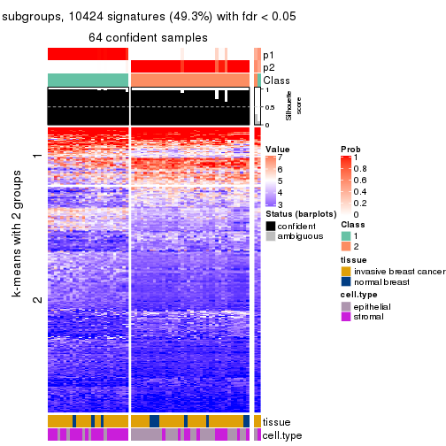
get_signatures(res, k = 3, scale_rows = FALSE)
get_signatures(res, k = 4, scale_rows = FALSE)
get_signatures(res, k = 5, scale_rows = FALSE)
get_signatures(res, k = 6, scale_rows = FALSE)
Compare the overlap of signatures from different k:
compare_signatures(res)
get_signature() returns a data frame invisibly. TO get the list of signatures, the function
call should be assigned to a variable explicitly. In following code, if plot argument is set
to FALSE, no heatmap is plotted while only the differential analysis is performed.
# code only for demonstration
tb = get_signature(res, k = ..., plot = FALSE)
An example of the output of tb is:
#> which_row fdr mean_1 mean_2 scaled_mean_1 scaled_mean_2 km
#> 1 38 0.042760348 8.373488 9.131774 -0.5533452 0.5164555 1
#> 2 40 0.018707592 7.106213 8.469186 -0.6173731 0.5762149 1
#> 3 55 0.019134737 10.221463 11.207825 -0.6159697 0.5749050 1
#> 4 59 0.006059896 5.921854 7.869574 -0.6899429 0.6439467 1
#> 5 60 0.018055526 8.928898 10.211722 -0.6204761 0.5791110 1
#> 6 98 0.009384629 15.714769 14.887706 0.6635654 -0.6193277 2
...
The columns in tb are:
which_row: row indices corresponding to the input matrix.fdr: FDR for the differential test. mean_x: The mean value in group x.scaled_mean_x: The mean value in group x after rows are scaled.km: Row groups if k-means clustering is applied to rows.UMAP plot which shows how samples are separated.
dimension_reduction(res, k = 2, method = "UMAP")
dimension_reduction(res, k = 3, method = "UMAP")
dimension_reduction(res, k = 4, method = "UMAP")
dimension_reduction(res, k = 5, method = "UMAP")
dimension_reduction(res, k = 6, method = "UMAP")
Following heatmap shows how subgroups are split when increasing k:
collect_classes(res)
Test correlation between subgroups and known annotations. If the known annotation is numeric, one-way ANOVA test is applied, and if the known annotation is discrete, chi-squared contingency table test is applied.
test_to_known_factors(res)
#> n tissue(p) cell.type(p) k
#> ATC:pam 64 0.693 1.35e-04 2
#> ATC:pam 62 0.446 2.07e-06 3
#> ATC:pam 62 0.507 7.26e-06 4
#> ATC:pam 64 0.657 1.74e-04 5
#> ATC:pam 62 0.685 7.06e-04 6
If matrix rows can be associated to genes, consider to use functional_enrichment(res,
...) to perform function enrichment for the signature genes. See this vignette for more detailed explanations.
The object with results only for a single top-value method and a single partition method can be extracted as:
res = res_list["ATC", "mclust"]
# you can also extract it by
# res = res_list["ATC:mclust"]
A summary of res and all the functions that can be applied to it:
res
#> A 'ConsensusPartition' object with k = 2, 3, 4, 5, 6.
#> On a matrix with 21163 rows and 66 columns.
#> Top rows (1000, 2000, 3000, 4000, 5000) are extracted by 'ATC' method.
#> Subgroups are detected by 'mclust' method.
#> Performed in total 1250 partitions by row resampling.
#> Best k for subgroups seems to be 5.
#>
#> Following methods can be applied to this 'ConsensusPartition' object:
#> [1] "cola_report" "collect_classes" "collect_plots"
#> [4] "collect_stats" "colnames" "compare_signatures"
#> [7] "consensus_heatmap" "dimension_reduction" "functional_enrichment"
#> [10] "get_anno_col" "get_anno" "get_classes"
#> [13] "get_consensus" "get_matrix" "get_membership"
#> [16] "get_param" "get_signatures" "get_stats"
#> [19] "is_best_k" "is_stable_k" "membership_heatmap"
#> [22] "ncol" "nrow" "plot_ecdf"
#> [25] "rownames" "select_partition_number" "show"
#> [28] "suggest_best_k" "test_to_known_factors"
collect_plots() function collects all the plots made from res for all k (number of partitions)
into one single page to provide an easy and fast comparison between different k.
collect_plots(res)
The plots are:
k and the heatmap of
predicted classes for each k.k.k.k.All the plots in panels can be made by individual functions and they are plotted later in this section.
select_partition_number() produces several plots showing different
statistics for choosing “optimized” k. There are following statistics:
k;k, the area increased is defined as \(A_k - A_{k-1}\).The detailed explanations of these statistics can be found in the cola vignette.
Generally speaking, lower PAC score, higher mean silhouette score or higher
concordance corresponds to better partition. Rand index and Jaccard index
measure how similar the current partition is compared to partition with k-1.
If they are too similar, we won't accept k is better than k-1.
select_partition_number(res)
The numeric values for all these statistics can be obtained by get_stats().
get_stats(res)
#> k 1-PAC mean_silhouette concordance area_increased Rand Jaccard
#> 2 2 0.685 0.888 0.947 0.3890 0.612 0.612
#> 3 3 0.379 0.621 0.783 0.6344 0.705 0.524
#> 4 4 0.490 0.592 0.778 0.0741 0.854 0.619
#> 5 5 0.618 0.646 0.774 0.0806 0.840 0.538
#> 6 6 0.675 0.576 0.730 0.0658 0.888 0.599
suggest_best_k() suggests the best \(k\) based on these statistics. The rules are as follows:
suggest_best_k(res)
#> [1] 5
Following shows the table of the partitions (You need to click the show/hide
code output link to see it). The membership matrix (columns with name p*)
is inferred by
clue::cl_consensus()
function with the SE method. Basically the value in the membership matrix
represents the probability to belong to a certain group. The finall class
label for an item is determined with the group with highest probability it
belongs to.
In get_classes() function, the entropy is calculated from the membership
matrix and the silhouette score is calculated from the consensus matrix.
cbind(get_classes(res, k = 2), get_membership(res, k = 2))
#> class entropy silhouette p1 p2
#> GSM272727 2 0.6343 0.801 0.160 0.840
#> GSM272729 2 0.0000 0.952 0.000 1.000
#> GSM272731 2 0.0000 0.952 0.000 1.000
#> GSM272733 2 0.0000 0.952 0.000 1.000
#> GSM272735 2 0.0000 0.952 0.000 1.000
#> GSM272728 2 0.6343 0.801 0.160 0.840
#> GSM272730 2 0.0000 0.952 0.000 1.000
#> GSM272732 2 0.8499 0.608 0.276 0.724
#> GSM272734 1 0.8081 0.714 0.752 0.248
#> GSM272736 2 0.0000 0.952 0.000 1.000
#> GSM272671 2 0.5408 0.841 0.124 0.876
#> GSM272673 2 0.0000 0.952 0.000 1.000
#> GSM272675 2 0.5737 0.828 0.136 0.864
#> GSM272677 2 0.0000 0.952 0.000 1.000
#> GSM272679 2 0.0000 0.952 0.000 1.000
#> GSM272681 2 0.0000 0.952 0.000 1.000
#> GSM272683 2 0.0000 0.952 0.000 1.000
#> GSM272685 2 0.0000 0.952 0.000 1.000
#> GSM272687 2 0.0000 0.952 0.000 1.000
#> GSM272689 2 0.0376 0.949 0.004 0.996
#> GSM272691 2 0.0000 0.952 0.000 1.000
#> GSM272693 2 0.0000 0.952 0.000 1.000
#> GSM272695 2 0.0000 0.952 0.000 1.000
#> GSM272697 2 0.0000 0.952 0.000 1.000
#> GSM272699 2 0.0000 0.952 0.000 1.000
#> GSM272701 2 0.0000 0.952 0.000 1.000
#> GSM272703 2 0.0000 0.952 0.000 1.000
#> GSM272705 2 0.0000 0.952 0.000 1.000
#> GSM272707 1 0.7219 0.787 0.800 0.200
#> GSM272709 2 0.0000 0.952 0.000 1.000
#> GSM272711 2 0.0938 0.943 0.012 0.988
#> GSM272713 1 0.1633 0.903 0.976 0.024
#> GSM272715 2 0.0000 0.952 0.000 1.000
#> GSM272717 2 0.6343 0.801 0.160 0.840
#> GSM272719 2 0.0000 0.952 0.000 1.000
#> GSM272721 1 0.3879 0.903 0.924 0.076
#> GSM272723 2 0.0000 0.952 0.000 1.000
#> GSM272725 2 0.0000 0.952 0.000 1.000
#> GSM272672 2 0.0000 0.952 0.000 1.000
#> GSM272674 1 0.4815 0.885 0.896 0.104
#> GSM272676 2 0.0000 0.952 0.000 1.000
#> GSM272678 2 0.0000 0.952 0.000 1.000
#> GSM272680 2 0.0000 0.952 0.000 1.000
#> GSM272682 1 0.9944 0.213 0.544 0.456
#> GSM272684 1 0.0000 0.898 1.000 0.000
#> GSM272686 2 0.0000 0.952 0.000 1.000
#> GSM272688 1 0.3879 0.903 0.924 0.076
#> GSM272690 1 0.0000 0.898 1.000 0.000
#> GSM272692 1 0.0000 0.898 1.000 0.000
#> GSM272694 2 0.9170 0.442 0.332 0.668
#> GSM272696 2 0.0000 0.952 0.000 1.000
#> GSM272698 2 0.0000 0.952 0.000 1.000
#> GSM272700 1 0.0000 0.898 1.000 0.000
#> GSM272702 1 0.4815 0.866 0.896 0.104
#> GSM272704 2 0.8081 0.641 0.248 0.752
#> GSM272706 2 0.7674 0.686 0.224 0.776
#> GSM272708 2 0.0000 0.952 0.000 1.000
#> GSM272710 1 0.4022 0.901 0.920 0.080
#> GSM272712 1 0.0000 0.898 1.000 0.000
#> GSM272714 1 0.3274 0.905 0.940 0.060
#> GSM272716 2 0.0000 0.952 0.000 1.000
#> GSM272718 2 0.6343 0.801 0.160 0.840
#> GSM272720 1 0.0000 0.898 1.000 0.000
#> GSM272722 2 0.0000 0.952 0.000 1.000
#> GSM272724 2 0.0000 0.952 0.000 1.000
#> GSM272726 1 0.3879 0.903 0.924 0.076
cbind(get_classes(res, k = 3), get_membership(res, k = 3))
#> class entropy silhouette p1 p2 p3
#> GSM272727 2 0.3879 0.6738 0.152 0.848 0.000
#> GSM272729 3 0.3816 0.7292 0.000 0.148 0.852
#> GSM272731 2 0.1643 0.7643 0.000 0.956 0.044
#> GSM272733 2 0.1860 0.7659 0.000 0.948 0.052
#> GSM272735 2 0.2878 0.7625 0.000 0.904 0.096
#> GSM272728 2 0.6169 0.4222 0.360 0.636 0.004
#> GSM272730 3 0.0892 0.7411 0.000 0.020 0.980
#> GSM272732 1 0.9616 0.2769 0.420 0.204 0.376
#> GSM272734 1 0.5722 0.7664 0.804 0.084 0.112
#> GSM272736 2 0.5785 0.5338 0.000 0.668 0.332
#> GSM272671 2 0.8050 -0.0332 0.064 0.500 0.436
#> GSM272673 2 0.4121 0.7298 0.000 0.832 0.168
#> GSM272675 2 0.4094 0.7177 0.100 0.872 0.028
#> GSM272677 2 0.1753 0.7651 0.000 0.952 0.048
#> GSM272679 2 0.1753 0.7637 0.000 0.952 0.048
#> GSM272681 2 0.6189 0.4812 0.004 0.632 0.364
#> GSM272683 3 0.4702 0.6816 0.000 0.212 0.788
#> GSM272685 2 0.1647 0.7607 0.004 0.960 0.036
#> GSM272687 3 0.3752 0.7325 0.000 0.144 0.856
#> GSM272689 2 0.4280 0.7535 0.020 0.856 0.124
#> GSM272691 2 0.3551 0.7517 0.000 0.868 0.132
#> GSM272693 3 0.6688 0.3046 0.308 0.028 0.664
#> GSM272695 2 0.6095 0.3375 0.000 0.608 0.392
#> GSM272697 2 0.3918 0.7567 0.012 0.868 0.120
#> GSM272699 2 0.3851 0.7493 0.004 0.860 0.136
#> GSM272701 3 0.6062 0.3841 0.000 0.384 0.616
#> GSM272703 3 0.5706 0.5650 0.000 0.320 0.680
#> GSM272705 2 0.6518 0.1351 0.004 0.512 0.484
#> GSM272707 1 0.6495 0.4570 0.536 0.004 0.460
#> GSM272709 3 0.3412 0.7400 0.000 0.124 0.876
#> GSM272711 2 0.3039 0.7502 0.036 0.920 0.044
#> GSM272713 1 0.5058 0.7774 0.756 0.000 0.244
#> GSM272715 3 0.6140 0.2208 0.000 0.404 0.596
#> GSM272717 2 0.3816 0.6748 0.148 0.852 0.000
#> GSM272719 2 0.1411 0.7598 0.000 0.964 0.036
#> GSM272721 1 0.4796 0.7903 0.780 0.000 0.220
#> GSM272723 3 0.5678 0.5718 0.000 0.316 0.684
#> GSM272725 3 0.3276 0.7013 0.024 0.068 0.908
#> GSM272672 3 0.6204 0.1683 0.000 0.424 0.576
#> GSM272674 1 0.6252 0.7635 0.772 0.084 0.144
#> GSM272676 2 0.2711 0.7663 0.000 0.912 0.088
#> GSM272678 2 0.5178 0.6378 0.000 0.744 0.256
#> GSM272680 2 0.6104 0.5033 0.004 0.648 0.348
#> GSM272682 1 0.9734 0.3298 0.432 0.236 0.332
#> GSM272684 1 0.4750 0.7912 0.784 0.000 0.216
#> GSM272686 3 0.1643 0.7560 0.000 0.044 0.956
#> GSM272688 1 0.4887 0.7869 0.772 0.000 0.228
#> GSM272690 1 0.0237 0.7512 0.996 0.004 0.000
#> GSM272692 1 0.0829 0.7480 0.984 0.012 0.004
#> GSM272694 3 0.6341 0.2645 0.312 0.016 0.672
#> GSM272696 3 0.3340 0.7417 0.000 0.120 0.880
#> GSM272698 2 0.6521 0.2430 0.004 0.500 0.496
#> GSM272700 1 0.0829 0.7480 0.984 0.012 0.004
#> GSM272702 1 0.6936 0.3711 0.524 0.016 0.460
#> GSM272704 3 0.5785 0.1655 0.332 0.000 0.668
#> GSM272706 3 0.1643 0.6904 0.044 0.000 0.956
#> GSM272708 3 0.1031 0.7456 0.000 0.024 0.976
#> GSM272710 1 0.4750 0.7912 0.784 0.000 0.216
#> GSM272712 1 0.0829 0.7480 0.984 0.012 0.004
#> GSM272714 1 0.4796 0.7911 0.780 0.000 0.220
#> GSM272716 3 0.1636 0.7361 0.016 0.020 0.964
#> GSM272718 2 0.3816 0.6748 0.148 0.852 0.000
#> GSM272720 1 0.0237 0.7512 0.996 0.004 0.000
#> GSM272722 3 0.1411 0.7527 0.000 0.036 0.964
#> GSM272724 3 0.3686 0.7350 0.000 0.140 0.860
#> GSM272726 1 0.4750 0.7912 0.784 0.000 0.216
cbind(get_classes(res, k = 4), get_membership(res, k = 4))
#> class entropy silhouette p1 p2 p3 p4
#> GSM272727 2 0.4283 0.5908 0.000 0.740 0.004 0.256
#> GSM272729 3 0.0336 0.7151 0.000 0.008 0.992 0.000
#> GSM272731 2 0.2868 0.7645 0.000 0.864 0.136 0.000
#> GSM272733 2 0.2973 0.7632 0.000 0.856 0.144 0.000
#> GSM272735 2 0.3311 0.7554 0.000 0.828 0.172 0.000
#> GSM272728 2 0.4799 0.5643 0.008 0.704 0.004 0.284
#> GSM272730 3 0.4382 0.4063 0.296 0.000 0.704 0.000
#> GSM272732 1 0.5271 0.6029 0.748 0.068 0.180 0.004
#> GSM272734 1 0.1356 0.6886 0.960 0.032 0.000 0.008
#> GSM272736 2 0.4985 0.3906 0.000 0.532 0.468 0.000
#> GSM272671 2 0.7524 -0.1555 0.000 0.408 0.408 0.184
#> GSM272673 2 0.3837 0.7225 0.000 0.776 0.224 0.000
#> GSM272675 2 0.4220 0.5983 0.000 0.748 0.004 0.248
#> GSM272677 2 0.2814 0.7646 0.000 0.868 0.132 0.000
#> GSM272679 2 0.2412 0.7545 0.000 0.908 0.084 0.008
#> GSM272681 3 0.5105 -0.1526 0.004 0.432 0.564 0.000
#> GSM272683 3 0.4713 0.3449 0.000 0.360 0.640 0.000
#> GSM272685 2 0.2408 0.7514 0.000 0.896 0.104 0.000
#> GSM272687 3 0.0336 0.7151 0.000 0.008 0.992 0.000
#> GSM272689 2 0.3444 0.7509 0.000 0.816 0.184 0.000
#> GSM272691 2 0.3444 0.7509 0.000 0.816 0.184 0.000
#> GSM272693 1 0.4605 0.4897 0.664 0.000 0.336 0.000
#> GSM272695 2 0.4804 0.4058 0.000 0.616 0.384 0.000
#> GSM272697 2 0.3444 0.7509 0.000 0.816 0.184 0.000
#> GSM272699 2 0.3444 0.7509 0.000 0.816 0.184 0.000
#> GSM272701 3 0.4817 0.2897 0.000 0.388 0.612 0.000
#> GSM272703 3 0.4933 0.2661 0.000 0.432 0.568 0.000
#> GSM272705 3 0.4406 0.2664 0.000 0.300 0.700 0.000
#> GSM272707 1 0.3448 0.6521 0.828 0.000 0.168 0.004
#> GSM272709 3 0.0672 0.7155 0.008 0.008 0.984 0.000
#> GSM272711 2 0.2149 0.7561 0.000 0.912 0.088 0.000
#> GSM272713 1 0.2737 0.6894 0.888 0.000 0.104 0.008
#> GSM272715 3 0.0524 0.7156 0.004 0.008 0.988 0.000
#> GSM272717 2 0.4283 0.5908 0.000 0.740 0.004 0.256
#> GSM272719 2 0.2081 0.7550 0.000 0.916 0.084 0.000
#> GSM272721 1 0.0336 0.7035 0.992 0.000 0.000 0.008
#> GSM272723 3 0.4925 0.2750 0.000 0.428 0.572 0.000
#> GSM272725 3 0.3157 0.6217 0.144 0.004 0.852 0.000
#> GSM272672 3 0.0336 0.7151 0.000 0.008 0.992 0.000
#> GSM272674 1 0.2075 0.7007 0.936 0.016 0.044 0.004
#> GSM272676 2 0.2760 0.7652 0.000 0.872 0.128 0.000
#> GSM272678 2 0.3837 0.7147 0.000 0.776 0.224 0.000
#> GSM272680 2 0.4989 0.3805 0.000 0.528 0.472 0.000
#> GSM272682 1 0.6734 0.1776 0.532 0.380 0.084 0.004
#> GSM272684 1 0.0336 0.7035 0.992 0.000 0.000 0.008
#> GSM272686 3 0.0657 0.7154 0.012 0.004 0.984 0.000
#> GSM272688 1 0.0336 0.7035 0.992 0.000 0.000 0.008
#> GSM272690 4 0.4277 0.9757 0.280 0.000 0.000 0.720
#> GSM272692 4 0.4134 0.9812 0.260 0.000 0.000 0.740
#> GSM272694 1 0.4431 0.5329 0.696 0.000 0.304 0.000
#> GSM272696 3 0.0336 0.7151 0.000 0.008 0.992 0.000
#> GSM272698 3 0.5636 -0.1351 0.024 0.424 0.552 0.000
#> GSM272700 4 0.4103 0.9825 0.256 0.000 0.000 0.744
#> GSM272702 3 0.5268 0.1449 0.396 0.000 0.592 0.012
#> GSM272704 1 0.5112 0.2971 0.560 0.000 0.436 0.004
#> GSM272706 3 0.5112 0.0283 0.436 0.000 0.560 0.004
#> GSM272708 3 0.0592 0.7126 0.016 0.000 0.984 0.000
#> GSM272710 1 0.0336 0.7035 0.992 0.000 0.000 0.008
#> GSM272712 4 0.4103 0.9825 0.256 0.000 0.000 0.744
#> GSM272714 1 0.0336 0.7035 0.992 0.000 0.000 0.008
#> GSM272716 3 0.4431 0.3816 0.304 0.000 0.696 0.000
#> GSM272718 2 0.4283 0.5908 0.000 0.740 0.004 0.256
#> GSM272720 4 0.4277 0.9757 0.280 0.000 0.000 0.720
#> GSM272722 3 0.0657 0.7154 0.012 0.004 0.984 0.000
#> GSM272724 3 0.0336 0.7151 0.000 0.008 0.992 0.000
#> GSM272726 1 0.0336 0.7035 0.992 0.000 0.000 0.008
cbind(get_classes(res, k = 5), get_membership(res, k = 5))
#> class entropy silhouette p1 p2 p3 p4 p5
#> GSM272727 5 0.3895 0.756 0.000 0.320 0.000 0.000 0.680
#> GSM272729 3 0.2230 0.764 0.000 0.116 0.884 0.000 0.000
#> GSM272731 2 0.0162 0.718 0.000 0.996 0.000 0.000 0.004
#> GSM272733 2 0.0609 0.714 0.000 0.980 0.000 0.000 0.020
#> GSM272735 2 0.0703 0.720 0.000 0.976 0.024 0.000 0.000
#> GSM272728 5 0.4321 0.809 0.004 0.396 0.000 0.000 0.600
#> GSM272730 3 0.4551 -0.255 0.436 0.004 0.556 0.000 0.004
#> GSM272732 1 0.6155 0.690 0.560 0.000 0.228 0.000 0.212
#> GSM272734 1 0.4233 0.683 0.788 0.056 0.012 0.000 0.144
#> GSM272736 2 0.4046 0.344 0.000 0.696 0.296 0.000 0.008
#> GSM272671 5 0.6345 0.205 0.000 0.252 0.224 0.000 0.524
#> GSM272673 2 0.1211 0.720 0.000 0.960 0.024 0.000 0.016
#> GSM272675 5 0.4219 0.795 0.000 0.416 0.000 0.000 0.584
#> GSM272677 2 0.0162 0.716 0.000 0.996 0.000 0.000 0.004
#> GSM272679 2 0.0880 0.710 0.000 0.968 0.000 0.000 0.032
#> GSM272681 3 0.6460 0.158 0.084 0.432 0.452 0.000 0.032
#> GSM272683 2 0.6087 0.353 0.000 0.568 0.244 0.000 0.188
#> GSM272685 2 0.2536 0.646 0.000 0.868 0.004 0.000 0.128
#> GSM272687 3 0.3201 0.773 0.052 0.096 0.852 0.000 0.000
#> GSM272689 2 0.1211 0.721 0.000 0.960 0.016 0.000 0.024
#> GSM272691 2 0.0771 0.721 0.000 0.976 0.020 0.000 0.004
#> GSM272693 1 0.6155 0.651 0.556 0.004 0.292 0.000 0.148
#> GSM272695 2 0.3622 0.620 0.000 0.816 0.048 0.000 0.136
#> GSM272697 2 0.1117 0.721 0.000 0.964 0.016 0.000 0.020
#> GSM272699 2 0.1914 0.712 0.000 0.924 0.016 0.000 0.060
#> GSM272701 2 0.6080 0.358 0.000 0.568 0.248 0.000 0.184
#> GSM272703 2 0.6087 0.353 0.000 0.568 0.244 0.000 0.188
#> GSM272705 3 0.6408 0.472 0.036 0.276 0.580 0.000 0.108
#> GSM272707 1 0.3727 0.751 0.768 0.000 0.216 0.000 0.016
#> GSM272709 3 0.2763 0.729 0.000 0.148 0.848 0.000 0.004
#> GSM272711 2 0.0865 0.713 0.000 0.972 0.004 0.000 0.024
#> GSM272713 1 0.3210 0.755 0.788 0.000 0.212 0.000 0.000
#> GSM272715 3 0.3924 0.761 0.080 0.096 0.816 0.000 0.008
#> GSM272717 5 0.4161 0.812 0.000 0.392 0.000 0.000 0.608
#> GSM272719 2 0.0794 0.710 0.000 0.972 0.000 0.000 0.028
#> GSM272721 1 0.0000 0.762 1.000 0.000 0.000 0.000 0.000
#> GSM272723 2 0.6108 0.350 0.000 0.564 0.248 0.000 0.188
#> GSM272725 3 0.3152 0.684 0.084 0.032 0.868 0.000 0.016
#> GSM272672 3 0.4537 0.756 0.080 0.100 0.788 0.000 0.032
#> GSM272674 1 0.6335 0.719 0.640 0.056 0.156 0.000 0.148
#> GSM272676 2 0.0566 0.717 0.000 0.984 0.004 0.000 0.012
#> GSM272678 2 0.0880 0.717 0.000 0.968 0.032 0.000 0.000
#> GSM272680 2 0.4671 0.283 0.000 0.640 0.332 0.000 0.028
#> GSM272682 1 0.7024 0.678 0.580 0.096 0.168 0.000 0.156
#> GSM272684 1 0.0290 0.764 0.992 0.000 0.008 0.000 0.000
#> GSM272686 3 0.2068 0.778 0.000 0.092 0.904 0.000 0.004
#> GSM272688 1 0.0290 0.764 0.992 0.000 0.008 0.000 0.000
#> GSM272690 4 0.0609 0.984 0.020 0.000 0.000 0.980 0.000
#> GSM272692 4 0.0000 0.988 0.000 0.000 0.000 1.000 0.000
#> GSM272694 1 0.4063 0.714 0.708 0.000 0.280 0.000 0.012
#> GSM272696 3 0.1965 0.778 0.000 0.096 0.904 0.000 0.000
#> GSM272698 2 0.4913 -0.122 0.008 0.492 0.488 0.000 0.012
#> GSM272700 4 0.0000 0.988 0.000 0.000 0.000 1.000 0.000
#> GSM272702 1 0.4403 0.605 0.608 0.000 0.384 0.000 0.008
#> GSM272704 1 0.4610 0.601 0.596 0.000 0.388 0.000 0.016
#> GSM272706 1 0.4588 0.607 0.604 0.000 0.380 0.000 0.016
#> GSM272708 3 0.1978 0.716 0.044 0.024 0.928 0.000 0.004
#> GSM272710 1 0.0912 0.755 0.972 0.000 0.012 0.000 0.016
#> GSM272712 4 0.0162 0.988 0.004 0.000 0.000 0.996 0.000
#> GSM272714 1 0.0510 0.759 0.984 0.000 0.016 0.000 0.000
#> GSM272716 3 0.4305 -0.391 0.488 0.000 0.512 0.000 0.000
#> GSM272718 5 0.4161 0.812 0.000 0.392 0.000 0.000 0.608
#> GSM272720 4 0.0609 0.984 0.020 0.000 0.000 0.980 0.000
#> GSM272722 3 0.2068 0.778 0.000 0.092 0.904 0.000 0.004
#> GSM272724 3 0.1965 0.778 0.000 0.096 0.904 0.000 0.000
#> GSM272726 1 0.1106 0.752 0.964 0.000 0.012 0.000 0.024
cbind(get_classes(res, k = 6), get_membership(res, k = 6))
#> class entropy silhouette p1 p2 p3 p4 p5 p6
#> GSM272727 5 0.2312 0.454 0.012 0.112 0.000 0.000 0.876 0.000
#> GSM272729 3 0.0000 0.738 0.000 0.000 1.000 0.000 0.000 0.000
#> GSM272731 2 0.1802 0.651 0.012 0.916 0.072 0.000 0.000 0.000
#> GSM272733 2 0.2159 0.652 0.012 0.904 0.072 0.000 0.012 0.000
#> GSM272735 2 0.2118 0.655 0.008 0.888 0.104 0.000 0.000 0.000
#> GSM272728 5 0.3706 0.617 0.000 0.380 0.000 0.000 0.620 0.000
#> GSM272730 1 0.4794 0.554 0.508 0.000 0.440 0.000 0.000 0.052
#> GSM272732 1 0.2196 0.491 0.908 0.000 0.020 0.000 0.016 0.056
#> GSM272734 6 0.3851 0.426 0.460 0.000 0.000 0.000 0.000 0.540
#> GSM272736 3 0.4177 0.146 0.000 0.468 0.520 0.000 0.012 0.000
#> GSM272671 5 0.7125 -0.114 0.028 0.384 0.108 0.000 0.400 0.080
#> GSM272673 2 0.2781 0.649 0.008 0.860 0.108 0.000 0.024 0.000
#> GSM272675 2 0.5430 -0.544 0.020 0.500 0.000 0.000 0.412 0.068
#> GSM272677 2 0.1802 0.651 0.012 0.916 0.072 0.000 0.000 0.000
#> GSM272679 2 0.2487 0.500 0.024 0.892 0.000 0.000 0.020 0.064
#> GSM272681 3 0.4540 0.301 0.008 0.392 0.580 0.000 0.012 0.008
#> GSM272683 2 0.6201 0.332 0.004 0.472 0.320 0.000 0.192 0.012
#> GSM272685 2 0.5737 0.143 0.036 0.512 0.004 0.000 0.384 0.064
#> GSM272687 3 0.0260 0.735 0.008 0.000 0.992 0.000 0.000 0.000
#> GSM272689 2 0.3200 0.648 0.012 0.844 0.104 0.004 0.036 0.000
#> GSM272691 2 0.2264 0.658 0.004 0.888 0.096 0.000 0.012 0.000
#> GSM272693 1 0.5083 0.501 0.652 0.000 0.096 0.000 0.016 0.236
#> GSM272695 2 0.5886 0.342 0.016 0.476 0.132 0.000 0.376 0.000
#> GSM272697 2 0.2588 0.653 0.008 0.876 0.092 0.000 0.024 0.000
#> GSM272699 2 0.3336 0.644 0.012 0.832 0.100 0.000 0.056 0.000
#> GSM272701 2 0.6210 0.359 0.004 0.488 0.216 0.000 0.280 0.012
#> GSM272703 2 0.6266 0.358 0.004 0.476 0.232 0.000 0.276 0.012
#> GSM272705 3 0.4552 0.452 0.012 0.016 0.600 0.000 0.368 0.004
#> GSM272707 1 0.4366 0.357 0.548 0.000 0.024 0.000 0.000 0.428
#> GSM272709 3 0.1010 0.727 0.036 0.004 0.960 0.000 0.000 0.000
#> GSM272711 2 0.2591 0.495 0.052 0.880 0.000 0.004 0.000 0.064
#> GSM272713 1 0.3982 0.303 0.536 0.000 0.004 0.000 0.000 0.460
#> GSM272715 3 0.1251 0.731 0.024 0.000 0.956 0.000 0.012 0.008
#> GSM272717 5 0.3737 0.618 0.000 0.392 0.000 0.000 0.608 0.000
#> GSM272719 2 0.1970 0.509 0.028 0.912 0.000 0.000 0.000 0.060
#> GSM272721 6 0.2312 0.871 0.112 0.000 0.012 0.000 0.000 0.876
#> GSM272723 2 0.6282 0.358 0.004 0.472 0.236 0.000 0.276 0.012
#> GSM272725 3 0.1970 0.654 0.092 0.000 0.900 0.000 0.000 0.008
#> GSM272672 3 0.3651 0.603 0.016 0.000 0.752 0.000 0.224 0.008
#> GSM272674 1 0.2003 0.433 0.884 0.000 0.000 0.000 0.000 0.116
#> GSM272676 2 0.2145 0.649 0.028 0.900 0.072 0.000 0.000 0.000
#> GSM272678 2 0.2266 0.654 0.012 0.880 0.108 0.000 0.000 0.000
#> GSM272680 3 0.4615 0.291 0.008 0.396 0.568 0.000 0.028 0.000
#> GSM272682 1 0.3607 0.415 0.812 0.084 0.004 0.000 0.004 0.096
#> GSM272684 6 0.2146 0.870 0.116 0.000 0.004 0.000 0.000 0.880
#> GSM272686 3 0.0865 0.725 0.036 0.000 0.964 0.000 0.000 0.000
#> GSM272688 6 0.2357 0.868 0.116 0.000 0.012 0.000 0.000 0.872
#> GSM272690 4 0.0547 0.985 0.000 0.000 0.000 0.980 0.000 0.020
#> GSM272692 4 0.0000 0.988 0.000 0.000 0.000 1.000 0.000 0.000
#> GSM272694 1 0.4788 0.414 0.548 0.000 0.056 0.000 0.000 0.396
#> GSM272696 3 0.0000 0.738 0.000 0.000 1.000 0.000 0.000 0.000
#> GSM272698 3 0.4518 0.323 0.012 0.376 0.592 0.000 0.020 0.000
#> GSM272700 4 0.0000 0.988 0.000 0.000 0.000 1.000 0.000 0.000
#> GSM272702 1 0.5255 0.615 0.548 0.000 0.340 0.000 0.000 0.112
#> GSM272704 1 0.5395 0.617 0.556 0.000 0.300 0.000 0.000 0.144
#> GSM272706 1 0.5137 0.615 0.552 0.000 0.352 0.000 0.000 0.096
#> GSM272708 3 0.1444 0.687 0.072 0.000 0.928 0.000 0.000 0.000
#> GSM272710 6 0.1913 0.874 0.080 0.000 0.012 0.000 0.000 0.908
#> GSM272712 4 0.0146 0.989 0.000 0.000 0.000 0.996 0.000 0.004
#> GSM272714 6 0.1843 0.873 0.080 0.000 0.004 0.004 0.000 0.912
#> GSM272716 1 0.4824 0.585 0.524 0.000 0.420 0.000 0.000 0.056
#> GSM272718 5 0.3737 0.618 0.000 0.392 0.000 0.000 0.608 0.000
#> GSM272720 4 0.0547 0.985 0.000 0.000 0.000 0.980 0.000 0.020
#> GSM272722 3 0.0865 0.725 0.036 0.000 0.964 0.000 0.000 0.000
#> GSM272724 3 0.0000 0.738 0.000 0.000 1.000 0.000 0.000 0.000
#> GSM272726 6 0.1958 0.868 0.100 0.000 0.004 0.000 0.000 0.896
Heatmaps for the consensus matrix. It visualizes the probability of two samples to be in a same group.
consensus_heatmap(res, k = 2)
consensus_heatmap(res, k = 3)
consensus_heatmap(res, k = 4)
consensus_heatmap(res, k = 5)

consensus_heatmap(res, k = 6)
Heatmaps for the membership of samples in all partitions to see how consistent they are:
membership_heatmap(res, k = 2)
membership_heatmap(res, k = 3)
membership_heatmap(res, k = 4)
membership_heatmap(res, k = 5)
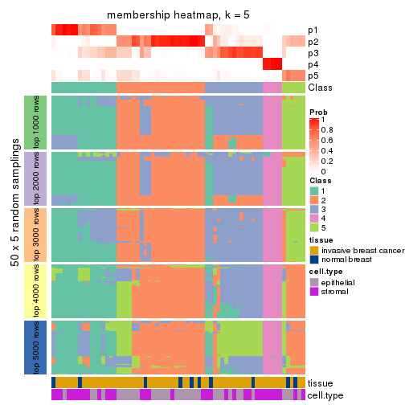
membership_heatmap(res, k = 6)
As soon as we have had the classes for columns, we can look for signatures which are significantly different between classes which can be candidate marks for certain classes. Following are the heatmaps for signatures.
Signature heatmaps where rows are scaled:
get_signatures(res, k = 2)
get_signatures(res, k = 3)
get_signatures(res, k = 4)
get_signatures(res, k = 5)
get_signatures(res, k = 6)
Signature heatmaps where rows are not scaled:
get_signatures(res, k = 2, scale_rows = FALSE)
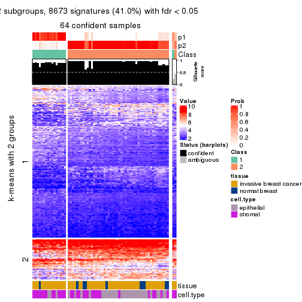
get_signatures(res, k = 3, scale_rows = FALSE)
get_signatures(res, k = 4, scale_rows = FALSE)
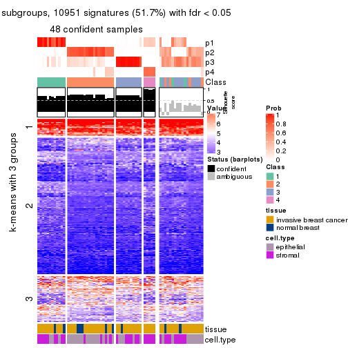
get_signatures(res, k = 5, scale_rows = FALSE)
get_signatures(res, k = 6, scale_rows = FALSE)
Compare the overlap of signatures from different k:
compare_signatures(res)
get_signature() returns a data frame invisibly. TO get the list of signatures, the function
call should be assigned to a variable explicitly. In following code, if plot argument is set
to FALSE, no heatmap is plotted while only the differential analysis is performed.
# code only for demonstration
tb = get_signature(res, k = ..., plot = FALSE)
An example of the output of tb is:
#> which_row fdr mean_1 mean_2 scaled_mean_1 scaled_mean_2 km
#> 1 38 0.042760348 8.373488 9.131774 -0.5533452 0.5164555 1
#> 2 40 0.018707592 7.106213 8.469186 -0.6173731 0.5762149 1
#> 3 55 0.019134737 10.221463 11.207825 -0.6159697 0.5749050 1
#> 4 59 0.006059896 5.921854 7.869574 -0.6899429 0.6439467 1
#> 5 60 0.018055526 8.928898 10.211722 -0.6204761 0.5791110 1
#> 6 98 0.009384629 15.714769 14.887706 0.6635654 -0.6193277 2
...
The columns in tb are:
which_row: row indices corresponding to the input matrix.fdr: FDR for the differential test. mean_x: The mean value in group x.scaled_mean_x: The mean value in group x after rows are scaled.km: Row groups if k-means clustering is applied to rows.UMAP plot which shows how samples are separated.
dimension_reduction(res, k = 2, method = "UMAP")
dimension_reduction(res, k = 3, method = "UMAP")
dimension_reduction(res, k = 4, method = "UMAP")
dimension_reduction(res, k = 5, method = "UMAP")
dimension_reduction(res, k = 6, method = "UMAP")
Following heatmap shows how subgroups are split when increasing k:
collect_classes(res)
Test correlation between subgroups and known annotations. If the known annotation is numeric, one-way ANOVA test is applied, and if the known annotation is discrete, chi-squared contingency table test is applied.
test_to_known_factors(res)
#> n tissue(p) cell.type(p) k
#> ATC:mclust 64 0.427 0.006074 2
#> ATC:mclust 50 0.397 0.001525 3
#> ATC:mclust 48 0.484 0.001584 4
#> ATC:mclust 54 0.407 0.000783 5
#> ATC:mclust 44 0.557 0.005607 6
If matrix rows can be associated to genes, consider to use functional_enrichment(res,
...) to perform function enrichment for the signature genes. See this vignette for more detailed explanations.
The object with results only for a single top-value method and a single partition method can be extracted as:
res = res_list["ATC", "NMF"]
# you can also extract it by
# res = res_list["ATC:NMF"]
A summary of res and all the functions that can be applied to it:
res
#> A 'ConsensusPartition' object with k = 2, 3, 4, 5, 6.
#> On a matrix with 21163 rows and 66 columns.
#> Top rows (1000, 2000, 3000, 4000, 5000) are extracted by 'ATC' method.
#> Subgroups are detected by 'NMF' method.
#> Performed in total 1250 partitions by row resampling.
#> Best k for subgroups seems to be 2.
#>
#> Following methods can be applied to this 'ConsensusPartition' object:
#> [1] "cola_report" "collect_classes" "collect_plots"
#> [4] "collect_stats" "colnames" "compare_signatures"
#> [7] "consensus_heatmap" "dimension_reduction" "functional_enrichment"
#> [10] "get_anno_col" "get_anno" "get_classes"
#> [13] "get_consensus" "get_matrix" "get_membership"
#> [16] "get_param" "get_signatures" "get_stats"
#> [19] "is_best_k" "is_stable_k" "membership_heatmap"
#> [22] "ncol" "nrow" "plot_ecdf"
#> [25] "rownames" "select_partition_number" "show"
#> [28] "suggest_best_k" "test_to_known_factors"
collect_plots() function collects all the plots made from res for all k (number of partitions)
into one single page to provide an easy and fast comparison between different k.
collect_plots(res)
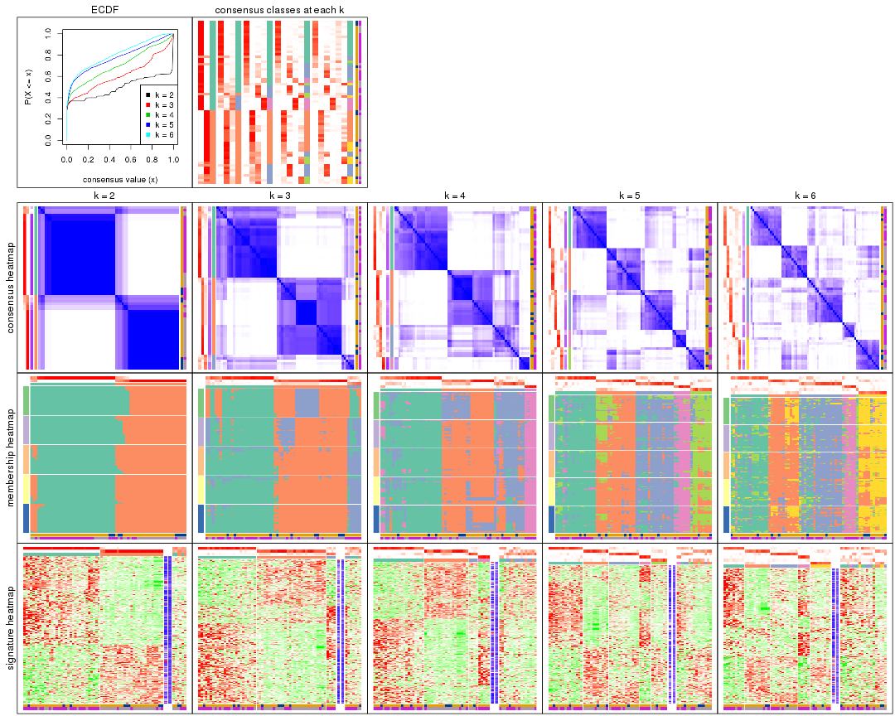
The plots are:
k and the heatmap of
predicted classes for each k.k.k.k.All the plots in panels can be made by individual functions and they are plotted later in this section.
select_partition_number() produces several plots showing different
statistics for choosing “optimized” k. There are following statistics:
k;k, the area increased is defined as \(A_k - A_{k-1}\).The detailed explanations of these statistics can be found in the cola vignette.
Generally speaking, lower PAC score, higher mean silhouette score or higher
concordance corresponds to better partition. Rand index and Jaccard index
measure how similar the current partition is compared to partition with k-1.
If they are too similar, we won't accept k is better than k-1.
select_partition_number(res)
The numeric values for all these statistics can be obtained by get_stats().
get_stats(res)
#> k 1-PAC mean_silhouette concordance area_increased Rand Jaccard
#> 2 2 0.845 0.870 0.951 0.4964 0.497 0.497
#> 3 3 0.607 0.719 0.855 0.2367 0.889 0.782
#> 4 4 0.584 0.629 0.810 0.1549 0.851 0.654
#> 5 5 0.644 0.601 0.804 0.1002 0.807 0.452
#> 6 6 0.619 0.499 0.743 0.0382 0.891 0.582
suggest_best_k() suggests the best \(k\) based on these statistics. The rules are as follows:
suggest_best_k(res)
#> [1] 2
Following shows the table of the partitions (You need to click the show/hide
code output link to see it). The membership matrix (columns with name p*)
is inferred by
clue::cl_consensus()
function with the SE method. Basically the value in the membership matrix
represents the probability to belong to a certain group. The finall class
label for an item is determined with the group with highest probability it
belongs to.
In get_classes() function, the entropy is calculated from the membership
matrix and the silhouette score is calculated from the consensus matrix.
cbind(get_classes(res, k = 2), get_membership(res, k = 2))
#> class entropy silhouette p1 p2
#> GSM272727 2 0.0000 0.92949 0.000 1.000
#> GSM272729 2 0.9775 0.33839 0.412 0.588
#> GSM272731 2 0.0000 0.92949 0.000 1.000
#> GSM272733 2 0.0000 0.92949 0.000 1.000
#> GSM272735 2 0.0000 0.92949 0.000 1.000
#> GSM272728 2 0.0000 0.92949 0.000 1.000
#> GSM272730 1 0.0000 0.95677 1.000 0.000
#> GSM272732 1 0.0000 0.95677 1.000 0.000
#> GSM272734 1 0.0000 0.95677 1.000 0.000
#> GSM272736 2 0.9686 0.38009 0.396 0.604
#> GSM272671 2 0.0000 0.92949 0.000 1.000
#> GSM272673 2 0.6712 0.76778 0.176 0.824
#> GSM272675 2 0.0000 0.92949 0.000 1.000
#> GSM272677 2 0.0000 0.92949 0.000 1.000
#> GSM272679 2 0.0000 0.92949 0.000 1.000
#> GSM272681 1 0.1843 0.93200 0.972 0.028
#> GSM272683 2 0.0376 0.92672 0.004 0.996
#> GSM272685 2 0.0000 0.92949 0.000 1.000
#> GSM272687 1 0.0000 0.95677 1.000 0.000
#> GSM272689 2 0.0000 0.92949 0.000 1.000
#> GSM272691 2 0.0000 0.92949 0.000 1.000
#> GSM272693 1 0.0000 0.95677 1.000 0.000
#> GSM272695 2 0.0000 0.92949 0.000 1.000
#> GSM272697 2 0.0000 0.92949 0.000 1.000
#> GSM272699 2 0.0000 0.92949 0.000 1.000
#> GSM272701 2 0.0000 0.92949 0.000 1.000
#> GSM272703 2 0.0000 0.92949 0.000 1.000
#> GSM272705 1 0.9954 0.06188 0.540 0.460
#> GSM272707 1 0.0000 0.95677 1.000 0.000
#> GSM272709 2 0.8499 0.62560 0.276 0.724
#> GSM272711 2 0.0000 0.92949 0.000 1.000
#> GSM272713 1 0.0000 0.95677 1.000 0.000
#> GSM272715 1 0.9323 0.40885 0.652 0.348
#> GSM272717 2 0.0000 0.92949 0.000 1.000
#> GSM272719 2 0.0000 0.92949 0.000 1.000
#> GSM272721 1 0.0000 0.95677 1.000 0.000
#> GSM272723 2 0.0000 0.92949 0.000 1.000
#> GSM272725 1 0.0000 0.95677 1.000 0.000
#> GSM272672 1 0.9983 -0.00217 0.524 0.476
#> GSM272674 1 0.0000 0.95677 1.000 0.000
#> GSM272676 2 0.0000 0.92949 0.000 1.000
#> GSM272678 2 0.6438 0.78160 0.164 0.836
#> GSM272680 2 0.9944 0.20536 0.456 0.544
#> GSM272682 1 0.0000 0.95677 1.000 0.000
#> GSM272684 1 0.0000 0.95677 1.000 0.000
#> GSM272686 1 0.1414 0.93978 0.980 0.020
#> GSM272688 1 0.0000 0.95677 1.000 0.000
#> GSM272690 1 0.0000 0.95677 1.000 0.000
#> GSM272692 1 0.0000 0.95677 1.000 0.000
#> GSM272694 1 0.0000 0.95677 1.000 0.000
#> GSM272696 1 0.1184 0.94329 0.984 0.016
#> GSM272698 1 0.0000 0.95677 1.000 0.000
#> GSM272700 1 0.0000 0.95677 1.000 0.000
#> GSM272702 1 0.0000 0.95677 1.000 0.000
#> GSM272704 1 0.0000 0.95677 1.000 0.000
#> GSM272706 1 0.0000 0.95677 1.000 0.000
#> GSM272708 1 0.0000 0.95677 1.000 0.000
#> GSM272710 1 0.0000 0.95677 1.000 0.000
#> GSM272712 1 0.0000 0.95677 1.000 0.000
#> GSM272714 1 0.0000 0.95677 1.000 0.000
#> GSM272716 1 0.0000 0.95677 1.000 0.000
#> GSM272718 2 0.0000 0.92949 0.000 1.000
#> GSM272720 1 0.0000 0.95677 1.000 0.000
#> GSM272722 1 0.0000 0.95677 1.000 0.000
#> GSM272724 1 0.0000 0.95677 1.000 0.000
#> GSM272726 1 0.0000 0.95677 1.000 0.000
cbind(get_classes(res, k = 3), get_membership(res, k = 3))
#> class entropy silhouette p1 p2 p3
#> GSM272727 2 0.4555 0.7775 0.000 0.800 0.200
#> GSM272729 2 0.7926 0.4252 0.216 0.656 0.128
#> GSM272731 2 0.0237 0.8315 0.000 0.996 0.004
#> GSM272733 2 0.0000 0.8313 0.000 1.000 0.000
#> GSM272735 2 0.0000 0.8313 0.000 1.000 0.000
#> GSM272728 2 0.4555 0.7775 0.000 0.800 0.200
#> GSM272730 1 0.2384 0.8020 0.936 0.008 0.056
#> GSM272732 1 0.0592 0.8254 0.988 0.000 0.012
#> GSM272734 1 0.1163 0.8174 0.972 0.000 0.028
#> GSM272736 2 0.4605 0.7197 0.000 0.796 0.204
#> GSM272671 2 0.4555 0.7775 0.000 0.800 0.200
#> GSM272673 2 0.5178 0.6563 0.000 0.744 0.256
#> GSM272675 2 0.4555 0.7775 0.000 0.800 0.200
#> GSM272677 2 0.0592 0.8313 0.000 0.988 0.012
#> GSM272679 2 0.4555 0.7775 0.000 0.800 0.200
#> GSM272681 1 0.6232 0.5000 0.740 0.220 0.040
#> GSM272683 2 0.2496 0.8084 0.004 0.928 0.068
#> GSM272685 2 0.4555 0.7775 0.000 0.800 0.200
#> GSM272687 1 0.9644 -0.0571 0.468 0.256 0.276
#> GSM272689 2 0.3482 0.7773 0.000 0.872 0.128
#> GSM272691 2 0.1753 0.8195 0.000 0.952 0.048
#> GSM272693 1 0.1129 0.8214 0.976 0.004 0.020
#> GSM272695 2 0.1163 0.8260 0.000 0.972 0.028
#> GSM272697 2 0.0592 0.8312 0.000 0.988 0.012
#> GSM272699 2 0.4605 0.7156 0.000 0.796 0.204
#> GSM272701 2 0.4504 0.7294 0.000 0.804 0.196
#> GSM272703 2 0.1289 0.8248 0.000 0.968 0.032
#> GSM272705 2 0.5461 0.6802 0.008 0.748 0.244
#> GSM272707 1 0.0592 0.8254 0.988 0.000 0.012
#> GSM272709 2 0.5659 0.6501 0.152 0.796 0.052
#> GSM272711 2 0.4399 0.7823 0.000 0.812 0.188
#> GSM272713 1 0.3340 0.7149 0.880 0.000 0.120
#> GSM272715 1 0.5166 0.6763 0.828 0.116 0.056
#> GSM272717 2 0.4555 0.7775 0.000 0.800 0.200
#> GSM272719 2 0.4555 0.7775 0.000 0.800 0.200
#> GSM272721 1 0.0747 0.8240 0.984 0.000 0.016
#> GSM272723 2 0.0592 0.8319 0.000 0.988 0.012
#> GSM272725 1 0.2063 0.8070 0.948 0.008 0.044
#> GSM272672 1 0.7980 0.1368 0.536 0.400 0.064
#> GSM272674 1 0.2356 0.7777 0.928 0.000 0.072
#> GSM272676 2 0.0237 0.8315 0.000 0.996 0.004
#> GSM272678 2 0.1163 0.8266 0.000 0.972 0.028
#> GSM272680 2 0.5541 0.6702 0.008 0.740 0.252
#> GSM272682 1 0.0592 0.8254 0.988 0.000 0.012
#> GSM272684 1 0.4605 0.5571 0.796 0.000 0.204
#> GSM272686 1 0.2280 0.8045 0.940 0.008 0.052
#> GSM272688 1 0.0747 0.8240 0.984 0.000 0.016
#> GSM272690 3 0.6129 0.6690 0.324 0.008 0.668
#> GSM272692 3 0.6305 0.3851 0.484 0.000 0.516
#> GSM272694 1 0.0592 0.8254 0.988 0.000 0.012
#> GSM272696 1 0.7548 0.4280 0.684 0.204 0.112
#> GSM272698 3 0.9484 0.4307 0.264 0.240 0.496
#> GSM272700 3 0.6354 0.6874 0.204 0.052 0.744
#> GSM272702 1 0.1163 0.8193 0.972 0.000 0.028
#> GSM272704 1 0.0237 0.8256 0.996 0.004 0.000
#> GSM272706 1 0.0237 0.8249 0.996 0.000 0.004
#> GSM272708 1 0.2096 0.8062 0.944 0.004 0.052
#> GSM272710 1 0.0747 0.8240 0.984 0.000 0.016
#> GSM272712 3 0.6229 0.6550 0.340 0.008 0.652
#> GSM272714 1 0.1411 0.8122 0.964 0.000 0.036
#> GSM272716 1 0.1529 0.8142 0.960 0.000 0.040
#> GSM272718 2 0.4555 0.7775 0.000 0.800 0.200
#> GSM272720 3 0.6354 0.5652 0.056 0.196 0.748
#> GSM272722 1 0.2280 0.8046 0.940 0.008 0.052
#> GSM272724 1 0.8838 0.2106 0.580 0.200 0.220
#> GSM272726 1 0.0592 0.8254 0.988 0.000 0.012
cbind(get_classes(res, k = 4), get_membership(res, k = 4))
#> class entropy silhouette p1 p2 p3 p4
#> GSM272727 2 0.0336 0.73186 0.000 0.992 0.008 0.000
#> GSM272729 3 0.4898 0.60064 0.116 0.104 0.780 0.000
#> GSM272731 2 0.4134 0.69219 0.000 0.740 0.260 0.000
#> GSM272733 2 0.4193 0.68546 0.000 0.732 0.268 0.000
#> GSM272735 2 0.4406 0.66289 0.000 0.700 0.300 0.000
#> GSM272728 2 0.0188 0.73372 0.000 0.996 0.004 0.000
#> GSM272730 1 0.3688 0.72652 0.792 0.000 0.208 0.000
#> GSM272732 1 0.0336 0.82861 0.992 0.000 0.000 0.008
#> GSM272734 1 0.0707 0.82739 0.980 0.000 0.000 0.020
#> GSM272736 3 0.5220 -0.17977 0.000 0.424 0.568 0.008
#> GSM272671 2 0.2408 0.63489 0.000 0.896 0.104 0.000
#> GSM272673 3 0.7216 -0.22238 0.000 0.412 0.448 0.140
#> GSM272675 2 0.0188 0.73491 0.000 0.996 0.004 0.000
#> GSM272677 2 0.4103 0.69476 0.000 0.744 0.256 0.000
#> GSM272679 2 0.0469 0.73629 0.000 0.988 0.012 0.000
#> GSM272681 1 0.6411 0.35389 0.600 0.092 0.308 0.000
#> GSM272683 3 0.4103 0.49642 0.000 0.256 0.744 0.000
#> GSM272685 2 0.0469 0.72945 0.000 0.988 0.012 0.000
#> GSM272687 3 0.3219 0.60060 0.112 0.020 0.868 0.000
#> GSM272689 2 0.5619 0.64326 0.000 0.676 0.268 0.056
#> GSM272691 2 0.5099 0.55583 0.000 0.612 0.380 0.008
#> GSM272693 1 0.1867 0.81326 0.928 0.000 0.072 0.000
#> GSM272695 2 0.5000 -0.00328 0.000 0.500 0.500 0.000
#> GSM272697 2 0.4468 0.69619 0.000 0.752 0.232 0.016
#> GSM272699 2 0.5619 0.57976 0.000 0.640 0.320 0.040
#> GSM272701 3 0.4891 0.41601 0.000 0.308 0.680 0.012
#> GSM272703 3 0.4888 0.21787 0.000 0.412 0.588 0.000
#> GSM272705 3 0.1488 0.59601 0.032 0.012 0.956 0.000
#> GSM272707 1 0.1389 0.82154 0.952 0.000 0.000 0.048
#> GSM272709 3 0.7636 0.35280 0.284 0.248 0.468 0.000
#> GSM272711 2 0.0469 0.73567 0.000 0.988 0.012 0.000
#> GSM272713 1 0.4955 0.23914 0.556 0.000 0.000 0.444
#> GSM272715 1 0.4356 0.63784 0.708 0.000 0.292 0.000
#> GSM272717 2 0.0188 0.73372 0.000 0.996 0.004 0.000
#> GSM272719 2 0.0336 0.73601 0.000 0.992 0.008 0.000
#> GSM272721 1 0.0592 0.82773 0.984 0.000 0.000 0.016
#> GSM272723 2 0.4967 0.14524 0.000 0.548 0.452 0.000
#> GSM272725 1 0.5972 0.66960 0.692 0.000 0.176 0.132
#> GSM272672 1 0.4776 0.46421 0.624 0.000 0.376 0.000
#> GSM272674 1 0.1940 0.80502 0.924 0.000 0.000 0.076
#> GSM272676 2 0.4313 0.68956 0.004 0.736 0.260 0.000
#> GSM272678 2 0.5088 0.47729 0.000 0.572 0.424 0.004
#> GSM272680 3 0.3768 0.43106 0.000 0.184 0.808 0.008
#> GSM272682 1 0.0927 0.82900 0.976 0.000 0.016 0.008
#> GSM272684 1 0.4933 0.26318 0.568 0.000 0.000 0.432
#> GSM272686 1 0.5282 0.61561 0.688 0.036 0.276 0.000
#> GSM272688 1 0.0592 0.82773 0.984 0.000 0.000 0.016
#> GSM272690 4 0.0188 0.95927 0.000 0.000 0.004 0.996
#> GSM272692 4 0.1557 0.91519 0.056 0.000 0.000 0.944
#> GSM272694 1 0.0469 0.82891 0.988 0.000 0.012 0.000
#> GSM272696 3 0.4103 0.47532 0.256 0.000 0.744 0.000
#> GSM272698 3 0.6605 0.32661 0.056 0.044 0.660 0.240
#> GSM272700 4 0.0779 0.95705 0.004 0.000 0.016 0.980
#> GSM272702 1 0.1211 0.82344 0.960 0.000 0.040 0.000
#> GSM272704 1 0.1722 0.82493 0.944 0.000 0.048 0.008
#> GSM272706 1 0.0895 0.82849 0.976 0.000 0.020 0.004
#> GSM272708 1 0.4008 0.69526 0.756 0.000 0.244 0.000
#> GSM272710 1 0.1211 0.82188 0.960 0.000 0.000 0.040
#> GSM272712 4 0.0524 0.95776 0.008 0.000 0.004 0.988
#> GSM272714 1 0.2814 0.75804 0.868 0.000 0.000 0.132
#> GSM272716 1 0.1867 0.81403 0.928 0.000 0.072 0.000
#> GSM272718 2 0.0188 0.73372 0.000 0.996 0.004 0.000
#> GSM272720 4 0.1557 0.91783 0.000 0.000 0.056 0.944
#> GSM272722 1 0.4522 0.60298 0.680 0.000 0.320 0.000
#> GSM272724 3 0.3688 0.54472 0.208 0.000 0.792 0.000
#> GSM272726 1 0.0707 0.82710 0.980 0.000 0.000 0.020
cbind(get_classes(res, k = 5), get_membership(res, k = 5))
#> class entropy silhouette p1 p2 p3 p4 p5
#> GSM272727 2 0.1792 0.6598 0.000 0.916 0.084 0.000 0.000
#> GSM272729 3 0.1200 0.7770 0.012 0.008 0.964 0.000 0.016
#> GSM272731 2 0.4627 0.1419 0.000 0.544 0.012 0.000 0.444
#> GSM272733 2 0.4527 0.3040 0.000 0.596 0.012 0.000 0.392
#> GSM272735 5 0.4708 0.1476 0.000 0.436 0.016 0.000 0.548
#> GSM272728 2 0.0833 0.6889 0.000 0.976 0.016 0.004 0.004
#> GSM272730 3 0.4798 0.3368 0.396 0.000 0.580 0.000 0.024
#> GSM272732 1 0.1205 0.8145 0.956 0.000 0.004 0.000 0.040
#> GSM272734 1 0.1428 0.8154 0.956 0.004 0.004 0.024 0.012
#> GSM272736 5 0.3461 0.6626 0.016 0.168 0.004 0.000 0.812
#> GSM272671 2 0.3612 0.4814 0.000 0.732 0.268 0.000 0.000
#> GSM272673 5 0.4384 0.6355 0.000 0.184 0.020 0.032 0.764
#> GSM272675 2 0.1121 0.6896 0.000 0.956 0.000 0.000 0.044
#> GSM272677 2 0.4617 0.1572 0.000 0.552 0.012 0.000 0.436
#> GSM272679 2 0.1444 0.6929 0.000 0.948 0.012 0.000 0.040
#> GSM272681 5 0.4417 0.6356 0.092 0.148 0.000 0.000 0.760
#> GSM272683 3 0.1281 0.7665 0.000 0.012 0.956 0.000 0.032
#> GSM272685 2 0.2648 0.6101 0.000 0.848 0.152 0.000 0.000
#> GSM272687 3 0.1597 0.7711 0.012 0.000 0.940 0.000 0.048
#> GSM272689 2 0.6030 0.5220 0.000 0.624 0.100 0.028 0.248
#> GSM272691 5 0.4400 0.5175 0.000 0.308 0.020 0.000 0.672
#> GSM272693 1 0.3616 0.7414 0.804 0.000 0.032 0.000 0.164
#> GSM272695 3 0.5320 0.0467 0.000 0.424 0.524 0.000 0.052
#> GSM272697 2 0.4579 0.4588 0.000 0.668 0.016 0.008 0.308
#> GSM272699 2 0.5831 0.5612 0.000 0.668 0.128 0.028 0.176
#> GSM272701 3 0.2434 0.7442 0.000 0.048 0.908 0.008 0.036
#> GSM272703 3 0.2139 0.7530 0.000 0.052 0.916 0.000 0.032
#> GSM272705 5 0.5372 -0.2064 0.044 0.004 0.448 0.000 0.504
#> GSM272707 1 0.1943 0.8100 0.924 0.000 0.020 0.056 0.000
#> GSM272709 3 0.2067 0.7802 0.044 0.028 0.924 0.000 0.004
#> GSM272711 2 0.2574 0.6737 0.000 0.876 0.012 0.000 0.112
#> GSM272713 4 0.4298 0.4489 0.352 0.000 0.008 0.640 0.000
#> GSM272715 3 0.4599 0.4422 0.356 0.000 0.624 0.000 0.020
#> GSM272717 2 0.0510 0.6884 0.000 0.984 0.016 0.000 0.000
#> GSM272719 2 0.2230 0.6712 0.000 0.884 0.000 0.000 0.116
#> GSM272721 1 0.1251 0.8169 0.956 0.000 0.008 0.036 0.000
#> GSM272723 3 0.4104 0.5840 0.000 0.220 0.748 0.000 0.032
#> GSM272725 3 0.4829 0.6347 0.200 0.000 0.724 0.068 0.008
#> GSM272672 1 0.5939 0.0774 0.492 0.004 0.412 0.000 0.092
#> GSM272674 1 0.2943 0.7954 0.880 0.000 0.008 0.052 0.060
#> GSM272676 2 0.5151 0.0113 0.008 0.512 0.024 0.000 0.456
#> GSM272678 5 0.3750 0.6253 0.000 0.232 0.012 0.000 0.756
#> GSM272680 5 0.4487 0.6052 0.000 0.104 0.140 0.000 0.756
#> GSM272682 1 0.3398 0.6745 0.780 0.000 0.004 0.000 0.216
#> GSM272684 4 0.4676 0.3619 0.392 0.000 0.012 0.592 0.004
#> GSM272686 3 0.2497 0.7617 0.112 0.004 0.880 0.000 0.004
#> GSM272688 1 0.1560 0.8200 0.948 0.000 0.020 0.028 0.004
#> GSM272690 4 0.1197 0.8053 0.000 0.000 0.000 0.952 0.048
#> GSM272692 4 0.0324 0.8069 0.004 0.000 0.000 0.992 0.004
#> GSM272694 1 0.2149 0.8152 0.916 0.000 0.036 0.000 0.048
#> GSM272696 3 0.1560 0.7794 0.028 0.004 0.948 0.000 0.020
#> GSM272698 5 0.1588 0.5984 0.016 0.000 0.008 0.028 0.948
#> GSM272700 4 0.1478 0.7993 0.000 0.000 0.000 0.936 0.064
#> GSM272702 1 0.1041 0.8206 0.964 0.000 0.032 0.000 0.004
#> GSM272704 1 0.5805 0.0295 0.480 0.000 0.444 0.068 0.008
#> GSM272706 1 0.2179 0.7859 0.888 0.000 0.112 0.000 0.000
#> GSM272708 3 0.4086 0.5810 0.284 0.000 0.704 0.000 0.012
#> GSM272710 1 0.1124 0.8171 0.960 0.000 0.004 0.036 0.000
#> GSM272712 4 0.0566 0.8065 0.000 0.000 0.004 0.984 0.012
#> GSM272714 1 0.4400 0.5821 0.740 0.004 0.024 0.224 0.008
#> GSM272716 1 0.3196 0.6996 0.804 0.000 0.192 0.000 0.004
#> GSM272718 2 0.1121 0.6814 0.000 0.956 0.044 0.000 0.000
#> GSM272720 4 0.2361 0.7718 0.000 0.000 0.012 0.892 0.096
#> GSM272722 3 0.3143 0.6975 0.204 0.000 0.796 0.000 0.000
#> GSM272724 3 0.3631 0.7460 0.104 0.000 0.824 0.000 0.072
#> GSM272726 1 0.0671 0.8186 0.980 0.000 0.004 0.016 0.000
cbind(get_classes(res, k = 6), get_membership(res, k = 6))
#> class entropy silhouette p1 p2 p3 p4 p5 p6
#> GSM272727 2 0.1958 0.6767 0.000 0.896 0.100 0.000 0.000 0.004
#> GSM272729 3 0.2554 0.6935 0.032 0.044 0.896 0.000 0.024 0.004
#> GSM272731 6 0.3620 0.4801 0.000 0.352 0.000 0.000 0.000 0.648
#> GSM272733 6 0.3774 0.3169 0.000 0.408 0.000 0.000 0.000 0.592
#> GSM272735 6 0.3534 0.6192 0.000 0.276 0.000 0.000 0.008 0.716
#> GSM272728 2 0.3196 0.6870 0.000 0.836 0.004 0.000 0.064 0.096
#> GSM272730 3 0.6062 0.0347 0.436 0.008 0.440 0.008 0.092 0.016
#> GSM272732 1 0.5135 0.3953 0.648 0.000 0.012 0.004 0.244 0.092
#> GSM272734 1 0.3656 0.4747 0.728 0.000 0.000 0.012 0.256 0.004
#> GSM272736 6 0.1708 0.7159 0.004 0.040 0.000 0.000 0.024 0.932
#> GSM272671 2 0.3175 0.5180 0.000 0.744 0.256 0.000 0.000 0.000
#> GSM272673 6 0.4747 0.6597 0.000 0.096 0.004 0.056 0.096 0.748
#> GSM272675 2 0.2964 0.6528 0.000 0.792 0.000 0.000 0.004 0.204
#> GSM272677 6 0.3360 0.6321 0.004 0.264 0.000 0.000 0.000 0.732
#> GSM272679 2 0.4108 0.6181 0.000 0.704 0.028 0.000 0.008 0.260
#> GSM272681 6 0.2507 0.6846 0.060 0.020 0.000 0.000 0.028 0.892
#> GSM272683 3 0.2418 0.6820 0.000 0.092 0.884 0.000 0.016 0.008
#> GSM272685 2 0.2135 0.6709 0.000 0.872 0.128 0.000 0.000 0.000
#> GSM272687 3 0.2487 0.6869 0.028 0.008 0.892 0.004 0.068 0.000
#> GSM272689 2 0.6147 0.5048 0.000 0.592 0.088 0.036 0.032 0.252
#> GSM272691 6 0.3335 0.7030 0.000 0.168 0.004 0.004 0.020 0.804
#> GSM272693 1 0.4748 0.5154 0.756 0.008 0.044 0.004 0.112 0.076
#> GSM272695 3 0.5091 0.0891 0.000 0.424 0.516 0.000 0.020 0.040
#> GSM272697 2 0.4662 0.3385 0.000 0.576 0.004 0.008 0.024 0.388
#> GSM272699 2 0.6306 0.5526 0.000 0.636 0.144 0.060 0.052 0.108
#> GSM272701 3 0.3605 0.6532 0.000 0.140 0.808 0.004 0.032 0.016
#> GSM272703 3 0.2566 0.6690 0.000 0.112 0.868 0.000 0.008 0.012
#> GSM272705 3 0.8515 0.1993 0.208 0.096 0.368 0.004 0.192 0.132
#> GSM272707 1 0.3413 0.5390 0.828 0.000 0.016 0.052 0.104 0.000
#> GSM272709 3 0.1933 0.6855 0.004 0.044 0.920 0.000 0.032 0.000
#> GSM272711 2 0.3965 0.4092 0.000 0.604 0.000 0.000 0.008 0.388
#> GSM272713 4 0.5989 -0.2896 0.376 0.000 0.004 0.424 0.196 0.000
#> GSM272715 1 0.5746 -0.1118 0.464 0.036 0.440 0.000 0.052 0.008
#> GSM272717 2 0.1610 0.7020 0.000 0.916 0.000 0.000 0.000 0.084
#> GSM272719 2 0.3446 0.5567 0.000 0.692 0.000 0.000 0.000 0.308
#> GSM272721 1 0.3152 0.4991 0.792 0.000 0.004 0.008 0.196 0.000
#> GSM272723 3 0.3349 0.5587 0.000 0.244 0.748 0.000 0.000 0.008
#> GSM272725 3 0.6001 0.1955 0.040 0.004 0.512 0.088 0.356 0.000
#> GSM272672 3 0.6302 0.0471 0.424 0.024 0.436 0.000 0.088 0.028
#> GSM272674 1 0.3348 0.5489 0.836 0.000 0.000 0.064 0.084 0.016
#> GSM272676 6 0.3534 0.6935 0.000 0.168 0.008 0.000 0.032 0.792
#> GSM272678 6 0.1732 0.7208 0.004 0.072 0.000 0.000 0.004 0.920
#> GSM272680 6 0.4774 0.5769 0.004 0.056 0.116 0.000 0.080 0.744
#> GSM272682 1 0.5409 0.2550 0.580 0.000 0.000 0.000 0.188 0.232
#> GSM272684 1 0.5873 -0.3226 0.444 0.000 0.000 0.352 0.204 0.000
#> GSM272686 3 0.2471 0.6838 0.020 0.044 0.896 0.000 0.040 0.000
#> GSM272688 1 0.2405 0.5504 0.880 0.000 0.004 0.016 0.100 0.000
#> GSM272690 4 0.0964 0.7224 0.004 0.000 0.000 0.968 0.012 0.016
#> GSM272692 4 0.2910 0.6521 0.080 0.000 0.000 0.852 0.068 0.000
#> GSM272694 1 0.3333 0.5480 0.840 0.004 0.016 0.028 0.108 0.004
#> GSM272696 3 0.1598 0.6866 0.008 0.004 0.940 0.000 0.040 0.008
#> GSM272698 6 0.5799 0.4693 0.024 0.060 0.004 0.096 0.136 0.680
#> GSM272700 4 0.1218 0.7217 0.000 0.004 0.000 0.956 0.028 0.012
#> GSM272702 1 0.3418 0.5401 0.784 0.000 0.032 0.000 0.184 0.000
#> GSM272704 3 0.6158 0.0829 0.376 0.000 0.448 0.024 0.152 0.000
#> GSM272706 1 0.3675 0.5104 0.796 0.000 0.124 0.004 0.076 0.000
#> GSM272708 3 0.4162 0.5865 0.104 0.008 0.760 0.000 0.128 0.000
#> GSM272710 1 0.3230 0.5038 0.792 0.000 0.008 0.008 0.192 0.000
#> GSM272712 4 0.3213 0.6134 0.000 0.004 0.000 0.784 0.204 0.008
#> GSM272714 5 0.5478 0.0000 0.284 0.000 0.020 0.104 0.592 0.000
#> GSM272716 1 0.4108 0.4607 0.752 0.004 0.180 0.004 0.060 0.000
#> GSM272718 2 0.1594 0.7042 0.000 0.932 0.016 0.000 0.000 0.052
#> GSM272720 4 0.3334 0.6863 0.008 0.012 0.004 0.844 0.100 0.032
#> GSM272722 3 0.2975 0.6604 0.088 0.008 0.860 0.004 0.040 0.000
#> GSM272724 3 0.3728 0.6489 0.092 0.020 0.820 0.000 0.060 0.008
#> GSM272726 1 0.2664 0.5347 0.816 0.000 0.000 0.000 0.184 0.000
Heatmaps for the consensus matrix. It visualizes the probability of two samples to be in a same group.
consensus_heatmap(res, k = 2)
consensus_heatmap(res, k = 3)
consensus_heatmap(res, k = 4)
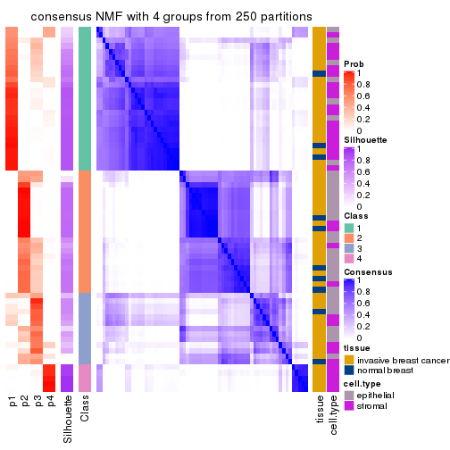
consensus_heatmap(res, k = 5)
consensus_heatmap(res, k = 6)
Heatmaps for the membership of samples in all partitions to see how consistent they are:
membership_heatmap(res, k = 2)
membership_heatmap(res, k = 3)

membership_heatmap(res, k = 4)

membership_heatmap(res, k = 5)
membership_heatmap(res, k = 6)
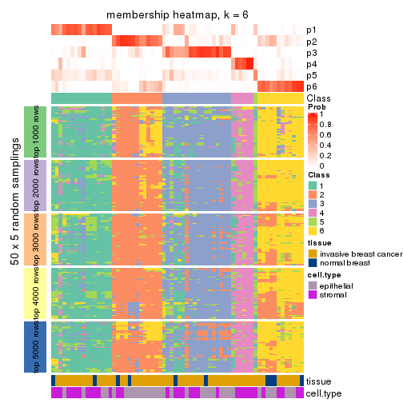
As soon as we have had the classes for columns, we can look for signatures which are significantly different between classes which can be candidate marks for certain classes. Following are the heatmaps for signatures.
Signature heatmaps where rows are scaled:
get_signatures(res, k = 2)
get_signatures(res, k = 3)
get_signatures(res, k = 4)
get_signatures(res, k = 5)
get_signatures(res, k = 6)
Signature heatmaps where rows are not scaled:
get_signatures(res, k = 2, scale_rows = FALSE)

get_signatures(res, k = 3, scale_rows = FALSE)
get_signatures(res, k = 4, scale_rows = FALSE)
get_signatures(res, k = 5, scale_rows = FALSE)

get_signatures(res, k = 6, scale_rows = FALSE)
Compare the overlap of signatures from different k:
compare_signatures(res)
get_signature() returns a data frame invisibly. TO get the list of signatures, the function
call should be assigned to a variable explicitly. In following code, if plot argument is set
to FALSE, no heatmap is plotted while only the differential analysis is performed.
# code only for demonstration
tb = get_signature(res, k = ..., plot = FALSE)
An example of the output of tb is:
#> which_row fdr mean_1 mean_2 scaled_mean_1 scaled_mean_2 km
#> 1 38 0.042760348 8.373488 9.131774 -0.5533452 0.5164555 1
#> 2 40 0.018707592 7.106213 8.469186 -0.6173731 0.5762149 1
#> 3 55 0.019134737 10.221463 11.207825 -0.6159697 0.5749050 1
#> 4 59 0.006059896 5.921854 7.869574 -0.6899429 0.6439467 1
#> 5 60 0.018055526 8.928898 10.211722 -0.6204761 0.5791110 1
#> 6 98 0.009384629 15.714769 14.887706 0.6635654 -0.6193277 2
...
The columns in tb are:
which_row: row indices corresponding to the input matrix.fdr: FDR for the differential test. mean_x: The mean value in group x.scaled_mean_x: The mean value in group x after rows are scaled.km: Row groups if k-means clustering is applied to rows.UMAP plot which shows how samples are separated.
dimension_reduction(res, k = 2, method = "UMAP")
dimension_reduction(res, k = 3, method = "UMAP")
dimension_reduction(res, k = 4, method = "UMAP")
dimension_reduction(res, k = 5, method = "UMAP")
dimension_reduction(res, k = 6, method = "UMAP")
Following heatmap shows how subgroups are split when increasing k:
collect_classes(res)
Test correlation between subgroups and known annotations. If the known annotation is numeric, one-way ANOVA test is applied, and if the known annotation is discrete, chi-squared contingency table test is applied.
test_to_known_factors(res)
#> n tissue(p) cell.type(p) k
#> ATC:NMF 60 0.492 3.00e-06 2
#> ATC:NMF 59 0.485 5.72e-05 3
#> ATC:NMF 50 0.493 8.72e-05 4
#> ATC:NMF 51 0.846 4.03e-03 5
#> ATC:NMF 46 0.464 1.30e-02 6
If matrix rows can be associated to genes, consider to use functional_enrichment(res,
...) to perform function enrichment for the signature genes. See this vignette for more detailed explanations.
sessionInfo()
#> R version 3.6.0 (2019-04-26)
#> Platform: x86_64-pc-linux-gnu (64-bit)
#> Running under: CentOS Linux 7 (Core)
#>
#> Matrix products: default
#> BLAS: /usr/lib64/libblas.so.3.4.2
#> LAPACK: /usr/lib64/liblapack.so.3.4.2
#>
#> locale:
#> [1] LC_CTYPE=en_GB.UTF-8 LC_NUMERIC=C LC_TIME=en_GB.UTF-8
#> [4] LC_COLLATE=en_GB.UTF-8 LC_MONETARY=en_GB.UTF-8 LC_MESSAGES=en_GB.UTF-8
#> [7] LC_PAPER=en_GB.UTF-8 LC_NAME=C LC_ADDRESS=C
#> [10] LC_TELEPHONE=C LC_MEASUREMENT=en_GB.UTF-8 LC_IDENTIFICATION=C
#>
#> attached base packages:
#> [1] grid stats graphics grDevices utils datasets methods base
#>
#> other attached packages:
#> [1] genefilter_1.66.0 ComplexHeatmap_2.3.1 markdown_1.1 knitr_1.26
#> [5] GetoptLong_0.1.7 cola_1.3.2
#>
#> loaded via a namespace (and not attached):
#> [1] circlize_0.4.8 shape_1.4.4 xfun_0.11 slam_0.1-46
#> [5] lattice_0.20-38 splines_3.6.0 colorspace_1.4-1 vctrs_0.2.0
#> [9] stats4_3.6.0 blob_1.2.0 XML_3.98-1.20 survival_2.44-1.1
#> [13] rlang_0.4.2 pillar_1.4.2 DBI_1.0.0 BiocGenerics_0.30.0
#> [17] bit64_0.9-7 RColorBrewer_1.1-2 matrixStats_0.55.0 stringr_1.4.0
#> [21] GlobalOptions_0.1.1 evaluate_0.14 memoise_1.1.0 Biobase_2.44.0
#> [25] IRanges_2.18.3 parallel_3.6.0 AnnotationDbi_1.46.1 highr_0.8
#> [29] Rcpp_1.0.3 xtable_1.8-4 backports_1.1.5 S4Vectors_0.22.1
#> [33] annotate_1.62.0 skmeans_0.2-11 bit_1.1-14 microbenchmark_1.4-7
#> [37] brew_1.0-6 impute_1.58.0 rjson_0.2.20 png_0.1-7
#> [41] digest_0.6.23 stringi_1.4.3 polyclip_1.10-0 clue_0.3-57
#> [45] tools_3.6.0 bitops_1.0-6 magrittr_1.5 eulerr_6.0.0
#> [49] RCurl_1.95-4.12 RSQLite_2.1.4 tibble_2.1.3 cluster_2.1.0
#> [53] crayon_1.3.4 pkgconfig_2.0.3 zeallot_0.1.0 Matrix_1.2-17
#> [57] xml2_1.2.2 httr_1.4.1 R6_2.4.1 mclust_5.4.5
#> [61] compiler_3.6.0